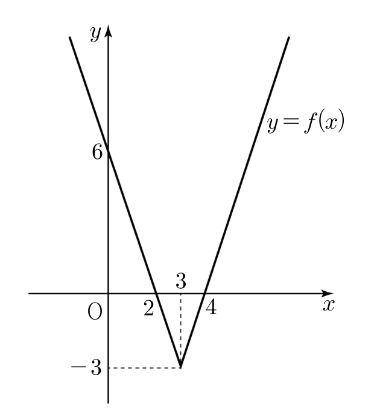
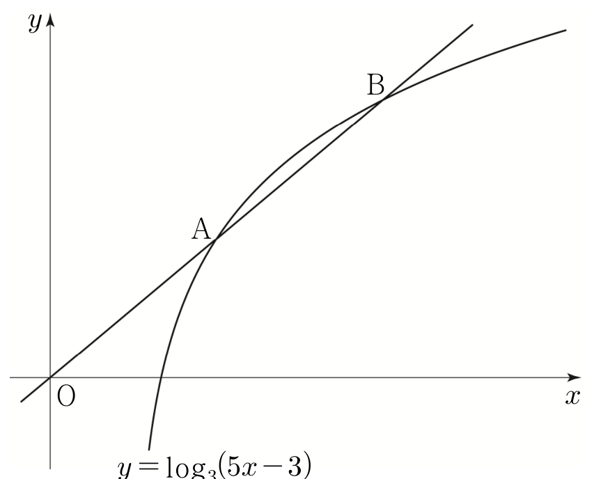
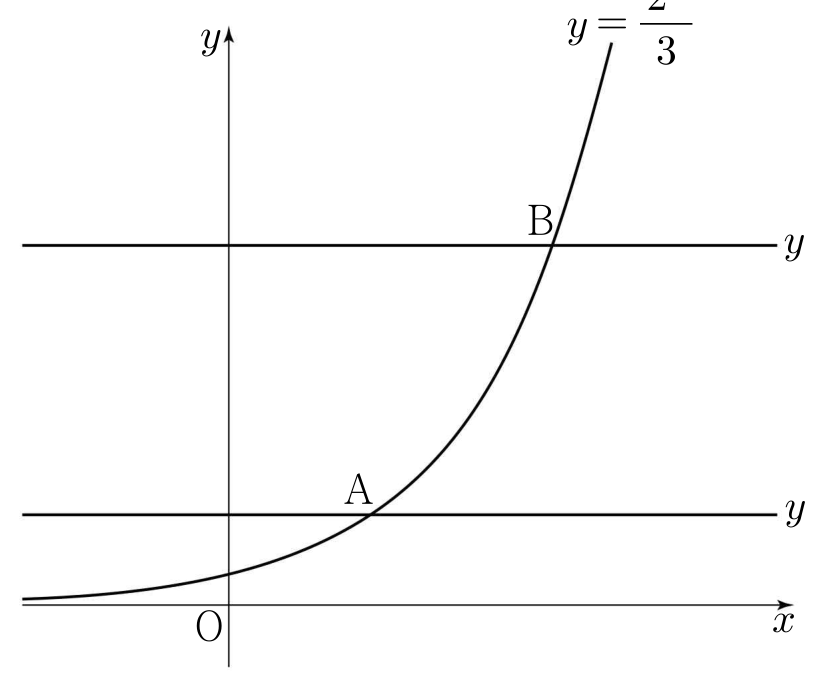
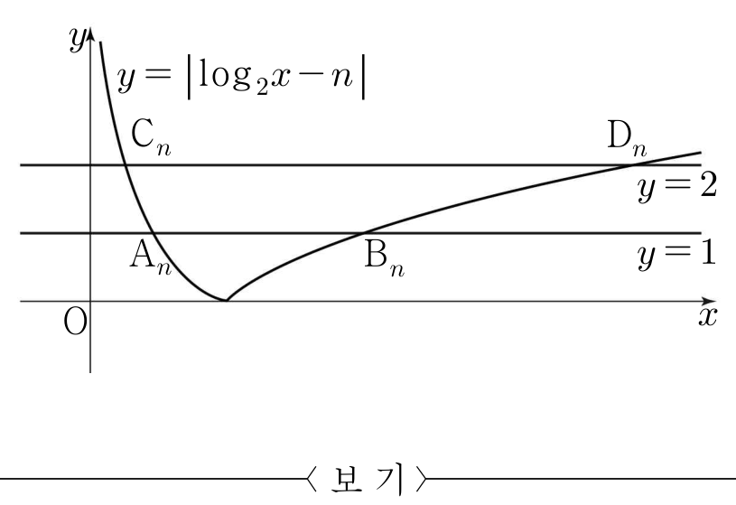
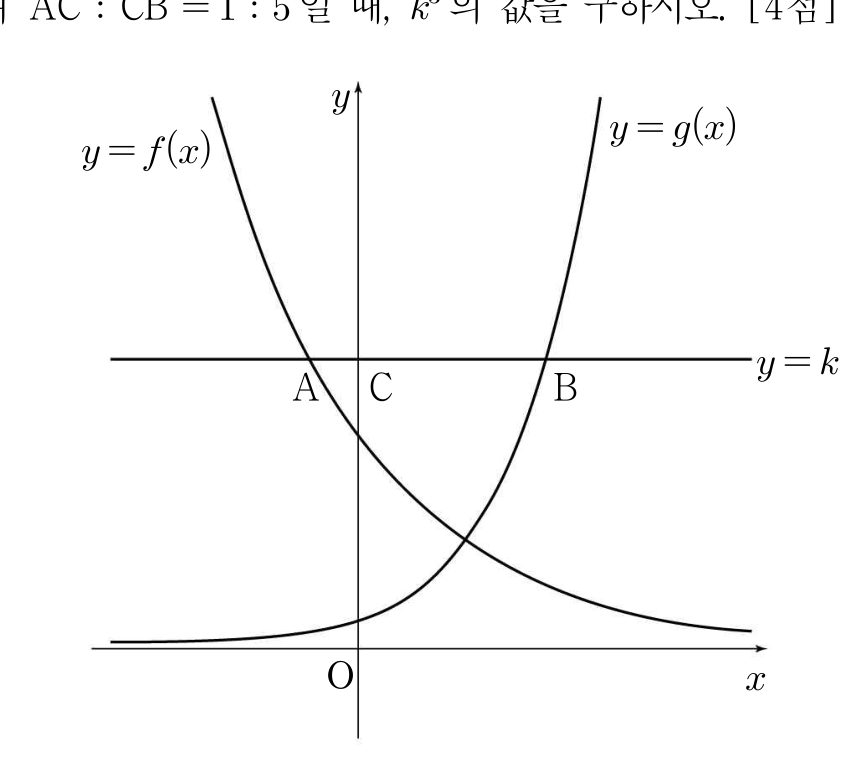
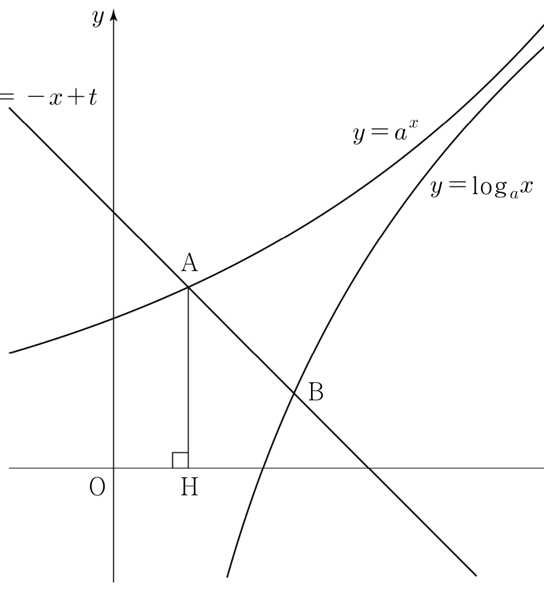
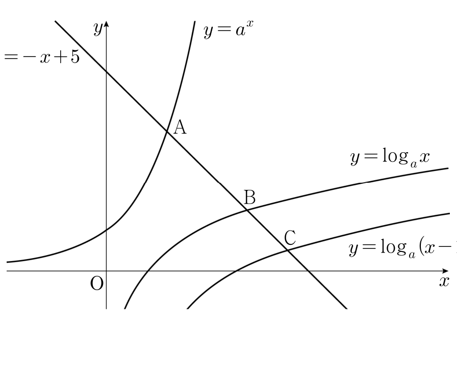
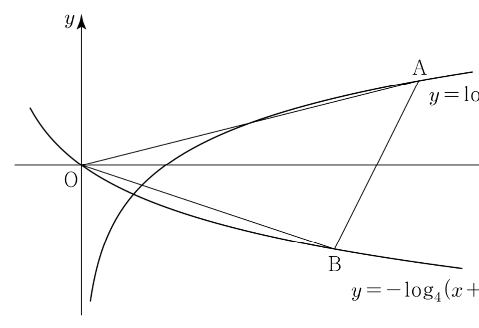
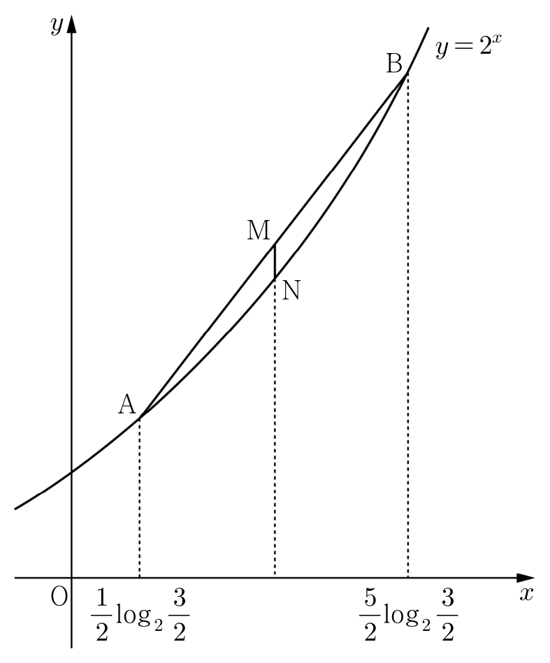
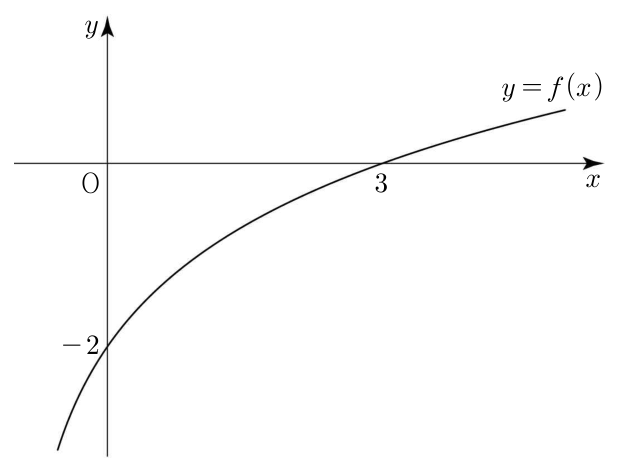

원본 (내부용)$\sqrt[5]{8}$이 어떤 자연수 $N$의 $n$제곱근이 되도록 하는 두 자리 자연수 $n$의 개수는? [4점]
① $14$② $15$③ $16$④ $17$⑤ $18$
원본 정답 ⑤
원본 풀이 (내부용)[출제의도] 거듭제곱근을 이해하여 자연수의 개수를 구한다.
\(\sqrt[5]{8}\)이 자연수 \(N\)의 \(n\)제곱근이므로 거듭제곱근의 정의에 의하여
\(
(\sqrt[5]{8})^n=N.
\)
따라서
\(
N=(\sqrt[5]{8})^n=8^{n/5}=(2^3)^{n/5}=2^{3n/5}.
\)
\(N\)은 자연수이므로 \(n\)의 값은 5의 배수이다. 따라서 \(\sqrt[5]{8}\)이 어떤 자연수 \(N\)의 \(n\)제곱근이 되도록 하는 두 자리 자연수 \(n\)은 \(10,15,20,\ldots,95\)이고 개수는 18이다.
쌍둥이 1/5 · 4점 쌍둥이$\sqrt[4]{8}$이 어떤 자연수 $N$의 $n$제곱근이 되도록 하는 두 자리 자연수 $n$ 중 최솟값을 구하세요.
① $10$② $11$③ $12$④ $13$⑤ $14$
정답③ $12$ $\sqrt[4]{8}=2^{3/4}$이다. $2^{3n/4}$이 자연수가 되려면 $3n/4$가 정수여야 하므로 $n$은 $4$의 배수이다. 조건을 만족하는 두 자리 자연수 중 최솟값은 $12$
숫자: 원본 5 8 → 쌍둥이 4 8 · 같은 수: 8
쌍둥이 2/5 · 4점 쌍둥이$\sqrt[7]{4}$가 어떤 자연수 $N$의 $n$제곱근이 되도록 하는 두 자리 자연수 $n$의 개수로 옳은 것을 고르세요.
① $10$② $11$③ $12$④ $13$⑤ $14$
정답④ $13$ $\left(\sqrt[7]{4}\right)^{n}=N$에서 $N=2^{\frac{2n}{7}}$ $N$이 자연수이려면 $\frac{2n}{7}$이 자연수, 즉 $n$은 $7$의 배수 두 자리 자연수 중 $7$의 배수는 $14$부터 $98$까지 $13$개
숫자: 원본 5 8 → 쌍둥이 7 4
쌍둥이 3/5 · 4점 쌍둥이$\sqrt[4]{27}$이 어떤 자연수 $N$의 $n$제곱근이 되도록 하는 두 자리 자연수 $n$의 개수로 옳은 것을 고르세요.
① $21$② $22$③ $23$④ $24$⑤ $25$
정답② $22$ $\left(\sqrt[4]{27}\right)^{n}=N$에서 $N=3^{\frac{3n}{4}}$ $N$이 자연수이려면 $\frac{3n}{4}$이 자연수, 즉 $n$은 $4$의 배수 두 자리 자연수 중 $4$의 배수는 $12$부터 $96$까지 $22$개
숫자: 원본 5 8 → 쌍둥이 4 27
쌍둥이 4/5 · 4점 쌍둥이$\sqrt[6]{32}$가 어떤 자연수 $N$의 $n$제곱근이 되도록 하는 두 자리 자연수 $n$의 개수로 옳은 것을 고르세요.
① $11$② $12$③ $13$④ $14$⑤ $15$
정답⑤ $15$ $\left(\sqrt[6]{32}\right)^{n}=N$에서 $N=2^{\frac{5n}{6}}$ $N$이 자연수이려면 $\frac{5n}{6}$이 자연수, 즉 $n$은 $6$의 배수 두 자리 자연수 중 $6$의 배수는 $12$부터 $96$까지 $15$개
숫자: 원본 5 8 → 쌍둥이 6 32
쌍둥이 5/5 · 4점 쌍둥이$\sqrt[6]{2}$가 어떤 자연수 $N$의 $n$제곱근이 되도록 하는 두 자리 자연수 $n$ 중 최댓값을 구하세요.
① $84$② $90$③ $92$④ $96$⑤ $98$
정답④ $96$ $\sqrt[6]{2}=2^{1/6}$이다. $2^{n/6}$이 자연수가 되려면 $n$이 $6$의 배수여야 한다. $100$보다 작은 가장 큰 두 자리 $6$의 배수는 $96$
원본 (내부용)실수 $x$에 대한 두 조건 $p$: $|x-a | \le 1$, $q$: $x^2 -2x-8>0$ 에 대하여 $p \to \sim q$가 참이 되도록 하는 실수 $a$의 최댓값은? [3점]
① $1$② $2$③ $3$④ $4$⑤ $5$
원본 정답 ③
원본 풀이 (내부용)[출제의도] 조건의 진리집합 사이의 관계를 이해하여 미지수의 최댓값을 구한다.
조건 \(p:|x-a|\leq1\)의 진리집합은
\(
P=\{x\mid a-1\leq x\leq a+1\}
\)
조건 \(q:x^2-2x-8>0\)에 대하여 조건 \(\sim q\)는
\(
x^2-2x-8\leq0
\)
이므로 조건 \(\sim q\)의 진리집합은
\(
Q^c=\{x\mid x^2-2x-8\leq0\}
=\{x\mid -2\leq x\leq4\}
\)
따라서 \(p\to\sim q\)가 참이 되려면
\(
P\subset Q^c
\)
이어야 하므로
\(
-2\leq a-1,\qquad a+1\leq4
\)
\(
-1\leq a,\qquad a\leq3
\)
\(
-1\leq a\leq3
\)
따라서 실수 \(a\)의 최댓값은 3.
생성기 숫자판 1/6 · G2H-03b#5실수 $x$에 대한 두 조건 $p$: $\left|x-a\right|\le 1$, $q$: $x^{2}-4x-12>0$에 대하여 $p\longrightarrow\sim q$가 참이 되도록 하는 실수 $a$의 최댓값으로 옳은 것을 고르세요.
생성기 숫자판 2/6 · G2H-03b#5실수 $x$에 대한 두 조건 $p$: $\left|x-a\right|\le 2$, $q$: $x^{2}-x-20>0$에 대하여 $p\longrightarrow\sim q$가 참이 되도록 하는 실수 $a$의 최댓값으로 옳은 것을 고르세요.
생성기 숫자판 3/6 · G2H-03b#5실수 $x$에 대한 두 조건 $p$: $\left|x-a\right|\le 2$, $q$: $x^{2}-4x-21>0$에 대하여 $p\longrightarrow\sim q$가 참이 되도록 하는 실수 $a$의 최댓값으로 옳은 것을 고르세요.
생성기 숫자판 4/6 · G2H-03b#5실수 $x$에 대한 두 조건 $p$: $\left|x-a\right|\le 3$, $q$: $x^{2}-3x-10>0$에 대하여 $p\longrightarrow\sim q$가 참이 되도록 하는 실수 $a$의 최댓값으로 옳은 것을 고르세요.
생성기 숫자판 5/6 · G2H-03b#5실수 $x$에 대한 두 조건 $p$: $\left|x-a\right|\le 3$, $q$: $x^{2}-3x-28>0$에 대하여 $p\longrightarrow\sim q$가 참이 되도록 하는 실수 $a$의 최댓값으로 옳은 것을 고르세요.
생성기 숫자판 6/6 · G2H-03b#5실수 $x$에 대한 두 조건 $p$: $\left|x-a\right|\le 2$, $q$: $x^{2}-4x-5>0$에 대하여 $p\longrightarrow\sim q$가 참이 되도록 하는 실수 $a$의 최댓값으로 옳은 것을 고르세요.
원본 풀이 (내부용)[출제의도] 유리함수의 그래프와 로그의 성질을 이용하여 문제를 해결한다.
함수 \(y=\dfrac1x\)의 그래프가 점 \((\sqrt[3]{a},\sqrt b)\)를 지나므로
\(
\sqrt b=\frac1{\sqrt[3]a}
\)
\(
b^{\frac12}=\frac1{a^{\frac13}}
\)
\(
b=a^{-\frac23}
\)
\(
\log_a b=\log_a a^{-\frac23}=-\frac23
\)
\(
\log_a b=\frac1{\log_b a}=-\frac32
\)
이므로
\(
\log_a b+\log_b a=-\frac23-\frac32=-\frac{13}{6}
\)
쌍둥이 1/5 · 4점 쌍둥이좌표평면에서 함수 $y=\frac{1}{x}$의 그래프가 점 $\left(\sqrt{a},\ \sqrt[5]{b}\right)$를 지날 때, $\log_{a}b+\log_{b}a$의 값으로 옳은 것을 고르세요. (단, $a$, $b$는 $1$이 아닌 양수입니다.)
① $-\frac{16}{5}$② $-\frac{31}{10}$③ $-3$④ $-\frac{29}{10}$⑤ $-\frac{14}{5}$
정답④ $-\frac{29}{10}$ $\sqrt[5]{b}=\frac{1}{\sqrt{a}}$이므로 $b^{\frac{1}{5}}=a^{-\frac{1}{2}}$, 즉 $b=a^{-\frac{5}{2}}$ $\log_{a}b=-\frac{5}{2}$, $\log_{b}a=\frac{1}{\log_{a}b}=-\frac{2}{5}$ $\log_{a}b+\log_{b}a=-\frac{5}{2}-\frac{2}{5}$ $=-\frac{29}{10}$
숫자: 원본 1 3 1 → 쌍둥이 1 5 1 · 같은 수: 1
쌍둥이 2/5 · 4점 쌍둥이좌표평면에서 함수 $y=\frac{1}{x}$의 그래프가 점 $\left(\sqrt[4]{a},\ \sqrt[3]{b}\right)$를 지날 때, $\log_{a}b+\log_{b}a$의 값으로 옳은 것을 고르세요. (단, $a$, $b$는 $1$이 아닌 양수입니다.)
① $-\frac{9}{4}$② $-\frac{13}{6}$③ $-\frac{25}{12}$④ $-2$⑤ $-\frac{23}{12}$
정답③ $-\frac{25}{12}$ $\sqrt[3]{b}=\frac{1}{\sqrt[4]{a}}$이므로 $b^{\frac{1}{3}}=a^{-\frac{1}{4}}$, 즉 $b=a^{-\frac{3}{4}}$ $\log_{a}b=-\frac{3}{4}$, $\log_{b}a=\frac{1}{\log_{a}b}=-\frac{4}{3}$ $\log_{a}b+\log_{b}a=-\frac{3}{4}-\frac{4}{3}$ $=-\frac{25}{12}$
숫자: 원본 1 3 1 → 쌍둥이 1 4 3 1 · 같은 수: 1 3
쌍둥이 3/5 · 4점 쌍둥이좌표평면에서 함수 $y=\frac{1}{x}$의 그래프가 점 $\left(\sqrt[5]{a},\ \sqrt[3]{b}\right)$를 지날 때, $\log_{a}b+\log_{b}a$의 값으로 옳은 것을 고르세요. (단, $a$, $b$는 $1$이 아닌 양수입니다.)
① $-\frac{7}{3}$② $-\frac{34}{15}$③ $-\frac{11}{5}$④ $-\frac{32}{15}$⑤ $-\frac{31}{15}$
정답② $-\frac{34}{15}$ $\sqrt[3]{b}=\frac{1}{\sqrt[5]{a}}$이므로 $b^{\frac{1}{3}}=a^{-\frac{1}{5}}$, 즉 $b=a^{-\frac{3}{5}}$ $\log_{a}b=-\frac{3}{5}$, $\log_{b}a=\frac{1}{\log_{a}b}=-\frac{5}{3}$ $\log_{a}b+\log_{b}a=-\frac{3}{5}-\frac{5}{3}$ $=-\frac{34}{15}$
숫자: 원본 1 3 1 → 쌍둥이 1 5 3 1 · 같은 수: 1 3
쌍둥이 4/5 · 4점 쌍둥이좌표평면에서 함수 $y=\frac{1}{x}$의 그래프가 점 $\left(\sqrt[3]{a},\ \sqrt{b}\right)$를 지날 때, $\log_{a}b$의 값으로 옳은 것을 고르세요. (단, $a$, $b$는 $1$이 아닌 양수입니다.)
① $-1$② $-\frac{5}{6}$③ $-\frac{2}{3}$④ $-\frac{1}{2}$⑤ $-\frac{1}{3}$
정답③ $-\frac{2}{3}$ $\sqrt{b}=\frac{1}{\sqrt[3]{a}}=a^{-\frac{1}{3}}$이므로 $b=a^{-\frac{2}{3}}$ 따라서 $\log_a b=-\frac{2}{3}$
숫자: 원본 1 3 1 → 쌍둥이 1 3 1 · 같은 수: 1 3
쌍둥이 5/5 · 4점 쌍둥이좌표평면에서 함수 $y=\frac{1}{x}$의 그래프가 점 $\left(\sqrt{a},\ \sqrt[3]{b}\right)$를 지날 때, $\log_{b}a$의 값으로 옳은 것을 고르세요. (단, $a$, $b$는 $1$이 아닌 양수입니다.)
① $-\frac{5}{6}$② $-\frac{3}{4}$③ $-\frac{2}{3}$④ $-\frac{1}{2}$⑤ $-\frac{1}{3}$
원본 (내부용)등식 $64^{\frac{1}{m}} =k \times 81^{\frac{1}{n}}$ 을 만족시키는 자연수 $k$가 존재하도록 하는 두 정수 $m$, $n$의 모든 순서쌍 $(m , n)$의 개수를 구하시오. [4점]
원본 정답 12
원본 풀이 (내부용)[출제의도] 약수의 성질과 지수법칙을 이해하여 순서쌍의 개수 문제를 해결한다.
\(
64^{\frac1m}=k\times81^{\frac1n}
\)
에서 양변을 \(81^{\frac1n}\)으로 나누면
\(
k=\frac{64^{\frac1m}}{81^{\frac1n}}
=\frac{2^{\frac6m}}{3^{\frac4n}}
\)
두 밑 2와 3은 서로소이므로 자연수 \(k\)가 존재하기 위해서는 밑 2의 지수 \(\frac6m\)과 밑 3의 지수 \(-\frac4n\)이 모두 자연수이어야 한다.
\(m\)은 6의 양의 약수인 \(1,2,3,6\)이고, \(n\)은 4의 양의 약수인 \(1,2,4\)이므로 가능한 순서쌍 \((m,n)\)은
\(
\begin{aligned}
&(1,1),\ (1,2),\ (1,4),\\
&(2,1),\ (2,2),\ (2,4),\\
&(3,1),\ (3,2),\ (3,4),\\
&(6,1),\ (6,2),\ (6,4)
\end{aligned}
\)
따라서 두 정수 \(m,n\)의 모든 순서쌍 \((m,n)\)의 개수는 12.
쌍둥이 1/5 · 4점 쌍둥이등식 $81^{1/m}=k\cdot125^{1/n}$에서 $k$가 자연수가 되도록 하는 모든 정수 순서쌍 $(m,n)$에 대하여 $m+n$의 합을 구하세요.
① $-2$② $0$③ $2$④ $4$⑤ $6$
정답③ $2$ $k=3^{4/m}\cdot5^{-3/n}$이다. 자연수가 되려면 $4/m$과 $-3/n$이 모두 음이 아닌 정수여야 한다. $m\in\{1,2,4\}$이고 $n\in\{-1,-3\}$이다. 합은 $2(1+2+4)+3(-1-3)=2$
숫자: 원본 64 1 81 1 → 쌍둥이 81 125 · 같은 수: 81
쌍둥이 2/5 · 4점 쌍둥이등식 $32^{\frac{1}{m}}=k\times 25^{\frac{1}{n}}$을 만족시키는 자연수 $k$가 존재하도록 하는 두 정수 $m$, $n$의 모든 순서쌍 $\left(m,\ n\right)$의 개수를 구하세요.
정답$4$ $k=2^{\frac{5}{m}}\times 5^{-\frac{2}{n}}$ $k$가 자연수이려면 $\frac{5}{m}$와 $-\frac{2}{n}$가 모두 $0$ 이상의 정수이어야 합니다. $m$은 $5$의 양의 약수 $2$개, $n$은 $2$의 양의 약수에 $-1$을 곱한 $2$개 순서쌍의 개수는 $2\times 2=4$
숫자: 원본 64 1 81 1 → 쌍둥이 32 1 25 1 · 같은 수: 1
쌍둥이 3/5 · 4점 쌍둥이등식 $16^{\frac{1}{m}}=k\times 27^{\frac{1}{n}}$을 만족시키는 자연수 $k$가 존재하도록 하는 두 정수 $m$, $n$의 모든 순서쌍 $\left(m,\ n\right)$의 개수를 구하세요.
정답$6$ $k=2^{\frac{4}{m}}\times 3^{-\frac{3}{n}}$ $k$가 자연수이려면 $\frac{4}{m}$와 $-\frac{3}{n}$이 모두 $0$ 이상의 정수이어야 합니다. $m$은 $4$의 양의 약수 $3$개, $n$은 $3$의 양의 약수에 $-1$을 곱한 $2$개 순서쌍의 개수는 $3\times 2=6$
숫자: 원본 64 1 81 1 → 쌍둥이 16 1 27 1 · 같은 수: 1
쌍둥이 4/5 · 4점 쌍둥이등식 $64^{\frac{1}{m}}=k\times 125^{\frac{1}{n}}$을 만족시키는 자연수 $k$가 존재하도록 하는 두 정수 $m$, $n$의 모든 순서쌍 $\left(m,\ n\right)$의 개수를 구하세요.
정답$8$ $k=2^{\frac{6}{m}}\times 5^{-\frac{3}{n}}$ $k$가 자연수이려면 $\frac{6}{m}$과 $-\frac{3}{n}$이 모두 $0$ 이상의 정수이어야 합니다. $m$은 $6$의 양의 약수 $4$개, $n$은 $3$의 양의 약수에 $-1$을 곱한 $2$개 순서쌍의 개수는 $4\times 2=8$
숫자: 원본 64 1 81 1 → 쌍둥이 64 1 125 1 · 같은 수: 1 64
쌍둥이 5/5 · 4점 쌍둥이등식 $256^{1/m}=k\cdot49^{1/n}$에서 $k$가 자연수가 되도록 하는 모든 정수 순서쌍 $(m,n)$에 대하여 $m+n$의 합을 구하세요.
① $14$② $16$③ $18$④ $20$⑤ $22$
정답③ $18$ $k=2^{8/m}\cdot7^{-2/n}$이다. 서로 다른 소수의 거듭제곱이므로 자연수 $k$가 되려면 $8/m$과 $-2/n$이 모두 음이 아닌 정수여야 한다. $m$은 $8$의 양의 약수 $1,2,4,8$이고, $n$은 $2$의 약수에 음수를 붙인 $-1,-2$이다. 순서쌍은 $4\cdot2=8$개이며 $m+n$의 합은 $2(1+2+4+8)+4(-1-2)=18$
쌍둥이 5/5 · 4점 쌍둥이다음은 상용로그표의 일부이다. 이 표를 이용하여 구한 $\log 573+\log 0.573+\log 5.73$의 값을 구하시오.
정답$3.2746$ 표에서 $\log 57.3=1.7582$이다. 따라서 $\log573=2.7582$, $\log0.573=-0.2418$, $\log5.73=0.7582$. 세 로그를 더하면 $2.7582-0.2418+0.7582=3.2746$.
숫자: 원본 607 0 607 → 쌍둥이 573 0 573 5 73 · 같은 수: 0
11. 2018년 6월 가형 29번 · 4점 · 수학Ⅰ 지수·로그 · 4점 쌍둥이
원본 (내부용)자연수 $k$에 대하여 집합 $A_{k}$를 $A_{k} = \{ \frac{b}{a} | \log_{ a } b= \frac{k}{2} . .$, $a$와 $b$는 $2$ 이상 $100$ 이하의 자연수$\}$ 라 할 때, $n ( A_{3} ) +n ( A_{4} )$의 값을 구하시오. [4점]
원본 정답 12
원본 풀이 (내부용)[출제의도] 로그의 정의를 이용하여 집합의 원소의 개수 추론하기
\(
\log_a b=\frac{k}{2}
\iff b^2=a^k
\iff b^2=a^k
\)
이므로
\(
A_k=\left\{\frac ba\ \middle|\ b^2=a^k,\ a\ne b\text{는 2 이상 100 이하의 자연수}\right\}
\)
이다.
(i) \(k=3\)일 때
\(
b^2=a^3
\)
을 만족하는 자연수 \(a,b\)의 순서쌍은 \((2^2,2^3),\ (3^2,3^3),\ (4^2,4^3)\)이므로 \(A_3=\{2,3,4\}\)이다.
따라서 \(n(A_3)=3\)이다.
(ii) \(k=4\)일 때
\(
b^2=a^4
\)
를 만족하는 자연수 \(a,b\)의 순서쌍은
\(
(2,2^2),\ (3,3^2),\ (4,4^2),\ \cdots,\ (9,9^2),\ (10,10^2)
\)
이므로 \(A_4=\{2,3,4,\cdots,10\}\)이다.
따라서 \(n(A_4)=9\)이다.
(i), (ii)에 의하여 \(n(A_3)+n(A_4)=3+9=12\)이다.
---
쌍둥이 1/5 · 4점 쌍둥이자연수 $k$에 대하여 $A_k=\{b/a\mid \log_a b=k/2,\ a,b\text{는 }2$ 이상 $1000$ 이하의 자연수$\}$라 하자. $n(A_4)+n(A_5)$를 구하시오.
정답$32$ $k=4$이면 $b=a^2\le1000$이므로 $a=2,\ldots,31$: 30개. $k=5$이면 $a=r^2$, $b=r^5\le1000$이므로 $r=2,3$: 2개. $k\ne2$에서는 서로 다른 $a$가 서로 다른 $b/a$를 주므로 합은 32.
숫자: 원본 2 2 100 3 4 → 쌍둥이 2 2 1000 4 5 · 같은 수: 2 4
쌍둥이 2/5 · 4점 쌍둥이자연수 $k$에 대하여 집합 $A_{k}$를 $A_{k}=\left\{\frac{b}{a}\,\middle|\,\log_{a}b=\frac{k}{2},\ a\text{와 }b\text{는 }2\text{ 이상 }800\text{ 이하의 자연수}\right\}$라 할 때, $n(A_{5})+n(A_{6})$의 값을 구하세요.
쌍둥이 3/5 · 4점 쌍둥이자연수 $k$에 대하여 집합 $A_{k}$를 $A_{k}=\left\{\frac{b}{a}\,\middle|\,\log_{a}b=\frac{k}{2},\ a\text{와 }b\text{는 }2\text{ 이상 }700\text{ 이하의 자연수}\right\}$라 할 때, $n(A_{6})+n(A_{7})$의 값을 구하세요.
정답$8$ $\log_{a}b=\frac{k}{2}$이면 $b=a^{\frac{k}{2}}$, $\frac{b}{a}=a^{\frac{k}{2}-1}$이고 $k\ne2$이면 $a$가 다르면 $\frac{b}{a}$도 다르므로 가능한 $a$의 개수가 원소의 개수입니다 $\log_{a}b=3$에서 $b=a^{3}\le700$이므로 $a=2,\ \cdots,\ 8$, $n(A_{6})=7$ $\log_{a}b=\frac{7}{2}$에서 $b=a^{\frac{7}{2}}$이 자연수이려면 $a$가 제곱수이고 $b\le700$이므로 $a=4$, $n(A_{7})=1$ 따라서 $n(A_{6})+n(A_{7})=7+1=8$
숫자: 원본 2 2 100 3 4 → 쌍둥이 2 2 700 6 7 · 같은 수: 2
쌍둥이 4/5 · 4점 쌍둥이자연수 $k$에 대하여 집합 $A_{k}$를 $A_{k}=\left\{\frac{b}{a}\,\middle|\,\log_{a}b=\frac{k}{2},\ a\text{와 }b\text{는 }2\text{ 이상 }400\text{ 이하의 자연수}\right\}$라 할 때, $n(A_{3})+n(A_{8})$의 값을 구하세요.
쌍둥이 5/5 · 4점 쌍둥이자연수 $k$에 대하여 $A_k=\{b/a\mid \log_a b=k/2,\ a,b\text{는 }2$ 이상 $500$ 이하의 자연수$\}$라 하자. $n(A_3)+n(A_5)$를 구하시오.
정답$8$ $k=3$이면 $b=a^{3/2}$이 자연수이려면 $a=r^2$, $b=r^3\le500$이므로 $r=2,\ldots,7$: 6개. $k=5$이면 $a=r^2$, $b=r^5\le500$이므로 $r=2,3$: 2개. $k\ne2$에서는 $b/a=a^{k/2-1}$이 $a$에 따라 서로 달라 원소 수는 각각 6,2이다. 합은 8.
원본 (내부용)$100$이하의 자연수 $n$에 대하여 $\log_{2} \frac{n}{6}$이 자연수가 되는 모든 $n$의 값의 합을 구하시오. [4점]
원본 정답 180
원본 풀이 (내부용)[출제의도] 로그 문제 해결하기
\(
\log_2\frac n6=k\ (k\text{는 자연수})
\)
라 하면
\(
\frac n6=2^k,\quad n=3\times2^{k+1}
\)
이다. \(n\)이 100 이하인 자연수이므로 가능한 \(k\)는 \(1,2,3,4\)이다. 그러므로 모든 자연수 \(n\)의 값의 합은
\(
3(2^2+2^3+2^4+2^5)=180
\)
이다.
쌍둥이 1/5 · 4점 쌍둥이$150$ 이하의 자연수 $n$에 대하여 $\log_{2}\frac{n}{7}$이 자연수가 되는 모든 $n$의 값의 합을 구하세요.
정답$210$ $\log_{2}\frac{n}{7}=k$ ($k$는 자연수)라 하면 $n=7\times 2^{k}$ $150$ 이하인 것은 $n=14,\ 28,\ 56,\ 112$ 합은 $14+28+56+112=210$
숫자: 원본 100 2 6 → 쌍둥이 150 2 7 · 같은 수: 2
쌍둥이 2/5 · 4점 쌍둥이$200$ 이하의 자연수 $n$에 대하여 $\log_{3}\frac{n}{5}$이 자연수가 되는 모든 $n$의 값의 합을 구하세요.
정답$195$ $\log_{3}\frac{n}{5}=k$ ($k$는 자연수)라 하면 $n=5\times 3^{k}$ $200$ 이하인 것은 $n=15,\ 45,\ 135$ 합은 $15+45+135=195$
숫자: 원본 100 2 6 → 쌍둥이 200 3 5
쌍둥이 3/5 · 4점 쌍둥이$250$ 이하의 자연수 $n$에 대하여 $\log_{5}\frac{n}{9}$이 자연수가 되는 모든 $n$의 값의 합을 구하세요.
정답$270$ $\log_{5}\frac{n}{9}=k$ ($k$는 자연수)라 하면 $n=9\cdot5^k$입니다. $250$ 이하인 값은 $45,225$입니다. 따라서 합은 $45+225=270$입니다.
숫자: 원본 100 2 6 → 쌍둥이 250 5 9
쌍둥이 4/5 · 4점 쌍둥이$150$ 이하의 자연수 $n$ 중 $\log_3\frac{n}{2}$이 자연수가 되는 모든 $n$의 개수를 구하세요.
① $2$② $3$③ $4$④ $5$⑤ $6$
정답② $3$ $\log_3\frac n2=k$ ($k$는 자연수)이면 $n=2\cdot3^k$ $150$ 이하의 값은 $6,18,54$이므로 세 개이다.
숫자: 원본 100 2 6 → 쌍둥이 150 3 2 · 같은 수: 2
쌍둥이 5/5 · 4점 쌍둥이$200$ 이하의 자연수 $n$ 중 $\log_2\frac{n}{5}$이 자연수가 되는 가장 큰 $n$을 구하세요.
① $80$② $120$③ $160$④ $180$⑤ $200$
정답③ $160$ $\log_2\frac n5=k$ ($k$는 자연수)이면 $n=5\cdot2^k$ $200$ 이하의 값은 $10,20,40,80,160$이므로 가장 큰 값은 $160$
원본 (내부용)$1$보다 큰 두 실수 $a$, $b$에 대하여 $\log_{ a} a^{2} b^{3} =3$ 이 성립할 때, $\log_{ b} a$의 값은? [$4$점]
① $2$② $\frac{5}{2}$③ $3$④ $\frac{7}{2}$⑤ $4$
원본 정답 ③
원본 풀이 (내부용)[출제의도] 로그의 성질을 이용하여 수학 내적 문제 해결하기
\(
\log_a a^2b^3=\log_a a^2+\log_a b^3=2+3\log_a b=3
\)
이므로
\(
\log_a b=\frac13
\)
따라서
\(
\log_b a=\frac{1}{\log_a b}=3
\)
쌍둥이 1/5 · 4점 쌍둥이$1$보다 큰 두 실수 $a$, $b$에 대하여 $\log_a ab^2=3$이 성립할 때, $\log_a b$의 값으로 옳은 것을 고르세요.
① $\frac{1}{2}$② $\frac{3}{4}$③ $1$④ $\frac{5}{4}$⑤ $\frac{3}{2}$
원본 (내부용)두 실수 $a$, $b$에 대하여 $2^{\frac{4}{a}} =100$, $25^{\frac{2}{b}} =10$ 이 성립할 때, $2a+b$의 값은? [$4$점]
① $3$② $\frac{13}{4}$③ $\frac{7}{2}$④ $\frac{15}{4}$⑤ $4$
원본 정답 ⑤
원본 풀이 (내부용)[출제의도] 지수법칙을 이용하여 수학 내적 문제 해결하기
\(
2^{\frac4a}=100
\)
에서 \(2^4=10^{2a}\)이므로 \(2^4=10^{2a}\)
\(
25^{\frac2b}=10
\)
에서 \(25^2=10^b\)이므로 \(5^4=10^b\)
지수법칙에 의하여
\(
10^{2a+b}=10^{2a}\times10^b=2^4\times5^4=10^4
\)
따라서 \(2a+b=4\)
쌍둥이 1/5 · 4점 쌍둥이$27^{2/a}=9$, $32^{3/b}=8$을 만족하는 실수 $a,b$에 대하여 $b-a$의 값을 구하시오.
정답$2$ $27=3^3$, $9=3^2$에서 $6/a=2$, 따라서 $a=3$. $32=2^5$, $8=2^3$에서 $15/b=3$, 따라서 $b=5$. $b-a=2$.
숫자: 원본 2 4 100 25 2 10 2 4 → 쌍둥이 27 9 32 8
쌍둥이 2/5 · 4점 쌍둥이두 실수 $a$, $b$에 대하여 $2^{\frac{4}{a}}=10$, $5^{\frac{8}{b}}=1000$이 성립할 때, $a+\frac{3}{2}b$의 값을 구하세요.
원본 (내부용)$( \sqrt{2 \sqrt[3]{4}} )^{n}$이 네 자리 자연수가 되도록 하는 자연수 $n$의 값을 구하시오. [$4$점]
원본 정답 12
원본 풀이 (내부용)[출제의도] 거듭제곱근의 성질 이해하기
\(
\left(\sqrt{2\sqrt[3]{4}}\right)^n=2^{\frac{5n}{6}}
\)
이 자연수가 되도록 하는 자연수 \(n\)은 6의 배수이다.
\(n=6\)일 때, \(2^5=32\)
\(n=12\)일 때, \((2^5)^2=2^{10}=1024\)
\(n=18\)일 때, \((2^5)^3=2^{15}=32768\)
\(
\left(\sqrt{2\sqrt[3]{4}}\right)^n=2^{\frac{5n}{6}}
\)
이 네 자리 자연수가 되어야 하므로 \(n=12\)
쌍둥이 1/5 · 4점 쌍둥이$\left(\sqrt{2\sqrt[3]{8}}\right)^n$이 네 자리 자연수가 되도록 하는 자연수 $n$의 개수를 구하세요.
① $2$② $3$③ $4$④ $5$⑤ $6$
정답③ $4$ $\sqrt{2\sqrt[3]{8}}=2$이므로 식은 $2^n$이다. $2^{10}=1024$, $2^{11}=2048$, $2^{12}=4096$, $2^{13}=8192$는 네 자리이고 $2^9$은 세 자리, $2^{14}$은 다섯 자리이다. 따라서 조건을 만족하는 $n$은 네 개이다.
숫자: 원본 2 3 4 4 → 쌍둥이 2 3 8 · 같은 수: 2 3
쌍둥이 2/5 · 4점 쌍둥이$\left(\sqrt{3\sqrt[3]{9}}\right)^{n}$이 세 자리 자연수가 되도록 하는 자연수 $n$의 값을 구하세요.
정답$6$ $\sqrt{3\sqrt[3]{9}}=\left(3^{1+\frac{2}{3}}\right)^{\frac{1}{2}}=3^{\frac{5}{6}}$ $\left(3^{\frac{5}{6}}\right)^{n}=3^{\frac{5}{6}n}$이 자연수이려면 $n$은 $6$의 배수 $n=6,\ 12,\ 18$일 때 값은 $243$, $59049$, $14348907$ 세 자리 자연수가 되는 것은 $n=6$
숫자: 원본 2 3 4 4 → 쌍둥이 3 3 9 · 같은 수: 3
쌍둥이 3/5 · 4점 쌍둥이$\left(\sqrt{5\sqrt[3]{25}}\right)^{n}$이 네 자리 자연수가 되도록 하는 자연수 $n$의 값을 구하세요.
정답$6$ $\sqrt{5\sqrt[3]{25}}=\left(5^{1+\frac{2}{3}}\right)^{\frac{1}{2}}=5^{\frac{5}{6}}$ $\left(5^{\frac{5}{6}}\right)^{n}=5^{\frac{5}{6}n}$이 자연수이려면 $n$은 $6$의 배수 $n=6,\ 12,\ 18$일 때 값은 $3125$, $9765625$, $30517578125$ 네 자리 자연수가 되는 것은 $n=6$
숫자: 원본 2 3 4 4 → 쌍둥이 5 3 25 · 같은 수: 3
쌍둥이 4/5 · 4점 쌍둥이$\left(\sqrt{2\sqrt[3]{2}}\right)^{n}$이 세 자리 자연수가 되도록 하는 자연수 $n$의 값을 구하세요.
정답$12$ $\sqrt{2\sqrt[3]{2}}=\left(2^{1+\frac{1}{3}}\right)^{\frac{1}{2}}=2^{\frac{2}{3}}$ $\left(2^{\frac{2}{3}}\right)^{n}=2^{\frac{2}{3}n}$이 자연수이려면 $n$은 $3$의 배수 $n=3,\ 6,\ 9$일 때 값은 $4$, $16$, $64$ 세 자리 자연수가 되는 것은 $n=12$
숫자: 원본 2 3 4 4 → 쌍둥이 2 3 2 · 같은 수: 2 3
쌍둥이 5/5 · 4점 쌍둥이$\left(\sqrt{3\sqrt[3]{27}}\right)^n$이 세 자리 자연수가 되도록 하는 자연수 $n$의 최솟값을 구하세요.
① $3$② $4$③ $5$④ $6$⑤ $7$
정답③ $5$ $\sqrt{3\sqrt[3]{27}}=\sqrt9=3$ $3^4=81$은 두 자리이고 $3^5=243$은 세 자리이므로 최솟값은 $5$
숫자: 원본 2 3 4 4 → 쌍둥이 3 3 27 · 같은 수: 3
22. 2018년 11월 가형 9번 · 3점 · 수학Ⅰ 지수·로그 · G2M8-01#2
원본 (내부용)부등식 \(2-\log_{\frac12}(x-2)<\log_2(3x+4)\)를 만족시키는 정수 \(x\)의 개수는? [3점]
① \(6\)② \(7\)③ \(8\)④ \(9\)⑤ \(10\)
원본 정답 ④
원본 풀이 (내부용)[출제의도] 로그부등식 이해하기
진수조건에 의하여
\(
x-2>0,\quad 3x+4>0\text{이므로 }x>2\quad\cdots\quad㉠
\)
\(
\log_2 4+\log_2(x-2)<\log_2(3x+4)
\)
\(
\log_2 4(x-2)<\log_2(3x+4)
\)
\(
4x-8<3x+4
\)
\(
x<12\quad\cdots\quad㉡
\)
㉠, ㉡에 의하여 \(2<x<12\)
따라서 정수 \(x\)의 개수는 9
생성기 숫자판 1/6 · G2M8-01#2부등식 $2-\log_{\frac{1}{2}}\left(x-3\right)<\log_{2}\left(2x+5\right)$를 만족시키는 정수 $x$의 개수로 옳은 것을 고르세요.
① $5$② $6$③ $7$④ $8$⑤ $9$
정답① $5$ 진수 조건에서 $x>3$, $x>-\frac{5}{2}$이므로 $x>3$ $-\log_{\frac{1}{2}}\left(x-3\right)=\log_{2}\left(x-3\right)$, $2=\log_{2}4$이므로 주어진 부등식은 $\log_{2}4\left(x-3\right)<\log_{2}\left(2x+5\right)$ 밑 $2$가 $1$보다 크므로 $4\left(x-3\right)<2x+5$, $2x<17$, $x<\frac{17}{2}$ $3<x<\frac{17}{2}$을 만족시키는 정수 $x$는 $4$, $5$, $\cdots$, $8$이므로 그 개수는 $5$
원본 (내부용)함수 \(y=\log_3 x\)의 그래프 위에 두 점 \(A(a,1), B(27,b)\)가 있다. 함수 \(y=\log_3 x\)의 그래프를 \(x\)축의 방향으로 \(m\)만큼 평행이동한 그래프가 두 점 \(A,B\)의 중점을 지날 때, 상수 \(m\)의 값은? [4점]
① \(6\)② \(7\)③ \(8\)④ \(9\)⑤ \(10\)
원본 정답 ①
원본 풀이 (내부용)[출제의도] 로그함수의 그래프 이해하기
\(
\log_3a=1,\quad\log_327=b\text{이므로 }a=3,\ b=3
\)
함수 \(y=\log_3x\)의 그래프를 \(x\)축의 방향으로 \(m\)만큼 평행이동한 함수 \(y=\log_3(x-m)\)의 그래프가 두 점 A, B의 중점의 좌표 \((15,2)\)를 지나므로
\(
\log_3(15-m)=2
\)
따라서 \(m=6\)
쌍둥이 1/5 · 4점 쌍둥이함수 $y=\log_3x$ 위의 두 점 $\mathrm{A}(a,1)$, $\mathrm{B}(27,b)$의 중점을 $\mathrm{M}$이라 할 때, 점 $\mathrm{M}$의 $x$좌표를 구하세요.
쌍둥이 2/5 · 4점 쌍둥이함수 $y=\log_{2}x$의 그래프 위에 두 점 $\mathrm{A}\left(a,\ 1\right)$, $\mathrm{B}\left(32,\ b\right)$가 있습니다. 함수 $y=\log_{2}x$의 그래프를 $x$축의 방향으로 $m$만큼 평행이동한 그래프가 두 점 $\mathrm{A}$, $\mathrm{B}$의 중점을 지날 때, 상수 $m$의 값으로 옳은 것을 고르세요.
① $8$② $9$③ $10$④ $11$⑤ $12$
정답② $9$ $\log_{2}a=1$에서 $a=2$, $b=\log_{2}32=5$ 중점은 $\left(\frac{2+32}{2},\ \frac{1+5}{2}\right)=\left(17,\ 3\right)$ 평행이동한 그래프 $y=\log_{2}\left(x-m\right)$이 이 점을 지나므로 $\log_{2}\left(17-m\right)=3$ $17-m=2^{3}=8$이므로 $m=9$
숫자: 원본 3 1 27 3 → 쌍둥이 2 1 32 2 · 같은 수: 1
쌍둥이 3/5 · 4점 쌍둥이함수 $y=\log_{3}x$의 그래프 위에 두 점 $\mathrm{A}\left(a,\ 2\right)$, $\mathrm{B}\left(81,\ b\right)$가 있습니다. 함수 $y=\log_{3}x$의 그래프를 $x$축의 방향으로 $m$만큼 평행이동한 그래프가 두 점 $\mathrm{A}$, $\mathrm{B}$의 중점을 지날 때, 상수 $m$의 값으로 옳은 것을 고르세요.
① $14$② $15$③ $16$④ $17$⑤ $18$
정답⑤ $18$ $\log_{3}a=2$에서 $a=9$, $b=\log_{3}81=4$ 중점은 $\left(\frac{9+81}{2},\ \frac{2+4}{2}\right)=\left(45,\ 3\right)$ 평행이동한 그래프 $y=\log_{3}\left(x-m\right)$이 이 점을 지나므로 $\log_{3}\left(45-m\right)=3$ $45-m=3^{3}=27$이므로 $m=18$
숫자: 원본 3 1 27 3 → 쌍둥이 3 2 81 3 · 같은 수: 3
쌍둥이 4/5 · 4점 쌍둥이함수 $y=\log_{2}x$의 그래프 위에 두 점 $\mathrm{A}\left(a,\ 2\right)$, $\mathrm{B}\left(16,\ b\right)$가 있습니다. 함수 $y=\log_{2}x$의 그래프를 $x$축의 방향으로 $m$만큼 평행이동한 그래프가 두 점 $\mathrm{A}$, $\mathrm{B}$의 중점을 지날 때, 상수 $m$의 값으로 옳은 것을 고르세요.
① $2$② $3$③ $4$④ $5$⑤ $6$
정답① $2$ $\log_{2}a=2$에서 $a=4$, $b=\log_{2}16=4$ 중점은 $\left(\frac{4+16}{2},\ \frac{2+4}{2}\right)=\left(10,\ 3\right)$ 평행이동한 그래프 $y=\log_{2}\left(x-m\right)$이 이 점을 지나므로 $\log_{2}\left(10-m\right)=3$ $10-m=2^{3}=8$이므로 $m=2$
숫자: 원본 3 1 27 3 → 쌍둥이 2 2 16 2
쌍둥이 5/5 · 4점 쌍둥이함수 $y=\log_2x$ 위의 두 점 $\mathrm{A}(a,2)$, $\mathrm{B}(8,b)$의 중점을 $\mathrm{M}$이라 할 때, 점 $\mathrm{M}$의 $y$좌표를 구하세요.
① $2$② $\frac{9}{4}$③ $\frac{5}{2}$④ $\frac{11}{4}$⑤ $3$
정답$127$ 밑 $5$가 $1$보다 크고 지수 $x+3$은 $x$가 커질수록 커지므로 함수 $f\left(x\right)$는 $x$의 값이 커질수록 커집니다. 따라서 $x=0$일 때 최댓값을 가지므로 $f\left(0\right)=5^{3}+2$ $=125+2$ $=127$
정답$1$ 밑 $3$이 $1$보다 크고 지수 $-x+2$는 $x$가 커질수록 작아지므로 함수 $f\left(x\right)$는 $x$의 값이 커질수록 작아집니다. 따라서 $x=1$일 때 최솟값을 가지므로 $f\left(1\right)=3^{1}-2$ $=3-2$ $=1$
생성기 숫자판 1/6 · G2M1-01#3방정식 $\log_{2}x=2$의 해를 구하세요.
정답$4$ 진수 조건에서 $x>0$입니다. 로그의 정의에 의하여 $x=2^{2}=4$ 따라서 $x=4$이고, 이 값은 진수 조건을 만족합니다.
숫자: 원본 2 3 → 쌍둥이 2 2 · 같은 수: 2
생성기 숫자판 2/6 · G2M1-01#3방정식 $\log_{2}\left(x+7\right)=5$의 해를 구하세요.
정답$25$ 진수 조건에서 $x+7>0$, 곧 $x>-7$입니다. 로그의 정의에 의하여 $x+7=2^{5}=32$ 따라서 $x=25$이고, 이 값은 진수 조건을 만족합니다.
숫자: 원본 2 3 → 쌍둥이 2 7 5 · 같은 수: 2
생성기 숫자판 3/6 · G2M1-01#3방정식 $\log_{2}x=3$의 해를 구하세요.
정답$8$ 진수 조건에서 $x>0$입니다. 로그의 정의에 의하여 $x=2^{3}=8$ 따라서 $x=8$이고, 이 값은 진수 조건을 만족합니다.
숫자: 원본 2 3 → 쌍둥이 2 3 · 같은 수: 2 3
생성기 숫자판 4/6 · G2M1-01#3방정식 $\log_{4}\left(x-1\right)=1$의 해를 구하세요.
정답$5$ 진수 조건에서 $x-1>0$, 곧 $x>1$입니다. 로그의 정의에 의하여 $x-1=4^{1}=4$ 따라서 $x=5$이고, 이 값은 진수 조건을 만족합니다.
숫자: 원본 2 3 → 쌍둥이 4 1 1
생성기 숫자판 5/6 · G2M1-01#3방정식 $\log_{5}\left(x+1\right)=2$의 해를 구하세요.
정답$24$ 진수 조건에서 $x+1>0$, 곧 $x>-1$입니다. 로그의 정의에 의하여 $x+1=5^{2}=25$ 따라서 $x=24$이고, 이 값은 진수 조건을 만족합니다.
숫자: 원본 2 3 → 쌍둥이 5 1 2 · 같은 수: 2
생성기 숫자판 6/6 · G2M1-01#3방정식 $\log_{3}\left(x-1\right)=2$의 해를 구하세요.
정답$10$ 진수 조건에서 $x-1>0$, 곧 $x>1$입니다. 로그의 정의에 의하여 $x-1=3^{2}=9$ 따라서 $x=10$이고, 이 값은 진수 조건을 만족합니다.
숫자: 원본 2 3 → 쌍둥이 3 1 2 · 같은 수: 2 3
27. 2019년 3월 나형 13번 · 3점 · 수학Ⅰ 지수·로그 · G2M10-01#0
원본 (내부용)다항식 $f(x)$를 $(x-3)(2x-a)$로 나눈 몫은 $x+1$이고 나머지는 $6$이다. 다항식 $f(x)$를 $x-1$로 나눈 나머지가 $6$일 때, 상수 $a$의 값은? [3점]
① $2$② $4$③ $6$④ $8$⑤ $10$
원본 정답 ①
원본 풀이 (내부용)[출제의도] 나머지정리를 이해하여 미지수를 구한다.
다항식 \(f(x)\)를 \((x-3)(2x-a)\)로 나눈 몫이 \(x+1\)이고 나머지가 \(6\)이므로
\(
f(x)=(x-3)(2x-a)(x+1)+6\quad\cdots\text{㉠}
\)
다항식 \(f(x)\)를 \(x-1\)로 나눈 나머지가 \(6\)이므로 나머지정리에 의해 \(f(1)=6\)이다. ㉠에 \(x=1\)을 대입하면
\(
\begin{aligned}
f(1)&=(1-3)(2-a)\times2+6\\
&=-4(2-a)+6\\
&=-8+4a+6\\
&=4a-2
\end{aligned}
\)
따라서 \(4a-2=6,\ a=2\).
**[다른 풀이]**
다항식 \(f(x)\)를 \((x-3)(2x-a)\)로 나눈 몫이 \(x+1\)이고 나머지가 \(6\)이므로
\(
f(x)=(x-3)(2x-a)(x+1)+6\quad\cdots\text{㉠}
\)
한편, 다항식 \(f(x)\)를 \(x-1\)로 나눈 몫을 \(Q(x)\)라 하면
\(
f(x)=(x-1)Q(x)+6\quad\cdots\text{㉡}
\)
㉠, ㉡에서
\(
(x-3)(2x-a)(x+1)=(x-1)Q(x)
\)
이므로 \((x-3)(2x-a)(x+1)\)은 \(x-1\)을 인수로 가져야 한다.
따라서 \(2x-a\)는 \(x-1\)을 인수로 가져야 한다.
\(
2x-a=2(x-1)\text{에서 }a=2
\)
생성기 숫자판 1/6 · G2M10-01#0다항식 $f\left(x\right)$를 $\left(x-4\right)\left(2x-a\right)$로 나눈 몫은 $x-1$이고 나머지는 $5$입니다. 다항식 $f\left(x\right)$를 $x-3$으로 나눈 나머지가 $5$일 때, 상수 $a$의 값으로 옳은 것을 고르세요.
생성기 숫자판 2/6 · G2M10-01#0다항식 $f\left(x\right)$를 $\left(x-3\right)\left(2x-a\right)$로 나눈 몫은 $x+2$이고 나머지는 $2$입니다. 다항식 $f\left(x\right)$를 $x-2$로 나눈 나머지가 $2$일 때, 상수 $a$의 값으로 옳은 것을 고르세요.
생성기 숫자판 3/6 · G2M10-01#0다항식 $f\left(x\right)$를 $\left(x-3\right)\left(2x-a\right)$로 나눈 몫은 $x-1$이고 나머지는 $5$입니다. 다항식 $f\left(x\right)$를 $x-2$로 나눈 나머지가 $5$일 때, 상수 $a$의 값으로 옳은 것을 고르세요.
생성기 숫자판 4/6 · G2M10-01#0다항식 $f\left(x\right)$를 $\left(x-4\right)\left(2x-a\right)$로 나눈 몫은 $x-1$이고 나머지는 $4$입니다. 다항식 $f\left(x\right)$를 $x-2$로 나눈 나머지가 $4$일 때, 상수 $a$의 값으로 옳은 것을 고르세요.
생성기 숫자판 5/6 · G2M10-01#0다항식 $f\left(x\right)$를 $\left(x-5\right)\left(2x-a\right)$로 나눈 몫은 $x+3$이고 나머지는 $2$입니다. 다항식 $f\left(x\right)$를 $x-1$로 나눈 나머지가 $2$일 때, 상수 $a$의 값으로 옳은 것을 고르세요.
생성기 숫자판 6/6 · G2M10-01#0다항식 $f\left(x\right)$를 $\left(x-3\right)\left(2x-a\right)$로 나눈 몫은 $x+1$이고 나머지는 $9$입니다. 다항식 $f\left(x\right)$를 $x-2$로 나눈 나머지가 $9$일 때, 상수 $a$의 값으로 옳은 것을 고르세요.
① $\frac{19}{6}$② $\frac{10}{3}$③ $\frac{7}{2}$④ $\frac{11}{3}$⑤ $\frac{23}{6}$
원본 정답 ②
원본 풀이 (내부용)[출제의도] 지수함수를 이용하여 식의 값 계산하기
\(
5^x=\sqrt3
\)
이므로
\(
5^{2x}=3,\quad 5^{-2x}=\frac13
\)
이다.
따라서
\(
5^{2x}+5^{-2x}=3+\frac13=\frac{10}{3}
\)
이다.
생성기 숫자판 1/6 · G2M1-04#16실수 $x$에 대하여 $2^{x}=\sqrt{6}$일 때, $2^{2x}+2^{-2x}$의 값으로 옳은 것을 고르세요.
① $\frac{35}{6}$② $6$③ $\frac{37}{6}$④ $\frac{19}{3}$⑤ $\frac{13}{2}$
정답③ $\frac{37}{6}$ $2^{2x}=\left(2^{x}\right)^{2}=\left(\sqrt{6}\right)^{2}=6$, $2^{-2x}=\frac{1}{2^{2x}}=\frac{1}{6}$ 따라서 $2^{2x}+2^{-2x}=6+\frac{1}{6}=\frac{37}{6}$
숫자: 원본 5 3 5 5 2 → 쌍둥이 2 6 2 2 2 · 같은 수: 2
생성기 숫자판 2/6 · G2M1-04#16실수 $x$에 대하여 $7^{x}=\sqrt{7}$일 때, $7^{2x}+7^{-2x}$의 값으로 옳은 것을 고르세요.
① $\frac{50}{7}$② $\frac{51}{7}$③ $\frac{52}{7}$④ $\frac{53}{7}$⑤ $\frac{57}{7}$
정답① $\frac{50}{7}$ $7^{2x}=\left(7^{x}\right)^{2}=\left(\sqrt{7}\right)^{2}=7$, $7^{-2x}=\frac{1}{7^{2x}}=\frac{1}{7}$ 따라서 $7^{2x}+7^{-2x}=7+\frac{1}{7}=\frac{50}{7}$
숫자: 원본 5 3 5 5 2 → 쌍둥이 7 7 7 7 2 · 같은 수: 2
생성기 숫자판 3/6 · G2M1-04#16실수 $x$에 대하여 $2^{x}=\sqrt{2}$일 때, $2^{2x}+2^{-2x}$의 값으로 옳은 것을 고르세요.
① $1$② $\frac{3}{2}$③ $2$④ $\frac{5}{2}$⑤ $3$
정답④ $\frac{5}{2}$ $2^{2x}=\left(2^{x}\right)^{2}=\left(\sqrt{2}\right)^{2}=2$, $2^{-2x}=\frac{1}{2^{2x}}=\frac{1}{2}$ 따라서 $2^{2x}+2^{-2x}=2+\frac{1}{2}=\frac{5}{2}$
숫자: 원본 5 3 5 5 2 → 쌍둥이 2 2 2 2 2 · 같은 수: 2
생성기 숫자판 4/6 · G2M1-04#16실수 $x$에 대하여 $2^{x}=\sqrt{7}$일 때, $2^{2x}+2^{-2x}$의 값으로 옳은 것을 고르세요.
① $7$② $\frac{50}{7}$③ $\frac{51}{7}$④ $\frac{52}{7}$⑤ $\frac{57}{7}$
정답② $\frac{50}{7}$ $2^{2x}=\left(2^{x}\right)^{2}=\left(\sqrt{7}\right)^{2}=7$, $2^{-2x}=\frac{1}{2^{2x}}=\frac{1}{7}$ 따라서 $2^{2x}+2^{-2x}=7+\frac{1}{7}=\frac{50}{7}$
숫자: 원본 5 3 5 5 2 → 쌍둥이 2 7 2 2 2 · 같은 수: 2
생성기 숫자판 5/6 · G2M1-04#16실수 $x$에 대하여 $7^{x}=\sqrt{6}$일 때, $7^{2x}+7^{-2x}$의 값으로 옳은 것을 고르세요.
① $\frac{37}{6}$② $\frac{19}{3}$③ $\frac{13}{2}$④ $\frac{20}{3}$⑤ $\frac{43}{6}$
정답① $\frac{37}{6}$ $7^{2x}=\left(7^{x}\right)^{2}=\left(\sqrt{6}\right)^{2}=6$, $7^{-2x}=\frac{1}{7^{2x}}=\frac{1}{6}$ 따라서 $7^{2x}+7^{-2x}=6+\frac{1}{6}=\frac{37}{6}$
숫자: 원본 5 3 5 5 2 → 쌍둥이 7 6 7 7 2 · 같은 수: 2
생성기 숫자판 6/6 · G2M1-04#16실수 $x$에 대하여 $7^{x}=\sqrt{2}$일 때, $7^{2x}+7^{-2x}$의 값으로 옳은 것을 고르세요.
① $1$② $\frac{3}{2}$③ $2$④ $\frac{5}{2}$⑤ $3$
정답④ $\frac{5}{2}$ $7^{2x}=\left(7^{x}\right)^{2}=\left(\sqrt{2}\right)^{2}=2$, $7^{-2x}=\frac{1}{7^{2x}}=\frac{1}{2}$ 따라서 $7^{2x}+7^{-2x}=2+\frac{1}{2}=\frac{5}{2}$
숫자: 원본 5 3 5 5 2 → 쌍둥이 7 2 7 7 2 · 같은 수: 2
31. 2019년 6월 가형 6번 · 3점 · 수학Ⅰ 지수·로그 · G2M1-04#14
원본 (내부용)함수 $f ( x ) =2^{x+3} -1 .$의 그래프의 점근선이 직선 $y=k$일 때, $f ( k )$의 값은? (단, $k$는 상수이다.) [3점]
① $1$② $3$③ $5$④ $7$⑤ $9$
원본 정답 ②
원본 풀이 (내부용)[출제의도] 지수함수의 그래프 이해하기
함수
\(
f(x)=2^{x+3}-1
\)
의 그래프의 점근선이 직선 \(y=-1\)이므로 \(k=-1\)이다.
따라서
\(
f(-1)=2^{-1+3}-1=2^2-1=3
\)
이다.
생성기 숫자판 1/6 · G2M1-04#14함수 $f\left(x\right)=3^{x+1}-1$의 그래프의 점근선이 직선 $y=k$일 때, $f\left(k\right)$의 값으로 옳은 것을 고르세요.
① $-4$② $-3$③ $-2$④ $-1$⑤ $0$
정답⑤ $0$ 함수 $f\left(x\right)=3^{x+1}-1$의 그래프의 점근선은 직선 $y=-1$이므로 $k=-1$ $f\left(-1\right)=3^{-1+1}-1$ $=1-1$ $=0$
숫자: 원본 2 3 1 → 쌍둥이 3 1 1 · 같은 수: 1 3
생성기 숫자판 2/6 · G2M1-04#14함수 $f\left(x\right)=3^{x+2}-1$의 그래프의 점근선이 직선 $y=k$일 때, $f\left(k\right)$의 값으로 옳은 것을 고르세요.
① $-2$② $0$③ $2$④ $4$⑤ $6$
정답③ $2$ 함수 $f\left(x\right)=3^{x+2}-1$의 그래프의 점근선은 직선 $y=-1$이므로 $k=-1$ $f\left(-1\right)=3^{-1+2}-1$ $=3-1$ $=2$
숫자: 원본 2 3 1 → 쌍둥이 3 2 1 · 같은 수: 1 2 3
생성기 숫자판 3/6 · G2M1-04#14함수 $f\left(x\right)=3^{x+3}-1$의 그래프의 점근선이 직선 $y=k$일 때, $f\left(k\right)$의 값으로 옳은 것을 고르세요.
① $8$② $9$③ $10$④ $12$⑤ $14$
정답① $8$ 함수 $f\left(x\right)=3^{x+3}-1$의 그래프의 점근선은 직선 $y=-1$이므로 $k=-1$ $f\left(-1\right)=3^{-1+3}-1$ $=9-1$ $=8$
숫자: 원본 2 3 1 → 쌍둥이 3 3 1 · 같은 수: 1 3
생성기 숫자판 4/6 · G2M1-04#14함수 $f\left(x\right)=3^{x+4}-1$의 그래프의 점근선이 직선 $y=k$일 때, $f\left(k\right)$의 값으로 옳은 것을 고르세요.
① $26$② $27$③ $28$④ $30$⑤ $32$
정답① $26$ 함수 $f\left(x\right)=3^{x+4}-1$의 그래프의 점근선은 직선 $y=-1$이므로 $k=-1$ $f\left(-1\right)=3^{-1+4}-1$ $=27-1$ $=26$
숫자: 원본 2 3 1 → 쌍둥이 3 4 1 · 같은 수: 1 3
생성기 숫자판 5/6 · G2M1-04#14함수 $f\left(x\right)=3^{x+1}+1$의 그래프의 점근선이 직선 $y=k$일 때, $f\left(k\right)$의 값으로 옳은 것을 고르세요.
① $8$② $10$③ $12$④ $14$⑤ $16$
정답② $10$ 함수 $f\left(x\right)=3^{x+1}+1$의 그래프의 점근선은 직선 $y=1$이므로 $k=1$ $f\left(1\right)=3^{1+1}+1$ $=9+1$ $=10$
숫자: 원본 2 3 1 → 쌍둥이 3 1 1 · 같은 수: 1 3
생성기 숫자판 6/6 · G2M1-04#14함수 $f\left(x\right)=3^{x+4}-3$의 그래프의 점근선이 직선 $y=k$일 때, $f\left(k\right)$의 값으로 옳은 것을 고르세요.
① $-2$② $0$③ $2$④ $4$⑤ $6$
정답② $0$ 함수 $f\left(x\right)=3^{x+4}-3$의 그래프의 점근선은 직선 $y=-3$이므로 $k=-3$ $f\left(-3\right)=3^{-3+4}-3$ $=3-3$ $=0$
숫자: 원본 2 3 1 → 쌍둥이 3 4 3 · 같은 수: 3
32. 2019년 6월 가형 7번 · 3점 · 수학Ⅰ 지수·로그 · G2M8-02#0
원본 (내부용)다음은 상용로그표의 일부이다. 이 표를 이용하여 구한 $\log \sqrt{6.04}$의 값은? [3점]
① $0.3905$② $0.7810$③ $1.3905$④ $1.7810$⑤ $2.3905$
원본 정답 ①
원본 풀이 (내부용)[출제의도] 상용로그표 이해하기
**표:** 상용로그표. 열에 \(4,5,6\), 행에 \(5.9,6.0,6.1\) 등이 표시되어 있으며, \(6.0\)행과 \(4\)열의 값은 \(.7810\)이다.
상용로그표에서 \(\log 6.04=0.7810\)이므로
\(
\log\sqrt{6.04}
=\frac12\log 6.04
=\frac12\times0.7810
=0.3905
\)
이다.
생성기 숫자판 1/6 · G2M8-02#0다음은 상용로그표의 일부입니다. 이 표를 이용하여 구한 $\log 36$의 값으로 옳은 것을 고르세요.
① $-0.4437$② $0.5563$③ $1.5563$④ $1.5575$⑤ $1.5587$
원본 (내부용)$-2 \le x \le 4$에서 정의된 함수 $f ( x ) = ( \frac{1}{2} )^{ x+a}$의 최솟값이 $\frac{1}{8}$일 때, 함수 $f ( x )$의 최댓값은? (단, $a$는 상수이다.) [3점]
① $1$② $2$③ $4$④ $8$⑤ $16$
원본 정답 ④
원본 풀이 (내부용)[출제의도] 지수함수의 그래프 이해하기
함수
\(
f(x)=\left(\frac12\right)^{x+a}
\)
은 \(x\)의 값이 증가하면 \(y\)의 값이 감소하므로 \(x=-2\)에서 최댓값을 가지고, \(x=4\)에서 최솟값 \(\frac18\)을 가진다.
\(
f(4)=\left(\frac12\right)^{4+a}
=\left(\frac12\right)^3
\)
에서 \(4+a=3\)이므로 \(a=-1\)이고,
\(
f(x)=\left(\frac12\right)^{x-1}
\)
이다.
따라서 최댓값은
\(
f(-2)=\left(\frac12\right)^{-3}=8
\)
이다.
생성기 숫자판 1/6 · G2M1-04b#0$-1\le x\le 4$에서 정의된 함수 $f\left(x\right)=2^{x+a}$의 최솟값이 $2$일 때, 함수 $f\left(x\right)$의 최댓값으로 옳은 것을 고르세요. (단, $a$는 상수입니다.)
생성기 숫자판 2/6 · G2M1-04b#0$-3\le x\le 3$에서 정의된 함수 $f\left(x\right)=\left(\frac{1}{3}\right)^{x+a}$의 최솟값이 $\frac{1}{9}$일 때, 함수 $f\left(x\right)$의 최댓값으로 옳은 것을 고르세요. (단, $a$는 상수입니다.)
① $\frac{81}{2}$② $81$③ $\frac{243}{2}$④ $162$⑤ $\frac{405}{2}$
생성기 숫자판 3/6 · G2M1-04b#0$0\le x\le 5$에서 정의된 함수 $f\left(x\right)=\left(\frac{1}{2}\right)^{x+a}$의 최솟값이 $\frac{1}{64}$일 때, 함수 $f\left(x\right)$의 최댓값으로 옳은 것을 고르세요. (단, $a$는 상수입니다.)
① $\frac{1}{8}$② $\frac{1}{4}$③ $\frac{1}{2}$④ $1$⑤ $2$
생성기 숫자판 5/6 · G2M1-04b#0$-1\le x\le 2$에서 정의된 함수 $f\left(x\right)=2^{x+a}$의 최솟값이 $\frac{1}{4}$일 때, 함수 $f\left(x\right)$의 최댓값으로 옳은 것을 고르세요. (단, $a$는 상수입니다.)
생성기 숫자판 6/6 · G2M1-04b#0$-2\le x\le 4$에서 정의된 함수 $f\left(x\right)=2^{x+a}$의 최솟값이 $\frac{1}{16}$일 때, 함수 $f\left(x\right)$의 최댓값으로 옳은 것을 고르세요. (단, $a$는 상수입니다.)
원본 (내부용)함수 $y=2+\log_{ 2} x$의 그래프를 $x$축의 방향으로 $-8$만큼, $y$축의 방향으로 $k$만큼 평행이동한 그래프가 제$4$사분면을 지나지 않도록 하는 실수 $k$의 최솟값은? [3점]
① $-1$② $-2$③ $-3$④ $-4$⑤ $-5$
원본 정답 ⑤
원본 풀이 (내부용)[출제의도] 로그함수의 그래프 이해하기
함수 \(y=2+\log_2 x\)의 그래프를 \(x\)축의 방향으로 \(-8\)만큼, \(y\)축의 방향으로 \(k\)만큼 평행이동한 그래프를 나타내는 함수는
\(
y=\log_2(x+8)+k+2
\)
이다.
이 함수의 그래프가 제4사분면을 지나지 않으려면 \(x=0\)일 때 함수값이 \(0\) 이상이어야 한다. 즉,
\(
\log_2 8+k+2\ge0
\)
에서 \(k\ge-5\)이다.
따라서 실수 \(k\)의 최솟값은 \(-5\)이다.
생성기 숫자판 1/6 · G2M1-01b#9함수 $y=6+\log_{13}x$의 그래프를 $x$축의 방향으로 $-169$만큼, $y$축의 방향으로 $k$만큼 평행이동한 그래프가 제$4$사분면을 지나지 않도록 하는 실수 $k$의 최솟값으로 옳은 것을 고르세요.
① $-11$② $-10$③ $-9$④ $-8$⑤ $-7$
정답④ $-8$ 평행이동한 그래프의 식은 $y=6+\log_{13}\left(x+169\right)+k$ 이 함수는 증가하는 함수이므로 그래프가 제$4$사분면을 지나지 않으려면 $x=0$일 때 $y\ge 0$이어야 합니다. $6+\log_{13}169+k\ge 0$, $8+k\ge 0$이므로 $k\ge -8$ 따라서 실수 $k$의 최솟값은 $-8$
숫자: 원본 2 2 8 4 → 쌍둥이 6 13 169 4 · 같은 수: 4
생성기 숫자판 2/6 · G2M1-01b#9함수 $y=5+\log_{7}x$의 그래프를 $x$축의 방향으로 $-7$만큼, $y$축의 방향으로 $k$만큼 평행이동한 그래프가 제$4$사분면을 지나지 않도록 하는 실수 $k$의 최솟값으로 옳은 것을 고르세요.
① $-10$② $-9$③ $-8$④ $-7$⑤ $-6$
정답⑤ $-6$ 평행이동한 그래프의 식은 $y=5+\log_{7}\left(x+7\right)+k$ 이 함수는 증가하는 함수이므로 그래프가 제$4$사분면을 지나지 않으려면 $x=0$일 때 $y\ge 0$이어야 합니다. $5+\log_{7}7+k\ge 0$, $6+k\ge 0$이므로 $k\ge -6$ 따라서 실수 $k$의 최솟값은 $-6$
숫자: 원본 2 2 8 4 → 쌍둥이 5 7 7 4 · 같은 수: 4
생성기 숫자판 3/6 · G2M1-01b#9함수 $y=6+\log_{13}x$의 그래프를 $x$축의 방향으로 $-2197$만큼, $y$축의 방향으로 $k$만큼 평행이동한 그래프가 제$4$사분면을 지나지 않도록 하는 실수 $k$의 최솟값으로 옳은 것을 고르세요.
① $-13$② $-12$③ $-11$④ $-10$⑤ $-9$
정답⑤ $-9$ 평행이동한 그래프의 식은 $y=6+\log_{13}\left(x+2197\right)+k$ 이 함수는 증가하는 함수이므로 그래프가 제$4$사분면을 지나지 않으려면 $x=0$일 때 $y\ge 0$이어야 합니다. $6+\log_{13}2197+k\ge 0$, $9+k\ge 0$이므로 $k\ge -9$ 따라서 실수 $k$의 최솟값은 $-9$
숫자: 원본 2 2 8 4 → 쌍둥이 6 13 2197 4 · 같은 수: 4
생성기 숫자판 4/6 · G2M1-01b#9함수 $y=4+\log_{11}x$의 그래프를 $x$축의 방향으로 $-121$만큼, $y$축의 방향으로 $k$만큼 평행이동한 그래프가 제$4$사분면을 지나지 않도록 하는 실수 $k$의 최솟값으로 옳은 것을 고르세요.
① $-6$② $-5$③ $-4$④ $-3$⑤ $-2$
정답① $-6$ 평행이동한 그래프의 식은 $y=4+\log_{11}\left(x+121\right)+k$ 이 함수는 증가하는 함수이므로 그래프가 제$4$사분면을 지나지 않으려면 $x=0$일 때 $y\ge 0$이어야 합니다. $4+\log_{11}121+k\ge 0$, $6+k\ge 0$이므로 $k\ge -6$ 따라서 실수 $k$의 최솟값은 $-6$
숫자: 원본 2 2 8 4 → 쌍둥이 4 11 121 4 · 같은 수: 4
생성기 숫자판 5/6 · G2M1-01b#9함수 $y=4+\log_{11}x$의 그래프를 $x$축의 방향으로 $-1331$만큼, $y$축의 방향으로 $k$만큼 평행이동한 그래프가 제$4$사분면을 지나지 않도록 하는 실수 $k$의 최솟값으로 옳은 것을 고르세요.
① $-8$② $-7$③ $-6$④ $-5$⑤ $-4$
정답② $-7$ 평행이동한 그래프의 식은 $y=4+\log_{11}\left(x+1331\right)+k$ 이 함수는 증가하는 함수이므로 그래프가 제$4$사분면을 지나지 않으려면 $x=0$일 때 $y\ge 0$이어야 합니다. $4+\log_{11}1331+k\ge 0$, $7+k\ge 0$이므로 $k\ge -7$ 따라서 실수 $k$의 최솟값은 $-7$
숫자: 원본 2 2 8 4 → 쌍둥이 4 11 1331 4 · 같은 수: 4
생성기 숫자판 6/6 · G2M1-01b#9함수 $y=5+\log_{5}x$의 그래프를 $x$축의 방향으로 $-125$만큼, $y$축의 방향으로 $k$만큼 평행이동한 그래프가 제$4$사분면을 지나지 않도록 하는 실수 $k$의 최솟값으로 옳은 것을 고르세요.
① $-9$② $-8$③ $-7$④ $-6$⑤ $-5$
정답② $-8$ 평행이동한 그래프의 식은 $y=5+\log_{5}\left(x+125\right)+k$ 이 함수는 증가하는 함수이므로 그래프가 제$4$사분면을 지나지 않으려면 $x=0$일 때 $y\ge 0$이어야 합니다. $5+\log_{5}125+k\ge 0$, $8+k\ge 0$이므로 $k\ge -8$ 따라서 실수 $k$의 최솟값은 $-8$
원본 (내부용)반지름의 길이가 $r$인 원형 도선에 세기가 $I$인 전류가 흐를 때, 원형 도선의 중심에서 수직 거리 $x$만큼 떨어진 지점에서의 자기장의 세기를 $B$라 하면 다음과 같은 관계식이 성립한다고 한다. $B = \frac{k I r^{ 2}}{2(x^{ 2} +r^{ 2} )^{\frac{3}{2}}}$ (단, $k$는 상수이다.) 전류의 세기가 $I_{0} ( I_{0} >0 )$으로 일정할 때, 반지름의 길이가 $r_1$인 원형 도선의 중심에서 수직 거리 $x_1$만큼 떨어진 지점에서의 자기장의 세기를 $B_1$, 반지름의 길이가 $3r_1$인 원형 도선의 중심에서 수직 거리 $3x_1$만큼 떨어진 지점에서의 자기장의 세기를 $B_2$라 하자. $\frac{B_2}{B_1 }$의 값은? (단, 전류의 세기의 단위는 $\mathrm{A}$, 자기장의 세기의 단위는 $\mathrm{T}$, 길이와 거리의 단위는 $\mathrm{m}$이다.) [4점]
① $\frac{1}{6}$② $\frac{1}{4}$③ $\frac{1}{3}$④ $\frac{5}{12}$⑤ $\frac{1}{2}$
원본 정답 ③
원본 풀이 (내부용)[출제의도] 지수법칙을 이용하여 실생활 문제 해결하기
\(
B_1=\frac{kI_0r_1^2}{2(x_1^2+r_1^2)^{\frac32}},
\)
\(
B_2
=\frac{kI_0(3r_1)^2}{2\{(3x_1)^2+(3r_1)^2\}^{\frac32}}
=\frac{kI_0\times9r_1^2}{2(9x_1^2+9r_1^2)^{\frac32}}
\)
\(
=\frac{9kI_0r_1^2}{2\times9^{\frac32}(x_1^2+r_1^2)^{\frac32}}
=\frac{kI_0r_1^2}{6(x_1^2+r_1^2)^{\frac32}}
=\frac13B_1
\)
이므로
\(
\frac{B_2}{B_1}=\frac13
\)
이다.
쌍둥이 1/5 · 4점 쌍둥이반지름 $r$인 원형 도선에 전류 $I$가 흐를 때 중심에서 수직 거리 $x$인 점의 자기장 세기는 $B=\frac{kIr^2}{2(x^2+r^2)^{3/2}}$입니다. 전류는 일정하며, 첫 도선의 반지름과 거리가 $r_1,x_1$이고 두 번째 도선의 반지름과 거리가 각각 $7r_1,7x_1$일 때 $B_2/B_1$을 구하세요.
① $1/9$② $1/8$③ $1/7$④ $1/6$⑤ $1/5$
정답③ $1/7$ 두 번째 도선의 반지름과 거리가 모두 7배이므로 분자는 49배가 됩니다. 분모는 안쪽이 49배가 되어 거듭제곱 $3/2$에 의해 $7^3=343$배가 됩니다. 따라서 $B_2/B_1=49/343=1/7$입니다.
쌍둥이 2/5 · 4점 쌍둥이반지름 $r$인 원형 도선에 전류 $I$가 흐를 때 중심에서 수직 거리 $x$인 점의 자기장 세기는 $B=\frac{kIr^2}{2(x^2+r^2)\sqrt{x^2+r^2}}$이다. 전류가 일정하고 첫 도선의 반지름과 거리가 $r_1,x_1$일 때, 두 번째 도선의 반지름과 거리가 각각 $2r_1,2x_1$이면 $B_2/B_1$은 얼마인가?
① $\frac{1}{4}$② $\frac{3}{8}$③ $\frac{1}{2}$④ $\frac{5}{8}$⑤ $\frac{3}{4}$
정답③ $\frac{1}{2}$ $S=x_1^2+r_1^2$라 두면 $B_1=kIr_1^2/(2S\sqrt S)$이다. 두 번째 도선은 반지름과 거리가 모두 $2$배이므로 분자는 $2^2$배, $(x^2+r^2)\sqrt{x^2+r^2}$은 $2^3$배가 된다. 따라서 $B_2/B_1=2^2/2^3=1/2$이다.
쌍둥이 3/5 · 4점 쌍둥이반지름 $r$인 원형 도선에 전류 $I$가 흐를 때 중심에서 수직 거리 $x$인 점의 자기장 세기는 $B=\frac{kIr^2}{2(x^2+r^2)\sqrt{x^2+r^2}}$이다. 전류가 일정하고 첫 도선의 반지름과 거리가 $r_1,x_1$일 때, 두 번째 도선의 반지름과 거리가 각각 $4r_1,4x_1$이면 $B_2/B_1$은 얼마인가?
① $\frac{1}{8}$② $\frac{3}{16}$③ $\frac{1}{4}$④ $\frac{5}{16}$⑤ $\frac{3}{8}$
정답③ $\frac{1}{4}$ $S=x_1^2+r_1^2$라 두면 두 번째 식의 분자에는 $4^2$배, $(x^2+r^2)\sqrt{x^2+r^2}$에는 $4^3$배가 생긴다. 따라서 $B_2/B_1=4^2/4^3=1/4$이다.
쌍둥이 4/5 · 4점 쌍둥이반지름 $r$인 원형 도선에 전류 $I$가 흐를 때 중심에서 수직 거리 $x$인 점의 자기장 세기는 $B=\frac{kIr^2}{2(x^2+r^2)\sqrt{x^2+r^2}}$이다. 전류가 일정하고 첫 도선의 반지름과 거리가 $r_1,x_1$일 때, 두 번째 도선의 반지름과 거리가 각각 $5r_1,5x_1$이면 $B_2/B_1$은 얼마인가?
① $\frac{1}{10}$② $\frac{3}{20}$③ $\frac{1}{5}$④ $\frac{1}{4}$⑤ $\frac{3}{10}$
정답③ $\frac{1}{5}$ $S=x_1^2+r_1^2$라 두면 두 번째 식의 분자에는 $5^2$배, $(x^2+r^2)\sqrt{x^2+r^2}$에는 $5^3$배가 생긴다. 따라서 $B_2/B_1=5^2/5^3=1/5$이다.
쌍둥이 5/5 · 4점 쌍둥이반지름 $r$인 원형 도선에 전류 $I$가 흐를 때 중심에서 수직 거리 $x$인 점의 자기장 세기는 $B=\frac{kIr^2}{2(x^2+r^2)^{3/2}}$입니다. 전류는 일정하며, 첫 도선의 반지름과 거리가 $r_1,x_1$이고 두 번째 도선의 반지름과 거리가 각각 $6r_1,6x_1$일 때 $B_2/B_1$을 구하세요.
① $1/8$② $1/7$③ $1/6$④ $1/5$⑤ $1/4$
정답③ $1/6$ 두 번째 도선의 반지름과 거리는 모두 6배이므로 분자는 $r^2$의 변화로 36배가 됩니다. 분모의 $(x^2+r^2)^{3/2}$은 안쪽이 36배이므로 $6^3=216$배가 됩니다. 따라서 $B_2/B_1=36/216=1/6$입니다.
원본 (내부용)좌표평면 위의 두 점 $\mathrm{A} ( -1 , 0 )$, $\mathrm{B} ( 1 , 0 )$에 대하여 선분 $\mathrm{AB}$를 지름으로 하는 원 $C$가 있다. $a>1$인 실수 $a$에 대하여 함수 $y=\log_{ a} x$의 그래프와 원 $C$가 만나는 두 점 중에서 $\mathrm{B}$가 아닌 점을 $\mathrm{P}$라 하자. $\overline{AP}=\sqrt{3}$일 때, $a^{\sqrt{3}}$의 값은? [4점]
① $3$② $4$③ $5$④ $6$⑤ $7$
원본 정답 ②
원본 풀이 (내부용)[출제의도] 삼각함수의 정의를 이용하여 로그함수 문제 해결하기
---
## 해설 (계속)
쌍둥이 1/5 · 4점 쌍둥이좌표평면 위의 두 점 $\mathrm{A}(-1,\ 0)$, $\mathrm{B}(1,\ 0)$에 대하여 선분 $\mathrm{AB}$를 지름으로 하는 원 $C$가 있습니다. $a>1$인 실수 $a$에 대하여 함수 $y=\log_{a}x$의 그래프와 원 $C$가 만나는 두 점 중에서 $\mathrm{B}$가 아닌 점을 $\mathrm{P}$라 합니다. $\overline{\mathrm{AP}}=\frac{\sqrt{21}}{3}$일 때, $a^{\frac{\sqrt{35}}{3}}$의 값으로 옳은 것을 고르세요.
쌍둥이 2/5 · 4점 쌍둥이좌표평면 위의 두 점 $\mathrm{A}(-1,\ 0)$, $\mathrm{B}(1,\ 0)$에 대하여 선분 $\mathrm{AB}$를 지름으로 하는 원 $C$가 있습니다. $a>1$인 실수 $a$에 대하여 함수 $y=\log_{a}x$의 그래프와 원 $C$가 만나는 두 점 중에서 $\mathrm{B}$가 아닌 점을 $\mathrm{P}$라 합니다. $\overline{\mathrm{AP}}=\frac{2\sqrt{6}}{3}$일 때, $a^{\frac{4\sqrt{2}}{3}}$의 값으로 옳은 것을 고르세요.
쌍둥이 3/5 · 4점 쌍둥이좌표평면 위의 두 점 $\mathrm{A}(-1,\ 0)$, $\mathrm{B}(1,\ 0)$에 대하여 선분 $\mathrm{AB}$를 지름으로 하는 원 $C$가 있습니다. $a>1$인 실수 $a$에 대하여 함수 $y=\log_{a}x$의 그래프와 원 $C$가 만나는 두 점 중에서 $\mathrm{B}$가 아닌 점을 $\mathrm{P}$라 합니다. $\overline{\mathrm{AP}}=\frac{\sqrt{10}}{2}$일 때, $a^{\sqrt{15}}$의 값으로 옳은 것을 고르세요.
쌍둥이 4/5 · 4점 쌍둥이좌표평면에서 $A(-1,0)$, $B(1,0)$이고 $AB$를 지름으로 하는 원이 있습니다. $a>1$이고 $y=\log_a x$의 그래프와 원이 만나는 점 중 $B$가 아닌 점을 $P$라 합니다. $AP=2\sqrt5/3$일 때 $a^{4\sqrt5/9}$의 값을 구하세요.
① $5$② $7$③ $9$④ $11$⑤ $13$
정답③ $9$ $P=(x,y)$라 하면 원의 방정식은 $x^2+y^2=1$이고 $AP^2=2+2x=20/9$이므로 $x=1/9$입니다. $y<0$이고 $y^2=1-1/81=80/81$이므로 $y=-4\sqrt5/9$입니다. 따라서 $\log_a(1/9)=-4\sqrt5/9$입니다. $a^{4\sqrt5/9}=9$입니다.
쌍둥이 5/5 · 4점 쌍둥이좌표평면에서 $A(-1,0)$, $B(1,0)$이고 $AB$를 지름으로 하는 원이 있습니다. $a>1$이고 $y=\log_a x$의 그래프와 원이 만나는 점 중 $B$가 아닌 점을 $P$라 합니다. $AP=\sqrt{34}/4$일 때 $a^{\sqrt{255}/16}$의 값을 구하세요.
① $4$② $8$③ $12$④ $16$⑤ $20$
정답④ $16$ $AP^2=2+2x=34/16=17/8$이므로 $x=1/16$입니다. $y<0$이고 $y^2=1-1/256=255/256$이므로 $y=-\sqrt{255}/16$입니다. 따라서 $\log_a(1/16)=-\sqrt{255}/16$입니다. $a^{\sqrt{255}/16}=16$입니다.
원본 (내부용)그림과 같이 함수 $f ( x ) =2^{ 1-x} +a-1$의 그래프가 두 함수 $g ( x ) =\log_{ 2} x$, $h ( x ) =a+\log_{ 2} x$의 그래프와 만나는 점을 각각 $\mathrm{A}$, $\mathrm{B}$라 하자. 점 $\mathrm{A}$를 지나고 $x$축에 수직인 직선이 함수 $h ( x )$의 그래프와 만나는 점을 $\mathrm{C}$, $x$축과 만나는 점을 $\mathrm{H}$라 하고, 함수 $g ( x )$의 그래프가 $x$축과 만나는 점을 $\mathrm{D}$라 하자. <보기>에서 옳은 것만을 있는 대로 고른 것은? (단, $a>0$) [4점] $\mathrm{O}$ $x$ $\mathrm{B}$ $\mathrm{D}$ $\mathrm{C}$ $\mathrm{A}$ $\mathrm{H}$ $y=h ( x )$ $y=g ( x )$ $y=f ( x )$ $y$ <보 기> ㄱ. 점 $\mathrm{B}$의 좌표는 $( 1 , a )$이다. ㄴ. 점 $\mathrm{A}$의 $x$좌표가 $4$일 때, 사각형 $\mathrm{ACBD}$의 넓이는 $\frac{69}{8}$이다. ㄷ. $\overline{CA} : \overline{AH} = 3 : 2$이면 $0<a<3$이다.
① ㄱ② ㄷ③ ㄱ, ㄴ④ ㄴ, ㄷ⑤ ㄱ, ㄴ, ㄷ
원본 정답 ⑤
원본 풀이 (내부용)[출제의도] 로그함수의 그래프를 이용하여 명제의 참, 거짓 추론하기
ㄱ. \(f(1)=h(1)=a\)이므로 점 \(B\)의 좌표는 \((1,a)\)이다. (참)
ㄴ. 점 \(A\)는 두 함수 \(y=f(x),\ y=g(x)\)의 그래프의 교점이므로 점 \(A\)의 \(x\)좌표가 4일 때
\(
\log_2 4=2^{1-4}+a-1
\)
이므로
\(
a=\frac{23}{8}
\)
이다.
\(\overline{BD}\)와 \(\overline{CA}\)가 평행하고,
\(
\overline{BD}=\overline{CA}=a
\)
이므로 사각형 \(ACBD\)는 평행사변형이다.
따라서 사각형 \(ACBD\)의 넓이는
\(
3\times\frac{23}{8}=\frac{69}{8}
\)
이다. (참)
ㄷ. \(\overline{CA}:\overline{AH}=3:2\)이어서 \(2\overline{CA}=3\overline{AH}\)이다.
점 \(A\)의 \(x\)좌표를 \(k\)라 하면 \(\overline{CA}=a,\ \overline{AH}=\log_2 k\)이므로
\(
2a=3\log_2 k
\)
이다. …… ㉠
또한 점 \(A\)는 두 함수 \(y=f(x),\ y=g(x)\)의 그래프의 교점이므로
\(
\log_2 k=2^{1-k}+a-1
\)
이다. …… ㉡
㉠, ㉡에서
\(
2^{1-k}=1-\frac a3
\)
이다.
\(a>0\)이어서 점 \(A\)의 \(x\)좌표 \(k\)는 1보다 크다. 따라서
\(
0<2^{1-k}<1
\)
이다.
그러므로
\(
0<1-\frac a3<1
\)
에서 \(0<a<3\)이다. (참)
따라서 옳은 것은 ㄱ, ㄴ, ㄷ이다.
쌍둥이 1/5 · 4점 쌍둥이함수 $f(x)=6^{2-x}+a-6$, $g(x)=\log_{6}x$, $h(x)=a+\log_{6}x$의 그래프가 만나는 점을 $A,B$라 하자. (단, $a>0$) 점 $B(x_B,y_B)$에 대하여 다음 주장이 모두 참임을 알아내고, 참인 명제의 개수를 구하세요. ㄱ. $x_B=1$. ㄴ. $y_B=a$. ㄷ. $x_B+y_B=1+a$.
① $1$② $2$③ $3$④ $4$⑤ $5$
정답③ $3$ $f(x)-h(x)=6^{2-x}-6-\log_{6}x$의 도함수는 $-6^{2-x}\ln 6-1/(x\ln 6)<0$이다. $x=1$에서 $f(1)=h(1)=a$이므로 유일한 교점은 $B=(1,a)$이다. 따라서 ㄱ,ㄴ,ㄷ은 모두 참이다. 참인 주장은 3개이고 진릿값 지수합은 1+2+3=6이다. 따라서 정답은 3이다.
쌍둥이 2/5 · 4점 쌍둥이그림과 같이 함수 $f(x)=3^{2-x}+a-3$, $g(x)=\log_{3}x$, $h(x)=a+\log_{3}x$의 그래프가 만나는 점을 각각 $A$, $B$라 하자. 점 $A$를 지나고 $x$축에 수직인 직선과 $h$의 그래프의 교점을 $C$, 그 직선과 $x$축의 교점을 $H$라 하고, $g$의 그래프와 $x$축의 교점을 $D$라 하자. (단, $a>0$) ㄱ. 점 $B(x_B,y_B)$에 대하여 $x_B+y_B=1+a$이다. ㄴ. 점 $A$의 $x$좌표가 $3$일 때, 사각형 $ACBD$의 넓이는 $\frac{22}{3}$이다. ㄷ. $\overline{CA}:\overline{AH}=4:3$이면 $0<a<12$이다. 옳지 않은 명제의 개수를 구하시오.
① $0$② $1$③ $2$④ $3$⑤ $4$
정답① $0$ $f(x)-h(x)=3^{2-x}-3-\log_{3}x$이고 미분값은 $-3^{2-x}\log 3-\frac{1}{x\log 3}<0$이다. $x=1$에서 0이므로 $f(x)-h(x)$는 $x>0$에서 엄격히 감소하고 $x=1$에서 0이므로 $B=(1,a)$가 유일하다. 따라서 $x_B+y_B=\frac{14}{3}$, $x_B^2+y_B^2=\frac{130}{9}$이다. $A=(3,\log_{3}3)$를 대입해 $a=\frac{11}{3}$을 얻는다. $ACBD$는 평행사변형이고 넓이는 $(3-1)a=\frac{22}{3}$이다. 비 조건에서 $a/\log_{3}x=4/3$이다. 교점 식을 결합하면 $a=\frac{4}{1}(3-3^{2-x})$이며, $x>1$이므로 $0<a<12$. 따라서 ㄷ의 진릿값은 True이다. ㄱㄴㄷ의 진릿값은 [True, True, True]이므로 옳지 않은 명제는 0개이다.
쌍둥이 3/5 · 4점 쌍둥이그림과 같이 함수 $f(x)=5^{2-x}+a-5$, $g(x)=\log_{5}x$, $h(x)=a+\log_{5}x$의 그래프가 만나는 점을 각각 $A$, $B$라 하자. 점 $A$를 지나고 $x$축에 수직인 직선과 $h$의 그래프의 교점을 $C$, 그 직선과 $x$축의 교점을 $H$라 하고, $g$의 그래프와 $x$축의 교점을 $D$라 하자. (단, $a>0$) ㄱ. 점 $B(x_B,y_B)$에 대하여 $x_B^2+y_B^2=1+a^2$이다. ㄴ. 점 $A$의 $x$좌표가 $5$일 때, 사각형 $ACBD$의 넓이는 $\frac{3121}{125}$이다. ㄷ. $\overline{CA}:\overline{AH}=5:3$이면 $0<a<\frac{25}{2}$이다. 옳지 않은 명제의 개수를 구하시오.
① $0$② $1$③ $2$④ $3$⑤ $4$
정답② $1$ $f(x)-h(x)=5^{2-x}-5-\log_{5}x$이고 미분값은 $-5^{2-x}\log 5-\frac{1}{x\log 5}<0$이다. $x=1$에서 0이므로 $f(x)-h(x)$는 $x>0$에서 엄격히 감소하고 $x=1$에서 0이므로 $B=(1,a)$가 유일하다. 따라서 $x_B+y_B=\frac{874}{125}$, $x_B^2+y_B^2=\frac{576626}{15625}$이다. $A=(5,\log_{5}5)$를 대입해 $a=\frac{749}{125}$를 얻는다. $ACBD$는 평행사변형이고 넓이는 $(5-1)a=\frac{2996}{125}$이다. 비 조건에서 $a/\log_{5}x=5/3$이다. 교점 식을 결합하면 $a=\frac{5}{2}(5-5^{2-x})$이며, $x>1$이므로 $0<a<\frac{25}{2}$. 따라서 ㄷ의 진릿값은 True이다. ㄱㄴㄷ의 진릿값은 [True, False, True]이므로 옳지 않은 명제는 1개이다.
쌍둥이 4/5 · 4점 쌍둥이그림과 같이 함수 $f(x)=4^{2-x}+a-4$, $g(x)=\log_{4}x$, $h(x)=a+\log_{4}x$의 그래프가 만나는 점을 각각 $A$, $B$라 하자. 점 $A$를 지나고 $x$축에 수직인 직선과 $h$의 그래프의 교점을 $C$, 그 직선과 $x$축의 교점을 $H$라 하고, $g$의 그래프와 $x$축의 교점을 $D$라 하자. (단, $a>0$) ㄱ. 점 $B(x_B,y_B)$에 대하여 $x_B+y_B=2+a$이다. ㄴ. 점 $A$의 $x$좌표가 $8$일 때, 사각형 $ACBD$의 넓이는 $\frac{161785}{4096}$이다. ㄷ. $\overline{CA}:\overline{AH}=7:5$이면 $0<a<14$이다. 옳지 않은 명제의 개수를 구하시오.
① $0$② $1$③ $2$④ $3$⑤ $4$
정답③ $2$ $f(x)-h(x)=4^{2-x}-4-\log_{4}x$이고 미분값은 $-4^{2-x}\log 4-\frac{1}{x\log 4}<0$이다. $x=1$에서 0이므로 $f(x)-h(x)$는 $x>0$에서 엄격히 감소하고 $x=1$에서 0이므로 $B=(1,a)$가 유일하다. 따라서 $x_B+y_B=\frac{26623}{4096}$, $x_B^2+y_B^2=\frac{524242945}{16777216}$이다. $A=(8,\log_{4}8)$를 대입해 $a=\frac{22527}{4096}$을 얻는다. $ACBD$는 평행사변형이고 넓이는 $(8-1)a=\frac{157689}{4096}$이다. 비 조건에서 $a/\log_{4}x=7/5$이다. 교점 식을 결합하면 $a=\frac{7}{2}(4-4^{2-x})$이며, $x>1$이므로 $0<a<14$. 따라서 ㄷ의 진릿값은 True이다. ㄱㄴㄷ의 진릿값은 [False, False, True]이므로 옳지 않은 명제는 2개이다.
쌍둥이 5/5 · 4점 쌍둥이함수 $f(x)=7^{2-x}+a-7$, $g(x)=\log_{7}x$, $h(x)=a+\log_{7}x$의 그래프가 만나는 점을 $A,B$라 하자. (단, $a>0$) 점 $B(x_B,y_B)$에 대하여 다음 주장이 모두 참임을 알아내고, 참인 명제 번호의 합을 구하세요. ㄱ. $x_B=1$. ㄴ. $y_B=a$. ㄷ. $x_B+y_B=1+a$.
① $3$② $4$③ $5$④ $6$⑤ $7$
정답④ $6$ $f(x)-h(x)=7^{2-x}-7-\log_{7}x$의 도함수는 $-7^{2-x}\ln 7-1/(x\ln 7)<0$이다. $x=1$에서 $f(1)=h(1)=a$이므로 유일한 교점은 $B=(1,a)$이다. 따라서 ㄱ,ㄴ,ㄷ은 모두 참이다. 참인 주장은 3개이고 진릿값 지수합은 1+2+3=6이다. 따라서 정답은 6이다.
원본 (내부용)함수 $f (x )=\log_{ 3} x$에 대하여 두 양수 $a$, $b$가 다음 조건을 만족시킨다. (가) $| f(a)-f(b) | \le 1$ (나) $f ( a+b ) =1$ $ab$의 최솟값을 $m$이라 할 때, $f ( m ) = 3- \log_{ 3} k$이다. 자연수 $k$의 값은? [4점]
① $16$② $19$③ $22$④ $25$⑤ $28$
원본 정답 ①
원본 풀이 (내부용)[출제의도] 로그함수를 이용하여 함수값 추론하기
조건 (가)에서
\(
|\log_3 a-\log_3 b|\le1
\)
이므로
\(
-1\le\log_3\frac ab\le1
\)
이고
\(
\frac13\le\frac ab\le3
\)
이다.
이때 \(b>0\)이므로
\(
\frac13b\le a\le3b
\)
이다.
조건 (나)에서 \(a=3-b\)이므로
\(
\frac13b\le3-b\le3b
\)
이고 이 부등식의 해는
\(
\frac34\le b\le\frac94
\)
이다.
한편,
\(
ab=(3-b)b
=-\left(b-\frac32\right)^2+\frac94
\quad\left(\frac34\le b\le\frac94\right)
\)
이므로 \(ab\)는 \(b=\frac34\) 또는 \(b=\frac94\)에서 최댓값
\(
m=\frac{27}{16}
\)
을 가진다.
그러므로
\(
f(m)=\log_3\frac{27}{16}=3-\log_3 16
\)
이다.
따라서 \(k=16\)이다.
쌍둥이 1/5 · 4점 쌍둥이함수 $f(x)=\log_{2}x$에 대하여 두 양수 $a$, $b$가 다음 조건을 만족시킵니다. (가) $|f(a)-f(b)|\le2$ (나) $f(a+b)=1$ $ab$의 최솟값을 $m$이라 할 때, $f(m)=4-\log_{2}k$입니다. 자연수 $k$의 값으로 옳은 것을 고르세요.
쌍둥이 2/5 · 4점 쌍둥이함수 $f(x)=\log_{5}x$에 대하여 두 양수 $a$, $b$가 다음 조건을 만족시킵니다. (가) $|f(a)-f(b)|\le1$ (나) $f(a+b)=2$ $ab$의 최솟값을 $m$이라 할 때, $f(m)=5-\log_{5}k$입니다. 자연수 $k$의 값으로 옳은 것을 고르세요.
쌍둥이 3/5 · 4점 쌍둥이함수 $f(x)=\log_{2}x$에 대하여 두 양수 $a$, $b$가 다음 조건을 만족시킵니다. (가) $|f(a)-f(b)|\le3$ (나) $f(a+b)=1$ $ab$의 최솟값을 $m$이라 할 때, $f(m)=5-\log_{2}k$입니다. 자연수 $k$의 값으로 옳은 것을 고르세요.
쌍둥이 4/5 · 4점 쌍둥이$f(x)=\log_3x$이고 양수 $a,b$가 $|f(a)-f(b)|\le2$, $f(a+b)=1$을 만족합니다. $ab$의 최솟값을 $m$이라 할 때 $f(m)=4-\log_3 k$인 자연수 $k$를 구하세요.
① $64$② $81$③ $100$④ $121$⑤ $144$
정답③ $100$ $a+b=3$이고 로그 차 조건은 두 수의 비가 최대 $3^2=9$임을 뜻합니다. 곱은 두 수가 가능한 한 멀리 떨어질 때 최소이므로 비는 9입니다. $a=27/10$, $b=3/10$ (또는 반대)이고 $m=81/100$입니다. $f(m)=\log_3(81/100)=4-\log_3 100$이므로 $k=100$입니다.
숫자: 원본 3 1 1 3 3 → 쌍둥이 3 2 1 4 3 · 같은 수: 1 3
쌍둥이 5/5 · 4점 쌍둥이$f(x)=\log_2x$이고 양수 $a,b$가 $|f(a)-f(b)|\le1$, $f(a+b)=3$을 만족합니다. $ab$의 최솟값을 $m$이라 할 때 $f(m)=7-\log_2 k$인 자연수 $k$를 구하세요.
① $7$② $8$③ $9$④ $10$⑤ $12$
정답③ $9$ $a+b=8$이고 두 수의 비는 최대 2입니다. 곱의 최솟값은 비가 2일 때 얻어집니다. $a=16/3$, $b=8/3$ (또는 반대)이므로 $m=128/9$입니다. $f(m)=\log_2(128/9)=7-\log_2 9$이므로 $k=9$입니다.
숫자: 원본 3 1 1 3 3 → 쌍둥이 2 1 3 7 2 · 같은 수: 1 3
42. 2019년 6월 가형 21번 · 4점 · 수학Ⅰ 지수·로그 · 4점 쌍둥이
원본 (내부용)자연수 $n$에 대하여 $f ( n )$이 다음과 같다. $f ( n ) = \begin{cases} \sqrt{4 } of {9 \times 2^{ n+1}} ( n 이 홀수 ) \\ \sqrt{4 } of {4 \times 3^{n}} ( n 이 짝수 )\end{cases}$ $10$ 이하의 두 자연수 $p$, $q$에 대하여 $f ( p ) \times f ( q )$가 자연수가 되도록 하는 모든 순서쌍 $( p , q )$의 개수는? [4점]
① $36$② $38$③ $40$④ $42$⑤ $44$
그림·참고 단답형 ① $36$ ② $38$ ③ $40$ ④ $42$ ⑤ $44$ 단답형
원본 정답 ⑤
원본 풀이 (내부용)[출제의도] 거듭제곱근의 성질을 이용하여 순서쌍의 개수 문제 해결하기
(i) \(p,q\)가 모두 홀수일 때,
\(
f(p)\times f(q)
=\sqrt[4]{9\times2^{p+1}}\times\sqrt[4]{9\times2^{q+1}}
=3\times\sqrt[4]{2^{p+q+2}}
\)
에서 \(p+q+2\)가 4의 배수일 때 \(f(p)\times f(q)\)는 자연수이다.
두 자연수 \(p,q\)가 각각 10 이하이므로 조건에 맞는 순서쌍 \((p,q)\)는
① \(p+q+2=4\)일 때, \((1,1)\)
② \(p+q+2=8\)일 때, \((1,5),(3,3),(5,1)\)
③ \(p+q+2=12\)일 때, \((1,9),(3,7),(5,5),(7,3),(9,1)\)
④ \(p+q+2=16\)일 때, \((5,9),(7,7),(9,5)\)
⑤ \(p+q+2=20\)일 때, \((9,9)\)
이므로 모든 순서쌍 \((p,q)\)의 개수는 13이다.
(ii) \(p\)는 홀수, \(q\)는 짝수일 때,
\(
f(p)\times f(q)
=\sqrt[4]{9\times2^{p+1}}\times\sqrt[4]{4\times2\times3^4}
=\sqrt[4]{2^{p+3}\times3^{q+2}}
\)
에서 \(p+3\)과 \(q+2\)가 각각 4의 배수일 때 \(f(p)\times f(q)\)는 자연수이다.
두 자연수 \(p,q\)가 각각 10 이하이므로
\(
p+3=4,8,12,\qquad q+2=4,8,12
\)
이고, 조건에 맞는 순서쌍 \((p,q)\)는
\(
(1,2),(1,6),(1,10),(5,2),(5,6),(5,10),(9,2),(9,6),(9,10)
\)
이므로 모든 순서쌍 \((p,q)\)의 개수는 9이다.
(iii) \(p\)는 짝수, \(q\)는 홀수일 때,
\(
f(p)\times f(q)
=\sqrt[4]{4\times3^p}\times\sqrt[4]{9\times2^{q+1}}
=\sqrt[4]{2^{q+3}\times3^{p+2}}
\)
에서 \(q+3\)과 \(p+2\)가 각각 4의 배수일 때 \(f(p)\times f(q)\)는 자연수이다.
두 자연수 \(p,q\)가 각각 10 이하이므로
\(
p+2=4,8,12,\qquad q+3=4,8,12
\)
이고, 조건에 맞는 순서쌍 \((p,q)\)는
\(
(2,1),(2,5),(2,9),(6,1),(6,5),(6,9),(10,1),(10,5),(10,9)
\)
이므로 모든 순서쌍 \((p,q)\)의 개수는 9이다.
(iv) \(p,q\)가 모두 짝수일 때,
\(
f(p)\times f(q)
=\sqrt[4]{4\times3^p}\times\sqrt[4]{4\times3^q}
=2\times\sqrt[4]{3^{p+q}}
\)
에서 \(p+q\)가 4의 배수일 때 \(f(p)\times f(q)\)는 자연수이다.
두 자연수 \(p,q\)가 각각 10 이하이므로
① \(p+q=4\)일 때, \((2,2)\)
② \(p+q=8\)일 때, \((2,6),(4,4),(6,2)\)
③ \(p+q=12\)일 때, \((2,10),(4,8),(6,6),(8,4),(10,2)\)
④ \(p+q=16\)일 때, \((6,10),(8,8),(10,6)\)
⑤ \(p+q=20\)일 때, \((10,10)\)
이므로 모든 순서쌍 \((p,q)\)의 개수는 13이다.
따라서 (i), (ii), (iii), (iv)에 의해 구하는 모든 순서쌍 \((p,q)\)의 개수는 44이다.
쌍둥이 1/5 · 4점 쌍둥이자연수 $n$에 대하여 $f(n)=\begin{cases}\sqrt[4]{4\times5^{n+1}} & (n\text{이 홀수})\\ \sqrt[4]{25\times2^{n}} & (n\text{이 짝수})\end{cases}$입니다. $10$ 이하의 두 자연수 $p$, $q$에 대하여 $f(p)\times f(q)$가 자연수가 되도록 하는 모든 순서쌍 $(p,\ q)$의 개수로 옳은 것을 고르세요.
① $44$② $46$③ $48$④ $50$⑤ $52$
정답① $44$ $f(p)\times f(q)$가 자연수이려면 근호 안의 수를 소인수분해했을 때 소인수 $2,\ 5$의 지수의 합이 각각 $4$의 배수여야 합니다 $n$마다 근호 안의 수에서 ($2,\ 5$의 지수)를 $4$로 나눈 나머지를 구하면 $n=1$: $(2,2)$, $n=2$: $(2,2)$, $n=3$: $(2,0)$, $n=4$: $(0,2)$, $n=5$: $(2,2)$, $n=6$: $(2,2)$, $n=7$: $(2,0)$, $n=8$: $(0,2)$, $n=9$: $(2,2)$, $n=10$: $(2,2)$ 두 나머지를 더해 모두 $4$의 배수가 되는 순서쌍을 세면 $p$, $q$가 모두 홀수일 때 $13$개, 모두 짝수일 때 $13$개, 하나만 홀수일 때 $18$개 따라서 모두 $13+13+18=44$개
쌍둥이 2/5 · 4점 쌍둥이자연수 $n$에 대하여 $f(n)=\begin{cases}\sqrt[4]{25\times3^{n+1}} & (n\text{이 홀수})\\ \sqrt[4]{9\times5^{n}} & (n\text{이 짝수})\end{cases}$입니다. $12$ 이하의 두 자연수 $p$, $q$에 대하여 $f(p)\times f(q)$가 자연수가 되도록 하는 모든 순서쌍 $(p,\ q)$의 개수로 옳은 것을 고르세요.
① $46$② $48$③ $50$④ $52$⑤ $54$
정답⑤ $54$ $f(p)\times f(q)$가 자연수이려면 근호 안의 수를 소인수분해했을 때 소인수 $3,\ 5$의 지수의 합이 각각 $4$의 배수여야 합니다 $n$마다 근호 안의 수에서 ($3,\ 5$의 지수)를 $4$로 나눈 나머지를 구하면 $n=1$: $(2,2)$, $n=2$: $(2,2)$, $n=3$: $(0,2)$, $n=4$: $(2,0)$, $n=5$: $(2,2)$, $n=6$: $(2,2)$, $n=7$: $(0,2)$, $n=8$: $(2,0)$, $n=9$: $(2,2)$, $n=10$: $(2,2)$, $n=11$: $(0,2)$, $n=12$: $(2,0)$ 두 나머지를 더해 모두 $4$의 배수가 되는 순서쌍을 세면 $p$, $q$가 모두 홀수일 때 $18$개, 모두 짝수일 때 $18$개, 하나만 홀수일 때 $18$개 따라서 모두 $18+18+18=54$개
쌍둥이 3/5 · 4점 쌍둥이자연수 $n$에 대하여 $f(n)=\begin{cases}\sqrt[4]{9\times7^{n+1}} & (n\text{이 홀수})\\ \sqrt[4]{49\times3^{n}} & (n\text{이 짝수})\end{cases}$입니다. $11$ 이하의 두 자연수 $p$, $q$에 대하여 $f(p)\times f(q)$가 자연수가 되도록 하는 모든 순서쌍 $(p,\ q)$의 개수로 옳은 것을 고르세요.
① $47$② $49$③ $51$④ $53$⑤ $55$
정답② $49$ $f(p)\times f(q)$가 자연수이려면 근호 안의 수를 소인수분해했을 때 소인수 $3,\ 7$의 지수의 합이 각각 $4$의 배수여야 합니다 $n$마다 근호 안의 수에서 ($3,\ 7$의 지수)를 $4$로 나눈 나머지를 구하면 $n=1$: $(2,2)$, $n=2$: $(2,2)$, $n=3$: $(2,0)$, $n=4$: $(0,2)$, $n=5$: $(2,2)$, $n=6$: $(2,2)$, $n=7$: $(2,0)$, $n=8$: $(0,2)$, $n=9$: $(2,2)$, $n=10$: $(2,2)$, $n=11$: $(2,0)$ 두 나머지를 더해 모두 $4$의 배수가 되는 순서쌍을 세면 $p$, $q$가 모두 홀수일 때 $18$개, 모두 짝수일 때 $13$개, 하나만 홀수일 때 $18$개 따라서 모두 $18+13+18=49$개
쌍둥이 4/5 · 4점 쌍둥이자연수 $n$에 대하여 $f(n)=\sqrt[4]{2^{n+1}}$ ($n$이 홀수), $f(n)=\sqrt[4]{2^n}$ ($n$이 짝수)로 정의합니다. 10 이하의 두 자연수 $p,q$에 대하여 $f(p)f(q)$가 자연수가 되도록 하는 모든 순서쌍 $(p,q)$의 개수를 구하세요.
① $48$② $50$③ $52$④ $54$⑤ $56$
정답③ $52$ 두 경우 모두 $f(n)$은 2의 지수의 네제곱근입니다. 지수를 $e(n)$이라 두면 $e(n)=n+1$ (홀수 $n$), $e(n)=n$ (짝수 $n$)입니다. $n=1,\ldots,10$에서 $e(n)$을 4로 나눈 나머지는 $2,2,0,0,2,2,0,0,2,2$입니다. 나머지 0은 4개, 2는 6개입니다. 곱이 정수가 되려면 두 나머지가 합쳐 0 mod 4여야 하므로 둘 다 0이거나 둘 다 2입니다. 순서쌍은 $4^2+6^2=52$개입니다.
쌍둥이 5/5 · 4점 쌍둥이자연수 $n$에 대하여 $f(n)=\sqrt[4]{2^{n+1}}$ ($n$이 홀수), $f(n)=\sqrt[4]{8\cdot2^n}$ ($n$이 짝수)로 정의합니다. 10 이하의 두 자연수 $p,q$에 대하여 $f(p)f(q)$가 자연수가 되도록 하는 모든 순서쌍 $(p,q)$의 개수를 구하세요.
① $21$② $23$③ $25$④ $27$⑤ $29$
정답③ $25$ 각 $f(n)$은 2의 정수 지수의 네제곱근입니다. 지수를 $e(n)$이라 하면 홀수 $n$은 $n+1$, 짝수 $n$은 $n+3$입니다. $n=1,\ldots,10$에서 $e(n)\bmod4$의 나머지별 개수는 0,1,2,3 순서로 각각 2,3,3,2입니다. 두 지수의 합이 4의 배수여야 하므로 나머지 조합은 $(0,0),(1,3),(2,2),(3,1)$입니다. 순서쌍 수는 $2^2+2(3\cdot2)+3^2=25$입니다.
원본 (내부용)$\log_{ ( a+3 )} ( -a^{2} +3a+28 )$이 정의되도록 하는 모든 정수 $a$의 개수를 구하시오. [3점]
원본 정답 8
원본 풀이 (내부용)[출제의도] 로그의 정의 이해하기
로그의 밑 조건에 의해 \(a+3>0,\ a+3\ne1\)에서
\(
a>-3,\quad a\ne-2
\)
이다.
로그의 진수 조건에 의해
\(
-a^2+3a+28>0
\)
에서
\(
-4<a<7
\)
이다.
두 조건을 동시에 만족하는 범위는
\(
-3<a<-2\quad\text{또는}\quad -2<a<7
\)
이므로 정수 \(a\)는 \(-1,0,1,2,3,4,5,6\)이다.
따라서 모든 정수 \(a\)의 개수는 8이다.
생성기 숫자판 1/6 · G2M1-01b#1$\log_{a+3}\left(-a^{2}-a+12\right)$가 정의되도록 하는 모든 정수 $a$의 개수를 구하세요.
정답$4$ 밑의 조건에서 $a+3>0$, $a+3\ne 1$이므로 $a>-3$, $a\ne -2$ 진수의 조건에서 $-a^{2}-a+12>0$, $\left(a+4\right)\left(a-3\right)<0$이므로 $-4<a<3$ 두 조건을 모두 만족시키는 정수 $a$는 $-2\le a\le 2$에서 $a\ne -2$인 것이므로 개수는 $5-1=4$
숫자: 원본 3 3 28 → 쌍둥이 3 12 · 같은 수: 3
생성기 숫자판 2/6 · G2M1-01b#1$\log_{a+4}\left(-a^{2}-2a+24\right)$가 정의되도록 하는 모든 정수 $a$의 개수를 구하세요.
정답$6$ 밑의 조건에서 $a+4>0$, $a+4\ne 1$이므로 $a>-4$, $a\ne -3$ 진수의 조건에서 $-a^{2}-2a+24>0$, $\left(a+6\right)\left(a-4\right)<0$이므로 $-6<a<4$ 두 조건을 모두 만족시키는 정수 $a$는 $-3\le a\le 3$에서 $a\ne -3$인 것이므로 개수는 $7-1=6$
숫자: 원본 3 3 28 → 쌍둥이 4 2 24
생성기 숫자판 3/6 · G2M1-01b#1$\log_{a+1}\left(-a^{2}+4a+32\right)$가 정의되도록 하는 모든 정수 $a$의 개수를 구하세요.
정답$7$ 밑의 조건에서 $a+1>0$, $a+1\ne 1$이므로 $a>-1$, $a\ne 0$ 진수의 조건에서 $-a^{2}+4a+32>0$, $\left(a+4\right)\left(a-8\right)<0$이므로 $-4<a<8$ 두 조건을 모두 만족시키는 정수 $a$는 $0\le a\le 7$에서 $a\ne 0$인 것이므로 개수는 $8-1=7$
숫자: 원본 3 3 28 → 쌍둥이 1 4 32
생성기 숫자판 4/6 · G2M1-01b#1$\log_{a+3}\left(-a^{2}+2a+48\right)$이 정의되도록 하는 모든 정수 $a$의 개수를 구하세요.
정답$9$ 밑의 조건에서 $a+3>0$, $a+3\ne 1$이므로 $a>-3$, $a\ne -2$ 진수의 조건에서 $-a^{2}+2a+48>0$, $\left(a+6\right)\left(a-8\right)<0$이므로 $-6<a<8$ 두 조건을 모두 만족시키는 정수 $a$는 $-2\le a\le 7$에서 $a\ne -2$인 것이므로 개수는 $10-1=9$
숫자: 원본 3 3 28 → 쌍둥이 3 2 48 · 같은 수: 3
생성기 숫자판 5/6 · G2M1-01b#1$\log_{a+2}\left(-a^{2}+4a+21\right)$이 정의되도록 하는 모든 정수 $a$의 개수를 구하세요.
정답$7$ 밑의 조건에서 $a+2>0$, $a+2\ne 1$이므로 $a>-2$, $a\ne -1$ 진수의 조건에서 $-a^{2}+4a+21>0$, $\left(a+3\right)\left(a-7\right)<0$이므로 $-3<a<7$ 두 조건을 모두 만족시키는 정수 $a$는 $-1\le a\le 6$에서 $a\ne -1$인 것이므로 개수는 $8-1=7$
숫자: 원본 3 3 28 → 쌍둥이 2 4 21
생성기 숫자판 6/6 · G2M1-01b#1$\log_{a+4}\left(-a^{2}+3a+40\right)$이 정의되도록 하는 모든 정수 $a$의 개수를 구하세요.
정답$10$ 밑의 조건에서 $a+4>0$, $a+4\ne 1$이므로 $a>-4$, $a\ne -3$ 진수의 조건에서 $-a^{2}+3a+40>0$, $\left(a+5\right)\left(a-8\right)<0$이므로 $-5<a<8$ 두 조건을 모두 만족시키는 정수 $a$는 $-3\le a\le 7$에서 $a\ne -3$인 것이므로 개수는 $11-1=10$
원본 (내부용)$k>1$인 실수 $k$에 대하여 직선 $x=k$가 두 곡선 $y=1+\log_{ 2} x$, $y=\log_{ 4} x$와 만나는 점을 각각 $\mathrm{A}$, $\mathrm{B}$라 하자. $\overline{AB} =4$일 때, $k$의 값을 구하시오. [3점]
원본 정답 64
원본 풀이 (내부용)[출제의도] 로그함수의 그래프를 이용하여 로그함수가 포함된 방정식 문제 해결하기
\(A(k,1+\log_2 k),\ B(k,\log_4 k)\)이고 \(k>1\)이므로
\(
\overline{AB}
=(1+\log_2 k)-\log_4 k
=1+\frac12\log_2 k=4
\)
에서 \(\log_2 k=6\)이다.
따라서 \(k=2^6=64\)이다.
생성기 숫자판 1/6 · G2M1-01b#10$k>1$인 실수 $k$에 대하여 직선 $x=k$가 두 곡선 $y=6+\log_{3}x$, $y=\log_{9}x$와 만나는 점을 각각 $\mathrm{A}$, $\mathrm{B}$라 하고, $\overline{\mathrm{AB}}=8$일 때, $k$의 값을 구하세요.
생성기 숫자판 2/6 · G2M1-01b#10$k>1$인 실수 $k$에 대하여 직선 $x=k$가 두 곡선 $y=8+\log_{3}x$, $y=\log_{9}x$와 만나는 점을 각각 $\mathrm{A}$, $\mathrm{B}$라 하고, $\overline{\mathrm{AB}}=10$일 때, $k$의 값을 구하세요.
생성기 숫자판 3/6 · G2M1-01b#10$k>1$인 실수 $k$에 대하여 직선 $x=k$가 두 곡선 $y=5+\log_{3}x$, $y=\log_{9}x$와 만나는 점을 각각 $\mathrm{A}$, $\mathrm{B}$라 하고, $\overline{\mathrm{AB}}=7$일 때, $k$의 값을 구하세요.
생성기 숫자판 4/6 · G2M1-01b#10$k>1$인 실수 $k$에 대하여 직선 $x=k$가 두 곡선 $y=7+\log_{3}x$, $y=\log_{9}x$와 만나는 점을 각각 $\mathrm{A}$, $\mathrm{B}$라 하고, $\overline{\mathrm{AB}}=8$일 때, $k$의 값을 구하세요.
생성기 숫자판 5/6 · G2M1-01b#10$k>1$인 실수 $k$에 대하여 직선 $x=k$가 두 곡선 $y=10+\log_{3}x$, $y=\log_{9}x$와 만나는 점을 각각 $\mathrm{A}$, $\mathrm{B}$라 하고, $\overline{\mathrm{AB}}=11$일 때, $k$의 값을 구하세요.
생성기 숫자판 6/6 · G2M1-01b#10$k>1$인 실수 $k$에 대하여 직선 $x=k$가 두 곡선 $y=5+\log_{3}x$, $y=\log_{9}x$와 만나는 점을 각각 $\mathrm{A}$, $\mathrm{B}$라 하고, $\overline{\mathrm{AB}}=6$일 때, $k$의 값을 구하세요.
원본 (내부용)두 집합 $A = \{ 5 , 6 \}$, $B= \{ -3 , -2 , 2 , 3 , 4 \}$가 있다. 집합 $C = \{ x | x^{a} =b , x 는 실수 , a \in A , b \in B . \}$에 대하여 $n ( C )$의 값을 구하시오. [4점]
원본 정답 11
원본 풀이 (내부용)[출제의도] 거듭제곱근 이해하기
\(x^a=b\)에서 \(x\)는 \(b\)의 \(a\)제곱근이다.
(i) \(a=5\)일 때,
\(b\)가 5제곱근 중에서 실수인 것은 \(b\)의 값에 관계없이 오직 하나 존재한다. 따라서 실수인 \(x\)는
\(
\sqrt[5]{-3},\ \sqrt[5]{-2},\ \sqrt[5]{2},\ \sqrt[5]{3},\ \sqrt[5]{4}
\)
이므로 개수는 5이다.
(ii) \(a=6\)일 때,
① \(b>0\), 즉 \(b=2,3,4\)일 때, \(b\)의 6제곱근 중 실수인 것은 양수와 음수 각각 한 개씩 존재한다.
따라서 실수인 \(x\)는
\(
\sqrt[6]{2},-\sqrt[6]{2},\sqrt[6]{3},-\sqrt[6]{3},
\sqrt[6]{4},-\sqrt[6]{4}
\)
이므로 개수는 6이다.
② \(b<0\), 즉 \(b=-3,-2\)일 때, \(b\)의 6제곱근 중 실수인 것은 존재하지 않는다.
(i), (ii)에서 공통인 \(x\)의 값은 존재하지 않는다.
따라서 \(n(C)=11\)이다.
쌍둥이 1/5 · 4점 쌍둥이두 집합 $A=\{3,\ 6\}$, $B=\{-8,\ -1,\ 1,\ 4,\ 8\}$가 있습니다. 집합 $C=\{x\,|\,x^{a}=b,\ x\text{는 실수},\ a\in A,\ b\in B\}$에 대하여 $n(C)$의 값을 구하세요.
정답$9$ $a=3$(홀수)이면 $b$마다 실수 $x$가 하나씩 있으므로 $x=-2$, $x=-1$, $x=1$, $x=2^{\frac{2}{3}}$, $x=2$ $a=6$(짝수)이면 $b>0$일 때만 $x=\pm\sqrt[6]{b}$이므로 $x=\pm1$, $x=\pm\sqrt[3]{2}$, $x=\pm\sqrt{2}$ 겹치는 값을 한 번씩만 세면 $n(C)=9$
쌍둥이 2/5 · 4점 쌍둥이두 집합 $A=\{3,\ 4\}$, $B=\{-2,\ -1,\ 1,\ 2,\ 4\}$가 있습니다. 집합 $C=\{x\,|\,x^{a}=b,\ x\text{는 실수},\ a\in A,\ b\in B\}$에 대하여 $n(C)$의 값을 구하세요.
정답$9$ $a=3$(홀수)이면 $b$마다 실수 $x$가 하나씩 있으므로 $x=- \sqrt[3]{2}$, $x=-1$, $x=1$, $x=\sqrt[3]{2}$, $x=2^{\frac{2}{3}}$ $a=4$(짝수)이면 $b>0$일 때만 $x=\pm\sqrt[4]{b}$이므로 $x=\pm1$, $x=\pm\sqrt[4]{2}$, $x=\pm\sqrt{2}$ 겹치는 값을 한 번씩만 세면 $n(C)=9$
쌍둥이 3/5 · 4점 쌍둥이두 집합 $A=\{5,\ 4\}$, $B=\{-1,\ 1,\ 3,\ 9,\ 32\}$가 있습니다. 집합 $C=\{x\,|\,x^{a}=b,\ x\text{는 실수},\ a\in A,\ b\in B\}$에 대하여 $n(C)$의 값을 구하세요.
정답$11$ $a=5$(홀수)이면 $b$마다 실수 $x$가 하나씩 있으므로 $x=-1$, $x=1$, $x=\sqrt[5]{3}$, $x=3^{\frac{2}{5}}$, $x=2$ $a=4$(짝수)이면 $b>0$일 때만 $x=\pm\sqrt[4]{b}$이므로 $x=\pm1$, $x=\pm\sqrt[4]{3}$, $x=\pm\sqrt{3}$, $x=\pm2\sqrt[4]{2}$ 겹치는 값을 한 번씩만 세면 $n(C)=11$
쌍둥이 4/5 · 4점 쌍둥이두 집합 $A=\{4,8\}$, $B=\{-3,-1,1,16,81\}$에 대하여 $C=\{x\mid x^a=b, x\text{는 실수}, a\in A, b\in B\}$라 할 때 $n(C)$를 구하세요.
① $8$② $9$③ $10$④ $11$⑤ $12$
정답③ $10$ 지수가 4 또는 8로 짝수이므로 음수인 $b$에서는 실근이 없습니다. $b=1$에서는 두 지수 모두 $x=\pm1$만 주어 두 원소입니다. $b=16$에서 지수 4는 $x=\pm2$, 지수 8은 $x=\pm\sqrt2$를 줍니다. $b=81$에서는 $x=\pm3$ 및 $x=\pm\sqrt[4]{81}=\pm3^{1/2}$입니다. 이 네 쌍은 서로 겹치지 않고 $\pm1$도 추가되므로 원소 수는 $2+4+4=10$입니다.
원본 (내부용)함수 $f ( x ) = \begin{cases} -3x+6 & ( x< 3 ) \\ 3x-12 & ( x \ge 3 )\end{cases}$의 그래프가 그림과 같다. $\mathrm{O}$ $2$ $-3$ $6$ $4$ $3$ $x$ $y$ $y=f ( x )$ 부등식 $2^{f ( x )} \le 4^{x}$을 만족시키는 $x$의 최댓값과 최솟값을 각각 $M$, $m$이라 할 때, $M+m = \frac{q}{p}$이다. $p+q$의 값을 구하시오. (단, $p$와 $q$는 서로소인 자연수이다.) [4점]

원본 정답 71
원본 풀이 (내부용)[출제의도] 함수의 그래프를 이용하여 지수함수가 포함된 부등식 문제 해결하기
\(
2^{f(x)}\le4^x=2^{2x}
\)
에서 밑이 1보다 크므로
\(
f(x)\le2x
\)
이다. 함수 \(y=f(x)\)의 그래프와 직선 \(y=2x\)의 교점의 \(x\)좌표를 구하자.
(i) \(x<3\)일 때,
\(
-3x+6=2x
\)
에서
\(
x=\frac65
\)
이다.
(ii) \(x\ge3\)일 때,
\(
3x-12=2x
\)
에서 \(x=12\)이다.
(i), (ii)에 의해 부등식 \(f(x)\le2x\)를 만족시키는 실수 \(x\)는
\(
\frac65\le x\le12
\)
이므로 실수 \(x\)의 최댓값 \(M\)은 12이고 최솟값 \(m\)은 \(\frac65\)이다.
따라서
\(
M+m=12+\frac65=\frac{66}{5}
\)
이고 \(p+q=71\)이다.
쌍둥이 1/5 · 4점 쌍둥이함수 $f(x)=\begin{cases}-4x+9 & (x<3)\\ 4x-15 & (x\ge3)\end{cases}$에 대하여 부등식 $2^{f(x)}\le2^{x}$을 만족시키는 $x$의 최댓값과 최솟값을 각각 $M$, $m$이라 할 때, $M+m=\frac{q}{p}$입니다. $p+q$의 값을 구하세요. (단, $p$와 $q$는 서로소인 자연수입니다.)
정답$39$ $2^{x}=2^{x}$이고 밑 $2>1$이므로 $f(x)\le x$ $x<3$일 때 $-4x+9\le x$에서 $x\ge\frac{9}{5}$, $x\ge3$일 때 $4x-15\le x$에서 $x\le5$ 해는 $\frac{9}{5}\le x\le5$이므로 $M=5$, $m=\frac{9}{5}$ $M+m=\frac{34}{5}$이므로 $p+q=39$
쌍둥이 4/5 · 4점 쌍둥이함수 $f(x)$가 $x<4$에서 $-4x+12$, $x\ge4$에서 $4x-20$입니다. 부등식 $2^{f(x)}\le2^x$의 해의 최댓값과 최솟값을 각각 $M,m$이라 할 때 $M+m=q/p$입니다. 서로소인 자연수 $p,q$에 대해 $p+q$를 구하세요.
쌍둥이 5/5 · 4점 쌍둥이함수 $f(x)$가 $x<5$에서 $-5x+15$, $x\ge5$에서 $5x-25$입니다. 부등식 $2^{f(x)}\le4^x$의 해의 최댓값과 최솟값을 각각 $M,m$이라 할 때 $M+m=q/p$입니다. 서로소인 자연수 $p,q$에 대해 $p+q$를 구하세요.
원본 (내부용)$100$ 이하의 자연수 $k$에 대하여 $2 \le \log_{ n} k<3$을 만족시키는 자연수 $n$의 개수를 $f ( k )$라 하자. 예를 들어 $f ( 30 ) =2$이다. $f ( k ) =4$가 되도록 하는 $k$의 최댓값을 구하시오. [4점]
원본 정답 80
원본 풀이 (내부용)[출제의도] 로그의 정의를 이용하여 함수값 문제 해결하기
\(2\le\log_n k<3\)에서
\(
n^2\le k<n^3
\)
이고 로그의 밑 조건에 의해 \(n>1\)이다.
1보다 큰 자연수 \(n\)에 대하여 \(n^2\le k<n^3\)을 만족시키는 100 이하의 자연수 \(k\)의 개수와 같다.
\(
\begin{aligned}
n=2 &: 4\le k<8\text{에서 }k=4,5,6,7\\
n=3 &: 9\le k<27\text{에서 }k=9,10,\cdots,26\\
n=4 &: 16\le k<64\text{에서 }k=16,17,\cdots,63\\
n=5 &: 25\le k<125\text{에서 }k=25,26,\cdots,100\\
n=6 &: 36\le k<216\text{에서 }k=36,37,\cdots,100\\
n=7 &: 49\le k<343\text{에서 }k=49,50,\cdots,100\\
n=8 &: 64\le k<512\text{에서 }k=64,65,\cdots,100\\
n=9 &: 81\le k<729\text{에서 }k=81,82,\cdots,100\\
n=10 &: 100\le k<1000\text{에서 }k=100
\end{aligned}
\)
그러므로 \(k\)의 값에 따라 조건을 만족시키는 \(f(k)\)를 구하면 다음과 같다.
(i) \(k=1,2,3\)일 때, \(f(k)=0\)
(ii) \(k=4,5,6,7\)일 때, \(f(k)=1\)
(iii) \(k=8\)일 때, \(f(k)=0\)
(iv) \(k=9,10,\cdots,15\)일 때, \(f(k)=1\)
(v) \(k=16,17,\cdots,24\)일 때, \(f(k)=2\)
(vi) \(k=25,26\)일 때, \(f(k)=3\)
(vii) \(k=27,28,\cdots,35\)일 때, \(f(k)=2\)
(viii) \(k=36,37,\cdots,48\)일 때, \(f(k)=3\)
(ix) \(k=49,50,\cdots,80\)일 때, \(f(k)=4\)
(x) \(k=81,82,\cdots,99\)일 때, \(f(k)=5\)
(xi) \(k=100\)일 때, \(f(k)=6\)
따라서 \(f(k)=4\)가 되도록 하는 \(k\)의 최댓값은 80이다.
---
## 해설 (계속)
쌍둥이 1/5 · 4점 쌍둥이$120$ 이하의 자연수 $k$에 대하여 $2\le\log_{n}k<3$을 만족시키는 자연수 $n$의 개수를 $f\left(k\right)$라 할 때, 예를 들어 $f\left(20\right)=2$입니다. $f\left(k\right)=3$이 되도록 하는 $k$의 최댓값을 구하세요.
정답$48$ $2\le\log_{n}k<3$에서 $n^{2}\le k<n^{3}$, 즉 $\sqrt[3]{k}<n\le\sqrt{k}$ $f\left(k\right)=3$이려면 이 범위의 자연수가 $3$개이어야 합니다. $k=48$일 때 $\sqrt[3]{48}<n\le\sqrt{48}$인 자연수 $n$은 4,\ 5,\ 6의 $3$개 $k=49$이면 $n=4,\ \cdots,\ 7$의 $4$개이고, $49\le k\le 120$에서 $f\left(k\right)$는 항상 $4$ 이상이므로 $3$이 될 수 없습니다. 따라서 최댓값은 $48$
쌍둥이 3/5 · 4점 쌍둥이$300$ 이하의 자연수 $k$에 대하여 $2\le\log_{n}k<3$을 만족시키는 자연수 $n$의 개수를 $f\left(k\right)$라 할 때, 예를 들어 $f\left(70\right)=4$입니다. $f\left(k\right)=6$이 되도록 하는 $k$의 최댓값을 구하세요.
정답$143$ $2\le\log_{n}k<3$에서 $n^{2}\le k<n^{3}$, 즉 $\sqrt[3]{k}<n\le\sqrt{k}$ $f\left(k\right)=6$이려면 이 범위의 자연수가 $6$개이어야 합니다. $k=143$일 때 $\sqrt[3]{143}<n\le\sqrt{143}$인 자연수 $n$은 6,\ 7,\ 8,\ 9,\ 10,\ 11의 $6$개 $k=144$이면 $n=6,\ \cdots,\ 12$의 $7$개이고, $144\le k\le 300$에서 $f\left(k\right)$는 항상 $7$ 이상이므로 $6$이 될 수 없습니다. 따라서 최댓값은 $143$
쌍둥이 4/5 · 4점 쌍둥이$180$ 이하의 자연수 $k$에 대하여 $2\le\log_nk<3$을 만족시키는 자연수 $n$의 개수를 $f(k)$라 할 때, $f(70)$의 값을 구하세요.
① $2$② $3$③ $4$④ $5$⑤ $6$
정답③ $4$ $2\le\log_n70<3$에서 $n^2\le70<n^3$입니다. $n\le\sqrt{70}$이고 $n>\sqrt[3]{70}$이므로 가능한 자연수는 $n=5,6,7,8$입니다. 따라서 $f(70)=4$입니다.
숫자: 원본 100 2 3 30 2 4 → 쌍둥이 180 2 3 70 · 같은 수: 2 3
쌍둥이 5/5 · 4점 쌍둥이$200$ 이하의 자연수 $k$에 대하여 $2\le\log_nk<3$을 만족시키는 자연수 $n$의 개수를 $f(k)$라 할 때, $f(20)$의 값을 구하세요.
① $1$② $2$③ $3$④ $4$⑤ $5$
정답② $2$ $2\le\log_n20<3$에서 $n^2\le20<n^3$입니다. $n\le\sqrt{20}$이고 $n>\sqrt[3]{20}$이므로 가능한 자연수는 $n=3,4$입니다. 따라서 $f(20)=2$입니다.
숫자: 원본 100 2 3 30 2 4 → 쌍둥이 200 2 3 20 · 같은 수: 2 3
49. 2019년 6월 가형 29번 · 4점 · 수학Ⅰ 지수·로그 · 4점 쌍둥이
원본 (내부용)$0{\le }x{\le }8$에서 정의된 함수 $f ( x )$가 다음 조건을 만족시킨다. (가) $f ( x ) = \begin{cases} 2^{x} -1 & ( 0 \le x \le 1 ) \\ 2-2^{x-1 } & ( 1< x \le 2 )\end{cases}$ (나) $n=1$, $2$, $3$일 때, $2^{n} f ( x ) =f ( x-2n )$ $(2n<x \le 2n+2right)$ 함수 $y=f ( x )$의 그래프와 $x$축으로 둘러싸인 부분의 넓이를 $S$라 할 때, $32S$의 값을 구하시오. [4점]
원본 정답 60
원본 풀이 (내부용)[출제의도] 지수함수의 그래프를 이용하여 도형의 넓이 문제 해결하기
조건 (가)에서
\(
f(x)=
\begin{cases}
2^x-1 & (0\le x\le1)\\
2-2^{x-1} & (1<x\le2)
\end{cases}
\)
이고, 조건 (나)에서
(i) \(n=1\)일 때,
\(
2f(x)=f(x-2)\qquad(2<x\le4)
\)
즉,
\(
f(x)=\frac12f(x-2)
\)
이므로
\(
f(x)=
\begin{cases}
2^{x-3}-\frac12 &(2<x\le3)\\
\frac12-2^{x-4} &(3<x\le4)
\end{cases}
\)
(ii) \(n=2\)일 때,
\(
2^2f(x)=f(x-4)\qquad(4<x\le6)
\)
즉,
\(
f(x)=\frac14f(x-4)
\)
이므로
\(
f(x)=
\begin{cases}
2^{x-6}-\frac14 &(4<x\le5)\\
\frac14-2^{x-7} &(5<x\le6)
\end{cases}
\)
(iii) \(n=3\)일 때,
\(
2^3f(x)=f(x-6)\qquad(6<x\le8)
\)
즉,
\(
f(x)=\frac18f(x-6)
\)
이므로
\(
f(x)=
\begin{cases}
2^{x-9}-\frac18 &(6<x\le7)\\
\frac18-2^{x-10} &(7<x\le8)
\end{cases}
\)
이다. 따라서 \(0\le x\le8\)에서 함수 \(y=f(x)\)의 그래프는 다음과 같다.
그림에서 색칠한 두 부분의 넓이가 서로 같으므로 \(0\le x\le2\)에서 함수 \(y=f(x)\)의 그래프와 \(x\)축으로 둘러싸인 부분의 넓이는 1이다.
같은 방법으로 \(2\le x\le4\)에서 함수 \(y=f(x)\)의 그래프와 \(x\)축으로 둘러싸인 부분의 넓이는 \(\frac12\),
\(4\le x\le6\)에서 함수 \(y=f(x)\)의 그래프와 \(x\)축으로 둘러싸인 부분의 넓이는 \(\frac14\),
\(6\le x\le8\)에서 함수 \(y=f(x)\)의 그래프와 \(x\)축으로 둘러싸인 부분의 넓이는 \(\frac18\)이다.
따라서
\(
S=1+\frac12+\frac14+\frac18=\frac{15}{8}
\)
이므로
\(
32S=60
\)
이다.
쌍둥이 1/5 · 4점 쌍둥이함수 $f$의 그래프는 $0\le x\le3$에서 $(0,0),(1,2),(3,0)$을 차례로 잇는 두 선분입니다. $3n<x\le3n+3$에서 $n=1,2$일 때 $4^n f(x)=f(x-3n)$을 만족하며, $0\le x\le9$에서 그래프와 $x$축으로 둘러싸인 넓이를 $S$라 합니다. $4^2S$의 값을 구하세요.
① $59$② $61$③ $63$④ $65$⑤ $67$
정답③ $63$ 첫 구간의 넓이는 밑변 3, 높이 2인 삼각형이므로 $3$입니다. 각 다음 구간은 앞의 기본 모양을 높이 방향으로 $1/4$배, 다시 $1/4$배 한 것이므로 $S=3(1+1/4+1/16)$입니다. $c^2S=3(16+4+1)=63$입니다.
쌍둥이 2/5 · 4점 쌍둥이함수 $f$의 그래프는 $0\le x\le3$에서 $(0,0),(1,2),(3,0)$을 차례로 잇는 두 선분입니다. $3n<x\le3n+3$에서 $n=1,2$일 때 $3^n f(x)=f(x-3n)$을 만족하며, $0\le x\le9$에서 그래프와 $x$축으로 둘러싸인 넓이를 $S$라 합니다. $3^2S$의 값을 구하세요.
① $35$② $37$③ $39$④ $41$⑤ $43$
정답③ $39$ 첫 구간의 넓이는 밑변 3, 높이 2인 삼각형이므로 $3$입니다. 각 다음 구간은 앞의 기본 모양을 높이 방향으로 $1/3$배, 다시 $1/3$배 한 것이므로 $S=3(1+1/3+1/9)$입니다. $c^2S=3(9+3+1)=39$입니다.
쌍둥이 3/5 · 4점 쌍둥이함수 $f$의 그래프는 $0\le x\le3$에서 $(0,0),(1,2),(3,0)$을 차례로 잇는 두 선분입니다. $3n<x\le3n+3$에서 $n=1,2$일 때 $5^n f(x)=f(x-3n)$을 만족하며, $0\le x\le9$에서 그래프와 $x$축으로 둘러싸인 넓이를 $S$라 합니다. $5^2S$의 값을 구하세요.
① $89$② $91$③ $93$④ $95$⑤ $97$
정답③ $93$ 첫 구간의 넓이는 밑변 3, 높이 2인 삼각형이므로 $3$입니다. 각 다음 구간은 앞의 기본 모양을 높이 방향으로 $1/5$배, 다시 $1/5$배 한 것이므로 $S=3(1+1/5+1/25)$입니다. $c^2S=3(25+5+1)=93$입니다.
쌍둥이 4/5 · 4점 쌍둥이함수 $f$의 그래프는 $0\le x\le3$에서 $(0,0),(1,2),(3,0)$을 차례로 잇는 두 선분입니다. $3n<x\le3n+3$에서 $n=1,2$일 때 $6^n f(x)=f(x-3n)$을 만족하며, $0\le x\le9$에서 그래프와 $x$축으로 둘러싸인 넓이를 $S$라 합니다. $6^2S$의 값을 구하세요.
① $125$② $127$③ $129$④ $131$⑤ $133$
정답③ $129$ 첫 구간의 넓이는 밑변 3, 높이 2인 삼각형이므로 $3$입니다. 각 다음 구간은 앞의 기본 모양을 높이 방향으로 $1/6$배, 다시 $1/6$배 한 것이므로 $S=3(1+1/6+1/36)$입니다. $c^2S=3(36+6+1)=129$입니다.
쌍둥이 5/5 · 4점 쌍둥이함수 $f$의 그래프는 $0\le x\le3$에서 $(0,0),(1,2),(3,0)$을 차례로 잇는 두 선분입니다. $3n<x\le3n+3$에서 $n=1,2$일 때 $7^n f(x)=f(x-3n)$을 만족하며, $0\le x\le9$에서 그래프와 $x$축으로 둘러싸인 넓이를 $S$라 합니다. $7^2S$의 값을 구하세요.
① $167$② $169$③ $171$④ $173$⑤ $175$
정답③ $171$ 첫 구간의 넓이는 밑변 3, 높이 2인 삼각형이므로 $3$입니다. 각 다음 구간은 앞의 기본 모양을 높이 방향으로 $1/7$배, 다시 $1/7$배 한 것이므로 $S=3(1+1/7+1/49)$입니다. $c^2S=3(49+7+1)=171$입니다.
원본 (내부용)$2 \le k<500$인 자연수 $k$에 대하여 네 자연수 $a$, $b$, $c$, $d$가 다음 조건을 만족시킨다. (가) $a$, $b$, $c$, $d$는 $2$이상 $k$이하이다. (나) $a^{\frac{1}{b}} \times c^{\frac{1}{d}} =24^{\frac{1}{5}}$ 모든 순서쌍 $(a , b , c , d )$의 개수가 $59$가 되도록 하는 $k$의 최댓값과 최솟값을 각각 $M$, $m$이라 할 때, $M+m$의 값을 구하시오. [4점] ※확인 사항 ◦답안지의 해당란에 필요한 내용을 정확히 기입(표기)했는지 확인하시오.
원본 정답 359
원본 풀이 (내부용)[출제의도] 지수법칙을 이용하여 순서쌍의 개수 추론하기
(i) \(a=c\)일 때,
① \(k<24\)일 때, 조건을 만족시키는 순서쌍은 존재하지 않는다.
② \(24\le k<500\)일 때,
\(
a^{\frac1b}\times c^{\frac1d}
=24^{\frac1b}\times24^{\frac1d}
=24^{\frac1b+\frac1d}
=24^{\frac15}
\)
따라서
\(
\frac1b+\frac1d=\frac{b+d}{bd}=\frac15
\)
이므로
\(
bd=5(b+d)
\)
이고
\(
bd-5b-5d=0
\)
이 되어
\(
(b-5)(d-5)=25
\)
이다.
| \(b-5\) | 1 | 5 | 25 |
|---|---:|---:|---:|
| \(d-5\) | 25 | 5 | 1 |
\((b,d)=(6,30),(10,10),(30,6)\)이다.
\(24\le k<30\)이면 조건을 만족시키는 순서쌍 \((a,b,c,d)\)는 \((24,10,24,10)\)이므로 모든 순서쌍 \((a,b,c,d)\)의 개수는 1이다.
\(30\le k<500\)이면 조건을 만족시키는 순서쌍 \((a,b,c,d)\)는
\(
(24,6,24,30),\quad(24,10,24,10),\quad(24,30,24,6)
\)
이므로 모든 순서쌍 \((a,b,c,d)\)의 개수는 3이다.
(ii) \(a\ne c\)일 때,
\(
24^{\frac15}=(2\times12)^{\frac15}
=2^{\frac15}\times12^{\frac15}
=(2^p)^{\frac1{5p}}\times(12^q)^{\frac1{5q}}
\quad\cdots\quad\text{㉠}
\)
\(
24^{\frac15}=(3\times8)^{\frac15}
=3^{\frac15}\times8^{\frac15}
=(3^p)^{\frac1{5p}}\times(8^q)^{\frac1{5q}}
\quad\cdots\quad\text{㉡}
\)
\(
24^{\frac15}=(4\times6)^{\frac15}
=4^{\frac15}\times6^{\frac15}
=(4^p)^{\frac1{5p}}\times(6^q)^{\frac1{5q}}
\quad\cdots\quad\text{㉢}
\)
의 세 가지 경우가 있다.
한편, 두 자연수 \(p,q\)의 값이 커지면 순서쌍 \((a,b,c,d)\)의 개수도 증가한다. \(2^p,3^p,4^p,6^q,8^q,12^q\)의 값은 각각 2 이상 \(k\) 이하이므로 ㉠, ㉡, ㉢에서
\(
3^4=81,\quad2^7=128,\quad12^2=144,\quad6^3=216,\quad3^5=243
\)
을 이용하여 조건을 만족하는 모든 순서쌍 \((a,b,c,d)\)의 개수가 59인 경우를 찾아보자.
① \(81\le k<128\)일 때,
㉠에서 \(p=1,2,3,4,\ q=1\), 즉 \(5p=5,10,15,20,\ 5q=5\)이다.
그런데 \(a=2^p,\ c=12^q\)인 경우와 \(a=12^q,\ c=2^p\)인 경우가 있고 각각의 경우 순서쌍의 개수는 같으므로, 모든 순서쌍 \((a,b,c,d)\)의 개수는
\(
6\times1\times2=12
\)
이다.
㉡에서 \(p=1,2,3,4,\ q=1,2\), 즉 \(5p=5,10,15,20,\ 5q=5,10\)이다.
그런데 \(a=3^p,\ c=8^q\)인 경우와 \(a=8^q,\ c=3^p\)인 경우가 있고 각각의 경우 순서쌍의 개수는 같으므로, 모든 순서쌍 \((a,b,c,d)\)의 개수는
\(
4\times2\times2=16
\)
이다.
㉢에서 \(p=1,2,3,\ q=1,2\), 즉 \(5p=5,10,15,\ 5q=5,10\)이다.
그러므로 조건에 맞는 모든 순서쌍 \((a,b,c,d)\)의 개수는
\(
3\times2\times2=12
\)
이다.
따라서 (i)과 (ii)의 ①에서 모든 순서쌍 \((a,b,c,d)\)의 개수는
\(
3+12+16+12=43
\)
이므로 조건에 맞지 않는다.
② \(128\le k<144\)일 때,
㉠에서 \(p=1,2,3,4,5,6,7,\ q=1\), 즉 \(5p=5,10,15,20,25,30,35,\ 5q=5\)이다. 그러므로 조건에 맞는 모든 순서쌍 \((a,b,c,d)\)의 개수는
\(
7\times1\times2=14
\)
이다.
㉡에서 \(p=1,2,3,4,\ q=1,2\), 즉 \(5p=5,10,15,20,\ 5q=5,10\)이다. 그러므로 조건에 맞는 모든 순서쌍 \((a,b,c,d)\)의 개수는
\(
4\times2\times2=16
\)
이다.
㉢에서 \(p=1,2,3,\ q=1,2\), 즉 \(5p=5,10,15,\ 5q=5,10\)이다. 그러므로 조건에 맞는 모든 순서쌍 \((a,b,c,d)\)의 개수는
\(
3\times2\times2=12
\)
이다.
따라서 (i)과 (ii)의 ②에서 모든 순서쌍 \((a,b,c,d)\)의 개수는
\(
3+14+16+12=45
\)
이므로 조건에 맞지 않는다.
③ \(144\le k<216\)일 때,
㉠에서 \(p=1,2,3,4,5,6,7,\ q=1,2\), 즉 \(5p=5,10,15,20,25,30,35,\ 5q=5,10\)이다. 그러므로 조건에 맞는 모든 순서쌍 \((a,b,c,d)\)의 개수는
\(
7\times2\times2=28
\)
이다.
㉡에서 \(p=1,2,3,4,\ q=1,2\), 즉 \(5p=5,10,15,20,\ 5q=5,10\)이다. 그러므로 조건에 맞는 모든 순서쌍 \((a,b,c,d)\)의 개수는
\(
4\times2\times2=16
\)
이다.
㉢에서 \(p=1,2,3,\ q=1,2\), 즉 \(5p=5,10,15,\ 5q=5,10\)이다. 그러므로 조건에 맞는 모든 순서쌍 \((a,b,c,d)\)의 개수는
\(
3\times2\times2=12
\)
이다.
따라서 (i)과 (ii)의 ③에서 모든 순서쌍 \((a,b,c,d)\)의 개수는
\(
3+28+16+12=59
\)
이다.
그러므로 \(k\)의 최솟값 \(m\)은 144이다.
④ \(216\le k<243\)일 때,
㉠에서 \(p=1,2,3,4,5,6,7,\ q=1,2\), 즉 \(5p=5,10,15,20,25,30,35,\ 5q=5,10\)이다. 그러므로 조건에 맞는 모든 순서쌍 \((a,b,c,d)\)의 개수는
\(
7\times2\times2=28
\)
이다.
㉡에서 \(p=1,2,3,4,\ q=1,2\), 즉 \(5p=5,10,15,20,\ 5q=5,10\)이다. 그러므로 조건에 맞는 모든 순서쌍 \((a,b,c,d)\)의 개수는
\(
4\times2\times2=16
\)
이다.
㉢에서 \(p=1,2,3,\ q=1,2,3\), 즉 \(5p=5,10,15,\ 5q=5,10,15\)이다. 그러므로 조건에 맞는 모든 순서쌍 \((a,b,c,d)\)의 개수는
\(
3\times3\times2=18
\)
이다.
따라서 (i)과 (ii)의 ④에서 모든 순서쌍 \((a,b,c,d)\)의 개수는
\(
3+28+16+18=65
\)
이므로 조건에 맞지 않는다.
따라서 \(k\)의 최댓값 \(M\)은 215이다.
따라서
\(
M+m=215+144=359
\)
이다.
쌍둥이 1/5 · 4점 쌍둥이$3\le k<300$인 자연수 $k$에 대하여 네 자연수 $a,b,c,d$가 다음 조건을 만족시킨다.
(가) $3\le a,b,c,d\le k$이다.
(나) $a^{1/b}\times c^{1/d}=66^{1/4}$이다.
이 조건을 만족시키는 모든 순서쌍 $(a,b,c,d)$의 개수가 $27$이 되도록 하는 $k$의 최댓값과 최솟값을 각각 $M,m$이라 할 때, $M+m$의 값을 구하시오.
① $175$② $177$③ $179$④ $181$⑤ $183$
정답③ $179$ $p$가 2, 3, 11일 때 소인수 지수를 비교하면 $\frac{v_p(a)}b+\frac{v_p(c)}d=\frac14$이다. 다른 소수는 양의 항끼리 상쇄될 수 없으므로 $a,c$의 소인수는 2,3,11뿐이다. 각 $b,d$에 대하여 $4(d u_p+b w_p)=bd$를 만족하는 음이 아닌 정수 지수 $(u_p,w_p)$를 구하고 $a=2^{u_2}3^{u_3}11^{u_{11}}$, $c=2^{w_2}3^{w_3}11^{w_{11}}$로 복원해 $3\le a,c\le k$인 튜플을 센다. 완전한 지수 조합을 세면 $66\le k\le80$에서 개수는 25, $81\le k\le98$에서 27, $99\le k\le120$에서 29이다. 따라서 개수가 27인 모든 $k$는 $81\le k\le98$이고 $m=81$, $M=98$이다. 그러므로 $M+m=98+81=179$이다.
쌍둥이 2/5 · 4점 쌍둥이$3\le k<300$인 자연수 $k$에 대하여 네 자연수 $a,b,c,d$가 다음 조건을 만족시킨다. (가) $3\le a,b,c,d\le k$이다. (나) $a^{1/b}\times c^{1/d}=30^{1/4}$이다. 이 조건을 만족시키는 모든 순서쌍 $(a,b,c,d)$의 개수가 $27$이 되도록 하는 $k$의 최댓값과 최솟값을 각각 $M,m$이라 할 때, $M-m$의 값을 구하시오.
정답$8$ $N=30$의 소인수 지수에 대해 $v_p(a)/b+v_p(c)/d=v_p(N)/4$를 세운다. $B=1/b,D=1/d$로 두어 두 독립 소수 좌표에서 유일하게 풀고, 나머지 좌표를 분수로 확인한다. 행렬 계수가 0인 경우는 양의 지수 조건상 두 지수벡터가 모두 $N$의 지수벡터와 평행할 때뿐이며, 그때는 가능한 $b$를 전부 순회해 $d$를 정확히 구한다. $N$ 이외의 소수는 양의 항으로 상쇄될 수 없다. 따라서 모든 가능한 튜플을 빠짐없이 세면 개수 27인 $k$는 $36\le k\le 44$이고, $M-m=8$.
쌍둥이 3/5 · 4점 쌍둥이$3\le k<300$인 자연수 $k$에 대하여 네 자연수 $a,b,c,d$가 다음 조건을 만족시킨다. (가) $3\le a,b,c,d\le k$이다. (나) $a^{1/b}\times c^{1/d}=42^{1/4}$이다. 이 조건을 만족시키는 모든 순서쌍 $(a,b,c,d)$의 개수가 $27$이 되도록 하는 $k$의 최댓값과 최솟값을 각각 $M,m$이라 할 때, $M-m$의 값을 구하시오.
정답$13$ $N=42$의 소인수 지수에 대해 $v_p(a)/b+v_p(c)/d=v_p(N)/4$를 세운다. $B=1/b,D=1/d$로 두어 두 독립 소수 좌표에서 유일하게 풀고, 나머지 좌표를 분수로 확인한다. 행렬 계수가 0인 경우는 양의 지수 조건상 두 지수벡터가 모두 $N$의 지수벡터와 평행할 때뿐이며, 그때는 가능한 $b$를 전부 순회해 $d$를 정확히 구한다. $N$ 이외의 소수는 양의 항으로 상쇄될 수 없다. 따라서 모든 가능한 튜플을 빠짐없이 세면 개수 27인 $k$는 $49\le k\le 62$이고, $M-m=13$.
쌍둥이 4/5 · 4점 쌍둥이$3\le k<300$인 자연수 $k$에 대하여 네 자연수 $a,b,c,d$가 다음 조건을 만족시킨다. (가) $3\le a,b,c,d\le k$이다. (나) $a^{1/b}\times c^{1/d}=70^{1/3}$이다. 이 조건을 만족시키는 모든 순서쌍 $(a,b,c,d)$의 개수가 $21$이 되도록 하는 $k$의 최댓값과 최솟값을 각각 $M,m$이라 할 때, $M-m$의 값을 구하시오.
정답$27$ $N=70$의 소인수 지수에 대해 $v_p(a)/b+v_p(c)/d=v_p(N)/3$을 세운다. $B=1/b,D=1/d$로 두어 두 독립 소수 좌표에서 유일하게 풀고, 나머지 좌표를 분수로 확인한다. 행렬 계수가 0인 경우는 양의 지수 조건상 두 지수벡터가 모두 $N$의 지수벡터와 평행할 때뿐이며, 그때는 가능한 $b$를 전부 순회해 $d$를 정확히 구한다. $N$ 이외의 소수는 양의 항으로 상쇄될 수 없다. 따라서 모든 가능한 튜플을 빠짐없이 세면 개수 21인 $k$는 $70\le k\le 97$이고, $M-m=27$.
쌍둥이 5/5 · 4점 쌍둥이$3\le k<300$인 자연수 $k$에 대하여 네 자연수 $a,b,c,d$가 다음 조건을 만족시킨다.
(가) $3\le a,b,c,d\le k$이다.
(나) $a^{1/b}\times c^{1/d}=78^{1/3}$이다.
이 조건을 만족시키는 모든 순서쌍 $(a,b,c,d)$의 개수가 $25$가 되도록 하는 $k$의 최댓값과 최솟값을 각각 $M,m$이라 할 때, $M+m$의 값을 구하시오.
① $193$② $195$③ $197$④ $199$⑤ $201$
정답③ $197$ $p$가 2, 3, 13일 때 소인수 지수를 비교하면 $\frac{v_p(a)}b+\frac{v_p(c)}d=\frac13$이다. 다른 소수는 양의 항끼리 상쇄될 수 없으므로 $a,c$의 소인수는 2,3,13뿐이다. 각 $b,d$에 대하여 $3(d u_p+b w_p)=bd$를 만족하는 음이 아닌 정수 지수를 구하고 $a=2^{u_2}3^{u_3}13^{u_{13}}$, $c=2^{w_2}3^{w_3}13^{w_{13}}$으로 복원해 범위 조건을 적용한다. 모든 지수 조합을 세면 $78\le k\le80$에서 개수 23, $81\le k\le116$에서 25, $117\le k\le127$에서 27이다. 따라서 개수가 25인 모든 $k$는 $81\le k\le116$이고 $m=81$, $M=116$이다. 그러므로 $M+m=116+81=197$이다.
원본 (내부용)함수 $f ( x ) =\log_{ 3} ( x+12 ) +2$에 대하여 $f^{-1} ( 5 )$의 값은? [3점]
① $15$② $16$③ $17$④ $18$⑤ $19$
원본 정답 ①
원본 풀이 (내부용)[출제의도] 로그함수 이해하기
\(f^{-1}(5)=k\)라 하면 \(f(k)=5\)이다.
\(
f(k)=\log_3(k+12)+2=5
\)
이므로
\(
\log_3(k+12)=3,\qquad k+12=3^3=27
\)
이다. 따라서 \(k=15\)이다.
생성기 숫자판 1/6 · G2M1-01#10함수 $f\left(x\right)=\log_{3}\left(x+10\right)+2$에 대하여 $f^{-1}\left(5\right)$의 값으로 옳은 것을 고르세요.
① $13$② $14$③ $15$④ $16$⑤ $17$
정답⑤ $17$ $f^{-1}\left(5\right)=k$라 하면 $f\left(k\right)=5$ $\log_{3}\left(k+10\right)+2=5$에서 $\log_{3}\left(k+10\right)=3$ $k+10=3^{3}=27$이므로 $k=17$
생성기 숫자판 2/6 · G2M1-01#10함수 $f\left(x\right)=\log_{3}\left(x+6\right)+2$에 대하여 $f^{-1}\left(5\right)$의 값으로 옳은 것을 고르세요.
① $19$② $20$③ $21$④ $22$⑤ $23$
정답③ $21$ $f^{-1}\left(5\right)=k$라 하면 $f\left(k\right)=5$ $\log_{3}\left(k+6\right)+2=5$에서 $\log_{3}\left(k+6\right)=3$ $k+6=3^{3}=27$이므로 $k=21$
숫자: 원본 3 12 2 1 5 → 쌍둥이 3 6 2 1 5 · 같은 수: 1 2 3 5
생성기 숫자판 3/6 · G2M1-01#10함수 $f\left(x\right)=\log_{3}\left(x-5\right)+1$에 대하여 $f^{-1}\left(4\right)$의 값으로 옳은 것을 고르세요.
① $28$② $29$③ $30$④ $31$⑤ $32$
정답⑤ $32$ $f^{-1}\left(4\right)=k$라 하면 $f\left(k\right)=4$ $\log_{3}\left(k-5\right)+1=4$에서 $\log_{3}\left(k-5\right)=3$ $k-5=3^{3}=27$이므로 $k=32$
숫자: 원본 3 12 2 1 5 → 쌍둥이 3 5 1 1 4 · 같은 수: 1 3 5
생성기 숫자판 4/6 · G2M1-01#10함수 $f\left(x\right)=\log_{2}\left(x+13\right)+1$에 대하여 $f^{-1}\left(5\right)$의 값으로 옳은 것을 고르세요.
① $2$② $3$③ $4$④ $5$⑤ $6$
정답② $3$ $f^{-1}\left(5\right)=k$라 하면 $f\left(k\right)=5$ $\log_{2}\left(k+13\right)+1=5$에서 $\log_{2}\left(k+13\right)=4$ $k+13=2^{4}=16$이므로 $k=3$
숫자: 원본 3 12 2 1 5 → 쌍둥이 2 13 1 1 5 · 같은 수: 1 2 5
생성기 숫자판 5/6 · G2M1-01#10함수 $f\left(x\right)=\log_{3}\left(x-5\right)+2$에 대하여 $f^{-1}\left(5\right)$의 값으로 옳은 것을 고르세요.
① $31$② $32$③ $33$④ $34$⑤ $35$
정답② $32$ $f^{-1}\left(5\right)=k$라 하면 $f\left(k\right)=5$ $\log_{3}\left(k-5\right)+2=5$에서 $\log_{3}\left(k-5\right)=3$ $k-5=3^{3}=27$이므로 $k=32$
숫자: 원본 3 12 2 1 5 → 쌍둥이 3 5 2 1 5 · 같은 수: 1 2 3 5
생성기 숫자판 6/6 · G2M1-01#10함수 $f\left(x\right)=\log_{2}\left(x+7\right)+3$에 대하여 $f^{-1}\left(6\right)$의 값으로 옳은 것을 고르세요.
① $-3$② $-2$③ $-1$④ $0$⑤ $1$
정답⑤ $1$ $f^{-1}\left(6\right)=k$라 하면 $f\left(k\right)=6$ $\log_{2}\left(k+7\right)+3=6$에서 $\log_{2}\left(k+7\right)=3$ $k+7=2^{3}=8$이므로 $k=1$
숫자: 원본 3 12 2 1 5 → 쌍둥이 2 7 3 1 6 · 같은 수: 1 2 3
57. 2019년 6월 나형 9번 · 3점 · 수학Ⅰ 지수·로그 · G2M1-01#9
원본 (내부용)$0 \le x \le 4$에서 정의된 함수 $f ( x ) =\log_{ 5} ( x+1 ) -2$의 최댓값은? [3점]
① $-2$② $-1$③ $0$④ $1$⑤ $2$
원본 정답 ②
원본 풀이 (내부용)[출제의도] 로그함수 이해하기
함수
\(
f(x)=\log_5(x+1)-2
\)
는 증가한다. 따라서 \(0\le x\le4\)에서 함수 \(f(x)=\log_5(x+1)-2\)는 \(x=4\)에서 최댓값을 갖는다.
\(
f(4)=\log_5 5-2=1-2=-1
\)
을 갖는다.
생성기 숫자판 1/6 · G2M1-01#9$0\le x\le 7$에서 정의된 함수 $y=\log_{2}\left(x+1\right)+3$의 최솟값으로 옳은 것을 고르세요.
① $0$② $1$③ $2$④ $3$⑤ $4$
정답④ $3$ 밑 $2$가 $1$보다 크므로 $x$의 값이 커질수록 $y$의 값도 커집니다. 따라서 $x=0$일 때 최솟값을 가지므로 $y=\log_{2}1+3$ $=0+3$ $=3$
숫자: 원본 0 4 5 1 2 → 쌍둥이 0 7 2 1 3 · 같은 수: 0 1 2
생성기 숫자판 2/6 · G2M1-01#9$1\le x\le 5$에서 정의된 함수 $y=\log_{5}x+2$의 최솟값으로 옳은 것을 고르세요.
① $-1$② $0$③ $1$④ $2$⑤ $3$
정답④ $2$ 밑 $5$가 $1$보다 크므로 $x$의 값이 커질수록 $y$의 값도 커집니다. 따라서 $x=1$일 때 최솟값을 가지므로 $y=\log_{5}1+2$ $=0+2$ $=2$
숫자: 원본 0 4 5 1 2 → 쌍둥이 1 5 5 2 · 같은 수: 1 2 5
생성기 숫자판 3/6 · G2M1-01#9$4\le x\le 11$에서 정의된 함수 $y=\log_{3}\left(x-2\right)-2$의 최댓값으로 옳은 것을 고르세요.
① $-4$② $-3$③ $-2$④ $-1$⑤ $0$
정답⑤ $0$ 밑 $3$이 $1$보다 크므로 $x$의 값이 커질수록 $y$의 값도 커집니다. 따라서 $x=11$일 때 최댓값을 가지므로 $y=\log_{3}9-2$ $=2-2$ $=0$
숫자: 원본 0 4 5 1 2 → 쌍둥이 4 11 3 2 2 · 같은 수: 2 4
생성기 숫자판 4/6 · G2M1-01#9$20\le x\le 27$에서 정의된 함수 $y=\log_{5}\left(x-2\right)-3$의 최댓값으로 옳은 것을 고르세요.
① $-3$② $-2$③ $-1$④ $0$⑤ $1$
정답③ $-1$ 밑 $5$가 $1$보다 크므로 $x$의 값이 커질수록 $y$의 값도 커집니다. 따라서 $x=27$일 때 최댓값을 가지므로 $y=\log_{5}25-3$ $=2-3$ $=-1$
숫자: 원본 0 4 5 1 2 → 쌍둥이 20 27 5 2 3 · 같은 수: 2 5
생성기 숫자판 5/6 · G2M1-01#9$12\le x\le 22$에서 정의된 함수 $y=\log_{5}\left(x+3\right)+4$의 최댓값으로 옳은 것을 고르세요.
① $5$② $6$③ $7$④ $8$⑤ $9$
정답② $6$ 밑 $5$가 $1$보다 크므로 $x$의 값이 커질수록 $y$의 값도 커집니다. 따라서 $x=22$일 때 최댓값을 가지므로 $y=\log_{5}25+4$ $=2+4$ $=6$
숫자: 원본 0 4 5 1 2 → 쌍둥이 12 22 5 3 4 · 같은 수: 4 5
생성기 숫자판 6/6 · G2M1-01#9$1\le x\le 2$에서 정의된 함수 $y=\log_{3}\left(x+1\right)-2$의 최댓값으로 옳은 것을 고르세요.
① $-3$② $-2$③ $-1$④ $0$⑤ $1$
정답③ $-1$ 밑 $3$이 $1$보다 크므로 $x$의 값이 커질수록 $y$의 값도 커집니다. 따라서 $x=2$일 때 최댓값을 가지므로 $y=\log_{3}3-2$ $=1-2$ $=-1$
생성기 숫자판 1/6 · G2M1-04b#10$\sqrt{\left(-3\right)^{6}}+\left(\sqrt[3]{5}-\sqrt[3]{4}\right)\left(\sqrt[3]{25}+\sqrt[3]{20}+\sqrt[3]{16}\right)$의 값으로 옳은 것을 고르세요.
① $24$② $26$③ $28$④ $30$⑤ $32$
정답③ $28$ $\sqrt{\left(-3\right)^{6}}=\sqrt{3^{6}}=27$ $\left(\sqrt[3]{5}-\sqrt[3]{4}\right)\left(\sqrt[3]{25}+\sqrt[3]{20}+\sqrt[3]{16}\right)=\left(\sqrt[3]{5}\right)^{3}-\left(\sqrt[3]{4}\right)^{3}=5-4=1$ 따라서 구하는 값은 $27+1=28$
생성기 숫자판 2/6 · G2M1-04b#10$\sqrt{\left(-2\right)^{6}}+\left(\sqrt[3]{5}-\sqrt[3]{4}\right)\left(\sqrt[3]{25}+\sqrt[3]{20}+\sqrt[3]{16}\right)$의 값으로 옳은 것을 고르세요.
① $7$② $9$③ $11$④ $13$⑤ $15$
정답② $9$ $\sqrt{\left(-2\right)^{6}}=\sqrt{2^{6}}=8$ $\left(\sqrt[3]{5}-\sqrt[3]{4}\right)\left(\sqrt[3]{25}+\sqrt[3]{20}+\sqrt[3]{16}\right)=\left(\sqrt[3]{5}\right)^{3}-\left(\sqrt[3]{4}\right)^{3}=5-4=1$ 따라서 구하는 값은 $8+1=9$
생성기 숫자판 3/6 · G2M1-04b#10$\sqrt{\left(-3\right)^{4}}+\left(\sqrt[3]{4}-\sqrt[3]{3}\right)\left(\sqrt[3]{16}+\sqrt[3]{12}+\sqrt[3]{9}\right)$의 값으로 옳은 것을 고르세요.
① $8$② $10$③ $12$④ $14$⑤ $16$
정답② $10$ $\sqrt{\left(-3\right)^{4}}=\sqrt{3^{4}}=9$ $\left(\sqrt[3]{4}-\sqrt[3]{3}\right)\left(\sqrt[3]{16}+\sqrt[3]{12}+\sqrt[3]{9}\right)=\left(\sqrt[3]{4}\right)^{3}-\left(\sqrt[3]{3}\right)^{3}=4-3=1$ 따라서 구하는 값은 $9+1=10$
생성기 숫자판 4/6 · G2M1-04b#10$\sqrt{\left(-2\right)^{4}}+\left(\sqrt[3]{5}-\sqrt[3]{2}\right)\left(\sqrt[3]{25}+\sqrt[3]{10}+\sqrt[3]{4}\right)$의 값으로 옳은 것을 고르세요.
① $3$② $5$③ $7$④ $9$⑤ $11$
정답③ $7$ $\sqrt{\left(-2\right)^{4}}=\sqrt{2^{4}}=4$ $\left(\sqrt[3]{5}-\sqrt[3]{2}\right)\left(\sqrt[3]{25}+\sqrt[3]{10}+\sqrt[3]{4}\right)=\left(\sqrt[3]{5}\right)^{3}-\left(\sqrt[3]{2}\right)^{3}=5-2=3$ 따라서 구하는 값은 $4+3=7$
생성기 숫자판 5/6 · G2M1-04b#10$\sqrt{\left(-3\right)^{4}}+\left(\sqrt[3]{4}-\sqrt[3]{2}\right)\left(\sqrt[3]{16}+\sqrt[3]{8}+\sqrt[3]{4}\right)$의 값으로 옳은 것을 고르세요.
① $11$② $13$③ $15$④ $17$⑤ $19$
정답① $11$ $\sqrt{\left(-3\right)^{4}}=\sqrt{3^{4}}=9$ $\left(\sqrt[3]{4}-\sqrt[3]{2}\right)\left(\sqrt[3]{16}+\sqrt[3]{8}+\sqrt[3]{4}\right)=\left(\sqrt[3]{4}\right)^{3}-\left(\sqrt[3]{2}\right)^{3}=4-2=2$ 따라서 구하는 값은 $9+2=11$
생성기 숫자판 6/6 · G2M1-04b#10$\sqrt{\left(-2\right)^{6}}+\left(\sqrt[3]{5}-\sqrt[3]{2}\right)\left(\sqrt[3]{25}+\sqrt[3]{10}+\sqrt[3]{4}\right)$의 값으로 옳은 것을 고르세요.
① $5$② $7$③ $9$④ $11$⑤ $13$
정답④ $11$ $\sqrt{\left(-2\right)^{6}}=\sqrt{2^{6}}=8$ $\left(\sqrt[3]{5}-\sqrt[3]{2}\right)\left(\sqrt[3]{25}+\sqrt[3]{10}+\sqrt[3]{4}\right)=\left(\sqrt[3]{5}\right)^{3}-\left(\sqrt[3]{2}\right)^{3}=5-2=3$ 따라서 구하는 값은 $8+3=11$
원본 (내부용)함수 $y=2^{x-a} +b$의 그래프가 그림과 같을 때, 두 상수 $a$, $b$에 대하여 $a+b$의 값은? (단, 직선 $y=3$은 그래프의 점근선이다.) [3점] $y$ $x$ $\mathrm{O}$ $3$ $3$ $5$ $y=2^{x-a} +b$
① $3$② $5$③ $7$④ $9$⑤ $11$
원본 정답 ②
원본 풀이 (내부용)[출제의도] 지수함수의 그래프 이해하기
함수 \(y=2^{x-a}+b\)의 그래프의 점근선이 \(y=3\)이므로 \(b=3\)이다. 함수 \(y=2^{x-a}+3\)의 그래프가 점 \((3,5)\)를 지나므로
\(
5=2^{3-a}+3
\)
에서 \(a=2\)이다. 따라서 \(a+b=5\)이다.
생성기 숫자판 1/6 · G2f-13#0함수 $y=4^{x-a}+b$의 그래프가 그림과 같고 점 $(7, 5)$를 지날 때, 두 상수 $a$, $b$에 대하여 $a+b$의 값으로 옳은 것을 고르세요. (단, 직선 $y=1$은 그래프의 점근선입니다.)
① $5$② $6$③ $7$④ $8$⑤ $9$
정답③ $7$ 점근선이 직선 $y=1$이므로 $b=1$ 그래프가 점 $\left(7,\ 5\right)$를 지나므로 $4^{7-6}+1=5$, $4^{7-6}=4$ $7-6=1$에서 $a=6$ 따라서 $a+b=6+1=7$
숫자: 원본 2 3 3 3 5 2 → 쌍둥이 4 7 5 1 · 같은 수: 5
생성기 숫자판 2/6 · G2f-13#0함수 $y=4^{x-a}+b$의 그래프가 그림과 같고 점 $(6, 10)$를 지날 때, 두 상수 $a$, $b$에 대하여 $a+b$의 값으로 옳은 것을 고르세요. (단, 직선 $y=6$은 그래프의 점근선입니다.)
① $9$② $10$③ $11$④ $12$⑤ $13$
정답③ $11$ 점근선이 직선 $y=6$이므로 $b=6$ 그래프가 점 $\left(6,\ 10\right)$를 지나므로 $4^{6-5}+6=10$, $4^{6-5}=4$ $6-5=1$에서 $a=5$ 따라서 $a+b=5+6=11$
숫자: 원본 2 3 3 3 5 2 → 쌍둥이 4 6 10 6
생성기 숫자판 3/6 · G2f-13#0함수 $y=4^{x-a}+b$의 그래프가 그림과 같고 점 $(9, 5)$를 지날 때, 두 상수 $a$, $b$에 대하여 $a+b$의 값으로 옳은 것을 고르세요. (단, 직선 $y=1$은 그래프의 점근선입니다.)
① $7$② $8$③ $9$④ $10$⑤ $11$
정답③ $9$ 점근선이 직선 $y=1$이므로 $b=1$ 그래프가 점 $\left(9,\ 5\right)$를 지나므로 $4^{9-8}+1=5$, $4^{9-8}=4$ $9-8=1$에서 $a=8$ 따라서 $a+b=8+1=9$
숫자: 원본 2 3 3 3 5 2 → 쌍둥이 4 9 5 1 · 같은 수: 5
생성기 숫자판 4/6 · G2f-13#0함수 $y=4^{x-a}+b$의 그래프가 그림과 같고 점 $(6, 8)$를 지날 때, 두 상수 $a$, $b$에 대하여 $a+b$의 값으로 옳은 것을 고르세요. (단, 직선 $y=4$는 그래프의 점근선입니다.)
① $7$② $8$③ $9$④ $10$⑤ $11$
정답③ $9$ 점근선이 직선 $y=4$이므로 $b=4$ 그래프가 점 $\left(6,\ 8\right)$를 지나므로 $4^{6-5}+4=8$, $4^{6-5}=4$ $6-5=1$에서 $a=5$ 따라서 $a+b=5+4=9$
숫자: 원본 2 3 3 3 5 2 → 쌍둥이 4 6 8 4
생성기 숫자판 5/6 · G2f-13#0함수 $y=4^{x-a}+b$의 그래프가 그림과 같고 점 $(5, 11)$를 지날 때, 두 상수 $a$, $b$에 대하여 $a+b$의 값으로 옳은 것을 고르세요. (단, 직선 $y=7$은 그래프의 점근선입니다.)
① $9$② $10$③ $11$④ $12$⑤ $13$
정답③ $11$ 점근선이 직선 $y=7$이므로 $b=7$ 그래프가 점 $\left(5,\ 11\right)$를 지나므로 $4^{5-4}+7=11$, $4^{5-4}=4$ $5-4=1$에서 $a=4$ 따라서 $a+b=4+7=11$
숫자: 원본 2 3 3 3 5 2 → 쌍둥이 4 5 11 7 · 같은 수: 5
생성기 숫자판 6/6 · G2f-13#0함수 $y=4^{x-a}+b$의 그래프가 그림과 같고 점 $(4, 5)$를 지날 때, 두 상수 $a$, $b$에 대하여 $a+b$의 값으로 옳은 것을 고르세요. (단, 직선 $y=1$은 그래프의 점근선입니다.)
① $2$② $3$③ $4$④ $5$⑤ $6$
정답③ $4$ 점근선이 직선 $y=1$이므로 $b=1$ 그래프가 점 $\left(4,\ 5\right)$를 지나므로 $4^{4-3}+1=5$, $4^{4-3}=4$ $4-3=1$에서 $a=3$ 따라서 $a+b=3+1=4$
숫자: 원본 2 3 3 3 5 2 → 쌍둥이 4 4 5 1 · 같은 수: 5
60. 2019년 6월 나형 13번 · 3점 · 수학Ⅰ 지수·로그 · G2M1-04#20
원본 (내부용)함수 $f ( x ) = ( \frac{1}{5} )^{ x^{2} -4x+1}$은 $x=a$에서 최댓값 $M$을 갖는다. $a+M$의 값은? [3점]
① $127$② $129$③ $131$④ $133$⑤ $135$
원본 정답 ①
원본 풀이 (내부용)[출제의도] 지수함수의 그래프를 이용하여 최댓값 문제 해결하기
함수
\(
f(x)=\left(\frac15\right)^{x^2-4x+1}
\)
은 \(x^2-4x+1\)이 최솟값을 가질 때 최댓값을 갖는다.
\(
x^2-4x+1=(x-2)^2-3\ge-3
\)
이므로 함수 \(f(x)\)는 \(x=2\)에서 최댓값을 갖는다.
\(
\left(\frac15\right)^{-3}=125
\)
를 갖는다. 따라서 \(a+M=2+125=127\)이다.
정답② $27$ $x^{2}-4x+2=\left(x-2\right)^{2}-2$이므로 지수는 $x=2$일 때 최솟값 $-2$를 갖습니다. 밑 $\frac{1}{5}$이 $0$과 $1$ 사이이므로 지수가 가장 작을 때 $f\left(x\right)$가 가장 큽니다. $a=2$, $M=\left(\frac{1}{5}\right)^{-2}=25$ 따라서 $a+M=27$
정답④ $6$ $x^{2}-6x+8=\left(x-3\right)^{2}-1$이므로 지수는 $x=3$일 때 최솟값 $-1$을 갖습니다. 밑 $\frac{1}{3}$이 $0$과 $1$ 사이이므로 지수가 가장 작을 때 $f\left(x\right)$가 가장 큽니다. $a=3$, $M=\left(\frac{1}{3}\right)^{-1}=3$ 따라서 $a+M=6$
정답② $6$ $x^{2}-8x+15=\left(x-4\right)^{2}-1$이므로 지수는 $x=4$일 때 최솟값 $-1$을 갖습니다. 밑 $\frac{1}{2}$이 $0$과 $1$ 사이이므로 지수가 가장 작을 때 $f\left(x\right)$가 가장 큽니다. $a=4$, $M=\left(\frac{1}{2}\right)^{-1}=2$ 따라서 $a+M=6$
정답② $35$ $x^{2}-6x+4=\left(x-3\right)^{2}-5$이므로 지수는 $x=3$일 때 최솟값 $-5$를 갖습니다. 밑 $\frac{1}{2}$이 $0$과 $1$ 사이이므로 지수가 가장 작을 때 $f\left(x\right)$가 가장 큽니다. $a=3$, $M=\left(\frac{1}{2}\right)^{-5}=32$ 따라서 $a+M=35$
정답② $85$ $x^{2}-8x+12=\left(x-4\right)^{2}-4$이므로 지수는 $x=4$일 때 최솟값 $-4$를 갖습니다. 밑 $\frac{1}{3}$이 $0$과 $1$ 사이이므로 지수가 가장 작을 때 $f\left(x\right)$가 가장 큽니다. $a=4$, $M=\left(\frac{1}{3}\right)^{-4}=81$ 따라서 $a+M=85$
정답③ $20$ $x^{2}-8x+12=\left(x-4\right)^{2}-4$이므로 지수는 $x=4$일 때 최솟값 $-4$를 갖습니다. 밑 $\frac{1}{2}$이 $0$과 $1$ 사이이므로 지수가 가장 작을 때 $f\left(x\right)$가 가장 큽니다. $a=4$, $M=\left(\frac{1}{2}\right)^{-4}=16$ 따라서 $a+M=20$
숫자: 원본 1 5 4 1 → 쌍둥이 1 2 8 12 · 같은 수: 1
61. 2019년 6월 나형 15번 · 4점 · 수학Ⅰ 지수·로그 · 4점 쌍둥이
원본 (내부용)반지름의 길이가 $r$인 원형 도선에 세기가 $I$인 전류가 흐를 때, 원형 도선의 중심에서 수직 거리 $x$만큼 떨어진 지점에서의 자기장의 세기를 $B$라 하면 다음과 같은 관계식이 성립한다고 한다. $B = \frac{k I r^{ 2}}{2(x^{ 2} +r^{ 2} )^{\frac{3}{2}}}$ (단, $k$는 상수이다.) 전류의 세기가 $I_{0} ( I_{0} >0 )$으로 일정할 때, 반지름의 길이가 $r_1$인 원형 도선의 중심에서 수직 거리 $x_1$만큼 떨어진 지점에서의 자기장의 세기를 $B_1$, 반지름의 길이가 $3r_1$인 원형 도선의 중심에서 수직 거리 $3x_1$만큼 떨어진 지점에서의 자기장의 세기를 $B_2$라 하자. $\frac{B_2}{B_1 }$의 값은? (단, 전류의 세기의 단위는 $\mathrm{A}$, 자기장의 세기의 단위는 $\mathrm{T}$, 길이와 거리의 단위는 $\mathrm{m}$이다.) [4점]
① $\frac{1}{6}$② $\frac{1}{4}$③ $\frac{1}{3}$④ $\frac{5}{12}$⑤ $\frac{1}{2}$
원본 정답 ③
원본 풀이 (내부용)[출제의도] 지수법칙을 이용하여 실생활 문제 해결하기
\(
B_1=\frac{kI_0r_1^2}{2(x_1^2+r_1^2)^{\frac32}},
\)
\(
\begin{aligned}
B_2
&=\frac{kI_0(3r_1)^2}{2\{(3x_1)^2+(3r_1)^2\}^{\frac32}}\\
&=\frac{kI_0\times9r_1^2}{2(9x_1^2+9r_1^2)^{\frac32}}\\
&=\frac{9kI_0r_1^2}{2\times9^{\frac32}(x_1^2+r_1^2)^{\frac32}}\\
&=\frac{kI_0r_1^2}{6(x_1^2+r_1^2)^{\frac32}}\\
&=\frac13B_1
\end{aligned}
\)
이므로
\(
\frac{B_2}{B_1}=\frac13
\)
이다.
쌍둥이 1/5 · 4점 쌍둥이반지름 $r$인 원형 도선에 전류 $I$가 흐를 때 중심에서 수직 거리 $x$인 점의 자기장 세기는 $B=\frac{kIr^2}{2(x^2+r^2)\sqrt{x^2+r^2}}$이다. 전류가 일정하고 두 번째 도선의 반지름과 거리가 각각 첫 번째의 $2$배이면 $B_2/B_1$은 얼마인가?
① $\frac{1}{4}$② $\frac{3}{8}$③ $\frac{1}{2}$④ $\frac{5}{8}$⑤ $\frac{3}{4}$
정답③ $\frac{1}{2}$ $S=x_1^2+r_1^2$라 두면 첫 자기장은 $kIr_1^2/(2S\sqrt S)$이다. 반지름과 거리를 $2$배로 하면 분자는 $2^2$배, $(x^2+r^2)\sqrt{x^2+r^2}$은 $2^3$배가 된다. 따라서 $B_2/B_1=2^2/2^3=1/2$이다.
쌍둥이 2/5 · 4점 쌍둥이반지름 $r$인 원형 도선에 전류 $I$가 흐를 때 중심에서 수직 거리 $x$인 점의 자기장 세기는 $B=\frac{kIr^2}{2(x^2+r^2)\sqrt{x^2+r^2}}$이다. 전류가 일정하고 두 번째 도선의 반지름과 거리가 각각 첫 번째의 $4$배이면 $B_2/B_1$은 얼마인가?
① $\frac{1}{8}$② $\frac{3}{16}$③ $\frac{1}{4}$④ $\frac{5}{16}$⑤ $\frac{3}{8}$
정답③ $\frac{1}{4}$ 반지름과 거리를 $4$배로 하면 분자는 $4^2$배, $(x^2+r^2)\sqrt{x^2+r^2}$은 $4^3$배가 된다. 따라서 $B_2/B_1=4^2/4^3=1/4$이다.
쌍둥이 3/5 · 4점 쌍둥이반지름 $r$인 원형 도선에 전류 $I$가 흐를 때 중심에서 수직 거리 $x$인 점의 자기장 세기는 $B=\frac{kIr^2}{2(x^2+r^2)\sqrt{x^2+r^2}}$이다. 전류가 일정하고 두 번째 도선의 반지름과 거리가 각각 첫 번째의 $5$배이면 $B_2/B_1$은 얼마인가?
① $\frac{1}{10}$② $\frac{3}{20}$③ $\frac{1}{5}$④ $\frac{1}{4}$⑤ $\frac{3}{10}$
정답③ $\frac{1}{5}$ 반지름과 거리를 $5$배로 하면 분자는 $5^2$배, $(x^2+r^2)\sqrt{x^2+r^2}$은 $5^3$배가 된다. 따라서 $B_2/B_1=5^2/5^3=1/5$이다.
쌍둥이 4/5 · 4점 쌍둥이원형 도선 중심에서 수직 거리 $x$인 점의 자기장 세기는 $B=\frac{kIr^2}{2(x^2+r^2)^{3/2}}$입니다. 전류는 일정하고 두 번째 도선의 반지름과 중심에서의 거리가 각각 첫 번째의 $6$배일 때 $B_2/B_1$을 구하세요.
① $1/8$② $1/7$③ $1/6$④ $1/5$⑤ $1/4$
정답③ $1/6$ 반지름의 배율이 6이므로 분자는 36배가 됩니다. 분모 안의 $x^2+r^2$은 36배가 되고 그 $3/2$제곱은 216배가 됩니다. $B_2/B_1=36/216=1/6$입니다.
쌍둥이 5/5 · 4점 쌍둥이원형 도선 중심에서 수직 거리 $x$인 점의 자기장 세기는 $B=\frac{kIr^2}{2(x^2+r^2)^{3/2}}$입니다. 전류는 일정하고 두 번째 도선의 반지름과 중심에서의 거리가 각각 첫 번째의 $7$배일 때 $B_2/B_1$을 구하세요.
① $1/9$② $1/8$③ $1/7$④ $1/6$⑤ $1/5$
정답③ $1/7$ 반지름의 배율이 7이므로 분자는 49배가 됩니다. 분모 안의 $x^2+r^2$은 49배가 되고 그 $3/2$제곱은 343배가 됩니다. $B_2/B_1=49/343=1/7$입니다.
원본 (내부용)두 양수 $a$, $b$($b != 1$)가 다음 조건을 만족시킬 때, $a^{2} +b^{2}$의 값은? [4점] (가) $( \log_{ 2} a ) ( \log_{ b} 3 ) =0$ (나) $\log_{ 2} a+\log_{ b} 3=2$
① $3$② $4$③ $5$④ $6$⑤ $7$
원본 정답 ②
원본 풀이 (내부용)[출제의도] 로그의 정의를 이용하여 문제 해결하기
조건 (가)에서 \((\log_2a)(\log_b3)=0\)이므로
\(
\log_2a=0
\)
또는 \(\log_b3=0\)이다.
\(\log_b3=0\)을 만족시키는 \(b\)는 존재하지 않는다. 따라서 \(\log_2a=0\)이므로 \(a=1\)이다.
조건 (나)에서 \(\log_b3=2\)이므로 \(b^2=3\)이다. 그러므로
\(
a^2+b^2=1+3=4
\)
이다.
[다른 풀이]
\(\log_2a\)와 \(\log_b3\)을 두 근으로 하고 최고차항의 계수가 1인 이차방정식은
\(
x^2-(\log_2a+\log_b3)x+(\log_2a)(\log_b3)=0
\)
이다.
\(
x^2-2x=0,\qquad x=0,\ 2
\)
따라서 \(\log_2a=0,\ \log_b3=2\) 또는 \(\log_2a=2,\ \log_b3=0\)이다. \(\log_b3=0\)을 만족시키는 \(b\)는 존재하지 않으므로 \(\log_2a=0,\ \log_b3=2\)이다.
그러므로 \(a=1,\ b^2=3\)이고 \(a^2+b^2=4\)이다.
쌍둥이 1/5 · 4점 쌍둥이두 양수 $a$, $b\ (b\ne1)$가 다음 조건을 만족시킬 때, $a+b$의 값으로 옳은 것을 고르세요. (가) $(\log_2a)(\log_b8)=0$ (나) $\log_2a+\log_b8=3$
쌍둥이 2/5 · 4점 쌍둥이두 양수 $a$, $b\ \left(b\ne 1\right)$가 다음 조건을 만족시킬 때, $a^{2}+b^{2}$의 값으로 옳은 것을 고르세요. (가) $\left(\log_{3}a\right)\left(\log_{b}5\right)=0$ (나) $\log_{3}a+\log_{b}5=2$
쌍둥이 3/5 · 4점 쌍둥이두 양수 $a$, $b\ \left(b\ne 1\right)$가 다음 조건을 만족시킬 때, $a^{2}+b^{2}$의 값으로 옳은 것을 고르세요. (가) $\left(\log_{2}a\right)\left(\log_{b}7\right)=0$ (나) $\log_{2}a+\log_{b}7=2$
쌍둥이 4/5 · 4점 쌍둥이두 양수 $a$, $b\ \left(b\ne 1\right)$가 다음 조건을 만족시킬 때, $a^{2}+b^{2}$의 값으로 옳은 것을 고르세요. (가) $\left(\log_{5}a\right)\left(\log_{b}8\right)=0$ (나) $\log_{5}a+\log_{b}8=3$
원본 (내부용)자연수 $n$에 대하여 $2^{\frac{1}{n}} =a$, $2^{\frac{1}{n+1}}=b$라 하자. $\{ \frac{3^{\log_{ 2} ab}}{3^{ ( \log_{ 2} a ) ( \log_{ 2} b )}} \}^{5}$이 자연수가 되도록 하는 모든 $n$의 값의 합은? [4점]
① $14$② $15$③ $16$④ $17$⑤ $18$
원본 정답 ①
원본 풀이 (내부용)[출제의도] 로그의 성질을 이용하여 문제 해결하기
\(
\begin{aligned}
\log_2ab
&=\log_2\left(2^{\frac1n}\times2^{\frac1{n+1}}\right)\\
&=\log_2 2^{\frac1n+\frac1{n+1}}
=\frac1n+\frac1{n+1},
\end{aligned}
\)
\(
\begin{aligned}
(\log_2a)(\log_2b)
&=(\log_2 2^{\frac1n})(\log_2 2^{\frac1{n+1}})\\
&=\frac1n\times\frac1{n+1}
\end{aligned}
\)
이다. 지수법칙에 의하여
\(
\begin{aligned}
\left\{\frac{3^{\log_2ab}}
{3^{(\log_2a)(\log_2b)}}\right\}^{5}
&=\left\{\frac{3^{\left(\frac1n+\frac1{n+1}\right)}}
{3^{\left(\frac1n\times\frac1{n+1}\right)}}\right\}^{5}\\
&=3^{5\left(\frac1n+\frac1{n+1}-\frac1{n(n+1)}\right)}\\
&=3^{\frac{10}{n+1}}
\end{aligned}
\)
이다.
\(3^{\frac{10}{n+1}}\)이 자연수가 되도록 하려면 \(\frac{10}{n+1}\)은 10의 약수가 되어야 한다. 그러므로 자연수 \(n\)의 값은 \(1,4,9\)이고, 모든 자연수 \(n\)의 값의 합은 14이다.
쌍둥이 1/5 · 4점 쌍둥이자연수 $n$에 대하여 $3^{1/n}=a$, $3^{1/(n+1)}=b$라 합니다. $\left\{\frac{3^{\log_3(ab)}}{3^{(\log_3a)(\log_3b)}}\right\}^{8}$이 자연수가 되도록 하는 모든 $n$의 합을 구하세요.
① $24$② $26$③ $28$④ $30$⑤ $32$
정답② $26$ $\log_3a=1/n$, $\log_3b=1/(n+1)$이므로 괄호 안은 $3^{1/n+1/(n+1)-1/(n(n+1))}=3^{2/(n+1)}$입니다. 8제곱하면 $3^{16/(n+1)}$입니다. 이것이 자연수가 되려면 $n+1$이 16의 약수 중 2 이상이어야 합니다. $n=1,3,7,15$이고 합은 26입니다.
쌍둥이 2/5 · 4점 쌍둥이자연수 $n$에 대하여 $5^{\frac{1}{n}}=a$, $5^{\frac{1}{n+1}}=b$라 합니다. $\left\{\frac{7^{\log_{5}ab}}{7^{\left(\log_{5}a\right)\left(\log_{5}b\right)}}\right\}^{6}$이 자연수가 되도록 하는 모든 $n$의 값의 합으로 옳은 것을 고르세요.
① $19$② $20$③ $21$④ $22$⑤ $23$
정답④ $22$ $\log_{5}a=\frac{1}{n}$, $\log_{5}b=\frac{1}{n+1}$이므로 $\log_{5}ab=\frac{1}{n}+\frac{1}{n+1}=\frac{2n+1}{n(n+1)}$ 주어진 식은 $7^{6\left\{\frac{2n+1}{n(n+1)}-\frac{1}{n(n+1)}\right\}}=7^{\frac{12}{n+1}}$ 자연수가 되려면 $\frac{12}{n+1}$가 음이 아닌 정수, 즉 $n+1$이 $12$의 약수($n+1\ge2$)이므로 $n=1,\ 2,\ 3,\ 5,\ 11$ 합은 $22$
쌍둥이 3/5 · 4점 쌍둥이자연수 $n$에 대하여 $3^{\frac{1}{n}}=a$, $3^{\frac{1}{n+1}}=b$라 합니다. $\left\{\frac{2^{\log_{3}ab}}{2^{\left(\log_{3}a\right)\left(\log_{3}b\right)}}\right\}^{7}$이 자연수가 되도록 하는 모든 $n$의 값의 합으로 옳은 것을 고르세요.
① $16$② $17$③ $18$④ $19$⑤ $20$
정답⑤ $20$ $\log_{3}a=\frac{1}{n}$, $\log_{3}b=\frac{1}{n+1}$이므로 $\log_{3}ab=\frac{1}{n}+\frac{1}{n+1}=\frac{2n+1}{n(n+1)}$ 주어진 식은 $2^{7\left\{\frac{2n+1}{n(n+1)}-\frac{1}{n(n+1)}\right\}}=2^{\frac{14}{n+1}}$ 자연수가 되려면 $\frac{14}{n+1}$가 음이 아닌 정수, 즉 $n+1$이 $14$의 약수($n+1\ge2$)이므로 $n=1,\ 6,\ 13$ 합은 $20$
쌍둥이 4/5 · 4점 쌍둥이자연수 $n$에 대하여 $7^{\frac{1}{n}}=a$, $7^{\frac{1}{n+1}}=b$라 합니다. $\left\{\frac{5^{\log_{7}ab}}{5^{\left(\log_{7}a\right)\left(\log_{7}b\right)}}\right\}^{9}$이 자연수가 되도록 하는 모든 $n$의 값의 합으로 옳은 것을 고르세요.
① $33$② $34$③ $35$④ $36$⑤ $37$
정답① $33$ $\log_{7}a=\frac{1}{n}$, $\log_{7}b=\frac{1}{n+1}$이므로 $\log_{7}ab=\frac{1}{n}+\frac{1}{n+1}=\frac{2n+1}{n(n+1)}$ 주어진 식은 $5^{9\left\{\frac{2n+1}{n(n+1)}-\frac{1}{n(n+1)}\right\}}=5^{\frac{18}{n+1}}$ 자연수가 되려면 $\frac{18}{n+1}$이 음이 아닌 정수, 즉 $n+1$이 $18$의 약수($n+1\ge2$)이므로 $n=1,\ 2,\ 5,\ 8,\ 17$ 합은 $33$
쌍둥이 5/5 · 4점 쌍둥이자연수 $n$에 대하여 $5^{1/n}=a$, $5^{1/(n+1)}=b$라 합니다. $\left\{\frac{5^{\log_5(ab)}}{5^{(\log_5a)(\log_5b)}}\right\}^{9}$이 자연수가 되도록 하는 모든 $n$의 합을 구하세요.
원본 풀이 (내부용)[출제의도] 지수함수의 그래프를 이용하여 추론하기
ㄱ. \(0<\theta<\frac{\pi}{4}\)에서 \(y=\sin\theta,\ y=\cos\theta\)의 그래프는 그림과 같다.
그림에는 세로축 \(y\), 가로축 \(\theta\), 원점 \(O\), \(y=\cos\theta,\ y=\sin\theta\), 그리고 교점에 해당하는 \(\frac{\pi}{4}\)가 표시되어 있다.
따라서
\(
0<\sin\theta<\cos\theta<1
\)
이다. (참)
ㄴ. \(0<\sin\theta<1\)이므로 함수 \(f(x)=\log_{\sin\theta}x\)는 감소한다. \(\sin\theta<\cos\theta<1\)이므로
\(
\log_{\sin\theta}1
<
\log_{\sin\theta}\cos\theta
<
\log_{\sin\theta}\sin\theta
\)
이다. 따라서
\(
0<\log_{\sin\theta}\cos\theta<1
\)
이다. (참)
ㄷ. \(0<\sin\theta<\cos\theta\)이므로
\(
(\sin\theta)^{\cos\theta}<(\cos\theta)^{\cos\theta}
\)
이다. \(0<\cos\theta<1\)이므로 함수 \(f(x)=(\cos\theta)^x\)는 감소한다. \(\sin\theta<\cos\theta\)이므로
\(
(\cos\theta)^{\cos\theta}<(\cos\theta)^{\sin\theta}
\)
이다. 따라서
\(
(\sin\theta)^{\cos\theta}
<
(\cos\theta)^{\cos\theta}
<
(\cos\theta)^{\sin\theta}
\)
이다. (참)
그러므로 옳은 것은 ㄱ, ㄴ, ㄷ이다.
[ㄷ의 다른 풀이]
\(\sin\theta<\cos\theta\)이고 \(\log_{\sin\theta}\cos\theta>0\)이므로
\(
\sin\theta\times\log_{\sin\theta}\cos\theta
<
\cos\theta\times\log_{\sin\theta}\cos\theta
\)
이다.
\(
\log_{\sin\theta}(\cos\theta)^{\sin\theta}
<
\log_{\sin\theta}(\sin\theta)^{\cos\theta}
\)
이다. \(0<\sin\theta<1\)이므로
\(
(\cos\theta)^{\cos\theta}<(\cos\theta)^{\sin\theta}
\)
이다.
\(\log_{\sin\theta}\cos\theta<1\)이므로
\(
\log_{\sin\theta}\cos\theta
<
\log_{\sin\theta}\sin\theta
\)
이다.
\(
\cos\theta\times\log_{\sin\theta}\cos\theta
<
\cos\theta\times\log_{\sin\theta}\sin\theta
\)
이다.
\(
\log_{\sin\theta}(\cos\theta)^{\cos\theta}
<
\log_{\sin\theta}(\sin\theta)^{\cos\theta}
\)
이다. \(0<\sin\theta<1\)이므로
\(
(\sin\theta)^{\cos\theta}<(\cos\theta)^{\cos\theta}
\)
이다.
따라서
\(
(\sin\theta)^{\cos\theta}
<
(\cos\theta)^{\cos\theta}
<
(\cos\theta)^{\sin\theta}
\)
이다. (참)
쌍둥이 1/5 · 4점 쌍둥이$\frac{\pi}{11}<\theta<\frac{\pi}{10}$인 $\theta$에 대하여 다음 <보기>에서 옳은 것만을 있는 대로 고른 것은? [4점]
\[\text{ㄱ.}\quad \frac14<\sin\theta<\cos\theta<0.9595\]
\[\text{ㄴ.}\quad \frac1{40}<\log_{\sin\theta}(\cos\theta)<\frac18\]
\[\text{ㄷ.}\quad (\sin\theta)^{\cos\theta}>(\cos\theta)^{\cos\theta}\]
① ① ㄱ② ② ㄴ③ ③ ㄱ, ㄴ④ ④ ㄴ, ㄷ⑤ ⑤ ㄱ, ㄴ, ㄷ
정답③ ③ ㄱ, ㄴ 구간에서 $\sin\theta$는 증가하고 $\cos\theta$는 감소하며 $\theta<\frac{\pi}{4}$이다. 끝점 값은 $\sin(\pi/11)\approx0.2817>\frac14$, $\cos(\pi/10)\approx0.9511<\frac{97}{100}$이다. 따라서 $\frac14<\sin\theta<\cos\theta<\frac{97}{100}$이고 ㄱ은 참이다. $R(\theta)=\log_{\sin\theta}(\cos\theta)$라 하면 $R\prime(\theta)=\frac{-\tan\theta\ln(\sin\theta)-\cot\theta\ln(\cos\theta)}{(\ln(\sin\theta))^2}>0$이므로 증가한다. 끝점에서 $R(\pi/11)\approx0.032642$, $R(\pi/10)\approx0.042731$이다. 이 값들은 각각 $\frac1{40}$와 $\frac18$ 사이에 있으므로 ㄴ은 참이다. $0<\sin\theta<\cos\theta$이고 $\cos\theta>0$이므로 $(\sin\theta)^{\cos\theta}<(\cos\theta)^{\cos\theta}$; ㄷ은 거짓이다. 따라서 옳은 것은 ㄱ, ㄴ이다.
쌍둥이 2/5 · 4점 쌍둥이$\frac{\pi}{6}<\theta<\frac{\pi}{5}$인 $\theta$에 대하여 다음 <보기>에서 옳지 않은 것만을 있는 대로 고른 것은? [4점] \[\text{ㄱ.}\quad \frac{1}{2}<\sin\theta<\cos\theta<\frac{\sqrt{3}}{2}\] \[\text{ㄴ.}\quad \frac{1}{8}<\log_{\sin\theta}(\cos\theta)<\frac{1}{2}\] \[\text{ㄷ.}\quad (\sin\theta)^{\cos\theta}>(\cos\theta)^{\cos\theta}\]
① ㄷ② ㄴ, ㄷ③ ㄱ, ㄷ④ ㄱ, ㄴ⑤ ㄱ, ㄴ, ㄷ
정답① ㄷ 구간에서 $\sin\theta$는 증가하고 $\cos\theta$는 감소하며 $\theta<\frac{\pi}{4}$이다. 따라서 ㄱ의 부등식은 성립한다. $R(\theta)=\log_{\sin\theta}(\cos\theta)$라 하면 $R'(\theta)=\frac{-\tan\theta\ln(\sin\theta)-\cot\theta\ln(\cos\theta)}{(\ln(\sin\theta))^2}>0$이므로 $R$은 증가한다. 끝점에서 계산하면 $\frac{1}{8}<R(\theta)<\frac{1}{2}$이므로 ㄴ도 참이다. $0<\sin\theta<\cos\theta$이고 $\cos\theta>0$이므로 $(\sin\theta)^{\cos\theta}<(\cos\theta)^{\cos\theta}$이다. 따라서 ㄷ은 거짓이고, ㄱ과 ㄴ은 참이므로 옳지 않은 명제는 ㄷ뿐이다.
쌍둥이 3/5 · 4점 쌍둥이$\frac{\pi}{7}<\theta<\frac{\pi}{6}$인 $\theta$에 대하여 다음 <보기>에서 옳지 않은 것만을 있는 대로 고른 것은? [4점] \[\text{ㄱ.}\quad \frac{1}{3}<\sin\theta<\cos\theta<\frac{13}{14}\] \[\text{ㄴ.}\quad \frac{1}{10}<\log_{\sin\theta}(\cos\theta)<\frac{1}{4}\] \[\text{ㄷ.}\quad (\sin\theta)^{\cos\theta}>(\cos\theta)^{\cos\theta}\]
① ㄷ② ㄴ, ㄷ③ ㄱ, ㄷ④ ㄱ, ㄴ⑤ ㄱ, ㄴ, ㄷ
정답① ㄷ 구간에서 $\sin\theta$는 증가하고 $\cos\theta$는 감소하며 $\theta<\frac{\pi}{4}$이다. 따라서 ㄱ의 부등식은 성립한다. $R(\theta)=\log_{\sin\theta}(\cos\theta)$라 하면 $R'(\theta)=\frac{-\tan\theta\ln(\sin\theta)-\cot\theta\ln(\cos\theta)}{(\ln(\sin\theta))^2}>0$이므로 $R$은 증가한다. 끝점에서 계산하면 $\frac{1}{10}<R(\theta)<\frac{1}{4}$이므로 ㄴ도 참이다. $0<\sin\theta<\cos\theta$이고 $\cos\theta>0$이므로 $(\sin\theta)^{\cos\theta}<(\cos\theta)^{\cos\theta}$이다. 따라서 ㄷ은 거짓이고, ㄱ과 ㄴ은 참이므로 옳지 않은 명제는 ㄷ뿐이다.
쌍둥이 4/5 · 4점 쌍둥이$\frac{\pi}{8}<\theta<\frac{\pi}{7}$인 $\theta$에 대하여 다음 <보기>에서 옳지 않은 것만을 있는 대로 고른 것은? [4점] \[\text{ㄱ.}\quad \frac{1}{3}<\sin\theta<\cos\theta<\frac{15}{16}\] \[\text{ㄴ.}\quad \frac{1}{20}<\log_{\sin\theta}(\cos\theta)<\frac{1}{6}\] \[\text{ㄷ.}\quad (\sin\theta)^{\cos\theta}>(\cos\theta)^{\cos\theta}\]
① ㄷ② ㄴ, ㄷ③ ㄱ, ㄷ④ ㄱ, ㄴ⑤ ㄱ, ㄴ, ㄷ
정답① ㄷ 구간에서 $\sin\theta$는 증가하고 $\cos\theta$는 감소하며 $\theta<\frac{\pi}{4}$이다. 따라서 ㄱ의 부등식은 성립한다. $R(\theta)=\log_{\sin\theta}(\cos\theta)$라 하면 $R'(\theta)=\frac{-\tan\theta\ln(\sin\theta)-\cot\theta\ln(\cos\theta)}{(\ln(\sin\theta))^2}>0$이므로 $R$은 증가한다. 끝점에서 계산하면 $\frac{1}{20}<R(\theta)<\frac{1}{6}$이므로 ㄴ도 참이다. $0<\sin\theta<\cos\theta$이고 $\cos\theta>0$이므로 $(\sin\theta)^{\cos\theta}<(\cos\theta)^{\cos\theta}$이다. 따라서 ㄷ은 거짓이고, ㄱ과 ㄴ은 참이므로 옳지 않은 명제는 ㄷ뿐이다.
쌍둥이 5/5 · 4점 쌍둥이$\frac{\pi}{10}<\theta<\frac{\pi}{9}$인 $\theta$에 대하여 다음 <보기>에서 옳은 것만을 있는 대로 고른 것은? [4점]
\[\text{ㄱ.}\quad \frac14<\sin\theta<\cos\theta<0.9511\]
\[\text{ㄴ.}\quad \frac1{50}<\log_{\sin\theta}(\cos\theta)<\frac1{10}\]
\[\text{ㄷ.}\quad (\sin\theta)^{\cos\theta}>(\cos\theta)^{\cos\theta}\]
① ① ㄱ② ② ㄴ③ ③ ㄱ, ㄴ④ ④ ㄴ, ㄷ⑤ ⑤ ㄱ, ㄴ, ㄷ
정답③ ③ ㄱ, ㄴ 구간에서 $\sin\theta$는 증가하고 $\cos\theta$는 감소하며 $\theta<\frac{\pi}{4}$이다. 끝점 값은 $\sin(\pi/10)\approx0.3090>\frac14$, $\cos(\pi/9)\approx0.9397<\frac{24}{25}$이다. 따라서 $\frac14<\sin\theta<\cos\theta<\frac{24}{25}$이고 ㄱ은 참이다. $R(\theta)=\log_{\sin\theta}(\cos\theta)$라 하면 $R\prime(\theta)=\frac{-\tan\theta\ln(\sin\theta)-\cot\theta\ln(\cos\theta)}{(\ln(\sin\theta))^2}>0$이므로 증가한다. 끝점에서 $R(\pi/10)\approx0.042731$, $R(\pi/9)\approx0.057977$이다. 이 값들은 각각 $\frac1{50}$와 $\frac1{10}$ 사이에 있으므로 ㄴ은 참이다. $0<\sin\theta<\cos\theta$이고 $\cos\theta>0$이므로 $(\sin\theta)^{\cos\theta}<(\cos\theta)^{\cos\theta}$; ㄷ은 거짓이다. 따라서 옳은 것은 ㄱ, ㄴ이다.
원본 풀이 (내부용)[출제의도] 로그함수가 포함된 방정식 계산하기
\(
\log_2x=4
\)
에서
\(
x=2^4=16
\)
이다.
생성기 숫자판 1/6 · G2M1-01#3방정식 $\log_{2}\left(x+7\right)=5$의 해를 구하세요.
정답$25$ 진수 조건에서 $x+7>0$, 곧 $x>-7$입니다. 로그의 정의에 의하여 $x+7=2^{5}=32$ 따라서 $x=25$이고, 이 값은 진수 조건을 만족합니다.
숫자: 원본 2 4 → 쌍둥이 2 7 5 · 같은 수: 2
생성기 숫자판 2/6 · G2M1-01#3방정식 $\log_{2}\left(x+2\right)=4$의 해를 구하세요.
정답$14$ 진수 조건에서 $x+2>0$, 곧 $x>-2$입니다. 로그의 정의에 의하여 $x+2=2^{4}=16$ 따라서 $x=14$이고, 이 값은 진수 조건을 만족합니다.
숫자: 원본 2 4 → 쌍둥이 2 2 4 · 같은 수: 2 4
생성기 숫자판 3/6 · G2M1-01#3방정식 $\log_{2}\left(x-2\right)=2$의 해를 구하세요.
정답$6$ 진수 조건에서 $x-2>0$, 곧 $x>2$입니다. 로그의 정의에 의하여 $x-2=2^{2}=4$ 따라서 $x=6$이고, 이 값은 진수 조건을 만족합니다.
숫자: 원본 2 4 → 쌍둥이 2 2 2 · 같은 수: 2
생성기 숫자판 4/6 · G2M1-01#3방정식 $\log_{2}x=4$의 해를 구하세요.
정답$16$ 진수 조건에서 $x>0$입니다. 로그의 정의에 의하여 $x=2^{4}=16$ 따라서 $x=16$이고, 이 값은 진수 조건을 만족합니다.
숫자: 원본 2 4 → 쌍둥이 2 4 · 같은 수: 2 4
생성기 숫자판 5/6 · G2M1-01#3방정식 $\log_{4}x=3$의 해를 구하세요.
정답$64$ 진수 조건에서 $x>0$입니다. 로그의 정의에 의하여 $x=4^{3}=64$ 따라서 $x=64$이고, 이 값은 진수 조건을 만족합니다.
숫자: 원본 2 4 → 쌍둥이 4 3 · 같은 수: 4
생성기 숫자판 6/6 · G2M1-01#3방정식 $\log_{2}\left(x+5\right)=5$의 해를 구하세요.
정답$27$ 진수 조건에서 $x+5>0$, 곧 $x>-5$입니다. 로그의 정의에 의하여 $x+5=2^{5}=32$ 따라서 $x=27$이고, 이 값은 진수 조건을 만족합니다.
숫자: 원본 2 4 → 쌍둥이 2 5 5 · 같은 수: 2
66. 2019년 6월 나형 23번 · 3점 · 수학Ⅰ 지수·로그 · G2M1-01#11
원본 (내부용)$\log_{ 3} ( 6-x )$가 정의되도록 하는 모든 자연수 $x$의 값의 합을 구하시오. [3점]
원본 정답 15
원본 풀이 (내부용)[출제의도] 로그 계산하기
진수 조건에 의해 \(6-x>0\)이므로 \(x<6\)이다. 따라서 자연수 \(x\)의 값은 \(1,2,3,4,5\)이고, 모든 자연수 \(x\)의 값의 합은 15이다.
생성기 숫자판 1/6 · G2M1-01#11$\log_{5}\left(10-x\right)$가 정의되도록 하는 모든 자연수 $x$의 개수를 구하세요.
정답$9$ 진수 조건에서 $10-x>0$, 곧 $x<10$ 자연수 $x$는 $1,\ 2,\ \cdots,\ 9$이므로 그 개수는 $9$
숫자: 원본 3 6 → 쌍둥이 5 10
생성기 숫자판 2/6 · G2M1-01#11$\log_{5}\left(8-x\right)$가 정의되도록 하는 모든 자연수 $x$의 값의 합을 구하세요.
정답$28$ 진수 조건에서 $8-x>0$, 곧 $x<8$ 자연수 $x$는 $1,\ 2,\ \cdots,\ 7$이므로 그 합은 $1+2+\cdots+7=28$
숫자: 원본 3 6 → 쌍둥이 5 8
생성기 숫자판 3/6 · G2M1-01#11$\log_{5}\left(9-x\right)$가 정의되도록 하는 모든 자연수 $x$의 개수를 구하세요.
정답$8$ 진수 조건에서 $9-x>0$, 곧 $x<9$ 자연수 $x$는 $1,\ 2,\ \cdots,\ 8$이므로 그 개수는 $8$
숫자: 원본 3 6 → 쌍둥이 5 9
생성기 숫자판 4/6 · G2M1-01#11$\log_{5}\left(11-x\right)$가 정의되도록 하는 모든 자연수 $x$의 개수를 구하세요.
정답$10$ 진수 조건에서 $11-x>0$, 곧 $x<11$ 자연수 $x$는 $1,\ 2,\ \cdots,\ 10$이므로 그 개수는 $10$
숫자: 원본 3 6 → 쌍둥이 5 11
생성기 숫자판 5/6 · G2M1-01#11$\log_{2}\left(9-x\right)$가 정의되도록 하는 모든 자연수 $x$의 값의 합을 구하세요.
정답$36$ 진수 조건에서 $9-x>0$, 곧 $x<9$ 자연수 $x$는 $1,\ 2,\ \cdots,\ 8$이므로 그 합은 $1+2+\cdots+8=36$
숫자: 원본 3 6 → 쌍둥이 2 9
생성기 숫자판 6/6 · G2M1-01#11$\log_{2}\left(8-x\right)$가 정의되도록 하는 모든 자연수 $x$의 개수를 구하세요.
정답$7$ 진수 조건에서 $8-x>0$, 곧 $x<8$ 자연수 $x$는 $1,\ 2,\ \cdots,\ 7$이므로 그 개수는 $7$
숫자: 원본 3 6 → 쌍둥이 2 8
67. 2019년 6월 나형 26번 · 4점 · 수학Ⅰ 지수·로그 · 4점 쌍둥이
원본 (내부용)방정식 $( \log_{ 2} \frac{x}{2} ) ( \log_{ 2} 4x ) =4$ 의 서로 다른 두 실근 $\alpha$, $\beta$에 대하여 $64 \alpha \beta$의 값을 구하시오. [4점]
원본 정답 32
원본 풀이 (내부용)[출제의도] 로그함수가 포함된 방정식 이해하기
\(
\left(\log_2\frac x2\right)(\log_2 4x)=4
\)
\(
(\log_2x-1)(\log_2x+2)=4
\)
\(\log_2x=X\)로 놓으면
\(
(X-1)(X+2)=4
\)
\(
X^2+X-6=0
\)
\(
(X-2)(X+3)=0
\)
\(
X=2,\ -3
\)
이므로
\(
\alpha\beta=2^2\times2^{-3}=2^{-1}
\)
이다. 따라서
\(
64\alpha\beta=64\times2^{-1}=32
\)
이다.
쌍둥이 1/5 · 4점 쌍둥이방정식 $(\log_2\frac{x}{4})(\log_2 8x)=0$의 서로 다른 두 실근을 $\alpha$, $\beta$라 할 때, $\alpha+\beta$의 값을 구하세요.
① $\frac{31}{8}$② $4$③ $\frac{33}{8}$④ $\frac{35}{8}$⑤ $5$
정답③ $\frac{33}{8}$ $t=\log_2x$라 하면 $(t-2)(t+3)=0$ $t=2,-3$이므로 $\alpha=4$, $\beta=\frac18$ $\alpha+\beta=4+\frac18=\frac{33}{8}$
숫자: 원본 2 2 2 4 4 64 → 쌍둥이 2 4 2 8 0 · 같은 수: 2 4
쌍둥이 2/5 · 4점 쌍둥이방정식 $\left(\log_{2}\frac{x}{4}\right)\left(\log_{2}2x\right)=4$의 서로 다른 두 실근 $\alpha$, $\beta$에 대하여 $8\alpha\beta$의 값을 구하세요.
정답$16$ $\log_{2}x=t$라 하면 $\left(t-2\right)\left(t+1\right)=4$, $t^{2}-t-6=0$ 두 근은 $\log_{2}\alpha$, $\log_{2}\beta$이고 근과 계수의 관계에 의하여 $\log_{2}\alpha+\log_{2}\beta=1$ $\log_{2}\alpha\beta=1$이므로 $\alpha\beta=2$ $8\alpha\beta=16$
숫자: 원본 2 2 2 4 4 64 → 쌍둥이 2 4 2 2 4 8 · 같은 수: 2 4
쌍둥이 3/5 · 4점 쌍둥이방정식 $\left(\log_{2}\frac{x}{2}\right)\left(\log_{2}8x\right)=5$의 서로 다른 두 실근 $\alpha$, $\beta$에 대하여 $32\alpha\beta$의 값을 구하세요.
정답$8$ $\log_{2}x=t$라 하면 $\left(t-1\right)\left(t+3\right)=5$, $t^{2}+2t-8=0$ 두 근은 $\log_{2}\alpha$, $\log_{2}\beta$이고 근과 계수의 관계에 의하여 $\log_{2}\alpha+\log_{2}\beta=-2$ $\log_{2}\alpha\beta=-2$이므로 $\alpha\beta=\frac{1}{4}$ $32\alpha\beta=8$
숫자: 원본 2 2 2 4 4 64 → 쌍둥이 2 2 2 8 5 32 · 같은 수: 2
쌍둥이 4/5 · 4점 쌍둥이방정식 $\left(\log_{2}\frac{x}{8}\right)\left(\log_{2}2x\right)=2$의 서로 다른 두 실근 $\alpha$, $\beta$에 대하여 $5\alpha\beta$의 값을 구하세요.
정답$20$ $\log_{2}x=t$라 하면 $\left(t-3\right)\left(t+1\right)=2$, $t^{2}-2t-5=0$ 두 근은 $\log_{2}\alpha$, $\log_{2}\beta$이고 근과 계수의 관계에 의하여 $\log_{2}\alpha+\log_{2}\beta=2$ $\log_{2}\alpha\beta=2$이므로 $\alpha\beta=4$ $5\alpha\beta=20$
숫자: 원본 2 2 2 4 4 64 → 쌍둥이 2 8 2 2 2 5 · 같은 수: 2
쌍둥이 5/5 · 4점 쌍둥이방정식 $(\log_{5}\frac{x}{25})(\log_{5}125x)=0$의 서로 다른 두 실근을 $\alpha$, $\beta$라 할 때, $5\alpha\beta$의 값을 구하세요.
① $3$② $6$③ $7$④ $9$⑤ $1$
정답⑤ $1$ $t=\log_{5}x$라 두면 $(t-2)(t+3)=0$이다. 따라서 $t=2,-3$이고, 두 근은 $\alpha=25$, $\beta=\frac{1}{125}$이다. $\alpha\beta=\frac{1}{5}$이므로 $5\alpha\beta=1$이다.
숫자: 원본 2 2 2 4 4 64 → 쌍둥이 5 25 5 125 0 5
68. 2019년 6월 나형 27번 · 4점 · 수학Ⅰ 지수·로그 · 4점 쌍둥이
원본 (내부용)두 함수 $f ( x ) = \log_{ 3} x +2$, $g ( x ) . =3 \tan ( x+ \frac{\pi }{6} )$가 있다. $0 \le x \le \frac{\pi }{6}$에서 정의된 합성함수 $( f \circ g ) ( x )$의 최댓값과 최솟값을 각각 $M$, $m$이라 할 때, $M+m$의 값을 구하시오. [4점]
원본 정답 6
원본 풀이 (내부용)[출제의도] 로그함수의 최댓값과 최솟값 문제 해결하기
\(
0\le x\le\frac{\pi}{6}
\)
에서
\(
\frac{\pi}{6}\le x+\frac{\pi}{6}\le\frac{\pi}{3}
\)
이고 함수
\(
g(x)=3\tan\left(x+\frac{\pi}{6}\right)
\)
은 증가하므로
\(
3\tan\frac{\pi}{6}
\le3\tan\left(x+\frac{\pi}{6}\right)
\le3\tan\frac{\pi}{3}
\)
\(
\sqrt3
\le3\tan\left(x+\frac{\pi}{6}\right)
\le3\sqrt3
\)
\(
\sqrt3\le g(x)\le3\sqrt3
\)
이다. \(g(x)=t\)로 놓으면
\(
\sqrt3\le t\le3\sqrt3
\)
이다.
\(
(f\circ g)(x)=f(g(x))=\log_3t+2
\)
이고 함수 \(f(t)=\log_3t+2\)는 증가하므로
\(
\frac12+2\le\log_3t+2\le\frac32+2
\)
\(
\frac52\le(f\circ g)(x)\le\frac72
\)
이다. 따라서
\(
M=\frac72,\quad m=\frac52
\)
이다. 그러므로
\(
M+m=\frac72+\frac52=6
\)
이다.
쌍둥이 1/5 · 4점 쌍둥이두 함수 $f\left(x\right)=\log_{3}x+2$, $g\left(x\right)=\sqrt{3}\tan\left(x+\frac{\pi}{4}\right)$가 있습니다. $0\le x\le \frac{\pi}{12}$에서 정의된 합성함수 $\left(f\circ g\right)\left(x\right)$의 최댓값과 최솟값을 각각 $M$, $m$이라 할 때, $M+m$의 값을 구하세요.
쌍둥이 2/5 · 4점 쌍둥이두 함수 $f\left(x\right)=\log_{3}x+5$, $g\left(x\right)=3\sqrt{3}\tan\left(x+\frac{\pi}{6}\right)$가 있습니다. $0\le x\le \frac{\pi}{6}$에서 정의된 합성함수 $\left(f\circ g\right)\left(x\right)$의 최댓값과 최솟값을 각각 $M$, $m$이라 할 때, $M+m$의 값을 구하세요.
쌍둥이 3/5 · 4점 쌍둥이두 함수 $f\left(x\right)=\log_{3}x+4$, $g\left(x\right)=\sqrt{3}\tan\left(x+\frac{\pi}{6}\right)$가 있습니다. $0\le x\le \frac{\pi}{6}$에서 정의된 합성함수 $\left(f\circ g\right)\left(x\right)$의 최댓값과 최솟값을 각각 $M$, $m$이라 할 때, $M+m$의 값을 구하세요.
쌍둥이 4/5 · 4점 쌍둥이두 함수 $f(x)=\log_3x+2$, $g(x)=3\sqrt3\tan(x+\frac\pi6)$이 있습니다. $0\le x\le\frac\pi6$에서 정의된 합성함수 $(f\circ g)(x)$의 최댓값과 최솟값을 각각 $M$, $m$이라 할 때, $Mm$의 값을 구하세요.
쌍둥이 5/5 · 4점 쌍둥이두 함수 $f(x)=\log_3x+4$, $g(x)=3\sqrt3\tan(x+\frac\pi6)$이 있습니다. $0\le x\le\frac\pi6$에서 정의된 합성함수 $(f\circ g)(x)$의 최댓값과 최솟값을 각각 $M$, $m$이라 할 때, $Mm$의 값을 구하세요.
원본 (내부용)곡선 $y=\log_{ 2} x$를 원점에 대하여 대칭이동한 후 $x$축의 방향으로 $\frac{5}{2}$만큼 평행이동한 곡선을 $y=f ( x )$라 하자. 두 곡선 $y=\log_{ 2} x$와 $y=f ( x )$의 두 교점을 $\mathrm{A}$, $\mathrm{B}$라 할 때, 직선 $\mathrm{AB}$의 기울기는 $\frac{q}{p}$이다. $10p+q$의 값을 구하시오. (단, $p$와 $q$는 서로소인 자연수이다.) [4점]
원본 정답 34
원본 풀이 (내부용)[출제의도] 로그함수의 그래프 문제 해결하기
곡선 \(y=\log_2x\)를 원점에 대칭이동한 곡선은
\(
y=-\log_2(-x)
\)
이고, 이것을 다시 \(x\)축의 방향으로 \(\frac52\)만큼 평행이동한 곡선은
\(
y=-\log_2\left\{-\left(x-\frac52\right)\right\}
=-\log_2\left(-x+\frac52\right)
\)
이다. 따라서
\(
f(x)=-\log_2\left(-x+\frac52\right)
\)
이다.
두 점 \(A,\ B\)의 \(x\)좌표를 각각 \(\alpha,\ \beta\) (\(\alpha<\beta\))라 하면 두 실수 \(\alpha,\ \beta\)는 방정식
\(
\log_2x=-\log_2\left(-x+\frac52\right)
\)
의 해이다. 따라서
\(
\log_2x+\log_2\left(-x+\frac52\right)=0
\)
\(
\log_2\left\{x\left(-x+\frac52\right)\right\}=0
\)
\(
x\left(-x+\frac52\right)=1
\)
\(
2x^2-5x+2=0
\)
\(
(2x-1)(x-2)=0
\)
이므로
\(
\alpha=\frac12,\quad \beta=2
\)
이다.
따라서 \(A\left(\frac12,-1\right),\ B(2,1)\)이고, 직선 \(AB\)의 기울기는
\(
\frac qp=\frac{1-(-1)}{2-\frac12}=\frac43
\)
이다. 따라서 \(10p+q=34\)이다.
쌍둥이 1/5 · 4점 쌍둥이곡선 $y=\log_3x$를 원점에 대하여 대칭이동한 후 $x$축 방향으로 $82/9$만큼 평행이동한 곡선을 $y=f(x)$라 합니다. 두 곡선 $y=\log_3x$와 $y=f(x)$의 두 교점을 잇는 직선의 기울기가 서로소인 자연수 $p,q$에 대하여 $q/p$일 때 $10p+q$를 구하세요.
① $205$② $207$③ $209$④ $211$⑤ $213$
정답③ $209$ 대칭이동 후 평행이동하면 $f(x)=-\log_3(82/9-x)$입니다. 교점의 $x$좌표는 $x(82/9-x)=1$의 두 해입니다. 두 해는 9과 $1/9$이고 두 점의 $y$좌표는 2와 $-2$입니다. 따라서 기울기는 $4/(9-1/9)=9/20$입니다. $p=20$, $q=9$이므로 $10p+q=209$입니다.
숫자: 원본 2 5 2 2 10 → 쌍둥이 3 82 9 3 10 · 같은 수: 10
쌍둥이 2/5 · 4점 쌍둥이곡선 $y=\log_{3}x$를 원점에 대하여 대칭이동한 후 $x$축의 방향으로 $\frac{10}{3}$만큼 평행이동한 곡선을 $y=f(x)$라 합니다. 두 곡선 $y=\log_{3}x$와 $y=f(x)$의 두 교점을 $\mathrm{A}$, $\mathrm{B}$라 할 때, 직선 $\mathrm{AB}$의 기울기는 $\frac{q}{p}$입니다. $10p+q$의 값을 구하세요. (단, $p$와 $q$는 서로소인 자연수입니다.)
정답$43$ 원점에 대하여 대칭이동하면 $y=-\log_{3}(-x)$, $x$축의 방향으로 $\frac{10}{3}$만큼 평행이동하면 $f(x)=-\log_{3}\left(\frac{10}{3}-x\right)$ $\log_{3}x=-\log_{3}\left(\frac{10}{3}-x\right)$에서 $x\left(\frac{10}{3}-x\right)=1$, $x^{2}-\frac{10}{3}x+1=0$이므로 $x=\frac{1}{3}$ 또는 $x=3$ 두 교점은 $\left(\frac{1}{3},\ -1\right)$, $\left(3,\ 1\right)$이므로 기울기는 $\frac{2}{3-\frac{1}{3}}=\frac{3}{4}$ $p=4$, $q=3$이므로 $10p+q=43$
숫자: 원본 2 5 2 2 10 → 쌍둥이 3 10 3 3 10 · 같은 수: 10
쌍둥이 3/5 · 4점 쌍둥이곡선 $y=\log_{2}x$를 원점에 대하여 대칭이동한 후 $x$축의 방향으로 $\frac{17}{4}$만큼 평행이동한 곡선을 $y=f(x)$라 합니다. 두 곡선 $y=\log_{2}x$와 $y=f(x)$의 두 교점을 $\mathrm{A}$, $\mathrm{B}$라 할 때, 직선 $\mathrm{AB}$의 기울기는 $\frac{q}{p}$입니다. $10p+q$의 값을 구하세요. (단, $p$와 $q$는 서로소인 자연수입니다.)
정답$166$ 원점에 대하여 대칭이동하면 $y=-\log_{2}(-x)$, $x$축의 방향으로 $\frac{17}{4}$만큼 평행이동하면 $f(x)=-\log_{2}\left(\frac{17}{4}-x\right)$ $\log_{2}x=-\log_{2}\left(\frac{17}{4}-x\right)$에서 $x\left(\frac{17}{4}-x\right)=1$, $x^{2}-\frac{17}{4}x+1=0$이므로 $x=\frac{1}{4}$ 또는 $x=4$ 두 교점은 $\left(\frac{1}{4},\ -2\right)$, $\left(4,\ 2\right)$이므로 기울기는 $\frac{4}{4-\frac{1}{4}}=\frac{16}{15}$ $p=15$, $q=16$이므로 $10p+q=166$
숫자: 원본 2 5 2 2 10 → 쌍둥이 2 17 4 2 10 · 같은 수: 2 10
쌍둥이 4/5 · 4점 쌍둥이곡선 $y=\log_{5}x$를 원점에 대하여 대칭이동한 후 $x$축의 방향으로 $\frac{26}{5}$만큼 평행이동한 곡선을 $y=f(x)$라 합니다. 두 곡선 $y=\log_{5}x$와 $y=f(x)$의 두 교점을 $\mathrm{A}$, $\mathrm{B}$라 할 때, 직선 $\mathrm{AB}$의 기울기는 $\frac{q}{p}$입니다. $10p+q$의 값을 구하세요. (단, $p$와 $q$는 서로소인 자연수입니다.)
정답$125$ 원점에 대하여 대칭이동하면 $y=-\log_{5}(-x)$, $x$축의 방향으로 $\frac{26}{5}$만큼 평행이동하면 $f(x)=-\log_{5}\left(\frac{26}{5}-x\right)$ $\log_{5}x=-\log_{5}\left(\frac{26}{5}-x\right)$에서 $x\left(\frac{26}{5}-x\right)=1$, $x^{2}-\frac{26}{5}x+1=0$이므로 $x=\frac{1}{5}$ 또는 $x=5$ 두 교점은 $\left(\frac{1}{5},\ -1\right)$, $\left(5,\ 1\right)$이므로 기울기는 $\frac{2}{5-\frac{1}{5}}=\frac{5}{12}$ $p=12$, $q=5$이므로 $10p+q=125$
숫자: 원본 2 5 2 2 10 → 쌍둥이 5 26 5 5 10 · 같은 수: 5 10
쌍둥이 5/5 · 4점 쌍둥이곡선 $y=\log_2x$를 원점에 대하여 대칭이동한 후 $x$축 방향으로 $65/8$만큼 평행이동한 곡선을 $y=f(x)$라 합니다. 두 곡선 $y=\log_2x$와 $y=f(x)$의 두 교점을 잇는 직선의 기울기가 서로소인 자연수 $p,q$에 대하여 $q/p$일 때 $10p+q$를 구하세요.
① $222$② $224$③ $226$④ $228$⑤ $230$
정답③ $226$ 대칭이동한 곡선은 $y=-\log_2(-x)$이고 오른쪽으로 $65/8$ 옮기면 $f(x)=-\log_2(65/8-x)$입니다. 교점에서는 $x(65/8-x)=1$이므로 두 근은 $8$과 $1/8$입니다. 두 점의 $y$좌표는 각각 3과 $-3$입니다. 기울기는 $6/(8-1/8)=16/21$이므로 $p=21$, $q=16$, $10p+q=226$입니다.
숫자: 원본 2 5 2 2 10 → 쌍둥이 2 65 8 2 10 · 같은 수: 2 10
70. 2019년 6월 나형 30번 · 4점 · 수학Ⅰ 지수·로그 · 4점 쌍둥이
원본 (내부용)두 양수 $a$, $k$($k \ne 1$)에 대하여 함수 $f ( x ) = \begin{cases} 2 \log_{ k} ( x-k+1 ) +2^{ -a} & ( x \ge k ) \\ & \\ 2 \log_{ \frac{1}{k}} ( -x+k+1 ) + 2^{ -a} & ( x<k )\end{cases}$ 가 있다. $f ( x )$의 역함수를 $g ( x )$라 할 때, 방정식 $f ( x ) =g ( x )$의 해는 $- \frac{3}{4}$, $t$, $\frac{5}{4}$이다. $30 ( a+k+t )$의 값을 구하시오. (단, $0<t<1$) [4점] ※확인 사항 ◦답안지의 해당란에 필요한 내용을 정확히 기입(표기)했는지 확인하시오.
원본 정답 75
원본 풀이 (내부용)[출제의도] 로그함수의 그래프를 이용하여 추론하기
(i) \(k>1\)일 때
\(
0<\frac1k<1
\)
이고
\(
0<2^{-a}<1<k
\)
이므로 두 함수 \(y=f(x)\)와 \(y=g(x)\)의 그래프는 그림과 같다.
그림에는 직선 \(y=x\), 직선 \(x=1\), 직선 \(y=1\), 원점 \(O\), 함수 \(y=f(x)\), \(y=g(x)\), 그리고 점 \((k,2^{-a})\)가 표시되어 있다. 방정식 \(f(x)=g(x)\)의 해는 \(y=f(x)\)의 그래프와 직선 \(y=x\)의 세 교점의 \(x\)좌표이다. 그림에서 함수 \(y=f(x)\)의 그래프는 점 \((k,2^{-a})\)를 지나며 \(1<k<t\)이므로 \(0<t<1\)을 만족시키지 않는다.
(ii) \(0<k<1\)일 때
\(
\frac1k>1
\)
이고 방정식 \(f(x)=g(x)\)의 해가
\(
-\frac34,\quad t,\quad \frac54
\)
이므로
\(
f\left(-\frac34\right)=\frac54,\quad f(t)=t,\quad f\left(\frac54\right)=-\frac34
\)
이다. 두 함수 \(y=f(x)\)와 \(y=g(x)\)의 그래프는 그림과 같다.
그림에는 직선 \(y=x\), 직선 \(x=1\), 함수 \(y=f(x)\), \(y=g(x)\), 점 \((t,t)\), \(\left(-\frac34,\frac54\right)\), \(\left(\frac54,-\frac34\right)\)가 표시되어 있다.
\(
2\log_{\frac1k}\left(\frac74+k\right)+2^{-a}=\frac54
\qquad\cdots\quad㉠
\)
\(
2\log_k\left(\frac94-k\right)+2^{-a}=-\frac34
\qquad\cdots\quad㉡
\)
㉡−㉠에서
\(
2\log_k\left(\frac94-k\right)\left(\frac74+k\right)=-2
\)
\(
\left(\frac94-k\right)\left(\frac74+k\right)=\frac1k
\)
\(
16k^3-8k^2-63k+16=0
\)
\(
\begin{aligned}
16k^3-8k^2-63k+16
&=16k^3-8k^2+k-64k+16\\
&=(16k^3-8k^2+k)-(64k-16)\\
&=k(4k-1)^2-16(4k-1)\\
&=(4k-1)(4k^2-k-16)\\
&=0
\end{aligned}
\)
\(
k=\frac14,\quad\frac{1\pm\sqrt{257}}8
\)
\(0<k<1\)이므로 \(k=\frac14\)이고
\(
f\left(\frac54\right)
=2\log_{\frac14}\left(\frac54-\frac14+1\right)+2^{-a}
=-\frac34
\)
\(
2^{-a}=\frac14
\)
이므로 \(a=2\)이다. 따라서 함수
\(
f(x)=
\begin{cases}
2\log_{\frac14}\left(x+\frac34\right)+\frac14 & \left(x\ge\frac14\right)\\(4pt]
2\log_4\left(-x+\frac54\right)+\frac14 & \left(x<\frac14\right)
\end{cases}
\)
이다. \(y=f(x)\)의 그래프는 \(\left(\frac14,\frac14\right)\)을 지나므로 \(t=\frac14\)이다.
그림에는 직선 \(y=x\)와 함수 \(y=f(x),\ y=g(x)\)가 표시되어 있으며, 교점으로 \(\left(-\frac34,\frac54\right)\), \(\left(\frac14,\frac14\right)\), \(\left(\frac54,-\frac34\right)\)가 표시되어 있다.
그러므로
\(
30(a+k+t)=30\left(2+\frac14+\frac14\right)=75
\)
이다.
[참고]
\(
\begin{aligned}
16k^3-8k^2-63k+16
&=16k^3-4k^2-4k^2-63k+16\\
&=4k^2(4k-1)-(4k^2+63k-16)\\
&=4k^2(4k-1)-(4k-1)(k+16)\\
&=(4k-1)(4k^2-k-16)
\end{aligned}
\)
쌍둥이 1/5 · 4점 쌍둥이두 양수 $a,k$ ($k\ne1$)에 대하여 함수 $f(x)=\begin{cases}6\log_k(x-k+1)+64^{-a}&(x\ge k),\\6\log_{1/k}(-x+k+1)+64^{-a}&(x<k)\end{cases}$가 있다. $f$의 역함수를 $g$라 할 때, 방정식 $f(x)=g(x)$의 해가 $-\frac{63}{64},t,\frac{65}{64}$이다. $128(a+5k+t)$의 값을 구하시오. (단, $0<t<1$)
① $132$② $136$③ $140$④ $144$⑤ $148$
정답③ $140$ $k>1$이면 $f$는 증가함수이므로 $f(t)=g(t)$에서 $f(t)=t$이다. $0<t<1<k$에서는 왼쪽 식을 쓰며 로그항이 음수이고 $N^{-a}<1$이므로 $f(t)<0$, 모순이다. 따라서 $0<k<1$이고 $f$는 감소 전단사이므로 교점은 고정점 또는 서로 바뀌는 2-cycle이다. 주어진 바깥 해의 중점은 $p=1/64$, 반간격은 $r=1$이다. 두 바깥 해의 2-cycle 식에서 상수를 소거하면 $2r=6\log(((1+r)^2-(k-p)^2))/\log(1/k)$가 된다. 이 식의 양변 차이는 $k\le p$에서 단조이고, $k>p$에서는 $(1+r)^2-(k-p)^2>3$ 및 $2k(k-p)(-\log k)<2/e$를 이용하면 양의 방향으로 변하므로 유일하게 $k=p=1/64$이다. 바깥 해 식에서 $N^{-a}=p+r-(6/\log N)\log(1+r)=p$이므로 $a=1$. 가운데 해는 $t=k=1/64$이다. 따라서 $128(a+5k+t)=128\left(1+\frac{6}{64}\right)=140$이다.
쌍둥이 2/5 · 4점 쌍둥이두 양수 $a,k$ ($k\ne1$)에 대하여 함수 $f(x)=\begin{cases}4\log_k(x-k+1)+9^{-a}&(x\ge k),\\4\log_{1/k}(-x+k+1)+9^{-a}&(x<k)\end{cases}$가 있다. $f$의 역함수를 $g$라 할 때, 방정식 $f(x)=g(x)$의 해가 $- \frac{17}{9},t,\frac{19}{9}$이다. $24(a+2k+t)$의 값을 구하시오. (단, $0<t<1$)
정답$32$ $k>1$이면 $f$는 증가함수이므로 $f(t)=g(t)$에서 $f(t)=t$이다. $0<t<1<k$이므로 $t$는 왼쪽 식을 따른다. 이때 $k+1-t>k$이고 $\log_{1/k}(k+1-t)<-1$이므로 $f(t)<R^{-a}-4<0$, 이는 $t>0$과 모순이다. 따라서 $0<k<1$이고 $f$는 감소 전단사여서 $f(x)=g(x)$는 2-cycle 조건이다. 외곽근의 중점 $p$와 반간격 $r$을 두면 두 식에서 상수를 소거해 $2r=4\log((1+r)^2-(k-p)^2)/\log(1/k)$를 얻는다. $Q=(1+r)^2$, $N=Q-(k-p)^2$라 하면 우변에서 상수를 뺀 몫의 도함수 부호는 $N\log N-2k(k-p)(-\log k)$의 부호와 같다. $k\le p$에서는 양수이고, $k>p$에서는 $N>Q-1\ge3$, $\log N>1$, $2k(k-p)(-\log k)<2/e<1$이므로 역시 양수다. 따라서 유일한 해는 $k=p=\frac{1}{9}$이다. 외곽근 식에서 $R^{-a}=p+r-d\log(1+r)=p=k$, 따라서 $a=1$. 중간근은 $t=k$이며 $d=4/\log R$에 대해 $d\log(1+r)=r$이다. $H(r)=d\log(1+d\log(1+r))-r$은 $H'(r)=d^2/((1+r)(1+d\log(1+r)))-1$이 엄격히 감소하고 $H'(0)=d^2-1>0$, $H'(r)\to-1$, $H(r)\to-\infty$이므로 양의 근은 하나뿐이다. 따라서 해는 정확히 $p-r,p,p+r$이고 답은 $24(1+2k+k)=32$이다.
쌍둥이 3/5 · 4점 쌍둥이두 양수 $a,k$ ($k\ne1$)에 대하여 함수 $f(x)=\begin{cases}3\log_k(x-k+1)+8^{-a}&(x\ge k),\\3\log_{1/k}(-x+k+1)+8^{-a}&(x<k)\end{cases}$가 있다. $f$의 역함수를 $g$라 할 때, 방정식 $f(x)=g(x)$의 해가 $- \frac{7}{8},t,\frac{9}{8}$이다. $32(a+3k+t)$의 값을 구하시오. (단, $0<t<1$)
정답$48$ $k>1$이면 $f$는 증가함수이므로 $f(t)=g(t)$에서 $f(t)=t$이다. $0<t<1<k$이므로 $t$는 왼쪽 식을 따른다. 이때 $k+1-t>k$이고 $\log_{1/k}(k+1-t)<-1$이므로 $f(t)<R^{-a}-3<0$, 이는 $t>0$과 모순이다. 따라서 $0<k<1$이고 $f$는 감소 전단사여서 $f(x)=g(x)$는 2-cycle 조건이다. 외곽근의 중점 $p$와 반간격 $r$을 두면 두 식에서 상수를 소거해 $2r=3\log((1+r)^2-(k-p)^2)/\log(1/k)$를 얻는다. $Q=(1+r)^2$, $N=Q-(k-p)^2$라 하면 우변에서 상수를 뺀 몫의 도함수 부호는 $N\log N-2k(k-p)(-\log k)$의 부호와 같다. $k\le p$에서는 양수이고, $k>p$에서는 $N>Q-1\ge3$, $\log N>1$, $2k(k-p)(-\log k)<2/e<1$이므로 역시 양수다. 따라서 유일한 해는 $k=p=\frac{1}{8}$이다. 외곽근 식에서 $R^{-a}=p+r-d\log(1+r)=p=k$, 따라서 $a=1$. 중간근은 $t=k$이며 $d=3/\log R$에 대해 $d\log(1+r)=r$이다. $H(r)=d\log(1+d\log(1+r))-r$은 $H'(r)=d^2/((1+r)(1+d\log(1+r)))-1$이 엄격히 감소하고 $H'(0)=d^2-1>0$, $H'(r)\to-1$, $H(r)\to-\infty$이므로 양의 근은 하나뿐이다. 따라서 해는 정확히 $p-r,p,p+r$이고 답은 $32(1+3k+k)=48$이다.
쌍둥이 4/5 · 4점 쌍둥이두 양수 $a,k$ ($k\ne1$)에 대하여 함수 $f(x)=\begin{cases}5\log_k(x-k+1)+32^{-a}&(x\ge k),\\5\log_{1/k}(-x+k+1)+32^{-a}&(x<k)\end{cases}$가 있다. $f$의 역함수를 $g$라 할 때, 방정식 $f(x)=g(x)$의 해가 $- \frac{31}{32},t,\frac{33}{32}$이다. $64(a+4k+t)$의 값을 구하시오. (단, $0<t<1$)
정답$74$ $k>1$이면 $f$는 증가함수이므로 $f(t)=g(t)$에서 $f(t)=t$이다. $0<t<1<k$이므로 $t$는 왼쪽 식을 따른다. 이때 $k+1-t>k$이고 $\log_{1/k}(k+1-t)<-1$이므로 $f(t)<R^{-a}-5<0$, 이는 $t>0$과 모순이다. 따라서 $0<k<1$이고 $f$는 감소 전단사여서 $f(x)=g(x)$는 2-cycle 조건이다. 외곽근의 중점 $p$와 반간격 $r$을 두면 두 식에서 상수를 소거해 $2r=5\log((1+r)^2-(k-p)^2)/\log(1/k)$를 얻는다. $Q=(1+r)^2$, $N=Q-(k-p)^2$라 하면 우변에서 상수를 뺀 몫의 도함수 부호는 $N\log N-2k(k-p)(-\log k)$의 부호와 같다. $k\le p$에서는 양수이고, $k>p$에서는 $N>Q-1\ge3$, $\log N>1$, $2k(k-p)(-\log k)<2/e<1$이므로 역시 양수다. 따라서 유일한 해는 $k=p=\frac{1}{32}$이다. 외곽근 식에서 $R^{-a}=p+r-d\log(1+r)=p=k$, 따라서 $a=1$. 중간근은 $t=k$이며 $d=5/\log R$에 대해 $d\log(1+r)=r$이다. $H(r)=d\log(1+d\log(1+r))-r$은 $H'(r)=d^2/((1+r)(1+d\log(1+r)))-1$이 엄격히 감소하고 $H'(0)=d^2-1>0$, $H'(r)\to-1$, $H(r)\to-\infty$이므로 양의 근은 하나뿐이다. 따라서 해는 정확히 $p-r,p,p+r$이고 답은 $64(1+4k+k)=74$이다.
쌍둥이 5/5 · 4점 쌍둥이두 양수 $a,k$ ($k\ne1$)에 대하여 함수 $f(x)=\begin{cases}7\log_k(x-k+1)+128^{-a}&(x\ge k),\\7\log_{1/k}(-x+k+1)+128^{-a}&(x<k)\end{cases}$가 있다. $f$의 역함수를 $g$라 할 때, 방정식 $f(x)=g(x)$의 해가 $-\frac{127}{128},t,\frac{129}{128}$이다. $256(a+6k+t)$의 값을 구하시오. (단, $0<t<1$)
① $262$② $266$③ $270$④ $274$⑤ $278$
정답③ $270$ $k>1$이면 $f$는 증가함수이므로 $f(t)=g(t)$에서 $f(t)=t$이다. $0<t<1<k$에서는 왼쪽 식을 쓰며 로그항이 음수이고 $N^{-a}<1$이므로 $f(t)<0$, 모순이다. 따라서 $0<k<1$이고 $f$는 감소 전단사이므로 교점은 고정점 또는 서로 바뀌는 2-cycle이다. 주어진 바깥 해의 중점은 $p=1/128$, 반간격은 $r=1$이다. 두 바깥 해의 2-cycle 식에서 상수를 소거하면 $2r=7\log(((1+r)^2-(k-p)^2))/\log(1/k)$가 된다. 이 식의 양변 차이는 $k\le p$에서 단조이고, $k>p$에서는 $(1+r)^2-(k-p)^2>3$ 및 $2k(k-p)(-\log k)<2/e$를 이용하면 양의 방향으로 변하므로 유일하게 $k=p=1/128$이다. 바깥 해 식에서 $N^{-a}=p+r-(7/\log N)\log(1+r)=p$이므로 $a=1$. 가운데 해는 $t=k=1/128$이다. 따라서 $256(a+6k+t)=256\left(1+\frac{7}{128}\right)=270$이다.
원본 (내부용)$-3 \le x \le 3$에서 함수 $f ( x ) =\log_{ 2} ( x^{2} -4x+20 )$의 최솟값은? [$3$점]
① $3$② $4$③ $5$④ $6$⑤ $7$
원본 정답 ②
원본 풀이 (내부용)[출제의도] 로그함수의 그래프 이해하기
함수 \(f(x)=\log_2(x^2-4x+20)\)의 밑은 1보다 크므로 진수 \((x^2-4x+20)\)이 최소일 때, 함수 \(f(x)\)는 최솟값을 갖는다.
\(
x^2-4x+20=(x-2)^2+16
\)
이므로 \(-3\le x\le3\)에서
\(
x^2-4x+20
\)
은 \(x=2\)일 때 최솟값 16을 갖는다.
따라서 함수 \(f(x)\)의 최솟값은 \(\log_2 16=4\).
생성기 숫자판 1/6 · G2M1-01b#2$0\le x\le 6$에서 함수 $f\left(x\right)=\log_{2}\left(x^{2}-6x+17\right)$의 최솟값으로 옳은 것을 고르세요.
원본 (내부용)두 곡선 $y= ( \frac{1}{3} )^{x}$, $y= ( \frac{1}{9} )^{x}$이 직선 $y=9$와 만나는 점을 각각 $\mathrm{A}$, $\mathrm{B}$라 할 때, 삼각형 $\mathrm{OAB}$의 넓이는? (단, $\mathrm{O}$는 원점이다.) [$3$점]
① $\frac{9}{2}$② $5$③ $\frac{11}{2}$④ $6$⑤ $\frac{13}{2}$
원본 정답 ①
원본 풀이 (내부용)[출제의도] 지수함수의 그래프 이해하기
곡선 \(y=(\frac13)^x\)와 직선 \(y=9\)의 만나는 점의 \(x\)좌표는 \(-2\)이므로 \(A(-2,9)\).
곡선 \(y=(\frac19)^x\)와 직선 \(y=9\)의 만나는 점의 \(x\)좌표는 \(-1\)이므로 \(B(-1,9)\).
따라서 삼각형 \(OAB\)의 넓이는
\(
\frac12\times1\times9=\frac92
\)
생성기 숫자판 1/6 · G2M1-04b#8두 곡선 $y=\left(\frac{1}{2}\right)^{x}$, $y=\left(\frac{1}{4}\right)^{x}$이 직선 $y=16$을 만나는 점을 각각 $\mathrm{A}$, $\mathrm{B}$라 할 때, 삼각형 $\mathrm{OAB}$의 넓이로 옳은 것을 고르세요. (단, $\mathrm{O}$는 원점입니다.)
생성기 숫자판 2/6 · G2M1-04b#8두 곡선 $y=\left(\frac{1}{5}\right)^{x}$, $y=\left(\frac{1}{25}\right)^{x}$이 직선 $y=625$를 만나는 점을 각각 $\mathrm{A}$, $\mathrm{B}$라 할 때, 삼각형 $\mathrm{OAB}$의 넓이로 옳은 것을 고르세요. (단, $\mathrm{O}$는 원점입니다.)
생성기 숫자판 3/6 · G2M1-04b#8두 곡선 $y=\left(\frac{1}{2}\right)^{x}$, $y=\left(\frac{1}{4}\right)^{x}$이 직선 $y=64$를 만나는 점을 각각 $\mathrm{A}$, $\mathrm{B}$라 할 때, 삼각형 $\mathrm{OAB}$의 넓이로 옳은 것을 고르세요. (단, $\mathrm{O}$는 원점입니다.)
생성기 숫자판 4/6 · G2M1-04b#8두 곡선 $y=\left(\frac{1}{2}\right)^{x}$, $y=\left(\frac{1}{4}\right)^{x}$이 직선 $y=256$을 만나는 점을 각각 $\mathrm{A}$, $\mathrm{B}$라 할 때, 삼각형 $\mathrm{OAB}$의 넓이로 옳은 것을 고르세요. (단, $\mathrm{O}$는 원점입니다.)
생성기 숫자판 5/6 · G2M1-04b#8두 곡선 $y=\left(\frac{1}{7}\right)^{x}$, $y=\left(\frac{1}{49}\right)^{x}$이 직선 $y=2401$을 만나는 점을 각각 $\mathrm{A}$, $\mathrm{B}$라 할 때, 삼각형 $\mathrm{OAB}$의 넓이로 옳은 것을 고르세요. (단, $\mathrm{O}$는 원점입니다.)
생성기 숫자판 6/6 · G2M1-04b#8두 곡선 $y=\left(\frac{1}{5}\right)^{x}$, $y=\left(\frac{1}{25}\right)^{x}$이 직선 $y=25$를 만나는 점을 각각 $\mathrm{A}$, $\mathrm{B}$라 할 때, 삼각형 $\mathrm{OAB}$의 넓이로 옳은 것을 고르세요. (단, $\mathrm{O}$는 원점입니다.)
① $\frac{23}{2}$② $12$③ $\frac{25}{2}$④ $13$⑤ $\frac{27}{2}$
원본 (내부용)상수 $a$$( a>1 )$에 대하여 함수 $y= | a^{x} -a |$의 그래프가 $x$축, $y$축과 만나는 점을 각각 $\mathrm{A}$, $\mathrm{B}$, 직선 $y=a$와 만나는 점을 $\mathrm{C}$라 하고, 점 $\mathrm{C}$에서 $x$축에 내린 수선의 발을 $\mathrm{H}$라 하자. $\overline{AH} =1$일 때, 선분 $\mathrm{BC}$의 길이는? [$3$점]
① $2$② $\sqrt{5}$③ $\sqrt{6}$④ $\sqrt{7}$⑤ $2 \sqrt{2}$ $x$ $y$ $\mathrm{O}$ $\mathrm{A}$ $\mathrm{C}$ $\mathrm{H}$ $y= | a^{x} -a |$ $y=a$ $\mathrm{B}$
원본 정답 ②
원본 풀이 (내부용)[출제의도] 지수함수의 그래프를 활용하여 문제 해결하기
점 \(A\)의 좌표는 \((1,0)\)이고 \(\overline{AH}=1\)이므로 점 \(C\)의 좌표는 \((2,a)\).
\(
a^2-a=a\quad(a>1)
\)
이므로 \(a=2\).
\(
|2^0-2|=|-1|=1
\)
이므로 점 \(B\)의 좌표는 \((0,1)\).
따라서 \(\overline{BC}=\sqrt5\).
생성기 숫자판 1/6 · G2M1-04b#9상수 $a\ \left(a>1\right)$에 대하여 함수 $y=\left|a^{x}-a\right|$의 그래프가 $x$축, $y$축과 만나는 점을 각각 $\mathrm{A}$, $\mathrm{B}$, 직선 $y=8a$와 만나는 점을 $\mathrm{C}$라 하고, 점 $\mathrm{C}$에서 $x$축에 내린 수선의 발을 $\mathrm{H}$라 합시다. $\overline{\mathrm{AH}}=2$일 때, 선분 $\mathrm{BC}$의 길이로 옳은 것을 고르세요.
① $7\sqrt{10}$② $\sqrt{491}$③ $2\sqrt{123}$④ $\sqrt{493}$⑤ $\sqrt{494}$
정답④ $\sqrt{493}$ $y=\left|a^{x}-a\right|$는 $x=1$일 때 $0$이므로 $\mathrm{A}\left(1,\ 0\right)$, $x=0$일 때 $a-1$이므로 $\mathrm{B}\left(0,\ a-1\right)$ 점 $\mathrm{C}$에서 $a^{x}-a=8a$, $a^{x}=9a$이므로 $x=1+\log_{a}9$ $\overline{\mathrm{AH}}=\log_{a}9=2$에서 $a=3$ $\mathrm{B}\left(0,\ 2\right)$, $\mathrm{C}\left(3,\ 24\right)$이므로 $\overline{\mathrm{BC}}=\sqrt{3^{2}+22^{2}}=\sqrt{493}$
숫자: 원본 1 1 3 → 쌍둥이 1 8 2 · 같은 수: 1
생성기 숫자판 2/6 · G2M1-04b#9상수 $a\ \left(a>1\right)$에 대하여 함수 $y=\left|a^{x}-a\right|$의 그래프가 $x$축, $y$축과 만나는 점을 각각 $\mathrm{A}$, $\mathrm{B}$, 직선 $y=7a$와 만나는 점을 $\mathrm{C}$라 하고, 점 $\mathrm{C}$에서 $x$축에 내린 수선의 발을 $\mathrm{H}$라 합시다. $\overline{\mathrm{AH}}=3$일 때, 선분 $\mathrm{BC}$의 길이로 옳은 것을 고르세요.
① $\sqrt{182}$② $\sqrt{183}$③ $2\sqrt{46}$④ $\sqrt{185}$⑤ $\sqrt{186}$
정답④ $\sqrt{185}$ $y=\left|a^{x}-a\right|$는 $x=1$일 때 $0$이므로 $\mathrm{A}\left(1,\ 0\right)$, $x=0$일 때 $a-1$이므로 $\mathrm{B}\left(0,\ a-1\right)$ 점 $\mathrm{C}$에서 $a^{x}-a=7a$, $a^{x}=8a$이므로 $x=1+\log_{a}8$ $\overline{\mathrm{AH}}=\log_{a}8=3$에서 $a=2$ $\mathrm{B}\left(0,\ 1\right)$, $\mathrm{C}\left(4,\ 14\right)$이므로 $\overline{\mathrm{BC}}=\sqrt{4^{2}+13^{2}}=\sqrt{185}$
숫자: 원본 1 1 3 → 쌍둥이 1 7 3 · 같은 수: 1 3
생성기 숫자판 3/6 · G2M1-04b#9상수 $a\ \left(a>1\right)$에 대하여 함수 $y=\left|a^{x}-a\right|$의 그래프가 $x$축, $y$축과 만나는 점을 각각 $\mathrm{A}$, $\mathrm{B}$, 직선 $y=5a$와 만나는 점을 $\mathrm{C}$라 하고, 점 $\mathrm{C}$에서 $x$축에 내린 수선의 발을 $\mathrm{H}$라 합시다. $\overline{\mathrm{AH}}=1$일 때, 선분 $\mathrm{BC}$의 길이로 옳은 것을 고르세요.
① $\sqrt{626}$② $\sqrt{627}$③ $2\sqrt{157}$④ $\sqrt{629}$⑤ $3\sqrt{70}$
정답④ $\sqrt{629}$ $y=\left|a^{x}-a\right|$는 $x=1$일 때 $0$이므로 $\mathrm{A}\left(1,\ 0\right)$, $x=0$일 때 $a-1$이므로 $\mathrm{B}\left(0,\ a-1\right)$ 점 $\mathrm{C}$에서 $a^{x}-a=5a$, $a^{x}=6a$이므로 $x=1+\log_{a}6$ $\overline{\mathrm{AH}}=\log_{a}6=1$에서 $a=6$ $\mathrm{B}\left(0,\ 5\right)$, $\mathrm{C}\left(2,\ 30\right)$이므로 $\overline{\mathrm{BC}}=\sqrt{2^{2}+25^{2}}=\sqrt{629}$
숫자: 원본 1 1 3 → 쌍둥이 1 5 1 · 같은 수: 1
생성기 숫자판 4/6 · G2M1-04b#9상수 $a\ \left(a>1\right)$에 대하여 함수 $y=\left|a^{x}-a\right|$의 그래프가 $x$축, $y$축과 만나는 점을 각각 $\mathrm{A}$, $\mathrm{B}$, 직선 $y=a$와 만나는 점을 $\mathrm{C}$라 하고, 점 $\mathrm{C}$에서 $x$축에 내린 수선의 발을 $\mathrm{H}$라 합시다. $\overline{\mathrm{AH}}=1$일 때, 선분 $\mathrm{BC}$의 길이로 옳은 것을 고르세요.
① $\sqrt{2}$② $\sqrt{3}$③ $2$④ $\sqrt{5}$⑤ $\sqrt{6}$
정답④ $\sqrt{5}$ $y=\left|a^{x}-a\right|$는 $x=1$일 때 $0$이므로 $\mathrm{A}\left(1,\ 0\right)$, $x=0$일 때 $a-1$이므로 $\mathrm{B}\left(0,\ a-1\right)$ 점 $\mathrm{C}$에서 $a^{x}-a=a$, $a^{x}=2a$이므로 $x=1+\log_{a}2$ $\overline{\mathrm{AH}}=\log_{a}2=1$에서 $a=2$ $\mathrm{B}\left(0,\ 1\right)$, $\mathrm{C}\left(2,\ 2\right)$이므로 $\overline{\mathrm{BC}}=\sqrt{2^{2}+1^{2}}=\sqrt{5}$
숫자: 원본 1 1 3 → 쌍둥이 1 1 · 같은 수: 1
생성기 숫자판 5/6 · G2M1-04b#9상수 $a\ \left(a>1\right)$에 대하여 함수 $y=\left|a^{x}-a\right|$의 그래프가 $x$축, $y$축과 만나는 점을 각각 $\mathrm{A}$, $\mathrm{B}$, 직선 $y=4a$와 만나는 점을 $\mathrm{C}$라 하고, 점 $\mathrm{C}$에서 $x$축에 내린 수선의 발을 $\mathrm{H}$라 합시다. $\overline{\mathrm{AH}}=1$일 때, 선분 $\mathrm{BC}$의 길이로 옳은 것을 고르세요.
① $\sqrt{257}$② $\sqrt{258}$③ $\sqrt{259}$④ $2\sqrt{65}$⑤ $3\sqrt{29}$
정답④ $2\sqrt{65}$ $y=\left|a^{x}-a\right|$는 $x=1$일 때 $0$이므로 $\mathrm{A}\left(1,\ 0\right)$, $x=0$일 때 $a-1$이므로 $\mathrm{B}\left(0,\ a-1\right)$ 점 $\mathrm{C}$에서 $a^{x}-a=4a$, $a^{x}=5a$이므로 $x=1+\log_{a}5$ $\overline{\mathrm{AH}}=\log_{a}5=1$에서 $a=5$ $\mathrm{B}\left(0,\ 4\right)$, $\mathrm{C}\left(2,\ 20\right)$이므로 $\overline{\mathrm{BC}}=\sqrt{2^{2}+16^{2}}=2\sqrt{65}$
숫자: 원본 1 1 3 → 쌍둥이 1 4 1 · 같은 수: 1
생성기 숫자판 6/6 · G2M1-04b#9상수 $a\ \left(a>1\right)$에 대하여 함수 $y=\left|a^{x}-a\right|$의 그래프가 $x$축, $y$축과 만나는 점을 각각 $\mathrm{A}$, $\mathrm{B}$, 직선 $y=3a$와 만나는 점을 $\mathrm{C}$라 하고, 점 $\mathrm{C}$에서 $x$축에 내린 수선의 발을 $\mathrm{H}$라 합시다. $\overline{\mathrm{AH}}=1$일 때, 선분 $\mathrm{BC}$의 길이로 옳은 것을 고르세요.
① $\sqrt{82}$② $\sqrt{83}$③ $2\sqrt{21}$④ $\sqrt{85}$⑤ $\sqrt{86}$
정답④ $\sqrt{85}$ $y=\left|a^{x}-a\right|$는 $x=1$일 때 $0$이므로 $\mathrm{A}\left(1,\ 0\right)$, $x=0$일 때 $a-1$이므로 $\mathrm{B}\left(0,\ a-1\right)$ 점 $\mathrm{C}$에서 $a^{x}-a=3a$, $a^{x}=4a$이므로 $x=1+\log_{a}4$ $\overline{\mathrm{AH}}=\log_{a}4=1$에서 $a=4$ $\mathrm{B}\left(0,\ 3\right)$, $\mathrm{C}\left(2,\ 12\right)$이므로 $\overline{\mathrm{BC}}=\sqrt{2^{2}+9^{2}}=\sqrt{85}$
숫자: 원본 1 1 3 → 쌍둥이 1 3 1 · 같은 수: 1 3
76. 2019년 9월 가형 19번 · 4점 · 수학Ⅰ 지수·로그 · 4점 쌍둥이
원본 (내부용)반지름의 길이가 $3$인 원의 둘레를 $6$등분하는 점 중에서 연속된 세 개의 점을 각각 $\mathrm{A}$, $\mathrm{B}$, $\mathrm{C}$라 하자. 점 $\mathrm{B}$를 포함하지 않는 호 $\mathrm{AC}$ 위의 점 $\mathrm{P}$에 대하여 $\overline{AP} + \overline{CP} =8$이다. 사각형 $\mathrm{ABCP}$의 넓이는? [$4$점]
원본 풀이 (내부용)[출제의도] 코사인법칙을 활용하여 문제 해결하기
원의 중심을 \(O\)라 하자. 두 삼각형 \(OAB\)와 \(OBC\)는 정삼각형이므로
\(
\overline{AB}=\overline{BC}=3.
\)
삼각형 \(ABC\)에서 \(\angle ABC=\frac{2\pi}{3}\)이므로, 코사인법칙에 의하여
\(
\overline{AC}^{\,2}
=3^2+3^2-2\times3\times3\times\cos\frac{2\pi}{3}=27
\)
\(
\overline{AC}=3\sqrt3.
\)
사각형 \(ABCP\)가 원에 내접하므로
\(
\angle ABC+\angle APC=\pi,\quad \angle APC=\frac{\pi}{3}.
\)
\(\overline{AP}=x,\;\overline{CP}=y\)라 하면 삼각형 \(ACP\)에서 코사인법칙에 의하여
\(
(3\sqrt3)^2=x^2+y^2-2xy\cos\frac{\pi}{3}
\)
\(
27=(x+y)^2-3xy.
\)
\(x+y=8\)이므로 \(xy=\frac{37}{3}\).
삼각형 \(ABC\)의 넓이는
\(
\frac12\times3\times3\times\sin\frac{2\pi}{3}=\frac{9\sqrt3}{4}.
\)
삼각형 \(ACP\)의 넓이는
\(
\frac12\times x\times y\times\sin\frac{\pi}{3}=\frac{37\sqrt3}{12}.
\)
따라서 사각형 \(ABCP\)의 넓이는
\(
\frac{9\sqrt3}{4}+\frac{37\sqrt3}{12}=\frac{16\sqrt3}{3}.
\)
쌍둥이 1/5 · 4점 쌍둥이반지름이 $3$인 원의 둘레를 6등분하는 점 중 연속된 세 점을 $A,B,C$라 합니다. 점 $B$를 포함하지 않는 호 $AC$ 위의 점 $P$가 $\overline{AP}+\overline{CP}=6$을 만족할 때, 사각형 $ABCP$의 넓이를 구하세요.
① $2\sqrt3$② $3\sqrt3$③ $4\sqrt3$④ $5\sqrt3$⑤ $6\sqrt3$
정답② $3\sqrt3$ $AC$의 길이는 $\sqrt3r$입니다. $P$를 호 위에서 대칭인 위치로 잡으면 $AP+CP=2\sqrt3r\cos u$이고, 삼각형 $ABC$와 $ACP$의 넓이 합은 $\sqrt3r^2\cos^2u$입니다. $AP+CP=L$이므로 넓이는 $\sqrt3r^2(L/(2\sqrt3r))^2=L^2/(4\sqrt3)=L^2\sqrt3/12$입니다. $L=6$을 대입하면 $3\sqrt3$입니다.
숫자: 원본 3 6 8 4 → 쌍둥이 3 6 6 · 같은 수: 3 6
쌍둥이 2/5 · 4점 쌍둥이반지름의 길이가 $2$인 원의 둘레를 $6$등분하는 점 중에서 연속된 세 개의 점을 각각 $\mathrm{A}$, $\mathrm{B}$, $\mathrm{C}$라 하겠습니다. 점 $\mathrm{B}$를 포함하지 않는 호 $\mathrm{AC}$ 위의 점 $\mathrm{P}$에 대하여 $\overline{\mathrm{AP}}+\overline{\mathrm{CP}}=5$입니다. 사각형 $\mathrm{ABCP}$의 넓이로 옳은 것을 고르세요.
쌍둥이 3/5 · 4점 쌍둥이반지름의 길이가 $4$인 원의 둘레를 $6$등분하는 점 중에서 연속된 세 개의 점을 각각 $\mathrm{A}$, $\mathrm{B}$, $\mathrm{C}$라 하겠습니다. 점 $\mathrm{B}$를 포함하지 않는 호 $\mathrm{AC}$ 위의 점 $\mathrm{P}$에 대하여 $\overline{\mathrm{AP}}+\overline{\mathrm{CP}}=10$입니다. 사각형 $\mathrm{ABCP}$의 넓이로 옳은 것을 고르세요.
쌍둥이 4/5 · 4점 쌍둥이반지름의 길이가 $6$인 원의 둘레를 $6$등분하는 점 중에서 연속된 세 개의 점을 각각 $\mathrm{A}$, $\mathrm{B}$, $\mathrm{C}$라 하겠습니다. 점 $\mathrm{B}$를 포함하지 않는 호 $\mathrm{AC}$ 위의 점 $\mathrm{P}$에 대하여 $\overline{\mathrm{AP}}+\overline{\mathrm{CP}}=15$입니다. 사각형 $\mathrm{ABCP}$의 넓이로 옳은 것을 고르세요.
쌍둥이 5/5 · 4점 쌍둥이반지름이 $5$인 원의 둘레를 6등분하는 점 중 연속된 세 점을 $A,B,C$라 합니다. 점 $B$를 포함하지 않는 호 $AC$ 위의 점 $P$가 $\overline{AP}+\overline{CP}=12$를 만족할 때, 사각형 $ABCP$의 넓이를 구하세요.
① $9\sqrt3$② $10\sqrt3$③ $11\sqrt3$④ $12\sqrt3$⑤ $13\sqrt3$
정답④ $12\sqrt3$ $AC$는 원의 중심각 $120^\circ$에 대응하는 현입니다. 호의 점을 중심축에 대해 대칭인 두 점 중 하나로 놓으면 거리의 합은 $2\sqrt3r\cos u$이고 사각형 넓이는 $\sqrt3r^2\cos^2u$입니다. $L=2\sqrt3r\cos u$를 대입하면 넓이는 $L^2\sqrt3/12$입니다. $L=12$에서 $12\sqrt3$입니다.
생성기 숫자판 1/6 · G2M1-04#17방정식 $3^{x}-3^{5-x}=18$을 만족시키는 실수 $x$의 값을 구하세요.
정답$3$ $3^{x}=t\ \left(t>0\right)$로 놓으면 $3^{5-x}=\frac{243}{t}$이므로 $t-\frac{243}{t}=18$ $t^{2}-18t-243=0$, $\left(t-27\right)\left(t+9\right)=0$ $t>0$이므로 $t=27$, 곧 $3^{x}=3^{3}$ 따라서 $x=3$
숫자: 원본 3 3 24 3 → 쌍둥이 3 3 18 · 같은 수: 3
생성기 숫자판 2/6 · G2M1-04#17방정식 $2^{x}-2^{9-x}=16$을 만족시키는 실수 $x$의 값을 구하세요.
정답$5$ $2^{x}=t\ \left(t>0\right)$로 놓으면 $2^{9-x}=\frac{512}{t}$이므로 $t-\frac{512}{t}=16$ $t^{2}-16t-512=0$, $\left(t-32\right)\left(t+16\right)=0$ $t>0$이므로 $t=32$, 곧 $2^{x}=2^{5}$ 따라서 $x=5$
숫자: 원본 3 3 24 3 → 쌍둥이 2 2 16
생성기 숫자판 3/6 · G2M1-04#17방정식 $3^{x}-3^{3-x}=26$을 만족시키는 실수 $x$의 값을 구하세요.
정답$3$ $3^{x}=t\ \left(t>0\right)$로 놓으면 $3^{3-x}=\frac{27}{t}$이므로 $t-\frac{27}{t}=26$ $t^{2}-26t-27=0$, $\left(t-27\right)\left(t+1\right)=0$ $t>0$이므로 $t=27$, 곧 $3^{x}=3^{3}$ 따라서 $x=3$
숫자: 원본 3 3 24 3 → 쌍둥이 3 3 26 · 같은 수: 3
생성기 숫자판 4/6 · G2M1-04#17방정식 $3^{x}-3^{7-x}=234$를 만족시키는 실수 $x$의 값을 구하세요.
정답$5$ $3^{x}=t\ \left(t>0\right)$로 놓으면 $3^{7-x}=\frac{2187}{t}$이므로 $t-\frac{2187}{t}=234$ $t^{2}-234t-2187=0$, $\left(t-243\right)\left(t+9\right)=0$ $t>0$이므로 $t=243$, 곧 $3^{x}=3^{5}$ 따라서 $x=5$
숫자: 원본 3 3 24 3 → 쌍둥이 3 3 234 · 같은 수: 3
생성기 숫자판 5/6 · G2M1-04#17방정식 $3^{x}-3^{6-x}=240$을 만족시키는 실수 $x$의 값을 구하세요.
정답$5$ $3^{x}=t\ \left(t>0\right)$로 놓으면 $3^{6-x}=\frac{729}{t}$이므로 $t-\frac{729}{t}=240$ $t^{2}-240t-729=0$, $\left(t-243\right)\left(t+3\right)=0$ $t>0$이므로 $t=243$, 곧 $3^{x}=3^{5}$ 따라서 $x=5$
숫자: 원본 3 3 24 3 → 쌍둥이 3 3 240 · 같은 수: 3
생성기 숫자판 6/6 · G2M1-04#17방정식 $3^{x}-3^{6-x}=72$를 만족시키는 실수 $x$의 값을 구하세요.
정답$4$ $3^{x}=t\ \left(t>0\right)$로 놓으면 $3^{6-x}=\frac{729}{t}$이므로 $t-\frac{729}{t}=72$ $t^{2}-72t-729=0$, $\left(t-81\right)\left(t+9\right)=0$ $t>0$이므로 $t=81$, 곧 $3^{x}=3^{4}$ 따라서 $x=4$
숫자: 원본 3 3 24 3 → 쌍둥이 3 3 72 · 같은 수: 3
79. 2019년 9월 가형 25번 · 3점 · 수학Ⅰ 지수·로그 · G2M1-04b#7
원본 (내부용)모든 실수 $x$에 대하여 $\sqrt{3} of {-x^{2} +2ax-6a}$가 음수가 되도록 하는 모든 자연수 $a$의 값의 합을 구하시오. [$3$점]
원본 정답 15
원본 풀이 (내부용)[출제의도] 거듭제곱근 이해하기
모든 실수 \(x\)에 대하여
\(
\sqrt[3]{-x^2+2ax-6a}
\)
가 음수가 되려면
\(
-x^2+2ax-6a<0,
\)
즉
\(
x^2-2ax+6a>0.
\)
이차방정식 \(x^2-2ax+6a=0\)의 판별식을 \(D\)라 할 때,
\(
\frac D4=a^2-6a=a(a-6)<0.
\)
\(0<a<6\)이므로 \(a=1,2,3,4,5\).
따라서 \(1+2+3+4+5=15\).
생성기 숫자판 1/6 · G2M1-04b#7모든 실수 $x$에 대하여 $\sqrt[3]{x^{2}-2ax+7a}$가 양수가 되도록 하는 모든 자연수 $a$의 값의 합을 구하세요.
정답$21$ 세제곱근이 양수이려면 모든 실수 $x$에 대하여 $x^{2}-2ax+7a>0$ 판별식을 $D$라 하면 $\frac{D}{4}=a^{2}-7a<0$, $0<a<7$ 자연수 $a$는 $1,\ 2,\ \cdots,\ 6$이므로 합은 $21$
숫자: 원본 3 2 6 3 → 쌍둥이 3 2 7 · 같은 수: 2 3
생성기 숫자판 2/6 · G2M1-04b#7모든 실수 $x$에 대하여 $\sqrt[3]{-x^{2}+2ax-7a}$가 음수가 되도록 하는 모든 자연수 $a$의 값의 합을 구하세요.
정답$21$ 세제곱근이 음수이려면 모든 실수 $x$에 대하여 $-x^{2}+2ax-7a<0$, 즉 $x^{2}-2ax+7a>0$ 판별식을 $D$라 하면 $\frac{D}{4}=a^{2}-7a<0$, $0<a<7$ 자연수 $a$는 $1,\ 2,\ \cdots,\ 6$이므로 합은 $21$
숫자: 원본 3 2 6 3 → 쌍둥이 3 2 7 · 같은 수: 2 3
생성기 숫자판 3/6 · G2M1-04b#7모든 실수 $x$에 대하여 $\sqrt[3]{x^{2}-2ax+8a}$가 양수가 되도록 하는 모든 자연수 $a$의 값의 합을 구하세요.
정답$28$ 세제곱근이 양수이려면 모든 실수 $x$에 대하여 $x^{2}-2ax+8a>0$ 판별식을 $D$라 하면 $\frac{D}{4}=a^{2}-8a<0$, $0<a<8$ 자연수 $a$는 $1,\ 2,\ \cdots,\ 7$이므로 합은 $28$
숫자: 원본 3 2 6 3 → 쌍둥이 3 2 8 · 같은 수: 2 3
생성기 숫자판 4/6 · G2M1-04b#7모든 실수 $x$에 대하여 $\sqrt[3]{-x^{2}+2ax-9a}$가 음수가 되도록 하는 모든 자연수 $a$의 값의 합을 구하세요.
정답$36$ 세제곱근이 음수이려면 모든 실수 $x$에 대하여 $-x^{2}+2ax-9a<0$, 즉 $x^{2}-2ax+9a>0$ 판별식을 $D$라 하면 $\frac{D}{4}=a^{2}-9a<0$, $0<a<9$ 자연수 $a$는 $1,\ 2,\ \cdots,\ 8$이므로 합은 $36$
숫자: 원본 3 2 6 3 → 쌍둥이 3 2 9 · 같은 수: 2 3
생성기 숫자판 5/6 · G2M1-04b#7모든 실수 $x$에 대하여 $\sqrt[3]{x^{2}-2ax+9a}$가 양수가 되도록 하는 모든 자연수 $a$의 값의 합을 구하세요.
정답$36$ 세제곱근이 양수이려면 모든 실수 $x$에 대하여 $x^{2}-2ax+9a>0$ 판별식을 $D$라 하면 $\frac{D}{4}=a^{2}-9a<0$, $0<a<9$ 자연수 $a$는 $1,\ 2,\ \cdots,\ 8$이므로 합은 $36$
숫자: 원본 3 2 6 3 → 쌍둥이 3 2 9 · 같은 수: 2 3
생성기 숫자판 6/6 · G2M1-04b#7모든 실수 $x$에 대하여 $\sqrt[3]{x^{2}-2ax+5a}$가 양수가 되도록 하는 모든 자연수 $a$의 값의 합을 구하세요.
정답$10$ 세제곱근이 양수이려면 모든 실수 $x$에 대하여 $x^{2}-2ax+5a>0$ 판별식을 $D$라 하면 $\frac{D}{4}=a^{2}-5a<0$, $0<a<5$ 자연수 $a$는 $1,\ 2,\ 3,\ 4$이므로 합은 $10$
숫자: 원본 3 2 6 3 → 쌍둥이 3 2 5 · 같은 수: 2 3
80. 2019년 9월 가형 27번 · 4점 · 수학Ⅰ 지수·로그 · 4점 쌍둥이
원본 (내부용)곡선 $y=\log_{ 3} ( 5x-3 )$ 위의 서로 다른 두 점 $\mathrm{A}$, $\mathrm{B}$가 다음 조건을 만족시킨다. (가) 세 점 $\mathrm{O}$, $\mathrm{A}$, $\mathrm{B}$는 한 직선 위에 있다. (나) $\overline{OA} : \overline{OB} = 1 : 2$ 직선 $\mathrm{AB}$의 기울기가 $\frac{q}{p}$일 때, $p+q$의 값을 구하시오. (단, $\mathrm{O}$는 원점이고, $p$와 $q$는 서로소인 자연수이다.) [$4$점] $\mathrm{O}$ $\mathrm{A}$ $\mathrm{B}$ $y=\log_{ 3} ( 5x-3 )$ $x$ $y$

원본 정답 11
원본 풀이 (내부용)[출제의도] 로그함수의 그래프를 활용하여 문제 해결하기
두 점 \(A,B\)에서 \(x\)축에 내린 수선의 발을 각각 \(A',B'\)라 하자. 삼각형 \(AOA'\)과 삼각형 \(BOB'\)는 닮음이므로
\(
\overline{OA'}:\overline{OB'}
=\overline{AA'}:\overline{BB'}=1:2.
\)
쌍둥이 1/5 · 4점 쌍둥이곡선 $y=\log_{3}\bigl(3^{6}(6560x-59031)\bigr)$ 위의 서로 다른 두 점 $\mathrm{A}$, $\mathrm{B}$가 다음 조건을 만족시킵니다. (가) 세 점 $\mathrm{O}$, $\mathrm{A}$, $\mathrm{B}$는 한 직선 위에 있습니다. (나) $\overline{\mathrm{OA}}:\overline{\mathrm{OB}}=1:2$ 직선 $\mathrm{AB}$의 기울기가 $\frac{q}{p}$일 때, $p+q$의 값을 구하세요. (단, $\mathrm{O}$는 원점이고, $p$와 $q$는 서로소인 자연수입니다.)
정답$17$ $\mathrm{A}=(9,8)$라 하면 $3^{6}(6560\cdot9-59031)=3^{8}$이므로 $\mathrm{A}$는 곡선 위에 있다. $\mathrm{B}=2\mathrm{A}=(18,16)$에 대하여 $3^{6}(6560\cdot18-59031)=3^{16}$이므로 $\mathrm{B}$도 곡선 위에 있다. 두 점과 원점은 한 직선 위이고 $\overline{\mathrm{OA}}:\overline{\mathrm{OB}}=1:2$이다. $\mathrm{AB}$의 기울기는 $\frac{8}{9}$이다. 따라서 $q=8$, $p=9$이고 $p+q=17$이다.
쌍둥이 2/5 · 4점 쌍둥이곡선 $y=\log_{2}(7x-8)$ 위의 서로 다른 두 점 $\mathrm{A}$, $\mathrm{B}$가 다음 조건을 만족시킵니다. (가) 세 점 $\mathrm{O}$, $\mathrm{A}$, $\mathrm{B}$는 한 직선 위에 있습니다. (나) $\overline{\mathrm{OA}}:\overline{\mathrm{OB}}=1:2$ 직선 $\mathrm{AB}$의 기울기가 $\frac{q}{p}$일 때, $p+q$의 값을 구하세요. (단, $\mathrm{O}$는 원점이고, $p$와 $q$는 서로소인 자연수입니다.)
정답$13$ $\mathrm{A}\left(t,\ \log_{2}(7t-8)\right)$라 하면 (가), (나)에서 $\mathrm{B}\left(2t,\ 2\log_{2}(7t-8)\right)$이고 점 $\mathrm{B}$도 곡선 위에 있습니다 $\log_{2}(14t-8)=2\log_{2}(7t-8)$에서 $14t-8=(7t-8)^{2}$ $u=7t-8$로 두면 $2u+8=u^{2}$, 즉 $\left(u-4\right)\left(u+2\right)=0$이고 $u>0$, $u\ne1$(두 점이 달라야 함)이므로 $u=4$, $t=\frac{12}{7}$, $\mathrm{A}\left(\frac{12}{7},\ 2\right)$ 직선 $\mathrm{AB}$는 원점을 지나므로 기울기는 $\frac{2}{\frac{12}{7}}=\frac{7}{6}$이고 $p+q=13$
쌍둥이 3/5 · 4점 쌍둥이곡선 $y=\log_{11}\left(11^{9}\left(1+\frac{11^{9}-1}{10}(x-10)\right)\right)$ 위의 서로 다른 두 점 $\mathrm{A}$, $\mathrm{B}$가 다음 조건을 만족시킵니다. (가) 세 점 $\mathrm{O}$, $\mathrm{A}$, $\mathrm{B}$는 한 직선 위에 있습니다. (나) $\overline{\mathrm{OA}}:\overline{\mathrm{OB}}=1:2$ 직선 $\mathrm{AB}$의 기울기가 $\frac{q}{p}$일 때, $p+q$의 값을 구하세요. (단, $\mathrm{O}$는 원점이고, $p$와 $q$는 서로소인 자연수입니다.)
정답$19$ $U=11^9$라 두고 곡선의 로그 안을 $F(x)=U\left(1+\frac{U-1}{10}(x-10)\right)$라 하자. $F(10)=U$, $F(20)=U^2$이다. $\mathrm{A}=(t,\log_{11}F(t))$라 하면 조건에 따라 $\mathrm{B}=2\mathrm{A}$이다. $u=F(t)>0$라 둘 때 $F(2t)=2u+U(U-2)$이므로 점 $\mathrm{B}$가 곡선 위에 있다는 조건은 $u^2=2u+U(U-2)$이다. 따라서 $(u-U)(u-(2-U))=0$이고 $U>2$, $u>0$이므로 $u=U$. $F$는 일차함수이므로 $t=10$, $\mathrm{A}=(10,9)$, $\mathrm{B}=(20,18)$이다. 직선 $\mathrm{AB}$의 기울기는 $\frac{18-9}{20-10}=\frac{9}{10}$이므로 $q=9$, $p=10$, $p+q=19$이다.
원본 (내부용)직선 $y=x+n-2^{n}$이 두 함수 $y=\log_{ 2} x$, $y= ( \frac{1}{2} )^{x}$의 그래프와 제$1$사분면에서 만나는 점을 각각 $\mathrm A$, $\mathrm{B}$라 하면, 점 $\mathrm{A}$의 좌표는 $( 2^{n} , n )$이다. $1< \frac{\overline{AB}}{\sqrt{2}} <10$을 만족시키는 모든 자연수 $n$의 값의 합을 구하시오. [$4$점]
원본 정답 54
원본 풀이 (내부용)[출제의도] 지수함수와 로그함수의 그래프를 활용하여 문제 해결하기
직선 \(y=x+n-2^n\)이 \(x\)축과 만나는 점을 \(C\)라 하자.
i) \(n=1\)일 때,
점 \(C\)의 좌표는 \((2-1,0)\).
점 \(A(2,1)\), 점 \(C(1,0)\)이므로 \(\overline{AC}=\sqrt2\).
\(\overline{AB}<\overline{AC}\)이므로 \(\overline{AB}<\sqrt2\).
따라서 \(n=1\)일 때 주어진 식을 만족시키지 않는다.
ii) \(n\ge2\)일 때,
점 \(C\)의 좌표는 \((2^n-n,0)\).
직선 \(y=x+n-2^n\)이 직선 \(y=1\)과 만나는 점을 \(D\)라 하면 점 \(D\)의 좌표는 \((2^n-n+1,1)\).
\(
\overline{AD}<\overline{AB}<\overline{AC}
\)
이고
\(
\overline{AD}=(n-1)\sqrt2,\quad
\overline{AC}=n\sqrt2
\)
즉,
\(
n-1<\frac{\overline{AB}}{\sqrt2}<n.
\)
i), ii)에 의하여
\(
1<\frac{\overline{AB}}{\sqrt2}<10
\)
을 만족시키는 자연수 \(n\)은 \(2,3,4,\ldots,10\)이다.
따라서 모든 자연수 \(n\)의 값의 합은 54.
쌍둥이 1/5 · 4점 쌍둥이직선 $y=x+n-4^n$이 $y=\log_4x$, $y=(1/4)^x$의 그래프와 제1사분면에서 만나는 점을 각각 $A,B$라 합니다. $2<AB/\sqrt2<8$을 만족하는 모든 자연수 $n$의 합을 구하세요.
① $30$② $33$③ $36$④ $39$⑤ $42$
정답② $33$ $A=(4^n,n)$입니다. $B=(x_B,4^{-x_B})$이고 직선 위에 있으므로 $4^{-x_B}=x_B+n-4^n$입니다. $AB/\sqrt2=4^n-x_B=n-4^{-x_B}$이므로 항상 $n-1<AB/\sqrt2<n$입니다. 따라서 $2<AB/\sqrt2<8$은 $n=3,4,5,6,7,8$과 동치이고 합은 33입니다.
쌍둥이 2/5 · 4점 쌍둥이직선 $y=x+n-3^{n}$이 두 함수 $y=\log_{3}x$, $y=\left(\frac{1}{3}\right)^{x}$의 그래프와 제$1$사분면에서 만나는 점을 각각 $\mathrm{A}$, $\mathrm{B}$라 하면, 점 $\mathrm{A}$의 좌표는 $\left(3^{n},\ n\right)$입니다. $1<\frac{\overline{\mathrm{AB}}}{\sqrt{2}}<8$을 만족시키는 모든 자연수 $n$의 값의 합을 구하세요.
정답$35$ 직선의 기울기가 $1$이므로 $\frac{\overline{\mathrm{AB}}}{\sqrt{2}}=3^{n}-x_{\mathrm{B}}$이고, 점 $\mathrm{B}$의 $y$좌표는 $\left(\frac{1}{3}\right)^{x_{\mathrm{B}}}=x_{\mathrm{B}}+n-3^{n}$ $0<\left(\frac{1}{3}\right)^{x_{\mathrm{B}}}<1$이므로 $0<x_{\mathrm{B}}+n-3^{n}<1$, 즉 $n-1<3^{n}-x_{\mathrm{B}}<n$ 따라서 $\frac{\overline{\mathrm{AB}}}{\sqrt{2}}$는 $n-1$과 $n$ 사이의 값이고 $1<\frac{\overline{\mathrm{AB}}}{\sqrt{2}}<8$이려면 $n-1\ge1$, $n\le8$ $n=2,\ 3,\ \cdots,\ 8$이므로 합은 $35$
쌍둥이 3/5 · 4점 쌍둥이직선 $y=x+n-4^{n}$이 두 함수 $y=\log_{4}x$, $y=\left(\frac{1}{4}\right)^{x}$의 그래프와 제$1$사분면에서 만나는 점을 각각 $\mathrm{A}$, $\mathrm{B}$라 하면, 점 $\mathrm{A}$의 좌표는 $\left(4^{n},\ n\right)$입니다. $2<\frac{\overline{\mathrm{AB}}}{\sqrt{2}}<9$를 만족시키는 모든 자연수 $n$의 값의 합을 구하세요.
정답$42$ 직선의 기울기가 $1$이므로 $\frac{\overline{\mathrm{AB}}}{\sqrt{2}}=4^{n}-x_{\mathrm{B}}$이고, 점 $\mathrm{B}$의 $y$좌표는 $\left(\frac{1}{4}\right)^{x_{\mathrm{B}}}=x_{\mathrm{B}}+n-4^{n}$ $0<\left(\frac{1}{4}\right)^{x_{\mathrm{B}}}<1$이므로 $0<x_{\mathrm{B}}+n-4^{n}<1$, 즉 $n-1<4^{n}-x_{\mathrm{B}}<n$ 따라서 $\frac{\overline{\mathrm{AB}}}{\sqrt{2}}$는 $n-1$과 $n$ 사이의 값이고 $2<\frac{\overline{\mathrm{AB}}}{\sqrt{2}}<9$이려면 $n-1\ge2$, $n\le9$ $n=3,\ 4,\ \cdots,\ 9$이므로 합은 $42$
쌍둥이 4/5 · 4점 쌍둥이직선 $y=x+n-5^{n}$이 두 함수 $y=\log_{5}x$, $y=\left(\frac{1}{5}\right)^{x}$의 그래프와 제$1$사분면에서 만나는 점을 각각 $\mathrm{A}$, $\mathrm{B}$라 하면, 점 $\mathrm{A}$의 좌표는 $\left(5^{n},\ n\right)$입니다. $3<\frac{\overline{\mathrm{AB}}}{\sqrt{2}}<11$을 만족시키는 모든 자연수 $n$의 값의 합을 구하세요.
정답$60$ 직선의 기울기가 $1$이므로 $\frac{\overline{\mathrm{AB}}}{\sqrt{2}}=5^{n}-x_{\mathrm{B}}$이고, 점 $\mathrm{B}$의 $y$좌표는 $\left(\frac{1}{5}\right)^{x_{\mathrm{B}}}=x_{\mathrm{B}}+n-5^{n}$ $0<\left(\frac{1}{5}\right)^{x_{\mathrm{B}}}<1$이므로 $0<x_{\mathrm{B}}+n-5^{n}<1$, 즉 $n-1<5^{n}-x_{\mathrm{B}}<n$ 따라서 $\frac{\overline{\mathrm{AB}}}{\sqrt{2}}$는 $n-1$과 $n$ 사이의 값이고 $3<\frac{\overline{\mathrm{AB}}}{\sqrt{2}}<11$이려면 $n-1\ge3$, $n\le11$ $n=4,\ 5,\ \cdots,\ 11$이므로 합은 $60$
쌍둥이 5/5 · 4점 쌍둥이직선 $y=x+n-5^n$이 $y=\log_5x$, $y=(1/5)^x$의 그래프와 제1사분면에서 만나는 점을 각각 $A,B$라 합니다. $5<AB/\sqrt2<9$를 만족하는 모든 자연수 $n$의 합을 구하세요.
① $27$② $30$③ $33$④ $36$⑤ $39$
정답② $30$ $A=(5^n,n)$이고 $B=(x_B,5^{-x_B})$입니다. 직선 식을 이용하면 $5^{-x_B}=x_B+n-5^n$입니다. $AB/\sqrt2=5^n-x_B=n-5^{-x_B}$이므로 $n-1<AB/\sqrt2<n$입니다. 부등식은 $n=6,7,8,9$와 동치이며 합은 30입니다.
원본 (내부용)실수 $k$와 함수 $f(x)= \begin{cases} 2^{x-2} & (x<2) \\ 2^{-x+2} & (x \ge 2)\end{cases}$ 에 대하여 함수 $g(x)$를 $g(x)= | f(x)-k | +k$라 하자. 직선 $y=2k$와 함수 $y=g(x)$의 그래프가 만나는 점의 개수를 $h(k)$라 할 때, $\lim_{k \to \frac{1}{4} -} { \{ h(k)h ( k+ \frac{1}{4} ) \}}$의 값을 구하시오. [$4$점] * 확인 사항 ◦답안지의 해당란에 필요한 내용을 정확히 기입(표기)했는지 확인하시오.
원본 정답 ④
원본 풀이 (내부용)[출제의도] 지수함수의 그래프를 활용하여 추론하기
함수
\(
f(x)=
\begin{cases}
2^{x-2} &(x<2)\\
2^{-x+2} &(x\ge2)
\end{cases}
\)
의 그래프는 아래와 같다.
\(
g(x)=|f(x)-k|+k
=
\begin{cases}
f(x) &(f(x)\ge k)\\
-f(x)+2k &(f(x)<k)
\end{cases}
\)
i) \(k\le0\)일 때,
\(f(x)>0\)이므로 \(g(x)=f(x)>0\ge2k\). 함수 \(y=g(x)\)의 그래프와 직선 \(y=2k\)의 교점이 없다.
\(
h(k)=0
\)
ii) \(0<k<\frac12\)일 때,
함수 \(y=f(x)\)의 그래프와 직선 \(y=k\)가 만나는 두 점을 각각 \(A,B\)라 하면 함수 \(y=g(x)\)의 그래프는 아래와 같다.
\(
h(k)=2
\)
iii) \(k=\frac12\)일 때,
함수 \(y=f(x)\)의 그래프와 직선 \(y=k\)가 만나는 두 점을 각각 \(A,B\)라 하면 함수 \(y=g(x)\)의 그래프는 아래와 같다.
\(
h(\frac12)=1
\)
iv) \(\frac12<k<1\)일 때,
함수 \(y=f(x)\)의 그래프와 직선 \(y=k\)가 만나는 두 점을 각각 \(A,B\)라 하면 함수 \(y=g(x)\)의 그래프는 아래와 같다.
\(
h(k)=0
\)
v) \(k\ge1\)일 때,
\(
g(x)=-f(x)+2k<2k
\)
이므로 \(h(k)=0\).
① \(k=1\)인 경우
② \(k>1\)인 경우
따라서 \(y=h(k)\)의 그래프는 아래와 같다.
*그래프 설명:* \(0<k<\frac12\)에서 \(h(k)=2\)인 수평 구간이 열린 원으로 \(k=\frac12\)에서 끝난다. \(k=\frac12\)일 때 \(h(k)=1\)인 점이 표시되어 있고, 그 밖의 구간에서는 \(h(k)=0\)으로 표시된다.
\(
\lim_{k\to\frac14-}h(k)=2,\quad
\lim_{k\to\frac14}h(k+\frac14)=2
\)
따라서
\(
\lim_{k\to\frac14-}h(k)h(k+\frac14)=4.
\)
*원본 인쇄 페이지 번호: 4–6쪽 / 28쪽 시리즈*
쌍둥이 1/5 · 4점 쌍둥이실수 $k$와 함수 $f(x)=\begin{cases}10^{11x-121}&(x<11)\\10^{-11x+121}&(x\ge 11)\end{cases}$에 대하여 $g(x)=|f(x)-k|+7k$라 하자. 직선 $y=\frac{15}{2}k$와 $y=g(x)$의 그래프가 만나는 점의 개수를 $h(k)$라 할 때, $\displaystyle 4\lim_{k\to \frac{1}{11}^{-}}\left\{h(k)h\left(k+\frac{1}{11}\right)\right\}^{2}$의 값을 구하세요.
정답$1024$ 교점 식은 $|f(x)-k|+7k=\frac{15}{2}k$이므로 $|f(x)-k|=\frac{1}{2}k$이다. 따라서 $f(x)=\frac{3}{2}k$ 또는 $f(x)=\frac{1}{2}k$이다. $f$는 $x=11$에서 최댓값 $1$을 갖고 양쪽에서 단조이므로 $0<c<1$일 때 $f(x)=c$의 해는 두 개이다. $k\to\frac{1}{11}-$일 때 두 높이는 $\frac{3}{2d}$과 $\frac{1}{2d}$이고, $k+\frac{1}{11}\to\frac{2}{11}-$일 때는 $\frac{3}{d}$과 $\frac{1}{d}$이다. 모두 $1$보다 작으므로 두 교점 개수는 각각 $4$이다. 따라서 극한값은 $4(4\cdot4)^2=1024$이다.
쌍둥이 2/5 · 4점 쌍둥이실수 $k$와 함수 $f(x)=\begin{cases}7^{7x-42}&(x<6)\\7^{-7x+42}&(x\ge 6)\end{cases}$에 대하여 $g(x)=|f(x)-k|+4k$라 하자. 직선 $y=\frac{9}{2}k$와 $y=g(x)$의 그래프가 만나는 점의 개수를 $h(k)$라 할 때, $\displaystyle\lim_{k\to \frac{1}{7}^{-}}\left\{h(k)h\left(k+\frac{1}{7}\right)\right\}^{2}$의 값을 구하세요.
정답$256$ 교점의 $y$좌표를 같게 두면 $|f(x)-k|+4k=\frac{9}{2}k$이므로 $|f(x)-k|=\frac{1}{2}k$이다. 따라서 $f(x)=\frac{3}{2}k$ 또는 $f(x)=\frac{1}{2}k$이다. $f$는 $x=6$에서 최댓값 $1$을 갖고 양쪽에서 단조 감소하므로, $0<c<1$일 때 $f(x)=c$의 해는 두 개이다. $k$가 $\frac{1}{7}$에 왼쪽에서 가까워지면 두 높이 $\frac{3}{2}k$, $\frac{1}{2}k$는 모두 $1$보다 작아 $h(k)=4$이다. $k+\frac{1}{7}$은 $\frac{2}{7}$에 왼쪽에서 가까워진다. 이때 두 높이는 $\frac{3}{7}$, $\frac{1}{7}$로 모두 $1$보다 작으므로 $h(k+\frac{1}{7})=4$. 따라서 극한값은 $(4\cdot4)^2=256$이다.
쌍둥이 3/5 · 4점 쌍둥이실수 $k$와 함수 $f(x)=\begin{cases}8^{9x-81}&(x<9)\\8^{-9x+81}&(x\ge 9)\end{cases}$에 대하여 $g(x)=|f(x)-k|+5k$라 하자. 직선 $y=\frac{11}{2}k$와 $y=g(x)$의 그래프가 만나는 점의 개수를 $h(k)$라 할 때, $\displaystyle 2\lim_{k\to \frac{1}{9}^{-}}\left\{h(k)h\left(k+\frac{1}{9}\right)\right\}^{2}$의 값을 구하세요.
정답$512$ 교점 식은 $|f(x)-k|+5k=\frac{11}{2}k$이므로 $|f(x)-k|=\frac{1}{2}k$이다. 따라서 $f(x)=\frac{3}{2}k$ 또는 $f(x)=\frac{1}{2}k$이다. $f$는 $x=9$에서 최댓값 $1$을 갖고 양쪽에서 단조이므로 $0<c<1$일 때 $f(x)=c$의 해는 두 개이다. $k\to\frac{1}{9}-$일 때 두 높이는 $\frac{3}{2d}$과 $\frac{1}{2d}$이고, $k+\frac{1}{9}\to\frac{2}{9}-$일 때는 $\frac{3}{d}$과 $\frac{1}{d}$이다. 모두 $1$보다 작으므로 두 교점 개수는 각각 $4$이다. 따라서 극한값은 $2(4\cdot4)^2=512$이다.
쌍둥이 4/5 · 4점 쌍둥이실수 $k$와 함수 $f(x)=\begin{cases}9^{10x-100}&(x<10)\\9^{-10x+100}&(x\ge 10)\end{cases}$에 대하여 $g(x)=|f(x)-k|+6k$라 하자. 직선 $y=\frac{13}{2}k$와 $y=g(x)$의 그래프가 만나는 점의 개수를 $h(k)$라 할 때, $\displaystyle 3\lim_{k\to \frac{1}{10}^{-}}\left\{h(k)h\left(k+\frac{1}{10}\right)\right\}^{2}$의 값을 구하세요.
정답$768$ 교점 식은 $|f(x)-k|+6k=\frac{13}{2}k$이므로 $|f(x)-k|=\frac{1}{2}k$이다. 따라서 $f(x)=\frac{3}{2}k$ 또는 $f(x)=\frac{1}{2}k$이다. $f$는 $x=10$에서 최댓값 $1$을 갖고 양쪽에서 단조이므로 $0<c<1$일 때 $f(x)=c$의 해는 두 개이다. $k\to\frac{1}{10}-$일 때 두 높이는 $\frac{3}{2d}$과 $\frac{1}{2d}$이고, $k+\frac{1}{10}\to\frac{2}{10}-$일 때는 $\frac{3}{d}$과 $\frac{1}{d}$이다. 모두 $1$보다 작으므로 두 교점 개수는 각각 $4$이다. 따라서 극한값은 $3(4\cdot4)^2=768$이다.
쌍둥이 5/5 · 4점 쌍둥이실수 $k$와 함수 $f(x)=\begin{cases}11^{12x-144}&(x<12)\\11^{-12x+144}&(x\ge 12)\end{cases}$에 대하여 $g(x)=|f(x)-k|+8k$라 하자. 직선 $y=\frac{17}{2}k$와 $y=g(x)$의 그래프가 만나는 점의 개수를 $h(k)$라 할 때, $\displaystyle 5\lim_{k\to \frac{1}{12}^{-}}\left\{h(k)h\left(k+\frac{1}{12}\right)\right\}^{2}$의 값을 구하세요.
정답$1280$ 교점 식은 $|f(x)-k|+8k=\frac{17}{2}k$이므로 $|f(x)-k|=\frac{1}{2}k$이다. 따라서 $f(x)=\frac{3}{2}k$ 또는 $f(x)=\frac{1}{2}k$이다. $f$는 $x=12$에서 최댓값 $1$을 갖고 양쪽에서 단조이므로 $0<c<1$일 때 $f(x)=c$의 해는 두 개이다. $k\to\frac{1}{12}-$일 때 두 높이는 $\frac{3}{2d}$과 $\frac{1}{2d}$이고, $k+\frac{1}{12}\to\frac{2}{12}-$일 때는 $\frac{3}{d}$과 $\frac{1}{d}$이다. 모두 $1$보다 작으므로 두 교점 개수는 각각 $4$이다. 따라서 극한값은 $5(4\cdot4)^2=1280$이다.
생성기 숫자판 3/6 · G2M1-01#2$\log 100$의 값으로 옳은 것을 고르세요.
① $2$② $3$③ $4$④ $5$⑤ $6$
정답① $2$ $\log 100=\log 10^{2}=2$
숫자: 원본 10 2 → 쌍둥이 100
생성기 숫자판 4/6 · G2M1-01#2$\log_{3}81$의 값으로 옳은 것을 고르세요.
① $2$② $3$③ $4$④ $5$⑤ $6$
정답③ $4$ $\log_{3}81=\log_{3}3^{4}=4$
숫자: 원본 10 2 → 쌍둥이 3 81
생성기 숫자판 5/6 · G2M1-01#2$\log_{2}32$의 값으로 옳은 것을 고르세요.
① $3$② $4$③ $5$④ $6$⑤ $7$
정답③ $5$ $\log_{2}32=\log_{2}2^{5}=5$
숫자: 원본 10 2 → 쌍둥이 2 32 · 같은 수: 2
생성기 숫자판 6/6 · G2M1-01#2$\log_{2}64$의 값으로 옳은 것을 고르세요.
① $4$② $5$③ $6$④ $7$⑤ $8$
정답③ $6$ $\log_{2}64=\log_{2}2^{6}=6$
숫자: 원본 10 2 → 쌍둥이 2 64 · 같은 수: 2
85. 2019년 9월 나형 8번 · 3점 · 수학Ⅰ 지수·로그 · G2M1-04#3
원본 (내부용)정의역이 $\{ x | 1 \le x \le 3 \}$인 함수 $f ( x ) =5^{ x-2} +3$의 최댓값은? [$3$점]
① $4$② $5$③ $6$④ $7$⑤ $8$
원본 정답 ⑤
원본 풀이 (내부용)[출제의도] 지수함수의 그래프 이해하기
함수 \(f(x)=5^{x-2}+3\)은 \(x\)의 값이 증가함에 따라 함수값이 증가한다.
\(\{x\mid1\le x\le3\}\)에서 함수 \(f(x)\)의 최댓값은
\(
f(3)=5^{3-2}+3=5+3=8
\)
생성기 숫자판 1/6 · G2M1-04#3$1\le x\le 2$에서 함수 $f\left(x\right)=\left(\frac{1}{3}\right)^{-x-2}+5$의 최댓값으로 옳은 것을 고르세요.
① $32$② $85$③ $86$④ $87$⑤ $88$
정답③ $86$ 밑 $\frac{1}{3}$이 $0$과 $1$ 사이이고 지수 $-x-2$는 $x$가 커질수록 작아지므로 함수 $f\left(x\right)$는 $x$의 값이 커질수록 커집니다. 따라서 $x=2$일 때 최댓값을 가지므로 $f\left(2\right)=\left(\frac{1}{3}\right)^{-4}+5$ $=81+5$ $=86$
생성기 숫자판 5/6 · G2M1-04#3$1\le x\le 3$에서 함수 $f\left(x\right)=2^{x+3}+6$의 최솟값으로 옳은 것을 고르세요.
① $20$② $21$③ $22$④ $23$⑤ $70$
정답③ $22$ 밑 $2$가 $1$보다 크고 지수 $x+3$은 $x$가 커질수록 커지므로 함수 $f\left(x\right)$는 $x$의 값이 커질수록 커집니다. 따라서 $x=1$일 때 최솟값을 가지므로 $f\left(1\right)=2^{4}+6$ $=16+6$ $=22$
숫자: 원본 1 3 5 2 3 3 → 쌍둥이 1 3 2 3 6 · 같은 수: 1 2 3
생성기 숫자판 6/6 · G2M1-04#3$1\le x\le 2$에서 함수 $f\left(x\right)=2^{x-2}-1$의 최댓값으로 옳은 것을 고르세요.
① $-\frac{1}{2}$② $0$③ $1$④ $2$⑤ $3$
정답② $0$ 밑 $2$가 $1$보다 크고 지수 $x-2$는 $x$가 커질수록 커지므로 함수 $f\left(x\right)$는 $x$의 값이 커질수록 커집니다. 따라서 $x=2$일 때 최댓값을 가지므로 $f\left(2\right)=2^{0}-1$ $=1-1$ $=0$
숫자: 원본 1 3 5 2 3 3 → 쌍둥이 1 2 2 2 1 · 같은 수: 1 2
86. 2019년 9월 나형 16번 · 4점 · 수학Ⅰ 지수·로그 · 4점 쌍둥이
원본 (내부용)그림과 같이 두 함수 $f ( x ) =\log_{ 2 } x$, $g ( x ) =\log_{ 2 } 3 x$의 그래프 위에 네 점 $\mathrm{A} ( 1 , f ( 1 ) )$, $\mathrm{B} ( 3 , f ( 3 ) )$, $\mathrm{C} ( 3 , g ( 3 ) )$, $\mathrm{D} ( 1 , g ( 1 ) )$이 있다. 두 함수 $y=f ( x )$, $y=g ( x )$의 그래프와 선분 $\mathrm{AD}$, 선분 $\mathrm{BC}$로 둘러싸인 부분의 넓이는? [$4$점] $y$ $x$ $\mathrm{O}$ $\mathrm{A}$ $\mathrm{D}$ $\mathrm{B}$ $\mathrm{C}$ $g ( x ) =\log_{ 2 } 3 x$ $f ( x ) =\log_{ 2 } x$
원본 풀이 (내부용)[출제의도] 로그함수의 그래프 이해하기
\(
g(x)=\log_2 3x=\log_2 x+\log_2 3
=f(x)+\log_2 3
\)
이므로 함수 \(g(x)=\log_2 3x\)의 그래프는 함수 \(f(x)=\log_2 x\)의 그래프를 \(y\)축의 방향으로 \(\log_2 3\)만큼 평행이동한 것이다.
점 \((3,0)\)을 \(E\)라 하자.
함수 \(y=g(x)\)의 그래프와 선분 \(DB\), 선분 \(BC\)로 둘러싸인 부분의 넓이는 함수 \(y=f(x)\)의 그래프와 선분 \(AE\), 선분 \(EB\)로 둘러싸인 부분의 넓이와 같다.
따라서 두 함수 \(y=f(x)\), \(y=g(x)\)의 그래프와 선분 \(AD\), 선분 \(BC\)로 둘러싸인 부분의 넓이는 사각형 \(AEBD\)의 넓이와 같다.
\(
\overline{AD}=\log_2 3,\qquad \overline{AE}=2
\)
이므로 넓이는
\(
2\times\log_2 3=2\log_2 3
\)
## 고 2
쌍둥이 1/5 · 4점 쌍둥이그림과 같이 두 함수 $f\left(x\right)=\log_{2}x$, $g\left(x\right)=\log_{2}5x$의 그래프 위에 네 점 $A\left(1,f\left(1\right)\right)$, $B\left(5,f\left(5\right)\right)$, $C\left(5,g\left(5\right)\right)$, $D\left(1,g\left(1\right)\right)$이 있습니다. 두 함수 $y=f\left(x\right)$, $y=g\left(x\right)$의 그래프와 선분 $AD$, 선분 $BC$로 둘러싸인 부분의 넓이로 옳은 것을 고르세요.
① $3\log_{2}5$② $9$③ $4\log_{2}5$④ $10$⑤ $5\log_{2}5$
정답③ $4\log_{2}5$ $g\left(x\right)=\log_{2}5x=\log_{2}x+\log_{2}5=f\left(x\right)+\log_{2}5$이므로 $y=g\left(x\right)$의 그래프는 $y=f\left(x\right)$의 그래프를 $y$축의 방향으로 $\log_{2}5$만큼 평행이동한 것 $A\left(1,0\right)$, $B\left(5,\log_{2}5\right)$, $D\left(1,\log_{2}5\right)$이므로 점 $E\left(5,0\right)$이라 하면 $y=g\left(x\right)$의 그래프와 선분 $DB$, 선분 $BC$로 둘러싸인 부분의 넓이는 $y=f\left(x\right)$의 그래프와 선분 $AE$, 선분 $EB$로 둘러싸인 부분의 넓이와 같음 따라서 구하는 넓이는 사각형 $AEBD$의 넓이와 같고, $\overline{AE}=4$, $\overline{AD}=\log_{2}5$이므로 $4\times\log_{2}5=4\log_{2}5$
쌍둥이 2/5 · 4점 쌍둥이그림과 같이 두 함수 $f\left(x\right)=\log_{3}x$, $g\left(x\right)=\log_{3}4x$의 그래프 위에 네 점 $A\left(1,f\left(1\right)\right)$, $B\left(4,f\left(4\right)\right)$, $C\left(4,g\left(4\right)\right)$, $D\left(1,g\left(1\right)\right)$이 있습니다. 두 함수 $y=f\left(x\right)$, $y=g\left(x\right)$의 그래프와 선분 $AD$, 선분 $BC$로 둘러싸인 부분의 넓이로 옳은 것을 고르세요.
① $2\log_{3}4$② $3$③ $3\log_{3}4$④ $4$⑤ $4\log_{3}4$
정답③ $3\log_{3}4$ $g\left(x\right)=\log_{3}4x=\log_{3}x+\log_{3}4=f\left(x\right)+\log_{3}4$이므로 $y=g\left(x\right)$의 그래프는 $y=f\left(x\right)$의 그래프를 $y$축의 방향으로 $\log_{3}4$만큼 평행이동한 것 $A\left(1,0\right)$, $B\left(4,\log_{3}4\right)$, $D\left(1,\log_{3}4\right)$이므로 점 $E\left(4,0\right)$이라 하면 $y=g\left(x\right)$의 그래프와 선분 $DB$, 선분 $BC$로 둘러싸인 부분의 넓이는 $y=f\left(x\right)$의 그래프와 선분 $AE$, 선분 $EB$로 둘러싸인 부분의 넓이와 같음 따라서 구하는 넓이는 사각형 $AEBD$의 넓이와 같고, $\overline{AE}=3$, $\overline{AD}=\log_{3}4$이므로 $3\times\log_{3}4=3\log_{3}4$
쌍둥이 3/5 · 4점 쌍둥이그림과 같이 두 함수 $f\left(x\right)=\log_{4}x$, $g\left(x\right)=\log_{4}3x$의 그래프 위에 네 점 $A\left(1,f\left(1\right)\right)$, $B\left(3,f\left(3\right)\right)$, $C\left(3,g\left(3\right)\right)$, $D\left(1,g\left(1\right)\right)$이 있습니다. 두 함수 $y=f\left(x\right)$, $y=g\left(x\right)$의 그래프와 선분 $AD$, 선분 $BC$로 둘러싸인 부분의 넓이로 옳은 것을 고르세요.
① $\log_{4}3$② $1$③ $2\log_{4}3$④ $2$⑤ $3\log_{4}3$
정답③ $2\log_{4}3$ $g\left(x\right)=\log_{4}3x=\log_{4}x+\log_{4}3=f\left(x\right)+\log_{4}3$이므로 $y=g\left(x\right)$의 그래프는 $y=f\left(x\right)$의 그래프를 $y$축의 방향으로 $\log_{4}3$만큼 평행이동한 것 $A\left(1,0\right)$, $B\left(3,\log_{4}3\right)$, $D\left(1,\log_{4}3\right)$이므로 점 $E\left(3,0\right)$이라 하면 $y=g\left(x\right)$의 그래프와 선분 $DB$, 선분 $BC$로 둘러싸인 부분의 넓이는 $y=f\left(x\right)$의 그래프와 선분 $AE$, 선분 $EB$로 둘러싸인 부분의 넓이와 같음 따라서 구하는 넓이는 사각형 $AEBD$의 넓이와 같고, $\overline{AE}=2$, $\overline{AD}=\log_{4}3$이므로 $2\times\log_{4}3=2\log_{4}3$
쌍둥이 4/5 · 4점 쌍둥이그림과 같이 두 함수 $f\left(x\right)=\log_{2}x$, $g\left(x\right)=\log_{2}6x$의 그래프 위에 네 점 $A\left(1,f\left(1\right)\right)$, $B\left(6,f\left(6\right)\right)$, $C\left(6,g\left(6\right)\right)$, $D\left(1,g\left(1\right)\right)$이 있습니다. 두 함수 $y=f\left(x\right)$, $y=g\left(x\right)$의 그래프와 선분 $AD$, 선분 $BC$로 둘러싸인 부분의 넓이로 옳은 것을 고르세요.
① $4\log_{2}6$② $12$③ $5\log_{2}6$④ $13$⑤ $6\log_{2}6$
정답③ $5\log_{2}6$ $g\left(x\right)=\log_{2}6x=\log_{2}x+\log_{2}6=f\left(x\right)+\log_{2}6$이므로 $y=g\left(x\right)$의 그래프는 $y=f\left(x\right)$의 그래프를 $y$축의 방향으로 $\log_{2}6$만큼 평행이동한 것 $A\left(1,0\right)$, $B\left(6,\log_{2}6\right)$, $D\left(1,\log_{2}6\right)$이므로 점 $E\left(6,0\right)$이라 하면 $y=g\left(x\right)$의 그래프와 선분 $DB$, 선분 $BC$로 둘러싸인 부분의 넓이는 $y=f\left(x\right)$의 그래프와 선분 $AE$, 선분 $EB$로 둘러싸인 부분의 넓이와 같음 따라서 구하는 넓이는 사각형 $AEBD$의 넓이와 같고, $\overline{AE}=5$, $\overline{AD}=\log_{2}6$이므로 $5\times\log_{2}6=5\log_{2}6$
쌍둥이 5/5 · 4점 쌍둥이그림과 같이 두 함수 $f\left(x\right)=\log_{3}x$, $g\left(x\right)=\log_{3}5x$의 그래프 위에 네 점 $A\left(1,f\left(1\right)\right)$, $B\left(5,f\left(5\right)\right)$, $C\left(5,g\left(5\right)\right)$, $D\left(1,g\left(1\right)\right)$이 있습니다. 두 함수 $y=f\left(x\right)$, $y=g\left(x\right)$의 그래프와 선분 $AD$, 선분 $BC$로 둘러싸인 부분의 넓이로 옳은 것을 고르세요.
① $3\log_{3}5$② $5$③ $4\log_{3}5$④ $6$⑤ $5\log_{3}5$
정답③ $4\log_{3}5$ $g\left(x\right)=\log_{3}5x=\log_{3}x+\log_{3}5=f\left(x\right)+\log_{3}5$이므로 $y=g\left(x\right)$의 그래프는 $y=f\left(x\right)$의 그래프를 $y$축의 방향으로 $\log_{3}5$만큼 평행이동한 것 $A\left(1,0\right)$, $B\left(5,\log_{3}5\right)$, $D\left(1,\log_{3}5\right)$이므로 점 $E\left(5,0\right)$이라 하면 $y=g\left(x\right)$의 그래프와 선분 $DB$, 선분 $BC$로 둘러싸인 부분의 넓이는 $y=f\left(x\right)$의 그래프와 선분 $AE$, 선분 $EB$로 둘러싸인 부분의 넓이와 같음 따라서 구하는 넓이는 사각형 $AEBD$의 넓이와 같고, $\overline{AE}=4$, $\overline{AD}=\log_{3}5$이므로 $4\times\log_{3}5=4\log_{3}5$
원본 (내부용)$2$ 이상의 자연수 $n$에 대하여 $\log_{ n } 4 \times \log_{ 2 } 9$ 의 값이 자연수가 되도록 하는 모든 $n$의 값의 합은? [$4$점]
① $93$② $94$③ $95$④ $96$⑤ $97$
원본 정답 ①
원본 풀이 (내부용)[출제의도] 로그의 성질을 활용하여 문제 해결하기
\(
\log_n4\times\log_2 9
=\frac{\log4}{\log n}\times\frac{\log9}{\log2}
=\frac{4\log3}{\log n}
\)
\(
=4\log_n3
\)
\(4\log_n3=m\) (\(m\)은 자연수)이라 하자.
\(
n=(3^4)^{\frac1m}
\)
이므로
\(m=1\)일 때, \(n=81\)
\(m=2\)일 때, \(n=9\)
\(m=4\)일 때, \(n=3\)
따라서 모든 \(n\)의 값의 합은
\(
81+9+3=93
\)
쌍둥이 1/5 · 4점 쌍둥이$2$ 이상의 자연수 $n$에 대하여 $\log_{n}8\times\log_{2}5$의 값이 자연수가 되도록 하는 모든 $n$의 값의 합으로 옳은 것을 고르세요.
쌍둥이 4/5 · 4점 쌍둥이$2$ 이상의 자연수 $n$에 대하여 $\log_n8\times\log_2 9$의 값이 자연수가 되도록 하는 모든 $n$의 개수를 구하세요.
① $2$② $3$③ $4$④ $5$⑤ $6$
정답③ $4$ $\log_n8\times\log_2 9=3\log_n2\times2\log_2 3=6\log_n3$ $6\log_n3=k$라 두면 $n=3^{6/k}$이고 자연수가 되는 $k$는 $6$의 약수 $1,2,3,6$이다. $n=729,27,9,3$으로 네 개이다.
숫자: 원본 2 4 2 9 4 → 쌍둥이 2 8 2 9 · 같은 수: 2 9
쌍둥이 5/5 · 4점 쌍둥이$2$ 이상의 자연수 $n$에 대하여 $\log_n16\times\log_2 3$의 값이 자연수가 되도록 하는 $n$의 최댓값을 구하세요.
① $27$② $54$③ $72$④ $81$⑤ $108$
정답④ $81$ $\log_n16\times\log_2 3=4\log_n2\times\log_2 3=4\log_n3$ $4\log_n3=k$라 하면 $n=3^{4/k}$이며 자연수인 경우는 $k=1,2,4$로 각각 $81,9,3$이다. 따라서 최댓값은 $81$
숫자: 원본 2 4 2 9 4 → 쌍둥이 2 16 2 3 · 같은 수: 2
88. 2019년 9월 나형 19번 · 4점 · 수학Ⅰ 지수·로그 · 4점 쌍둥이
원본 (내부용)실수 $k$에 대하여 지수함수 $y=a^{x}$$( a>0 , a!=1 )$의 그래프를 $x$축의 방향으로 $k$만큼 평행이동한 그래프가 나타내는 함수를 $y=f ( x )$라 하자. 함수 $f ( x )$가 다음 조건을 만족시킨다. 모든 실수 $x$에 대하여 $f ( 2+x ) f ( 2-x ) =1$이다. <보기>에서 옳은 것만을 있는 대로 고른 것은? [$4$점] <보 기> ㄱ. $f ( 2 ) =1$ ㄴ. 함수 $y=f ( x )$의 그래프와 역함수 $y=f^{ -1} ( x )$의 그래프의 교점의 개수는 $2$이다. ㄷ. 모든 실수 $t$에 대하여 $f ( t+1 ) -f( t )<f ( t+2 ) -f ( t+1 )$이다.
① ㄱ② ㄴ③ ㄱ, ㄷ④ ㄴ, ㄷ⑤ ㄱ, ㄴ, ㄷ
원본 정답 ③
원본 풀이 (내부용)[출제의도] 지수함수의 성질을 활용하여 문제 해결하기
함수 \(f(x)=a^{x-k}\;(a>0,\ a\ne1)\)이므로 조건에 의하여
\(
f(2+x)f(2-x)=a^{2+x-k}\times a^{2-x-k}
\)
\(
=a^{4-2k}=1
\)
\(4-2k=0\), \(k=2\)이므로 함수
\(
f(x)=a^{x-2}\;(a>0,\ a\ne1)
\)
ㄱ. \(\ f(2)=a^0=1\) (참)
ㄴ. \(0<a<1\)일 때,
함수 \(y=f(x)\)의 그래프와 역함수 \(y=f^{-1}(x)\)의 그래프의 교점의 개수는 1이다. (거짓)
ㄷ.
\(
\begin{aligned}
&\{f(t+2)-f(t+1)\}-\{f(t+1)-f(t)\}\\
&=f(t+2)-2f(t+1)+f(t)\\
&=a^t-2a^{t-1}+a^{t-2}\\
&=a^{t-2}(a^2-2a+1)\\
&=a^{t-2}(a-1)^2>0
\end{aligned}
\)
이므로
\(
f(t+1)-f(t)<f(t+2)-f(t+1)
\)
(참)
따라서 옳은 것은 ㄱ, ㄷ.
쌍둥이 1/5 · 4점 쌍둥이실수 $k$에 대하여 지수함수 $y=a^{x}$ $(a>0,\ a\ne1)$의 그래프를 $x$축의 방향으로 $k$만큼 평행이동한 그래프가 나타내는 함수를 $y=f(x)$라 하겠습니다. 모든 실수 $x$에 대하여 $f(5+x)f(5-x)=1$일 때, $k$의 값을 구하세요.
① $3$② $4$③ $5$④ $6$⑤ $7$
정답③ $5$ 평행이동한 함수는 $f(x)=a^{x-k}$입니다. $f(5+x)f(5-x)=a^{5+x-k}a^{5-x-k}=a^{10-2k}=1$입니다. $a>0$, $a\ne1$이므로 $10-2k=0$, 따라서 $k=5$입니다.
쌍둥이 2/5 · 4점 쌍둥이실수 $k$에 대하여 지수함수 $y=a^{x}\ \left(a>0,\ a\ne 1\right)$의 그래프를 $x$축의 방향으로 $k$만큼 평행이동한 그래프가 나타내는 함수를 $y=f\left(x\right)$라 할 때, 모든 실수 $x$에 대하여 $f\left(3+x\right)f\left(3-x\right)=1$입니다. <보기>에서 옳은 것만을 있는 대로 고른 것을 고르세요. ㄱ. $f\left(3\right)=1$ ㄴ. 함수 $y=f\left(x\right)$의 그래프와 역함수 $y=f^{-1}\left(x\right)$의 그래프의 교점의 개수는 $2$입니다. ㄷ. 모든 실수 $t$에 대하여 $f\left(t+1\right)-f\left(t\right)>f\left(t+2\right)-f\left(t+1\right)$입니다.
① $\text{ㄱ}$② $\text{ㄴ}$③ $\text{ㄷ}$④ $\text{ㄱ, ㄴ}$⑤ $\text{ㄱ, ㄷ}$
정답① $\text{ㄱ}$ $f\left(x\right)=a^{x-k}$이므로 $f\left(3+x\right)f\left(3-x\right)=a^{6-2k}=1$에서 $k=3$, 즉 $f\left(x\right)=a^{x-3}$ ㄱ. $f\left(3\right)=a^{0}=1$이므로 참 ㄴ. 예를 들어 $a=\frac{9}{10}$이면 $y=f\left(x\right)$는 감소하는 함수이고, 두 그래프는 직선 $y=x$ 위의 한 점에서만 만나 교점이 $1$개이므로 거짓 ㄷ. $\left\{f\left(t+2\right)-f\left(t+1\right)\right\}-\left\{f\left(t+1\right)-f\left(t\right)\right\}=a^{t-3}\left(a-1\right)^{2}>0$이므로 거짓 따라서 옳은 것은 ㄱ
쌍둥이 3/5 · 4점 쌍둥이실수 $k$에 대하여 지수함수 $y=a^{x}\ \left(a>0,\ a\ne 1\right)$의 그래프를 $x$축의 방향으로 $k$만큼 평행이동한 그래프가 나타내는 함수를 $y=f\left(x\right)$라 할 때, 모든 실수 $x$에 대하여 $f\left(1+x\right)f\left(1-x\right)=1$입니다. <보기>에서 옳은 것만을 있는 대로 고른 것을 고르세요. ㄱ. $f\left(1\right)=a$ ㄴ. 함수 $y=f\left(x\right)$의 그래프와 역함수 $y=f^{-1}\left(x\right)$의 그래프의 교점의 개수가 $1$이 되도록 하는 $a$가 존재합니다. ㄷ. 모든 실수 $t$에 대하여 $f\left(t+1\right)-f\left(t\right)<f\left(t+2\right)-f\left(t+1\right)$입니다.
① $\text{ㄴ}$② $\text{ㄷ}$③ $\text{ㄱ, ㄴ}$④ $\text{ㄱ, ㄷ}$⑤ $\text{ㄴ, ㄷ}$
정답⑤ $\text{ㄴ, ㄷ}$ $f\left(x\right)=a^{x-k}$이므로 $f\left(1+x\right)f\left(1-x\right)=a^{2-2k}=1$에서 $k=1$, 즉 $f\left(x\right)=a^{x-1}$ ㄱ. $f\left(1\right)=a^{0}=1$이고 $a\ne 1$이므로 거짓 ㄴ. $a=\frac{1}{2}$이면 $y=\left(\frac{1}{2}\right)^{x-1}$은 감소하는 함수이고, 두 그래프는 직선 $y=x$ 위의 한 점에서만 만나 교점이 $1$개이므로 참 ㄷ. $\left\{f\left(t+2\right)-f\left(t+1\right)\right\}-\left\{f\left(t+1\right)-f\left(t\right)\right\}=a^{t-1}\left(a-1\right)^{2}>0$이므로 참 따라서 옳은 것은 ㄴ, ㄷ
쌍둥이 4/5 · 4점 쌍둥이실수 $k$에 대하여 지수함수 $y=a^{x}\ \left(a>0,\ a\ne 1\right)$의 그래프를 $x$축의 방향으로 $k$만큼 평행이동한 그래프가 나타내는 함수를 $y=f\left(x\right)$라 할 때, 모든 실수 $x$에 대하여 $f\left(4+x\right)f\left(4-x\right)=1$입니다. <보기>에서 옳은 것만을 있는 대로 고른 것을 고르세요. ㄱ. $f\left(4\right)=1$ ㄴ. 함수 $y=f\left(x\right)$의 그래프와 역함수 $y=f^{-1}\left(x\right)$의 그래프의 교점의 개수가 $3$이 되도록 하는 $a$가 존재합니다. ㄷ. 모든 실수 $t$에 대하여 $f\left(t+1\right)-f\left(t\right)<f\left(t+2\right)-f\left(t+1\right)$입니다.
정답⑤ $\text{ㄱ, ㄴ, ㄷ}$ $f\left(x\right)=a^{x-k}$이므로 $f\left(4+x\right)f\left(4-x\right)=a^{8-2k}=1$에서 $k=4$, 즉 $f\left(x\right)=a^{x-4}$ ㄱ. $f\left(4\right)=a^{0}=1$이므로 참 ㄴ. $a=\frac{1}{2}$이면 $y=\left(\frac{1}{2}\right)^{x-4}$과 그 역함수의 그래프는 직선 $y=x$ 위의 한 점과, 직선 $y=x$에 대하여 대칭인 두 점에서 만나 교점이 $3$개이므로 참 ㄷ. $\left\{f\left(t+2\right)-f\left(t+1\right)\right\}-\left\{f\left(t+1\right)-f\left(t\right)\right\}=a^{t-4}\left(a-1\right)^{2}>0$이므로 참 따라서 옳은 것은 ㄱ, ㄴ, ㄷ
쌍둥이 5/5 · 4점 쌍둥이실수 $c$에 대하여 지수함수 $y=b^{x}$ $(b>0,\ b\ne1)$의 그래프를 $x$축의 방향으로 $c$만큼 평행이동한 그래프가 나타내는 함수를 $y=g(x)$라 하겠습니다. 모든 실수 $x$에 대하여 $g(7+x)g(7-x)=1$일 때, $c$의 값을 구하세요.
① $5$② $6$③ $7$④ $8$⑤ $9$
정답③ $7$ 평행이동한 함수는 $g(x)=b^{x-c}$입니다. $g(7+x)g(7-x)=b^{7+x-c}b^{7-x-c}=b^{14-2c}=1$입니다. $b>0$, $b\ne1$이므로 $14-2c=0$, 따라서 $c=7$입니다.
원본 (내부용)곡선 $y=\log_{ 3} ( 5x-3 )$ 위의 서로 다른 두 점 $\mathrm{A}$, $\mathrm{B}$가 다음 조건을 만족시킨다. 직선 의 기울기가 일 때, 의 값을 구하시오. (단, 는 원점이고, 와 는 서로소인 자연수이다.) $점$ (가) 세 점 $\mathrm{O}$, $\mathrm{A}$, $\mathrm{B}$는 한 직선 위에 있다. (나) $\overline{OA} : \overline{OB} = 1 : 2$ $\mathrm{O}$ $\mathrm{A}$ $\mathrm{B}$ $y=\log_{ 3} ( 5x-3 )$ $x$ $y$
원본 정답 11
원본 풀이 (내부용)[출제의도] 로그함수를 활용하여 문제 해결하기
두 점 \(A,B\)에서 \(x\)축에 내린 수선의 발을 각각 \(A',B'\)이라 하자.
삼각형 \(AOA'\)과 삼각형 \(BOB'\)는 닮음이므로
\(
\overline{OA'}:\overline{OB'}
=\overline{AA'}:\overline{BB'}=1:2
\)
점 \(A\)의 좌표를 \((a,\log_3(5a-3))\)이라 하면 점 \(B\)의 좌표는
\(
(2a,\log_3(10a-3))
\)
\(
2\log_3(5a-3)=\log_3(10a-3)
\)
\(
25a^2-30a+9=10a-3
\)
\(
25a^2-40a+12=(5a-2)(5a-6)=0
\)
이므로
\(
a=\frac25\quad\text{또는}\quad a=\frac65
\)
\(
a>\frac35
\)
이므로
\(
a=\frac65
\)
점 \(A\)의 좌표는 \(\left(\frac65,1\right)\).
직선 \(AB\)의 기울기는 직선 \(OA\)의 기울기와 같다.
직선 \(OA\)의 기울기
\(
\frac qp=\frac{1-0}{\frac65-0}=\frac56
\)
따라서 \(p+q=11\)
쌍둥이 1/6 · 4점 쌍둥이곡선 $y=\log_{7}\left(\frac{42}{5}x-35\right)$ 위의 서로 다른 두 점 $A$, $B$가 있다. $O,A,B$는 한 직선 위에 있고 $\overline{OA}:\overline{OB}=1:2$이다. 직선 $AB$의 기울기를 $q/p$라 할 때, $p+2q$를 구하시오. (단, $O$는 원점이고 $p,q$는 서로소인 자연수이다.)
① $3$② $5$③ $7$④ $9$⑤ $11$
정답③ $7$ $a,c>0$을 진수 $ax-c$의 계수와 상수로 두자. $T=7^y=ax-c>0$라 하면 $B=2A$에서 $B$의 진수는 $2T+c$이므로 $T^2=2T+c$이다. $T=7^1=7$이고 $(7)^2-2(7)-35=0$이므로 양의 해는 $T=7$이다. 따라서 $y=1$, $x=(7+35)/(42/5)=5$. $q/p=y/x=1/5=1/5$이므로 $p=5$, $q=1$이다. 따라서 $p+2q=5+2\cdot1=7$이다.
쌍둥이 2/6 · 4점 쌍둥이곡선 $y=\log_{7}\left(\frac{21}{4}x-35\right)$ 위의 서로 다른 두 점 $A$, $B$가 있다. $O,A,B$는 한 직선 위에 있고 $\overline{OA}:\overline{OB}=1:2$이다. 직선 $AB$의 기울기를 $q/p$라 할 때, $p+q$를 구하시오. (단, $O$는 원점이고 $p,q$는 서로소인 자연수이다.)
정답$9$ $A=(x,y)$라 하고 로그의 진수를 $ax-c$로 쓰자. $T=7^y=ax-c>0$라 두면, $x>0$이므로 $B=2A$이고 $B$의 진수는 $2T+c$이다. 따라서 $T^2=2T+c$. $A=(8,1)$이 되도록 $T=7$을 택하면 $c=T^2-2T=35$, $a=(T+c)/8=21/4$이다. 실제로 $7^1=(21/4)\cdot8-35$이고 $7^2=(21/4)\cdot16-35$이므로 두 점은 곡선 위에 있다. 기울기는 $y/x=1/8=q/p$이므로 $p=8$, $q=1$. 따라서 $p+q=9$이다.
쌍둥이 3/6 · 4점 쌍둥이곡선 $y=\log_{5}\left(7x-15\right)$ 위의 서로 다른 두 점 $A$, $B$가 다음 조건을 만족시킵니다. (가) 세 점 $O$, $A$, $B$는 한 직선 위에 있습니다. (나) $\overline{OA}:\overline{OB}=1:2$ 직선 $AB$의 기울기가 $\frac{q}{p}$일 때, $p+q$의 값을 구하세요. (단, $O$는 원점이고, $p$와 $q$는 서로소인 자연수입니다.)
정답$27$ $A\left(t,\log_{5}\left(7t-15\right)\right)$라 하면 (가), (나)에서 $B\left(2t,2\log_{5}\left(7t-15\right)\right)$ 점 $B$가 곡선 위에 있으므로 $\log_{5}\left(14t-15\right)=2\log_{5}\left(7t-15\right)$, 즉 $14t-15=\left(7t-15\right)^{2}$ $7t-15=u$라 하면 $u^{2}=2u+15$이고 $u>0$이므로 $u=5$, $t=\frac{20}{7}$ $A\left(\frac{20}{7},1\right)$이므로 직선 $AB$의 기울기는 $\frac{7}{20}$, 따라서 $p+q=27$
쌍둥이 4/6 · 4점 쌍둥이곡선 $y=\log_{6}\left(7x-24\right)$ 위의 서로 다른 두 점 $A$, $B$가 다음 조건을 만족시킵니다. (가) 세 점 $O$, $A$, $B$는 한 직선 위에 있습니다. (나) $\overline{OA}:\overline{OB}=1:2$ 직선 $AB$의 기울기가 $\frac{q}{p}$일 때, $p+q$의 값을 구하세요. (단, $O$는 원점이고, $p$와 $q$는 서로소인 자연수입니다.)
정답$37$ $A\left(t,\log_{6}\left(7t-24\right)\right)$라 하면 (가), (나)에서 $B\left(2t,2\log_{6}\left(7t-24\right)\right)$ 점 $B$가 곡선 위에 있으므로 $\log_{6}\left(14t-24\right)=2\log_{6}\left(7t-24\right)$, 즉 $14t-24=\left(7t-24\right)^{2}$ $7t-24=u$라 하면 $u^{2}=2u+24$이고 $u>0$이므로 $u=6$, $t=\frac{30}{7}$ $A\left(\frac{30}{7},1\right)$이므로 직선 $AB$의 기울기는 $\frac{7}{30}$, 따라서 $p+q=37$
쌍둥이 5/6 · 4점 쌍둥이곡선 $y=\log_{7}\left(336x-2303\right)$ 위의 서로 다른 두 점 $A$, $B$가 있다. $O,A,B$는 한 직선 위에 있고 $\overline{OA}:\overline{OB}=1:2$이다. 직선 $AB$의 기울기를 $q/p$라 할 때, $p+2q$를 구하시오. (단, $O$는 원점이고 $p,q$는 서로소인 자연수이다.)
① $7$② $9$③ $11$④ $13$⑤ $15$
정답③ $11$ $a,c>0$을 진수 $ax-c$의 계수와 상수로 두자. $T=7^y=ax-c>0$라 하면 $B=2A$에서 $B$의 진수는 $2T+c$이므로 $T^2=2T+c$이다. $T=7^2=49$이고 $(49)^2-2(49)-2303=0$이므로 양의 해는 $T=49$이다. 따라서 $y=2$, $x=(49+2303)/(336)=7$. $q/p=y/x=2/7=2/7$이므로 $p=7$, $q=2$이다. 따라서 $p+2q=7+2\cdot2=11$이다.
쌍둥이 6/6 · 4점 쌍둥이곡선 $y=\log_{8}\left(9x-48\right)$ 위의 서로 다른 두 점 $A$, $B$가 다음 조건을 만족시킨다. (가) 세 점 $O,A,B$는 한 직선 위에 있다. (나) $\overline{OA}:\overline{OB}=1:2$. 직선 $AB$의 기울기가 $\frac{q}{p}$일 때, $p+2q$의 값을 구하시오. (단, $O$는 원점이고 $p,q$는 서로소인 자연수이다.) [4점]
원본 (내부용)두 함수 \(f(x)=3^x,\ g(x)=3^{2-x}+a\)의 그래프가 만나는 점의 \(x\)좌표가 2일 때, 닫힌구간 \([1,3]\)에서 함수 \(f(x)g(x)\)의 최솟값은? (단, \(a\)는 상수이다.) [3점]
① 31② 32③ 33④ 34⑤ 35
원본 정답 ③
원본 풀이 (내부용)[출제의도] 지수함수의 그래프 이해하기
두 함수 \(f(x)=3^x,\;g(x)=3^{2-x}+a\)의 그래프가 만나는 점의 \(x\)좌표가 \(2\)이므로
\(
3^2=3^{2-2}+a,\qquad a=8
\)
따라서 함수 \(f(x)g(x)=8\times3^x+9\)는 단조감소 구간 \([1,3]\)에서 최댓값 33을 갖는다.
생성기 숫자판 1/6 · G2M1-04b#2두 함수 $f\left(x\right)=3^{x}$, $g\left(x\right)=3^{3-x}+a$의 그래프가 만나는 점의 $x$좌표가 $3$일 때, 닫힌구간 $\left[ 1,\ 3\right]$에서 함수 $f\left(x\right)g\left(x\right)$의 최솟값으로 옳은 것을 고르세요. (단, $a$는 상수입니다.)
① $103$② $104$③ $105$④ $106$⑤ $107$
정답③ $105$ $f\left(3\right)=g\left(3\right)$에서 $3^{3}=3^{0}+a$, $a=26$ $f\left(x\right)g\left(x\right)=3^{x}\left(3^{3-x}+26\right)=27+26\times 3^{x}$ 이 함수는 증가하므로 $x=1$일 때 최솟값 $27+26\times 3=105$
숫자: 원본 3 3 2 1 3 → 쌍둥이 3 3 3 1 3 · 같은 수: 1 3
생성기 숫자판 2/6 · G2M1-04b#2두 함수 $f\left(x\right)=2^{x}$, $g\left(x\right)=2^{2-x}+a$의 그래프가 만나는 점의 $x$좌표가 $2$일 때, 닫힌구간 $\left[ 2,\ 4\right]$에서 함수 $f\left(x\right)g\left(x\right)$의 최솟값으로 옳은 것을 고르세요. (단, $a$는 상수입니다.)
① $16$② $17$③ $18$④ $19$⑤ $20$
정답① $16$ $f\left(2\right)=g\left(2\right)$에서 $2^{2}=2^{0}+a$, $a=3$ $f\left(x\right)g\left(x\right)=2^{x}\left(2^{2-x}+3\right)=4+3\times 2^{x}$ 이 함수는 증가하므로 $x=2$일 때 최솟값 $4+3\times 4=16$
숫자: 원본 3 3 2 1 3 → 쌍둥이 2 2 2 2 4 · 같은 수: 2
생성기 숫자판 3/6 · G2M1-04b#2두 함수 $f\left(x\right)=3^{x}$, $g\left(x\right)=3^{1-x}+a$의 그래프가 만나는 점의 $x$좌표가 $1$일 때, 닫힌구간 $\left[ 2,\ 4\right]$에서 함수 $f\left(x\right)g\left(x\right)$의 최솟값으로 옳은 것을 고르세요. (단, $a$는 상수입니다.)
① $18$② $19$③ $20$④ $21$⑤ $22$
정답④ $21$ $f\left(1\right)=g\left(1\right)$에서 $3^{1}=3^{0}+a$, $a=2$ $f\left(x\right)g\left(x\right)=3^{x}\left(3^{1-x}+2\right)=3+2\times 3^{x}$ 이 함수는 증가하므로 $x=2$일 때 최솟값 $3+2\times 9=21$
숫자: 원본 3 3 2 1 3 → 쌍둥이 3 3 1 2 4 · 같은 수: 1 2 3
생성기 숫자판 4/6 · G2M1-04b#2두 함수 $f\left(x\right)=2^{x}$, $g\left(x\right)=2^{3-x}+a$의 그래프가 만나는 점의 $x$좌표가 $3$일 때, 닫힌구간 $\left[ 2,\ 4\right]$에서 함수 $f\left(x\right)g\left(x\right)$의 최솟값으로 옳은 것을 고르세요. (단, $a$는 상수입니다.)
① $33$② $34$③ $35$④ $36$⑤ $37$
정답④ $36$ $f\left(3\right)=g\left(3\right)$에서 $2^{3}=2^{0}+a$, $a=7$ $f\left(x\right)g\left(x\right)=2^{x}\left(2^{3-x}+7\right)=8+7\times 2^{x}$ 이 함수는 증가하므로 $x=2$일 때 최솟값 $8+7\times 4=36$
숫자: 원본 3 3 2 1 3 → 쌍둥이 2 2 3 2 4 · 같은 수: 2 3
생성기 숫자판 5/6 · G2M1-04b#2두 함수 $f\left(x\right)=2^{x}$, $g\left(x\right)=2^{3-x}+a$의 그래프가 만나는 점의 $x$좌표가 $2$일 때, 닫힌구간 $\left[ 2,\ 4\right]$에서 함수 $f\left(x\right)g\left(x\right)$의 최솟값으로 옳은 것을 고르세요. (단, $a$는 상수입니다.)
① $13$② $14$③ $15$④ $16$⑤ $17$
정답④ $16$ $f\left(2\right)=g\left(2\right)$에서 $2^{2}=2^{1}+a$, $a=2$ $f\left(x\right)g\left(x\right)=2^{x}\left(2^{3-x}+2\right)=8+2\times 2^{x}$ 이 함수는 증가하므로 $x=2$일 때 최솟값 $8+2\times 4=16$
숫자: 원본 3 3 2 1 3 → 쌍둥이 2 2 2 2 4 · 같은 수: 2
생성기 숫자판 6/6 · G2M1-04b#2두 함수 $f\left(x\right)=2^{x}$, $g\left(x\right)=2^{3-x}+a$의 그래프가 만나는 점의 $x$좌표가 $3$일 때, 닫힌구간 $\left[ 1,\ 3\right]$에서 함수 $f\left(x\right)g\left(x\right)$의 최솟값으로 옳은 것을 고르세요. (단, $a$는 상수입니다.)
① $21$② $22$③ $23$④ $24$⑤ $25$
정답② $22$ $f\left(3\right)=g\left(3\right)$에서 $2^{3}=2^{0}+a$, $a=7$ $f\left(x\right)g\left(x\right)=2^{x}\left(2^{3-x}+7\right)=8+7\times 2^{x}$ 이 함수는 증가하므로 $x=1$일 때 최솟값 $8+7\times 2=22$
원본 (내부용)그림과 같이 두 곡선 \(y=\log_2(x+4),\ y=\log_2 x+1\)이 \(x\)축과 만나는 점을 각각 \(A,B\)라 하고 두 곡선이 만나는 점을 \(C\)라 할 때, 삼각형 \(ABC\)의 넓이는? [3점] 도형 설명: 좌표축 위에 두 로그함수의 그래프가 그려져 있다. \(A\)와 \(B\)는 각각 두 곡선의 \(x\)축과의 교점이고, \(C\)는 두 곡선의 교점이다. 삼각형 \(ABC\)가 음영으로 표시되어 있다.
① 5② \(\frac{21}{4}\)③ \(\frac{11}{2}\)④ \(\frac{23}{4}\)⑤ 6
원본 정답 ②
원본 풀이 (내부용)[출제의도] 로그함수의 그래프를 활용하여 문제해결하기
\(
\log_2(x+4)=0\text{에서 }x=-3\text{이므로 }A(-3,0)
\)
\(
\log_2x+1=0\text{에서 }x=\frac12\text{이므로 }B\left(\frac12,0\right)
\)
\(
\log_2(x+4)=\log_2x+1\text{에서 }x=4\text{이므로 }C(4,3)
\)
따라서 삼각형 \(ABC\)의 넓이는
\(
\frac12\times\frac72\times3=\frac{21}{4}
\)
생성기 숫자판 1/6 · G2M10-04#1두 곡선 $y=\log_{3}\left(x+6\right)$, $y=\log_{3}x+1$이 $x$축과 만나는 점을 각각 $\mathrm{A}$, $\mathrm{B}$라 하고 두 곡선이 만나는 점을 $\mathrm{C}$라 할 때, 삼각형 $\mathrm{ABC}$의 넓이로 옳은 것을 고르세요.
① $\frac{29}{6}$② $\frac{61}{12}$③ $\frac{16}{3}$④ $\frac{67}{12}$⑤ $\frac{35}{6}$
정답③ $\frac{16}{3}$ $\log_{3}\left(x+6\right)=0$에서 $x=-5$이므로 $\mathrm{A}\left(-5,\ 0\right)$ $\log_{3}x+1=0$에서 $x=\frac{1}{3}$이므로 $\mathrm{B}\left(\frac{1}{3},\ 0\right)$ $\log_{3}\left(x+6\right)=\log_{3}3x$에서 $x+6=3x$, $x=3$이므로 $\mathrm{C}\left(3,\ 2\right)$ 따라서 삼각형 $\mathrm{ABC}$의 넓이는 $\frac{1}{2}\times \frac{16}{3}\times 2=\frac{16}{3}$
숫자: 원본 2 4 2 1 → 쌍둥이 3 6 3 1 · 같은 수: 1
생성기 숫자판 2/6 · G2M10-04#1두 곡선 $y=\log_{2}\left(x+2\right)$, $y=\log_{2}x+1$이 $x$축과 만나는 점을 각각 $\mathrm{A}$, $\mathrm{B}$라 하고 두 곡선이 만나는 점을 $\mathrm{C}$라 할 때, 삼각형 $\mathrm{ABC}$의 넓이로 옳은 것을 고르세요.
① $\frac{3}{4}$② $1$③ $\frac{5}{4}$④ $\frac{3}{2}$⑤ $\frac{7}{4}$
정답④ $\frac{3}{2}$ $\log_{2}\left(x+2\right)=0$에서 $x=-1$이므로 $\mathrm{A}\left(-1,\ 0\right)$ $\log_{2}x+1=0$에서 $x=\frac{1}{2}$이므로 $\mathrm{B}\left(\frac{1}{2},\ 0\right)$ $\log_{2}\left(x+2\right)=\log_{2}2x$에서 $x+2=2x$, $x=2$이므로 $\mathrm{C}\left(2,\ 2\right)$ 따라서 삼각형 $\mathrm{ABC}$의 넓이는 $\frac{1}{2}\times \frac{3}{2}\times 2=\frac{3}{2}$
숫자: 원본 2 4 2 1 → 쌍둥이 2 2 2 1 · 같은 수: 1 2
생성기 숫자판 3/6 · G2M10-04#1두 곡선 $y=\log_{3}\left(x+18\right)$, $y=\log_{3}x+1$이 $x$축과 만나는 점을 각각 $\mathrm{A}$, $\mathrm{B}$라 하고 두 곡선이 만나는 점을 $\mathrm{C}$라 할 때, 삼각형 $\mathrm{ABC}$의 넓이로 옳은 것을 고르세요.
① $\frac{101}{4}$② $\frac{51}{2}$③ $\frac{103}{4}$④ $26$⑤ $\frac{105}{4}$
정답④ $26$ $\log_{3}\left(x+18\right)=0$에서 $x=-17$이므로 $\mathrm{A}\left(-17,\ 0\right)$ $\log_{3}x+1=0$에서 $x=\frac{1}{3}$이므로 $\mathrm{B}\left(\frac{1}{3},\ 0\right)$ $\log_{3}\left(x+18\right)=\log_{3}3x$에서 $x+18=3x$, $x=9$이므로 $\mathrm{C}\left(9,\ 3\right)$ 따라서 삼각형 $\mathrm{ABC}$의 넓이는 $\frac{1}{2}\times \frac{52}{3}\times 3=26$
숫자: 원본 2 4 2 1 → 쌍둥이 3 18 3 1 · 같은 수: 1
생성기 숫자판 4/6 · G2M10-04#1두 곡선 $y=\log_{3}\left(x+2\right)$, $y=\log_{3}x+1$이 $x$축과 만나는 점을 각각 $\mathrm{A}$, $\mathrm{B}$라 하고 두 곡선이 만나는 점을 $\mathrm{C}$라 할 때, 삼각형 $\mathrm{ABC}$의 넓이로 옳은 것을 고르세요.
① $\frac{1}{6}$② $\frac{5}{12}$③ $\frac{2}{3}$④ $\frac{11}{12}$⑤ $\frac{7}{6}$
정답③ $\frac{2}{3}$ $\log_{3}\left(x+2\right)=0$에서 $x=-1$이므로 $\mathrm{A}\left(-1,\ 0\right)$ $\log_{3}x+1=0$에서 $x=\frac{1}{3}$이므로 $\mathrm{B}\left(\frac{1}{3},\ 0\right)$ $\log_{3}\left(x+2\right)=\log_{3}3x$에서 $x+2=3x$, $x=1$이므로 $\mathrm{C}\left(1,\ 1\right)$ 따라서 삼각형 $\mathrm{ABC}$의 넓이는 $\frac{1}{2}\times \frac{4}{3}\times 1=\frac{2}{3}$
숫자: 원본 2 4 2 1 → 쌍둥이 3 2 3 1 · 같은 수: 1 2
생성기 숫자판 5/6 · G2M10-04#1두 곡선 $y=\log_{2}\left(x+4\right)$, $y=\log_{2}x+1$이 $x$축과 만나는 점을 각각 $\mathrm{A}$, $\mathrm{B}$라 하고 두 곡선이 만나는 점을 $\mathrm{C}$라 할 때, 삼각형 $\mathrm{ABC}$의 넓이로 옳은 것을 고르세요.
① $\frac{9}{2}$② $\frac{19}{4}$③ $5$④ $\frac{21}{4}$⑤ $\frac{11}{2}$
정답④ $\frac{21}{4}$ $\log_{2}\left(x+4\right)=0$에서 $x=-3$이므로 $\mathrm{A}\left(-3,\ 0\right)$ $\log_{2}x+1=0$에서 $x=\frac{1}{2}$이므로 $\mathrm{B}\left(\frac{1}{2},\ 0\right)$ $\log_{2}\left(x+4\right)=\log_{2}2x$에서 $x+4=2x$, $x=4$이므로 $\mathrm{C}\left(4,\ 3\right)$ 따라서 삼각형 $\mathrm{ABC}$의 넓이는 $\frac{1}{2}\times \frac{7}{2}\times 3=\frac{21}{4}$
숫자: 원본 2 4 2 1 → 쌍둥이 2 4 2 1 · 같은 수: 1 2 4
생성기 숫자판 6/6 · G2M10-04#1두 곡선 $y=\log_{2}\left(x+16\right)$, $y=\log_{2}x+1$이 $x$축과 만나는 점을 각각 $\mathrm{A}$, $\mathrm{B}$라 하고 두 곡선이 만나는 점을 $\mathrm{C}$라 할 때, 삼각형 $\mathrm{ABC}$의 넓이로 옳은 것을 고르세요.
① $\frac{155}{4}$② $39$③ $\frac{157}{4}$④ $\frac{79}{2}$⑤ $\frac{159}{4}$
정답① $\frac{155}{4}$ $\log_{2}\left(x+16\right)=0$에서 $x=-15$이므로 $\mathrm{A}\left(-15,\ 0\right)$ $\log_{2}x+1=0$에서 $x=\frac{1}{2}$이므로 $\mathrm{B}\left(\frac{1}{2},\ 0\right)$ $\log_{2}\left(x+16\right)=\log_{2}2x$에서 $x+16=2x$, $x=16$이므로 $\mathrm{C}\left(16,\ 5\right)$ 따라서 삼각형 $\mathrm{ABC}$의 넓이는 $\frac{1}{2}\times \frac{31}{2}\times 5=\frac{155}{4}$
원본 (내부용)곡선 \(y=3^x+1\)을 직선 \(y=x\)에 대하여 대칭이동한 후, \(x\)축의 방향으로 \(a\)만큼, \(y\)축의 방향으로 \(b\)만큼 평행이동한 곡선을 \(y=f(x)\)라 하자. 곡선 \(y=f(x)\)의 점근선이 직선 \(x=5\)이고 곡선 \(y=f(x)\)가 곡선 \(y=3^x+1\)의 점근선과 만나는 점의 \(x\)좌표가 6일 때, 두 상수 \(a,b\)에 대하여 \(a+b\)의 값을 구하시오. [4점] ### 정답·해설 자료 제공된 이미지에는 정답 또는 해설이 인쇄되어 있지 않습니다.
원본 정답 ⑤
원본 풀이 (내부용)[출제의도] 지수함수와 로그함수의 그래프를 활용하여 문제해결하기
곡선 \(y=3^x+1\)을 직선 \(y=x\)에 대하여 대칭이동하면 곡선 \(y=\log_3(x-1)\)이고, 곡선 \(y=\log_3(x-1)\)을 \(x\)축의 방향으로 \(a\)만큼, \(y\)축의 방향으로 \(b\)만큼 평행이동한 곡선이 \(y=f(x)\)이므로
\(
f(x)=\log_3(x-a-1)+b
\)
곡선 \(y=f(x)\)의 점근선이 \(x=5\)이므로
\(
a+1=5,\quad a=4
\)
곡선 \(y=f(x)\)가 곡선 \(y=3^x+1\)의 점근선 \(y=1\)과 만나는 점의 \(x\)좌표가 6이므로 곡선 \(y=f(x)\)는 점 \((6,1)\)을 지난다.
\(
1=\log_3(6-5)+b,\quad b=1
\)
따라서 \(a+b=5\)
쌍둥이 1/5 · 4점 쌍둥이곡선 $y=3^x+5$를 $y=x$에 대하여 대칭이동한 뒤 x축 방향으로 $a$, y축 방향으로 $b$만큼 평행이동한 곡선을 $y=f(x)$라 합니다. $f$의 점근선이 $x=14$이고 $f$가 원래 곡선의 점근선과 만나는 점의 x좌표가 $41$일 때 $a+b$를 구하세요.
① $9$② $10$③ $11$④ $12$⑤ $13$
정답③ $11$ 대칭이동한 곡선은 $y=\log_3(x-5)$입니다. 이동 후 점근선은 $x=a+5=14$이므로 $a=9$입니다. 교점의 x좌표 $41$에서 $\log_3(41-14)+b=5$입니다. 따라서 $b=2$입니다. $a+b=11$입니다.
쌍둥이 2/5 · 4점 쌍둥이곡선 $y=2^{x}+3$을 직선 $y=x$에 대하여 대칭이동한 후, $x$축의 방향으로 $a$만큼, $y$축의 방향으로 $b$만큼 평행이동한 곡선을 $y=f(x)$라 합니다. 곡선 $y=f(x)$의 점근선이 직선 $x=9$이고 곡선 $y=f(x)$가 곡선 $y=2^{x}+3$의 점근선과 만나는 점의 $x$좌표가 $13$일 때, 두 상수 $a$, $b$에 대하여 $a+b$의 값을 구하세요.
쌍둥이 3/5 · 4점 쌍둥이곡선 $y=4^{x}+1$을 직선 $y=x$에 대하여 대칭이동한 후, $x$축의 방향으로 $a$만큼, $y$축의 방향으로 $b$만큼 평행이동한 곡선을 $y=f(x)$라 합니다. 곡선 $y=f(x)$의 점근선이 직선 $x=6$이고 곡선 $y=f(x)$가 곡선 $y=4^{x}+1$의 점근선과 만나는 점의 $x$좌표가 $22$일 때, 두 상수 $a$, $b$에 대하여 $a+b$의 값을 구하세요.
쌍둥이 4/5 · 4점 쌍둥이곡선 $y=3^{x}+4$를 직선 $y=x$에 대하여 대칭이동한 후, $x$축의 방향으로 $a$만큼, $y$축의 방향으로 $b$만큼 평행이동한 곡선을 $y=f(x)$라 합니다. 곡선 $y=f(x)$의 점근선이 직선 $x=10$이고 곡선 $y=f(x)$가 곡선 $y=3^{x}+4$의 점근선과 만나는 점의 $x$좌표가 $13$일 때, 두 상수 $a$, $b$에 대하여 $a+b$의 값을 구하세요.
쌍둥이 5/5 · 4점 쌍둥이곡선 $y=4^x+2$를 $y=x$에 대하여 대칭이동한 뒤 x축 방향으로 $a$, y축 방향으로 $b$만큼 평행이동한 곡선을 $y=f(x)$라 합니다. $f$의 점근선이 $x=15$이고 $f$가 원래 곡선의 점근선과 만나는 점의 x좌표가 $31$일 때 $a+b$를 구하세요.
원본 (내부용)그림과 같이 곡선 \(y=\frac{2^x}{3}\)이 두 직선 \(y=1,\ y=4\)와 만나는 점을 각각 \(A,\ B\)라 할 때, 직선 \(AB\)의 기울기는? [3점] 그림의 표시: 곡선 \(y=\frac{2^x}{3}\)이 수평선 \(y=1\)과 \(A\)에서 만나고, 수평선 \(y=4\)와 \(B\)에서 만난다. 두 수평선, \(x\)축, \(y\)축과 원점 \(O\)가 표시되어 있다.

① \(\frac{5}{4}\)② \(\frac{3}{2}\)③ \(\frac{7}{4}\)④ 2⑤ \(\frac{9}{4}\)
원본 정답 ②
원본 풀이 (내부용)[출제의도] 지수함수를 활용하여 문제해결하기
두 점 \(A,B\)의 좌표를 각각 \((a,1),(b,4)\)라 하자.
\(
\frac{2^a}{3}=1,\quad \frac{2^b}{3}=4
\)
이므로 \(2^a=3,\ 2^b=12\)이고,
\(
2^{b-a}=\frac{2^b}{2^a}=\frac{12}{3}=4
\)
에서 \(b-a=2\).
따라서 직선 \(AB\)의 기울기는
\(
\frac{4-1}{b-a}=\frac32
\)
[다른 풀이]
두 점 \(A,B\)의 좌표를 각각 \((a,1),(b,4)\)라 하자.
\(
y=\frac{2^x}{3}
\)
에서 \(x=\log_2 3y\)이므로
\(
a=\log_2(3\times1)=\log_2 3
\)
\(
b=\log_2(3\times4)=\log_2 12
\)
\(
b-a=\log_2 12-\log_2 3=\log_2 4=2
\)
따라서 직선 \(AB\)의 기울기는
\(
\frac{4-1}{b-a}=\frac32
\)
생성기 숫자판 1/6 · G2M10-04#0곡선 $y=\frac{2^{x}}{5}$이 두 직선 $y=2$, $y=4$와 만나는 점을 각각 $\mathrm{A}$, $\mathrm{B}$라 할 때, 직선 $\mathrm{AB}$의 기울기로 옳은 것을 고르세요.
① $\frac{5}{4}$② $\frac{3}{2}$③ $\frac{7}{4}$④ $2$⑤ $\frac{9}{4}$
정답④ $2$ $\frac{2^{x}}{5}=2$에서 $2^{x}=10$, $x=\log_{2}10$이므로 $\mathrm{A}\left(\log_{2}10,\ 2\right)$ $\frac{2^{x}}{5}=4$에서 $2^{x}=20$, $x=\log_{2}20$이므로 $\mathrm{B}\left(\log_{2}20,\ 4\right)$ $\log_{2}20-\log_{2}10=\log_{2}2=1$ 따라서 직선 $\mathrm{AB}$의 기울기는 $\frac{4-2}{1}=2$
숫자: 원본 2 3 1 4 2 3 1 4 → 쌍둥이 2 5 2 4 · 같은 수: 2 4
생성기 숫자판 2/6 · G2M10-04#0곡선 $y=\frac{3^{x}}{5}$이 두 직선 $y=3$, $y=27$과 만나는 점을 각각 $\mathrm{A}$, $\mathrm{B}$라 할 때, 직선 $\mathrm{AB}$의 기울기로 옳은 것을 고르세요.
① $11$② $\frac{45}{4}$③ $\frac{23}{2}$④ $\frac{47}{4}$⑤ $12$
정답⑤ $12$ $\frac{3^{x}}{5}=3$에서 $3^{x}=15$, $x=\log_{3}15$이므로 $\mathrm{A}\left(\log_{3}15,\ 3\right)$ $\frac{3^{x}}{5}=27$에서 $3^{x}=135$, $x=\log_{3}135$이므로 $\mathrm{B}\left(\log_{3}135,\ 27\right)$ $\log_{3}135-\log_{3}15=\log_{3}9=2$ 따라서 직선 $\mathrm{AB}$의 기울기는 $\frac{27-3}{2}=12$
숫자: 원본 2 3 1 4 2 3 1 4 → 쌍둥이 3 5 3 27 · 같은 수: 3
생성기 숫자판 3/6 · G2M10-04#0곡선 $y=\frac{3^{x}}{5}$이 두 직선 $y=2$, $y=6$과 만나는 점을 각각 $\mathrm{A}$, $\mathrm{B}$라 할 때, 직선 $\mathrm{AB}$의 기울기로 옳은 것을 고르세요.
① $3$② $\frac{13}{4}$③ $\frac{7}{2}$④ $\frac{15}{4}$⑤ $4$
정답⑤ $4$ $\frac{3^{x}}{5}=2$에서 $3^{x}=10$, $x=\log_{3}10$이므로 $\mathrm{A}\left(\log_{3}10,\ 2\right)$ $\frac{3^{x}}{5}=6$에서 $3^{x}=30$, $x=\log_{3}30$이므로 $\mathrm{B}\left(\log_{3}30,\ 6\right)$ $\log_{3}30-\log_{3}10=\log_{3}3=1$ 따라서 직선 $\mathrm{AB}$의 기울기는 $\frac{6-2}{1}=4$
숫자: 원본 2 3 1 4 2 3 1 4 → 쌍둥이 3 5 2 6 · 같은 수: 2 3
생성기 숫자판 4/6 · G2M10-04#0곡선 $y=\frac{2^{x}}{5}$이 두 직선 $y=1$, $y=4$와 만나는 점을 각각 $\mathrm{A}$, $\mathrm{B}$라 할 때, 직선 $\mathrm{AB}$의 기울기로 옳은 것을 고르세요.
① $1$② $\frac{5}{4}$③ $\frac{3}{2}$④ $\frac{7}{4}$⑤ $2$
정답③ $\frac{3}{2}$ $\frac{2^{x}}{5}=1$에서 $2^{x}=5$, $x=\log_{2}5$이므로 $\mathrm{A}\left(\log_{2}5,\ 1\right)$ $\frac{2^{x}}{5}=4$에서 $2^{x}=20$, $x=\log_{2}20$이므로 $\mathrm{B}\left(\log_{2}20,\ 4\right)$ $\log_{2}20-\log_{2}5=\log_{2}4=2$ 따라서 직선 $\mathrm{AB}$의 기울기는 $\frac{4-1}{2}=\frac{3}{2}$
생성기 숫자판 5/6 · G2M10-04#0곡선 $y=\frac{2^{x}}{5}$이 두 직선 $y=2$, $y=8$과 만나는 점을 각각 $\mathrm{A}$, $\mathrm{B}$라 할 때, 직선 $\mathrm{AB}$의 기울기로 옳은 것을 고르세요.
① $\frac{11}{4}$② $3$③ $\frac{13}{4}$④ $\frac{7}{2}$⑤ $\frac{15}{4}$
정답② $3$ $\frac{2^{x}}{5}=2$에서 $2^{x}=10$, $x=\log_{2}10$이므로 $\mathrm{A}\left(\log_{2}10,\ 2\right)$ $\frac{2^{x}}{5}=8$에서 $2^{x}=40$, $x=\log_{2}40$이므로 $\mathrm{B}\left(\log_{2}40,\ 8\right)$ $\log_{2}40-\log_{2}10=\log_{2}4=2$ 따라서 직선 $\mathrm{AB}$의 기울기는 $\frac{8-2}{2}=3$
숫자: 원본 2 3 1 4 2 3 1 4 → 쌍둥이 2 5 2 8 · 같은 수: 2
생성기 숫자판 6/6 · G2M10-04#0곡선 $y=\frac{2^{x}}{3}$이 두 직선 $y=3$, $y=24$와 만나는 점을 각각 $\mathrm{A}$, $\mathrm{B}$라 할 때, 직선 $\mathrm{AB}$의 기울기로 옳은 것을 고르세요.
① $\frac{25}{4}$② $\frac{13}{2}$③ $\frac{27}{4}$④ $7$⑤ $\frac{29}{4}$
정답④ $7$ $\frac{2^{x}}{3}=3$에서 $2^{x}=9$, $x=\log_{2}9$이므로 $\mathrm{A}\left(\log_{2}9,\ 3\right)$ $\frac{2^{x}}{3}=24$에서 $2^{x}=72$, $x=\log_{2}72$이므로 $\mathrm{B}\left(\log_{2}72,\ 24\right)$ $\log_{2}72-\log_{2}9=\log_{2}8=3$ 따라서 직선 $\mathrm{AB}$의 기울기는 $\frac{24-3}{3}=7$
숫자: 원본 2 3 1 4 2 3 1 4 → 쌍둥이 2 3 3 24 · 같은 수: 2 3
100. 2019년 11월 나형 18번 · 4점 · 수학Ⅰ 지수·로그 · 4점 쌍둥이
원본 (내부용)그림과 같이 가로줄 \(l_1,\ l_2,\ l_3\)과 세로줄 \(l_4,\ l_5,\ l_6\)이 만나는 곳에 있는 9개의 메모판에 모두 \(x\)에 대한 식이 하나씩 적혀 있고, 그중 4개의 메모판은 접착 메모지로 가려져 있다. \(x=a\)일 때, 각 줄 \(l_k\ (k=1,\ 2,\ 3,\ 4,\ 5,\ 6)\)에 놓인 3개의 메모판에 적혀 있는 모든 식의 값의 합을 \(S_k\)라 하자. \(S_k\ (k=1,\ 2,\ 3,\ 4,\ 5,\ 6)\)의 값이 모두 같게 되는 모든 실수 \(a\)의 값의 합은? [4점] 그림의 메모판 내용과 위치: | | \(l_4\) | \(l_5\) | \(l_6\) | |---|---|---|---| | \(l_1\) | \(4^x\) | 가려짐 | \(-2^{x+1}\) | | \(l_2\) | 가려짐 | \(2^{x+3}-16\) | 가려짐 | | \(l_3\) | \(-2^{x+1}\) | \(2^{x+3}-16\) | 가려짐 |
쌍둥이 1/5 · 4점 쌍둥이그림과 같이 가로줄 $l_1,l_2,l_3$과 세로줄 $l_4,l_5,l_6$이 만나는 곳에 있는 9개의 메모판에 모두 $x$에 대한 식이 하나씩 적혀 있고, 그중 4개의 메모판은 접착 메모지로 가려져 있다. $x=a$일 때 각 줄 $l_k\;(k=1,2,3,4,5,6)$에 놓인 3개의 메모판에 적혀 있는 모든 식의 값의 합을 $S_k$라 하자. $S_1,S_2,S_3,S_4,S_5,S_6$의 값이 모두 같게 되는 모든 실수 $a$의 값을 각각 $a_1<a_2$라 할 때, $a_1a_2$의 값은? [4점]
① $5$② $6$③ $7$④ $8$⑤ $9$
정답② $6$ 가려진 네 칸의 값을 각각 $p,q,r,s$라 하자. 행·열 합이 모두 같으면 첫째 행과 첫째 열에서 $p=q$, 셋째 행과 셋째 열에서 $r=B$를 얻는다. $S_1=S_3$에서 $s=A+p-B$이고, $S_1=S_2$에서 $A+C=2B$이다. 반대로 이 관계가 성립하면 네 가린 칸을 위 관계로 맞추어 여섯 합이 같아진다. $z=6^a>0$으로 놓으면 $A+C=2B$는 $z^2-252z+7776=0$, 즉 $(z-36) (z-216)=0$이다. 따라서 $a_1=2,a_2=3$이다. 그러므로 $a_1a_2$=$6$이다.
쌍둥이 2/5 · 4점 쌍둥이그림과 같이 가로줄 $l_1,l_2,l_3$과 세로줄 $l_4,l_5,l_6$이 만나는 곳에 있는 9개의 메모판에 모두 $x$에 대한 식이 하나씩 적혀 있고, 그중 4개의 메모판은 접착 메모지로 가려져 있다. $x=a$일 때 각 줄 $l_k\;(k=1,2,3,4,5,6)$에 놓인 3개의 메모판에 적혀 있는 모든 식의 값의 합을 $S_k$라 하자. $S_1,S_2,S_3,S_4,S_5,S_6$의 값이 모두 같게 되는 모든 실수 $a$의 값을 각각 $a_1<a_2$라 할 때, $a_1^2+a_2^2$의 값은? [4점]
① $10$② $11$③ $12$④ $13$⑤ $14$
정답④ $13$ 가려진 네 칸의 값을 각각 $p,q,r,s$라 하자. 행·열 합이 모두 같으면 첫째 행과 첫째 열에서 $p=q$, 셋째 행과 셋째 열에서 $r=B$를 얻는다. $S_1=S_3$에서 $s=A+p-B$이고, $S_1=S_2$에서 $A+C=2B$이다. 반대로 이 관계가 성립하면 네 가린 칸을 위 관계로 맞추어 여섯 합이 같아진다. $z=10^a>0$으로 놓으면 $A+C=2B$는 $z^2-1100z+100000=0$, 즉 $(z-100) (z-1000)=0$이다. 따라서 $a_1=2,a_2=3$이다. 그러므로 $a_1^2+a_2^2$=$13$이다.
쌍둥이 3/5 · 4점 쌍둥이그림과 같이 가로줄 $l_1,l_2,l_3$과 세로줄 $l_4,l_5,l_6$이 만나는 곳에 있는 9개의 메모판에 모두 $x$에 대한 식이 하나씩 적혀 있고, 그중 4개의 메모판은 접착 메모지로 가려져 있다. $x=a$일 때 각 줄 $l_k\;(k=1,2,3,4,5,6)$에 놓인 3개의 메모판에 적혀 있는 모든 식의 값의 합을 $S_k$라 하자. $S_1,S_2,S_3,S_4,S_5,S_6$의 값이 모두 같게 되는 모든 실수 $a$의 값을 각각 $a_1<a_2$라 할 때, $3a_1+5a_2$의 값은? [4점]
① $19$② $20$③ $21$④ $22$⑤ $23$
정답③ $21$ 가려진 네 칸의 값을 각각 $p,q,r,s$라 하자. 행·열 합이 모두 같으면 첫째 행과 첫째 열에서 $p=q$, 셋째 행과 셋째 열에서 $r=B$를 얻는다. $S_1=S_3$에서 $s=A+p-B$이고, $S_1=S_2$에서 $A+C=2B$이다. 반대로 이 관계가 성립하면 네 가린 칸을 위 관계로 맞추어 여섯 합이 같아진다. $z=12^a>0$으로 놓으면 $A+C=2B$는 $z^2-1872z+248832=0$, 즉 $(z-144) (z-1728)=0$이다. 따라서 $a_1=2,a_2=3$이다. 그러므로 $3a_1+5a_2$=$21$이다.
쌍둥이 4/5 · 4점 쌍둥이세 가로줄과 세 세로줄의 교점에 메모판 9개가 놓여 있다. 아래 표에서 「가림」인 네 칸은 알맞은 식으로 채울 수 있다.
| | 세로줄 1 | 세로줄 2 | 세로줄 3 |
|---|---|---|---|
| 가로줄 1 | $4^x$ | 가림 | $-2^{x+1}$ |
| 가로줄 2 | 가림 | $2^{x+4}-32$ | 가림 |
| 가로줄 3 | $-2^{x+1}$ | $2^{x+4}-32$ | 가림 |
$x=a$에서 여섯 줄의 세 메모판 값의 합을 모두 같게 할 수 있는 실수 $a$를 $a_1<a_2$라 하자. a_1+a_2의 값을 구하시오.
① $4$② $5$③ $6$④ $7$⑤ $8$
정답③ $6$ 가려진 칸을 $p,q,r,s$라 두고 행·열 합을 비교하면 합을 모두 같게 만들 수 있는 필요충분조건은 $A+C=2B$이다. $z=2^a>0$으로 두면 $A=z^2$, $C=-2z$, $B=16z-32$이고 $z^2-34z+64=(z-2)(z-32)=0$이다. 따라서 $a_1=1,a_2=5$이다. $a_1+a_2=1+5=6$이다.
쌍둥이 5/5 · 4점 쌍둥이세 가로줄과 세 세로줄의 교점에 메모판 9개가 놓여 있다. 아래 표에서 「가림」인 네 칸은 알맞은 식으로 채울 수 있다.
| | 세로줄 1 | 세로줄 2 | 세로줄 3 |
|---|---|---|---|
| 가로줄 1 | $4^x$ | 가림 | $-2^{x+1}$ |
| 가로줄 2 | 가림 | $2^{x+5}-64$ | 가림 |
| 가로줄 3 | $-2^{x+1}$ | $2^{x+5}-64$ | 가림 |
$x=a$에서 여섯 줄의 세 메모판 값의 합을 모두 같게 할 수 있는 실수 $a$를 $a_1<a_2$라 하자. 2a_1+a_2의 값을 구하시오.
① $6$② $7$③ $8$④ $9$⑤ $10$
정답③ $8$ 가려진 칸을 $p,q,r,s$라 두고 행·열 합을 비교하면 합을 모두 같게 만들 수 있는 필요충분조건은 $A+C=2B$이다. $z=2^a>0$으로 두면 $A=z^2$, $C=-2z$, $B=32z-64$이고 $z^2-66z+128=(z-2)(z-64)=0$이다. 따라서 $a_1=1,a_2=6$이다. $2a_1+a_2=2+6=8$이다.
원본 (내부용)그림과 같이 자연수 \(n\)에 대하여 곡선 \(y=|\log_2x-n|\)이 직선 \(y=1\)과 만나는 두 점을 각각 \(A_n,\ B_n\)이라 하고, 곡선 \(y=|\log_2x-n|\)이 직선 \(y=2\)와 만나는 두 점을 각각 \(C_n,\ D_n\)이라 하자. <보기>에서 옳은 것만을 있는 대로 고른 것은? [4점] 그림의 표시: \(y=|\log_2x-n|\) 그래프는 \(x\)축 위에서 V자형으로 이어진다. \(y=1\)과의 교점은 왼쪽부터 \(A_n,\ B_n\), \(y=2\)와의 교점은 왼쪽부터 \(C_n,\ D_n\)이다. 두 수평선 \(y=1,\ y=2\), 좌표축과 원점 \(O\)가 표시되어 있다. ㄱ. \(\overline{A_1B_1}=3\) ㄴ. \(\overline{A_nB_n}:\overline{C_nD_n}=2:5\) ㄷ. 사각형 \(A_nB_nD_nC_n\)의 넓이를 \(S_n\)이라 할 때, \(21\le S_k\le210\)을 만족시키는 모든 자연수 \(k\)의 합은 25이다.

① ㄱ② ㄱ, ㄴ③ ㄱ, ㄷ④ ㄴ, ㄷ⑤ ㄱ, ㄴ, ㄷ
그림·참고 *하단 표기: 8 / 12*
원본 정답 ②
원본 풀이 (내부용)[출제의도] 로그함수를 이용하여 추론하기
\(
|\log_2x-n|=1
\)
에서
\(
\log_2x-n=1\text{ 또는 }\log_2x-n=-1
\)
\(
x=2^{n+1}\text{ 또는 }x=2^{n-1}
\)
\(
|\log_2x-n|=2
\)
에서
\(
\log_2x-n=2\text{ 또는 }\log_2x-n=-2
\)
\(
x=2^{n+2}\text{ 또는 }x=2^{n-2}
\)
ㄱ. \(\overline{A_1B_1}=2^2-2^0=3\) (참)
ㄴ.
\(
\overline{A_nB_n}=2^{n+1}-2^{n-1}
=2^n(2-2^{-1})=\frac32\times2^n
\)
\(
\overline{C_nD_n}=2^{n+2}-2^{n-2}
=2^n(2^2-2^{-2})=\frac{15}{4}\times2^n
\)
따라서
\(
\overline{A_nB_n}:\overline{C_nD_n}
=\frac32:\frac{15}{4}=2:5
\)
(참)
ㄷ.
\(
\begin{aligned}
S_n
&=\frac12(\overline{A_nB_n}+\overline{C_nD_n})\\
&=\frac12\left(\overline{A_nB_n}+\frac52\overline{A_nB_n}\right)\\
&=\frac74\overline{A_nB_n}
=\frac{21}{8}\times2^n
\end{aligned}
\)
따라서 \(S_n=21\times2^{n-3}\)이고,
\(
21\le21\times2^{k-3}\le210
\)
\(
1\le2^{k-3}\le10
\)
을 만족하는 자연수 \(k\)의 값은 \(3,4,5,6\)이다. 모든 자연수 \(k\)의 값의 합은 \(18\) (거짓)
따라서 옳은 것은 ㄱ, ㄴ.
쌍둥이 1/5 · 4점 쌍둥이자연수 n에 대해 $|\log_2x-n|=2$와 $|\log_2x-n|=4$의 해를 각각 A_n,B_n와 C_n,D_n라 합니다. ㄱ. n=1일 때 A_nB_n=15/2. ㄴ. $A_nB_n:C_nD_n=4:17$. ㄷ. 사각형 넓이를 S_n이라 할 때 315≤S_k≤5040인 자연수 k의 합은 30입니다. 옳은 것만 고르세요.
① ㄱ② ㄴ③ ㄷ④ ㄱ, ㄴ⑤ ㄴ, ㄷ
정답⑤ ㄴ, ㄷ 높이 h에서 두 x좌표는 $2^{n−h},2^{n+h}$이다. h=2일 때 n=1의 거리는 8−1/2=15/2이므로 ㄱ은 참이다. 두 거리의 비는 $(2^{n+2}−2^{n−2}):(2^{n+4}−2^{n−4})=60:255=4:17$이다. 사각형 넓이는 두 평행한 밑변 거리의 합으로 $S_n=315·2^{n−4}$이다. 범위에서 k=4,…,8이고 합은 30이다. 따라서 세 진술 모두 참이다.
쌍둥이 2/5 · 4점 쌍둥이자연수 $n$에 대하여 곡선 $y=|\log_{2}x-n|$이 직선 $y=1$과 만나는 두 점을 각각 $\mathrm{A}_{n},\ \mathrm{B}_{n}$이라 하고, 곡선 $y=|\log_{2}x-n|$이 직선 $y=3$과 만나는 두 점을 각각 $\mathrm{C}_{n},\ \mathrm{D}_{n}$이라 합니다. <보기>에서 옳은 것만을 있는 대로 고른 것을 고르세요. <보기> ㄱ. $\overline{\mathrm{A}_{1}\mathrm{B}_{1}}=3$ ㄴ. $\overline{\mathrm{A}_{n}\mathrm{B}_{n}}:\overline{\mathrm{C}_{n}\mathrm{D}_{n}}=4:21$ ㄷ. 사각형 $\mathrm{A}_{n}\mathrm{B}_{n}\mathrm{D}_{n}\mathrm{C}_{n}$의 넓이를 $S_{n}$이라 할 때, $75\le S_{k}\le1200$을 만족시키는 모든 자연수 $k$의 합은 $25$입니다.
① ㄱ② ㄱ, ㄴ③ ㄱ, ㄷ④ ㄴ, ㄷ⑤ ㄱ, ㄴ, ㄷ
정답⑤ ㄱ, ㄴ, ㄷ $|\log_{2}x-n|=1$에서 $x=2^{n-1}$ 또는 $x=2^{n+1}$이므로 $\overline{\mathrm{A}_{n}\mathrm{B}_{n}}=2^{n+1}-2^{n-1}=\frac{3}{2}\times2^{n}$ 같은 방법으로 $\overline{\mathrm{C}_{n}\mathrm{D}_{n}}=2^{n+3}-2^{n-3}=\frac{63}{8}\times2^{n}$ ㄱ. $\overline{\mathrm{A}_{1}\mathrm{B}_{1}}=3$이므로 참 ㄴ. $\overline{\mathrm{A}_{n}\mathrm{B}_{n}}:\overline{\mathrm{C}_{n}\mathrm{D}_{n}}=\frac{3}{2}:\frac{63}{8}=4:21$이므로 참 ㄷ. 사각형은 높이가 $2$인 사다리꼴이므로 $S_{n}=\frac{1}{2}\times\left(\frac{3}{2}+\frac{63}{8}\right)\times2^{n}\times2=\frac{75}{8}\times2^{n}$이고, $75\le S_{k}\le1200$인 $k$는 $3,\ 4,\ 5,\ 6,\ 7$이므로 합은 $25$입니다. 참 따라서 옳은 것은 ㄱ, ㄴ, ㄷ
쌍둥이 3/5 · 4점 쌍둥이자연수 $n$에 대하여 곡선 $y=|\log_{2}x-n|$이 직선 $y=2$와 만나는 두 점을 각각 $\mathrm{A}_{n},\ \mathrm{B}_{n}$이라 하고, 곡선 $y=|\log_{2}x-n|$이 직선 $y=3$과 만나는 두 점을 각각 $\mathrm{C}_{n},\ \mathrm{D}_{n}$이라 합니다. <보기>에서 옳은 것만을 있는 대로 고른 것을 고르세요. <보기> ㄱ. $\overline{\mathrm{A}_{1}\mathrm{B}_{1}}=\frac{15}{2}$ ㄴ. $\overline{\mathrm{A}_{n}\mathrm{B}_{n}}:\overline{\mathrm{C}_{n}\mathrm{D}_{n}}=5:21$ ㄷ. 사각형 $\mathrm{A}_{n}\mathrm{B}_{n}\mathrm{D}_{n}\mathrm{C}_{n}$의 넓이를 $S_{n}$이라 할 때, $93\le S_{k}\le744$를 만족시키는 모든 자연수 $k$의 합은 $22$입니다.
① ㄱ② ㄱ, ㄴ③ ㄱ, ㄷ④ ㄴ, ㄷ⑤ ㄱ, ㄴ, ㄷ
정답③ ㄱ, ㄷ $|\log_{2}x-n|=2$에서 $x=2^{n-2}$ 또는 $x=2^{n+2}$이므로 $\overline{\mathrm{A}_{n}\mathrm{B}_{n}}=2^{n+2}-2^{n-2}=\frac{15}{4}\times2^{n}$ 같은 방법으로 $\overline{\mathrm{C}_{n}\mathrm{D}_{n}}=2^{n+3}-2^{n-3}=\frac{63}{8}\times2^{n}$ ㄱ. $\overline{\mathrm{A}_{1}\mathrm{B}_{1}}=\frac{15}{2}$이므로 참 ㄴ. $\overline{\mathrm{A}_{n}\mathrm{B}_{n}}:\overline{\mathrm{C}_{n}\mathrm{D}_{n}}=\frac{15}{4}:\frac{63}{8}=10:21$이므로 거짓 ㄷ. 사각형은 높이가 $1$인 사다리꼴이므로 $S_{n}=\frac{1}{2}\times\left(\frac{15}{4}+\frac{63}{8}\right)\times2^{n}\times1=\frac{93}{16}\times2^{n}$이고, $93\le S_{k}\le744$인 $k$는 $4,\ 5,\ 6,\ 7$이므로 합은 $22$입니다. 참 따라서 옳은 것은 ㄱ, ㄷ
쌍둥이 4/5 · 4점 쌍둥이자연수 $n$에 대하여 곡선 $y=|\log_{2}x-n|$이 직선 $y=1$과 만나는 두 점을 각각 $\mathrm{A}_{n},\ \mathrm{B}_{n}$이라 하고, 곡선 $y=|\log_{2}x-n|$이 직선 $y=2$와 만나는 두 점을 각각 $\mathrm{C}_{n},\ \mathrm{D}_{n}$이라 합니다. <보기>에서 옳은 것만을 있는 대로 고른 것을 고르세요. <보기> ㄱ. $\overline{\mathrm{A}_{1}\mathrm{B}_{1}}=6$ ㄴ. $\overline{\mathrm{A}_{n}\mathrm{B}_{n}}:\overline{\mathrm{C}_{n}\mathrm{D}_{n}}=2:5$ ㄷ. 사각형 $\mathrm{A}_{n}\mathrm{B}_{n}\mathrm{D}_{n}\mathrm{C}_{n}$의 넓이를 $S_{n}$이라 할 때, $42\le S_{k}\le336$을 만족시키는 모든 자연수 $k$의 합은 $22$입니다.
① ㄱ② ㄱ, ㄴ③ ㄱ, ㄷ④ ㄴ, ㄷ⑤ ㄱ, ㄴ, ㄷ
정답④ ㄴ, ㄷ $|\log_{2}x-n|=1$에서 $x=2^{n-1}$ 또는 $x=2^{n+1}$이므로 $\overline{\mathrm{A}_{n}\mathrm{B}_{n}}=2^{n+1}-2^{n-1}=\frac{3}{2}\times2^{n}$ 같은 방법으로 $\overline{\mathrm{C}_{n}\mathrm{D}_{n}}=2^{n+2}-2^{n-2}=\frac{15}{4}\times2^{n}$ ㄱ. $\overline{\mathrm{A}_{1}\mathrm{B}_{1}}=3$이므로 거짓 ㄴ. $\overline{\mathrm{A}_{n}\mathrm{B}_{n}}:\overline{\mathrm{C}_{n}\mathrm{D}_{n}}=\frac{3}{2}:\frac{15}{4}=2:5$이므로 참 ㄷ. 사각형은 높이가 $1$인 사다리꼴이므로 $S_{n}=\frac{1}{2}\times\left(\frac{3}{2}+\frac{15}{4}\right)\times2^{n}\times1=\frac{21}{8}\times2^{n}$이고, $42\le S_{k}\le336$인 $k$는 $4,\ 5,\ 6,\ 7$이므로 합은 $22$입니다. 참 따라서 옳은 것은 ㄴ, ㄷ
쌍둥이 5/5 · 4점 쌍둥이자연수 n에 대해 $|\log_2x-n|=1$과 $|\log_2x-n|=2$의 해쌍을 각각 A_nB_n,C_nD_n라 합니다. ㄱ. n=1일 때 A_nB_n=3. ㄴ. $A_nB_n:C_nD_n=4:21$. ㄷ. 사각형 넓이를 S_n이라 할 때 21≤S_k≤168인 자연수 k의 합은 18입니다. 옳은 것만 고르세요.
① ㄱ② ㄴ③ ㄷ④ ㄱ, ㄷ⑤ ㄴ, ㄷ
정답④ ㄱ, ㄷ 수평선 높이 h에서 가로 길이는 $2^{n+h}−2^{n−h}$이다. h=1,n=1이면 3이므로 ㄱ은 참이다. 두 거리의 비는 $3·2^{n−1}:15·2^{n−2}=2:5$이므로 ㄴ은 거짓이다. 사각형 넓이는 $S_n=21·2^{n−3}$이고 범위에서 k=3,…,6, 합은 18이다. ㄱ,ㄷ이 참이다.
원본 (내부용)\(4<a<b<200\)인 두 자연수 \(a,\ b\)에 대하여 집합 \( A=\{\,k\mid k=\log_a b,\ k\text{는 유리수}\,\} \) 라 하자. \(n(A)\)의 값은? [4점]
① 11② 13③ 15④ 17⑤ 19
그림·참고 단답형
원본 정답 ①
원본 풀이 (내부용)[출제의도] 로그를 이용하여 추론하기
\(
\log_ab=\frac qp\quad(p,q\text{는 서로소인 자연수})
\)
라 하면 서로 다른 유리수 \(\frac qp\)의 개수는 서로 다른 순서쌍 \((p,q)\)의 개수와 같다.
\(
\log_ab=\frac qp
\)
이므로 \(b=a^{q/p}\), 즉 \(a^q=b^p\)이다. \(a,b,p,q\)가 모두 자연수이므로, 어떤 자연수 \(c\)에 대하여 \(a=c^p,\ b=c^q\)이다.
\(
4<a<b<200
\)
이므로
\(
4<c^p<c^q<200
\)
(i) \(c=2\)일 때
\(
4<2^p<2^q<200
\)
이를 만족시키는 \(p,q\)의 순서쌍을 구하면 \((p,q)\)는
\(
(3,5),(3,6),(3,7),(4,5),(4,7),(5,6),(5,7),(6,7)
\)
이므로 8개.
(ii) \(c=3\)일 때
\(
4<3^p<3^q<200
\)
이를 만족시키는 \(p,q\)의 순서쌍을 구하면 \((p,q)\)는 \((2,3),(3,4)\)이므로 2개.
(iii) \(c=4\)일 때
\(
4<4^p<4^q<200
\)
이를 만족시키는 \(p,q\)의 순서쌍을 구하면 \((p,q)\)는 \((2,3)\)이므로 1개.
(iv) \(c=5\)일 때
\(
4<5^p<5^q<200
\)
이를 만족시키는 \(p,q\)의 순서쌍을 구하면 \((p,q)\)는 \((1,2),(1,3),(2,3)\)이므로 3개.
(v) \(6\le c\le14\)일 때
\(
4<c^p<c^q<200
\)
이를 만족시키는 \(p,q\)의 순서쌍을 구하면 \((p,q)\)는 \((1,2)\)뿐이므로 모두 (iv)의 경우에 포함된다.
(i), (ii), (iii), (iv)에서 \((2,3)\)이 세 번, \((3,4)\)가 두 번 중복되었으므로 서로 다른 순서쌍 \((p,q)\)의 개수는
\(
(8+2+1+3)-2-1=11
\)
따라서 \(n(A)=11\).
[다른 풀이]
\(
\log_ab=\frac qp\quad(p,q\text{는 서로소인 자연수})
\)
라 하면
\(
b=a^{q/p}
\)
이고 \(n(A)\)는 서로 다른 \(\frac qp\)의 개수와 같다.
(i) \(p=1\)일 때
\(a^q\)는 \(4<a<a^q<200\)을 만족하는 자연수이고, \(4<5^q<200\)을 만족하는 자연수 \(q\)는 2, 3이다. 따라서 \(\frac qp\)는 2, 3이다.
(ii) \(p\ge2\)일 때
\(a^{q/p}\)이 자연수이므로 \(a^{1/p}\)은 자연수이다. 따라서 \(a\)가 될 수 있는 가장 작은 자연수는 \(2^p\)이다. 단, \(p=2\)일 때는 \(4<a\)에서 \(a=3^2\)이다.
따라서 \(4<a<200\)이고 \(a^{1/p}\)이 자연수인 모든 자연수 \(a\)에 대하여 \(4<2^p<2^q<200\)을 만족하는 모든 자연수 \(q\)는 다음과 같다.
i) \(p=2\)일 때
\(
4<3^2<3^q<200
\)
을 만족시키는 \(p,q\) 서로소인 자연수 \(q\)는 3이다. 따라서 \(\frac qp=\frac32\).
ii) \(p=3\)일 때
\(
4<2^3<2^q<200
\)
을 만족시키는 \(p,q\) 서로소인 자연수 \(q\)는 \(4,5,7\)이다. 따라서 \(\frac qp\)는 \(\frac43,\frac53,\frac73\)이다.
iii) \(p=4\)일 때
\(
4<2^4<2^q<200
\)
을 만족시키는 \(p,q\) 서로소인 자연수 \(q\)는 \(5,7\)이다. 따라서 \(\frac qp\)는 \(\frac54,\frac74\)이다.
iv) \(p=5\)일 때
\(
4<2^5<2^q<200
\)
을 만족시키는 \(p,q\) 서로소인 자연수 \(q\)는 \(6,7\)이다. 따라서 \(\frac qp\)는 \(\frac65,\frac75\)이다.
v) \(p=6\)일 때
\(
4<2^6<2^q<200
\)
을 만족시키는 \(p,q\) 서로소인 자연수 \(q\)는 7이다. 따라서 \(\frac qp=\frac76\)이다.
\(
4<2^7<200<2^8
\)
이므로 \(p\ge7\)일 때는 조건을 만족하지 않는다.
(i), (ii)에서 \(\frac qp\)의 개수는 11이다. 따라서 \(n(A)=11\).
쌍둥이 1/5 · 4점 쌍둥이$5<a<b<300$인 두 자연수 $a$, $b$에 대하여 집합 $A=\left\{k\mid k=\log_{a}b,\ k\text{는 유리수}\right\}$라 하겠습니다. $n\left(A\right)$의 값으로 옳은 것을 고르세요.
쌍둥이 4/5 · 4점 쌍둥이$2<a<b<150$인 자연수 $a,b$에 대하여 $A=\{k\mid k=\log_a b,\ k\text{는 유리수}\}$라 할 때 $n(A)$를 구하세요.
① $12$② $13$③ $14$④ $15$⑤ $16$
정답③ $14$ $\log_a b=q/p$를 기약분수로 쓰면 $a=x^p,b=x^q$이고 $x\ge2$, $p<q$, $(p,q)=1$입니다. 가능한 값은 $7/6,6/5,5/4,4/3,7/5,3/2,5/3,7/4,2,7/3,5/2,3,7/2,4$입니다. 서로 다른 값은 14개이므로 $n(A)=14$입니다.
숫자: 원본 4 200 → 쌍둥이 2 150
쌍둥이 5/5 · 4점 쌍둥이$3<a<b<300$인 자연수 $a,b$에 대하여 $A=\{k\mid k=\log_a b,\ k\text{는 유리수}\}$라 할 때 $n(A)$를 구하세요.
① $15$② $16$③ $17$④ $18$⑤ $19$
정답③ $17$ $\log_a b=q/p$를 기약분수로 쓰면 $a=x^p,b=x^q$이고 $x\ge2$, $p<q$, $(p,q)=1$입니다. 가능한 값은 $8/7,7/6,6/5,5/4,4/3,7/5,3/2,8/5,5/3,7/4,2,7/3,5/2,8/3,3,7/2,4$입니다. 서로 다른 값은 17개입니다.
원본 (내부용)좌표평면에서 함수 \(y=3^x+2\)의 그래프의 점근선과 함수 \(y=\log_3(x-4)\)의 그래프의 점근선이 만나는 점의 좌표를 \((a,\ b)\)라 할 때, \(a+b\)의 값을 구하시오. [3점]
원본 정답 6
원본 풀이 (내부용)[출제의도] 지수함수와 로그함수의 성질 이해하기
함수 \(y=3^x+2\)의 그래프의 점근선의 방정식은 \(y=2\).
함수 \(y=\log_3(x-4)\)의 그래프의 점근선의 방정식은 \(x=4\).
따라서 두 점근선이 만나는 점의 좌표는 \((4,2)\)이므로 \(a+b\)의 값은 \(6\).
생성기 숫자판 1/6 · G2M9-14#4함수 $y=\log_{2}\left(x-9\right)$의 그래프의 점근선과 함수 $y=5^{x}+7$의 그래프의 점근선이 만나는 점의 좌표가 $\left(a,\ b\right)$일 때, $a+b$의 값을 구하세요.
정답$16$ 함수 $y=\log_{2}\left(x-9\right)$의 그래프의 점근선은 직선 $x=9$ 함수 $y=5^{x}+7$의 그래프의 점근선은 직선 $y=7$ 두 점근선이 만나는 점의 좌표는 $\left(9,\ 7\right)$이므로 $a+b=16$
숫자: 원본 3 2 3 4 → 쌍둥이 2 9 5 7 · 같은 수: 2
생성기 숫자판 2/6 · G2M9-14#4함수 $y=\log_{2}\left(x-7\right)$의 그래프의 점근선과 함수 $y=2^{x}+3$의 그래프의 점근선이 만나는 점의 좌표가 $\left(a,\ b\right)$일 때, $a+b$의 값을 구하세요.
정답$10$ 함수 $y=\log_{2}\left(x-7\right)$의 그래프의 점근선은 직선 $x=7$ 함수 $y=2^{x}+3$의 그래프의 점근선은 직선 $y=3$ 두 점근선이 만나는 점의 좌표는 $\left(7,\ 3\right)$이므로 $a+b=10$
숫자: 원본 3 2 3 4 → 쌍둥이 2 7 2 3 · 같은 수: 2 3
생성기 숫자판 3/6 · G2M9-14#4함수 $y=\log_{3}\left(x-1\right)$의 그래프의 점근선과 함수 $y=3^{x}+1$의 그래프의 점근선이 만나는 점의 좌표가 $\left(a,\ b\right)$일 때, $a+b$의 값을 구하세요.
정답$2$ 함수 $y=\log_{3}\left(x-1\right)$의 그래프의 점근선은 직선 $x=1$ 함수 $y=3^{x}+1$의 그래프의 점근선은 직선 $y=1$ 두 점근선이 만나는 점의 좌표는 $\left(1,\ 1\right)$이므로 $a+b=2$
숫자: 원본 3 2 3 4 → 쌍둥이 3 1 3 1 · 같은 수: 3
생성기 숫자판 4/6 · G2M9-14#4함수 $y=\log_{5}\left(x-6\right)$의 그래프의 점근선과 함수 $y=3^{x}+12$의 그래프의 점근선이 만나는 점의 좌표가 $\left(a,\ b\right)$일 때, $a+b$의 값을 구하세요.
정답$18$ 함수 $y=\log_{5}\left(x-6\right)$의 그래프의 점근선은 직선 $x=6$ 함수 $y=3^{x}+12$의 그래프의 점근선은 직선 $y=12$ 두 점근선이 만나는 점의 좌표는 $\left(6,\ 12\right)$이므로 $a+b=18$
숫자: 원본 3 2 3 4 → 쌍둥이 5 6 3 12 · 같은 수: 3
생성기 숫자판 5/6 · G2M9-14#4함수 $y=\log_{7}\left(x-4\right)$의 그래프의 점근선과 함수 $y=7^{x}+8$의 그래프의 점근선이 만나는 점의 좌표가 $\left(a,\ b\right)$일 때, $a+b$의 값을 구하세요.
정답$12$ 함수 $y=\log_{7}\left(x-4\right)$의 그래프의 점근선은 직선 $x=4$ 함수 $y=7^{x}+8$의 그래프의 점근선은 직선 $y=8$ 두 점근선이 만나는 점의 좌표는 $\left(4,\ 8\right)$이므로 $a+b=12$
숫자: 원본 3 2 3 4 → 쌍둥이 7 4 7 8 · 같은 수: 4
생성기 숫자판 6/6 · G2M9-14#4함수 $y=\log_{2}\left(x-9\right)$의 그래프의 점근선과 함수 $y=2^{x}+5$의 그래프의 점근선이 만나는 점의 좌표가 $\left(a,\ b\right)$일 때, $a+b$의 값을 구하세요.
정답$14$ 함수 $y=\log_{2}\left(x-9\right)$의 그래프의 점근선은 직선 $x=9$ 함수 $y=2^{x}+5$의 그래프의 점근선은 직선 $y=5$ 두 점근선이 만나는 점의 좌표는 $\left(9,\ 5\right)$이므로 $a+b=14$
원본 (내부용)$-1 \le x \le 2$에서 함수 $f ( x ) =2+ ( \frac{1}{3} )^{2x}$의 최댓값은? [3점]
① $11$② $13$③ $15$④ $17$⑤ $19$
원본 정답 ①
원본 풀이 (내부용)[출제의도] 지수함수의 그래프 이해하기
\(
-1\le x\le2
\)
에서 함수
\(
f(x)=2+\left(\frac13\right)^{2x}
\)
은 \(x\)의 값이 증가하면 \(f(x)\)의 값이 감소하므로 \(x=-1\)일 때 최댓값을 갖는다.
\(
f(-1)=2+\left(\frac13\right)^{-2}=2+9=11
\)
이므로 최댓값은 11이다.
생성기 숫자판 1/6 · G2M1-04#3$0\le x\le 2$에서 함수 $f\left(x\right)=\left(\frac{1}{5}\right)^{-x}-1$의 최댓값으로 옳은 것을 고르세요.
① $0$② $24$③ $25$④ $26$⑤ $49$
정답② $24$ 밑 $\frac{1}{5}$이 $0$과 $1$ 사이이고 지수 $-x$는 $x$가 커질수록 작아지므로 함수 $f\left(x\right)$는 $x$의 값이 커질수록 커집니다. 따라서 $x=2$일 때 최댓값을 가지므로 $f\left(2\right)=\left(\frac{1}{5}\right)^{-2}-1$ $=25-1$ $=24$
숫자: 원본 1 2 2 1 3 → 쌍둥이 0 2 1 5 1 · 같은 수: 1 2
생성기 숫자판 2/6 · G2M1-04#3$-1\le x\le 0$에서 함수 $f\left(x\right)=\left(\frac{1}{3}\right)^{x-4}+1$의 최솟값으로 옳은 것을 고르세요.
① $80$② $81$③ $82$④ $83$⑤ $244$
정답③ $82$ 밑 $\frac{1}{3}$이 $0$과 $1$ 사이이고 지수 $x-4$는 $x$가 커질수록 커지므로 함수 $f\left(x\right)$는 $x$의 값이 커질수록 작아집니다. 따라서 $x=0$일 때 최솟값을 가지므로 $f\left(0\right)=\left(\frac{1}{3}\right)^{-4}+1$ $=81+1$ $=82$
숫자: 원본 1 2 2 1 3 → 쌍둥이 1 0 1 3 4 1 · 같은 수: 1 3
생성기 숫자판 3/6 · G2M1-04#3$-1\le x\le 1$에서 함수 $f\left(x\right)=\left(\frac{1}{5}\right)^{x-1}+1$의 최솟값으로 옳은 것을 고르세요.
① $-1$② $0$③ $1$④ $2$⑤ $26$
정답④ $2$ 밑 $\frac{1}{5}$이 $0$과 $1$ 사이이고 지수 $x-1$은 $x$가 커질수록 커지므로 함수 $f\left(x\right)$는 $x$의 값이 커질수록 작아집니다. 따라서 $x=1$일 때 최솟값을 가지므로 $f\left(1\right)=\left(\frac{1}{5}\right)^{0}+1$ $=1+1$ $=2$
숫자: 원본 1 2 2 1 3 → 쌍둥이 1 1 1 5 1 1 · 같은 수: 1
생성기 숫자판 4/6 · G2M1-04#3$-1\le x\le 2$에서 함수 $f\left(x\right)=\left(\frac{1}{2}\right)^{x+1}+4$의 최댓값으로 옳은 것을 고르세요.
① $\frac{33}{8}$② $5$③ $6$④ $7$⑤ $8$
정답② $5$ 밑 $\frac{1}{2}$이 $0$과 $1$ 사이이고 지수 $x+1$은 $x$가 커질수록 커지므로 함수 $f\left(x\right)$는 $x$의 값이 커질수록 작아집니다. 따라서 $x=-1$일 때 최댓값을 가지므로 $f\left(-1\right)=\left(\frac{1}{2}\right)^{0}+4$ $=1+4$ $=5$
숫자: 원본 1 2 2 1 3 → 쌍둥이 1 2 1 2 1 4 · 같은 수: 1 2
생성기 숫자판 5/6 · G2M1-04#3$-1\le x\le 0$에서 함수 $f\left(x\right)=\left(\frac{1}{3}\right)^{x-1}+4$의 최댓값으로 옳은 것을 고르세요.
① $7$② $11$③ $12$④ $13$⑤ $14$
정답④ $13$ 밑 $\frac{1}{3}$이 $0$과 $1$ 사이이고 지수 $x-1$은 $x$가 커질수록 커지므로 함수 $f\left(x\right)$는 $x$의 값이 커질수록 작아집니다. 따라서 $x=-1$일 때 최댓값을 가지므로 $f\left(-1\right)=\left(\frac{1}{3}\right)^{-2}+4$ $=9+4$ $=13$
숫자: 원본 1 2 2 1 3 → 쌍둥이 1 0 1 3 1 4 · 같은 수: 1 3
생성기 숫자판 6/6 · G2M1-04#3$-1\le x\le 1$에서 함수 $f\left(x\right)=2^{-x+4}+1$의 최댓값으로 옳은 것을 고르세요.
① $9$② $30$③ $31$④ $32$⑤ $33$
정답⑤ $33$ 밑 $2$가 $1$보다 크고 지수 $-x+4$는 $x$가 커질수록 작아지므로 함수 $f\left(x\right)$는 $x$의 값이 커질수록 작아집니다. 따라서 $x=-1$일 때 최댓값을 가지므로 $f\left(-1\right)=2^{5}+1$ $=32+1$ $=33$
숫자: 원본 1 2 2 1 3 → 쌍둥이 1 1 2 4 1 · 같은 수: 1 2
109. 2020년 6월 8번 · 3점 · 수학Ⅰ 지수·로그 · G2M1-01#6
원본 (내부용)함수 $y=\log_{2} x$의 그래프를 $x$축의 방향으로 $a$만큼, $y$축의 방향으로 $1$만큼 평행이동한 그래프가 점 $( 9,3 )$을 지날 때, 상수 $a$의 값은? [3점]
① $5$② $6$③ $7$④ $8$⑤ $9$
원본 정답 ①
원본 풀이 (내부용)[출제의도] 로그함수의 그래프 이해하기
함수 \(y=\log_2x\)의 그래프를 \(x\)축의 양의 방향으로 \(a\)만큼, \(y\)축의 방향으로 1만큼 평행이동한 그래프를 나타내는 함수는
\(
y=\log_2(x-a)+1
\)
이다. 이 함수의 그래프가 점 \((9,3)\)을 지나므로
\(
3=\log_2(9-a)+1
\)
에서 \(2=\log_2(9-a)\)이다. 따라서 \(9-a=4\)이고 \(a=5\)이다.
생성기 숫자판 1/6 · G2M1-01#6함수 $y=\log_{2}x$의 그래프를 $x$축의 방향으로 $a$만큼, $y$축의 방향으로 $4$만큼 평행이동한 그래프가 점 $\left(11,\ 6\right)$을 지날 때, 상수 $a$의 값으로 옳은 것을 고르세요.
① $-7$② $4$③ $5$④ $6$⑤ $7$
정답⑤ $7$ 평행이동한 그래프의 식은 $y=\log_{2}\left(x-a\right)+4$ 점 $\left(11,\ 6\right)$을 지나므로 $6=\log_{2}\left(11-a\right)+4$ $\log_{2}\left(11-a\right)=2$이므로 $11-a=2^{2}=4$ 따라서 $a=7$
숫자: 원본 2 1 9 3 → 쌍둥이 2 4 11 6 · 같은 수: 2
생성기 숫자판 2/6 · G2M1-01#6함수 $y=\log_{3}x$의 그래프를 $x$축의 방향으로 $a$만큼, $y$축의 방향으로 $-2$만큼 평행이동한 그래프가 점 $\left(6,\ -1\right)$을 지날 때, 상수 $a$의 값으로 옳은 것을 고르세요.
① $3$② $4$③ $5$④ $6$⑤ $7$
정답① $3$ 평행이동한 그래프의 식은 $y=\log_{3}\left(x-a\right)-2$ 점 $\left(6,\ -1\right)$을 지나므로 $-1=\log_{3}\left(6-a\right)-2$ $\log_{3}\left(6-a\right)=1$이므로 $6-a=3^{1}=3$ 따라서 $a=3$
숫자: 원본 2 1 9 3 → 쌍둥이 3 2 6 1 · 같은 수: 1 2 3
생성기 숫자판 3/6 · G2M1-01#6함수 $y=\log_{3}x$의 그래프를 $x$축의 방향으로 $a$만큼, $y$축의 방향으로 $2$만큼 평행이동한 그래프가 점 $\left(17,\ 4\right)$를 지날 때, 상수 $a$의 값으로 옳은 것을 고르세요.
① $-8$② $5$③ $6$④ $7$⑤ $8$
정답⑤ $8$ 평행이동한 그래프의 식은 $y=\log_{3}\left(x-a\right)+2$ 점 $\left(17,\ 4\right)$를 지나므로 $4=\log_{3}\left(17-a\right)+2$ $\log_{3}\left(17-a\right)=2$이므로 $17-a=3^{2}=9$ 따라서 $a=8$
숫자: 원본 2 1 9 3 → 쌍둥이 3 2 17 4 · 같은 수: 2 3
생성기 숫자판 4/6 · G2M1-01#6함수 $y=\log_{3}x$의 그래프를 $x$축의 방향으로 $a$만큼, $y$축의 방향으로 $1$만큼 평행이동한 그래프가 점 $\left(1,\ 2\right)$를 지날 때, 상수 $a$의 값으로 옳은 것을 고르세요.
① $-5$② $-4$③ $-3$④ $-2$⑤ $-1$
정답④ $-2$ 평행이동한 그래프의 식은 $y=\log_{3}\left(x-a\right)+1$ 점 $\left(1,\ 2\right)$를 지나므로 $2=\log_{3}\left(1-a\right)+1$ $\log_{3}\left(1-a\right)=1$이므로 $1-a=3^{1}=3$ 따라서 $a=-2$
숫자: 원본 2 1 9 3 → 쌍둥이 3 1 1 2 · 같은 수: 1 2 3
생성기 숫자판 5/6 · G2M1-01#6함수 $y=\log_{2}x$의 그래프를 $x$축의 방향으로 $a$만큼, $y$축의 방향으로 $-2$만큼 평행이동한 그래프가 점 $\left(5,\ 1\right)$을 지날 때, 상수 $a$의 값으로 옳은 것을 고르세요.
① $-7$② $-6$③ $-5$④ $-4$⑤ $-3$
정답⑤ $-3$ 평행이동한 그래프의 식은 $y=\log_{2}\left(x-a\right)-2$ 점 $\left(5,\ 1\right)$을 지나므로 $1=\log_{2}\left(5-a\right)-2$ $\log_{2}\left(5-a\right)=3$이므로 $5-a=2^{3}=8$ 따라서 $a=-3$
숫자: 원본 2 1 9 3 → 쌍둥이 2 2 5 1 · 같은 수: 1 2
생성기 숫자판 6/6 · G2M1-01#6함수 $y=\log_{2}x$의 그래프를 $x$축의 방향으로 $a$만큼, $y$축의 방향으로 $2$만큼 평행이동한 그래프가 점 $\left(2,\ 4\right)$를 지날 때, 상수 $a$의 값으로 옳은 것을 고르세요.
① $-3$② $-2$③ $-1$④ $0$⑤ $1$
정답② $-2$ 평행이동한 그래프의 식은 $y=\log_{2}\left(x-a\right)+2$ 점 $\left(2,\ 4\right)$를 지나므로 $4=\log_{2}\left(2-a\right)+2$ $\log_{2}\left(2-a\right)=2$이므로 $2-a=2^{2}=4$ 따라서 $a=-2$
숫자: 원본 2 1 9 3 → 쌍둥이 2 2 2 4 · 같은 수: 2
110. 2020년 6월 9번 · 3점 · 수학Ⅰ 지수·로그 · G2M1-01b#4
원본 (내부용)함수 $y=2^{x} -1$의 그래프의 점근선과 함수 $y=\log_{2} ( x+k )$의 그래프가 만나는 점이 $y$축 위에 있을 때, 상수 $k$의 값은? [3점]
① $\frac{1}{4}$② $\frac{1}{2}$③ $\frac{3}{4}$④ $1$⑤ $\frac{5}{4}$
원본 정답 ②
원본 풀이 (내부용)[출제의도] 지수함수의 그래프를 이용해서 로그함수가 포함된 방정식 이해하기
함수 \(y=2^x-1\)의 그래프의 점근선이 \(y=-1\)이므로 \(y\)축과의 교점의 좌표는 \((0,-1)\)이다. 함수 \(y=\log_2(x+k)\)의 그래프는 점 \((0,-1)\)을 지난다.
그러므로
\(
-1=\log_2k
\)
이고 \(k=\dfrac12\)이다.
생성기 숫자판 1/6 · G2M1-01b#4함수 $y=4^{x}+1$의 그래프의 점근선과 함수 $y=\log_{4}\left(x+k\right)$의 그래프가 만나는 점이 $y$축 위에 있을 때, 상수 $k$의 값으로 옳은 것을 고르세요.
① $2$② $3$③ $4$④ $5$⑤ $6$
정답③ $4$ 함수 $y=4^{x}+1$의 그래프의 점근선은 직선 $y=1$ 이 직선과 함수 $y=\log_{4}\left(x+k\right)$의 그래프가 $y$축 위의 점 $\left(0,\ 1\right)$에서 만나므로 $\log_{4}k=1$ 따라서 $k=4^{1}=4$
숫자: 원본 2 1 2 → 쌍둥이 4 1 4 · 같은 수: 1
생성기 숫자판 2/6 · G2M1-01b#4함수 $y=5^{x}+1$의 그래프의 점근선과 함수 $y=\log_{5}\left(x+k\right)$의 그래프가 만나는 점이 $y$축 위에 있을 때, 상수 $k$의 값으로 옳은 것을 고르세요.
① $4$② $5$③ $6$④ $7$⑤ $8$
정답② $5$ 함수 $y=5^{x}+1$의 그래프의 점근선은 직선 $y=1$ 이 직선과 함수 $y=\log_{5}\left(x+k\right)$의 그래프가 $y$축 위의 점 $\left(0,\ 1\right)$에서 만나므로 $\log_{5}k=1$ 따라서 $k=5^{1}=5$
숫자: 원본 2 1 2 → 쌍둥이 5 1 5 · 같은 수: 1
생성기 숫자판 3/6 · G2M1-01b#4함수 $y=5^{x}-1$의 그래프의 점근선과 함수 $y=\log_{5}\left(x+k\right)$의 그래프가 만나는 점이 $y$축 위에 있을 때, 상수 $k$의 값으로 옳은 것을 고르세요.
① $\frac{1}{10}$② $\frac{1}{5}$③ $\frac{3}{10}$④ $\frac{2}{5}$⑤ $\frac{1}{2}$
정답② $\frac{1}{5}$ 함수 $y=5^{x}-1$의 그래프의 점근선은 직선 $y=-1$ 이 직선과 함수 $y=\log_{5}\left(x+k\right)$의 그래프가 $y$축 위의 점 $\left(0,\ -1\right)$에서 만나므로 $\log_{5}k=-1$ 따라서 $k=5^{-1}=\frac{1}{5}$
숫자: 원본 2 1 2 → 쌍둥이 5 1 5 · 같은 수: 1
생성기 숫자판 4/6 · G2M1-01b#4함수 $y=6^{x}+1$의 그래프의 점근선과 함수 $y=\log_{6}\left(x+k\right)$의 그래프가 만나는 점이 $y$축 위에 있을 때, 상수 $k$의 값으로 옳은 것을 고르세요.
① $4$② $5$③ $6$④ $7$⑤ $8$
정답③ $6$ 함수 $y=6^{x}+1$의 그래프의 점근선은 직선 $y=1$ 이 직선과 함수 $y=\log_{6}\left(x+k\right)$의 그래프가 $y$축 위의 점 $\left(0,\ 1\right)$에서 만나므로 $\log_{6}k=1$ 따라서 $k=6^{1}=6$
숫자: 원본 2 1 2 → 쌍둥이 6 1 6 · 같은 수: 1
생성기 숫자판 5/6 · G2M1-01b#4함수 $y=7^{x}+1$의 그래프의 점근선과 함수 $y=\log_{7}\left(x+k\right)$의 그래프가 만나는 점이 $y$축 위에 있을 때, 상수 $k$의 값으로 옳은 것을 고르세요.
① $7$② $8$③ $9$④ $10$⑤ $11$
정답① $7$ 함수 $y=7^{x}+1$의 그래프의 점근선은 직선 $y=1$ 이 직선과 함수 $y=\log_{7}\left(x+k\right)$의 그래프가 $y$축 위의 점 $\left(0,\ 1\right)$에서 만나므로 $\log_{7}k=1$ 따라서 $k=7^{1}=7$
숫자: 원본 2 1 2 → 쌍둥이 7 1 7 · 같은 수: 1
생성기 숫자판 6/6 · G2M1-01b#4함수 $y=3^{x}+2$의 그래프의 점근선과 함수 $y=\log_{3}\left(x+k\right)$의 그래프가 만나는 점이 $y$축 위에 있을 때, 상수 $k$의 값으로 옳은 것을 고르세요.
① $5$② $6$③ $7$④ $8$⑤ $9$
정답⑤ $9$ 함수 $y=3^{x}+2$의 그래프의 점근선은 직선 $y=2$ 이 직선과 함수 $y=\log_{3}\left(x+k\right)$의 그래프가 $y$축 위의 점 $\left(0,\ 2\right)$에서 만나므로 $\log_{3}k=2$ 따라서 $k=3^{2}=9$
숫자: 원본 2 1 2 → 쌍둥이 3 2 3 · 같은 수: 2
111. 2020년 6월 11번 · 3점 · 수학Ⅰ 지수·로그 · G2M1-01#19
원본 (내부용)방정식 $8^{x} =18$을 만족시키는 $x$의 값이 $\frac{1}{3} +klog_{2} 3$일 때, 상수 $k$의 값은? [3점]
① $\frac{2}{9}$② $\frac{1}{3}$③ $\frac{4}{9}$④ $\frac{5}{9}$⑤ $\frac{2}{3}$
원본 정답 ⑤
원본 풀이 (내부용)[출제의도] 로그의 성질 이해하기
방정식 \(8^x=18\)에서
\(
\begin{aligned}
x
&=\log_8 18
=\log_{2^3}(2\times3^2)\\
&=\frac13\log_2(2\times3^2)
=\frac13(1+2\log_2 3)\\
&=\frac13+\frac23\log_2 3
\end{aligned}
\)
따라서 \(k=\dfrac23\)이다.
생성기 숫자판 1/6 · G2M1-01#19방정식 $4^{x}=6$을 만족시키는 $x$의 값이 $\frac{1}{2}+k\log_{2}3$일 때, 상수 $k$의 값으로 옳은 것을 고르세요.
① $\frac{1}{2}$② $\frac{11}{18}$③ $\frac{13}{18}$④ $\frac{5}{6}$⑤ $\frac{17}{18}$
정답① $\frac{1}{2}$ $4^{x}=6$에서 $x=\log_{4}6=\frac{1}{2}\log_{2}6$ $=\frac{1}{2}\left(1+\log_{2}3\right)$ $=\frac{1}{2}+\frac{1}{2}\log_{2}3$ 따라서 $k=\frac{1}{2}$
원본 풀이 (내부용)[출제의도] 지수함수가 포함된 부등식 이해하기
\(
2^x=t
\)
로 놓으면 \(t>0\)이다. 주어진 부등식은 \(t^2-10t+16\le0\)이다.
\(
(t-2)(t-8)\le0
\)
에서 \(2\le t\le8\)이다. 따라서 \(2\le2^x\le8\), 즉 \(1\le x\le3\)이다. 따라서 모든 자연수 \(x\)의 값의 합은 6이다.
생성기 숫자판 1/6 · G2M1-04#19부등식 $4^{x}-9\times 2^{x}+8\le 0$을 만족시키는 모든 자연수 $x$의 값의 합으로 옳은 것을 고르세요.
원본 (내부용)별의 밝기를 나타내는 방법으로 절대 등급과 광도가 있다. 임의의 두 별 $A$, $B$에 대하여 별 $A$의 절대 등급과 광도를 각각 $M_{A}$, $L_{A}$라 하고, 별 $B$의 절대 등급과 광도를 각각 $M_{B}$, $L_{B}$라 하면 다음과 같은 관계식이 성립한다고 한다. $M_{A} -M_{B} = -2.5\log ( \frac{L_{A}}{L_{B}} )$ (단, 광도의 단위는 $\mathrm{W}$이다.) 절대 등급이 $4.8$인 별의 광도가 $L$일 때, 절대 등급이 $1.3$인 별의 광도는 $kL$이다. 상수 $k$의 값은? [3점]
① $10^{\frac{11}{10}}$② $10^{\frac{6}{5}}$③ $10^{\frac{13}{10}}$④ $10^{\frac{7}{5}}$⑤ $10^{\frac{3}{2}}$
원본 정답 ④
원본 풀이 (내부용)[출제의도] 로그의 성질을 이용하여 수학 외적 문제 해결하기
\(\)
생성기 숫자판 1/6 · G2M8-01#4두 별 $\mathrm{A}$, $\mathrm{B}$의 절대 등급을 각각 $M_{\mathrm{A}}$, $M_{\mathrm{B}}$, 광도를 각각 $L_{\mathrm{A}}$, $L_{\mathrm{B}}$라 하면 관계식 $M_{\mathrm{A}}-M_{\mathrm{B}}=-2.5\log\left(\frac{L_{\mathrm{A}}}{L_{\mathrm{B}}}\right)$가 성립한다고 합니다. 절대 등급이 $6.1$인 별의 광도가 $L$일 때, 절대 등급이 $2.1$인 별의 광도는 $kL$입니다. 상수 $k$의 값으로 옳은 것을 고르세요. (단, 광도의 단위는 $\mathrm{W}$입니다.)
① $10^{\frac{13}{10}}$② $10^{\frac{6}{5}}$③ $10^{\frac{8}{5}}$④ $10^{\frac{3}{2}}$⑤ $10^{\frac{7}{5}}$
정답③ $10^{\frac{8}{5}}$ 별 $\mathrm{A}$의 절대 등급이 $2.1$, 광도가 $kL$이고 별 $\mathrm{B}$의 절대 등급이 $6.1$, 광도가 $L$이라 하면 $2.1-6.1=-2.5\log\left(\frac{kL}{L}\right)$ $-4=-\frac{5}{2}\log k$이므로 $\log k=\frac{8}{5}$ 따라서 $k=10^{\frac{8}{5}}$
생성기 숫자판 2/6 · G2M8-01#4두 별 $\mathrm{A}$, $\mathrm{B}$의 절대 등급을 각각 $M_{\mathrm{A}}$, $M_{\mathrm{B}}$, 광도를 각각 $L_{\mathrm{A}}$, $L_{\mathrm{B}}$라 하면 관계식 $M_{\mathrm{A}}-M_{\mathrm{B}}=-2.5\log\left(\frac{L_{\mathrm{A}}}{L_{\mathrm{B}}}\right)$가 성립한다고 합니다. 절대 등급이 $5.4$인 별의 광도가 $L$일 때, 절대 등급이 $2.4$인 별의 광도는 $kL$입니다. 상수 $k$의 값으로 옳은 것을 고르세요. (단, 광도의 단위는 $\mathrm{W}$입니다.)
① $10^{\frac{3}{2}}$② $10^{\frac{8}{5}}$③ $10^{\frac{6}{5}}$④ $10^{\frac{13}{10}}$⑤ $10^{\frac{7}{5}}$
정답③ $10^{\frac{6}{5}}$ 별 $\mathrm{A}$의 절대 등급이 $2.4$, 광도가 $kL$이고 별 $\mathrm{B}$의 절대 등급이 $5.4$, 광도가 $L$이라 하면 $2.4-5.4=-2.5\log\left(\frac{kL}{L}\right)$ $-3=-\frac{5}{2}\log k$이므로 $\log k=\frac{6}{5}$ 따라서 $k=10^{\frac{6}{5}}$
생성기 숫자판 3/6 · G2M8-01#4두 별 $\mathrm{A}$, $\mathrm{B}$의 절대 등급을 각각 $M_{\mathrm{A}}$, $M_{\mathrm{B}}$, 광도를 각각 $L_{\mathrm{A}}$, $L_{\mathrm{B}}$라 하면 관계식 $M_{\mathrm{A}}-M_{\mathrm{B}}=-2.5\log\left(\frac{L_{\mathrm{A}}}{L_{\mathrm{B}}}\right)$가 성립한다고 합니다. 절대 등급이 $5.7$인 별의 광도가 $L$일 때, 절대 등급이 $1.7$인 별의 광도는 $kL$입니다. 상수 $k$의 값으로 옳은 것을 고르세요. (단, 광도의 단위는 $\mathrm{W}$입니다.)
① $10^{\frac{3}{2}}$② $10^{\frac{8}{5}}$③ $10^{\frac{9}{5}}$④ $10^{\frac{17}{10}}$⑤ $10^{\frac{7}{5}}$
정답② $10^{\frac{8}{5}}$ 별 $\mathrm{A}$의 절대 등급이 $1.7$, 광도가 $kL$이고 별 $\mathrm{B}$의 절대 등급이 $5.7$, 광도가 $L$이라 하면 $1.7-5.7=-2.5\log\left(\frac{kL}{L}\right)$ $-4=-\frac{5}{2}\log k$이므로 $\log k=\frac{8}{5}$ 따라서 $k=10^{\frac{8}{5}}$
생성기 숫자판 4/6 · G2M8-01#4두 별 $\mathrm{A}$, $\mathrm{B}$의 절대 등급을 각각 $M_{\mathrm{A}}$, $M_{\mathrm{B}}$, 광도를 각각 $L_{\mathrm{A}}$, $L_{\mathrm{B}}$라 하면 관계식 $M_{\mathrm{A}}-M_{\mathrm{B}}=-2.5\log\left(\frac{L_{\mathrm{A}}}{L_{\mathrm{B}}}\right)$가 성립한다고 합니다. 절대 등급이 $3.9$인 별의 광도가 $L$일 때, 절대 등급이 $-0.1$인 별의 광도는 $kL$입니다. 상수 $k$의 값으로 옳은 것을 고르세요. (단, 광도의 단위는 $\mathrm{W}$입니다.)
① $10^{\frac{17}{10}}$② $10^{\frac{3}{2}}$③ $10^{\frac{8}{5}}$④ $10^{\frac{9}{5}}$⑤ $10^{\frac{7}{5}}$
정답③ $10^{\frac{8}{5}}$ 별 $\mathrm{A}$의 절대 등급이 $-0.1$, 광도가 $kL$이고 별 $\mathrm{B}$의 절대 등급이 $3.9$, 광도가 $L$이라 하면 $-0.1-3.9=-2.5\log\left(\frac{kL}{L}\right)$ $-4=-\frac{5}{2}\log k$이므로 $\log k=\frac{8}{5}$ 따라서 $k=10^{\frac{8}{5}}$
생성기 숫자판 5/6 · G2M8-01#4두 별 $\mathrm{A}$, $\mathrm{B}$의 절대 등급을 각각 $M_{\mathrm{A}}$, $M_{\mathrm{B}}$, 광도를 각각 $L_{\mathrm{A}}$, $L_{\mathrm{B}}$라 하면 관계식 $M_{\mathrm{A}}-M_{\mathrm{B}}=-2.5\log\left(\frac{L_{\mathrm{A}}}{L_{\mathrm{B}}}\right)$가 성립한다고 합니다. 절대 등급이 $6.0$인 별의 광도가 $L$일 때, 절대 등급이 $3.0$인 별의 광도는 $kL$입니다. 상수 $k$의 값으로 옳은 것을 고르세요. (단, 광도의 단위는 $\mathrm{W}$입니다.)
① $10^{\frac{6}{5}}$② $10^{\frac{9}{10}}$③ $10^{\frac{11}{10}}$④ $10^{\frac{13}{10}}$⑤ $10$
정답① $10^{\frac{6}{5}}$ 별 $\mathrm{A}$의 절대 등급이 $3.0$, 광도가 $kL$이고 별 $\mathrm{B}$의 절대 등급이 $6.0$, 광도가 $L$이라 하면 $3.0-6.0=-2.5\log\left(\frac{kL}{L}\right)$ $-3=-\frac{5}{2}\log k$이므로 $\log k=\frac{6}{5}$ 따라서 $k=10^{\frac{6}{5}}$
생성기 숫자판 6/6 · G2M8-01#4두 별 $\mathrm{A}$, $\mathrm{B}$의 절대 등급을 각각 $M_{\mathrm{A}}$, $M_{\mathrm{B}}$, 광도를 각각 $L_{\mathrm{A}}$, $L_{\mathrm{B}}$라 하면 관계식 $M_{\mathrm{A}}-M_{\mathrm{B}}=-2.5\log\left(\frac{L_{\mathrm{A}}}{L_{\mathrm{B}}}\right)$가 성립한다고 합니다. 절대 등급이 $5.0$인 별의 광도가 $L$일 때, 절대 등급이 $3.5$인 별의 광도는 $kL$입니다. 상수 $k$의 값으로 옳은 것을 고르세요. (단, 광도의 단위는 $\mathrm{W}$입니다.)
① $10^{\frac{1}{2}}$② $10^{\frac{3}{10}}$③ $10^{\frac{3}{5}}$④ $10^{\frac{2}{5}}$⑤ $10^{\frac{1}{5}}$
정답③ $10^{\frac{3}{5}}$ 별 $\mathrm{A}$의 절대 등급이 $3.5$, 광도가 $kL$이고 별 $\mathrm{B}$의 절대 등급이 $5.0$, 광도가 $L$이라 하면 $3.5-5.0=-2.5\log\left(\frac{kL}{L}\right)$ $-\frac{3}{2}=-\frac{5}{2}\log k$이므로 $\log k=\frac{3}{5}$ 따라서 $k=10^{\frac{3}{5}}$
원본 (내부용)함수 $y=3^{x} -a$의 역함수의 그래프가 두 점 $( 3,\log_{3} b )$, $( 2b,\log_{3} 12 )$를 지나도록 하는 두 상수 $a$, $b$에 대하여 $a+b$의 값은? [4점]
① $7$② $8$③ $9$④ $10$⑤ $11$
원본 정답 ①
원본 풀이 (내부용)[출제의도] 지수함수와 로그함수의 역함수 관계 이해하기
함수 \(y=3^x-a\)의 역함수의 그래프가 두 점 \((3,\log_3b)\), \((2b,\log_3 12)\)를 지나므로 함수 \(y=3^x-a\)의 그래프는 두 점 \((\log_3b,3)\), \((\log_3 12,2b)\)를 지난다.
따라서
\(
3=3^{\log_3b}-a,\qquad 2b=3^{\log_3 12}-a
\)
이다. 즉 \(3=b-a,\ 2b=12-a\)에서 \(a=2,\ b=5\)이다. 그러므로 \(a+b=7\)이다.
쌍둥이 1/5 · 4점 쌍둥이함수 $y=5^x-a$의 역함수 그래프가 $(4,\log_5 b)$, $(5b,\log_5 56)$를 지날 때, 두 상수 $a,b$에 대하여 $a+b$를 구하세요.
① $14$② $15$③ $16$④ $17$⑤ $18$
정답③ $16$ 역함수의 두 점을 바꾸면 원함수 그래프는 $(\log_5b,4)$와 $(\log_5 56,5b)$를 지난다. $b-a=4$, $56-a=5b$이므로 $b=a+4$를 대입하면 $a=6,b=10$이다. 따라서 $a+b=16$이다.
숫자: 원본 3 3 3 2 3 12 → 쌍둥이 5 4 5 5 5 56
쌍둥이 2/5 · 4점 쌍둥이함수 $y=5^x-a$의 역함수 그래프가 $(4,\log_5 b)$, $(3b,\log_5 24)$를 지날 때, 두 상수 $a,b$에 대하여 $a+b$를 구하세요.
① $8$② $9$③ $10$④ $11$⑤ $12$
정답③ $10$ 역함수의 두 점을 바꾸면 원함수 그래프는 $(\log_5b,4)$와 $(\log_5 24,3b)$를 지난다. $5^{\log_5b}-a=4$에서 $b-a=4$, $5^{\log_5 24}-a=3b$에서 $24-a=3b$이다. 연립하면 $a=3,b=7$이므로 $a+b=10$이다.
숫자: 원본 3 3 3 2 3 12 → 쌍둥이 5 4 5 3 5 24 · 같은 수: 3
쌍둥이 3/5 · 4점 쌍둥이함수 $y=7^x-a$의 역함수 그래프가 $(4,\log_7 b)$, $(4b,\log_7 41)$를 지날 때, 두 상수 $a,b$에 대하여 $a+b$를 구하세요.
① $12$② $13$③ $14$④ $15$⑤ $16$
정답③ $14$ 역함수의 두 점을 바꾸면 원함수 그래프는 $(\log_7b,4)$와 $(\log_7 41,4b)$를 지난다. $b-a=4$, $41-a=4b$이므로 $b=a+4$를 대입하면 $a=5,b=9$이다. 따라서 $a+b=14$이다.
숫자: 원본 3 3 3 2 3 12 → 쌍둥이 7 4 7 4 7 41
쌍둥이 4/5 · 4점 쌍둥이명제 「모든 실수 $x$에 대하여 $5x^2+16x+a\ge0$이다.」가 거짓이 되도록 하는 정수 $a$의 최댓값을 $A$라 할 때, 이 이차함수 그래프의 꼭짓점의 $x$좌표를 구하세요.
원본 (내부용)함수 $y=\log_{2} x$의 그래프 위에 서로 다른 두 점 $\mathrm{A}$, $\mathrm{B}$가 있다. 선분 $\mathrm{AB}$의 중점이 $x$축 위에 있고, 선분 $\mathrm{AB}$를 $1:2$로 외분하는 점이 $y$축 위에 있을 때, 선분 $\mathrm{AB}$의 길이는? [4점]
① $1$② $\frac{\sqrt{6}}{2}$③ $\sqrt{2}$④ $\frac{\sqrt{10}}{2}$⑤ $\sqrt{3}$
원본 정답 ②
원본 풀이 (내부용)[출제의도] 로그함수 문제 해결하기
두 양수 \(a,\ b\)에 대하여 \(A(a,\log_2a),\ B(b,\log_2b)\)라 하자. 선분 \(AB\)의 중점
\(
\left(\frac{a+b}{2},\frac{\log_2a+\log_2b}{2}\right)
\)
가 \(x\)축 위에 있으므로
\(
\frac{\log_2a+\log_2b}{2}=0
\)
이다. 따라서 \(\log_2ab=0\)이고 \(ab=1\)이다.
선분 \(AB\)를 \(1:2\)로 외분하는 점
\(
\left(\frac{b-2a}{1-2},\frac{\log_2b-2\log_2a}{1-2}\right)
\)
가 \(y\)축 위에 있으므로
\(
\frac{b-2a}{1-2}=0
\)
이고 \(b=2a\)이다. 따라서
\(
a=\frac{\sqrt2}{2},\qquad b=\sqrt2
\)
이고
\(
A\left(\frac{\sqrt2}{2},-\frac12\right),\qquad
B\left(\sqrt2,\frac12\right)
\)
이다. 그러므로 선분 \(AB\)의 길이는 \(\dfrac{\sqrt6}{2}\)이다.
쌍둥이 1/5 · 4점 쌍둥이함수 $y=\log_2x$ 위의 서로 다른 두 점 $\mathrm{A}$, $\mathrm{B}$의 중점이 $x$축 위에 있습니다. 선분 $\mathrm{AB}$를 $1:3$으로 외분하는 점이 $y$축 위에 있을 때, 점 $\mathrm{A}$의 $x$좌표를 구하세요.
① $\frac{1}{3}$② $\frac{1}{\sqrt3}$③ $\frac12$④ $\frac1{\sqrt2}$⑤ $\frac{2}{3}$
쌍둥이 2/5 · 4점 쌍둥이함수 $y=\log_{3}x$의 그래프 위에 서로 다른 두 점 $\mathrm{A}$, $\mathrm{B}$가 있습니다. 선분 $\mathrm{AB}$의 중점이 $x$축 위에 있고, 선분 $\mathrm{AB}$를 $1:3$으로 외분하는 점이 $y$축 위에 있을 때, 선분 $\mathrm{AB}$의 길이로 옳은 것을 고르세요.
① $\frac{\sqrt{3}}{3}$② $1$③ $\frac{\sqrt{15}}{3}$④ $\frac{\sqrt{21}}{3}$⑤ $\sqrt{3}$
정답④ $\frac{\sqrt{21}}{3}$ $\mathrm{A}\left(a,\ \log_{3}a\right)$, $\mathrm{B}\left(b,\ \log_{3}b\right)$라 하면 중점이 $x$축 위에 있으므로 $\log_{3}a+\log_{3}b=0$, $ab=1$ 외분점의 $x$좌표는 $\frac{b-3a}{1-3}=0$이므로 $b=3a$ $a=\frac{\sqrt{3}}{3}$, $b=\sqrt{3}$이고 두 점의 $y$좌표는 $-\frac{1}{2}$, $\frac{1}{2}$ $\overline{\mathrm{AB}}=\sqrt{\left(\sqrt{3}-\frac{\sqrt{3}}{3}\right)^{2}+\left(1\right)^{2}}=\frac{\sqrt{21}}{3}$
숫자: 원본 2 1 2 → 쌍둥이 3 1 3 · 같은 수: 1
쌍둥이 3/5 · 4점 쌍둥이함수 $y=\log_{4}x$의 그래프 위에 서로 다른 두 점 $\mathrm{A}$, $\mathrm{B}$가 있습니다. 선분 $\mathrm{AB}$의 중점이 $x$축 위에 있고, 선분 $\mathrm{AB}$를 $1:4$로 외분하는 점이 $y$축 위에 있을 때, 선분 $\mathrm{AB}$의 길이로 옳은 것을 고르세요.
① $\frac{\sqrt{13}}{2}$② $\frac{\sqrt{15}}{2}$③ $\frac{\sqrt{17}}{2}$④ $\frac{\sqrt{19}}{2}$⑤ $\frac{\sqrt{21}}{2}$
정답① $\frac{\sqrt{13}}{2}$ $\mathrm{A}\left(a,\ \log_{4}a\right)$, $\mathrm{B}\left(b,\ \log_{4}b\right)$라 하면 중점이 $x$축 위에 있으므로 $\log_{4}a+\log_{4}b=0$, $ab=1$ 외분점의 $x$좌표는 $\frac{b-4a}{1-4}=0$이므로 $b=4a$ $a=\frac{1}{2}$, $b=2$이고 두 점의 $y$좌표는 $-\frac{1}{2}$, $\frac{1}{2}$ $\overline{\mathrm{AB}}=\sqrt{\left(2-\frac{1}{2}\right)^{2}+\left(1\right)^{2}}=\frac{\sqrt{13}}{2}$
숫자: 원본 2 1 2 → 쌍둥이 4 1 4 · 같은 수: 1
쌍둥이 4/5 · 4점 쌍둥이함수 $y=\log_{2}x$의 그래프 위에 서로 다른 두 점 $\mathrm{A}$, $\mathrm{B}$가 있습니다. 선분 $\mathrm{AB}$의 중점이 $x$축 위에 있고, 선분 $\mathrm{AB}$를 $1:4$로 외분하는 점이 $y$축 위에 있을 때, 선분 $\mathrm{AB}$의 길이로 옳은 것을 고르세요.
① $\frac{\sqrt{21}}{2}$② $\frac{\sqrt{23}}{2}$③ $\frac{5}{2}$④ $\frac{3\sqrt{3}}{2}$⑤ $\frac{\sqrt{29}}{2}$
정답③ $\frac{5}{2}$ $\mathrm{A}\left(a,\ \log_{2}a\right)$, $\mathrm{B}\left(b,\ \log_{2}b\right)$라 하면 중점이 $x$축 위에 있으므로 $\log_{2}a+\log_{2}b=0$, $ab=1$ 외분점의 $x$좌표는 $\frac{b-4a}{1-4}=0$이므로 $b=4a$ $a=\frac{1}{2}$, $b=2$이고 두 점의 $y$좌표는 $-1$, $1$ $\overline{\mathrm{AB}}=\sqrt{\left(2-\frac{1}{2}\right)^{2}+\left(2\right)^{2}}=\frac{5}{2}$
숫자: 원본 2 1 2 → 쌍둥이 2 1 4 · 같은 수: 1 2
쌍둥이 5/5 · 4점 쌍둥이함수 $y=\log_3x$ 위의 서로 다른 두 점 $\mathrm{A}$, $\mathrm{B}$의 중점이 $x$축 위에 있습니다. 선분 $\mathrm{AB}$를 $1:4$로 외분하는 점이 $y$축 위에 있을 때, 점 $\mathrm{A}$의 $x$좌표를 구하세요.
① $\frac13$② $\frac25$③ $\frac12$④ $\frac23$⑤ $\frac34$
원본 (내부용)$1$보다 큰 실수 $a$에 대하여 두 곡선 $y=\log_{a} x$, $y=\log_{a+2} x$가 직선 $y=2$와 만나는 점을 각각 $\mathrm{A}$, $\mathrm{B}$라 하자. 점 $\mathrm{A}$를 지나고 $y$축에 평행한 직선이 곡선 $y=\log_{a+2} x$와 만나는 점을 $\mathrm{C}$, 점 $\mathrm{B}$를 지나고 $y$축에 평행한 직선이 곡선 $y=\log_{a} x$와 만나는 점을 $\mathrm{D}$라 할 때, <보기>에서 옳은 것만을 있는 대로 고른 것은? [4점] <보 기> ㄱ.점 $\mathrm{A}$의 $x$좌표는 $a^{2}$이다. ㄴ.$\overline{AC} =1$이면 $a=2$이다. ㄷ.삼각형 $\mathrm{ACB}$와 삼각형 $\mathrm{ABD}$의 넓이를 각각 $S_{1}$, $S_{2}$라 할 때, $\frac{S_{2}}{S_{1}} =\log_{a} ( a+2 )$이다.
① ㄱ② ㄷ③ ㄱ, ㄴ④ ㄴ, ㄷ⑤ ㄱ, ㄴ, ㄷ
원본 정답 ⑤
원본 풀이 (내부용)[출제의도] 로그함수의 그래프를 이용하여 명제 증명하기
그림에는 곡선 \(y=\log_a x,\ y=\log_{a+2}x\)와 수평선 \(y=2\), 가로축이 그려져 있다. 점 \(A\)는 \(y=\log_a x\)와 \(y=2\)의 교점, \(B\)는 \(y=\log_{a+2}x\)와 \(y=2\)의 교점이다. \(C,D\)는 각각 \(x=a^2,\ x=(a+2)^2\)에서 두 곡선에 대응하는 점으로 표시되어 있다. 수직선 \(x=a^2,\ x=(a+2)^2\)도 표시되어 있다.
ㄱ. 곡선 \(y=\log_a x\)와 직선 \(y=2\)가 점 \(A\)에서 만나므로 \(\log_a x=2\)이고 \(x=a^2\)이다. (참)
ㄴ. \(A(a^2,2),\ C(a^2,\log_{a+2}a^2)\)에서
\(
1=\overline{AC}=2-\log_{a+2}a^2
\)
이므로 \(\log_{a+2}a^2=1\)이다.
\(
a+2=a^2,\qquad a^2-a-2=0
\)
에서 \(a=-1\) 또는 \(a=2\)이고 \(a>1\)이므로 \(a=2\)이다. (참)
ㄷ. \(A(a^2,2),\ B((a+2)^2,2),\ C(a^2,\log_{a+2}a^2),\ D((a+2)^2,\log_a(a+2)^2)\)에서 \(\log_a(a+2)=t\)라 하면
\(
\begin{aligned}
\frac{S_2}{S_1}
&=\frac{\frac12\times\overline{AB}\times\overline{BD}}
{\frac12\times\overline{AB}\times\overline{AC}}\\
&=\frac{\overline{BD}}{\overline{AC}}\\
&=\frac{2\log_a(a+2)-2}{2-2\log_{a+2}a}\\
&=\frac{\log_a(a+2)-1}{1-\log_{a+2}a}\\
&=\frac{t-1}{1-\frac1t}\\
&=t\\
&=\log_a(a+2)\quad\text{(참)}
\end{aligned}
\)
쌍둥이 1/5 · 4점 쌍둥이$1$보다 큰 실수 $a$에 대하여 두 곡선 $y=\log_a x$, $y=\log_{a+15}x$가 직선 $y=2$와 만나는 점을 각각 $A,B$라 한다. 점 $A$를 지나고 $y$축에 평행한 직선이 두 번째 곡선과 만나는 점을 $C$, 점 $B$를 지나고 $y$축에 평행한 직선이 첫 번째 곡선과 만나는 점을 $D$라 하자. 다음 보기에서 옳은 것만을 고르시오. ㄱ. $A$의 $x$좌표는 $a^2$이다. ㄴ. $\overline{AC}=1$이면 $a=5$이다. ㄷ. $S_1=[ACB], S_2=[ABD]$일 때 $S_2/S_1=\log_a(a+15)$이다.
① ㄱ② ㄴ③ ㄷ④ ㄱ, ㄴ⑤ ㄱ, ㄴ, ㄷ
정답⑤ ㄱ, ㄴ, ㄷ $A=(a^2,2)$이므로 ㄱ은 참이다. $C$의 높이는 $\log_{a+15}(a^2)$이므로 $AC=2-2\log_{a+15}a$. $AC=1$이면 $a^2=a+15$이고, $a>1$인 해는 $a=5$이다. 수평거리 $AB$가 두 삼각형에 공통이다. $r=\log_{a+15}a$라 두면 $0<r<1$, $AC=2(1-r)$, $BD=2(1/r-1)$이다. 따라서 $S_2/S_1=BD/AC=1/r=\log_a(a+15)$이고 ㄷ도 참이다. 세 명제 모두 참이다.
쌍둥이 2/5 · 4점 쌍둥이$1$보다 큰 실수 $a$에 대하여 두 곡선 $y=\log_{a}x$, $y=\log_{a+6}x$가 직선 $y=2$와 만나는 점을 각각 $A$, $B$라 합니다. 점 $A$를 지나고 $y$축에 평행한 직선이 곡선 $y=\log_{a+6}x$와 만나는 점을 $C$, 점 $B$를 지나고 $y$축에 평행한 직선이 곡선 $y=\log_{a}x$와 만나는 점을 $D$라 할 때, <보기>에서 옳은 것만을 있는 대로 고른 것을 고르세요. <보기> ㄱ. 점 $A$의 $x$좌표는 $a^{2}$입니다. ㄴ. $\overline{AC}=1$이면 $a=3$입니다. ㄷ. 삼각형 $ACB$와 삼각형 $ABD$의 넓이를 각각 $S_{1}$, $S_{2}$라 할 때, $\frac{S_{2}}{S_{1}}=\log_{a}(a+6)$입니다.
① ㄱ② ㄷ③ ㄱ, ㄴ④ ㄴ, ㄷ⑤ ㄱ, ㄴ, ㄷ
정답⑤ ㄱ, ㄴ, ㄷ ㄱ. $\log_{a}x=2$에서 $x=a^{2}$이므로 옳습니다. ㄴ. $C(a^{2},\ \log_{a+6}a^{2})$이므로 $\overline{AC}=2-2\log_{a+6}a=1$에서 $\log_{a+6}a=\frac{1}{2}$, 즉 $a+6=a^{2}$이고 이를 만족시키는 $a$는 $3$이므로 옳습니다. ㄷ. 두 삼각형은 밑변 $\overline{AB}$를 공유하고 높이는 각각 $\overline{AC}=2(1-\log_{a+6}a)$, $\overline{BD}=2(\log_{a}(a+6)-1)$입니다. $\frac{S_{2}}{S_{1}}=\frac{\log_{a}(a+6)-1}{1-\log_{a+6}a}=\log_{a}(a+6)$이므로 옳습니다. 따라서 옳은 것은 ㄱ, ㄴ, ㄷ
쌍둥이 3/5 · 4점 쌍둥이$1$보다 큰 실수 $a$에 대하여 두 곡선 $y=\log_{a}x$, $y=\log_{a+4}x$가 직선 $y=3$과 만나는 점을 각각 $A$, $B$라 합니다. 점 $A$를 지나고 $y$축에 평행한 직선이 곡선 $y=\log_{a+4}x$와 만나는 점을 $C$, 점 $B$를 지나고 $y$축에 평행한 직선이 곡선 $y=\log_{a}x$와 만나는 점을 $D$라 할 때, <보기>에서 옳은 것만을 있는 대로 고른 것을 고르세요. <보기> ㄱ. 점 $A$의 $x$좌표는 $a^{2}$입니다. ㄴ. $\overline{AC}=1$이면 $a=4$입니다. ㄷ. 삼각형 $ACB$와 삼각형 $ABD$의 넓이를 각각 $S_{1}$, $S_{2}$라 할 때, $\frac{S_{2}}{S_{1}}=\log_{a}(a+4)$입니다.
① ㄱ② ㄷ③ ㄱ, ㄴ④ ㄴ, ㄷ⑤ ㄱ, ㄴ, ㄷ
정답④ ㄴ, ㄷ ㄱ. $\log_{a}x=3$에서 $x=a^{3}$이므로 $a^{2}$이 아닙니다(거짓). ㄴ. $C(a^{3},\ \log_{a+4}a^{3})$이므로 $\overline{AC}=3-3\log_{a+4}a=1$에서 $\log_{a+4}a=\frac{2}{3}$, 즉 $a+4=a^{\frac{3}{2}}$이고 이를 만족시키는 $a$는 $4$이므로 옳습니다. ㄷ. 두 삼각형은 밑변 $\overline{AB}$를 공유하고 높이는 각각 $\overline{AC}=3(1-\log_{a+4}a)$, $\overline{BD}=3(\log_{a}(a+4)-1)$입니다. $\frac{S_{2}}{S_{1}}=\frac{\log_{a}(a+4)-1}{1-\log_{a+4}a}=\log_{a}(a+4)$이므로 옳습니다. 따라서 옳은 것은 ㄴ, ㄷ
쌍둥이 4/5 · 4점 쌍둥이$1$보다 큰 실수 $a$에 대하여 두 곡선 $y=\log_{a}x$, $y=\log_{a+4}x$가 직선 $y=3$과 만나는 점을 각각 $A$, $B$라 합니다. 점 $A$를 지나고 $y$축에 평행한 직선이 곡선 $y=\log_{a+4}x$와 만나는 점을 $C$, 점 $B$를 지나고 $y$축에 평행한 직선이 곡선 $y=\log_{a}x$와 만나는 점을 $D$라 할 때, <보기>에서 옳은 것만을 있는 대로 고른 것을 고르세요. <보기> ㄱ. 점 $A$의 $x$좌표는 $a^{2}$입니다. ㄴ. $\overline{AC}=1$이면 $a=2$입니다. ㄷ. 삼각형 $ACB$와 삼각형 $ABD$의 넓이를 각각 $S_{1}$, $S_{2}$라 할 때, $\frac{S_{2}}{S_{1}}=\log_{a}(a+4)$입니다.
① ㄱ② ㄷ③ ㄱ, ㄴ④ ㄴ, ㄷ⑤ ㄱ, ㄴ, ㄷ
정답② ㄷ ㄱ. $\log_{a}x=3$에서 $x=a^{3}$이므로 $a^{2}$이 아닙니다(거짓). ㄴ. $C(a^{3},\ \log_{a+4}a^{3})$이므로 $\overline{AC}=3-3\log_{a+4}a=1$에서 $\log_{a+4}a=\frac{2}{3}$, 즉 $a+4=a^{\frac{3}{2}}$이고 이를 만족시키는 $a$는 $4$이므로 거짓입니다. ㄷ. 두 삼각형은 밑변 $\overline{AB}$를 공유하고 높이는 각각 $\overline{AC}=3(1-\log_{a+4}a)$, $\overline{BD}=3(\log_{a}(a+4)-1)$입니다. $\frac{S_{2}}{S_{1}}=\frac{\log_{a}(a+4)-1}{1-\log_{a+4}a}=\log_{a}(a+4)$이므로 옳습니다. 따라서 옳은 것은 ㄷ
쌍둥이 5/5 · 4점 쌍둥이$1$보다 큰 실수 $a$에 대하여 두 곡선 $y=\log_a x$, $y=\log_{a+8}x$가 직선 $y=2$와 만나는 점을 각각 $A,B$라 한다. 점 $A$를 지나고 $y$축에 평행한 직선이 두 번째 곡선과 만나는 점을 $C$, 점 $B$를 지나고 $y$축에 평행한 직선이 첫 번째 곡선과 만나는 점을 $D$라 하자. 다음 보기에서 옳은 것만을 고르시오. ㄱ. $A$의 $x$좌표는 $a^2$이다. ㄴ. $\overline{AC}=1$이면 $a=4$이다. ㄷ. $S_1=[ACB], S_2=[ABD]$일 때 $S_2/S_1=\log_a(a+8)$이다.
① ㄱ② ㄴ③ ㄷ④ ㄱ, ㄴ⑤ ㄱ, ㄴ, ㄷ
정답⑤ ㄱ, ㄴ, ㄷ $A=(a^2,2)$이므로 ㄱ은 참이다. $C$의 높이는 $\log_{a+8}(a^2)$이므로 $AC=2-2\log_{a+8}a$. $AC=1$이면 $a^2=a+8$이고, $a>1$인 해는 $a=4$이다. 수평거리 $AB$가 두 삼각형에 공통이다. $r=\log_{a+8}a$라 두면 $0<r<1$, $AC=2(1-r)$, $BD=2(1/r-1)$이다. 따라서 $S_2/S_1=BD/AC=1/r=\log_a(a+8)$이고 ㄷ도 참이다. 세 명제 모두 참이다.
원본 풀이 (내부용)[출제의도] 로그함수가 포함된 방정식 이해하기
방정식 \(\log_2(x+5)=4\)에서 \(x+5=2^4\)이다. \(x=16-5\)이므로 \(x=11\)이다.
생성기 숫자판 1/6 · G2M1-01#3방정식 $\log_{2}x=3$의 해를 구하세요.
정답$8$ 진수 조건에서 $x>0$입니다. 로그의 정의에 의하여 $x=2^{3}=8$ 따라서 $x=8$이고, 이 값은 진수 조건을 만족합니다.
숫자: 원본 2 5 4 → 쌍둥이 2 3 · 같은 수: 2
생성기 숫자판 2/6 · G2M1-01#3방정식 $\log_{2}\left(x+4\right)=3$의 해를 구하세요.
정답$4$ 진수 조건에서 $x+4>0$, 곧 $x>-4$입니다. 로그의 정의에 의하여 $x+4=2^{3}=8$ 따라서 $x=4$이고, 이 값은 진수 조건을 만족합니다.
숫자: 원본 2 5 4 → 쌍둥이 2 4 3 · 같은 수: 2 4
생성기 숫자판 3/6 · G2M1-01#3방정식 $\log_{5}\left(x+2\right)=2$의 해를 구하세요.
정답$23$ 진수 조건에서 $x+2>0$, 곧 $x>-2$입니다. 로그의 정의에 의하여 $x+2=5^{2}=25$ 따라서 $x=23$이고, 이 값은 진수 조건을 만족합니다.
숫자: 원본 2 5 4 → 쌍둥이 5 2 2 · 같은 수: 2 5
생성기 숫자판 4/6 · G2M1-01#3방정식 $\log_{4}\left(x-1\right)=1$의 해를 구하세요.
정답$5$ 진수 조건에서 $x-1>0$, 곧 $x>1$입니다. 로그의 정의에 의하여 $x-1=4^{1}=4$ 따라서 $x=5$이고, 이 값은 진수 조건을 만족합니다.
숫자: 원본 2 5 4 → 쌍둥이 4 1 1 · 같은 수: 4
생성기 숫자판 5/6 · G2M1-01#3방정식 $\log_{3}\left(x-1\right)=2$의 해를 구하세요.
정답$10$ 진수 조건에서 $x-1>0$, 곧 $x>1$입니다. 로그의 정의에 의하여 $x-1=3^{2}=9$ 따라서 $x=10$이고, 이 값은 진수 조건을 만족합니다.
숫자: 원본 2 5 4 → 쌍둥이 3 1 2 · 같은 수: 2
생성기 숫자판 6/6 · G2M1-01#3방정식 $\log_{5}\left(x+1\right)=2$의 해를 구하세요.
정답$24$ 진수 조건에서 $x+1>0$, 곧 $x>-1$입니다. 로그의 정의에 의하여 $x+1=5^{2}=25$ 따라서 $x=24$이고, 이 값은 진수 조건을 만족합니다.
숫자: 원본 2 5 4 → 쌍둥이 5 1 2 · 같은 수: 2 5
119. 2020년 6월 26번 · 4점 · 수학Ⅰ 지수·로그 · 4점 쌍둥이
원본 (내부용)다음 조건을 만족시키는 두 실수 $a$, $b$에 대하여 $a+b$의 값을 구하시오. [4점] (가) $\log_{2} ( \log_{4} a ) =1$ (나) $\log_{a} 5 \times \log_{5} b = \frac{3}{2}$
원본 정답 80
원본 풀이 (내부용)[출제의도] 로그의 성질을 이용하여 식의 값 구하는 문제 해결하기
조건 (가)에서 \(\log_4a=2\)이므로 \(a=16\)이다.
조건 (나)에서
\(
(\log_5a)(\log_5b)
=\frac{\log5}{\log a}\times\frac{\log b}{\log5}
=\frac{\log b}{\log a}
=\log_ab
\)
이므로 \(\log_ab=\dfrac32\)이다.
따라서
\(
b=a^{\frac32}=16^{\frac32}=4^3=64
\)
이므로 \(a+b=80\)이다.
쌍둥이 1/5 · 4점 쌍둥이다음 조건을 만족시키는 두 실수 $a$, $b$에 대하여 $\frac{b}{a}$의 값을 구하세요. (가) $\log_7(\log_3a)=1$ (나) $\log_ab=\frac{1}{2}$
① $\frac{\sqrt3}{243}$② $\frac{\sqrt3}{162}$③ $\frac{\sqrt3}{81}$④ $\frac{\sqrt3}{54}$⑤ $\frac{\sqrt3}{27}$
원본 (내부용)그림과 같이 두 함수 $f ( x ) = ( \frac{1}{2} )^{x-1}$, $g ( x ) =4^{x-1}$의 그래프와 직선 $y=k$$( k>2 )$가 만나는 점을 각각 $\mathrm{A}$, $\mathrm{B}$라 하자. 점 $\mathrm{C} ( 0,k )$에 대하여 $\overline{AC}$ : $\overline{CB}=1:5$일 때, $k^{3}$의 값을 구하시오. [4점] $y=g ( x )$ $y=f ( x )$ $y=k$ $x$ $y$ $\mathrm{O}$ $\mathrm{A}$ $\mathrm{B}$ $\mathrm{C}$

원본 정답 16
원본 풀이 (내부용)[출제의도] 지수함수의 그래프를 이용하여 식의 값 구하는 문제 해결하기
인쇄된 PDF 쪽수: **7**
### 27번 풀이 이어짐
그림에서 \(y=f(x)\)는 감소하는 곡선, \(y=g(x)\)는 증가하는 곡선이고 수평선 \(y=k\)와 만난다. 점 \(A\)의 \(x\)좌표는 \(-a\), 점 \(B\)의 \(x\)좌표는 \(5a\)로 표시되어 있다.
양수 \(a\)에 대하여 점 \(A\)의 \(x\)좌표를 \(-a\)라 하면 점 \(B\)의 \(x\)좌표는 \(5a\)이다. 따라서 \(f(-a)=g(5a)\)이므로
\(
\left(\frac12\right)^{a-1}=4^{5a-1}
\)
이다.
\(
2^{2a+1}=2^{10a-2}
\)
이므로 \(a+1=10a-2\)이고 \(a=\dfrac13\)이다.
점 \((5a,k)\)를 \(y=g(x)\)에 대입하면 \(k=4^{\frac23}\)이고
\(
k^3=\left(4^{\frac23}\right)^3=4^2=16
\)
이다.
쌍둥이 1/5 · 4점 쌍둥이그림과 같이 두 함수 $f\left(x\right)=\left(\frac{1}{3}\right)^{x-1}$, $g\left(x\right)=9^{x-1}$의 그래프와 직선 $y=k\left(k>3\right)$가 만나는 점을 각각 $A$, $B$라 합니다. 점 $C\left(0,k\right)$에 대하여 $\overline{AC}:\overline{CB}=1:3$일 때, $k^{5}$의 값을 구하세요.
정답$6561$ $\log_3 k=u$라 하면 $\left(\frac13\right)^{x-1}=k$에서 $x_A=1-u$이고, $9^{x-1}=k$에서 $x_B=1+\frac{u}{2}$이다. $k>3$이므로 $u>1$이고 $\overline{AC}=u-1$, $\overline{CB}=1+\frac{u}{2}$. 비 조건에서 $\frac{u-1}{1+u/2}=\frac13$이므로 $u=\frac85$. 따라서 $k^5=(3^u)^5=3^8=6561$이다.
쌍둥이 2/5 · 4점 쌍둥이그림과 같이 두 함수 $f\left(x\right)=\left(\frac{1}{3}\right)^{x-1}$, $g\left(x\right)=27^{x-1}$의 그래프와 직선 $y=k\left(k>3\right)$가 만나는 점을 각각 $A$, $B$라 합니다. 점 $C\left(0,k\right)$에 대하여 $\overline{AC}:\overline{CB}=1:3$일 때, $k^{2}$의 값을 구하세요.
정답$27$ $\log_{3}k=u$라 하면 $\left(\frac{1}{3}\right)^{x-1}=k$에서 $x_A=1-u$이고, $27^{x-1}=k$에서 $x_B=1+\frac{u}{3}$이다. $k>3$이므로 $u>1$이고 $\overline{AC}=u-1$, $\overline{CB}=1+\frac{u}{3}$. 비 조건에서 $3\left(u-1\right)=1+\frac{u}{3}$이므로 $u=\frac{3}{2}$. 따라서 $k^{2}=(3^{u})^{2}=3^{3}=27$이다.
쌍둥이 3/5 · 4점 쌍둥이그림과 같이 두 함수 $f\left(x\right)=\left(\frac{1}{4}\right)^{x-1}$, $g\left(x\right)=16^{x-1}$의 그래프와 직선 $y=k\left(k>4\right)$가 만나는 점을 각각 $A$, $B$라 합니다. 점 $C\left(0,k\right)$에 대하여 $\overline{AC}:\overline{CB}=1:5$일 때, $k^{3}$의 값을 구하세요.
정답$256$ $\log_{4}k=u$라 하면 $\left(\frac{1}{4}\right)^{x-1}=k$에서 $x_A=1-u$이고, $16^{x-1}=k$에서 $x_B=1+\frac{u}{2}$이다. $k>4$이므로 $u>1$이고 $\overline{AC}=u-1$, $\overline{CB}=1+\frac{u}{2}$. 비 조건에서 $5\left(u-1\right)=1+\frac{u}{2}$이므로 $u=\frac{4}{3}$. 따라서 $k^{3}=(4^{u})^{3}=4^{4}=256$이다.
쌍둥이 4/5 · 4점 쌍둥이그림과 같이 두 함수 $f(x)=\left(\frac{1}{3}\right)^{x-1}$, $g(x)=9^{x-1}$의 그래프와 직선 $y=k$ ($k>3$)가 만나는 점을 각각 $A$, $B$라 하자. 점 $C(0,k)$에 대하여 $\overline{AC}:\overline{CB}=1:5$일 때, $k^{3}$의 값을 구하시오. [4점]
정답$81$ $u=\log_3 k$라 두면 $x_A=1-u$, $x_B=1+u/2$이다. $k>3$이므로 $u>1$이고, $C$는 $A,B$ 사이에 있다. 따라서 $\overline{AC}=u-1$, $\overline{CB}=1+u/2$. $\frac{u-1}{1+u/2}=\frac15$에서 $u=\frac43$이다. 그러므로 $k^3=(3^u)^3=3^4=81$.
쌍둥이 5/5 · 4점 쌍둥이그림과 같이 두 함수 $f(x)=\left(\frac12\right)^{x-1}$, $g(x)=8^{x-1}$의 그래프와 직선 $y=k$ ($k>2$)가 만나는 점을 각각 $A$, $B$라 하자. 점 $C(0,k)$에 대하여 $\overline{AC}: \overline{CB}=1:3$일 때, $k^{2}$의 값을 구하시오. [4점]
정답$8$ $u=\log_2 k$라 두면 $x_A=1-u$, $x_B=1+u/3$이다. $k>2$이므로 $C$는 $A,B$ 사이에 있고, 거리비에서 $(u-1)/(1+u/3)=1/3$이다. 이를 풀면 $u=3/2$이고 $k^{2}=2^{3}=8$이다.
원본 (내부용)자연수 $k$에 대하여 두 집합 $A= \{ \sqrt{a} | a는자연수,1 \le a \le k \} .$, $B= \{ \log_{\sqrt{3}} b | b는자연수,1 \le b \le k \} .$ 가 있다. 집합 $C$를 $C= \{ x | x \in A \cap B,x는자연수 \} .$ 라 할 때, $n(C)=3$이 되도록 하는 모든 자연수 $k$의 개수를 구하시오. [4점]
원본 정답 45
원본 풀이 (내부용)[출제의도] 지수와 로그 문제 해결하기
집합 \(A\)의 자연수인 원소는 다음과 같다.
| \(a\) | 1 | 4 | 9 | 16 | 25 | 36 | 49 | 64 | \(\cdots\) |
|---|---:|---:|---:|---:|---:|---:|---:|---:|---|
| \(\sqrt a\) | 1 | 2 | 3 | 4 | 5 | 6 | 7 | 8 | \(\cdots\) |
그리고 집합 \(B\)의 자연수인 원소는 다음과 같다.
| \(b\) | 3 | 9 | 27 | 81 | \(\cdots\) |
|---|---:|---:|---:|---:|---|
| \(\log_{\sqrt3}b\) | 2 | 4 | 6 | 8 | \(\cdots\) |
따라서 \(n(C)=3\)이고 \(C=\{2,4,6,8\}\)이다. \(8\notin C'\)이므로 자연수 \(k\)의 범위는 \(36\le k<81\)이고 \(k\)의 개수는 \(81-36=45\)이다.
쌍둥이 1/5 · 4점 쌍둥이같은 집합 A,B,C의 조건에서 n(C)=2가 되도록 하는 자연수 k의 개수는?
① $18$② $19$③ $20$④ $21$⑤ $22$
정답③ $20$ 자연수 교집합 원소는 x=2r이며 r=1,2일 때 필요한 최소 k는 각각 4,16이다. 세 번째 원소 x=6은 36≤k일 때 처음 나타난다. 따라서 정확히 두 원소인 k는 16,…,35로 20개이다.
숫자: 원본 1 3 1 3 → 쌍둥이 2
쌍둥이 2/5 · 4점 쌍둥이자연수 $k$에 대하여 두 집합 $A=\{\sqrt{a}\mid a\text{는 자연수},\ 1\le a\le k\}$, $B=\{\log_{\sqrt{2}}b\mid b\text{는 자연수},\ 1\le b\le k\}$가 있습니다. 집합 $C$를 $C=\{x\mid x\in A\cap B,\ x\text{는 자연수}\}$라 할 때, $n(C)=3$이 되도록 하는 모든 자연수 $k$의 개수를 구하세요.
정답$28$ 자연수 $x$가 $A$의 원소이려면 $x^{2}\le k$, $B$의 원소이려면 $b=(\sqrt{2})^{x}$이 $k$ 이하의 자연수여야 하므로 $x$는 짝수이고 $2^{\frac{x}{2}}\le k$ 짝수 $x$마다 $x$가 $C$에 들어가는 $k$의 범위는 $x=2$: $k\ge4$, $x=4$: $k\ge16$, $x=6$: $k\ge36$, $x=8$: $k\ge64$ $n(C)=3$이려면 $36\le k<64$이므로 $k$의 개수는 $64-36=28$
숫자: 원본 1 3 1 3 → 쌍둥이 1 2 1 3 · 같은 수: 1 3
쌍둥이 3/5 · 4점 쌍둥이자연수 $k$에 대하여 두 집합 $A=\{\sqrt{a}\mid a\text{는 자연수},\ 1\le a\le k\}$, $B=\{\log_{\sqrt{5}}b\mid b\text{는 자연수},\ 1\le b\le k\}$가 있습니다. 집합 $C$를 $C=\{x\mid x\in A\cap B,\ x\text{는 자연수}\}$라 할 때, $n(C)=2$가 되도록 하는 모든 자연수 $k$의 개수를 구하세요.
정답$100$ 자연수 $x$가 $A$의 원소이려면 $x^{2}\le k$, $B$의 원소이려면 $b=(\sqrt{5})^{x}$이 $k$ 이하의 자연수여야 하므로 $x$는 짝수이고 $5^{\frac{x}{2}}\le k$ 짝수 $x$마다 $x$가 $C$에 들어가는 $k$의 범위는 $x=2$: $k\ge5$, $x=4$: $k\ge25$, $x=6$: $k\ge125$ $n(C)=2$이려면 $25\le k<125$이므로 $k$의 개수는 $125-25=100$
숫자: 원본 1 3 1 3 → 쌍둥이 1 5 1 2 · 같은 수: 1
쌍둥이 4/5 · 4점 쌍둥이자연수 $k$에 대하여 두 집합 $A=\{\sqrt{a}\mid a\text{는 자연수},\ 1\le a\le k\}$, $B=\{\log_{\sqrt{2}}b\mid b\text{는 자연수},\ 1\le b\le k\}$가 있습니다. 집합 $C$를 $C=\{x\mid x\in A\cap B,\ x\text{는 자연수}\}$라 할 때, $n(C)=4$가 되도록 하는 모든 자연수 $k$의 개수를 구하세요.
쌍둥이 5/5 · 4점 쌍둥이자연수 k에 대하여 $A=\{\sqrt a: a=1,2,\ldots,k\}$, $B=\{\log_{\sqrt2}b:b=1,2,\ldots,k\}$이고 C는 A∩B의 자연수 원소들입니다. n(C)=4가 되도록 하는 k의 개수는?
① $34$② $35$③ $36$④ $37$⑤ $38$
정답③ $36$ A에 속하는 자연수 x는 x²≤k이고 B에 속하는 자연수 x는 $b=2^{x/2}$가 정수이며 b≤k를 만족한다. 따라서 x=2r이다. r=1,2,3,4의 조건은 k≥4,16,36,64이고 r=5는 k≥100을 요구한다. 원소가 정확히 4개인 경우 64≤k≤99이므로 36개이다.
숫자: 원본 1 3 1 3 → 쌍둥이 1 2 2 1 2 4 · 같은 수: 1
122. 2020년 6월 29번 · 4점 · 수학Ⅰ 지수·로그 · 4점 쌍둥이
원본 (내부용)자연수 $k$($k \le 39$)에 대하여 함수 $f ( x ) =2\log_{ \frac{1}{2}} ( x-7+k ) +2$의 그래프와 원 $x^{2} +y^{2} =64$가 만나는 서로 다른 두 점의 $x$좌표를 $a$, $b$라 하자. 다음 조건을 만족시키는 $k$의 최댓값과 최솟값을 각각 $M$, $m$이라 할 때, $M+m$의 값을 구하시오. [4점] (가) $ab<0$ (나) $f ( a ) f ( b ) <0$
원본 정답 24
원본 풀이 (내부용)[출제의도] 로그함수의 그래프를 이용하여 로그함수가 포함된 부등식 이해하기
\(x\)의 값이 증가할 때 \(f(x)\)의 값은 감소하므로 조건 (가), (나)를 만족하기 위해서는 두 교점이 제2사분면과 제4사분면에 각각 한 개씩 존재해야 한다.
그림에는 중심 \(O\), 반지름 8인 원과 감소하는 곡선 \(y=f(x)\)가 좌표축 위에 그려져 있다. 교점의 위치를 나타내는 점선이 있고, \(x\)축과 \(y\)축에는 \(-8,\ 8\)이 표시되어 있다.
따라서
\(
-8<f(0)<8,\qquad f(-8)>0,\qquad f(8)<0
\)
이다.
(i) \(-8<f(0)<8\)
\(
f(0)=2\log_{\frac12}(-7+k)+2
\)
이므로
\(
-8<2\log_{\frac12}(-7+k)+2<8
\)
에서
\(
\frac{57}{8}<k<39
\)
이다.
(ii) \(f(-8)>0\)
\(
f(-8)=2\log_{\frac12}(-15+k)+2
\)
이므로
\(
2\log_{\frac12}(-15+k)+2>0
\)
에서 \(k<17\)이다.
(iii) \(f(8)<0\)
\(
f(8)=2\log_{\frac12}(1+k)+2
\)
이므로
\(
2\log_{\frac12}(1+k)+2<0
\)
에서 \(k>1\)이다.
(i), (ii), (iii)에 의해
\(
\frac{57}{8}<k<17
\)
이다. 따라서 \(k\)의 최댓값 \(M=16\), 최솟값 \(m=8\)이므로 \(M+m=24\)이다.
쌍둥이 1/5 · 4점 쌍둥이자연수 $k$ $(k\le22)$에 대하여 함수 $f(x)=3\log_{\frac{1}{3}}(x-6+k)+3$의 그래프와 원 $x^{2}+y^{2}=81$이 만나는 서로 다른 두 점의 $x$좌표를 $a$, $b$라 합니다. 다음 조건을 만족시키는 $k$의 최댓값과 최솟값을 각각 $M$, $m$이라 할 때, $M+m$의 값을 구하세요. (가) $ab<0$ (나) $f(a)f(b)<0$
① $22$② $23$③ $24$④ $25$⑤ $26$
정답③ $24$ $f(x)$는 감소함수이고 $f(0)=3\log_{1/3}(k-6)+3$이다. $|f(0)|<9$에서 $-4<\log_{1/3}(k-6)<2$이므로 $1/9<k-6<81$이다. $f(x)=0$의 해는 $x=9-k$이다. 원 안에서 두 조건이 성립하려면 $|9-k|<9$이므로 $0<k<18$이다. $k\le22$와 정의역을 함께 만족시키는 자연수는 $7$부터 $17$까지이다. 따라서 $M+m=17+7=24$이다.
쌍둥이 2/5 · 4점 쌍둥이자연수 $k$ $(k\le37)$에 대하여 함수 $f(x)=\log_{\frac{1}{3}}(x-5+k)+1$의 그래프와 원 $x^{2}+y^{2}=16$이 만나는 서로 다른 두 점의 $x$좌표를 $a$, $b$라 합니다. 다음 조건을 만족시키는 $k$의 최댓값과 최솟값을 각각 $M$, $m$이라 할 때, $M+m$의 값을 구하세요. (가) $ab<0$ (나) $f(a)f(b)<0$
① $15$② $16$③ $17$④ $18$⑤ $19$
정답③ $17$ $f(x)$는 감소함수이고 $f(0)=\log_{1/3}(k-5)+1$이다. $|f(0)|<4$에서 $-5<\log_{1/3}(k-5)<3$이므로 $1/27<k-5<243$이다. $f(x)=0$의 해는 $x=8-k$이다. 원 안에서 두 조건이 성립하려면 $|8-k|<4$이므로 $4<k<12$이다. $k\le37$과 위 조건을 함께 만족시키는 자연수는 $6,7,8,9,10,11$이다. 따라서 $M+m=11+6=17$이다.
쌍둥이 3/5 · 4점 쌍둥이자연수 $k$ $(k\le42)$에 대하여 함수 $f(x)=2\log_{\frac{1}{3}}(x-10+k)+4$의 그래프와 원 $x^{2}+y^{2}=36$이 만나는 서로 다른 두 점의 $x$좌표를 $a$, $b$라 합니다. 다음 조건을 만족시키는 $k$의 최댓값과 최솟값을 각각 $M$, $m$이라 할 때, $M+m$의 값을 구하세요. (가) $ab<0$ (나) $f(a)f(b)<0$
① $36$② $37$③ $38$④ $39$⑤ $40$
정답③ $38$ $f(x)$는 감소함수이고 $f(0)=2\log_{1/3}(k-10)+4$이다. $|f(0)|<6$에서 $-5<\log_{1/3}(k-10)<1$이므로 $1/3<k-10<243$이다. $f(x)=0$의 해는 $x=19-k$이다. 원 안에서 두 조건이 성립하려면 $|19-k|<6$이므로 $13<k<25$이다. $k\le42$와 정의역을 함께 만족시키는 자연수는 $14$부터 $24$까지이다. 따라서 $M+m=24+14=38$이다.
쌍둥이 4/5 · 4점 쌍둥이자연수 $k\le37$에 대하여 함수 $f(x)=\log_{1/2}(x-10+k)+1$의 그래프와 원 $x^2+y^2=9$가 서로 다른 두 점에서 만난다. 두 교점의 $x$좌표를 $u,v$라 할 때 $uv<0$, $f(u)f(v)<0$인 모든 $k$의 최댓값을 $M$, 최솟값을 $m$이라 하자. $M+m$을 구하시오.
① $21$② $23$③ $25$④ $27$⑤ $29$
정답③ $25$ $f(x)=1-\log_2(x-10+k)$의 영점은 $x_0=10-k+2$이다. 조건 $uv<0$과 $f(u)f(v)<0$에서 두 교점은 좌상·우하 사분면에 있어야 하므로 $-3<x_0<3$이고, 정의역에서 음수 $x$가 가능하도록 $k>10$이다. 왼쪽 반원에서 $f$는 감소하고 위쪽 원호는 증가하므로 교점은 하나이다. $x_0>0$인 경우는 $f(0)<\sqrt{R^2-x_0^2}$이므로 우상 교점은 없고, $x_0<0$인 경우는 $|f(0)|<\sqrt{R^2-x_0^2}$이므로 좌하 교점이 없다. $k=11,12,13,14$에서 $(x_0,f(0),\sqrt{R^2-x_0^2})$은 $(1,1,\sqrt8),(0,0,3),(-1,1-\log_2 3,\sqrt8),(-2,-1,\sqrt5)$이다. 오른쪽 반원 아래쪽에는 단조성으로 교점이 하나뿐이다. 따라서 가능한 정수 $k$는 정확히 11..14. 따라서 $m=11$, $M=14$이고 $M+m=25$.
쌍둥이 5/5 · 4점 쌍둥이자연수 $k\le37$에 대하여 함수 $f(x)=\log_{1/2}(x-12+k)+1$의 그래프와 원 $x^2+y^2=16$이 서로 다른 두 점에서 만난다. 두 교점의 $x$좌표를 $u,v$라 할 때 $uv<0$, $f(u)f(v)<0$인 모든 $k$의 최댓값을 $M$, 최솟값을 $m$이라 하자. $M+m$을 구하시오.
① $26$② $28$③ $30$④ $32$⑤ $34$
정답③ $30$ $f(x)=1-\log_2(x-12+k)$의 영점은 $x_0=12-k+2$이다. 조건 $uv<0$과 $f(u)f(v)<0$에서 두 교점은 좌상·우하 사분면에 있어야 하므로 $-4<x_0<4$이고, 정의역에서 음수 $x$가 가능하도록 $k>12$이다. 왼쪽 반원에서 $f$는 감소하고 위쪽 원호는 증가하므로 교점은 하나이다. $x_0>0$인 경우는 $f(0)<\sqrt{R^2-x_0^2}$이므로 우상 교점은 없고, $x_0<0$인 경우는 $|f(0)|<\sqrt{R^2-x_0^2}$이므로 좌하 교점이 없다. $k=13,14,15,16,17$에서 $(x_0,f(0),\sqrt{R^2-x_0^2})$은 $(1,1,\sqrt{15}),(0,0,4),(-1,1-\log_2 3,\sqrt{15}),(-2,-1,\sqrt{12}),(-3,1-\log_2 5,\sqrt7)$이다. 오른쪽 반원 아래쪽에는 단조성으로 교점이 하나뿐이다. 따라서 가능한 정수 $k$는 정확히 13..17. 따라서 $m=13$, $M=17$이고 $M+m=30$.
원본 (내부용)\(1\)이 아닌 두 양수 \(a,b\)에 대하여 \( \log_2 a=\log_8 b \) 가 성립할 때, \(\log_a b\)의 값은? [3점]
① \(\frac13\)② \(\frac12\)③ \(2\)④ \(3\)⑤ \(4\)
원본 정답 ④
원본 풀이 (내부용)[출제의도] 로그의 뜻과 성질 이해하기
\(
\log_2a=\log_8b=\log_{27}b=\frac13\log_2b\text{ 이므로 }b=a^3
\)
따라서 \(\log_ab=\log_aa^3=3\)
생성기 숫자판 1/6 · G2M1-01#4$1$이 아닌 두 양수 $a$, $b$에 대하여 $\log_{27}a=\log_{9}b$일 때, $\log_{b}a$의 값으로 옳은 것을 고르세요.
① $\frac{1}{2}$② $\frac{2}{3}$③ $\frac{3}{4}$④ $1$⑤ $\frac{3}{2}$
정답⑤ $\frac{3}{2}$ $\log_{27}a=\frac{1}{3}\log_{3}a$, $\log_{9}b=\frac{1}{2}\log_{3}b$이므로 $\frac{1}{3}\log_{3}a=\frac{1}{2}\log_{3}b$에서 $\log_{3}b=\frac{2}{3}\log_{3}a$ 따라서 $\log_{a}b=\frac{\log_{3}b}{\log_{3}a}=\frac{2}{3}$이므로 $\log_{b}a=\frac{1}{\log_{a}b}=\frac{3}{2}$
숫자: 원본 1 2 8 → 쌍둥이 1 27 9 · 같은 수: 1
생성기 숫자판 2/6 · G2M1-01#4$1$이 아닌 두 양수 $a$, $b$에 대하여 $\log_{3}a=\log_{27}b$일 때, $\log_{b}a$의 값으로 옳은 것을 고르세요.
① $\frac{1}{3}$② $\frac{2}{3}$③ $\frac{4}{3}$④ $\frac{7}{3}$⑤ $3$
정답① $\frac{1}{3}$ $\log_{3}a=\log_{3}a$, $\log_{27}b=\frac{1}{3}\log_{3}b$이므로 $\log_{3}a=\frac{1}{3}\log_{3}b$에서 $\log_{3}b=3\log_{3}a$ 따라서 $\log_{a}b=\frac{\log_{3}b}{\log_{3}a}=3$이므로 $\log_{b}a=\frac{1}{\log_{a}b}=\frac{1}{3}$
숫자: 원본 1 2 8 → 쌍둥이 1 3 27 · 같은 수: 1
생성기 숫자판 3/6 · G2M1-01#4$1$이 아닌 두 양수 $a$, $b$에 대하여 $\log_{9}a=\log_{3}b$일 때, $\log_{a}b$의 값으로 옳은 것을 고르세요.
① $\frac{1}{4}$② $\frac{1}{2}$③ $1$④ $\frac{3}{2}$⑤ $2$
정답② $\frac{1}{2}$ $\log_{9}a=\frac{1}{2}\log_{3}a$, $\log_{3}b=\log_{3}b$이므로 $\frac{1}{2}\log_{3}a=\log_{3}b$에서 $\log_{3}b=\frac{1}{2}\log_{3}a$ 따라서 $\log_{a}b=\frac{\log_{3}b}{\log_{3}a}=\frac{1}{2}$
숫자: 원본 1 2 8 → 쌍둥이 1 9 3 · 같은 수: 1
생성기 숫자판 4/6 · G2M1-01#4$1$이 아닌 두 양수 $a$, $b$에 대하여 $\log_{2}a=\log_{8}b$일 때, $\log_{b}a$의 값으로 옳은 것을 고르세요.
① $\frac{1}{6}$② $\frac{1}{3}$③ $\frac{2}{3}$④ $\frac{4}{3}$⑤ $3$
정답② $\frac{1}{3}$ $\log_{2}a=\log_{2}a$, $\log_{8}b=\frac{1}{3}\log_{2}b$이므로 $\log_{2}a=\frac{1}{3}\log_{2}b$에서 $\log_{2}b=3\log_{2}a$ 따라서 $\log_{a}b=\frac{\log_{2}b}{\log_{2}a}=3$이므로 $\log_{b}a=\frac{1}{\log_{a}b}=\frac{1}{3}$
숫자: 원본 1 2 8 → 쌍둥이 1 2 8 · 같은 수: 1 2 8
생성기 숫자판 5/6 · G2M1-01#4$1$이 아닌 두 양수 $a$, $b$에 대하여 $\log_{16}a=\log_{2}b$일 때, $\log_{b}a$의 값으로 옳은 것을 고르세요.
① $4$② $\frac{9}{2}$③ $5$④ $6$⑤ $8$
정답① $4$ $\log_{16}a=\frac{1}{4}\log_{2}a$, $\log_{2}b=\log_{2}b$이므로 $\frac{1}{4}\log_{2}a=\log_{2}b$에서 $\log_{2}b=\frac{1}{4}\log_{2}a$ 따라서 $\log_{a}b=\frac{\log_{2}b}{\log_{2}a}=\frac{1}{4}$이므로 $\log_{b}a=\frac{1}{\log_{a}b}=4$
숫자: 원본 1 2 8 → 쌍둥이 1 16 2 · 같은 수: 1 2
생성기 숫자판 6/6 · G2M1-01#4$1$이 아닌 두 양수 $a$, $b$에 대하여 $\log_{8}a=\log_{2}b$일 때, $\log_{b}a$의 값으로 옳은 것을 고르세요.
① $3$② $\frac{7}{2}$③ $4$④ $5$⑤ $6$
정답① $3$ $\log_{8}a=\frac{1}{3}\log_{2}a$, $\log_{2}b=\log_{2}b$이므로 $\frac{1}{3}\log_{2}a=\log_{2}b$에서 $\log_{2}b=\frac{1}{3}\log_{2}a$ 따라서 $\log_{a}b=\frac{\log_{2}b}{\log_{2}a}=\frac{1}{3}$이므로 $\log_{b}a=\frac{1}{\log_{a}b}=3$
숫자: 원본 1 2 8 → 쌍둥이 1 8 2 · 같은 수: 1 2 8
126. 2020년 9월 15번 · 4점 · 수학Ⅰ 지수·로그 · 4점 쌍둥이
원본 (내부용)\(-1\le x\le1\)에서 정의된 함수 \( f(x)=-\log_3(mx+5) \) 에 대하여 \(f(-1)<f(1)\)이 되도록 하는 모든 정수 \(m\)의 개수는? [4점]
① \(1\)② \(2\)③ \(3\)④ \(4\)⑤ \(5\)
원본 정답 ④
원본 풀이 (내부용)[출제의도] 로그함수의 그래프 이해하기
함수 \(f(x)=-\log_3(mx+5)\)는 \(-1\le x\le1\)에서 정의되므로
\(
-5<m<5
\)
\(f(-1)<f(1)\)이므로 \(m<0\).
따라서 \(-5<m<0\)인 모든 정수 \(m\)의 개수는 4
쌍둥이 1/5 · 4점 쌍둥이$-1\le x\le1$에서 정의된 $f(x)=\log_2(mx+11)$에 대하여 $f(-1)<f(1)$을 만족시키는 모든 정수 $m$의 합을 구하세요.
① $45$② $50$③ $55$④ $60$⑤ $65$
정답③ $55$ 로그함수는 증가함수이므로 $11-m<11+m$, 즉 $m>0$ 로그의 진수가 구간 전체에서 양수이려면 $11-|m|>0$, 따라서 $m=1,2,\ldots,10$ 합은 $1+2+\cdots+10=55$
숫자: 원본 1 1 3 5 1 1 → 쌍둥이 1 1 2 11 1 1 · 같은 수: 1
쌍둥이 2/5 · 4점 쌍둥이$-1\le x\le 1$에서 정의된 함수 $f\left(x\right)=-\log_{2}\left(mx+7\right)$에 대하여 $f\left(-1\right)<f\left(1\right)$이 되도록 하는 모든 정수 $m$의 개수로 옳은 것을 고르세요.
① $6$② $7$③ $8$④ $9$⑤ $10$
정답① $6$ $-1\le x\le 1$에서 $mx+7>0$이어야 하므로 $-m+7>0$, $m+7>0$, 즉 $-7<m<7$ $f\left(-1\right)<f\left(1\right)$에서 $-\log_{2}\left(7-m\right)<-\log_{2}\left(7+m\right)$, $\log_{2}\left(7-m\right)>\log_{2}\left(7+m\right)$ 밑 $2$가 $1$보다 크므로 $7-m>7+m$, $m<0$ 정수 $m$은 $-6$, $-5$, $-4$, $-3$, $-2$, $-1$의 $6$개
숫자: 원본 1 1 3 5 1 1 → 쌍둥이 1 1 2 7 1 1 · 같은 수: 1
쌍둥이 3/5 · 4점 쌍둥이$-1\le x\le 1$에서 정의된 함수 $f\left(x\right)=\log_{3}\left(mx+4\right)$에 대하여 $f\left(-1\right)<f\left(1\right)$이 되도록 하는 모든 정수 $m$의 개수로 옳은 것을 고르세요.
① $1$② $2$③ $3$④ $4$⑤ $5$
정답③ $3$ $-1\le x\le 1$에서 $mx+4>0$이어야 하므로 $-m+4>0$, $m+4>0$, 즉 $-4<m<4$ $f\left(-1\right)<f\left(1\right)$에서 $\log_{3}\left(4-m\right)<\log_{3}\left(4+m\right)$ 밑 $3$이 $1$보다 크므로 $4-m<4+m$, $m>0$ 정수 $m$은 $1$, $2$, $3$의 $3$개
숫자: 원본 1 1 3 5 1 1 → 쌍둥이 1 1 3 4 1 1 · 같은 수: 1 3
쌍둥이 4/5 · 4점 쌍둥이$-1\le x\le 1$에서 정의된 함수 $f\left(x\right)=\log_{2}\left(mx+6\right)$에 대하여 $f\left(-1\right)<f\left(1\right)$이 되도록 하는 모든 정수 $m$의 개수로 옳은 것을 고르세요.
① $2$② $3$③ $4$④ $5$⑤ $6$
정답④ $5$ $-1\le x\le 1$에서 $mx+6>0$이어야 하므로 $-m+6>0$, $m+6>0$, 즉 $-6<m<6$ $f\left(-1\right)<f\left(1\right)$에서 $\log_{2}\left(6-m\right)<\log_{2}\left(6+m\right)$ 밑 $2$가 $1$보다 크므로 $6-m<6+m$, $m>0$ 정수 $m$은 $1$, $2$, $3$, $4$, $5$의 $5$개
숫자: 원본 1 1 3 5 1 1 → 쌍둥이 1 1 2 6 1 1 · 같은 수: 1
쌍둥이 5/5 · 4점 쌍둥이$-1\le x\le1$에서 정의된 $f(x)=\log_3(mx+9)$에 대하여 $f(-1)<f(1)$을 만족시키는 모든 정수 $m$의 합을 구하세요.
① $28$② $32$③ $36$④ $40$⑤ $44$
정답③ $36$ 로그함수는 증가함수이므로 $9-m<9+m$, 즉 $m>0$ 진수가 구간 전체에서 양수이려면 $9-|m|>0$, 따라서 $m=1,2,\ldots,8$ 합은 $1+2+\cdots+8=36$
숫자: 원본 1 1 3 5 1 1 → 쌍둥이 1 1 3 9 1 1 · 같은 수: 1 3
127. 2020년 9월 16번 · 4점 · 수학Ⅰ 지수·로그 · 4점 쌍둥이
원본 (내부용)그림과 같이 한 변의 길이가 \(1\)인 정삼각형 \(ABC\)에서 선분 \(AB\)의 연장선과 선분 \(AC\)의 연장선 위에 \(\overline{AD}=\overline{CE}\)가 되도록 두 점 \(D,E\)를 잡는다. \(\overline{DE}=\sqrt{13}\)일 때, 삼각형 \(BDE\)의 넓이는? [4점] 도형 설명: \(A,B,D\)는 한 직선 위에 순서대로 놓이고, \(C\)는 정삼각형 \(ABC\)의 세 번째 꼭짓점이다. \(A,C,E\)는 한 직선 위에 순서대로 놓인다. 선분 \(BC\), \(BE\), \(DE\)가 그려져 있다.
① \(\sqrt6\)② \(2\sqrt2\)③ \(\sqrt{10}\)④ \(2\sqrt3\)⑤ \(\sqrt{14}\)
원본 정답 ④
원본 풀이 (내부용)[출제의도] 코사인법칙을 활용하여 문제 해결하기
\(
\overline{AD}=\overline{CE}=a\quad(a>0)
\)
이라 하면 삼각형 \(ADE\)에서 코사인법칙에 의하여
\(
(\sqrt{13})^2=a^2+(a+1)^2-2a(a+1)\cos\frac\pi3
\)
\(
a^2+a-12=0,\quad(a+4)(a-3)=0,\quad a=3
\)
\(
(\triangle ADE\text{의 넓이})
=\frac12\times4\times3\times\sin\frac\pi3=3\sqrt3
\)
\(
(\triangle ABE\text{의 넓이})
=\frac12\times4\times1\times\sin\frac\pi3=\sqrt3
\)
따라서 \((\triangle BDE\text{의 넓이})\)
\(
=(\triangle ADE\text{의 넓이})-(\triangle ABE\text{의 넓이})
=2\sqrt3
\)
쌍둥이 1/5 · 4점 쌍둥이한 변의 길이가 $1$인 정삼각형 $ABC$에서 선분 $AB$의 연장선과 선분 $AC$의 연장선 위에 $\overline{AD}=\overline{CE}$가 되도록 두 점 $D$, $E$를 잡습니다. (단, 점 $B$는 선분 $AD$ 위에, 점 $C$는 선분 $AE$ 위에 있습니다.) $\overline{DE}=\sqrt{21}$일 때, 삼각형 $BDE$의 넓이로 옳은 것을 고르세요.
① $\frac{15\sqrt{3}}{4}$② $\frac{75\sqrt{3}}{16}$③ $\frac{45\sqrt{3}}{8}$④ $\frac{105\sqrt{3}}{16}$⑤ $\frac{15\sqrt{3}}{2}$
정답① $\frac{15\sqrt{3}}{4}$ $\overline{AD}=\overline{CE}=t$라 하면 $\overline{AE}=1+t$이고 $\angle DAE=\frac{\pi}{3}$입니다. 코사인법칙에서 $\overline{DE}^{2}=t^{2}+(1+t)^{2}-t(1+t)=t^{2}+t+1=21$이므로 $t=4$ 삼각형 $BDE$의 넓이는 삼각형 $ADE$의 넓이에서 삼각형 $ABE$의 넓이를 뺀 것이므로 $\frac{1}{2}\times4\times5\times\frac{\sqrt{3}}{2}-\frac{1}{2}\times1\times5\times\frac{\sqrt{3}}{2}$ $=\frac{\sqrt{3}}{4}\times5\times3=\frac{15\sqrt{3}}{4}$
숫자: 원본 1 13 → 쌍둥이 1 21 · 같은 수: 1
쌍둥이 2/5 · 4점 쌍둥이한 변의 길이가 $2$인 정삼각형 $ABC$에서 선분 $AB$의 연장선과 선분 $AC$의 연장선 위에 $\overline{AD}=\overline{CE}$가 되도록 두 점 $D$, $E$를 잡습니다. (단, 점 $B$는 선분 $AD$ 위에, 점 $C$는 선분 $AE$ 위에 있습니다.) $\overline{DE}=\sqrt{19}$일 때, 삼각형 $BDE$의 넓이로 옳은 것을 고르세요.
① $0$② $\frac{5\sqrt{3}}{16}$③ $\frac{5\sqrt{3}}{8}$④ $\frac{15\sqrt{3}}{16}$⑤ $\frac{5\sqrt{3}}{4}$
정답⑤ $\frac{5\sqrt{3}}{4}$ $\overline{AD}=\overline{CE}=t$라 하면 $\overline{AE}=2+t$이고 $\angle DAE=\frac{\pi}{3}$입니다. 코사인법칙에서 $\overline{DE}^{2}=t^{2}+(2+t)^{2}-t(2+t)=t^{2}+2t+4=19$이므로 $t=3$ 삼각형 $BDE$의 넓이는 삼각형 $ADE$의 넓이에서 삼각형 $ABE$의 넓이를 뺀 것이므로 $\frac{1}{2}\times3\times5\times\frac{\sqrt{3}}{2}-\frac{1}{2}\times2\times5\times\frac{\sqrt{3}}{2}$ $=\frac{\sqrt{3}}{4}\times5\times1=\frac{5\sqrt{3}}{4}$
숫자: 원본 1 13 → 쌍둥이 2 19
쌍둥이 3/5 · 4점 쌍둥이한 변의 길이가 $3$인 정삼각형 $ABC$에서 선분 $AB$의 연장선과 선분 $AC$의 연장선 위에 $\overline{AD}=\overline{CE}$가 되도록 두 점 $D$, $E$를 잡습니다. (단, 점 $B$는 선분 $AD$ 위에, 점 $C$는 선분 $AE$ 위에 있습니다.) $\overline{DE}=7$일 때, 삼각형 $BDE$의 넓이로 옳은 것을 고르세요.
① $3\sqrt{3}$② $4\sqrt{3}$③ $5\sqrt{3}$④ $6\sqrt{3}$⑤ $7\sqrt{3}$
정답② $4\sqrt{3}$ $\overline{AD}=\overline{CE}=t$라 하면 $\overline{AE}=3+t$이고 $\angle DAE=\frac{\pi}{3}$입니다. 코사인법칙에서 $\overline{DE}^{2}=t^{2}+(3+t)^{2}-t(3+t)=t^{2}+3t+9=49$이므로 $t=5$ 삼각형 $BDE$의 넓이는 삼각형 $ADE$의 넓이에서 삼각형 $ABE$의 넓이를 뺀 것이므로 $\frac{1}{2}\times5\times8\times\frac{\sqrt{3}}{2}-\frac{1}{2}\times3\times8\times\frac{\sqrt{3}}{2}$ $=\frac{\sqrt{3}}{4}\times8\times2=4\sqrt{3}$
숫자: 원본 1 13 → 쌍둥이 3 7
쌍둥이 4/5 · 4점 쌍둥이한 변의 길이가 $3$인 정삼각형 $ABC$에서 선분 $AB$의 연장선과 선분 $AC$의 연장선 위에 $\overline{AD}=\overline{CE}$가 되도록 두 점 $D$, $E$를 잡습니다. (단, 점 $B$는 선분 $AD$ 위에, 점 $C$는 선분 $AE$ 위에 있습니다.) $\overline{DE}=3\sqrt{7}$일 때, 삼각형 $BDE$의 넓이로 옳은 것을 고르세요.
① $\frac{9\sqrt{3}}{4}$② $\frac{9\sqrt{3}}{2}$③ $\frac{27\sqrt{3}}{4}$④ $9\sqrt{3}$⑤ $\frac{45\sqrt{3}}{4}$
정답③ $\frac{27\sqrt{3}}{4}$ $\overline{AD}=\overline{CE}=t$라 하면 $\overline{AE}=3+t$이고 $\angle DAE=\frac{\pi}{3}$입니다. 코사인법칙에서 $\overline{DE}^{2}=t^{2}+(3+t)^{2}-t(3+t)=t^{2}+3t+9=63$이므로 $t=6$ 삼각형 $BDE$의 넓이는 삼각형 $ADE$의 넓이에서 삼각형 $ABE$의 넓이를 뺀 것이므로 $\frac{1}{2}\times6\times9\times\frac{\sqrt{3}}{2}-\frac{1}{2}\times3\times9\times\frac{\sqrt{3}}{2}$ $=\frac{\sqrt{3}}{4}\times9\times3=\frac{27\sqrt{3}}{4}$
숫자: 원본 1 13 → 쌍둥이 3 3 7
쌍둥이 5/5 · 4점 쌍둥이한 변의 길이가 $4$인 정삼각형 $ABC$에서 선분 $AB$의 연장선과 선분 $AC$의 연장선 위에 $\overline{AD}=\overline{CE}$가 되도록 두 점 $D$, $E$를 잡습니다. (단, 점 $B$는 선분 $AD$ 위에, 점 $C$는 선분 $AE$ 위에 있습니다.) $\overline{DE}=\sqrt{61}$일 때, 삼각형 $BDE$의 넓이로 옳은 것을 고르세요.
① $\frac{3\sqrt{3}}{4}$② $\frac{3\sqrt{3}}{2}$③ $\frac{9\sqrt{3}}{4}$④ $3\sqrt{3}$⑤ $\frac{9\sqrt{3}}{2}$
정답③ $\frac{9\sqrt{3}}{4}$ $\overline{AD}=\overline{CE}=t$라 하면 $\overline{AE}=4+t$이고 $\angle DAE=\frac{\pi}{3}$입니다. 코사인법칙에서 $\overline{DE}^{2}=t^{2}+(4+t)^{2}-t(4+t)=t^{2}+4t+16=61$이므로 $t=5$ 삼각형 $BDE$의 넓이는 삼각형 $ADE$의 넓이에서 삼각형 $ABE$의 넓이를 뺀 것이므로 $\frac{1}{2}\times5\times9\times\frac{\sqrt{3}}{2}-\frac{1}{2}\times4\times9\times\frac{\sqrt{3}}{2}$ $=\frac{\sqrt{3}}{4}\times9\times1=\frac{9\sqrt{3}}{4}$
숫자: 원본 1 13 → 쌍둥이 4 61
128. 2020년 9월 18번 · 4점 · 수학Ⅰ 지수·로그 · 4점 쌍둥이
원본 (내부용)그림과 같이 \(2\)보다 큰 실수 \(t\)에 대하여 두 곡선 \( y=2^x\quad\text{와}\quad y=-\left(\frac12\right)^x+t \) 가 만나는 점을 각각 \(A,B\)라 하고, 두 곡선 \(y=2^x,\ y=-\left(\frac12\right)^x+t\)와 \(y\)축이 만나는 점을 각각 \(C,D\)라 하자. \<보기\>에서 옳은 것만을 있는 대로 고른 것은? (단, \(O\)는 원점이다.) [4점] \<보기\> ㄱ. \(\overline{CD}=t-2\) ㄴ. \(\overline{AC}=\overline{DB}\) ㄷ. 삼각형 \(ABD\)의 넓이는 삼각형 \(AOB\)의 넓이의 \(\frac{t-2}{t}\)배이다.
① ㄱ② ㄴ③ ㄱ, ㄴ④ ㄱ, ㄷ⑤ ㄱ, ㄴ, ㄷ
원본 정답 ⑤
원본 풀이 (내부용)[출제의도] 지수함수의 성질을 활용하여 문제 해결하기
**그래프 설명:** \(y=2^x\), \(y=-\left(\frac12\right)^x+t\) 그래프와 점 \(A,B,C,D,E,O\)가 표시된 좌표평면. \(A,B\)의 \(x\)좌표는 각각 \(\alpha,\beta\;(\alpha<0<\beta)\). \(A=(\alpha,2^\alpha)\), \(B=(\beta,2^\beta)\), \(C=(0,1)\), \(D=(0,t-1)\). 평행사변형 \(ABCD\)의 두 대각선이 \(E\)에서 만난다.
점 \(A,B\)의 \(x\)좌표를 각각 \(\alpha,\beta\;(\alpha<0<\beta)\)라 하면 \(\alpha,\beta\)는 방정식
\(
(2^x)^2-t\times2^x+1=0
\)
의 두 근이므로
\(
2^\alpha+2^\beta=t,\quad 2^\alpha\times2^\beta=1
\)
따라서 \(\alpha+\beta=0,\quad\beta=-\alpha\)
네 점 \(A(\alpha,2^\alpha), B(\beta,2^\beta), C(0,1), D(0,t-1)\)에 대하여
ㄱ. \(\overline{CD}=t-2\) (참)
ㄴ.
\(
\begin{aligned}
\overline{AC}
&=\sqrt{(-\alpha)^2+(-2^\alpha+1)^2}\\
&=\sqrt{\beta^2+(2^\beta-t+1)^2}=\overline{DB}\quad(\text{참})
\end{aligned}
\)
ㄷ.
\(
\overline{AD}
=\sqrt{\alpha^2+(2^\alpha-t+1)^2}
=\sqrt{(-\beta)^2+(-2^\beta+1)^2}
=\overline{CB}
\)
\(\overline{AC}=\overline{DB},\;\overline{AD}=\overline{CB}\)이므로 사각형 \(ACBD\)는 평행사변형이고 두 대각선의 교점을 \(E\)라 하면
\(
\overline{CE}=\overline{DE}
\)
이므로 점 \(E\)의 좌표는 \(\left(0,\frac t2\right)\)
\(
\begin{aligned}
(\triangle ABD\text{의 넓이})
&=(\triangle AED\text{의 넓이})+(\triangle BDE\text{의 넓이})\\
&=\frac12\times(-\alpha)\times\overline{DE}
+\frac12\times\beta\times\overline{DE}\\
&=\frac12\times\left(\frac{t-2}{2}\right)(-\alpha+\beta)\\
&=\frac{(t-2)(-\alpha+\beta)}4
=\frac{\beta(t-2)}2
\end{aligned}
\)
\(
\begin{aligned}
(\triangle AOB\text{의 넓이})
&=(\triangle OEA\text{의 넓이})+(\triangle OBE\text{의 넓이})\\
&=\frac12\times(-\alpha)\times\overline{OE}
+\frac12\times\beta\times\overline{OE}\\
&=\frac{t(-\alpha+\beta)}4=\frac{\beta t}2
\end{aligned}
\)
따라서 삼각형 \(ABD\)의 넓이는 삼각형 \(AOB\)의 넓이의 \(\dfrac{t-2}{t}\)배이다. (참)
쌍둥이 1/5 · 4점 쌍둥이실수 $t>2$와 밑 $b=6$에 대하여 두 곡선 $y=6^x$, $y=-(6^{-1})^x+t$의 교점을 $A,B$라 하고, 각 곡선과 $y$축의 교점을 각각 $C,D$라 하자. (단, $x_A<x_B$.) 다음 보기에서 옳은 것만을 고르시오. <보기> ㄱ. $CD=t-1$. ㄴ. $AC=DB$. ㄷ. 삼각형 $ABD$의 넓이는 삼각형 $AOB$의 넓이의 $(t-2)/t$배이다.
① ㄱ② ㄴ③ ㄷ④ ㄱ, ㄴ⑤ ㄴ, ㄷ
정답③ ㄷ 두 곡선의 교점에서 $u=b^x$라 두면 $u+1/u=t$. $x_A=-x_B$이고 교점의 높이는 $1/u,u$. 또한 $C=(0,1)$, $D=(0,t-1)$이므로 $CD=t-2$이고 ㄱ은 거짓. 대칭인 점들의 거리 계산에서 $AC^2=x_B^2+(1-1/u)^2=DB^2$, 따라서 ㄴ은 참. 삼각형 넓이는 $[AOB]=x_Bt/2$, $[ABD]=x_B(t-2)/2$이므로 넓이의 비는 $(t-2)/t$. ㄷ은 참이다.
쌍둥이 2/5 · 4점 쌍둥이$2$보다 큰 실수 $t$에 대하여 두 곡선 $y=3^{x}$과 $y=-\left(\frac{1}{3}\right)^{x}+t$가 만나는 두 점을 각각 $A$, $B$라 하고, 두 곡선 $y=3^{x}$, $y=-\left(\frac{1}{3}\right)^{x}+t$와 $y$축이 만나는 점을 각각 $C$, $D$라 합니다. <보기>에서 옳은 것만을 있는 대로 고른 것을 고르세요. (단, $O$는 원점이고, 점 $A$의 $x$좌표는 점 $B$의 $x$좌표보다 작습니다.) <보기> ㄱ. $\overline{CD}=t-2$ ㄴ. $\overline{AC}=\overline{DB}$ ㄷ. 삼각형 $ABD$의 넓이는 삼각형 $AOB$의 넓이의 $\frac{t-2}{t}$배입니다.
① ㄱ② ㄴ③ ㄱ, ㄴ④ ㄱ, ㄷ⑤ ㄱ, ㄴ, ㄷ
정답⑤ ㄱ, ㄴ, ㄷ $C(0,\ 1)$, $D(0,\ t-1)$이므로 $\overline{CD}=t-2$입니다. 따라서 ㄱ은 옳습니다. $3^{x}+3^{-x}=t$의 두 해는 $x=-s$, $x=s$ ($s>0$) 꼴이므로 $A(-s,\ 3^{-s})$, $B(s,\ 3^{s})$이고 $3^{s}=t-3^{-s}$ $\overrightarrow{CA}=(-s,\ 3^{-s}-1)$, $\overrightarrow{DB}=(s,\ 3^{s}-t+1)=(s,\ 1-3^{-s})$이므로 $\overline{AC}=\overline{DB}$입니다. 따라서 ㄴ은 옳습니다. 삼각형 $AOB$의 넓이는 $\frac{1}{2}\times s\times(3^{s}+3^{-s})=\frac{st}{2}$이고, 직선 $AB$가 $y$축과 만나는 점은 $\left(0,\ \frac{t}{2}\right)$이므로 삼각형 $ABD$의 넓이는 $\frac{1}{2}\times\left(t-1-\frac{t}{2}\right)\times2s=\frac{s(t-2)}{2}$ 넓이의 비는 $\frac{t-2}{t}$이므로 ㄷ은 옳습니다. 따라서 옳은 것은 ㄱ, ㄴ, ㄷ
쌍둥이 3/5 · 4점 쌍둥이$2$보다 큰 실수 $t$에 대하여 두 곡선 $y=4^{x}$과 $y=-\left(\frac{1}{4}\right)^{x}+t$가 만나는 두 점을 각각 $A$, $B$라 하고, 두 곡선 $y=4^{x}$, $y=-\left(\frac{1}{4}\right)^{x}+t$와 $y$축이 만나는 점을 각각 $C$, $D$라 합니다. <보기>에서 옳은 것만을 있는 대로 고른 것을 고르세요. (단, $O$는 원점이고, 점 $A$의 $x$좌표는 점 $B$의 $x$좌표보다 작습니다.) <보기> ㄱ. $\overline{CD}=t-2$ ㄴ. $\overline{AC}=\overline{DB}$ ㄷ. 삼각형 $ABD$의 넓이는 삼각형 $AOB$의 넓이의 $\frac{t-2}{2t}$배입니다.
① ㄱ② ㄴ③ ㄱ, ㄴ④ ㄱ, ㄷ⑤ ㄱ, ㄴ, ㄷ
정답③ ㄱ, ㄴ $C(0,\ 1)$, $D(0,\ t-1)$이므로 $\overline{CD}=t-2$입니다. 따라서 ㄱ은 옳습니다. $4^{x}+4^{-x}=t$의 두 해는 $x=-s$, $x=s$ ($s>0$) 꼴이므로 $A(-s,\ 4^{-s})$, $B(s,\ 4^{s})$이고 $4^{s}=t-4^{-s}$ $\overrightarrow{CA}=(-s,\ 4^{-s}-1)$, $\overrightarrow{DB}=(s,\ 4^{s}-t+1)=(s,\ 1-4^{-s})$이므로 $\overline{AC}=\overline{DB}$입니다. 따라서 ㄴ은 옳습니다. 삼각형 $AOB$의 넓이는 $\frac{1}{2}\times s\times(4^{s}+4^{-s})=\frac{st}{2}$이고, 직선 $AB$가 $y$축과 만나는 점은 $\left(0,\ \frac{t}{2}\right)$이므로 삼각형 $ABD$의 넓이는 $\frac{1}{2}\times\left(t-1-\frac{t}{2}\right)\times2s=\frac{s(t-2)}{2}$ 넓이의 비는 $\frac{t-2}{t}$이므로 ㄷ은 거짓입니다. 따라서 옳은 것은 ㄱ, ㄴ
쌍둥이 4/5 · 4점 쌍둥이$2$보다 큰 실수 $t$에 대하여 두 곡선 $y=5^{x}$과 $y=-\left(\frac{1}{5}\right)^{x}+t$가 만나는 두 점을 각각 $A$, $B$라 하고, 두 곡선 $y=5^{x}$, $y=-\left(\frac{1}{5}\right)^{x}+t$와 $y$축이 만나는 점을 각각 $C$, $D$라 합니다. <보기>에서 옳은 것만을 있는 대로 고른 것을 고르세요. (단, $O$는 원점이고, 점 $A$의 $x$좌표는 점 $B$의 $x$좌표보다 작습니다.) <보기> ㄱ. $\overline{CD}=t-2$ ㄴ. $\overline{AC}=2\overline{DB}$ ㄷ. 삼각형 $ABD$의 넓이는 삼각형 $AOB$의 넓이의 $\frac{t-2}{t}$배입니다.
① ㄱ② ㄴ③ ㄱ, ㄴ④ ㄱ, ㄷ⑤ ㄱ, ㄴ, ㄷ
정답④ ㄱ, ㄷ $C(0,\ 1)$, $D(0,\ t-1)$이므로 $\overline{CD}=t-2$입니다. 따라서 ㄱ은 옳습니다. $5^{x}+5^{-x}=t$의 두 해는 $x=-s$, $x=s$ ($s>0$) 꼴이므로 $A(-s,\ 5^{-s})$, $B(s,\ 5^{s})$이고 $5^{s}=t-5^{-s}$ $\overrightarrow{CA}=(-s,\ 5^{-s}-1)$, $\overrightarrow{DB}=(s,\ 5^{s}-t+1)=(s,\ 1-5^{-s})$이므로 $\overline{AC}=\overline{DB}$입니다. 따라서 ㄴ은 거짓입니다. 삼각형 $AOB$의 넓이는 $\frac{1}{2}\times s\times(5^{s}+5^{-s})=\frac{st}{2}$이고, 직선 $AB$가 $y$축과 만나는 점은 $\left(0,\ \frac{t}{2}\right)$이므로 삼각형 $ABD$의 넓이는 $\frac{1}{2}\times\left(t-1-\frac{t}{2}\right)\times2s=\frac{s(t-2)}{2}$ 넓이의 비는 $\frac{t-2}{t}$이므로 ㄷ은 옳습니다. 따라서 옳은 것은 ㄱ, ㄷ
쌍둥이 5/5 · 4점 쌍둥이실수 $t>2$와 밑 $b=2$에 대하여 두 곡선 $y=2^x$, $y=-(2^{-1})^x+t$의 교점을 $A,B$라 하고, 각 곡선과 $y$축의 교점을 각각 $C,D$라 하자. (단, $x_A<x_B$.) 다음 보기에서 옳은 것만을 고르시오. <보기> ㄱ. $CD=t-1$. ㄴ. $AC=DB$. ㄷ. 삼각형 $ABD$의 넓이는 삼각형 $AOB$의 넓이의 $2(t-2)/t$배이다.
① ㄱ② ㄴ③ ㄷ④ ㄱ, ㄴ⑤ ㄴ, ㄷ
정답② ㄴ 두 곡선의 교점에서 $u=b^x$라 두면 $u+1/u=t$. $x_A=-x_B$이고 교점의 높이는 $1/u,u$. 또한 $C=(0,1)$, $D=(0,t-1)$이므로 $CD=t-2$이고 ㄱ은 거짓. 대칭인 점들의 거리 계산에서 $AC^2=x_B^2+(1-1/u)^2=DB^2$, 따라서 ㄴ은 참. 삼각형 넓이는 $[AOB]=x_Bt/2$, $[ABD]=x_B(t-2)/2$이므로 넓이의 비는 $(t-2)/t$. ㄷ의 배수 2가 붙은 주장은 거짓.
원본 (내부용)그림과 같이 실수 \(t\ (1<t<100)\)에 대하여 점 \(P(0,t)\)를 지나고 \(x\)축에 평행한 직선이 곡선 \(y=2^x\)와 만나는 점을 \(A\), 점 \(A\)에서 \(x\)축에 내린 수선의 발을 \(Q\)라 하자. 점 \(R(0,2t)\)를 지나고 \(x\)축에 평행한 직선이 곡선 \(y=2^x\)와 만나는 점을 \(B\), 점 \(B\)에서 \(x\)축에 내린 수선의 발을 \(S\)라 하자. 사각형 \(ABRP\)의 넓이를 \(f(t)\), 사각형 \(AQSB\)의 넓이를 \(g(t)\)라 할 때, \(\frac{f(t)}{g(t)}\)의 값이 자연수가 되도록 하는 모든 \(t\)의 값의 곱은? [4점] 도형 설명: \(P\)와 \(R\)은 \(y\)축 위에 있고 각각 높이 \(t,2t\)에 있다. \(y=t\), \(y=2t\)인 수평선이 \(y=2^x\)와 각각 \(A,B\)에서 만나며, \(A,B\)에서 \(x\)축에 내린 수선의 발은 각각 \(Q,S\)이다. \(O\)는 원점이다.
① \(2^{11}\)② \(2^{12}\)③ \(2^{13}\)④ \(2^{14}\)⑤ \(2^{15}\)
원본 정답 ③
원본 풀이 (내부용)[출제의도] 로그의 성질을 활용하여 문제 해결하기
두 점 \(A,B\)의 좌표는 \((\log_2t,t),(\log_22t,2t)\).
두 사각형의 넓이 \(f(t),g(t)\)는
\(
\begin{aligned}
f(t)
&=\frac12(\log_2t+\log_22t)(2t-t)
=\frac t2\log_22t^2\\
g(t)
&=\frac12(t+2t)(\log_22t-\log_2t)
=\frac32t
\end{aligned}
\)
\(
\frac{f(t)}{g(t)}=\frac13\log_22t^2
\)
\(
\frac13\log_22t^2=n\quad(n\text{은 자연수})
\)
라 하면
\(
2t^2=2^{3n}\text{ 이므로 }t=2^{\frac{3n-1}{2}}
\)
\(1<t<100\)을 만족시키는 자연수 \(n\)의 값은 \(1,2,3,4\).
따라서 \(t\)의 값의 곱은
\(
2,\quad2^{5/2},\quad2^4,\quad2^{11/2}
\)
이므로 모든 \(t\)의 값의 곱은 \(2^{13}\)
쌍둥이 1/5 · 4점 쌍둥이실수 $t$ $(1<t<1000)$에 대하여 점 $P(0,\ t)$를 지나고 $x$축에 평행한 직선이 곡선 $y=2^{x}$과 만나는 점을 $A$, 점 $A$에서 $x$축에 내린 수선의 발을 $Q$라 합니다. 점 $R(0,\ 4t)$를 지나고 $x$축에 평행한 직선이 곡선 $y=2^{x}$과 만나는 점을 $B$, 점 $B$에서 $x$축에 내린 수선의 발을 $S$라 합니다. 사각형 $ABRP$의 넓이를 $f(t)$, 사각형 $AQSB$의 넓이를 $g(t)$라 할 때, $\frac{f(t)}{g(t)}$의 값이 자연수가 되도록 하는 모든 $t$의 값의 곱으로 옳은 것을 고르세요.
① $2^{25}$② $2^{26}$③ $2^{27}$④ $2^{28}$⑤ $2^{29}$
쌍둥이 2/5 · 4점 쌍둥이실수 $t$ $(1<t<200)$에 대하여 점 $P(0,t)$와 점 $R(0,3t)$를 지나고 $x$축에 평행한 직선들이 곡선 $y=2^x$과 만나는 점을 각각 $A,B$라 하자. $A,B$에서 $x$축에 내린 수선의 발을 각각 $Q,S$라 하고, 사각형 $ABRP,AQSB$의 넓이를 $f(t),g(t)$라 하자. $f(t)/g(t)$가 자연수가 되도록 하는 모든 $t$의 곱을 구하세요.
① $3^{21/2}$② $3^{23/2}$③ $3^{25/2}$④ $3^{27/2}$⑤ $3^{29/2}$
정답③ $3^{25/2}$ $u=\log_2t$, $L=\log_2 3$이라 두면 $A(u,t)$, $B(u+L,3t)$이다. $f(t)=t(2u+L)$, $g(t)=(t+t)L$이므로 $f(t)/g(t)=u/L+1/2$이다. 이 비가 자연수 $m$이면 $t=3^{m-1/2}$이다. $1<t<200$에서 가능한 $m$은 $1,2,3,4,5$이다. 따라서 곱은 $3^{(1/2+3/2+5/2+7/2+9/2)}=3^{25/2}$이다.
쌍둥이 3/5 · 4점 쌍둥이실수 $t$ $(1<t<40)$에 대하여 점 $P(0,\ t)$를 지나고 $x$축에 평행한 직선이 곡선 $y=2^{x}$과 만나는 점을 $A$, 점 $A$에서 $x$축에 내린 수선의 발을 $Q$라 합니다. 점 $R(0,\ 4t)$를 지나고 $x$축에 평행한 직선이 곡선 $y=2^{x}$과 만나는 점을 $B$, 점 $B$에서 $x$축에 내린 수선의 발을 $S$라 합니다. 사각형 $ABRP$의 넓이를 $f(t)$, 사각형 $AQSB$의 넓이를 $g(t)$라 할 때, $\frac{f(t)}{g(t)}$의 값이 자연수가 되도록 하는 모든 $t$의 값의 곱으로 옳은 것을 고르세요.
쌍둥이 4/5 · 4점 쌍둥이실수 $t$ $(1<t<80)$에 대하여 점 $P(0,t)$와 점 $R(0,3t)$를 지나고 $x$축에 평행한 직선들이 곡선 $y=2^x$과 만나는 점을 각각 $A,B$라 하자. $A,B$에서 $x$축에 내린 수선의 발을 각각 $Q,S$라 하고, 사각형 $ABRP,AQSB$의 넓이를 $f(t),g(t)$라 하자. $f(t)/g(t)$가 자연수가 되도록 하는 모든 $t$의 곱은?
① $3^6$② $3^7$③ $3^8$④ $3^9$⑤ $3^{10}$
정답③ $3^8$ $u=\log_2t$, $L=\log_2 3$이라 두면 $A(u,t)$, $B(u+L,3t)$이다. $f(t)=t(2u+L)$, $g(t)=(t+t)L$이므로 $f(t)/g(t)=u/L+1/2$이다. 비가 자연수 $m$이면 $t=3^{m-1/2}$. $1<t<80$에서 가능한 $m$은 1,2,3,4. 따라서 곱은 $3^8$이다.
쌍둥이 5/5 · 4점 쌍둥이실수 $t$ $(1<t<20)$에 대하여 점 $P(0,t)$와 점 $R(0,3t)$를 지나고 $x$축에 평행한 직선들이 곡선 $y=2^x$과 만나는 점을 각각 $A,B$라 하자. $A,B$에서 $x$축에 내린 수선의 발을 각각 $Q,S$라 하고, 사각형 $ABRP,AQSB$의 넓이를 $f(t),g(t)$라 하자. $f(t)/g(t)$가 자연수가 되도록 하는 모든 $t$의 곱은?
① $3^{5/2}$② $3^{7/2}$③ $3^{9/2}$④ $3^{11/2}$⑤ $3^{13/2}$
정답③ $3^{9/2}$ $u=\log_2t$, $L=\log_2 3$이라 두면 $A(u,t)$, $B(u+L,3t)$이다. $f(t)=t(2u+L)$, $g(t)=(t+t)L$이므로 $f(t)/g(t)=u/L+1/2$이다. 비가 자연수 $m$이면 $t=3^{m-1/2}$. $1<t<20$에서 가능한 $m$은 1,2,3. 따라서 곱은 $3^{9/2}$이다.
원본 (내부용)지수함수 \(y=5^x\)의 그래프를 \(x\)축의 방향으로 \(a\)만큼, \(y\)축의 방향으로 \(b\)만큼 평행이동하면 함수 \( y=\frac19\times 5^{x-1}+2 \) 의 그래프와 일치한다. \( 5^a+b \) 의 값을 구하시오. (단, \(a,b\)는 상수이다.) [4점]
원본 정답 47
원본 풀이 (내부용)[출제의도] 지수함수의 성질을 활용하여 문제 해결하기
지수함수 \(y=5^x\)의 그래프를 \(x\)축의 방향으로 \(a\)만큼, \(y\)축의 방향으로 \(b\)만큼 평행이동한 그래프를 나타내는 함수는
\(
y=5^{x-a}+b
\)
이다.
\(
5^{-a}=\frac19\times5^{-1},\quad b=2
\)
\(5^a=45\)이고 \(b=2\)이므로
\(
5^a+b=47
\)
쌍둥이 1/5 · 4점 쌍둥이지수함수 $y=7^{x}$의 그래프를 $x$축의 방향으로 $a$만큼, $y$축의 방향으로 $b$만큼 평행이동하면 함수 $y=\frac{1}{2}\times 7^{x-1}+1$의 그래프와 일치합니다. $7^{a}+b$의 값을 구하세요. (단, $a$, $b$는 상수입니다.)
쌍둥이 4/5 · 4점 쌍둥이지수함수 $y=4^x$의 그래프를 평행이동하여 $y=\frac18\,4^{x-1}+3$의 그래프와 일치시켰습니다. 이동 후 그래프는 원래 그래프를 $x$축 방향으로 $a$, $y$축 방향으로 $b$만큼 이동한 것이며, $4^a+b$의 값을 구하세요.
쌍둥이 5/5 · 4점 쌍둥이지수함수 $y=5^x$의 그래프를 평행이동하여 $y=\frac1{25}\,5^{x-2}+4$의 그래프와 일치시켰습니다. 이동 후 그래프는 원래 그래프를 $x$축 방향으로 $a$, $y$축 방향으로 $b$만큼 이동한 것이며, $5^a+b$의 값을 구하세요.
원본 (내부용)\(x\)에 대한 부등식 \( \left(\frac14\right)^x-(3n+16)\times\left(\frac12\right)^x+48n\le 0 \) 을 만족시키는 정수 \(x\)의 개수가 \(2\)가 되도록 하는 모든 자연수 \(n\)의 개수를 구하시오. [4점] ---
원본 정답 12
원본 풀이 (내부용)[출제의도] 지수함수의 성질을 활용하여 문제 해결하기
\(
\left(\frac12\right)^x-(3n+16)\times\left(\frac12\right)^x+48n\le0
\)
\(
\left\{\left(\frac12\right)^x-3n\right\}
\left\{\left(\frac12\right)^x-16\right\}\le0
\)
(i) \(3n\le16\)일 때,
\(
3n\le\left(\frac12\right)^x\le16
\)
을 만족시키는 정수 \(x\)의 개수가 2가 되도록 하려면
\(
2^2<3n\le2^3,\quad n=2
\)
(ii) \(3n>16\)일 때,
\(
16\le\left(\frac12\right)^x\le3n
\)
을 만족시키는 정수 \(x\)의 개수가 2가 되도록 하려면
\(
2^5\le3n<2^6,\quad n=11,12,\ldots,21
\)
(i), (ii)에 의하여 모든 자연수 \(n\)의 개수는 12
쌍둥이 1/5 · 4점 쌍둥이자연수 $n$에 대하여 부등식 $\left(\frac19\right)^x-(4n+9)\left(\frac13\right)^x+36n\le0$을 만족시키는 정수 $x$가 정확히 두 개일 때, 가능한 가장 작은 $n$을 구하세요.
① $5$② $6$③ $7$④ $8$⑤ $9$
정답③ $7$ $t=\left(\frac13\right)^x$라 하면 $(t-4n)(t-9)\le0$이고, 정수 $x$에서 $t$는 $3$의 정수 거듭제곱입니다. $1\le n\le6$이면 $9$와 $4n$ 사이에 있는 $3$의 정수 거듭제곱은 $9$ 하나뿐입니다. $n=7$이면 $9\le t\le28$인 값은 $9,27$ 두 개이므로 가능한 가장 작은 $n$은 $7$입니다.
쌍둥이 2/5 · 4점 쌍둥이$x$에 대한 부등식 $\left(\frac{1}{25}\right)^x-\left(5n+32\right)\left(\frac{1}{5}\right)^x+160n\le0$을 만족시키는 정수 $x$의 개수가 정확히 두 개가 되도록 하는 모든 자연수 $n$의 개수를 구하세요.
정답$501$ $t=\left(\frac{1}{5}\right)^x$라 하면 $t^2-(5n+32)t+160n=(t-5n)(t-32)\le0$이고, 정수 $x$에서 $t$는 $5$의 정수 거듭제곱입니다. $n=1$이면 구간 $[5,32]$에 $5,25$ 두 개가 있습니다. $2\le n\le6$에서는 $25$만 있고, $7\le n\le24$에서는 구간에 거듭제곱이 없습니다. $25\le n\le124$에서는 $125$만 있습니다. $125\le n\le624$에서는 $125,625$ 두 개가 있고, $n\ge625$이면 $3125$도 포함되어 세 개 이상입니다. 따라서 가능한 자연수는 $n=1$과 $125,126,\ldots,624$이고, 개수는 $1+(624-125+1)=501$입니다.
쌍둥이 3/5 · 4점 쌍둥이$x$에 대한 부등식 $\left(\frac{1}{49}\right)^x-\left(5n+49\right)\left(\frac{1}{7}\right)^x+245n\le0$을 만족시키는 정수 $x$의 개수가 정확히 두 개가 되도록 하는 모든 자연수 $n$의 개수를 구하세요.
정답$413$ $t=\left(\frac{1}{7}\right)^x$라 하면 $t^2-(5n+49)t+245n=(t-5n)(t-49)\le0$이고, 정수 $x$에서 $t$는 $7$의 정수 거듭제곱입니다. 따라서 두 근 $5n$, $49$ 사이에 있는 $7$의 정수 거듭제곱이 정확히 두 개여야 합니다. $n=1$이면 구간 $[5,49]$에 $7,49$가 있어 조건을 만족합니다. $2\le n\le68$에서는 구간에 $49$만 있습니다. $69\le n\le480$이면 $49,343$ 두 개가 있고, $n\ge481$이면 $2401$도 포함되어 세 개 이상입니다. 따라서 가능한 자연수는 $n=1$과 $69,70,\ldots,480$이고, 개수는 $1+(480-69+1)=413$입니다.
쌍둥이 4/5 · 4점 쌍둥이$x$에 대한 부등식 $\left(\frac{1}{9}\right)^{x}-\left(2n+27\right)\times\left(\frac{1}{3}\right)^{x}+54n\le 0$을 만족시키는 정수 $x$의 개수가 $2$가 되도록 하는 모든 자연수 $n$의 개수를 구하세요.
정답$84$ $\left(\frac{1}{3}\right)^{x}=t\ \left(t>0\right)$라 하면 $t^{2}-\left(2n+27\right)t+54n=\left(t-2n\right)\left(t-27\right)\le 0$ $x$가 정수이면 $t$는 $\cdots,\ \frac{1}{3},\ 1,\ 3,\ 9,\ \cdots$이므로 $2n$과 $27$ 사이(양 끝 포함)에 있는 $3$의 거듭제곱이 정확히 $2$개이어야 합니다. $27$은 $3$의 거듭제곱이므로, $2n<27$일 때는 $9$, $27$의 두 개만 들어가야 하여 $3<2n\le 9$, 즉 $n=2,\ 3,\ 4$ $2n\ge 27$일 때는 $27$, $81$의 두 개만 들어가야 하여 $81\le 2n<243$, 즉 $n=41,\ \cdots,\ 121$ 모두 $84$개
쌍둥이 5/5 · 4점 쌍둥이자연수 $n$에 대하여 부등식 $\left(\frac{1}{25}\right)^x-(2n+25)\left(\frac{1}{5}\right)^x+50n\le0$을 만족시키는 정수 $x$의 개수가 정확히 두 개가 되도록 하는 모든 자연수 $n$의 개수를 구하세요.
① $250$② $251$③ $252$④ $253$⑤ $254$
정답③ $252$ $t=\left(\frac{1}{5}\right)^x$라 두면 $t^2-(2n+25)t+50n=(t-2n)(t-25)\le0$입니다. 정수 $x$일 때 $t$는 $5$의 정수 거듭제곱이므로, 두 근 사이의 거듭제곱 개수를 셉니다. $1\le n\le12$이면 $2n<25$입니다. $n=1,2$에서는 구간 $[2n,25]$에 $5,25$가 있고, $3\le n\le12$에서는 $25$만 있으므로 조건을 만족하는 값은 $n=1,2$입니다. $n\ge13$이면 구간은 $[25,2n]$입니다. $63\le n\le312$일 때 $25,125$가 들어가고 $625$는 들어가지 않아 정확히 두 개입니다. $13\le n\le62$에는 $25$만, $n\ge313$에는 $625$까지 들어가므로 조건을 만족하지 않습니다. 따라서 가능한 $n$의 개수는 $2+(312-63+1)=252$입니다.
원본 (내부용)그림과 같이 \(1\)보다 큰 두 실수 \(a,t\)에 대하여 직선 \(y=-x+t\)과 두 곡선 \(y=a^x,\ y=\log_a x\)와 만나는 점을 각각 \(A,B\)라 하자. 점 \(A\)에서 \(x\)축에 내린 수선의 발을 \(H\)라 할 때, 세 점 \(A,B,H\)는 다음 조건을 만족시킨다. (가) \(\overline{OH}:\overline{AB}=1:2\) (나) 삼각형 \(AOB\)의 외접원의 반지름의 길이는 \(\frac{\sqrt{2}}{2}\)이다. \(200(t-a)\)의 값을 구하시오. (단, \(O\)는 원점이다.) [4점]

원본 정답 50
원본 풀이 (내부용)[출제의도] 지수함수와 로그함수의 성질을 활용하여 추론하기
점 \(A\)의 좌표를 \((p,q)\;(q>p)\)라 하면
\(
q=a^p,\quad p+q=t\qquad\cdots
\)
함수 \(y=\log_a x\)는 함수 \(y=a^x\)의 역함수이므로 점 \(B\)의 좌표는 \((q,p)\).
\(
\overline{AB}=\sqrt{2(q-p)^2}=\sqrt2(q-p)
\)
조건 (가)에 의하여
\(
2\overline{OH}=\overline{AB},\quad 2p=\sqrt2(q-p)
\)
\(
q=(1+\sqrt2)p\qquad\cdots\text{ ㉠}
\)
원점 \(O\)에서 직선 \(AB\)에 내린 수선의 발을 \(O'\)이라 하면 조건 (가)에 의하여 \(\overline{OH}=\overline{BO'}\)이고
\(
\overline{OA}=\overline{OB},\quad\angle OHA=\angle BO'O=\frac\pi2
\)
이므로
\(
\triangle AOH\cong\triangle OBO'\qquad\cdots\text{ ㉡}
\)
\(\angle AOB=\theta\)라 하면
\(
\angle AOH=\angle O'OH+\angle AOO'=\frac\pi4+\frac\theta2
\)
\(
\angle OBO'=\frac\pi2-\angle BOO'=\frac\pi2-\frac\theta2
\)
㉡에 의하여 \(\angle AOH=\angle OBO'\)이므로
\(
\frac\pi4+\frac\theta2=\frac\pi2-\frac\theta2,\quad\theta=\frac\pi4
\)
사인법칙에 의하여
\(
\overline{AB}=2\times\frac{\sqrt2}{2}\times\sin\frac\pi4=1=2p,\quad p=\frac12
\)
㉠에 의하여
\(
q=\frac12+\frac{\sqrt2}{2}
\)
㉠에 의하여
\(
t=1+\frac{\sqrt2}{2},\quad
a=\left(\frac12+\frac{\sqrt2}{2}\right)^2
=\frac34+\frac{\sqrt2}{2}
\)
따라서
\(
200(t-a)=50
\)
쌍둥이 1/5 · 4점 쌍둥이그림과 같이 $1$보다 큰 두 실수 $a,t$에 대하여 직선 $y=-x+t$와 두 곡선 $y=a^x$, $y=\log_a x$가 만나는 점을 각각 $A,B$라 하자. 점 $A$에서 $x$축에 내린 수선의 발을 $H$라 할 때,
(가) $\overline{OH}:\overline{AB}=1:5$
(나) 삼각형 $AOB$의 외접원의 반지름의 길이는 $\frac{105}{68} - \frac{2 \sqrt{2}}{17}$이다.
$8(t-a+\overline{OH})$의 값을 구하시오. (단, $O$는 원점이다.) [4점]
정답$-15$ $A=(u,v)$라 하자. $u\le0$이면 $v=a^u\le1$이므로 $t=u+v\le1$이 되어 주어진 $t>1$과 모순이다. 따라서 $u>0$이다. 지수함수와 로그함수는 $y=x$에 대하여 서로 대칭이고 직선 $y=-x+t$도 이 대칭에 불변이므로 $B=(v,u)$이다. 또한 $v=a^u>1$이고 $r/\sqrt2>1$이므로 비율 조건의 부호는 $v-u=\frac{r}{\sqrt{2}}u$로 정해진다. 외접반지름은 $R=\frac{(u^2+v^2)\sqrt2}{2(u+v)}$이다. 위의 비를 대입하면 $R=u\frac{(2+2\lambda+\lambda^2)\sqrt2}{2(2+\lambda)}$ ($\lambda=r/\sqrt2$)이므로 주어진 반지름에서 $u=\frac12$로 유일하게 정해진다. 따라서 $v=\frac{1}{2} + \frac{5 \sqrt{2}}{4}$, $t=1 + \frac{5 \sqrt{2}}{4}$이고, $a^u=v$에서 $a=v^2=\frac{5 \sqrt{2}}{4} + \frac{27}{8}$이다. $OH=u=\frac12$이므로 $8(t-a+OH)=-15$이다.
쌍둥이 2/5 · 4점 쌍둥이그림과 같이 $1$보다 큰 두 실수 $a,t$에 대하여 직선 $y=-x+t$와 두 곡선 $y=a^x$, $y=\log_a x$가 만나는 점을 각각 $A,B$라 하자. 점 $A$에서 $x$축에 내린 수선의 발을 $H$라 할 때,
(가) $\overline{OH}:\overline{AB}=1:3$
(나) 삼각형 $AOB$의 외접원의 반지름의 길이는 $\frac{15}{4} - 2 \sqrt{2}$이다.
$40(t-a+\overline{OH})$의 값을 구하시오. (단, $O$는 원점이다.) [4점]
정답$5$ $A=(u,v)$라 하자. $u\le0$이면 $v=a^u\le1$이므로 $t=u+v\le1$이 되어 주어진 $t>1$과 모순이다. 따라서 $u>0$이다. 지수함수와 로그함수는 $y=x$에 대하여 서로 대칭이고 직선 $y=-x+t$도 이 대칭에 불변이므로 $B=(v,u)$이다. 또한 $v=a^u>1$이고 $r/\sqrt2>1$이므로 비율 조건의 부호는 $v-u=\frac{r}{\sqrt{2}}u$로 정해진다. 외접반지름은 $R=\frac{(u^2+v^2)\sqrt2}{2(u+v)}$이다. 위의 비를 대입하면 $R=u\frac{(2+2\lambda+\lambda^2)\sqrt2}{2(2+\lambda)}$ ($\lambda=r/\sqrt2$)이므로 주어진 반지름에서 $u=\frac12$로 유일하게 정해진다. 따라서 $v=\frac{1}{2} + \frac{3 \sqrt{2}}{4}$, $t=1 + \frac{3 \sqrt{2}}{4}$이고, $a^u=v$에서 $a=v^2=\frac{3 \sqrt{2}}{4} + \frac{11}{8}$이다. $OH=u=\frac12$이므로 $40(t-a+OH)=5$이다.
쌍둥이 3/5 · 4점 쌍둥이그림과 같이 $1$보다 큰 두 실수 $a,t$에 대하여 직선 $y=-x+t$와 두 곡선 $y=a^x$, $y=\log_a x$가 만나는 점을 각각 $A,B$라 하자. 점 $A$에서 $x$축에 내린 수선의 발을 $H$라 할 때,
(가) $\overline{OH}:\overline{AB}=1:4$
(나) 삼각형 $AOB$의 외접원의 반지름의 길이는 $\frac{3}{2} - \frac{\sqrt{2}}{4}$이다.
$16(t-a+\overline{OH})$의 값을 구하시오. (단, $O$는 원점이다.) [4점]
정답$-12$ $A=(u,v)$라 하자. $u\le0$이면 $v=a^u\le1$이므로 $t=u+v\le1$이 되어 주어진 $t>1$과 모순이다. 따라서 $u>0$이다. 지수함수와 로그함수는 $y=x$에 대하여 서로 대칭이고 직선 $y=-x+t$도 이 대칭에 불변이므로 $B=(v,u)$이다. 또한 $v=a^u>1$이고 $r/\sqrt2>1$이므로 비율 조건의 부호는 $v-u=\frac{r}{\sqrt{2}}u$로 정해진다. 외접반지름은 $R=\frac{(u^2+v^2)\sqrt2}{2(u+v)}$이다. 위의 비를 대입하면 $R=u\frac{(2+2\lambda+\lambda^2)\sqrt2}{2(2+\lambda)}$ ($\lambda=r/\sqrt2$)이므로 주어진 반지름에서 $u=\frac12$로 유일하게 정해진다. 따라서 $v=\frac{1}{2} + \sqrt{2}$, $t=1 + \sqrt{2}$이고, $a^u=v$에서 $a=v^2=\sqrt{2} + \frac{9}{4}$이다. $OH=u=\frac12$이므로 $16(t-a+OH)=-12$이다.
쌍둥이 4/5 · 4점 쌍둥이그림과 같이 $1$보다 큰 두 실수 $a,t$에 대하여 직선 $y=-x+t$와 두 곡선 $y=a^x$, $y=\log_a x$가 만나는 점을 각각 $A,B$라 하자. 점 $A$에서 $x$축에 내린 수선의 발을 $H$라 할 때 (가) $\overline{OH}:\overline{AB}=1:2$, (나) 삼각형 $AOB$의 외접원의 반지름은 $\frac{\sqrt2}{2}$이다. $4(t-a+\overline{OH})$의 값을 구하시오. (단, $O$는 원점이다.)
① $-1$② $1$③ $3$④ $5$⑤ $7$
정답③ $3$ $A=(u,v)$라 두면 대칭성으로 $B=(v,u)$, $t=u+v$, $a^u=v$이다. 비 조건에서 $\sqrt2(v-u)=2u$, 즉 $v/u=1+\sqrt2$이다. 외접반지름은 $R=\frac{\sqrt2(u^2+v^2)}{2(u+v)}=u\sqrt2$이므로 주어진 $R=\sqrt2/2$에서 $u=1/2$. 따라서 $v=1/2+1/\sqrt2$, $a=v^2=3/4+1/\sqrt2$, $t=1+1/\sqrt2$이다. $4(t-a+OH)=4(3/4)=3$.
쌍둥이 5/5 · 4점 쌍둥이그림과 같이 $1$보다 큰 두 실수 $a,t$에 대하여 직선 $y=-x+t$와 두 곡선 $y=a^x$, $y=\log_a x$가 만나는 점을 각각 $A,B$라 하자. 점 $A$에서 $x$축에 내린 수선의 발을 $H$라 할 때 (가) $\overline{OH}:\overline{AB}=1:6$, (나) 삼각형 $AOB$의 외접원의 반지름은 $\frac{12}{7}-\frac{\sqrt2}{14}$이다. $4(t-a+\overline{OH})$의 값을 구하시오. (단, $O$는 원점이다.)
① $-17$② $-15$③ $-13$④ $-11$⑤ $-9$
정답③ $-13$ $A=(u,v)$, $B=(v,u)$라 두면 $t=u+v$, $a^u=v$이다. 비 조건에서 $\sqrt2(v-u)=6u$, 즉 $v/u=1+3\sqrt2$이다. $R=u(24/7-\sqrt2/7)$이므로 $R=12/7-\sqrt2/14$에서 $u=1/2$이다. 따라서 $v=1/2+3/\sqrt2$, $a=v^2=19/4+3/\sqrt2$, $t=1+3/\sqrt2$이다. 그러므로 $4(t-a+OH)=-13$.
원본 (내부용)1이 아닌 양수 \(a\)가 \( \log_2 8a=\frac{2}{\log_a 2} \) 를 만족시킬 때, \(a\)의 값은? [3점]
① 4② \(4\sqrt2\)③ 8④ \(8\sqrt2\)⑤ 16
원본 정답 ③
원본 풀이 (내부용)[출제의도] 로그의 성질 이해하기
\(
\frac{1}{\log_a2}=\log_2a
\)
이므로
\(
\log_28a=\frac{2}{\log_a2}
\)
에서
\(
\log_28+\log_2a=2\log_2a
\)
\(
\log_2a=\log_28
\)
따라서 \(a=8\)
생성기 숫자판 1/6 · G2M1-01#17$1$이 아닌 양수 $a$가 $\log_{3}27a=\frac{2}{\log_{a}3}$를 만족시킬 때, $a$의 값으로 옳은 것을 고르세요.
① $9$② $24$③ $27$④ $81$⑤ $243$
정답③ $27$ $\frac{2}{\log_{a}3}=2\log_{3}a$이고 $\log_{3}27a=3+\log_{3}a$이므로 $3+\log_{3}a=2\log_{3}a$, $\log_{3}a=3$ 따라서 $a=3^{3}=27$
숫자: 원본 1 2 8 2 2 → 쌍둥이 1 3 27 2 3 · 같은 수: 1 2
생성기 숫자판 2/6 · G2M1-01#17$1$이 아닌 양수 $a$가 $\log_{3}9a=\frac{3}{\log_{a}3}$을 만족시킬 때, $a$의 값으로 옳은 것을 고르세요.
① $3$② $6$③ $9$④ $12$⑤ $27$
정답① $3$ $\frac{3}{\log_{a}3}=3\log_{3}a$이고 $\log_{3}9a=2+\log_{3}a$이므로 $2+\log_{3}a=3\log_{3}a$, $\log_{3}a=1$ 따라서 $a=3^{1}=3$
숫자: 원본 1 2 8 2 2 → 쌍둥이 1 3 9 3 3 · 같은 수: 1
생성기 숫자판 3/6 · G2M1-01#17$1$이 아닌 양수 $a$가 $\log_{3}81a=\frac{3}{\log_{a}3}$을 만족시킬 때, $a$의 값으로 옳은 것을 고르세요.
① $3$② $6$③ $9$④ $27$⑤ $81$
정답③ $9$ $\frac{3}{\log_{a}3}=3\log_{3}a$이고 $\log_{3}81a=4+\log_{3}a$이므로 $4+\log_{3}a=3\log_{3}a$, $\log_{3}a=2$ 따라서 $a=3^{2}=9$
숫자: 원본 1 2 8 2 2 → 쌍둥이 1 3 81 3 3 · 같은 수: 1
생성기 숫자판 4/6 · G2M1-01#17$1$이 아닌 양수 $a$가 $\log_{2}16a=\frac{3}{\log_{a}2}$을 만족시킬 때, $a$의 값으로 옳은 것을 고르세요.
① $4$② $6$③ $8$④ $12$⑤ $16$
정답① $4$ $\frac{3}{\log_{a}2}=3\log_{2}a$이고 $\log_{2}16a=4+\log_{2}a$이므로 $4+\log_{2}a=3\log_{2}a$, $\log_{2}a=2$ 따라서 $a=2^{2}=4$
숫자: 원본 1 2 8 2 2 → 쌍둥이 1 2 16 3 2 · 같은 수: 1 2
생성기 숫자판 5/6 · G2M1-01#17$1$이 아닌 양수 $a$가 $\log_{3}9a=\frac{2}{\log_{a}3}$를 만족시킬 때, $a$의 값으로 옳은 것을 고르세요.
① $3$② $9$③ $12$④ $27$⑤ $81$
정답② $9$ $\frac{2}{\log_{a}3}=2\log_{3}a$이고 $\log_{3}9a=2+\log_{3}a$이므로 $2+\log_{3}a=2\log_{3}a$, $\log_{3}a=2$ 따라서 $a=3^{2}=9$
숫자: 원본 1 2 8 2 2 → 쌍둥이 1 3 9 2 3 · 같은 수: 1 2
생성기 숫자판 6/6 · G2M1-01#17$1$이 아닌 양수 $a$가 $\log_{3}81a=\frac{2}{\log_{a}3}$를 만족시킬 때, $a$의 값으로 옳은 것을 고르세요.
① $27$② $75$③ $78$④ $81$⑤ $243$
정답④ $81$ $\frac{2}{\log_{a}3}=2\log_{3}a$이고 $\log_{3}81a=4+\log_{3}a$이므로 $4+\log_{3}a=2\log_{3}a$, $\log_{3}a=4$ 따라서 $a=3^{4}=81$
숫자: 원본 1 2 8 2 2 → 쌍둥이 1 3 81 2 3 · 같은 수: 1 2
137. 2020년 11월 11번 · 3점 · 수학Ⅰ 지수·로그 · G2M1-04b#4
원본 (내부용)양수 \(k\)의 세제곱근 중 실수인 것을 \(a\)라 할 때, \(a\)의 세제곱근 중 양수인 것은 \(\sqrt[3]{4}\)이다. \(k\)의 값은? [3점]
① 16② 32③ 64④ 128⑤ 256
원본 정답 ⑤
원본 풀이 (내부용)[출제의도] 거듭제곱근 이해하기
양수 \(k\)의 세제곱근 중 실수인 것이 \(a\)이므로
\(
a=\sqrt[3]{k}\text{에서 }a=k^{\frac13}\quad\cdots\quad ㉠
\)
\(a\)의 네제곱근 중 양수인 것이 \(\sqrt[3]{4}\)이므로
\(
\sqrt[3]{4}=\sqrt[4]{a}\text{에서 }2^{\frac23}=a^{\frac14}\quad\cdots\quad ㉡
\)
㉠, ㉡에서
\(
2^{\frac23}=(k^{\frac13})^{\frac14}=\frac{1}{k^{\frac1{12}}}
\)
따라서
\(
k=\left(2^{\frac23}\right)^{12}=2^8=256
\)
생성기 숫자판 1/5 · G2M1-04b#4양수 $k$의 세제곱근 중 실수인 것을 $a$라 할 때, $a$의 세제곱근 중 양수인 것은 $\sqrt[3]{2}$입니다. $k$의 값으로 옳은 것을 고르세요.
① $4$② $6$③ $8$④ $12$⑤ $14$
정답③ $8$ $a$의 세제곱근 중 양수인 것이 $\sqrt[3]{2}$이므로 $a=\left(\sqrt[3]{2}\right)^{3}=2$ $k$의 세제곱근 중 실수인 것이 $2$이므로 $k=2^{3}=8$
숫자: 원본 3 4 → 쌍둥이 3 2 · 같은 수: 3
생성기 숫자판 2/5 · G2M1-04b#4양수 $k$의 세제곱근 중 실수인 것을 $a$라 할 때, $a$의 세제곱근 중 양수인 것은 $\sqrt[3]{6}$입니다. $k$의 값으로 옳은 것을 고르세요.
① $204$② $210$③ $216$④ $228$⑤ $234$
정답③ $216$ $a$의 세제곱근 중 양수인 것이 $\sqrt[3]{6}$이므로 $a=\left(\sqrt[3]{6}\right)^{3}=6$ $k$의 세제곱근 중 실수인 것이 $6$이므로 $k=6^{3}=216$
숫자: 원본 3 4 → 쌍둥이 3 6 · 같은 수: 3
생성기 숫자판 3/5 · G2M1-04b#4양수 $k$의 세제곱근 중 실수인 것을 $a$라 할 때, $a$의 세제곱근 중 양수인 것은 $\sqrt[3]{7}$입니다. $k$의 값으로 옳은 것을 고르세요.
① $329$② $336$③ $343$④ $357$⑤ $364$
정답③ $343$ $a$의 세제곱근 중 양수인 것이 $\sqrt[3]{7}$이므로 $a=\left(\sqrt[3]{7}\right)^{3}=7$ $k$의 세제곱근 중 실수인 것이 $7$이므로 $k=7^{3}=343$
숫자: 원본 3 4 → 쌍둥이 3 7 · 같은 수: 3
생성기 숫자판 4/5 · G2M1-04b#4양수 $k$의 세제곱근 중 실수인 것을 $a$라 할 때, $a$의 세제곱근 중 양수인 것은 $\sqrt[3]{5}$입니다. $k$의 값으로 옳은 것을 고르세요.
① $115$② $120$③ $125$④ $135$⑤ $140$
정답③ $125$ $a$의 세제곱근 중 양수인 것이 $\sqrt[3]{5}$이므로 $a=\left(\sqrt[3]{5}\right)^{3}=5$ $k$의 세제곱근 중 실수인 것이 $5$이므로 $k=5^{3}=125$
숫자: 원본 3 4 → 쌍둥이 3 5 · 같은 수: 3
생성기 숫자판 5/5 · G2M1-04b#4양수 $k$의 세제곱근 중 실수인 것을 $a$라 할 때, $a$의 세제곱근 중 양수인 것은 $\sqrt[3]{11}$입니다. $k$의 값으로 옳은 것을 고르세요.
① $1309$② $1320$③ $1331$④ $1353$⑤ $1364$
정답③ $1331$ $a$의 세제곱근 중 양수인 것이 $\sqrt[3]{11}$이므로 $a=\left(\sqrt[3]{11}\right)^{3}=11$ $k$의 세제곱근 중 실수인 것이 $11$이므로 $k=11^{3}=1331$
숫자: 원본 3 4 → 쌍둥이 3 11 · 같은 수: 3
138. 2020년 11월 13번 · 3점 · 수학Ⅰ 지수·로그 · G2M1-01b#5
원본 (내부용)함수 \(f(x)=\log_2(x+a)+b\)의 역함수를 \(g(x)\)라 하자. 곡선 \(y=g(x)\)의 점근선이 직선 \(y=1\)이고 곡선 \(y=g(x)\)가 점 \((3,2)\)를 지날 때, \(a+b\)의 값은? (단, \(a,b\)는 상수이다.) [3점]
① 1② 2③ 3④ 4⑤ 5
원본 정답 ②
원본 풀이 (내부용)[출제의도] 지수함수의 그래프 추론하기
함수 \(g(x)\)는 함수 \(f(x)=\log_2(x+a)+b\)의 역함수이므로
\(
g(x)=2^{x-b}-a
\)
곡선 \(y=g(x)\)의 점근선이 직선 \(y=-a\)이므로
\(
a=-1
\)
곡선 \(y=g(x)\)가 점 \((3,2)\)를 지나므로
\(
g(3)=2^{3-b}+1=2\text{에서 }b=3
\)
따라서 \(a+b=-1+3=2\)
생성기 숫자판 1/6 · G2M1-01b#5함수 $f\left(x\right)=\log_{2}\left(x+a\right)+b$의 역함수 $g\left(x\right)$에 대하여 곡선 $y=g\left(x\right)$의 점근선이 직선 $y=2$이고 곡선 $y=g\left(x\right)$가 점 $\left(2,\ 10\right)$을 지날 때, $a+b$의 값으로 옳은 것을 고르세요. (단, $a$, $b$는 상수입니다.)
① $-3$② $-2$③ $-1$④ $0$⑤ $1$
정답① $-3$ 곡선 $y=g\left(x\right)$의 점근선이 직선 $y=2$이므로 곡선 $y=f\left(x\right)$의 점근선은 직선 $x=2$ $-a=2$에서 $a=-2$ 곡선 $y=g\left(x\right)$가 점 $\left(2,\ 10\right)$를 지나므로 곡선 $y=f\left(x\right)$는 점 $\left(10,\ 2\right)$를 지납니다. $\log_{2}8+b=2$, $3+b=2$이므로 $b=-1$ 따라서 $a+b=-3$
숫자: 원본 2 1 3 2 → 쌍둥이 2 2 2 10 · 같은 수: 2
생성기 숫자판 2/6 · G2M1-01b#5함수 $f\left(x\right)=\log_{3}\left(x+a\right)+b$의 역함수 $g\left(x\right)$에 대하여 곡선 $y=g\left(x\right)$의 점근선이 직선 $y=-3$이고 곡선 $y=g\left(x\right)$가 점 $\left(1,\ -2\right)$를 지날 때, $a+b$의 값으로 옳은 것을 고르세요. (단, $a$, $b$는 상수입니다.)
① $4$② $5$③ $6$④ $7$⑤ $8$
정답① $4$ 곡선 $y=g\left(x\right)$의 점근선이 직선 $y=-3$이므로 곡선 $y=f\left(x\right)$의 점근선은 직선 $x=-3$ $-a=-3$에서 $a=3$ 곡선 $y=g\left(x\right)$가 점 $\left(1,\ -2\right)$를 지나므로 곡선 $y=f\left(x\right)$는 점 $\left(-2,\ 1\right)$를 지납니다. $\log_{3}1+b=1$, $0+b=1$이므로 $b=1$ 따라서 $a+b=4$
숫자: 원본 2 1 3 2 → 쌍둥이 3 3 1 2 · 같은 수: 1 2 3
생성기 숫자판 3/6 · G2M1-01b#5함수 $f\left(x\right)=\log_{2}\left(x+a\right)+b$의 역함수 $g\left(x\right)$에 대하여 곡선 $y=g\left(x\right)$의 점근선이 직선 $y=3$이고 곡선 $y=g\left(x\right)$가 점 $\left(4,\ 11\right)$을 지날 때, $a+b$의 값으로 옳은 것을 고르세요. (단, $a$, $b$는 상수입니다.)
① $-4$② $-3$③ $-2$④ $-1$⑤ $0$
정답③ $-2$ 곡선 $y=g\left(x\right)$의 점근선이 직선 $y=3$이므로 곡선 $y=f\left(x\right)$의 점근선은 직선 $x=3$ $-a=3$에서 $a=-3$ 곡선 $y=g\left(x\right)$가 점 $\left(4,\ 11\right)$를 지나므로 곡선 $y=f\left(x\right)$는 점 $\left(11,\ 4\right)$를 지납니다. $\log_{2}8+b=4$, $3+b=4$이므로 $b=1$ 따라서 $a+b=-2$
숫자: 원본 2 1 3 2 → 쌍둥이 2 3 4 11 · 같은 수: 2 3
생성기 숫자판 4/6 · G2M1-01b#5함수 $f\left(x\right)=\log_{2}\left(x+a\right)+b$의 역함수 $g\left(x\right)$에 대하여 곡선 $y=g\left(x\right)$의 점근선이 직선 $y=-1$이고 곡선 $y=g\left(x\right)$가 점 $\left(4,\ 0\right)$을 지날 때, $a+b$의 값으로 옳은 것을 고르세요. (단, $a$, $b$는 상수입니다.)
① $5$② $6$③ $7$④ $8$⑤ $9$
정답① $5$ 곡선 $y=g\left(x\right)$의 점근선이 직선 $y=-1$이므로 곡선 $y=f\left(x\right)$의 점근선은 직선 $x=-1$ $-a=-1$에서 $a=1$ 곡선 $y=g\left(x\right)$가 점 $\left(4,\ 0\right)$를 지나므로 곡선 $y=f\left(x\right)$는 점 $\left(0,\ 4\right)$를 지납니다. $\log_{2}1+b=4$, $0+b=4$이므로 $b=4$ 따라서 $a+b=5$
숫자: 원본 2 1 3 2 → 쌍둥이 2 1 4 0 · 같은 수: 1 2
생성기 숫자판 5/6 · G2M1-01b#5함수 $f\left(x\right)=\log_{3}\left(x+a\right)+b$의 역함수 $g\left(x\right)$에 대하여 곡선 $y=g\left(x\right)$의 점근선이 직선 $y=3$이고 곡선 $y=g\left(x\right)$가 점 $\left(1,\ 4\right)$를 지날 때, $a+b$의 값으로 옳은 것을 고르세요. (단, $a$, $b$는 상수입니다.)
① $-4$② $-3$③ $-2$④ $-1$⑤ $0$
정답③ $-2$ 곡선 $y=g\left(x\right)$의 점근선이 직선 $y=3$이므로 곡선 $y=f\left(x\right)$의 점근선은 직선 $x=3$ $-a=3$에서 $a=-3$ 곡선 $y=g\left(x\right)$가 점 $\left(1,\ 4\right)$를 지나므로 곡선 $y=f\left(x\right)$는 점 $\left(4,\ 1\right)$를 지납니다. $\log_{3}1+b=1$, $0+b=1$이므로 $b=1$ 따라서 $a+b=-2$
숫자: 원본 2 1 3 2 → 쌍둥이 3 3 1 4 · 같은 수: 1 3
생성기 숫자판 6/6 · G2M1-01b#5함수 $f\left(x\right)=\log_{3}\left(x+a\right)+b$의 역함수 $g\left(x\right)$에 대하여 곡선 $y=g\left(x\right)$의 점근선이 직선 $y=-1$이고 곡선 $y=g\left(x\right)$가 점 $\left(3,\ 8\right)$을 지날 때, $a+b$의 값으로 옳은 것을 고르세요. (단, $a$, $b$는 상수입니다.)
① $-2$② $-1$③ $0$④ $1$⑤ $2$
정답⑤ $2$ 곡선 $y=g\left(x\right)$의 점근선이 직선 $y=-1$이므로 곡선 $y=f\left(x\right)$의 점근선은 직선 $x=-1$ $-a=-1$에서 $a=1$ 곡선 $y=g\left(x\right)$가 점 $\left(3,\ 8\right)$를 지나므로 곡선 $y=f\left(x\right)$는 점 $\left(8,\ 3\right)$를 지납니다. $\log_{3}9+b=3$, $2+b=3$이므로 $b=1$ 따라서 $a+b=2$
숫자: 원본 2 1 3 2 → 쌍둥이 3 1 3 8 · 같은 수: 1 3
139. 2020년 11월 18번 · 4점 · 수학Ⅰ 지수·로그 · 4점 쌍둥이
원본 (내부용)그림과 같이 두 곡선 \(y=2^{x-3}+1\)과 \(y=2^{x-1}-2\)가 만나는 점을 \(A\)라 하자. 상수 \(k\)에 대하여 직선 \(y=-x+k\)가 두 곡선 \(y=2^{x-3}+1,\ y=2^{x-1}-2\)와 만나는 점을 각각 \(B,\ C\)라 할 때, 선분 \(BC\)의 길이는 \(\sqrt2\)이다. 삼각형 \(ABC\)의 넓이는? (단, 점 \(B\)의 \(x\)좌표는 점 \(A\)의 \(x\)좌표보다 크다.) [4점] 그림: 두 곡선 \(y=2^{x-3}+1\), \(y=2^{x-1}-2\)와 직선 \(y=-x+k\)가 표시되어 있다. 두 곡선의 교점은 \(A\), 직선과 곡선의 교점은 각각 \(B,\ C\)이며, 선분 \(BC\)와 삼각형 \(ABC\)가 표시되어 있다.
① 2② \(\frac94\)③ \(\frac52\)④ \(\frac{11}{4}\)⑤ 3
원본 정답 ③
원본 풀이 (내부용)[출제의도] 지수함수의 그래프를 활용하여 문제해결하기
점 \(A\)는 두 곡선 \(y=2^{x-3}+1\)과 \(y=2^{x-1}-2\)가 만나는 점이므로
\(
2^{x-3}+1=2^{x-1}-2,\quad 2^{x-3}=3\text{에서 }x=3
\)
그러므로 점 \(A\)의 좌표는 \(A(3,2)\)
점 \(B\)의 \(x\)좌표를 \(a\)라 하면 점 \(B\)의 좌표는 \(B(a,2^{a-3}+1)\)
두 점 \(B,C\)는 기울기가 \(-1\)인 직선 위의 점이고
\(
\overline{BC}=\sqrt2
\)
이므로 점 \(C\)의 좌표는 \(C(a-1,2^{a-3}+2)\)
점 \(C\)는 곡선 \(y=2^{x-1}-2\) 위의 점이므로
\(
2^{a-3}+2=2^{a-2}-2,\quad 2^{a-3}=4\text{에서 }a=5
\)
점 \(B(5,5)\)는 직선 \(y=-x+k\) 위의 점이므로 \(k=10\)
점 \(A(3,2)\)와 직선 \(y=-x+10\) 사이의 거리는
\(
\frac{|3+2-10|}{\sqrt{1^2+1^2}}=\frac5{\sqrt2}
\)
따라서 삼각형 \(ABC\)의 넓이는
\(
\frac12\times\sqrt2\times\frac5{\sqrt2}=\frac52
\)
---
쌍둥이 1/5 · 4점 쌍둥이그림과 같이 두 곡선 $y=2^{x-2}-1$과 $y=2^{x}-4$가 만나는 점을 $A$라 하자. 상수 $k$에 대하여 직선 $y=-x+k$가 두 곡선 $y=2^{x-2}-1$, $y=2^{x}-4$와 만나는 점을 각각 $B$, $C$라 할 때, 선분 $BC$의 길이는 $\sqrt{2}$이다. $\overline{AB}^{2}$의 값은? (단, 점 $B$의 $x$좌표는 점 $A$의 $x$좌표보다 크다.)
① $11$② $12$③ $13$④ $14$⑤ $15$
정답③ $13$ $u=2^{x-2}$라 하면 두 곡선은 $y=u-1$, $y=4u-4$이므로 교점에서 $3u=3$, $u=1$ → $A(2,\ 0)$ $B(t,\ 2^{t-2}-1)$라 하면 기울기 $-1$인 직선 위에서 $\overline{BC}=\sqrt{2}$이므로 $C(t-1,\ 2^{t-2})$ $C$가 둘째 곡선 위에 있으므로 $2\times 2^{t-2}-4=2^{t-2}$, $2^{t-2}=4$, $t=4$ → $B(4,\ 3)$, $C(3,\ 4)$, $k=7$ 따라서 $\overline{AB}^{2}$의 값은 $13$
쌍둥이 2/5 · 4점 쌍둥이그림과 같이 두 곡선 $y=2^{x-5}+1$과 $y=2^{x-3}-2$가 만나는 점을 $A$라 하자. 상수 $k$에 대하여 직선 $y=-x+k$가 두 곡선 $y=2^{x-5}+1$, $y=2^{x-3}-2$와 만나는 점을 각각 $B$, $C$라 할 때, 선분 $BC$의 길이는 $\sqrt{2}$이다. 상수 $k$의 값은? (단, 점 $B$의 $x$좌표는 점 $A$의 $x$좌표보다 크다.)
① $11$② $12$③ $13$④ $14$⑤ $15$
정답② $12$ $u=2^{x-5}$라 하면 두 곡선은 $y=u+1$, $y=4u-2$이므로 교점에서 $3u=3$, $u=1$ → $A(5,\ 2)$ $B(t,\ 2^{t-5}+1)$라 하면 기울기 $-1$인 직선 위에서 $\overline{BC}=\sqrt{2}$이므로 $C(t-1,\ 2^{t-5}+2)$ $C$가 둘째 곡선 위에 있으므로 $2\times 2^{t-5}-2=2^{t-5}+2$, $2^{t-5}=4$, $t=7$ → $B(7,\ 5)$, $C(6,\ 6)$, $k=12$ 따라서 상수 $k$의 값은 $12$
쌍둥이 3/5 · 4점 쌍둥이그림과 같이 두 곡선 $y=2^{x-2}+3$과 $y=2^{x}$이 만나는 점을 $A$라 하자. 상수 $k$에 대하여 직선 $y=-x+k$가 두 곡선 $y=2^{x-2}+3$, $y=2^{x}$과 만나는 점을 각각 $B$, $C$라 할 때, 선분 $BC$의 길이는 $\sqrt{2}$이다. 상수 $k$의 값은? (단, 점 $B$의 $x$좌표는 점 $A$의 $x$좌표보다 크다.)
① $10$② $11$③ $12$④ $13$⑤ $14$
정답② $11$ $u=2^{x-2}$라 하면 두 곡선은 $y=u+3$, $y=4u$이므로 교점에서 $3u=3$, $u=1$ → $A(2,\ 4)$ $B(t,\ 2^{t-2}+3)$라 하면 기울기 $-1$인 직선 위에서 $\overline{BC}=\sqrt{2}$이므로 $C(t-1,\ 2^{t-2}+4)$ $C$가 둘째 곡선 위에 있으므로 $2\times 2^{t-2}=2^{t-2}+4$, $2^{t-2}=4$, $t=4$ → $B(4,\ 7)$, $C(3,\ 8)$, $k=11$ 따라서 상수 $k$의 값은 $11$
쌍둥이 4/5 · 4점 쌍둥이그림과 같이 두 곡선 $y=2^{x-1}+2$와 $y=2^{x+1}-1$이 만나는 점을 $A$라 하자. 상수 $k$에 대하여 직선 $y=-x+k$가 두 곡선 $y=2^{x-1}+2$, $y=2^{x+1}-1$과 만나는 점을 각각 $B$, $C$라 할 때, 선분 $BC$의 길이는 $\sqrt{2}$이다. 점 $B$의 $x$좌표와 점 $C$의 $y$좌표의 합은? (단, 점 $B$의 $x$좌표는 점 $A$의 $x$좌표보다 크다.)
① $10$② $11$③ $12$④ $13$⑤ $14$
정답① $10$ $u=2^{x-1}$라 하면 두 곡선은 $y=u+2$, $y=4u-1$이므로 교점에서 $3u=3$, $u=1$ → $A(1,\ 3)$ $B(t,\ 2^{t-1}+2)$라 하면 기울기 $-1$인 직선 위에서 $\overline{BC}=\sqrt{2}$이므로 $C(t-1,\ 2^{t-1}+3)$ $C$가 둘째 곡선 위에 있으므로 $2\times 2^{t-1}-1=2^{t-1}+3$, $2^{t-1}=4$, $t=3$ → $B(3,\ 6)$, $C(2,\ 7)$, $k=9$ 따라서 점 $B$의 $x$좌표와 점 $C$의 $y$좌표의 합은 $10$
쌍둥이 5/5 · 4점 쌍둥이그림과 같이 두 곡선 $y=2^{x-4}$과 $y=2^{x-2}-3$이 만나는 점을 $A$라 하자. 상수 $k$에 대하여 직선 $y=-x+k$가 두 곡선 $y=2^{x-4}$, $y=2^{x-2}-3$과 만나는 점을 각각 $B$, $C$라 할 때, 선분 $BC$의 길이는 $\sqrt{2}$이다. 삼각형 $ABC$의 넓이은? (단, 점 $B$의 $x$좌표는 점 $A$의 $x$좌표보다 크다.)
① $\frac{1}{2}$② $1$③ $\frac{3}{2}$④ $2$⑤ $\frac{5}{2}$
정답⑤ $\frac{5}{2}$ $u=2^{x-4}$라 하면 두 곡선은 $y=u$, $y=4u-3$이므로 교점에서 $3u=3$, $u=1$ → $A(4,\ 1)$ $B(t,\ 2^{t-4})$라 하면 기울기 $-1$인 직선 위에서 $\overline{BC}=\sqrt{2}$이므로 $C(t-1,\ 2^{t-4}+1)$ $C$가 둘째 곡선 위에 있으므로 $2\times 2^{t-4}-3=2^{t-4}+1$, $2^{t-4}=4$, $t=6$ → $B(6,\ 4)$, $C(5,\ 5)$, $k=10$ 따라서 삼각형 $ABC$의 넓이은 $\frac{5}{2}$
생성기 숫자판 1/6 · G2M1-01b#6$\log_{3}\sqrt{3}+\log_{3}3\sqrt{3}$의 값으로 옳은 것을 고르세요.
① $0$② $1$③ $2$④ $3$⑤ $4$
정답③ $2$ $\log_{3}\sqrt{3}=\log_{3}3^{\frac{1}{2}}=\frac{1}{2}$, $\log_{3}3\sqrt{3}=\log_{3}3^{\frac{3}{2}}=\frac{3}{2}$ 따라서 구하는 값은 $\frac{1}{2}+\frac{3}{2}=2$
숫자: 원본 2 2 2 2 2 → 쌍둥이 3 3 3 3 3
생성기 숫자판 2/6 · G2M1-01b#6$\log_{3}3\sqrt{3}+\log_{3}9\sqrt{3}$의 값으로 옳은 것을 고르세요.
① $2$② $3$③ $4$④ $5$⑤ $6$
정답③ $4$ $\log_{3}3\sqrt{3}=\log_{3}3^{\frac{3}{2}}=\frac{3}{2}$, $\log_{3}9\sqrt{3}=\log_{3}3^{\frac{5}{2}}=\frac{5}{2}$ 따라서 구하는 값은 $\frac{3}{2}+\frac{5}{2}=4$
숫자: 원본 2 2 2 2 2 → 쌍둥이 3 3 3 3 9 3
생성기 숫자판 3/6 · G2M1-01b#6$\log_{5}\sqrt{5}-\log_{5}5\sqrt{5}$의 값으로 옳은 것을 고르세요.
① $-2$② $-1$③ $0$④ $1$⑤ $2$
정답② $-1$ $\log_{5}\sqrt{5}=\log_{5}5^{\frac{1}{2}}=\frac{1}{2}$, $\log_{5}5\sqrt{5}=\log_{5}5^{\frac{3}{2}}=\frac{3}{2}$ 따라서 구하는 값은 $\frac{1}{2}-\frac{3}{2}=-1$
숫자: 원본 2 2 2 2 2 → 쌍둥이 5 5 5 5 5
생성기 숫자판 4/6 · G2M1-01b#6$\log_{5}\frac{\sqrt{5}}{5}+\log_{5}5\sqrt{5}$의 값으로 옳은 것을 고르세요.
① $-2$② $-1$③ $0$④ $1$⑤ $2$
정답④ $1$ $\log_{5}\frac{\sqrt{5}}{5}=\log_{5}5^{-\frac{1}{2}}=-\frac{1}{2}$, $\log_{5}5\sqrt{5}=\log_{5}5^{\frac{3}{2}}=\frac{3}{2}$ 따라서 구하는 값은 $-\frac{1}{2}+\frac{3}{2}=1$
숫자: 원본 2 2 2 2 2 → 쌍둥이 5 5 5 5 5 5
생성기 숫자판 5/6 · G2M1-01b#6$\log_{3}9\sqrt{3}-\log_{3}\sqrt{3}$의 값으로 옳은 것을 고르세요.
① $-2$② $-1$③ $0$④ $1$⑤ $2$
정답⑤ $2$ $\log_{3}9\sqrt{3}=\log_{3}3^{\frac{5}{2}}=\frac{5}{2}$, $\log_{3}\sqrt{3}=\log_{3}3^{\frac{1}{2}}=\frac{1}{2}$ 따라서 구하는 값은 $\frac{5}{2}-\frac{1}{2}=2$
숫자: 원본 2 2 2 2 2 → 쌍둥이 3 9 3 3 3
생성기 숫자판 6/6 · G2M1-01b#6$\log_{5}\sqrt{5}+\log_{5}25\sqrt{5}$의 값으로 옳은 것을 고르세요.
① $3$② $4$③ $5$④ $6$⑤ $7$
정답① $3$ $\log_{5}\sqrt{5}=\log_{5}5^{\frac{1}{2}}=\frac{1}{2}$, $\log_{5}25\sqrt{5}=\log_{5}5^{\frac{5}{2}}=\frac{5}{2}$ 따라서 구하는 값은 $\frac{1}{2}+\frac{5}{2}=3$
생성기 숫자판 1/6 · G2M1-01b#6$\log_{5}\sqrt{5}+\log_{5}25\sqrt{5}$의 값으로 옳은 것을 고르세요.
① $3$② $4$③ $5$④ $6$⑤ $7$
정답① $3$ $\log_{5}\sqrt{5}=\log_{5}5^{\frac{1}{2}}=\frac{1}{2}$, $\log_{5}25\sqrt{5}=\log_{5}5^{\frac{5}{2}}=\frac{5}{2}$ 따라서 구하는 값은 $\frac{1}{2}+\frac{5}{2}=3$
숫자: 원본 2 2 3 → 쌍둥이 5 5 5 25 5
생성기 숫자판 2/6 · G2M1-01b#6$\log_{5}\frac{\sqrt{5}}{5}-\log_{5}\sqrt{5}$의 값으로 옳은 것을 고르세요.
① $-5$② $-4$③ $-3$④ $-2$⑤ $-1$
정답⑤ $-1$ $\log_{5}\frac{\sqrt{5}}{5}=\log_{5}5^{-\frac{1}{2}}=-\frac{1}{2}$, $\log_{5}\sqrt{5}=\log_{5}5^{\frac{1}{2}}=\frac{1}{2}$ 따라서 구하는 값은 $-\frac{1}{2}-\frac{1}{2}=-1$
숫자: 원본 2 2 3 → 쌍둥이 5 5 5 5 5
생성기 숫자판 3/6 · G2M1-01b#6$\log_{5}25\sqrt{5}+\log_{5}\sqrt{5}$의 값으로 옳은 것을 고르세요.
① $3$② $4$③ $5$④ $6$⑤ $7$
정답① $3$ $\log_{5}25\sqrt{5}=\log_{5}5^{\frac{5}{2}}=\frac{5}{2}$, $\log_{5}\sqrt{5}=\log_{5}5^{\frac{1}{2}}=\frac{1}{2}$ 따라서 구하는 값은 $\frac{5}{2}+\frac{1}{2}=3$
숫자: 원본 2 2 3 → 쌍둥이 5 25 5 5 5
생성기 숫자판 4/6 · G2M1-01b#6$\log_{3}3\sqrt{3}+\log_{3}9\sqrt{3}$의 값으로 옳은 것을 고르세요.
① $2$② $3$③ $4$④ $5$⑤ $6$
정답③ $4$ $\log_{3}3\sqrt{3}=\log_{3}3^{\frac{3}{2}}=\frac{3}{2}$, $\log_{3}9\sqrt{3}=\log_{3}3^{\frac{5}{2}}=\frac{5}{2}$ 따라서 구하는 값은 $\frac{3}{2}+\frac{5}{2}=4$
숫자: 원본 2 2 3 → 쌍둥이 3 3 3 3 9 3 · 같은 수: 3
생성기 숫자판 5/6 · G2M1-01b#6$\log_{5}\frac{\sqrt{5}}{5}-\log_{5}25\sqrt{5}$의 값으로 옳은 것을 고르세요.
① $-3$② $-2$③ $-1$④ $0$⑤ $1$
정답① $-3$ $\log_{5}\frac{\sqrt{5}}{5}=\log_{5}5^{-\frac{1}{2}}=-\frac{1}{2}$, $\log_{5}25\sqrt{5}=\log_{5}5^{\frac{5}{2}}=\frac{5}{2}$ 따라서 구하는 값은 $-\frac{1}{2}-\frac{5}{2}=-3$
숫자: 원본 2 2 3 → 쌍둥이 5 5 5 5 25 5
생성기 숫자판 6/6 · G2M1-01b#6$\log_{3}\frac{\sqrt{3}}{3}-\log_{3}9\sqrt{3}$의 값으로 옳은 것을 고르세요.
① $-6$② $-5$③ $-4$④ $-3$⑤ $-2$
정답④ $-3$ $\log_{3}\frac{\sqrt{3}}{3}=\log_{3}3^{-\frac{1}{2}}=-\frac{1}{2}$, $\log_{3}9\sqrt{3}=\log_{3}3^{\frac{5}{2}}=\frac{5}{2}$ 따라서 구하는 값은 $-\frac{1}{2}-\frac{5}{2}=-3$
숫자: 원본 2 2 3 → 쌍둥이 3 3 3 3 9 3 · 같은 수: 3
146. 2021년 6월 8번 · 3점 · 수학Ⅰ 지수·로그 · G2M1-04b#1
원본 (내부용)\(-1\le x\le2\)에서 함수 \(f(x)=a\times2^{2-x}+b\)의 최댓값이 \(5\), 최솟값이 \(-2\)일 때, \(f(0)\)의 값은? (단, \(a>0\)이고, \(a\ne b\)는 상수이다.) [3점]
① \(1\)② \(\frac{3}{2}\)③ \(2\)④ \(\frac{5}{2}\)⑤ \(3\)
원본 정답 ①
원본 풀이 (내부용)[출제의도] 지수함수의 그래프 이해하기
함수
\(
f(x)=a\times2^{-x-2}+b
=4a\times\left(\frac12\right)^x+b
\)
는 \(a>0\)이고 밑이 1보다 작으므로, \(x\)의 값이 증가하면 \(y\)의 값은 감소한다.
따라서 함수 \(f(x)\)는 \(x=-1\)일 때 최댓값 5를 갖고,
\(
f(-1)=a\times2^3+b=8a+b=5
\)
\(
f(2)=a\times2^0+b=a+b=-2
\)
이므로 \(a=1,\ b=-3\)이다.
따라서
\(
f(0)=4a+b=4-3=1
\)
생성기 숫자판 1/6 · G2M1-04b#1$-2\le x\le 1$에서 함수 $f\left(x\right)=a\times 2^{1-x}+b$의 최댓값이 $3$, 최솟값이 $-4$일 때, $f\left(0\right)$의 값으로 옳은 것을 고르세요. (단, $a>0$이고, $a$, $b$는 상수입니다.)
① $-7$② $-6$③ $-5$④ $-4$⑤ $-3$
정답⑤ $-3$ $a>0$이고 밑 $2$가 $1$보다 크므로 $f\left(x\right)$는 감소하는 함수 최댓값은 $f\left(-2\right)=8a+b=3$, 최솟값은 $f\left(1\right)=a+b=-4$ 두 식을 연립하면 $a=1$, $b=-5$ 따라서 $f\left(0\right)=2+\left(-5\right)=-3$
원본 (내부용)두 상수 \(a,b\)에 대하여 함수 \(y=\log_2(x-a)+1\)의 그래프가 점 \((7,b)\)를 지나고 점근선이 직선 \(x=3\)일 때, \(a+b\)의 값은? [3점]
① \(3\)② \(4\)③ \(5\)④ \(6\)⑤ \(7\)
원본 정답 ④
원본 풀이 (내부용)[출제의도] 로그함수의 그래프 이해하기
함수 \(y=\log_2(x-a)+1\)의 그래프가 점 \((7,b)\)를 지나므로
\(
b=\log_2(7-a)+1
\)
이다.
함수 \(y=\log_2(x-a)+1\)의 그래프의 점근선이 직선 \(x=3\)이므로 \(a=3\)이고,
\(
b=\log_2(7-3)+1=3
\)
이다. 따라서 \(a+b=6\).
생성기 숫자판 1/6 · G2M1-01#7두 상수 $a$, $b$에 대하여 함수 $y=\log_{2}\left(x-a\right)+3$의 그래프가 점 $\left(7,\ b\right)$를 지나고 점근선이 직선 $x=3$일 때, $a+b$의 값으로 옳은 것을 고르세요.
① $5$② $6$③ $7$④ $8$⑤ $9$
정답④ $8$ 함수 $y=\log_{2}\left(x-a\right)+3$의 그래프의 점근선은 직선 $x=a$이므로 $a=3$ 점 $\left(7,\ b\right)$를 지나므로 $b=\log_{2}\left(7-3\right)+3$ $=\log_{2}4+3$ $=5$ 따라서 $a+b=8$
숫자: 원본 2 1 7 3 → 쌍둥이 2 3 7 3 · 같은 수: 2 3 7
생성기 숫자판 2/6 · G2M1-01#7두 상수 $a$, $b$에 대하여 함수 $y=\log_{3}\left(x-a\right)-2$의 그래프가 점 $\left(13,\ b\right)$를 지나고 점근선이 직선 $x=4$일 때, $a+b$의 값으로 옳은 것을 고르세요.
① $3$② $4$③ $5$④ $6$⑤ $7$
정답② $4$ 함수 $y=\log_{3}\left(x-a\right)-2$의 그래프의 점근선은 직선 $x=a$이므로 $a=4$ 점 $\left(13,\ b\right)$를 지나므로 $b=\log_{3}\left(13-4\right)-2$ $=\log_{3}9-2$ $=0$ 따라서 $a+b=4$
숫자: 원본 2 1 7 3 → 쌍둥이 3 2 13 4 · 같은 수: 2 3
생성기 숫자판 3/6 · G2M1-01#7두 상수 $a$, $b$에 대하여 함수 $y=\log_{3}\left(x-a\right)+2$의 그래프가 점 $\left(15,\ b\right)$를 지나고 점근선이 직선 $x=6$일 때, $a+b$의 값으로 옳은 것을 고르세요.
① $10$② $11$③ $12$④ $13$⑤ $14$
정답① $10$ 함수 $y=\log_{3}\left(x-a\right)+2$의 그래프의 점근선은 직선 $x=a$이므로 $a=6$ 점 $\left(15,\ b\right)$를 지나므로 $b=\log_{3}\left(15-6\right)+2$ $=\log_{3}9+2$ $=4$ 따라서 $a+b=10$
숫자: 원본 2 1 7 3 → 쌍둥이 3 2 15 6 · 같은 수: 2 3
생성기 숫자판 4/6 · G2M1-01#7두 상수 $a$, $b$에 대하여 함수 $y=\log_{3}\left(x-a\right)-1$의 그래프가 점 $\left(4,\ b\right)$를 지나고 점근선이 직선 $x=1$일 때, $a+b$의 값으로 옳은 것을 고르세요.
① $1$② $2$③ $3$④ $4$⑤ $5$
정답① $1$ 함수 $y=\log_{3}\left(x-a\right)-1$의 그래프의 점근선은 직선 $x=a$이므로 $a=1$ 점 $\left(4,\ b\right)$를 지나므로 $b=\log_{3}\left(4-1\right)-1$ $=\log_{3}3-1$ $=0$ 따라서 $a+b=1$
숫자: 원본 2 1 7 3 → 쌍둥이 3 1 4 1 · 같은 수: 1 3
생성기 숫자판 5/6 · G2M1-01#7두 상수 $a$, $b$에 대하여 함수 $y=\log_{2}\left(x-a\right)+3$의 그래프가 점 $\left(5,\ b\right)$를 지나고 점근선이 직선 $x=1$일 때, $a+b$의 값으로 옳은 것을 고르세요.
① $6$② $7$③ $8$④ $9$⑤ $10$
정답① $6$ 함수 $y=\log_{2}\left(x-a\right)+3$의 그래프의 점근선은 직선 $x=a$이므로 $a=1$ 점 $\left(5,\ b\right)$를 지나므로 $b=\log_{2}\left(5-1\right)+3$ $=\log_{2}4+3$ $=5$ 따라서 $a+b=6$
숫자: 원본 2 1 7 3 → 쌍둥이 2 3 5 1 · 같은 수: 1 2 3
생성기 숫자판 6/6 · G2M1-01#7두 상수 $a$, $b$에 대하여 함수 $y=\log_{3}\left(x-a\right)+2$의 그래프가 점 $\left(8,\ b\right)$를 지나고 점근선이 직선 $x=5$일 때, $a+b$의 값으로 옳은 것을 고르세요.
① $8$② $9$③ $10$④ $11$⑤ $12$
정답① $8$ 함수 $y=\log_{3}\left(x-a\right)+2$의 그래프의 점근선은 직선 $x=a$이므로 $a=5$ 점 $\left(8,\ b\right)$를 지나므로 $b=\log_{3}\left(8-5\right)+2$ $=\log_{3}3+2$ $=3$ 따라서 $a+b=8$
숫자: 원본 2 1 7 3 → 쌍둥이 3 2 8 5 · 같은 수: 2 3
148. 2021년 6월 11번 · 3점 · 수학Ⅰ 지수·로그 · G2M1-04#18
원본 (내부용)방정식 \(2^{x-6}=\left(\frac{1}{4}\right)^{x^2}\)의 모든 해의 합은? [3점]
① \(-\frac{9}{2}\)② \(-\frac{7}{2}\)③ \(-\frac{5}{2}\)④ \(-\frac{3}{2}\)⑤ \(-\frac{1}{2}\)
원본 정답 ⑤
원본 풀이 (내부용)[출제의도] 지수함수가 포함된 방정식 이해하기
\(
\left(\frac14\right)^{x^2}=2^{-2x^2}
\)
이므로
\(
2^{x-6}=2^{-2x^2}
\)
에서
\(
x-6=-2x^2
\)
이다.
\(
2x^2+x-6=0,\quad (x+2)(2x-3)=0
\)
에서
\(
x=-2\quad\text{또는}\quad\frac32
\)
이므로 모든 해의 합은 \(-\frac12\).
생성기 숫자판 1/6 · G2M1-04#18방정식 $2^{x-5}=\left(\frac{1}{8}\right)^{x^{2}}$의 모든 해의 합으로 옳은 것을 고르세요.
① $-\frac{4}{3}$② $-\frac{1}{3}$③ $\frac{1}{6}$④ $\frac{1}{3}$⑤ $\frac{2}{3}$
정답② $-\frac{1}{3}$ $\left(\frac{1}{8}\right)^{x^{2}}=2^{-3x^{2}}$ $x-5=-3x^{2}$에서 $3x^{2}+x-5=0$ 판별식 $1+60>0$이므로 서로 다른 두 실근을 갖고, 근과 계수의 관계에 의하여 두 근의 합은 $-\frac{1}{3}$
숫자: 원본 2 6 1 4 → 쌍둥이 2 5 1 8 · 같은 수: 1 2
생성기 숫자판 2/6 · G2M1-04#18방정식 $3^{x-6}=\left(\frac{1}{3}\right)^{x^{2}}$의 모든 해의 합으로 옳은 것을 고르세요.
① $-2$② $-1$③ $-\frac{1}{2}$④ $0$⑤ $1$
정답② $-1$ $\left(\frac{1}{3}\right)^{x^{2}}=3^{-x^{2}}$ $x-6=-x^{2}$에서 $x^{2}+x-6=0$ 판별식 $1+24>0$이므로 서로 다른 두 실근을 갖고, 근과 계수의 관계에 의하여 두 근의 합은 $-1$
숫자: 원본 2 6 1 4 → 쌍둥이 3 6 1 3 · 같은 수: 1 6
생성기 숫자판 3/6 · G2M1-04#18방정식 $3^{x-3}=\left(\frac{1}{3}\right)^{x^{2}}$의 모든 해의 합으로 옳은 것을 고르세요.
① $-4$② $-3$③ $-2$④ $-1$⑤ $1$
정답④ $-1$ $\left(\frac{1}{3}\right)^{x^{2}}=3^{-x^{2}}$ $x-3=-x^{2}$에서 $x^{2}+x-3=0$ 판별식 $1+12>0$이므로 서로 다른 두 실근을 갖고, 근과 계수의 관계에 의하여 두 근의 합은 $-1$
숫자: 원본 2 6 1 4 → 쌍둥이 3 3 1 3 · 같은 수: 1
생성기 숫자판 4/6 · G2M1-04#18방정식 $2^{x-3}=\left(\frac{1}{8}\right)^{x^{2}}$의 모든 해의 합으로 옳은 것을 고르세요.
① $-\frac{7}{3}$② $-\frac{4}{3}$③ $-\frac{1}{3}$④ $\frac{1}{3}$⑤ $\frac{2}{3}$
정답③ $-\frac{1}{3}$ $\left(\frac{1}{8}\right)^{x^{2}}=2^{-3x^{2}}$ $x-3=-3x^{2}$에서 $3x^{2}+x-3=0$ 판별식 $1+36>0$이므로 서로 다른 두 실근을 갖고, 근과 계수의 관계에 의하여 두 근의 합은 $-\frac{1}{3}$
숫자: 원본 2 6 1 4 → 쌍둥이 2 3 1 8 · 같은 수: 1 2
생성기 숫자판 5/6 · G2M1-04#18방정식 $2^{x-5}=\left(\frac{1}{4}\right)^{x^{2}}$의 모든 해의 합으로 옳은 것을 고르세요.
① $-\frac{7}{2}$② $-\frac{5}{2}$③ $-\frac{3}{2}$④ $-\frac{1}{2}$⑤ $\frac{1}{2}$
정답④ $-\frac{1}{2}$ $\left(\frac{1}{4}\right)^{x^{2}}=2^{-2x^{2}}$ $x-5=-2x^{2}$에서 $2x^{2}+x-5=0$ 판별식 $1+40>0$이므로 서로 다른 두 실근을 갖고, 근과 계수의 관계에 의하여 두 근의 합은 $-\frac{1}{2}$
숫자: 원본 2 6 1 4 → 쌍둥이 2 5 1 4 · 같은 수: 1 2 4
생성기 숫자판 6/6 · G2M1-04#18방정식 $2^{x-8}=\left(\frac{1}{4}\right)^{x^{2}}$의 모든 해의 합으로 옳은 것을 고르세요.
① $-\frac{5}{2}$② $-\frac{3}{2}$③ $-\frac{1}{2}$④ $\frac{1}{2}$⑤ $1$
정답③ $-\frac{1}{2}$ $\left(\frac{1}{4}\right)^{x^{2}}=2^{-2x^{2}}$ $x-8=-2x^{2}$에서 $2x^{2}+x-8=0$ 판별식 $1+64>0$이므로 서로 다른 두 실근을 갖고, 근과 계수의 관계에 의하여 두 근의 합은 $-\frac{1}{2}$
숫자: 원본 2 6 1 4 → 쌍둥이 2 8 1 4 · 같은 수: 1 2 4
149. 2021년 6월 12번 · 3점 · 수학Ⅰ 지수·로그 · G2M8-01#3
원본 (내부용)주어진 채널을 통해 신뢰성 있게 전달할 수 있는 최대 정보량을 채널용량이라 한다. 채널용량을 \(C\), 대역폭을 \(W\), 신호전력을 \(S\), 잡음전력을 \(N\)이라 하면 다음과 같은 관계식이 성립한다고 한다. \( C=W\log_2\left(1+\frac{S}{N}\right) \) 대역폭이 \(15\), 신호전력이 \(186\), 잡음전력이 \(a\)인 채널용량이 \(75\)일 때, 상수 \(a\)의 값은? (단, 채널용량의 단위는 bps, 대역폭의 단위는 Hz, 신호전력과 잡음전력의 단위는 모두 Watt이다.) [3점]
① \(3\)② \(4\)③ \(5\)④ \(6\)⑤ \(7\)
그림·참고 도식: 세로선이 페이지를 좌우 두 열로 나눈다. 아래쪽 중앙의 작은 사각형에는 대각선이 그어져 있고, 왼쪽 위에 ‘4’, 오른쪽 아래에 ‘12’가 적혀 있다.
원본 정답 ④
원본 풀이 (내부용)[출제의도] 로그를 이용하여 수학 외적 문제 해결하기
\(C=75,\ W=15,\ S=186,\ N=a\)이므로
\(
75=15\times\log_2\left(1+\frac{186}{a}\right)
\)
이다.
\(
\log_2\left(1+\frac{186}{a}\right)=5
\)
에서
\(
1+\frac{186}{a}=2^5=32
\)
이다. 따라서 \(a=6\).
생성기 숫자판 1/6 · G2M8-01#3어떤 채널의 채널용량을 $C$, 대역폭을 $W$, 신호전력을 $S$, 잡음전력을 $N$이라 하면 관계식 $C=W\log_{2}\left(1+\frac{S}{N}\right)$가 성립한다고 합니다. 대역폭이 $15$, 신호전력이 $120$, 잡음전력이 $a$인 채널의 채널용량이 $60$일 때, 상수 $a$의 값으로 옳은 것을 고르세요. (단, 채널용량의 단위는 bps, 대역폭의 단위는 Hz, 신호전력과 잡음전력의 단위는 모두 Watt입니다.)
숫자: 원본 2 1 15 186 75 → 쌍둥이 2 1 20 28 60 · 같은 수: 1 2
150. 2021년 6월 14번 · 4점 · 수학Ⅰ 지수·로그 · 4점 쌍둥이
원본 (내부용)\(x>0\)에서 정의된 함수 \( f(x)= \begin{cases} 0 & (0<x\le1)\\ \log_3 x & (x>1) \end{cases} \) 에 대하여 \(f(t)+f\left(\frac{1}{t}\right)=2\)를 만족시키는 모든 양수 \(t\)의 값의 합은? [4점]
① \(\frac{76}{9}\)② \(\frac{79}{9}\)③ \(\frac{82}{9}\)④ \(\frac{85}{9}\)⑤ \(\frac{88}{9}\)
그림·참고 도식: 세로선이 페이지를 좌우 두 열로 나눈다. 아래쪽 중앙의 작은 사각형에는 대각선이 그어져 있고, 왼쪽 위에 ‘5’, 오른쪽 아래에 ‘12’가 적혀 있다.
원본 정답 ③
원본 풀이 (내부용)[출제의도] 로그함수 이해하기
(i) \(0<t<1\)일 때, \(\frac1t>1\)이므로
\(
f(t)+f\left(\frac1t\right)
=0+\log_3\frac1t=2
\)
에서 \(t=\frac19\)이다.
(ii) \(t=1\)일 때,
\(
f(t)+f\left(\frac1t\right)=0\ne2
\)
(iii) \(t>1\)일 때, \(0<\frac1t<1\)이므로
\(
f(t)+f\left(\frac1t\right)=\log_3t+0=2
\)
에서 \(t=9\)이다.
따라서 \(f(t)+f\left(\frac1t\right)=2\)를 만족시키는 모든 양수 \(t\)의 값의 합은
\(
\frac19+9=\frac{82}{9}
\)
쌍둥이 1/5 · 4점 쌍둥이$x>0$에서 $f(x)=0\ (0<x\le1)$, $f(x)=\log_3x\ (x>1)$로 정의한다. $f(t)+f(1/t)=2$를 만족시키는 모든 양수 $t$의 곱을 구하세요.
① $\frac19$② $\frac13$③ $1$④ $3$⑤ $9$
정답③ $1$ $t>1$이면 $\log_3t=2$, 따라서 $t=9$ $0<t<1$이면 $\log_3(1/t)=2$, 따라서 $t=\frac19$ 두 해의 곱은 $9\times\frac19=1$
쌍둥이 2/5 · 4점 쌍둥이$x>0$에서 정의된 함수 $f\left(x\right)=\begin{cases}0 & \left(0<x\le 1\right)\\\log_{2}x & \left(x>1\right)\end{cases}$에 대하여 $f\left(t\right)+f\left(\frac{1}{t}\right)=3$을 만족시키는 모든 양수 $t$의 값의 합으로 옳은 것을 고르세요.
① $\frac{63}{8}$② $8$③ $\frac{65}{8}$④ $\frac{33}{4}$⑤ $\frac{67}{8}$
쌍둥이 3/5 · 4점 쌍둥이$x>0$에서 정의된 함수 $f\left(x\right)=\begin{cases}0 & \left(0<x\le 1\right)\\\log_{5}x & \left(x>1\right)\end{cases}$에 대하여 $f\left(t\right)+f\left(\frac{1}{t}\right)=1$을 만족시키는 모든 양수 $t$의 값의 합으로 옳은 것을 고르세요.
① $\frac{23}{5}$② $\frac{24}{5}$③ $5$④ $\frac{26}{5}$⑤ $\frac{27}{5}$
쌍둥이 4/5 · 4점 쌍둥이$x>0$에서 정의된 함수 $f\left(x\right)=\begin{cases}0 & \left(0<x\le 1\right)\\\log_{2}x & \left(x>1\right)\end{cases}$에 대하여 $f\left(t\right)+f\left(\frac{1}{t}\right)=2$를 만족시키는 모든 양수 $t$의 값의 합으로 옳은 것을 고르세요.
① $4$② $\frac{17}{4}$③ $\frac{9}{2}$④ $\frac{19}{4}$⑤ $5$
원본 (내부용)상수 \(k\)에 대하여 그림과 같이 직선 \(x=k\ (k>1)\)이 두 함수 \(y=\log_2 x,\ y=\log_a x\ (a>2)\)의 그래프와 만나는 점을 각각 \(A,B\)라 하고, 점 \(B\)를 지나고 \(x\)축에 평행한 직선이 함수 \(y=\log_2 x\)의 그래프와 만나는 점을 \(C\)라 하자. 함수 \(y=\log_2 x\)의 그래프가 \(x\)축과 만나는 점을 \(D\)라 할 때, 삼각형 \(ACB\)와 삼각형 \(BCD\)의 넓이의 비는 \(3:2\)이다. 상수 \(a\)의 값은? [4점]
① \(2\sqrt{2}\)② \(4\)③ \(4\sqrt{2}\)④ \(8\)⑤ \(8\sqrt{2}\)
그림·참고 도식: 좌표축 위에 로그함수 \(y=\log_2x\), \(y=\log_ax\)가 그려져 있다. 수직선 \(x=k\)가 두 그래프와 각각 \(A,B\)에서 만나고, \(B\)를 지나는 수평선이 \(y=\log_2x\)와 \(C\)에서 만난다. \(D\)는 \(y=\log_2x\)와 \(x\)축의 교점이다.
원본 정답 ③
원본 풀이 (내부용)[출제의도] 로그함수의 그래프를 이용하여 문제 해결하기
직선 \(x=k\)가 \(x\)축과 만나는 점을 \(E\)라 하면 삼각형 \(ACB\)와 삼각형 \(BCD\)의 넓이의 비가 \(3:2\)이므로
\(
\frac12\times CB\times AB:\frac12\times CB\times BE=3:2
\)
이다.
\(
AB:BE=3:2
\)
이므로
\(
BE=\frac25 AE
\)
이다.
\(
BE=\log_a k,\quad AE=\log_2 k
\)
이므로
\(
\log_a k=\frac25\log_2 k
\)
에서
\(
a=2^{5/2}=4\sqrt2
\)
쌍둥이 1/5 · 4점 쌍둥이k>1인 직선 x=k가 y=log2x, y=log_ax (a>2)와 만나는 점을 A,B라 합니다. B를 지나 x축에 평행한 직선이 y=log2x와 만나는 점을 C라 하고 D=(1,0)라 합니다. △ACB와 △BCD 넓이의 비가 3:2일 때 a는?
① $2\sqrt2$② $4$③ $4\sqrt2$④ $8$⑤ $8\sqrt2$
정답③ $4\sqrt2$ 두 삼각형은 같은 가로 높이 차 k−x_C를 공유한다. 넓이비는 (log2k−log_ak)/log_ak=log2a−1이다. log2a−1=3/2이므로 log2a=5/2이다. $a=2^{5/2}=4√2$이다.
쌍둥이 2/5 · 4점 쌍둥이상수 $k$에 대하여 직선 $x=k$ $(k>1)$이 두 함수 $y=\log_{2}x$, $y=\log_{a}x$ $(a>2)$의 그래프와 만나는 점을 각각 $A$, $B$라 하고, 점 $B$를 지나고 $x$축에 평행한 직선이 함수 $y=\log_{2}x$의 그래프와 만나는 점을 $C$라 합니다. 함수 $y=\log_{2}x$의 그래프가 $x$축과 만나는 점을 $D$라 할 때, 삼각형 $ACB$와 삼각형 $BCD$의 넓이의 비는 $5:2$입니다. 상수 $a$의 값으로 옳은 것을 고르세요.
① $8\sqrt{2}$② $16$③ $16\sqrt{2}$④ $32$⑤ $32\sqrt{2}$
정답① $8\sqrt{2}$ $A(k,\ \log_{2}k)$, $B(k,\ \log_{a}k)$이고 $C$는 $B$와 $y$좌표가 같습니다. 두 삼각형 $ACB$, $BCD$는 밑변 $\overline{BC}$를 공유하므로 넓이의 비는 높이의 비 $\overline{AB}:\log_{a}k$와 같습니다. $(\log_{2}k-\log_{a}k):\log_{a}k=5:2$에서 $\log_{2}k=\frac{7}{2}\log_{a}k$ $\frac{\log k}{\log2}=\frac{7}{2}\times\frac{\log k}{\log a}$이므로 $\log a=\frac{7}{2}\log2$, $a=2^{\frac{7}{2}}=8\sqrt{2}$
쌍둥이 3/5 · 4점 쌍둥이상수 $k$에 대하여 직선 $x=k$ $(k>1)$이 두 함수 $y=\log_{3}x$, $y=\log_{a}x$ $(a>3)$의 그래프와 만나는 점을 각각 $A$, $B$라 하고, 점 $B$를 지나고 $x$축에 평행한 직선이 함수 $y=\log_{3}x$의 그래프와 만나는 점을 $C$라 합니다. 함수 $y=\log_{3}x$의 그래프가 $x$축과 만나는 점을 $D$라 할 때, 삼각형 $ACB$와 삼각형 $BCD$의 넓이의 비는 $1:2$입니다. 상수 $a$의 값으로 옳은 것을 고르세요.
① $3$② $3\sqrt{3}$③ $9$④ $9\sqrt{3}$⑤ $27$
정답② $3\sqrt{3}$ $A(k,\ \log_{3}k)$, $B(k,\ \log_{a}k)$이고 $C$는 $B$와 $y$좌표가 같습니다. 두 삼각형 $ACB$, $BCD$는 밑변 $\overline{BC}$를 공유하므로 넓이의 비는 높이의 비 $\overline{AB}:\log_{a}k$와 같습니다. $(\log_{3}k-\log_{a}k):\log_{a}k=1:2$에서 $\log_{3}k=\frac{3}{2}\log_{a}k$ $\frac{\log k}{\log3}=\frac{3}{2}\times\frac{\log k}{\log a}$이므로 $\log a=\frac{3}{2}\log3$, $a=3^{\frac{3}{2}}=3\sqrt{3}$
쌍둥이 4/5 · 4점 쌍둥이상수 $k$에 대하여 직선 $x=k$ $(k>1)$이 두 함수 $y=\log_{2}x$, $y=\log_{a}x$ $(a>2)$의 그래프와 만나는 점을 각각 $A$, $B$라 하고, 점 $B$를 지나고 $x$축에 평행한 직선이 함수 $y=\log_{2}x$의 그래프와 만나는 점을 $C$라 합니다. 함수 $y=\log_{2}x$의 그래프가 $x$축과 만나는 점을 $D$라 할 때, 삼각형 $ACB$와 삼각형 $BCD$의 넓이의 비는 $3:1$입니다. 상수 $a$의 값으로 옳은 것을 고르세요.
① $8$② $8\sqrt{2}$③ $16$④ $16\sqrt{2}$⑤ $32$
정답③ $16$ $A(k,\ \log_{2}k)$, $B(k,\ \log_{a}k)$이고 $C$는 $B$와 $y$좌표가 같습니다. 두 삼각형 $ACB$, $BCD$는 밑변 $\overline{BC}$를 공유하므로 넓이의 비는 높이의 비 $\overline{AB}:\log_{a}k$와 같습니다. $(\log_{2}k-\log_{a}k):\log_{a}k=3:1$에서 $\log_{2}k=4\log_{a}k$ $\frac{\log k}{\log2}=4\times\frac{\log k}{\log a}$이므로 $\log a=4\log2$, $a=2^{4}=16$
쌍둥이 5/5 · 4점 쌍둥이같은 도형에서 △ACB와 △BCD 넓이의 비가 7:2일 때 a는?
① $8\sqrt2$② $12\sqrt2$③ $16\sqrt2$④ $20\sqrt2$⑤ $32\sqrt2$
정답③ $16\sqrt2$ 넓이비는 log2a−1이다. log2a−1=7/2에서 log2a=9/2이다. 따라서 $a=2^{9/2}=16√2$이다.
숫자: 원본 1 2 2 2 2 3 2 → 쌍둥이 7 2 · 같은 수: 2
152. 2021년 6월 19번 · 4점 · 수학Ⅰ 지수·로그 · 4점 쌍둥이
원본 (내부용)부등식 \( (\sqrt{2}-1)^m\ge(3-2\sqrt{2})^{5-n} \) 을 만족시키는 자연수 \(m,n\)의 모든 순서쌍 \((m,n)\)의 개수는? [4점]
① \(17\)② \(18\)③ \(19\)④ \(20\)⑤ \(21\)
원본 정답 ④
원본 풀이 (내부용)[출제의도] 지수함수가 포함된 부등식 문제 해결하기
\(p=\sqrt2-1\)이라 하면 \(p^2=3-2\sqrt2\)이고
\(
(p^2)^{5-n}=p^{10-2n}\text{ 이므로 }p^m\ge p^{10-2n}\text{이다.}
\)
\(0<p<1\)이므로 \(m\le10-2n\)이다.
(i) \(n=1\)일 때, \(1\le m\le8\)
(ii) \(n=2\)일 때, \(1\le m\le6\)
(iii) \(n=3\)일 때, \(1\le m\le4\)
(iv) \(n=4\)일 때, \(1\le m\le2\)
(v) \(n\ge5\)일 때, 부등식을 만족시키는 자연수 \(m\)은 존재하지 않는다.
따라서 부등식을 만족시키는 자연수 \(m,n\)의 모든 순서쌍 \((m,n)\)의 개수는
\(
8+6+4+2=20
\)
쌍둥이 1/5 · 4점 쌍둥이부등식 $(\sqrt{5}-2)^{m}\ge(9-4\sqrt{5})^{4-n}$을 만족시키는 자연수 $m$, $n$의 모든 순서쌍 $(m,\ n)$의 개수로 옳은 것을 고르세요.
① $9$② $10$③ $11$④ $12$⑤ $13$
정답④ $12$ $9-4\sqrt{5}=(\sqrt{5}-2)^{2}$이므로 주어진 부등식은 $(\sqrt{5}-2)^{m}\ge(\sqrt{5}-2)^{8-2n}$ $0<\sqrt{5}-2<1$이므로 $m\le8-2n$ $m\ge1$이므로 $n$은 $1$부터 $3$까지이고, $n=k$일 때 $m$은 $8-2k$개 순서쌍의 개수는 6+4+2 $=12$
숫자: 원본 2 1 3 2 2 → 쌍둥이 5 2 9 4 5 · 같은 수: 2
쌍둥이 2/5 · 4점 쌍둥이부등식 $(\sqrt{3}-\sqrt{2})^{m}\ge(5-2\sqrt{6})^{6-n}$을 만족시키는 자연수 $m$, $n$의 모든 순서쌍 $(m,\ n)$의 개수로 옳은 것을 고르세요.
① $28$② $29$③ $30$④ $31$⑤ $32$
정답③ $30$ $5-2\sqrt{6}=(\sqrt{3}-\sqrt{2})^{2}$이므로 주어진 부등식은 $(\sqrt{3}-\sqrt{2})^{m}\ge(\sqrt{3}-\sqrt{2})^{12-2n}$ $0<\sqrt{3}-\sqrt{2}<1$이므로 $m\le12-2n$ $m\ge1$이므로 $n$은 $1$부터 $5$까지이고, $n=k$일 때 $m$은 $12-2k$개 순서쌍의 개수는 10+8+6+4+2 $=30$
숫자: 원본 2 1 3 2 2 → 쌍둥이 3 2 5 2 6 · 같은 수: 2 3
쌍둥이 3/5 · 4점 쌍둥이부등식 $(\sqrt{3}-1)^{m}\ge(4-2\sqrt{3})^{7-n}$을 만족시키는 자연수 $m$, $n$의 모든 순서쌍 $(m,\ n)$의 개수로 옳은 것을 고르세요.
① $38$② $39$③ $40$④ $41$⑤ $42$
정답⑤ $42$ $4-2\sqrt{3}=(\sqrt{3}-1)^{2}$이므로 주어진 부등식은 $(\sqrt{3}-1)^{m}\ge(\sqrt{3}-1)^{14-2n}$ $0<\sqrt{3}-1<1$이므로 $m\le14-2n$ $m\ge1$이므로 $n$은 $1$부터 $6$까지이고, $n=k$일 때 $m$은 $14-2k$개 순서쌍의 개수는 12+10+8+6+4+2 $=42$
숫자: 원본 2 1 3 2 2 → 쌍둥이 3 1 4 2 3 · 같은 수: 1 2 3
쌍둥이 4/5 · 4점 쌍둥이자연수 $m$, $n$에 대하여 부등식 $(\sqrt2-1)^m\ge(3-2\sqrt2)^{8-n}$을 만족시키는 모든 순서쌍 $(m,n)$의 $m$좌표의 합을 구하세요.
① $280$② $296$③ $308$④ $320$⑤ $332$
정답③ $308$ $3-2\sqrt2=(\sqrt2-1)^2$이고 $0<\sqrt2-1<1$이므로 부등식은 $m\le2(8-n)$과 동치이다. 가능한 $n$은 $1,\ldots,7$이다. 각 $n$에 대한 $m$의 범위는 각각 $1\le m\le14,12,10,8,6,4,2$이다. 따라서 $m$좌표의 합은 $\frac{14\cdot15}{2}+\frac{12\cdot13}{2}+\frac{10\cdot11}{2}+\frac{8\cdot9}{2}+\frac{6\cdot7}{2}+\frac{4\cdot5}{2}+\frac{2\cdot3}{2}=308$이다.
숫자: 원본 2 1 3 2 2 → 쌍둥이 2 1 3 2 2 · 같은 수: 1 2 3
쌍둥이 5/5 · 4점 쌍둥이자연수 $m$, $n$에 대하여 부등식 $(\sqrt6-\sqrt5)^m\ge(11-2\sqrt{30})^{9-n}$을 만족시키는 모든 순서쌍 $(m,n)$의 $m$좌표의 합을 구하세요.
① $420$② $432$③ $444$④ $456$⑤ $468$
정답③ $444$ $11-2\sqrt{30}=(\sqrt6-\sqrt5)^2$이고 $0<\sqrt6-\sqrt5<1$이므로 부등식은 $m\le2(9-n)$과 동치이다. 가능한 $n$은 $1,\ldots,8$이다. 각 $n$에 대한 $m$의 범위는 각각 $1\le m\le16,14,12,10,8,6,4,2$이다. 따라서 $m$좌표의 합은 $\frac{16\cdot17}{2}+\frac{14\cdot15}{2}+\frac{12\cdot13}{2}+\frac{10\cdot11}{2}+\frac{8\cdot9}{2}+\frac{6\cdot7}{2}+\frac{4\cdot5}{2}+\frac{2\cdot3}{2}=444$이다.
숫자: 원본 2 1 3 2 2 → 쌍둥이 6 5 11 2 30 · 같은 수: 2
153. 2021년 6월 20번 · 4점 · 수학Ⅰ 지수·로그 · 4점 쌍둥이
원본 (내부용)자연수 \(n\)에 대하여 직선 \(y=1\)이 곡선 \(y=2^x-1\), 직선 \(y=-(1+\log_2 n)x+7\)과 만나는 점을 각각 \(A,B\)라 하자. 두 점 \(A,B\) 사이의 거리를 \(f(n)\)이라 할 때, <보기>에서 옳은 것만을 있는 대로 고른 것은? [4점] <보기> ㄱ. \(f(2)=2\) ㄴ. \(f(n)\ge1\)을 만족시키는 \(n\)의 개수는 4이다. ㄷ. \(\left|f(n)-1\right|\ge\frac{2}{3}\)를 만족시키는 \(n\)의 개수는 245이다.
① ㄴ② ㄷ③ ㄱ, ㄴ④ ㄱ, ㄷ⑤ ㄱ, ㄴ, ㄷ
그림·참고 도식: 세로선이 페이지를 좌우 두 열로 나눈다. 아래쪽 중앙의 작은 사각형에는 대각선이 그어져 있고, 왼쪽 위에 ‘8’, 오른쪽 아래에 ‘12’가 적혀 있다.
원본 정답 ③
원본 풀이 (내부용)[출제의도] 지수함수와 로그함수의 그래프를 이용하여 명제 추론하기
ㄱ. \(n=2\)일 때, \(A(1,1), B(3,1)\)이므로 \(f(2)=2\) (참)
ㄴ. 점 \(B\)의 좌표는 \(\left(\frac{6}{1+\log_2 n},1\right)\)이므로
\(
f(n)=\frac{6}{1+\log_2 n}-1\text{이다.}
\)
\(f(n)\ge1\)을 만족시키는 \(f(n)\)은
\(
\frac{6}{1+\log_2 n}-1\ge1
\)
에서 \(1+\log_2 n\le3\)이므로 \(1\le n\le4\)이다.
따라서 \(f(n)\ge1\)을 만족시키는 자연수 \(n\)의 개수는 \(4\) (참)
ㄷ. \(|f(n)-1|\ge\frac23\)에서 \(f(n)\ge\frac53\) 또는 \(0\le f(n)\le\frac13\)이다.
(i) \(f(n)\ge\frac53\)을 만족시키는 \(f(n)\)은
\(
f(n)=\left|\frac{6}{1+\log_2 n}-1\right|\text{이다.}
\)
\(
\frac{6}{1+\log_2 n}-1\ge\frac53
\)
에서 \(\frac{6}{1+\log_2 n}\ge\frac83\)이므로 \(\log_2 n\le\frac54\)이다. 따라서 \(1\le n\le2^{5/4}\)이고 \(2<2^{5/4}<3\)이므로 자연수 \(n\)은 \(1,2\)이다.
(ii) \(0\le f(n)\le\frac13\)을 만족시키는 \(f(n)\)은
\(
f(n)=\left|\frac{6}{1+\log_2 n}-1\right|\text{이다.}
\)
\(
0\le\left|\frac{6}{1+\log_2 n}-1\right|\le\frac13
\)
에서 \(\frac23\le\frac{6}{1+\log_2 n}\le\frac43\)이므로
\(
\frac72\le\log_2 n\le8
\)
이다. 따라서 \(2^{7/2}\le n\le2^8\)이고 \(11<2^{7/2}<12\)이므로 자연수 \(n\)은 \(12,13,\cdots,256\)이다.
(i), (ii)에서 \(n=1,2,12,13,\cdots,256\)이므로
\(
|f(n)-1|\ge\frac23
\)
를 만족시키는 자연수 \(n\)의 개수는 \(247\) (거짓)
쌍둥이 1/5 · 4점 쌍둥이자연수 $n$에 대하여 직선 $y=1$이 곡선 $y=2^{x}-1$, 직선 $y=-\left(1+\log_{2}n\right)x+5$와 만나는 점을 각각 $\mathrm{A}$, $\mathrm{B}$라 하고, 두 점 $\mathrm{A}$, $\mathrm{B}$ 사이의 거리를 $f\left(n\right)$이라 할 때, <보기>에서 옳은 것만을 있는 대로 고른 것을 고르세요. ㄱ. $f\left(2\right)=2$ ㄴ. $f\left(n\right)\ge 1$을 만족시키는 $n$의 개수는 $2$입니다. ㄷ. $\left|f\left(n\right)-1\right|\ge\frac{2}{3}$를 만족시키는 $n$의 개수는 $30$입니다.
쌍둥이 2/5 · 4점 쌍둥이자연수 $n$에 대하여 직선 $y=1$이 곡선 $y=2^{x}-1$, 직선 $y=-\left(1+\log_{2}n\right)x+9$와 만나는 점을 각각 $\mathrm{A}$, $\mathrm{B}$라 하고, 두 점 $\mathrm{A}$, $\mathrm{B}$ 사이의 거리를 $f\left(n\right)$이라 할 때, <보기>에서 옳은 것만을 있는 대로 고른 것을 고르세요. ㄱ. $f\left(4\right)=\frac{5}{3}$ ㄴ. $f\left(n\right)\ge 1$을 만족시키는 $n$의 개수는 $8$입니다. ㄷ. $\left|f\left(n\right)-1\right|\ge\frac{2}{3}$를 만족시키는 $n$의 개수는 $2017$입니다.
쌍둥이 3/5 · 4점 쌍둥이자연수 $n$에 대하여 직선 $y=1$이 곡선 $y=2^{x}-1$, 직선 $y=-\left(1+\log_{2}n\right)x+11$과 만나는 점을 각각 $\mathrm{A}$, $\mathrm{B}$라 하고, 두 점 $\mathrm{A}$, $\mathrm{B}$ 사이의 거리를 $f\left(n\right)$이라 할 때, <보기>에서 옳은 것만을 있는 대로 고른 것을 고르세요. ㄱ. $f\left(4\right)=\frac{7}{3}$ ㄴ. $f\left(n\right)\ge 1$을 만족시키는 $n$의 개수는 $15$입니다. ㄷ. $\left|f\left(n\right)-1\right|\ge\frac{2}{3}$를 만족시키는 $n$의 개수는 $16300$입니다.
① $\text{ㄱ}$② $\text{ㄴ}$③ $\text{ㄱ, ㄷ}$④ $\text{ㄴ, ㄷ}$⑤ $\text{ㄱ, ㄴ, ㄷ}$
정답③ $\text{ㄱ, ㄷ}$ $2^{x}-1=1$에서 $\mathrm{A}\left(1,\ 1\right)$, $-\left(1+\log_{2}n\right)x+11=1$에서 $\mathrm{B}\left(\frac{10}{1+\log_{2}n},\ 1\right)$이므로 $f\left(n\right)=\left|\frac{10}{1+\log_{2}n}-1\right|$ ㄱ. $f\left(4\right)=\left|\frac{10}{1+2}-1\right|=\frac{7}{3}$이므로 참 ㄴ. $\frac{10}{1+\log_{2}n}>0$이므로 $f\left(n\right)\ge 1$은 $\frac{10}{1+\log_{2}n}\ge 2$, 즉 $\log_{2}n\le 4$, $n\le 16$이므로 개수는 $16$, 거짓 ㄷ. $u=\frac{10}{1+\log_{2}n}$이라 하면 $f\left(n\right)\ge\frac{5}{3}$는 $u\ge\frac{8}{3}$, 즉 $n\le 2^{\frac{11}{4}}$인 $6$개 $f\left(n\right)\le\frac{1}{3}$은 $\frac{2}{3}\le u\le\frac{4}{3}$, 즉 $2^{\frac{13}{2}}\le n\le 2^{14}$인 $16294$개이므로 모두 $16300$개, 참 따라서 옳은 것은 ㄱ, ㄷ
쌍둥이 4/5 · 4점 쌍둥이자연수 $n$에 대하여 직선 $y=1$이 곡선 $y=2^x-1$과 직선 $y=-(1+\log_2n)x+15$를 만나는 점을 각각 $A$, $B$라 합니다. 두 점 사이의 거리가 $1$이 되도록 하는 $n$의 값을 구하세요.
① $16$② $32$③ $64$④ $128$⑤ $256$
정답③ $64$ 점 $A$의 $x$좌표는 $2^x-1=1$에서 $1$이다. 점 $B$의 $x$좌표는 $\frac{14}{1+\log_2n}$이므로 두 점 사이 거리는 $\left|\frac{14}{1+\log_2n}-1\right|$이다. $t=1+\log_2n\ge1$이라 두면 $|14-t|=t$이다. $14-t=-t$는 불가능하고 $14-t=t$에서 $t=7$이다. 따라서 $\log_2n=6$이고 $n=64$이다.
쌍둥이 5/5 · 4점 쌍둥이자연수 $n$에 대하여 직선 $y=1$이 곡선 $y=2^x-1$과 직선 $y=-(1+\log_2n)x+17$을 만나는 점을 각각 $A$, $B$라 합니다. 두 점 사이의 거리가 $1$이 되도록 하는 $n$의 값을 구하세요.
① $32$② $64$③ $128$④ $256$⑤ $512$
정답③ $128$ 점 $A$의 $x$좌표는 $2^x-1=1$에서 $1$이다. 점 $B$의 $x$좌표는 $\frac{16}{1+\log_2n}$이므로 두 점 사이 거리는 $\left|\frac{16}{1+\log_2n}-1\right|$이다. $t=1+\log_2n\ge1$이라 두면 $|16-t|=t$이다. $16-t=-t$는 불가능하고 $16-t=t$에서 $t=8$이다. 따라서 $\log_2n=7$이고 $n=128$이다.
원본 (내부용)상수 \(k\)에 대하여 정의역과 공역이 각각 실수 전체의 집합인 함수 \( f(x)= \begin{cases} 2^{-x-2}-2 & (x<k)\\ -\log_2(x+2)-2 & (x\ge k) \end{cases} \) 가 일대일대응이다. 함수 \(g(x)\)를 \( g(x)= \begin{cases} \log_2(2-x)+2 & (x<-k)\\ -2^{x-2}+2 & (x\ge-k) \end{cases} \) 라 할 때, \(f(a)\le b\le g(a)\)를 만족시키는 정수 \(a,b\)의 모든 순서쌍 \((a,b)\)의 개수는? (단, \(-2\le a\le2\)) [4점]
① \(31\)② \(33\)③ \(35\)④ \(37\)⑤ \(39\)
그림·참고 단답형
원본 정답 ①
정답 의심: 2021_6_21 원문대로면 x<k 에서 증가, x≥k 에서 감소하는 조각이라 일대일대응이 될 수 없음 — 판독 오류 의심
원본 풀이 (내부용)[출제의도] 지수함수와 로그함수를 이용하여 부등식의 해 추론하기
두 곡선 \(y=-\log_2(x+2)-2\)와 \(y=2^{-x-2}-2\)는 직선 \(y=x\)에 대하여 대칭이다.
정의역과 공역이 각각 실수 전체의 집합인 함수 \(f(x)\)가 \(x\)축과 만날 때의 상수 \(k\)의 값은 두 곡선의 교점의 \(x\)좌표이다.
**첫 번째 그래프 설명:** \(y=-\log_2(x+2)-2\), \(y=2^{-x-2}-2\), \(y=x\)가 표시되어 있다. 두 곡선의 교점의 \(x\)좌표는 \(-\frac74\)이다.
곡선 \(y=-\log_2(x+2)-2\)와 \(x\)축의 교점의 \(x\)좌표가 \(-\frac74\)이므로 \(k>-\frac74\)이다.
\(k\ge-1\)이라 가정하면
\(
k=-\log_2(k+2)-2
\)
이므로
\(
k=-\log_2(k+2)-2\le-\log_2((-1)+2)-2=-2
\)
가 되어 모순이므로 \(k<-1\)이다.
따라서 \(k\)의 값의 범위는
\(
-\frac74<k<-1\text{이다.}
\)
두 함수 \(y=f(x)\)와 \(y=g(x)\)의 그래프는 그림과 같다.
**두 번째 그래프 설명:** \(y=f(x)\), \(y=g(x)\), 직선 \(y=x\)가 표시되어 있다. 그래프에는 \(x\)축의 \(-2,\ k,\ -k,\ 2\)와 원점 \(O\)가 표시되어 있다.
(i) \(-2\le x<k\)일 때,
\(
f(x)=2^{-x-2}-2,\qquad g(x)=\log_2(-x)+2
\)
이고 \(f(-2)=-1,\ g(-2)=4\)이므로
\(
(-2,-1),\ (-2,0),\ (-2,1),\ (-2,2),\ (-2,3),\ (-2,4):\ 6\text{개}
\)
(ii) \(k\le x<-1\)일 때,
\(
f(x)=-\log_2(x+2)-2,\qquad g(x)=\log_2(2-x)+2
\)
이고
① \(f(-1)=-2,\ 3<g(-1)<4\)이므로
\(
(-1,-2),\ (-1,-1),\ (-1,0),\ (-1,1),\ (-1,2),\ (-1,3):\ 6\text{개}
\)
② \(f(0)=-3,\ g(0)=3\)이므로
\(
(0,-3),\ (0,-2),\ (0,-1),\ (0,0),\ (0,1),\ (0,2),\ (0,3):\ 7\text{개}
\)
③ \(-4<f(1)<-3,\ g(1)=2\)이므로
\(
(1,-3),\ (1,-2),\ (1,-1),\ (1,0),\ (1,1),\ (1,2):\ 6\text{개}
\)
(iii) \(-k\le x\le2\)일 때,
\(
f(x)=-\log_2(x+2)-2,\qquad g(x)=-2^{-x-2}+2
\)
이고 \(f(2)=-4,\ g(2)=1\)이므로
\(
(2,-4),\ (2,-3),\ (2,-2),\ (2,-1),\ (2,0),\ (2,1):\ 6\text{개}
\)
(i), (ii), (iii)에서 \(6+6+7+6+6=31\)
따라서 \(f(a)\le b\le g(a)\)를 만족시키는 정수 \(a,b\)의 모든 순서쌍 \((a,b)\)의 개수는 \(31\)
쌍둥이 1/5 · 4점 쌍둥이상수 $k$에 대하여 정의역과 공역이 각각 실수 전체의 집합인 함수 $f(x)=\begin{cases}2^{-x-3}-2 & (x<k)\\ -\log_{2}(x+3)-2 & (x\ge k)\end{cases}$가 일대일대응입니다. 함수 $g(x)=\begin{cases}\log_{2}(3-x)+2 & (x<-k)\\ -2^{x-3}+2 & (x\ge-k)\end{cases}$라 할 때, $f(a)\le b\le g(a)$를 만족시키는 정수 $a$, $b$의 모든 순서쌍 $(a,\ b)$의 개수로 옳은 것을 고르세요. (단, $-2\le a\le2$)
① $29$② $31$③ $33$④ $35$⑤ $37$
정답⑤ $37$ 두 식은 모두 감소하므로 일대일대응이려면 $x=k$에서 이어져야 하고, $y=2^{-t}$와 $y=-\log_{2}t$는 서로 역함수라 $t=k+3$은 $2^{-t}=t$의 근입니다. 따라서 $-3<k<-2$ ($k\approx-2.36$) $g(x)=-f(-x)$이므로 $y=g(x)$는 $y=f(x)$를 원점에 대하여 대칭이동한 그래프입니다. 정수 $a$마다 $f(a)$, $g(a)$를 구해 그 사이의 정수 $b$를 세면 $a=-2$: $f(-2)\approx-2.00$, $g(-2)\approx4.32$이므로 $b=-2,\ \cdots,\ 4$의 $7$개, $a=-1$: $f(-1)\approx-3.00$, $g(-1)\approx4.00$이므로 $b=-3,\ \cdots,\ 4$의 $8$개, $a=0$: $f(0)\approx-3.58$, $g(0)\approx3.58$이므로 $b=-3,\ \cdots,\ 3$의 $7$개, $a=1$: $f(1)\approx-4.00$, $g(1)\approx3.00$이므로 $b=-4,\ \cdots,\ 3$의 $8$개, $a=2$: $f(2)\approx-4.32$, $g(2)\approx2.00$이므로 $b=-4,\ \cdots,\ 2$의 $7$개 순서쌍의 개수는 $7+8+7+8+7=37$
쌍둥이 2/5 · 4점 쌍둥이상수 $k$에 대하여 정의역과 공역이 각각 실수 전체의 집합인 함수 $f(x)=\begin{cases}2^{-x-1}-3 & (x<k)\\ -\log_{2}(x+1)-3 & (x\ge k)\end{cases}$가 일대일대응입니다. 함수 $g(x)=\begin{cases}\log_{2}(1-x)+3 & (x<-k)\\ -2^{x-1}+3 & (x\ge-k)\end{cases}$라 할 때, $f(a)\le b\le g(a)$를 만족시키는 정수 $a$, $b$의 모든 순서쌍 $(a,\ b)$의 개수로 옳은 것을 고르세요. (단, $-2\le a\le2$)
① $33$② $35$③ $37$④ $39$⑤ $41$
정답① $33$ 두 식은 모두 감소하므로 일대일대응이려면 $x=k$에서 이어져야 하고, $y=2^{-t}$와 $y=-\log_{2}t$는 서로 역함수라 $t=k+1$은 $2^{-t}=t$의 근입니다. 따라서 $-1<k<0$ ($k\approx-0.36$) $g(x)=-f(-x)$이므로 $y=g(x)$는 $y=f(x)$를 원점에 대하여 대칭이동한 그래프입니다. 정수 $a$마다 $f(a)$, $g(a)$를 구해 그 사이의 정수 $b$를 세면 $a=-2$: $f(-2)\approx-1.00$, $g(-2)\approx4.58$이므로 $b=-1,\ \cdots,\ 4$의 $6$개, $a=-1$: $f(-1)\approx-2.00$, $g(-1)\approx4.00$이므로 $b=-2,\ \cdots,\ 4$의 $7$개, $a=0$: $f(0)\approx-3.00$, $g(0)\approx3.00$이므로 $b=-3,\ \cdots,\ 3$의 $7$개, $a=1$: $f(1)\approx-4.00$, $g(1)\approx2.00$이므로 $b=-4,\ \cdots,\ 2$의 $7$개, $a=2$: $f(2)\approx-4.58$, $g(2)\approx1.00$이므로 $b=-4,\ \cdots,\ 1$의 $6$개 순서쌍의 개수는 $6+7+7+7+6=33$
쌍둥이 3/5 · 4점 쌍둥이상수 $k$에 대하여 정의역과 공역이 각각 실수 전체의 집합인 함수 $f(x)=\begin{cases}3^{-x-2}-2 & (x<k)\\ -\log_{3}(x+2)-2 & (x\ge k)\end{cases}$가 일대일대응입니다. 함수 $g(x)=\begin{cases}\log_{3}(2-x)+2 & (x<-k)\\ -3^{x-2}+2 & (x\ge-k)\end{cases}$라 할 때, $f(a)\le b\le g(a)$를 만족시키는 정수 $a$, $b$의 모든 순서쌍 $(a,\ b)$의 개수로 옳은 것을 고르세요. (단, $-2\le a\le2$)
① $25$② $27$③ $29$④ $31$⑤ $33$
정답② $27$ 두 식은 모두 감소하므로 일대일대응이려면 $x=k$에서 이어져야 하고, $y=3^{-t}$와 $y=-\log_{3}t$는 서로 역함수라 $t=k+2$는 $3^{-t}=t$의 근입니다. 따라서 $-2<k<-1$ ($k\approx-1.45$) $g(x)=-f(-x)$이므로 $y=g(x)$는 $y=f(x)$를 원점에 대하여 대칭이동한 그래프입니다. 정수 $a$마다 $f(a)$, $g(a)$를 구해 그 사이의 정수 $b$를 세면 $a=-2$: $f(-2)\approx-1.00$, $g(-2)\approx3.26$이므로 $b=-1,\ \cdots,\ 3$의 $5$개, $a=-1$: $f(-1)\approx-2.00$, $g(-1)\approx3.00$이므로 $b=-2,\ \cdots,\ 3$의 $6$개, $a=0$: $f(0)\approx-2.63$, $g(0)\approx2.63$이므로 $b=-2,\ \cdots,\ 2$의 $5$개, $a=1$: $f(1)\approx-3.00$, $g(1)\approx2.00$이므로 $b=-3,\ \cdots,\ 2$의 $6$개, $a=2$: $f(2)\approx-3.26$, $g(2)\approx1.00$이므로 $b=-3,\ \cdots,\ 1$의 $5$개 순서쌍의 개수는 $5+6+5+6+5=27$
쌍둥이 4/5 · 4점 쌍둥이상수 $k$에 대하여 정의역과 공역이 실수 전체인 함수 $f(x)=\begin{cases}5^{-x-3}-3 &(x<k)\\-\log_{5}(x+3)-3 &(x\ge k)\end{cases}$가 일대일대응이다. 함수 $g(x)=\begin{cases}\log_{5}(3-x)+3 &(x<-k)\\-5^{x-3}+3 &(x\ge-k)\end{cases}$라 하자. $f(a)\le b\le g(a)$를 만족시키는 정수 $b$의 개수를 $N_a$라 할 때, $-3\le a\le3$인 정수 $a$ 중 $N_a=8$인 $a$의 개수를 구하시오.
정답$2$ $t=k+3$이라 두면 경계에서 이어지는 조건은 $5^{-t}=t$이다. 왼쪽은 감소, 오른쪽은 증가하므로 양의 해는 하나이고 $0<t<1$이어서 $-3<k<-2$이다. 따라서 정수 $a=-3$에서는 첫 식, $a=-2,-1,0,1,2,3$에서는 둘째 식을 쓴다. 또한 정의에 따라 $g(a)=-f(-a)$이다. $a=-3,-2,-1,0,1,2,3$ 순서로 정수 $b$의 개수 $N_a$를 계산하면 $7,8,7,7,7,8,7$이다. 예를 들어 $a=-1$에서 $-3-\log_5 2\le b\le3+\log_5 4$이므로 $b=-3,-2,\ldots,3$의 $7$개이다. $N_a=8$인 경우는 $a=-2,2$이므로 그 개수는 $2$이다.
쌍둥이 5/5 · 4점 쌍둥이상수 $k$에 대하여 정의역과 공역이 실수 전체인 함수 $f(x)=\begin{cases}4^{-x-4}-4 &(x<k)\\-\log_{4}(x+4)-4 &(x\ge k)\end{cases}$가 일대일대응이다. 함수 $g(x)=\begin{cases}\log_{4}(4-x)+4 &(x<-k)\\-4^{x-4}+4 &(x\ge-k)\end{cases}$라 하자. $f(a)\le b\le g(a)$를 만족시키는 정수 $b$의 개수를 $N_a$라 할 때, $-2\le a\le3$인 정수 $a$ 중 $N_a=10$인 $a$의 개수를 구하시오.
정답$5$ $t=k+4$라 두면 경계의 연속 조건은 $4^{-t}=t$이다. $t=\frac12$가 해이므로 $k=-\frac72$이고, $a=-2,-1,0,1,2,3$은 모두 $a\ge k$를 만족한다. $g(a)=-f(-a)$이고, 각 $a$에 대하여 두 경계값 사이의 정수를 센다. $a=-2$에서는 $-\frac92\le b\le4+\log_4 6$이므로 $b=-4,-3,\ldots,5$의 $10$개이다. $a=-2,-1,0,1,2,3$ 순서로 $N_a$는 $10,10,11,10,10,10$이다. 이때 로그 경계는 각각 $\log_4 3,\log_4 5,\log_4 6,\log_4 7$이며 정수 사이에 있으므로 정수 개수는 위와 같다. $N_a=10$인 $a$는 $0$을 제외한 다섯 값이므로 답은 $5$이다.
원본 (내부용)방정식 \(\log_3(x-2)=1\)의 해를 구하시오. [3점] 도식: 세로선이 페이지를 좌우 두 열로 나눈다. 아래쪽 중앙의 작은 사각형에는 대각선이 그어져 있고, 왼쪽 위에 ‘9’, 오른쪽 아래에 ‘12’가 적혀 있다.
원본 정답 ⑤
원본 풀이 (내부용)[출제의도] 로그함수가 포함된 방정식 계산하기
\(
\log_3(x-2)=1\text{에서 }x-2=3\text{이다.}
\)
따라서 \(x=5\)
생성기 숫자판 1/6 · G2M1-01#3방정식 $\log_{4}\left(x-2\right)=3$의 해를 구하세요.
정답$66$ 진수 조건에서 $x-2>0$, 곧 $x>2$입니다. 로그의 정의에 의하여 $x-2=4^{3}=64$ 따라서 $x=66$이고, 이 값은 진수 조건을 만족합니다.
숫자: 원본 3 2 1 9 12 10 10 2 → 쌍둥이 4 2 3 · 같은 수: 2 3
생성기 숫자판 2/6 · G2M1-01#3방정식 $\log_{2}\left(x-2\right)=2$의 해를 구하세요.
정답$6$ 진수 조건에서 $x-2>0$, 곧 $x>2$입니다. 로그의 정의에 의하여 $x-2=2^{2}=4$ 따라서 $x=6$이고, 이 값은 진수 조건을 만족합니다.
숫자: 원본 3 2 1 9 12 10 10 2 → 쌍둥이 2 2 2 · 같은 수: 2
생성기 숫자판 3/6 · G2M1-01#3방정식 $\log_{3}x=2$의 해를 구하세요.
정답$9$ 진수 조건에서 $x>0$입니다. 로그의 정의에 의하여 $x=3^{2}=9$ 따라서 $x=9$이고, 이 값은 진수 조건을 만족합니다.
숫자: 원본 3 2 1 9 12 10 10 2 → 쌍둥이 3 2 · 같은 수: 2 3
생성기 숫자판 4/6 · G2M1-01#3방정식 $\log_{3}x=3$의 해를 구하세요.
정답$27$ 진수 조건에서 $x>0$입니다. 로그의 정의에 의하여 $x=3^{3}=27$ 따라서 $x=27$이고, 이 값은 진수 조건을 만족합니다.
숫자: 원본 3 2 1 9 12 10 10 2 → 쌍둥이 3 3 · 같은 수: 3
생성기 숫자판 5/6 · G2M1-01#3방정식 $\log_{4}\left(x-4\right)=3$의 해를 구하세요.
정답$68$ 진수 조건에서 $x-4>0$, 곧 $x>4$입니다. 로그의 정의에 의하여 $x-4=4^{3}=64$ 따라서 $x=68$이고, 이 값은 진수 조건을 만족합니다.
숫자: 원본 3 2 1 9 12 10 10 2 → 쌍둥이 4 4 3 · 같은 수: 3
생성기 숫자판 6/6 · G2M1-01#3방정식 $\log_{3}\left(x+1\right)=3$의 해를 구하세요.
정답$26$ 진수 조건에서 $x+1>0$, 곧 $x>-1$입니다. 로그의 정의에 의하여 $x+1=3^{3}=27$ 따라서 $x=26$이고, 이 값은 진수 조건을 만족합니다.
숫자: 원본 3 2 1 9 12 10 10 2 → 쌍둥이 3 1 3 · 같은 수: 1 3
157. 2021년 6월 26번 · 4점 · 수학Ⅰ 지수·로그 · 4점 쌍둥이
원본 (내부용)함수 \(y=f(x)\)의 그래프는 함수 \(y=\log_2 x\)의 그래프를 \(x\)축의 방향으로 \(m\)만큼 평행이동한 후 직선 \(y=x\)에 대하여 대칭이동한 그래프와 일치한다. 함수 \(y=f(x)\)의 그래프가 점 \((1,5)\)를 지날 때, \(f(m)\)의 값을 구하시오. (단, \(m\)은 상수이다.) [4점] 도식: 세로선이 페이지를 좌우 두 열로 나눈다. 아래쪽 중앙의 작은 사각형에는 대각선이 그어져 있고, 왼쪽 위에 ‘10’, 오른쪽 아래에 ‘12’가 적혀 있다.
원본 정답 11
정답 의심: 2021_6_26 원문만으로 답이 정해지지 않음(a+m=5 하나뿐) — 조건 판독 누락 의심, 쌍둥이 안 만듦
원본 풀이 (내부용)[출제의도] 지수함수와 로그함수의 역함수 관계 이해하기
함수 \(y=\log_2x\)의 그래프를 \(x\)축의 방향으로 \(m\)만큼 평행이동한 그래프는 \(y=\log_2(x-m)\)이고 이 그래프를 직선 \(y=x\)에 대하여 대칭이동한 그래프는 \(y=2^x+m\)이다.
\(f(x)=2^x+m\)이라 하면 함수 \(y=f(x)\)의 그래프는 점 \((1,5)\)를 지나므로 \(5=2^1+m\)에서 \(m=3\)이다.
따라서 \(f(3)=2^3+3=11\)
쌍둥이 1/5 · 4점 쌍둥이함수 $y=f(x)$의 그래프는 $y=\log_{4}x$의 그래프를 $x$축의 방향으로 $m$만큼 평행이동한 후 직선 $y=x$에 대하여 대칭이동한 그래프와 일치합니다. 그래프가 점 $(2,20)$을 지날 때, $f(0)$의 값을 구하세요.
정답$5$ 대칭이동한 그래프는 역함수 $f(x)=4^x+m$이다. 점 $(2,20)$을 지나므로 $16+m=20$, 따라서 $m=4$이다. 그러므로 $f(0)=1+4=5$이다.
숫자: 원본 2 1 5 10 12 11 11 2 → 쌍둥이 4 2 20 0 · 같은 수: 2
쌍둥이 2/5 · 4점 쌍둥이함수 $y=f(x)$의 그래프는 함수 $y=\log_{2}x$의 그래프를 $x$축의 방향으로 $m$만큼 평행이동한 후 직선 $y=x$에 대하여 대칭이동한 그래프와 일치합니다. 함수 $y=f(x)$의 그래프가 점 $(3,\ 13)$를 지날 때, $f(m)$의 값을 구하세요. (단, $m$은 상수입니다.)
정답$37$ $y=\log_{2}(x-m)$을 직선 $y=x$에 대하여 대칭이동하면 $x=\log_{2}(y-m)$, 즉 $f(x)=2^{x}+m$ $f(3)=8+m=13$에서 $m=5$ $f(5)=2^{5}+5=37$
숫자: 원본 2 1 5 10 12 11 11 2 → 쌍둥이 2 3 13 · 같은 수: 2
쌍둥이 3/5 · 4점 쌍둥이함수 $y=f(x)$의 그래프는 함수 $y=\log_{3}x$의 그래프를 $x$축의 방향으로 $m$만큼 평행이동한 후 직선 $y=x$에 대하여 대칭이동한 그래프와 일치합니다. 함수 $y=f(x)$의 그래프가 점 $(2,\ 13)$를 지날 때, $f(m)$의 값을 구하세요. (단, $m$은 상수입니다.)
정답$85$ $y=\log_{3}(x-m)$을 직선 $y=x$에 대하여 대칭이동하면 $x=\log_{3}(y-m)$, 즉 $f(x)=3^{x}+m$ $f(2)=9+m=13$에서 $m=4$ $f(4)=3^{4}+4=85$
숫자: 원본 2 1 5 10 12 11 11 2 → 쌍둥이 3 2 13 · 같은 수: 2
쌍둥이 4/5 · 4점 쌍둥이함수 $y=f(x)$의 그래프는 함수 $y=\log_{2}x$의 그래프를 $x$축의 방향으로 $m$만큼 평행이동한 후 직선 $y=x$에 대하여 대칭이동한 그래프와 일치합니다. 함수 $y=f(x)$의 그래프가 점 $(1,\ 6)$를 지날 때, $f(m)$의 값을 구하세요. (단, $m$은 상수입니다.)
정답$20$ $y=\log_{2}(x-m)$을 직선 $y=x$에 대하여 대칭이동하면 $x=\log_{2}(y-m)$, 즉 $f(x)=2^{x}+m$ $f(1)=2+m=6$에서 $m=4$ $f(4)=2^{4}+4=20$
숫자: 원본 2 1 5 10 12 11 11 2 → 쌍둥이 2 1 6 · 같은 수: 1 2
쌍둥이 5/5 · 4점 쌍둥이함수 $y=f(x)$의 그래프는 $y=\log_{3}x$의 그래프를 $x$축의 방향으로 $m$만큼 평행이동한 후 직선 $y=x$에 대하여 대칭이동한 그래프와 일치합니다. 그래프가 점 $(1,8)$을 지날 때, $f(0)$의 값을 구하세요.
정답$6$ 평행이동한 그래프는 $y=\log_3(x-m)$이고 이를 $y=x$에 대하여 대칭이동하면 역함수 $f(x)=3^x+m$이다. 점 $(1,8)$을 지나므로 $3+m=8$, 따라서 $m=5$이다. 그러므로 $f(0)=1+5=6$이다.
숫자: 원본 2 1 5 10 12 11 11 2 → 쌍둥이 3 1 8 0 · 같은 수: 1
158. 2021년 6월 27번 · 4점 · 수학Ⅰ 지수·로그 · 4점 쌍둥이
원본 (내부용)1보다 큰 세 실수 \(a, b, c\)가 \( \log_a b=\frac{\log_b c}{2}=\frac{\log_c a}{3}=k\quad(k\text{는 상수}) \) 를 만족시킬 때, \(120k^3\)의 값을 구하시오. [4점]
원본 정답 20
정답 의심: 2021_6_27 원문에 d 가 나오지만 조건이 빠짐(120k^3=20 이 되려면 log_a d 조건 등 필요) — 판독 누락 의심
원본 풀이 (내부용)[출제의도] 로그의 성질 이해하기
\(
\log_a b=k,\quad \log_b c=2k,\quad \log_c a=3k
\)
이므로
\(
\log_a b\times\log_b c\times\log_c a=1=6k^3\text{이다.}
\)
따라서 \(k^3=\frac16\)이므로
\(
120k^3=20
\)
**[다른 풀이]**
\(
b=a^k,\quad c=b^{2k},\quad a=c^{3k}\text{이므로}
\)
\(
c=b^{2k}=(a^k)^{2k}=a^{2k^2}
\)
\(
a=c^{3k}=(a^{2k^2})^{3k}=a^{6k^3}\text{이다.}
\)
\(a>1\)이므로 \(k^3=\frac16\)이다.
2021학년도 6월
## 수학 영역
쌍둥이 1/5 · 4점 쌍둥이$1$보다 큰 세 실수 $a$, $b$, $c$가 $\log_{a}b=\frac{\log_{b}c}{5}=\frac{\log_{c}a}{3}=k$ ($k$는 상수)를 만족시킬 때, $90k^{3}$의 값을 구하세요.
쌍둥이 4/5 · 4점 쌍둥이$1$보다 큰 세 실수 $a$, $b$, $c$가 $\log_a b=k$, $\log_b c=2k$, $\log_c a=3k$를 만족시킬 때, $k^3$의 값을 구하세요.
정답$\frac{1}{6}$ 로그의 밑변환 관계에 따라 $\log_a b\cdot\log_b c\cdot\log_c a=1$이다. 따라서 $k\cdot2k\cdot3k=1$이므로 $6k^3=1$이다. 그러므로 $k^3=\frac16$이다.
숫자: 원본 1 2 3 120 → 쌍둥이 1 2 3 · 같은 수: 1 2 3
쌍둥이 5/5 · 4점 쌍둥이$1$보다 큰 세 실수 $a$, $b$, $c$가 $\log_a b=4k$, $\log_b c=5k$, $\log_c a=k$를 만족시킬 때, $k^3$의 값을 구하세요.
정답$\frac{1}{20}$ 로그의 밑변환 관계로 $\log_a b\cdot\log_b c\cdot\log_c a=1$이다. 그러므로 $4k\cdot5k\cdot k=1$, 즉 $20k^3=1$이다. 따라서 $k^3=\frac1{20}$이다.
숫자: 원본 1 2 3 120 → 쌍둥이 1 4 5 · 같은 수: 1
159. 2021년 6월 28번 · 4점 · 수학Ⅰ 지수·로그 · 4점 쌍둥이
원본 (내부용)두 자연수 \(a, b\)에 대하여 좌표평면 위에 두 점 \( A(a,\log_4 b),\quad B(1,\log_8 \sqrt[4]{27}) \) 이 있다. 선분 \(AB\)를 \(2:1\)로 외분하는 점이 곡선 \(y=-\log_4(3-x)\) 위에 있고, 집합 \(\{n\mid b<2^n\times a\le 32b,\ n\text{은 정수}\}\)의 모든 원소의 합은 25이다. \(a+b\)의 최댓값을 구하시오. [4점]
원본 정답 15
원본 풀이 (내부용)[출제의도] 로그함수가 포함된 방정식과 부등식 문제 해결하기
선분 \(AB\)를 \(2:1\)로 외분하는 점의 좌표는
\(
\left(\frac{2-a}{2-1},\frac{2\log_8\sqrt[4]{27}-\log_4 b}{2-1}\right)
\)
이고
\(
2\log_8\sqrt[4]{27}-\log_4 b
=\log_4 3-\log_4 b
=\log_4\frac{3}{b}
\)
이므로
\(
\left(\frac{2-a}{2-1},\frac{2\log_8\sqrt[4]{27}-\log_4 b}{2-1}\right)
=\left(2-a,\log_4\frac{3}{b}\right)
\)
이다.
점 \(B\)가 곡선 \(y=-\log_4(3-x)\) 위에 있으므로
\(
\log_4\frac{3}{b}=-\log_4(a+1)=\log_4\frac{1}{a+1}
\)
이므로 \(b=3(a+1)\)이다.
집합 \(\{n\mid b<2^n\times a\le32b,\ n\text{은 정수}\}\)에서
\(
\frac ba<2^n\le\frac{32b}{a}
\)
이므로
\(
\log_2\frac ba<n\le5+\log_2\frac ba.
\)
그러므로 집합 \(\{n\mid b<2^n\times a\le32b,\ n\text{은 정수}\}\)의 원소의 개수는 5이다.
\(
\{n\mid b<2^n\times a\le32b,\ n\text{은 정수}\}
=\{m,m+1,m+2,m+3,m+4\}\quad(m\text{은 정수})
\)
라 하면
\(
m+(m+1)+(m+2)+(m+3)+(m+4)=25
\)
이므로 \(m=3\)이다. 그러므로 \(2\le\log_2\frac ba<3\)이다.
\(
4\le\frac ba<8
\)
이고 \(b=3(a+1)\)이므로
\(
\frac35<a\le3
\)
이다.
그러므로 \(a=1,\ b=6\) 또는 \(a=2,\ b=9\) 또는 \(a=3,\ b=12\)이다. \(a+b\)의 최댓값은 15이다.
쌍둥이 1/5 · 4점 쌍둥이두 자연수 $a$, $b$에 대하여 좌표평면 위에 두 점 $A(a,\ \log_{4}b)$, $B\left(1,\ \log_{8}\sqrt[4]{125}\right)$이 있습니다. 선분 $AB$를 $2:1$로 외분하는 점이 곡선 $y=-\log_{4}(5-x)$ 위에 있고, 집합 $\{n\mid b<2^{n}\times a\le32b,\ n\text{은 정수}\}$의 모든 원소의 합은 $30$입니다. $a+b$의 최댓값을 구하세요.
정답$45$ $\log_{8}\sqrt[4]{125}=\frac{1}{4}\log_{2}5=\frac{1}{2}\log_{4}5$이므로 외분점은 $(2\times1-a,\ \log_{4}5-\log_{4}b)=\left(2-a,\ \log_{4}\frac{5}{b}\right)$ 이 점이 $y=-\log_{4}(5-x)$ 위에 있으므로 $\log_{4}\frac{5}{b}=-\log_{4}(a+3)$, 즉 $b=5(a+3)$ 집합 조건은 $\frac{5(a+3)}{a}<2^{n}\le\frac{160(a+3)}{a}$이고, 왼쪽 값은 $5$보다 크며 $a$가 커질수록 줄어듭니다. 자연수 $a$를 차례로 넣어 원소의 합을 구하면 합이 30인 경우는 $a=2$ ($b=25$), $a=3$ ($b=30$), $a=4$ ($b=35$), $a=5$ ($b=40$)입니다. 예를 들어 $a=5$이면 $8<2^{n}\le256$에서 $n=4,\ 5,\ 6,\ 7,\ 8$이고 합은 $30$입니다. 따라서 $a+b$의 최댓값은 $5+40=45$
쌍둥이 2/5 · 4점 쌍둥이두 자연수 $a$, $b$에 대하여 좌표평면 위에 두 점 $A(a,\ \log_{4}b)$, $B\left(1,\ \log_{8}\sqrt[4]{125}\right)$이 있습니다. 선분 $AB$를 $2:1$로 외분하는 점이 곡선 $y=-\log_{4}(4-x)$ 위에 있고, 집합 $\{n\mid b<2^{n}\times a\le16b,\ n\text{은 정수}\}$의 모든 원소의 합은 $22$입니다. $a+b$의 최댓값을 구하세요.
정답$28$ $\log_{8}\sqrt[4]{125}=\frac{1}{4}\log_{2}5=\frac{1}{2}\log_{4}5$이므로 외분점은 $(2\times1-a,\ \log_{4}5-\log_{4}b)=\left(2-a,\ \log_{4}\frac{5}{b}\right)$ 이 점이 $y=-\log_{4}(4-x)$ 위에 있으므로 $\log_{4}\frac{5}{b}=-\log_{4}(a+2)$, 즉 $b=5(a+2)$ 집합 조건은 $\frac{5(a+2)}{a}<2^{n}\le\frac{80(a+2)}{a}$이고, 왼쪽 값은 $5$보다 크며 $a$가 커질수록 줄어듭니다. 자연수 $a$를 차례로 넣어 원소의 합을 구하면 합이 22인 경우는 $a=1$ ($b=15$), $a=2$ ($b=20$), $a=3$ ($b=25$)입니다. 예를 들어 $a=3$이면 $\frac{25}{3}<2^{n}\le\frac{400}{3}$에서 $n=4,\ 5,\ 6,\ 7$이고 합은 $22$입니다. 따라서 $a+b$의 최댓값은 $3+25=28$
쌍둥이 3/5 · 4점 쌍둥이두 자연수 $a$, $b$에 대하여 좌표평면 위에 두 점 $A(a,\ \log_{4}b)$, $B\left(1,\ \log_{8}\sqrt[4]{343}\right)$이 있습니다. 선분 $AB$를 $2:1$로 외분하는 점이 곡선 $y=-\log_{4}(3-x)$ 위에 있고, 집합 $\{n\mid b<2^{n}\times a\le64b,\ n\text{은 정수}\}$의 모든 원소의 합은 $39$입니다. $a+b$의 최댓값을 구하세요.
정답$63$ $\log_{8}\sqrt[4]{343}=\frac{1}{4}\log_{2}7=\frac{1}{2}\log_{4}7$이므로 외분점은 $(2\times1-a,\ \log_{4}7-\log_{4}b)=\left(2-a,\ \log_{4}\frac{7}{b}\right)$ 이 점이 $y=-\log_{4}(3-x)$ 위에 있으므로 $\log_{4}\frac{7}{b}=-\log_{4}(a+1)$, 즉 $b=7(a+1)$ 집합 조건은 $\frac{7(a+1)}{a}<2^{n}\le\frac{448(a+1)}{a}$이고, 왼쪽 값은 $7$보다 크며 $a$가 커질수록 줄어듭니다. 자연수 $a$를 차례로 넣어 원소의 합을 구하면 합이 39인 경우는 $a=1$ ($b=14$), $a=2$ ($b=21$), $a=3$ ($b=28$), $a=4$ ($b=35$), $a=5$ ($b=42$), $a=6$ ($b=49$), $a=7$ ($b=56$)입니다. 예를 들어 $a=7$이면 $8<2^{n}\le512$에서 $n=4,\ 5,\ 6,\ 7,\ 8,\ 9$이고 합은 $39$입니다. 따라서 $a+b$의 최댓값은 $7+56=63$
쌍둥이 4/5 · 4점 쌍둥이두 자연수 $a,b$에 대하여 $A(a,\log_4 b)$, $B(1,\log_8\sqrt[4]{125})$가 있다. 선분 $AB$를 $2:1$로 외분하는 점이 곡선 $y=-\log_4(6-x)$ 위에 있다. 집합 $\{n\mid b<2^n a\le16b,\ n\text{은 정수}\}$의 모든 원소의 합이 22일 때, $a+b$의 최댓값을 구하시오.
정답$56$ $\log_8\sqrt[4]{125}=\frac12\log_45$. 외분점 좌표는 $(2-a,\log_4(q/b))$. 곡선 위에 있으므로 $\log_4(q/b)=-\log_4(a+4)$, 즉 $b=5(a+4)$. 집합 조건은 $\frac{5(a+4)}a<2^n\le\frac{165(a+4)}a$. 원소 합이 22가 되려면 지수는 $4,5,6,7$이어야 하므로 비율의 범위는 $8< 5(1+4/a)\le16$. 이 부등식을 풀면 $a=2,3,\ldots,6$. 따라서 $a+b=a+5(a+4)$는 $a=6$일 때 최대이며 그 값은 56.
쌍둥이 5/5 · 4점 쌍둥이두 자연수 $a,b$에 대하여 $A(a,\log_4 b)$, $B(1,\log_8\sqrt[4]{216})$가 있다. 선분 $AB$를 $2:1$로 외분하는 점이 곡선 $y=-\log_4(5-x)$ 위에 있다. 집합 $\{n\mid b<2^n a\le16b,\ n\text{은 정수}\}$의 모든 원소의 합이 22일 때, $a+b$의 최댓값을 구하시오.
정답$81$ $\log_8\sqrt[4]{216}=\frac12\log_46$. 외분점 좌표는 $(2-a,\log_4(q/b))$. 곡선 위에 있으므로 $\log_4(q/b)=-\log_4(a+3)$, 즉 $b=6(a+3)$. 집합 조건은 $\frac{6(a+3)}a<2^n\le\frac{166(a+3)}a$. 원소 합이 22가 되려면 지수는 $4,5,6,7$이어야 하므로 비율의 범위는 $8< 6(1+3/a)\le16$. 이 부등식을 풀면 $a=2,3,\ldots,9$. 따라서 $a+b=a+6(a+3)$은 $a=9$일 때 최대이며 그 값은 81.
원본 (내부용)함수 \(y=3^x\)의 그래프를 \(x\)축의 방향으로 \(m\)만큼, \(y\)축의 방향으로 \(n\)만큼 평행이동한 그래프는 점 \((7,5)\)를 지나고, 점근선의 방정식이 \(y=2\)이다. \(m+n\)의 값은? (단, \(m,\ n\)은 상수이다.) [3점]
① \(6\)② \(8\)③ \(10\)④ \(12\)⑤ \(14\)
원본 정답 ②
원본 풀이 (내부용)[출제의도] 지수함수의 그래프 이해하기
함수 \(y=3^x\)의 그래프를 \(x\)축의 방향으로 \(m\)만큼, \(y\)축의 방향으로 \(n\)만큼 평행이동하면 함수 \(y=3^{x-m}+n\)의 그래프와 일치하고 점근선의 방정식이 \(y=2\)이므로 \(n=2\)
점 \((7,5)\)를 지나므로 \(5=3^{7-m}+2\)
\(
3^{7-m}=3,\quad m=6
\)
따라서 \(m+n=6+2=8\)
생성기 숫자판 1/6 · G2M1-04#13함수 $y=2^{x}$의 그래프를 $x$축의 방향으로 $m$만큼, $y$축의 방향으로 $n$만큼 평행이동한 그래프가 점 $\left(4,\ 4\right)$를 지나고 점근선이 직선 $y=2$일 때, $m+n$의 값으로 옳은 것을 고르세요.
① $1$② $2$③ $3$④ $4$⑤ $5$
정답⑤ $5$ 평행이동한 그래프의 식은 $y=2^{x-m}+n$이고, 점근선이 직선 $y=2$이므로 $n=2$ 점 $\left(4,\ 4\right)$를 지나므로 $4=2^{4-m}+2$, $2^{4-m}=2$ $4-m=1$이므로 $m=3$ 따라서 $m+n=5$
숫자: 원본 3 7 5 2 → 쌍둥이 2 4 4 2 · 같은 수: 2
생성기 숫자판 2/6 · G2M1-04#13함수 $y=2^{x}$의 그래프를 $x$축의 방향으로 $m$만큼, $y$축의 방향으로 $n$만큼 평행이동한 그래프가 점 $\left(9,\ 7\right)$을 지나고 점근선이 직선 $y=3$일 때, $m+n$의 값으로 옳은 것을 고르세요.
① $9$② $10$③ $11$④ $12$⑤ $13$
정답② $10$ 평행이동한 그래프의 식은 $y=2^{x-m}+n$이고, 점근선이 직선 $y=3$이므로 $n=3$ 점 $\left(9,\ 7\right)$을 지나므로 $7=2^{9-m}+3$, $2^{9-m}=4$ $9-m=2$이므로 $m=7$ 따라서 $m+n=10$
숫자: 원본 3 7 5 2 → 쌍둥이 2 9 7 3 · 같은 수: 2 3 7
생성기 숫자판 3/6 · G2M1-04#13함수 $y=2^{x}$의 그래프를 $x$축의 방향으로 $m$만큼, $y$축의 방향으로 $n$만큼 평행이동한 그래프가 점 $\left(5,\ 3\right)$을 지나고 점근선이 직선 $y=1$일 때, $m+n$의 값으로 옳은 것을 고르세요.
① $1$② $2$③ $3$④ $4$⑤ $5$
정답⑤ $5$ 평행이동한 그래프의 식은 $y=2^{x-m}+n$이고, 점근선이 직선 $y=1$이므로 $n=1$ 점 $\left(5,\ 3\right)$을 지나므로 $3=2^{5-m}+1$, $2^{5-m}=2$ $5-m=1$이므로 $m=4$ 따라서 $m+n=5$
숫자: 원본 3 7 5 2 → 쌍둥이 2 5 3 1 · 같은 수: 2 3 5
생성기 숫자판 4/6 · G2M1-04#13함수 $y=2^{x}$의 그래프를 $x$축의 방향으로 $m$만큼, $y$축의 방향으로 $n$만큼 평행이동한 그래프가 점 $\left(7,\ 7\right)$을 지나고 점근선이 직선 $y=3$일 때, $m+n$의 값으로 옳은 것을 고르세요.
① $6$② $7$③ $8$④ $9$⑤ $10$
정답③ $8$ 평행이동한 그래프의 식은 $y=2^{x-m}+n$이고, 점근선이 직선 $y=3$이므로 $n=3$ 점 $\left(7,\ 7\right)$을 지나므로 $7=2^{7-m}+3$, $2^{7-m}=4$ $7-m=2$이므로 $m=5$ 따라서 $m+n=8$
숫자: 원본 3 7 5 2 → 쌍둥이 2 7 7 3 · 같은 수: 2 3 7
생성기 숫자판 5/6 · G2M1-04#13함수 $y=2^{x}$의 그래프를 $x$축의 방향으로 $m$만큼, $y$축의 방향으로 $n$만큼 평행이동한 그래프가 점 $\left(2,\ 0\right)$을 지나고 점근선이 직선 $y=-2$일 때, $m+n$의 값으로 옳은 것을 고르세요.
① $-4$② $-3$③ $-2$④ $-1$⑤ $0$
정답④ $-1$ 평행이동한 그래프의 식은 $y=2^{x-m}+n$이고, 점근선이 직선 $y=-2$이므로 $n=-2$ 점 $\left(2,\ 0\right)$을 지나므로 $0=2^{2-m}-2$, $2^{2-m}=2$ $2-m=1$이므로 $m=1$ 따라서 $m+n=-1$
숫자: 원본 3 7 5 2 → 쌍둥이 2 2 0 2 · 같은 수: 2
생성기 숫자판 6/6 · G2M1-04#13함수 $y=2^{x}$의 그래프를 $x$축의 방향으로 $m$만큼, $y$축의 방향으로 $n$만큼 평행이동한 그래프가 점 $\left(10,\ 10\right)$을 지나고 점근선이 직선 $y=2$일 때, $m+n$의 값으로 옳은 것을 고르세요.
① $7$② $8$③ $9$④ $10$⑤ $11$
정답③ $9$ 평행이동한 그래프의 식은 $y=2^{x-m}+n$이고, 점근선이 직선 $y=2$이므로 $n=2$ 점 $\left(10,\ 10\right)$을 지나므로 $10=2^{10-m}+2$, $2^{10-m}=8$ $10-m=3$이므로 $m=7$ 따라서 $m+n=9$
숫자: 원본 3 7 5 2 → 쌍둥이 2 10 10 2 · 같은 수: 2
163. 2021년 9월 11번 · 3점 · 수학Ⅰ 지수·로그 · G2M10-03#1
원본 (내부용)양수 \(p\)에 대하여 두 함수 \( f(x)=\log_2(x-p),\qquad g(x)=2^x+1 \) 이 있다. 곡선 \(y=f(x)\)의 점근선이 곡선 \(y=g(x)\), \(x\)축과 만나는 점을 각각 \(A,\ B\)라 하고, 곡선 \(y=g(x)\)의 점근선이 곡선 \(y=f(x)\)와 만나는 점을 \(C\)라 하자. 삼각형 \(ABC\)의 넓이가 \(6\)일 때, \(p\)의 값은? [3점]
① \(2\)② \(\log_2 5\)③ \(\log_2 6\)④ \(\log_2 7\)⑤ \(3\)
원본 정답 ②
원본 풀이 (내부용)[출제의도] 지수함수와 로그함수를 활용하여 문제 해결하기
두 곡선 \(y=f(x),\ y=g(x)\)의 점근선의 방정식은 각각 \(x=p,\ y=1\)이므로
\(
A(p,2^p+1),\quad B(p,0),\quad C(p+2,1)
\)
(삼각형 \(ABC\)의 넓이)
\(
=\frac12\times(2^p+1)\times2=2^p+1
\)
삼각형 \(ABC\)의 넓이가 6이므로
\(
2^p+1=6,\quad 2^p=5
\)
따라서 \(p=\log_2 5\)
생성기 숫자판 1/5 · G2M10-03#1양수 $p$에 대하여 두 함수 $f\left(x\right)=\log_{2}\left(x-p\right)$, $g\left(x\right)=2^{x}+1$이 있습니다. 곡선 $y=f\left(x\right)$의 점근선이 곡선 $y=g\left(x\right)$, $x$축과 만나는 점을 각각 $\mathrm{A}$, $\mathrm{B}$라 하고, 곡선 $y=g\left(x\right)$의 점근선이 곡선 $y=f\left(x\right)$와 만나는 점을 $\mathrm{C}$라 합시다. 삼각형 $\mathrm{ABC}$의 넓이가 $7$일 때, $p$의 값으로 옳은 것을 고르세요.
① $8$② $\log_{2}12$③ $\log_{2}14$④ $\log_{2}13$⑤ $7$
정답④ $\log_{2}13$ 점근선은 각각 $x=p$, $y=0$이다. 따라서 $A=(p,2^{p}+1)$, $B=(p,0)$, $C=(p+1,0)$이다. 삼각형의 넓이는 $\frac{1}{2}(2^{p}+1)=7$이므로 $2^{p}=13$. 따라서 $p=\log_{2}13$이다.
숫자: 원본 2 2 1 6 → 쌍둥이 2 2 1 7 · 같은 수: 1 2
생성기 숫자판 2/5 · G2M10-03#1양수 $p$에 대하여 두 함수 $f\left(x\right)=\log_{2}\left(x-p\right)$, $g\left(x\right)=2^{x}+1$이 있습니다. 곡선 $y=f\left(x\right)$의 점근선이 곡선 $y=g\left(x\right)$, $x$축과 만나는 점을 각각 $\mathrm{A}$, $\mathrm{B}$라 하고, 곡선 $y=g\left(x\right)$의 점근선이 곡선 $y=f\left(x\right)$와 만나는 점을 $\mathrm{C}$라 합시다. 삼각형 $\mathrm{ABC}$의 넓이가 $5$일 때, $p$의 값으로 옳은 것을 고르세요.
① $\log_{2}9$② $6$③ $5$④ $\log_{2}8$⑤ $\log_{2}10$
정답① $\log_{2}9$ 점근선은 각각 $x=p$, $y=0$이다. 따라서 $A=(p,2^{p}+1)$, $B=(p,0)$, $C=(p+1,0)$이다. 삼각형의 넓이는 $\frac{1}{2}(2^{p}+1)=5$이므로 $2^{p}=9$. 따라서 $p=\log_{2}9$이다.
숫자: 원본 2 2 1 6 → 쌍둥이 2 2 1 5 · 같은 수: 1 2
생성기 숫자판 3/5 · G2M10-03#1양수 $p$에 대하여 두 함수 $f\left(x\right)=\log_{2}\left(x-p\right)$, $g\left(x\right)=2^{x}+1$이 있습니다. 곡선 $y=f\left(x\right)$의 점근선이 곡선 $y=g\left(x\right)$, $x$축과 만나는 점을 각각 $\mathrm{A}$, $\mathrm{B}$라 하고, 곡선 $y=g\left(x\right)$의 점근선이 곡선 $y=f\left(x\right)$와 만나는 점을 $\mathrm{C}$라 합시다. 삼각형 $\mathrm{ABC}$의 넓이가 $4$일 때, $p$의 값으로 옳은 것을 고르세요.
① $4$② $\log_{2}7$③ $5$④ $\log_{2}6$⑤ $\log_{2}8$
정답② $\log_{2}7$ 점근선은 각각 $x=p$, $y=0$이다. 따라서 $A=(p,2^{p}+1)$, $B=(p,0)$, $C=(p+1,0)$이다. 삼각형의 넓이는 $\frac{1}{2}(2^{p}+1)=4$이므로 $2^{p}=7$. 따라서 $p=\log_{2}7$이다.
숫자: 원본 2 2 1 6 → 쌍둥이 2 2 1 4 · 같은 수: 1 2
생성기 숫자판 4/5 · G2M10-03#1양수 $p$에 대하여 두 함수 $f\left(x\right)=\log_{2}\left(x-p\right)$, $g\left(x\right)=2^{x}+1$이 있습니다. 곡선 $y=f\left(x\right)$의 점근선이 곡선 $y=g\left(x\right)$, $x$축과 만나는 점을 각각 $\mathrm{A}$, $\mathrm{B}$라 하고, 곡선 $y=g\left(x\right)$의 점근선이 곡선 $y=f\left(x\right)$와 만나는 점을 $\mathrm{C}$라 합시다. 삼각형 $\mathrm{ABC}$의 넓이가 $3$일 때, $p$의 값으로 옳은 것을 고르세요.
① $3$② $\log_{2}6$③ $\log_{2}4$④ $4$⑤ $\log_{2}5$
정답⑤ $\log_{2}5$ 점근선은 각각 $x=p$, $y=0$이다. 따라서 $A=(p,2^{p}+1)$, $B=(p,0)$, $C=(p+1,0)$이다. 삼각형의 넓이는 $\frac{1}{2}(2^{p}+1)=3$이므로 $2^{p}=5$. 따라서 $p=\log_{2}5$이다.
숫자: 원본 2 2 1 6 → 쌍둥이 2 2 1 3 · 같은 수: 1 2
생성기 숫자판 5/5 · G2M10-03#1양수 $p$에 대하여 두 함수 $f\left(x\right)=\log_{2}\left(x-p\right)$, $g\left(x\right)=2^{x}+1$이 있습니다. 곡선 $y=f\left(x\right)$의 점근선이 곡선 $y=g\left(x\right)$, $x$축과 만나는 점을 각각 $\mathrm{A}$, $\mathrm{B}$라 하고, 곡선 $y=g\left(x\right)$의 점근선이 곡선 $y=f\left(x\right)$와 만나는 점을 $\mathrm{C}$라 합시다. 삼각형 $\mathrm{ABC}$의 넓이가 $6$일 때, $p$의 값으로 옳은 것을 고르세요.
① $\log_{2}12$② $\log_{2}10$③ $7$④ $6$⑤ $\log_{2}11$
정답⑤ $\log_{2}11$ 점근선은 각각 $x=p$, $y=0$이다. 따라서 $A=(p,2^{p}+1)$, $B=(p,0)$, $C=(p+1,0)$이다. 삼각형의 넓이는 $\frac{1}{2}(2^{p}+1)=6$이므로 $2^{p}=11$. 따라서 $p=\log_{2}11$이다.
숫자: 원본 2 2 1 6 → 쌍둥이 2 2 1 6 · 같은 수: 1 2 6
164. 2021년 9월 14번 · 4점 · 수학Ⅰ 지수·로그 · 4점 쌍둥이
원본 (내부용)\(0\le x\le5\)에서 함수 \( f(x)=\log_3(x^2-6x+k)\qquad(k>9) \) 의 최댓값과 최솟값의 합이 \(2+\log_3 4\)가 되도록 하는 상수 \(k\)의 값은? [4점]
① \(11\)② \(12\)③ \(13\)④ \(14\)⑤ \(15\)
그림·참고 ---
원본 정답 ②
원본 풀이 (내부용)[출제의도] 로그함수의 그래프를 이용하여 문제 해결하기
\(
0\le x\le5\text{에서}
\)
함수 \(f(x)=\log_3\{(x-3)^2+k-9\}\)는
\(x=0\)일 때, 최댓값 \(\log_3 k\),
\(x=3\)일 때, 최솟값 \(\log_3(k-9)\)를 갖는다.
\(
\log_3 k+\log_3(k-9)=2+\log_3 4
\)
\(
\log_3 k(k-9)=\log_3 36
\)
\(
k^2-9k-36=0,\quad (k-12)(k+3)=0
\)
\(k>9\)이므로 \(k=12\)
쌍둥이 1/5 · 4점 쌍둥이$0\le x\le 3$에서 함수 $f\left(x\right)=\log_{3}\left(x^{2}-4x+k\right)\ \left(k>4\right)$의 최댓값과 최솟값의 합이 $1+\log_{3}4$가 되도록 하는 상수 $k$의 값으로 옳은 것을 고르세요.
쌍둥이 2/5 · 4점 쌍둥이$0\le x\le 2$에서 함수 $f\left(x\right)=\log_{2}\left(x^{2}-2x+k\right)\ \left(k>1\right)$의 최댓값과 최솟값의 합이 $2+\log_{2}5$가 되도록 하는 상수 $k$의 값으로 옳은 것을 고르세요.
쌍둥이 3/5 · 4점 쌍둥이$0\le x\le 7$에서 함수 $f\left(x\right)=\log_{2}\left(x^{2}-8x+k\right)\ \left(k>16\right)$의 최댓값과 최솟값의 합이 $4+\log_{2}5$가 되도록 하는 상수 $k$의 값으로 옳은 것을 고르세요.
쌍둥이 4/5 · 4점 쌍둥이$0\le x\le10$에서 함수 $f(x)=\log_{2}(x^2-10x+k)\ (k>25)$의 최댓값과 최솟값의 합이 $\log_{2}150$일 때, 함수 $f(x)$의 최솟값을 구하세요.
① $\log_{2}2$② $\log_{2}3$③ $\log_{2}4$④ $\log_{2}5$⑤ $\log_{2}6$
정답④ $\log_{2}5$ $x^2-10x+k=(x-5)^2+k-25$이므로 구간 $[0,10]$에서 최솟값은 $k-25$, 최댓값은 양 끝에서 $k$입니다. 따라서 $\log_{2}k+\log_{2}(k-25)=\log_{2}150$이고 $k(k-25)=150$입니다. $k>25$이므로 $k=30$입니다. 함수의 최솟값은 $\log_{2}(30-25)=\log_{2}5$입니다.
쌍둥이 5/5 · 4점 쌍둥이$0\le x\le8$에서 함수 $g(x)=\log_{3}(x^{2}-8x+k)\ (k>16)$의 최댓값과 최솟값의 합이 $\log_{3}80$일 때, 함수 $g(x)$의 최솟값을 구하세요.
① $\log_{3}2$② $\log_{3}3$③ $\log_{3}4$④ $\log_{3}6$⑤ $\log_{3}9$
정답③ $\log_{3}4$ $x^{2}-8x+k=(x-4)^{2}+k-16$이므로 $[0,8]$에서 최솟값은 $k-16$, 최댓값은 양 끝에서 $k$입니다. 따라서 $\log_{3}k+\log_{3}(k-16)=\log_{3}80$이고 $k(k-16)=80$입니다. $k>16$이므로 $k=20$이며, 함수의 최솟값은 $\log_{3}(20-16)=\log_{3}4$입니다.
원본 (내부용)그림과 같이 기울기가 \(\frac13\)인 직선 \(l\)이 곡선 \(y=\log_4 ax\)와 서로 다른 두 점 \(A(x_1,y_1),\ B(x_2,y_2)\)에서 만나고, 곡선 \(y=b\times\left(\frac13\right)^x\)이 점 \(A\)를 지난다. 점 \(B\)를 지나고 직선 \(l\)에 수직인 직선이 곡선 \(y=b\times\left(\frac13\right)^x\)과 만나는 점을 \(C(x_3,y_3)\)라 하자. \(\overline{AB}=\overline{BC}=\sqrt{10}\)일 때, <보기>에서 옳은 것만을 있는 대로 고른 것은? (단, \(a,\ b\)는 양수이고 \(x_1<x_2<x_3\)이다.) [4점] <보기> ㄱ. \(x_2-x_1=3\) ㄴ. \(x_3-x_1=2(y_1-y_3)\) ㄷ. \(a^2=4^b\)
① ㄱ② ㄱ, ㄴ③ ㄱ, ㄷ④ ㄴ, ㄷ⑤ ㄱ, ㄴ, ㄷ
그림·참고 ---
원본 정답 ②
원본 풀이 (내부용)[출제의도] 지수함수와 로그함수의 성질을 활용하여 문제 해결하기
\(B\)에서 \(x\)축에 내린 수선의 발을 \(P\), 점 \(A\)에서 선분 \(BP\)에 내린 수선의 발을 \(Q\), 점 \(C\)에서 선분 \(BP\)에 내린 수선의 발을 \(R\)라 하자.
ㄱ. 직선 \(l\)의 기울기가 \(\frac13\)이므로
\(
\frac{\overline{BQ}}{\overline{AQ}}
=\frac{y_2-y_1}{x_2-x_1}=\frac13,\quad
y_2-y_1=\frac13(x_2-x_1)
\)
\(
\overline{AB}=\sqrt{(x_2-x_1)^2+(y_2-y_1)^2}=\sqrt{10}
\)
\(
\frac{10}{9}(x_2-x_1)^2=10,\quad (x_2-x_1)^2=9
\)
\(x_1<x_2\)이므로 \(x_2-x_1=3\) (참)
ㄴ. \(\angle AQB=\angle BRC=\frac{\pi}{2}\)이고
\(
\angle ABQ+\angle CBR=\angle CBR+\angle BCR=\frac{\pi}{2}
\)
이므로 \(\angle ABQ=\angle BCR\)
\(
\overline{AB}=\overline{BC}=\sqrt{10}\text{이므로}
\)
두 삼각형 \(ABQ\)와 \(BCR\)는 합동이다.
\(
\overline{AQ}=\overline{BR}=3,\quad
\overline{BQ}=\overline{CR}=1
\)
\(
x_3-x_1=\overline{AQ}+\overline{CR}=3+1=4
\)
\(
y_1-y_3=\overline{QR}=\overline{BR}-\overline{BQ}=3-1=2
\)
\(
x_3-x_1=2(y_1-y_3)=4\quad(\text{참})
\)
ㄷ. ㄱ에 의하여 \(A(x_1,y_1),\ B(x_1+3,y_1+1)\)
두 점 \(A,B\)는 곡선 \(y=\log_4 ax\) 위에 있으므로
\(
y_1=\log_4 ax_1\quad\cdots\text{㉠}
\)
\(
y_1+1=\log_4 a(x_1+3)\quad\cdots\text{㉡}
\)
점 \(A\)는 곡선 \(y=b\times\left(\frac13\right)^x\) 위에 있으므로
\(
y_1=\frac{b}{3^{x_1}}\quad\cdots\text{㉢}
\)
㉠, ㉡을 연립하면
\(
1=\log_4\frac{x_1+3}{x_1},\quad x_1=1
\)
㉠, ㉢에 의하여
\(
\log_4 a=\frac b3,\quad a=4^{\frac b3}
\)
\(
a^2=4^{\frac23b}\quad(\text{거짓})
\)
따라서 옳은 것은 ㄱ, ㄴ
[참고]
점 \(C(x_1+4,y_1-2)\)는 곡선 \(y=b\times\left(\frac13\right)^x\) 위에 있고,
\(
x_1=1,\quad y_1=\frac b3\text{이므로}
\)
\(
\frac b3-2=b\times3^{-5}\text{에서 }b=\frac{243}{40}
\)
\(
a=4^{\frac b3}=\frac{81}{4}^{\frac{81}{20}}
\)
---
### 21번 해설 계속
\(
S_{\frac{b+1}{2}}
=-2\times\frac{b+1}{2}\times\left(-\frac12\right)\ge14
\)
\(
b\ge27\quad\cdots\text{㉠}
\)
\(
S_{\frac{b+3}{2}}
=-2\times\frac{b+3}{2}\times\frac12\le-14
\)
\(
b\ge25\quad\cdots\text{㉡}
\)
㉠, ㉡에서 \(b\ge27\)
(i), (ii)에 의하여
\(
b_1=27,\ b_2=29,\ b_3=31,\ \cdots
\)
이므로 \(b_m=2m+25\ (m\text{은 자연수})\)
따라서
\(
\begin{aligned}
\sum_{m=1}^{10}b_m
&=\sum_{m=1}^{10}(2m+25)\\
&=2\times\frac{10\times11}{2}+250=360
\end{aligned}
\)
쌍둥이 1/5 · 4점 쌍둥이그림과 같이 기울기가 $\frac{1}{4}$인 직선 $l$이 곡선 $y=\log_{5}ax$와 서로 다른 두 점 $A(x_1,y_1), B(x_2,y_2)$에서 만나고, 곡선 $y=b\left(\frac12\right)^x$이 점 $A$를 지난다. 점 $B$를 지나고 직선 $l$에 수직인 직선이 곡선 $y=b\left(\frac12\right)^x$과 만나는 점을 $C(x_3,y_3)$라 하자. $\overline{AB}=\overline{BC}=\sqrt{17}$일 때, 다음 명제 중 옳은 것만을 있는 대로 고른 것은?
ㄱ. $x_2-x_1=4$
ㄴ. $2(x_3-x_1)=5(y_1-y_3)$
ㄷ. $a^2=5^b$
(단, $a,b$는 양수이고 $x_1<x_2<x_3$이다.) [4점]
① ① (ㄷ)② ② (ㄱ, ㄷ)③ ③ (ㄱ, ㄴ, ㄷ)④ ④ (ㄱ)⑤ ⑤ (ㄴ)
정답② ② (ㄱ, ㄷ) 직선의 기울기를 $m=1/(4)$라 하면 $\overline{AB}=\sqrt{(1+m^2)}(x_2-x_1)$이므로 $x_2-x_1=4$, $y_2-y_1=1$이다. 로그식에서 $ax_i=B^{y_i}$이므로 $x_2/x_1=B$이고 따라서 $x_1=1$, $x_2=5$이다. 수직 방향으로 길이 $\sqrt{17}$만큼 이동하면 $x_3-x_2=1$, $y_3-y_2=-(4)$이다. 그러므로 $x_3=6$, $y_3=y_1-(3)$. 지수곡선은 $A,C$를 지나므로 $y_3=y_1/2^5$이고, 이를 풀면 $y_1=\frac{96}{31}$, $b=2y_1=\frac{192}{31}$, $a=B^{y_1}$이다. 따라서 $x_2-x_1=4$, $x_3-x_1=5$, $y_1-y_3=3$, $\log_B(a^2)=2y_1=b$이다. 세 명제의 참거짓은 차례로 참, 거짓, 참이므로 옳은 명제의 모임은 ㄱ, ㄷ이고, 선택지는 ② (ㄱ, ㄷ)이다.
쌍둥이 2/5 · 4점 쌍둥이그림과 같이 기울기가 $\frac{1}{2}$인 직선 $l$이 곡선 $y=\log_{3}ax$와 서로 다른 두 점 $A(x_1,y_1), B(x_2,y_2)$에서 만나고, 곡선 $y=b\left(\frac12\right)^x$이 점 $A$를 지난다. 점 $B$를 지나고 직선 $l$에 수직인 직선이 곡선 $y=b\left(\frac12\right)^x$과 만나는 점을 $C(x_3,y_3)$라 하자. $\overline{AB}=\overline{BC}=\sqrt{5}$일 때, 다음 명제 중 옳은 것만을 있는 대로 고른 것은?
ㄱ. $x_2-x_1=2$
ㄴ. $x_3-x_1=3(y_1-y_3)$
ㄷ. $a^2=3^b$
(단, $a,b$는 양수이고 $x_1<x_2<x_3$이다.) [4점]
① ① (ㄱ)② ② (ㄴ)③ ③ (ㄷ)④ ④ (ㄱ, ㄷ)⑤ ⑤ (ㄱ, ㄴ, ㄷ)
정답⑤ ⑤ (ㄱ, ㄴ, ㄷ) 직선의 기울기를 $m=1/(2)$라 하면 $\overline{AB}=\sqrt{(1+m^2)}(x_2-x_1)$이므로 $x_2-x_1=2$, $y_2-y_1=1$이다. 로그식에서 $ax_i=B^{y_i}$이므로 $x_2/x_1=B$이고 따라서 $x_1=1$, $x_2=3$이다. 수직 방향으로 길이 $\sqrt{5}$만큼 이동하면 $x_3-x_2=1$, $y_3-y_2=-(2)$이다. 그러므로 $x_3=4$, $y_3=y_1-(1)$. 지수곡선은 $A,C$를 지나므로 $y_3=y_1/2^3$이고, 이를 풀면 $y_1=\frac{8}{7}$, $b=2y_1=\frac{16}{7}$, $a=B^{y_1}$이다. 따라서 $x_2-x_1=2$, $x_3-x_1=3$, $y_1-y_3=1$, $\log_B(a^2)=2y_1=b$이다. 세 명제의 참거짓은 차례로 참, 참, 참이므로 옳은 명제의 모임은 ㄱ, ㄴ, ㄷ이고, 선택지는 ⑤ (ㄱ, ㄴ, ㄷ)이다.
쌍둥이 3/5 · 4점 쌍둥이그림과 같이 기울기가 $\frac{1}{5}$인 직선 $l$이 곡선 $y=\log_{6}ax$와 서로 다른 두 점 $A(x_1,y_1), B(x_2,y_2)$에서 만나고, 곡선 $y=b\left(\frac12\right)^x$이 점 $A$를 지난다. 점 $B$를 지나고 직선 $l$에 수직인 직선이 곡선 $y=b\left(\frac12\right)^x$과 만나는 점을 $C(x_3,y_3)$라 하자. $\overline{AB}=\overline{BC}=\sqrt{26}$일 때, 다음 명제 중 옳은 것만을 있는 대로 고른 것은?
ㄱ. $x_2-x_1=4$
ㄴ. $2(x_3-x_1)=3(y_1-y_3)$
ㄷ. $a^2=6^{2b}$
(단, $a,b$는 양수이고 $x_1<x_2<x_3$이다.) [4점]
① ① (ㄱ, ㄴ, ㄷ)② ② (ㄱ)③ ③ (ㄴ)④ ④ (ㄷ)⑤ ⑤ (ㄱ, ㄷ)
정답③ ③ (ㄴ) 직선의 기울기를 $m=1/(5)$라 하면 $\overline{AB}=\sqrt{(1+m^2)}(x_2-x_1)$이므로 $x_2-x_1=5$, $y_2-y_1=1$이다. 로그식에서 $ax_i=B^{y_i}$이므로 $x_2/x_1=B$이고 따라서 $x_1=1$, $x_2=6$이다. 수직 방향으로 길이 $\sqrt{26}$만큼 이동하면 $x_3-x_2=1$, $y_3-y_2=-(5)$이다. 그러므로 $x_3=7$, $y_3=y_1-(4)$. 지수곡선은 $A,C$를 지나므로 $y_3=y_1/2^6$이고, 이를 풀면 $y_1=\frac{256}{63}$, $b=2y_1=\frac{512}{63}$, $a=B^{y_1}$이다. 따라서 $x_2-x_1=5$, $x_3-x_1=6$, $y_1-y_3=4$, $\log_B(a^2)=2y_1=b$이다. 세 명제의 참거짓은 차례로 거짓, 참, 거짓이므로 옳은 명제의 모임은 ㄴ이고, 선택지는 ③ (ㄴ)이다.
쌍둥이 4/5 · 4점 쌍둥이그림과 같이 기울기가 $\frac{1}{4}$인 직선 $l$이 곡선 $y=\log_{5}ax$와 서로 다른 두 점 $A(x_1,y_1), B(x_2,y_2)$에서 만나고, 곡선 $y=b\left(\frac12\right)^x$이 점 $A$를 지난다. 점 $B$를 지나고 직선 $l$에 수직인 직선이 곡선 $y=b\left(\frac12\right)^x$과 만나는 점을 $C(x_3,y_3)$라 하자. $\overline{AB}=\overline{BC}=\sqrt{17}$일 때, 다음 명제 중 옳은 명제의 개수를 구하세요.
ㄱ. $x_2-x_1=4$
ㄴ. $2(x_3-x_1)=5(y_1-y_3)$
ㄷ. $a^2=5^b$
(단, $a,b$는 양수이고 $x_1<x_2<x_3$이다.) [4점]
쌍둥이 5/5 · 4점 쌍둥이그림과 같이 기울기가 $\frac{1}{5}$인 직선 $l$이 곡선 $y=\log_{6}ax$와 서로 다른 두 점 $A(x_1,y_1), B(x_2,y_2)$에서 만나고, 곡선 $y=b\left(\frac12\right)^x$이 점 $A$를 지난다. 점 $B$를 지나고 직선 $l$에 수직인 직선이 곡선 $y=b\left(\frac12\right)^x$과 만나는 점을 $C(x_3,y_3)$라 하자. $\overline{AB}=\overline{BC}=\sqrt{26}$일 때, 다음 명제 중 옳지 않은 명제의 개수를 구하세요.
ㄱ. $x_2-x_1=4$
ㄴ. $2(x_3-x_1)=3(y_1-y_3)$
ㄷ. $a^2=6^{2b}$
(단, $a,b$는 양수이고 $x_1<x_2<x_3$이다.) [4점]
① $0$② $1$③ $2$④ $3$⑤ $4$
정답③ $2$ 기울기 $1/5$와 길이 $AB=\sqrt{26}$에서 $(x_2-x_1,y_2-y_1)=(5,1)$. 로그곡선에서 $x_2/x_1=6$이므로 $x_1=1,x_2=6$. 수직 방향 이동량은 $(1,-5)$이므로 $x_3=7$, $y_3=y_1-4$. 지수곡선에서 $y_3=y_1/2^6$라서 $y_1=256/63$, $b=2y_1$, $a=6^{y_1}$. ㄱ 거짓, ㄴ은 $12=12$라 참, ㄷ은 $a^2=6^b$이므로 제시식 $a^2=6^{2b}$은 거짓이다. 옳지 않은 명제는 2개이다.
원본 (내부용)\(-4\le x\le-2\)에서 정의된 함수 \( y=\left(\frac13\right)^x+1 \) 의 최댓값을 구하시오. [3점] ---
원본 정답 82
원본 풀이 (내부용)[출제의도] 지수함수의 그래프 이해하기
\(
f(x)=\left(\frac13\right)^x+1\text{이라 하자.}
\)
함수 \(y=f(x)\)의 그래프는 \(x\)의 값이 증가할 때, \(y\)의 값은 감소한다.
따라서 함수 \(f(x)\)의 최댓값은
\(
f(-4)=\left(\frac13\right)^{-4}+1=82
\)
원본 (내부용)닫힌구간 \([1,3]\)에서 정의된 함수 \(f(x)=\left(\frac{1}{2}\right)^{x-a}+1\)의 최댓값이 \(5\)일 때, 함수 \(f(x)\)의 최솟값은? (단, \(a\)는 상수이다.) [3점]
① \(\frac{3}{2}\)② \(2\)③ \(\frac{5}{2}\)④ \(3\)⑤ \(\frac{7}{2}\)
원본 정답 ②
원본 풀이 (내부용)[출제의도] 지수함수의 그래프 이해하기
닫힌구간 \([1,3]\)에서 함수
\(
f(x)=\left(\frac12\right)^{|x-a|}+1
\)
은 \(x\)의 값이 증가하면 \(y\)의 값은 감소한다.
그러므로 함수 \(f(x)\)는 \(x=1\)에서 최댓값 5를 갖는다.
\(
\left(\frac12\right)^{1-a}+1=5\text{에서 }2^{a-1}=2^2,\quad a=3
\)
함수 \(f(x)\)는 \(x=3\)에서 최솟값을 가지므로 구하는 최솟값은
\(
f(3)=\left(\frac12\right)^{3-3}+1=2
\)
생성기 숫자판 1/6 · G2M1-04#21닫힌구간 $\left[ 1,\ 3\right]$에서 정의된 함수 $f\left(x\right)=\left(\frac{1}{3}\right)^{x-a}$의 최댓값이 $27$일 때, 함수 $f\left(x\right)$의 최솟값으로 옳은 것을 고르세요. (단, $a$는 상수입니다.)
① $2$② $\frac{5}{2}$③ $3$④ $\frac{7}{2}$⑤ $4$
정답③ $3$ 밑 $\frac{1}{3}$이 $0$과 $1$ 사이이므로 $f\left(x\right)$는 $x=1$일 때 최대, $x=3$일 때 최소입니다. $f\left(1\right)=3^{a-1}=27$에서 $3^{a-1}=27$, $a=4$ 따라서 최솟값은 $f\left(3\right)=\left(\frac{1}{3}\right)^{-1}=3$
숫자: 원본 1 3 1 2 1 5 → 쌍둥이 1 3 1 3 27 · 같은 수: 1 3
생성기 숫자판 2/6 · G2M1-04#21닫힌구간 $\left[ 2,\ 4\right]$에서 정의된 함수 $f\left(x\right)=\left(\frac{1}{2}\right)^{x-a}+2$의 최댓값이 $6$일 때, 함수 $f\left(x\right)$의 최솟값으로 옳은 것을 고르세요. (단, $a$는 상수입니다.)
① $\frac{5}{2}$② $3$③ $\frac{7}{2}$④ $4$⑤ $5$
정답② $3$ 밑 $\frac{1}{2}$이 $0$과 $1$ 사이이므로 $f\left(x\right)$는 $x=2$일 때 최대, $x=4$일 때 최소입니다. $f\left(2\right)=2^{a-2}+2=6$에서 $2^{a-2}=4$, $a=4$ 따라서 최솟값은 $f\left(4\right)=\left(\frac{1}{2}\right)^{0}+2=3$
숫자: 원본 1 3 1 2 1 5 → 쌍둥이 2 4 1 2 2 6 · 같은 수: 1 2
생성기 숫자판 3/6 · G2M1-04#21닫힌구간 $\left[ 0,\ 2\right]$에서 정의된 함수 $f\left(x\right)=\left(\frac{1}{3}\right)^{x-a}+2$의 최댓값이 $29$일 때, 함수 $f\left(x\right)$의 최솟값으로 옳은 것을 고르세요. (단, $a$는 상수입니다.)
① $\frac{9}{2}$② $5$③ $\frac{11}{2}$④ $6$⑤ $7$
정답② $5$ 밑 $\frac{1}{3}$이 $0$과 $1$ 사이이므로 $f\left(x\right)$는 $x=0$일 때 최대, $x=2$일 때 최소입니다. $f\left(0\right)=3^{a-0}+2=29$에서 $3^{a}=27$, $a=3$ 따라서 최솟값은 $f\left(2\right)=\left(\frac{1}{3}\right)^{-1}+2=5$
생성기 숫자판 4/6 · G2M1-04#21닫힌구간 $\left[ 0,\ 2\right]$에서 정의된 함수 $f\left(x\right)=\left(\frac{1}{3}\right)^{x-a}$의 최댓값이 $27$일 때, 함수 $f\left(x\right)$의 최솟값으로 옳은 것을 고르세요. (단, $a$는 상수입니다.)
① $\frac{5}{2}$② $3$③ $\frac{7}{2}$④ $4$⑤ $5$
정답② $3$ 밑 $\frac{1}{3}$이 $0$과 $1$ 사이이므로 $f\left(x\right)$는 $x=0$일 때 최대, $x=2$일 때 최소입니다. $f\left(0\right)=3^{a-0}=27$에서 $3^{a}=27$, $a=3$ 따라서 최솟값은 $f\left(2\right)=\left(\frac{1}{3}\right)^{-1}=3$
숫자: 원본 1 3 1 2 1 5 → 쌍둥이 0 2 1 3 27 · 같은 수: 1 2 3
생성기 숫자판 5/6 · G2M1-04#21닫힌구간 $\left[ 1,\ 3\right]$에서 정의된 함수 $f\left(x\right)=\left(\frac{1}{2}\right)^{x-a}$의 최댓값이 $8$일 때, 함수 $f\left(x\right)$의 최솟값으로 옳은 것을 고르세요. (단, $a$는 상수입니다.)
① $2$② $\frac{5}{2}$③ $3$④ $4$⑤ $7$
정답① $2$ 밑 $\frac{1}{2}$이 $0$과 $1$ 사이이므로 $f\left(x\right)$는 $x=1$일 때 최대, $x=3$일 때 최소입니다. $f\left(1\right)=2^{a-1}=8$에서 $2^{a-1}=8$, $a=4$ 따라서 최솟값은 $f\left(3\right)=\left(\frac{1}{2}\right)^{-1}=2$
숫자: 원본 1 3 1 2 1 5 → 쌍둥이 1 3 1 2 8 · 같은 수: 1 2 3
생성기 숫자판 6/6 · G2M1-04#21닫힌구간 $\left[ 1,\ 3\right]$에서 정의된 함수 $f\left(x\right)=\left(\frac{1}{3}\right)^{x-a}-1$의 최댓값이 $2$일 때, 함수 $f\left(x\right)$의 최솟값으로 옳은 것을 고르세요. (단, $a$는 상수입니다.)
① $-\frac{4}{3}$② $-\frac{7}{6}$③ $-\frac{2}{3}$④ $-\frac{1}{6}$⑤ $\frac{1}{3}$
정답③ $-\frac{2}{3}$ 밑 $\frac{1}{3}$이 $0$과 $1$ 사이이므로 $f\left(x\right)$는 $x=1$일 때 최대, $x=3$일 때 최소입니다. $f\left(1\right)=3^{a-1}-1=2$에서 $3^{a-1}=3$, $a=2$ 따라서 최솟값은 $f\left(3\right)=\left(\frac{1}{3}\right)^{1}-1=-\frac{2}{3}$
원본 (내부용)그림과 같이 \(1\)보다 큰 두 실수 \(a,\ b\)에 대하여 직선 \(y=a\)가 두 곡선 \(y=2^x,\ y=\left(\frac14\right)^x\)과 만나는 점을 각각 \(A,\ B\)라 하고, 직선 \(y=\frac1b\)가 두 곡선 \(y=2^x,\ y=\left(\frac14\right)^x\)와 만나는 점을 각각 \(C,\ D\)라 하자. <보기>에서 옳은 것만을 있는 대로 고른 것은? [4점] <보기> ㄱ. \(a=b\)이면 \(\overline{AB}=\overline{CD}\)이다. ㄴ. 직선 \(AC\)의 기울기를 \(m_1\), 직선 \(BD\)의 기울기를 \(m_2\)라 하면 \(2m_1+m_2=0\)이다. ㄷ. 직선 \(AC\)와 직선 \(BD\)가 서로 수직이고 직선 \(AD\)의 기울기가 \(2\sqrt2\)이면 사각형 \(ABCD\)는 마름모이다.
① ㄱ② ㄴ③ ㄱ, ㄴ④ ㄴ, ㄷ⑤ ㄱ, ㄴ, ㄷ
원본 정답 ⑤
원본 풀이 (내부용)[출제의도] 지수함수의 그래프를 이용하여 추론하기
네 점 \(A,\;B,\;C,\;D\)의 좌표는 각각
\(
A(\log_2 a,\,a),\quad
B\left(\log_{\frac14}a,\,a\right),\quad
C\left(\log_2\frac1b,\,\frac1b\right),\quad
D\left(\log_{\frac14}\frac1b,\,\frac1b\right)\text{이다.}
\)
ㄱ. \(a=b\)이면
\(
\overline{AB}=\log_2a-\log_{\frac14}a
=\frac32\log_2a
\)
\(
\overline{CD}=\log_{\frac14}\frac1a-\log_2\frac1a
=\frac32\log_2a
\)
이므로 \(\overline{AB}=\overline{CD}\) (참)
ㄴ.
\(
m_1=\frac{a-\frac1b}{\log_2a-\log_2\frac1b}
=\frac{a-\frac1b}{\log_2ab}
\)
\(
m_2=\frac{a-\frac1b}{\log_{\frac14}a-\log_{\frac14}\frac1b}
=\frac{a-\frac1b}{\log_{\frac14}ab}
\)
\(
=-2\times\frac{a-\frac1b}{\log_2ab}
=-2m_1
\)
그러므로 \(2m_1+m_2=0\) (참)
ㄷ. 직선 \(AC\)의 기울기를 \(m(m>0)\)이라 하면 직선 \(BD\)의 기울기는 \(-2m\)이고, 직선 \(AC\)와 직선 \(BD\)가 서로 수직이므로
\(
m\times(-2m)=-1,\quad m^2=\frac12\text{에서 }m=\frac{\sqrt2}{2}
\)
\(
\frac{a-\frac1b}{\log_2ab}=\frac{\sqrt2}{2}
\)
이므로
\(
a-\frac1b=\frac{\sqrt2}{2}\log_2ab\quad\cdots\text{㉠}
\)
직선 \(AD\)의 기울기는
\(
\frac{a-\frac1b}{\log_2a-\log_{\frac14}\frac1b}
=\frac{a-\frac1b}{\log_2a-\frac12\log_2b}
=2\sqrt2
\)
이므로
\(
a-\frac1b=\sqrt2\log_2\frac{a^2}{b}\quad\cdots\text{㉡}
\)
㉠, ㉡에 의해
\(
\frac{\sqrt2}{2}\log_2ab=\sqrt2\log_2\frac{a^2}{b}
\)
\(
\log_2ab=2\log_2\frac{a^2}{b}
\)
\(
ab=\frac{a^4}{b^2}
\)
\(a^3=b^3\)에서 \(a=b\)이므로 \(\overline{AB}=\overline{CD}\).
사각형 \(ABCD\)는 평행사변형이고, 두 대각선 \(AC,\;BD\)가 서로 수직이므로 사각형 \(ABCD\)는 마름모이다. (참)
따라서 옳은 것은 ㄱ, ㄴ, ㄷ.
쌍둥이 1/5 · 4점 쌍둥이$1$보다 큰 두 실수 $a,b$에 대하여 직선 $y=a$가 두 곡선 $y=(3/2)^x$, $y=(8/27)^x$과 만나는 점을 각각 $A,B$라 하고, 직선 $y=1/b$가 두 곡선과 만나는 점을 각각 $C,D$라 하자. <보기>에서 옳은 것만을 고르시오. ㄱ. $a=b$이면 $\overline{AB}=2\overline{CD}$이다. ㄴ. 직선 $AC,BD$의 기울기를 각각 $m_1,m_2$라 할 때 $4m_1+m_2=0$이다. ㄷ. $AC\perp BD$이고 직선 $AD$의 기울기가 $\sqrt{3}$이면 $ABCD$는 마름모이다.
① ㄱ② ㄴ③ ㄷ④ ㄱ, ㄴ⑤ ㄱ, ㄴ, ㄷ
정답③ ㄷ $p=3/2$, $U=\log_p a>0$, $V=\log_p b>0$라 두면 점들의 가로좌표는 $A:U$, $B:-U/3$, $C:-V$, $D:V/3$입니다. $a=b$이면 $U=V$이고 두 수평 선분의 길이는 모두 $4U/3$입니다. 따라서 $AB=2CD$는 성립하지 않아 ㄱ은 거짓입니다. 두 대각선의 기울기는 $m_1=\Delta/(U+V)$와 $m_2=\Delta/(-(U+V)/3)$이므로 $m_2$는 $m_1$의 세 배 크기로 음수입니다. 따라서 $4m_1+m_2=m_1>0$이고 ㄴ은 거짓입니다. 두 대각선이 수직이면 $m_1=1/\sqrt{3}$입니다. 또한 $m_{AD}/m_1=(U+V)/(U-V/3)$. $m_{AD}=\sqrt{3}$이면 이 비는 $3$이므로 $U+V=3(U-V/3)$, 즉 $U=V$입니다. 그러므로 $AB=CD$이고 $AB\parallel CD$여서 사각형은 평행사변형입니다. 두 대각선이 수직이므로 마름모이고 정답은 ㄷ입니다.
쌍둥이 2/5 · 4점 쌍둥이$1$보다 큰 두 실수 $a$, $b$에 대하여 직선 $y=a$가 두 곡선 $y=\left(\frac{3}{2}\right)^{x}$, $y=\left(\frac{8}{27}\right)^{x}$과 만나는 점을 각각 $A$, $B$라 하고, 직선 $y=\frac{1}{b}$이 두 곡선 $y=\left(\frac{3}{2}\right)^{x}$, $y=\left(\frac{8}{27}\right)^{x}$과 만나는 점을 각각 $C$, $D$라 합니다. <보기>에서 옳은 것만을 있는 대로 고른 것을 고르세요. <보기> ㄱ. $a=b$이면 $\overline{AB}=\overline{CD}$입니다. ㄴ. 직선 $AC$의 기울기를 $m_{1}$, 직선 $BD$의 기울기를 $m_{2}$라 하면 $3m_{1}+m_{2}=0$입니다. ㄷ. 직선 $AC$와 직선 $BD$가 서로 수직이고 직선 $AD$의 기울기가 $\sqrt{3}$이면 사각형 $ABCD$는 마름모입니다.
① ㄱ② ㄴ③ ㄱ, ㄴ④ ㄴ, ㄷ⑤ ㄱ, ㄴ, ㄷ
정답⑤ ㄱ, ㄴ, ㄷ $\log_{\frac{3}{2}}a=u$, $\log_{\frac{3}{2}}b=v$라 하면 $A(u,\ a)$, $B\left(-\frac{u}{3},\ a\right)$, $C\left(-v,\ \frac{1}{b}\right)$, $D\left(\frac{v}{3},\ \frac{1}{b}\right)$입니다. ㄱ. $\overline{AB}=\frac{4}{3}u$, $\overline{CD}=\frac{4}{3}v$이고 $a=b$이면 $u=v$이므로 옳습니다. ㄴ. $m_{1}=\frac{a-\frac{1}{b}}{u+v}$, $m_{2}=\frac{a-\frac{1}{b}}{-\frac{u+v}{3}}=-3m_{1}$이므로 $3m_{1}+m_{2}=0$입니다. 따라서 ㄴ은 옳습니다. ㄷ. 수직이면 $m_{1}\times(-3m_{1})=-1$에서 $m_{1}=\frac{1}{\sqrt{3}}$이고, 직선 $AD$의 기울기는 $\frac{a-\frac{1}{b}}{u-\frac{v}{3}}$입니다. 두 기울기의 비는 $\frac{u-\frac{v}{3}}{u+v}=\frac{m_{1}}{(AD\text{의 기울기})}$이고, $u=v$이면 이 값이 $\frac{2}{6}$이므로 $AD$의 기울기는 $\frac{6}{2}\times\frac{1}{\sqrt{3}}=\sqrt{3}$입니다. 거꾸로 기울기가 $\sqrt{3}$이면 $6\left(u-\frac{v}{3}\right)=2(u+v)$에서 $4u=4v$, $u=v$이고, $\overline{AB}=\overline{CD}$인 평행사변형의 두 대각선이 수직이므로 마름모입니다. 주어진 기울기는 $\sqrt{3}$이므로 $u=v$이고 ㄷ은 옳습니다. 따라서 옳은 것은 ㄱ, ㄴ, ㄷ
쌍둥이 3/5 · 4점 쌍둥이$1$보다 큰 두 실수 $a,b$에 대하여 직선 $y=a$가 두 곡선 $y=\left(\frac{3}{2}\right)^x$, $y=\left(\frac{4}{9}\right)^x$과 만나는 점을 각각 $A,B$라 하고, 직선 $y=\frac{1}{b}$이 두 곡선 $y=\left(\frac{3}{2}\right)^x$, $y=\left(\frac{4}{9}\right)^x$과 만나는 점을 각각 $C,D$라 합니다. <보기>에서 옳은 것만을 있는 대로 고른 것을 고르세요. <보기> ㄱ. $a=b$이면 $\overline{AB}=\overline{CD}$입니다. ㄴ. 직선 $AC$의 기울기를 $m_1$, 직선 $BD$의 기울기를 $m_2$라 하면 $m_1+m_2=0$입니다. ㄷ. 직선 $AC$와 직선 $BD$는 서로 평행합니다.
① ㄱ② ㄴ③ ㄱ, ㄴ④ ㄴ, ㄷ⑤ ㄱ, ㄴ, ㄷ
정답① ㄱ $p=\frac{3}{2}$, $U=\log_p a>0$, $V=\log_p b>0$라 두면 네 점의 좌표는 $A(U,a)$, $B(-U/2,a)$, $C(-V,1/b)$, $D(V/2,1/b)$입니다. 따라서 $AB=3U/2$, $CD=3V/2$입니다. $a=b$이면 $U=V$이므로 ㄱ은 참입니다. $\Delta=a-1/b>0$라 하면 $m_1=\Delta/(U+V)>0$이고 $m_2$는 음수이며 절댓값이 $m_1$의 두 배입니다. 그러므로 $m_1+m_2<0$이고 ㄴ은 거짓입니다. 두 직선의 기울기 부호가 서로 반대이므로 서로 평행할 수 없습니다. ㄷ은 거짓이고 정답은 ㄱ입니다.
쌍둥이 4/5 · 4점 쌍둥이$1$보다 큰 두 실수 $a$, $b$에 대하여 직선 $y=a$가 두 곡선 $y=\left(\frac{3}{2}\right)^{x}$, $y=\left(\frac{4}{9}\right)^{x}$과 만나는 점을 각각 $A$, $B$라 하고, 직선 $y=\frac{1}{b}$이 두 곡선 $y=\left(\frac{3}{2}\right)^{x}$, $y=\left(\frac{4}{9}\right)^{x}$과 만나는 점을 각각 $C$, $D$라 합니다. <보기>에서 옳은 것만을 있는 대로 고른 것을 고르세요. <보기> ㄱ. $a=b$이면 $\overline{AB}=\overline{CD}$입니다. ㄴ. 직선 $AC$의 기울기를 $m_{1}$, 직선 $BD$의 기울기를 $m_{2}$라 하면 $m_{1}+m_{2}=0$입니다. ㄷ. 직선 $AC$와 직선 $BD$가 서로 수직이고 직선 $AD$의 기울기가 $1$이면 사각형 $ABCD$는 마름모입니다.
① ㄱ② ㄴ③ ㄱ, ㄴ④ ㄱ, ㄷ⑤ ㄱ, ㄴ, ㄷ
정답④ ㄱ, ㄷ $p=\frac{3}{2}$, $U=\log_p a>0$, $V=\log_p b>0$라 두면 점들은 $A(U,a)$, $B(-U/2,a)$, $C(-V,1/b)$, $D(V/2,1/b)$입니다. $AB=3U/2$, $CD=3V/2$이므로 $a=b$이면 두 선분의 길이가 같습니다. ㄱ은 참입니다. $\Delta=a-1/b>0$라 하면 $m_1=\Delta/(U+V)>0$이고 $m_2$는 $m_1$의 두 배 크기로 음수입니다. 따라서 $3m_1+m_2=m_1>0$이므로 ㄴ은 거짓입니다. 두 대각선이 수직이면 $m_1=1/\sqrt{2}$입니다. 또 $m_{AD}/m_1=(U+V)/(U-V/2)$. $m_{AD}=2\sqrt{2}$이면 이 비는 $4$이므로 $U+V=4(U-V/2)$, 즉 $U=V$입니다. 이때 $AB=CD$이고 $AB\parallel CD$이므로 $ABCD$는 평행사변형입니다. 대각선이 수직인 평행사변형은 마름모이므로 ㄷ은 참입니다. 정답은 ㄱ, ㄷ입니다.
쌍둥이 5/5 · 4점 쌍둥이$1$보다 큰 두 실수 $a,b$에 대하여 직선 $y=a$가 두 곡선 $y=(3/2)^x$, $y=(16/81)^x$과 만나는 점을 각각 $A,B$라 하고, 직선 $y=1/b$가 두 곡선과 만나는 점을 각각 $C,D$라 하자. 직선 $AC,BD$의 기울기를 각각 $m_1,m_2$라 할 때, 옳은 것만을 고르시오. ㄱ. $a=b$이면 $\overline{AB}=\overline{CD}$이다. ㄴ. $4m_1+m_2=0$이다. ㄷ. $m_1+m_2=0$이다.
① ㄱ② ㄴ③ ㄱ, ㄴ④ ㄱ, ㄷ⑤ ㄱ, ㄴ, ㄷ
정답③ ㄱ, ㄴ 첫 곡선의 밑을 $p=3/2$, 둘째 밑을 $p^{-4}$라 두면 각 점의 $x$좌표는 $A:U$, $B:-U/4$, $C:-V$, $D:V/4$이다. 여기서 $U=\log_p a$, $V=\log_p b$. a=b이면 $U=V$이고, 두 수평 선분의 길이는 모두 $(1+1/4)U$이므로 ㄱ은 참이다. 두 직선의 공통 세로 차는 $a-1/b>0$이고 가로 차는 $AC:U+V$, $BD=-(U+V)/4$이다. 따라서 $m_2=-4m_1$, ㄴ은 참이다. $m_1>0$, $q>1$이므로 $m_1+m_2=(1-4)m_1\ne0$여서 ㄷ은 거짓이다.
원본 (내부용)단답형 두 집합 \( A=\{6,\ 8\},\qquad B=\{a,\ a+2\} \) 에 대하여 \(A\cup B=\{6,\ 8,\ 10\}\)일 때, 실수 \(a\)의 값을 구하시오. [3점]
원본 정답 8
원본 풀이 (내부용)[출제의도] 합집합의 성질을 이용하여 미지수를 계산한다.
\(10\notin A\)이고 \(A\cup B=\{6,8,10\}\)이므로 \(10\in B\)이다.
\(a=10\)이면 \(B=\{10,12\}\)이고 \(A\cup B=\{6,8,10,12\}\)이므로 조건을 만족시키지 않는다.
\(a+2=10\)이면 \(B=\{8,10\}\)이고 \(A\cup B=\{6,8,10\}\)이므로 조건을 만족시킨다.
따라서 \(a+2=10,\ a=8\).
생성기 숫자판 1/6 · G2H-03b#13두 집합 $A=\left\{8,\ 9\right\}$, $B=\left\{a,\ a+1\right\}$에 대하여 $A\cup B=\left\{7,\ 8,\ 9\right\}$일 때, 실수 $a$의 값을 구하세요.
① \(\frac29\)② \(\frac25\)③ \(\frac32\)④ \(\frac52\)⑤ \(\frac92\)
원본 정답 ⑤
원본 풀이 (내부용)계산 능력 – 지수함수와 로그함수 정답 ⑤
\(
8^{-\frac32}=(2^3)^{-\frac32}
=2^{3\times(-\frac32)}
=2^{-\frac92}
\)
이므로
\(
2^{-\frac92}\times2^x=1
\)
에서
\(
2^x=\frac{1}{2^{-\frac92}}=2^{\frac92}
\)
따라서 \(x=\frac92\)이다.
생성기 숫자판 1/6 · G2M10-05#3방정식 $9^{-\frac{5}{3}}\times 3^{x}=1$의 해로 옳은 것을 고르세요.
① $\frac{8}{3}$② $3$③ $\frac{10}{3}$④ $\frac{11}{3}$⑤ $4$
정답③ $\frac{10}{3}$ $9^{-\frac{5}{3}}=\left(3^{2}\right)^{-\frac{5}{3}}=3^{-\frac{10}{3}}$ $3^{-\frac{10}{3}+x}=1=3^{0}$이므로 $x-\frac{10}{3}=0$ 따라서 $x=\frac{10}{3}$
숫자: 원본 8 32 2 1 → 쌍둥이 9 5 3 3 1 · 같은 수: 1
생성기 숫자판 2/6 · G2M10-05#3방정식 $4^{-\frac{1}{3}}\times 2^{x}=1$의 해로 옳은 것을 고르세요.
① $\frac{1}{3}$② $\frac{2}{3}$③ $1$④ $\frac{4}{3}$⑤ $\frac{5}{3}$
정답② $\frac{2}{3}$ $4^{-\frac{1}{3}}=\left(2^{2}\right)^{-\frac{1}{3}}=2^{-\frac{2}{3}}$ $2^{-\frac{2}{3}+x}=1=2^{0}$이므로 $x-\frac{2}{3}=0$ 따라서 $x=\frac{2}{3}$
숫자: 원본 8 32 2 1 → 쌍둥이 4 1 3 2 1 · 같은 수: 1 2
생성기 숫자판 3/6 · G2M10-05#3방정식 $8^{-\frac{1}{2}}\times 2^{x}=1$의 해로 옳은 것을 고르세요.
① $\frac{1}{2}$② $1$③ $\frac{3}{2}$④ $2$⑤ $\frac{5}{2}$
정답③ $\frac{3}{2}$ $8^{-\frac{1}{2}}=\left(2^{3}\right)^{-\frac{1}{2}}=2^{-\frac{3}{2}}$ $2^{-\frac{3}{2}+x}=1=2^{0}$이므로 $x-\frac{3}{2}=0$ 따라서 $x=\frac{3}{2}$
숫자: 원본 8 32 2 1 → 쌍둥이 8 1 2 2 1 · 같은 수: 1 2 8
생성기 숫자판 4/6 · G2M10-05#3방정식 $4^{-\frac{5}{4}}\times 2^{x}=1$의 해로 옳은 것을 고르세요.
① $\frac{1}{2}$② $1$③ $\frac{3}{2}$④ $2$⑤ $\frac{5}{2}$
정답⑤ $\frac{5}{2}$ $4^{-\frac{5}{4}}=\left(2^{2}\right)^{-\frac{5}{4}}=2^{-\frac{5}{2}}$ $2^{-\frac{5}{2}+x}=1=2^{0}$이므로 $x-\frac{5}{2}=0$ 따라서 $x=\frac{5}{2}$
숫자: 원본 8 32 2 1 → 쌍둥이 4 5 4 2 1 · 같은 수: 1 2
생성기 숫자판 5/6 · G2M10-05#3방정식 $9^{-\frac{5}{4}}\times 3^{x}=1$의 해로 옳은 것을 고르세요.
① $\frac{1}{2}$② $1$③ $\frac{3}{2}$④ $2$⑤ $\frac{5}{2}$
정답⑤ $\frac{5}{2}$ $9^{-\frac{5}{4}}=\left(3^{2}\right)^{-\frac{5}{4}}=3^{-\frac{5}{2}}$ $3^{-\frac{5}{2}+x}=1=3^{0}$이므로 $x-\frac{5}{2}=0$ 따라서 $x=\frac{5}{2}$
숫자: 원본 8 32 2 1 → 쌍둥이 9 5 4 3 1 · 같은 수: 1
생성기 숫자판 6/6 · G2M10-05#3방정식 $4^{-\frac{5}{3}}\times 2^{x}=1$의 해로 옳은 것을 고르세요.
① $2$② $\frac{7}{3}$③ $\frac{8}{3}$④ $3$⑤ $\frac{10}{3}$
정답⑤ $\frac{10}{3}$ $4^{-\frac{5}{3}}=\left(2^{2}\right)^{-\frac{5}{3}}=2^{-\frac{10}{3}}$ $2^{-\frac{10}{3}+x}=1=2^{0}$이므로 $x-\frac{10}{3}=0$ 따라서 $x=\frac{10}{3}$
숫자: 원본 8 32 2 1 → 쌍둥이 4 5 3 2 1 · 같은 수: 1 2
180. 2022년 5월 6번 · 3점 · 수학Ⅰ 지수·로그 · G2M1-01b#17
원본 (내부용)곡선 \(y=\log_2(2x+a)\)를 \(x\)축의 방향으로 \(-1\)만큼 평행이동한 곡선의 점근선이 점 \((a,0)\)을 지날 때, 상수 \(a\)의 값은? [3점]
① \(-\frac43\)② \(-\frac34\)③ \(-\frac23\)④ \(-\frac12\)⑤ \(-\frac13\)
원본 정답 ③
원본 풀이 (내부용)이해 능력 – 지수함수와 로그함수 정답 ③
곡선 \(y=\log_2(2x+a)\)를 \(x\)축의 방향으로 \(-1\)만큼 평행이동한 곡선의 방정식은
\(
y=\log_2\{2(x+1)+a\},\qquad
\text{즉 }y=\log_2(2x+2+a)
\)
이므로 이 곡선의 점근선의 방정식은
\(
2x+2+a=0
\)
에서
\(
x=-1-\frac a2
\)
이 직선이 점 \((a,0)\)을 지나므로
\(
a=-1-\frac a2
\)
즉,
\(
a=-\frac23
\)
생성기 숫자판 1/6 · G2M1-01b#17곡선 $y=\log_{2}\left(3x+a\right)$를 $x$축의 방향으로 $1$만큼 평행이동한 곡선의 점근선이 점 $\left(a,\ 0\right)$을 지날 때, 상수 $a$의 값으로 옳은 것을 고르세요.
① $\frac{3}{4}$② $1$③ $\frac{5}{4}$④ $\frac{3}{2}$⑤ $\frac{7}{4}$
정답① $\frac{3}{4}$ 평행이동한 곡선은 $y=\log_{2}\left\{3\left(x-1\right)+a\right\}=\log_{2}\left(3x-3+a\right)$ 점근선은 직선 $x=-\frac{-3+a}{3}$ 이 직선이 점 $\left(a,\ 0\right)$을 지나므로 $3a=+3-a$ 따라서 $a=\frac{3}{4}$
숫자: 원본 2 2 1 0 → 쌍둥이 2 3 1 0 · 같은 수: 0 1 2
생성기 숫자판 2/6 · G2M1-01b#17곡선 $y=\log_{2}\left(2x+a\right)$를 $x$축의 방향으로 $-1$만큼 평행이동한 곡선의 점근선이 점 $\left(a,\ 0\right)$을 지날 때, 상수 $a$의 값으로 옳은 것을 고르세요.
① $-\frac{4}{3}$② $-1$③ $-\frac{2}{3}$④ $-\frac{1}{3}$⑤ $0$
정답③ $-\frac{2}{3}$ 평행이동한 곡선은 $y=\log_{2}\left\{2\left(x+1\right)+a\right\}=\log_{2}\left(2x+2+a\right)$ 점근선은 직선 $x=-\frac{2+a}{2}$ 이 직선이 점 $\left(a,\ 0\right)$을 지나므로 $2a=-2-a$ 따라서 $a=-\frac{2}{3}$
숫자: 원본 2 2 1 0 → 쌍둥이 2 2 1 0 · 같은 수: 0 1 2
생성기 숫자판 3/6 · G2M1-01b#17곡선 $y=\log_{3}\left(3x+a\right)$를 $x$축의 방향으로 $1$만큼 평행이동한 곡선의 점근선이 점 $\left(a,\ 0\right)$을 지날 때, 상수 $a$의 값으로 옳은 것을 고르세요.
① $\frac{1}{2}$② $\frac{3}{4}$③ $1$④ $\frac{5}{4}$⑤ $\frac{3}{2}$
정답② $\frac{3}{4}$ 평행이동한 곡선은 $y=\log_{3}\left\{3\left(x-1\right)+a\right\}=\log_{3}\left(3x-3+a\right)$ 점근선은 직선 $x=-\frac{-3+a}{3}$ 이 직선이 점 $\left(a,\ 0\right)$을 지나므로 $3a=+3-a$ 따라서 $a=\frac{3}{4}$
숫자: 원본 2 2 1 0 → 쌍둥이 3 3 1 0 · 같은 수: 0 1
생성기 숫자판 4/6 · G2M1-01b#17곡선 $y=\log_{2}\left(3x+a\right)$를 $x$축의 방향으로 $-1$만큼 평행이동한 곡선의 점근선이 점 $\left(a,\ 0\right)$을 지날 때, 상수 $a$의 값으로 옳은 것을 고르세요.
① $-\frac{5}{4}$② $-1$③ $-\frac{3}{4}$④ $-\frac{1}{2}$⑤ $-\frac{1}{4}$
정답③ $-\frac{3}{4}$ 평행이동한 곡선은 $y=\log_{2}\left\{3\left(x+1\right)+a\right\}=\log_{2}\left(3x+3+a\right)$ 점근선은 직선 $x=-\frac{3+a}{3}$ 이 직선이 점 $\left(a,\ 0\right)$을 지나므로 $3a=-3-a$ 따라서 $a=-\frac{3}{4}$
숫자: 원본 2 2 1 0 → 쌍둥이 2 3 1 0 · 같은 수: 0 1 2
생성기 숫자판 5/6 · G2M1-01b#17곡선 $y=\log_{2}\left(2x+a\right)$를 $x$축의 방향으로 $-2$만큼 평행이동한 곡선의 점근선이 점 $\left(a,\ 0\right)$을 지날 때, 상수 $a$의 값으로 옳은 것을 고르세요.
① $-\frac{8}{3}$② $-\frac{7}{3}$③ $-2$④ $-\frac{5}{3}$⑤ $-\frac{4}{3}$
정답⑤ $-\frac{4}{3}$ 평행이동한 곡선은 $y=\log_{2}\left\{2\left(x+2\right)+a\right\}=\log_{2}\left(2x+4+a\right)$ 점근선은 직선 $x=-\frac{4+a}{2}$ 이 직선이 점 $\left(a,\ 0\right)$을 지나므로 $2a=-4-a$ 따라서 $a=-\frac{4}{3}$
숫자: 원본 2 2 1 0 → 쌍둥이 2 2 2 0 · 같은 수: 0 2
생성기 숫자판 6/6 · G2M1-01b#17곡선 $y=\log_{3}\left(3x+a\right)$를 $x$축의 방향으로 $-1$만큼 평행이동한 곡선의 점근선이 점 $\left(a,\ 0\right)$을 지날 때, 상수 $a$의 값으로 옳은 것을 고르세요.
① $-\frac{3}{4}$② $-\frac{1}{2}$③ $-\frac{1}{4}$④ $0$⑤ $\frac{1}{4}$
정답① $-\frac{3}{4}$ 평행이동한 곡선은 $y=\log_{3}\left\{3\left(x+1\right)+a\right\}=\log_{3}\left(3x+3+a\right)$ 점근선은 직선 $x=-\frac{3+a}{3}$ 이 직선이 점 $\left(a,\ 0\right)$을 지나므로 $3a=-3-a$ 따라서 $a=-\frac{3}{4}$
숫자: 원본 2 2 1 0 → 쌍둥이 3 3 1 0 · 같은 수: 0 1
181. 2022년 5월 10번 · 3점 · 수학Ⅰ 지수·로그 · G2M10-03#7
원본 (내부용)함수 \(y=a^x\)의 그래프와 두 직선 \(x=a,\ x=-a\)가 만나는 점을 각각 \(A,\ B\)라 하자. 직선 \(AB\)의 기울기가 \(\frac1a\)일 때, \(a^a\)의 값은? (단, \(a\)는 1이 아닌 양수이다.) [3점]
① \(1+\sqrt2\)② \(1+\sqrt3\)③ \(1+\sqrt5\)④ \(2+\sqrt2\)⑤ \(2+\sqrt3\)
그림·참고 그림 설명(10번): 함수 그래프 \(y=a^x\)와 수직선 \(x=a,\ x=-a\)의 교점을 각각 \(A,\ B\)로 표시한다. 선분 \(AB\)의 기울기가 \(\frac1a\)라고 제시되어 있다.
원본 정답 ①
원본 풀이 (내부용)이해 능력 – 지수함수와 로그함수 정답 ①
두 점 \(A,\ B\)의 좌표는 각각 \(A(a,a^a)\), \(B(-a,a^{-a})\)이고, 직선 \(AB\)의 기울기는 \(\frac1a\)이므로
\(
\frac{a^a-a^{-a}}{a-(-a)}=\frac1a
\)
\(
a^a-a^{-a}=2
\)
위 등식의 양변에 \(a^a\)를 곱하면
\(
(a^a)^2-2a^a-1=0
\)
이때 \(a^a=t\ (t>0)\)으로 놓으면
\(
t^2-2t-1=0
\)
이므로
\(
a^a=t=1+\sqrt2
\)
생성기 숫자판 1/6 · G2M10-03#7함수 $y=a^{x}$의 그래프와 두 직선 $x=a$, $x=-a$가 만나는 점을 각각 $\mathrm{A}$, $\mathrm{B}$라 합시다. 직선 $\mathrm{AB}$의 기울기가 $\frac{13}{a}$일 때, $a^{a}$의 값으로 옳은 것을 고르세요. (단, $a$는 $1$이 아닌 양수입니다.)
① $12+\sqrt{170}$② $13+\sqrt{170}$③ $13+\sqrt{172}$④ $13+\sqrt{174}$⑤ $14+\sqrt{170}$
생성기 숫자판 2/6 · G2M10-03#7함수 $y=a^{x}$의 그래프와 두 직선 $x=a$, $x=-a$가 만나는 점을 각각 $\mathrm{A}$, $\mathrm{B}$라 합시다. 직선 $\mathrm{AB}$의 기울기가 $\frac{6}{a}$일 때, $a^{a}$의 값으로 옳은 것을 고르세요. (단, $a$는 $1$이 아닌 양수입니다.)
① $5+\sqrt{37}$② $6+\sqrt{37}$③ $6+\sqrt{39}$④ $6+\sqrt{41}$⑤ $7+\sqrt{37}$
생성기 숫자판 3/6 · G2M10-03#7함수 $y=a^{x}$의 그래프와 두 직선 $x=a$, $x=-a$가 만나는 점을 각각 $\mathrm{A}$, $\mathrm{B}$라 합시다. 직선 $\mathrm{AB}$의 기울기가 $\frac{3}{a}$일 때, $a^{a}$의 값으로 옳은 것을 고르세요. (단, $a$는 $1$이 아닌 양수입니다.)
① $2+\sqrt{10}$② $3+\sqrt{10}$③ $3+\sqrt{11}$④ $3+\sqrt{14}$⑤ $4+\sqrt{10}$
정답② $3+\sqrt{10}$ $\mathrm{A}\left(a,\ a^{a}\right)$, $\mathrm{B}\left(-a,\ a^{-a}\right)$이므로 직선 $\mathrm{AB}$의 기울기는 $\frac{a^{a}-a^{-a}}{2a}=\frac{3}{a}$ $a^{a}=t$라 하면 $t-\frac{1}{t}=6$, $t^{2}-6t-1=0$ $t>0$이므로 $t=3+\sqrt{10}$
숫자: 원본 1 1 → 쌍둥이 3 1 · 같은 수: 1
생성기 숫자판 4/6 · G2M10-03#7함수 $y=a^{x}$의 그래프와 두 직선 $x=a$, $x=-a$가 만나는 점을 각각 $\mathrm{A}$, $\mathrm{B}$라 합시다. 직선 $\mathrm{AB}$의 기울기가 $\frac{9}{a}$일 때, $a^{a}$의 값으로 옳은 것을 고르세요. (단, $a$는 $1$이 아닌 양수입니다.)
① $8+\sqrt{82}$② $9+\sqrt{82}$③ $9+\sqrt{84}$④ $9+\sqrt{86}$⑤ $10+\sqrt{82}$
생성기 숫자판 5/6 · G2M10-03#7함수 $y=a^{x}$의 그래프와 두 직선 $x=a$, $x=-a$가 만나는 점을 각각 $\mathrm{A}$, $\mathrm{B}$라 합시다. 직선 $\mathrm{AB}$의 기울기가 $\frac{10}{a}$일 때, $a^{a}$의 값으로 옳은 것을 고르세요. (단, $a$는 $1$이 아닌 양수입니다.)
① $9+\sqrt{101}$② $10+\sqrt{101}$③ $10+\sqrt{103}$④ $10+\sqrt{105}$⑤ $11+\sqrt{101}$
생성기 숫자판 6/6 · G2M10-03#7함수 $y=a^{x}$의 그래프와 두 직선 $x=a$, $x=-a$가 만나는 점을 각각 $\mathrm{A}$, $\mathrm{B}$라 합시다. 직선 $\mathrm{AB}$의 기울기가 $\frac{16}{a}$일 때, $a^{a}$의 값으로 옳은 것을 고르세요. (단, $a$는 $1$이 아닌 양수입니다.)
① $15+\sqrt{257}$② $16+\sqrt{257}$③ $16+\sqrt{259}$④ $16+\sqrt{261}$⑤ $17+\sqrt{257}$
원본 (내부용)\(1\)이 아닌 세 양수 \(a,b,c\)에 대하여 \( \frac{\log_a b}{\sqrt2} =\frac{\log_b c}{2} =\frac{\log_c a}{3\sqrt3} \) 일 때, \(\log_c b\)의 값은? [4점]
① \(\frac{\sqrt2}{2}\)② \(\frac{\sqrt3}{2}\)③ \(\frac{\sqrt5}{2}\)④ \(\frac{\sqrt6}{2}\)⑤ \(\frac{\sqrt7}{2}\)
원본 정답 ④
원본 풀이 (내부용)이해 능력 – 지수함수와 로그함수 정답 ④
\(
\frac{\log_a b}{\sqrt2}
=\frac{\log_b c}{2}
=\frac{\log_c a}{3\sqrt3}=k
\)
로 놓으면
\(
\log_a b=\sqrt2k,\quad
\log_b c=2k,\quad
\log_c a=3\sqrt3k
\)
이때
\(
\log_a b\times\log_b c\times\log_c a
=\sqrt2k\times2k\times3\sqrt3k
\)
에서
\(
\frac{\log b}{\log a}\times
\frac{\log c}{\log b}\times
\frac{\log a}{\log c}
=6\sqrt6k^3
\)
이므로 \(1=(\sqrt6k)^3\), 즉 \(\sqrt6k=1\)이다.
따라서 \(k=\frac1{\sqrt6}\)이므로
\(
\log_c b=\frac1{\log_b c}=\frac1{2k}
=\frac{\sqrt6}{2}
\)
쌍둥이 1/5 · 4점 쌍둥이$1$이 아닌 세 양수 $a$, $b$, $c$에 대하여 $\frac{\log_a b}{4}=\frac{\log_b c}{4}=\frac{\log_c a}{32}$일 때, $\log_a c$의 값은?
① $\frac18$② $\frac16$③ $\frac14$④ $\frac13$⑤ $\frac12$
정답③ $\frac14$ 공통값을 $t$라 하면 $\log_a b=4t$, $\log_b c=4t$, $\log_c a=32t$이다. 세 로그의 곱은 $1$이므로 $512t^3=1$, 따라서 $t=\frac18$이다. $\log_a c=\log_a b\cdot\log_b c=16t^2=\frac14$이다.
숫자: 원본 1 2 2 3 3 → 쌍둥이 1 4 4 32 · 같은 수: 1
쌍둥이 2/5 · 4점 쌍둥이$1$이 아닌 세 양수 $a$, $b$, $c$에 대하여 $\frac{\log_{a}b}{\sqrt{2}}=\frac{\log_{b}c}{2}=\frac{\log_{c}a}{5 \sqrt{5}}$일 때, $\log_{c}b$의 값으로 옳은 것을 고르세요.
① $\sqrt{2}$② $\frac{3}{2}$③ $\frac{\sqrt{10}}{2}$④ $\frac{\sqrt{11}}{2}$⑤ $\sqrt{3}$
정답③ $\frac{\sqrt{10}}{2}$ 세 식의 값을 $t$라 하면 $\log_{a}b=\sqrt{2}t$, $\log_{b}c=2t$, $\log_{c}a=5 \sqrt{5}t$ $\log_{a}b\times\log_{b}c\times\log_{c}a=1$이므로 $10 \sqrt{10}t^{3}=1$, $t=\frac{\sqrt{10}}{10}$ $\log_{b}c=2t=\frac{\sqrt{10}}{5}$ $\log_{c}b=\frac{1}{\log_{b}c}=\frac{\sqrt{10}}{2}$
숫자: 원본 1 2 2 3 3 → 쌍둥이 1 2 2 5 5 · 같은 수: 1 2
쌍둥이 3/5 · 4점 쌍둥이$1$이 아닌 세 양수 $a$, $b$, $c$에 대하여 $\frac{\log_{a}b}{\sqrt{2}}=\frac{\log_{b}c}{2}=\frac{\log_{c}a}{7 \sqrt{7}}$일 때, $\log_{c}b$의 값으로 옳은 것을 고르세요.
① $\frac{\sqrt{11}}{2}$② $\sqrt{3}$③ $\frac{\sqrt{13}}{2}$④ $\frac{\sqrt{14}}{2}$⑤ $\frac{\sqrt{15}}{2}$
정답④ $\frac{\sqrt{14}}{2}$ 세 식의 값을 $t$라 하면 $\log_{a}b=\sqrt{2}t$, $\log_{b}c=2t$, $\log_{c}a=7 \sqrt{7}t$ $\log_{a}b\times\log_{b}c\times\log_{c}a=1$이므로 $14 \sqrt{14}t^{3}=1$, $t=\frac{\sqrt{14}}{14}$ $\log_{b}c=2t=\frac{\sqrt{14}}{7}$ $\log_{c}b=\frac{1}{\log_{b}c}=\frac{\sqrt{14}}{2}$
숫자: 원본 1 2 2 3 3 → 쌍둥이 1 2 2 7 7 · 같은 수: 1 2
쌍둥이 4/5 · 4점 쌍둥이$1$이 아닌 세 양수 $a$, $b$, $c$에 대하여 $\frac{\log_{a}b}{\sqrt{3}}=\frac{\log_{b}c}{3}=\frac{\log_{c}a}{8}$일 때, $\log_{c}b$의 값으로 옳은 것을 고르세요.
① $\frac{2 \sqrt{2}}{3}$② $1$③ $\frac{\sqrt{10}}{3}$④ $\frac{\sqrt{11}}{3}$⑤ $\frac{2 \sqrt{3}}{3}$
정답$\frac{2\sqrt{3}}{3}$ 세 식의 값을 $t$라 하면 $\log_{a}b=\sqrt{3}t$, $\log_{b}c=3t$, $\log_{c}a=8t$ $\log_{a}b\times\log_{b}c\times\log_{c}a=1$이므로 $24 \sqrt{3}t^{3}=1$, $t=\frac{\sqrt{3}}{6}$ $\log_{b}c=3t=\frac{\sqrt{3}}{2}$ $\log_{c}b=\frac{1}{\log_{b}c}=\frac{2 \sqrt{3}}{3}$
숫자: 원본 1 2 2 3 3 → 쌍둥이 1 3 3 8 · 같은 수: 1 3
쌍둥이 5/5 · 4점 쌍둥이$1$이 아닌 세 양수 $a$, $b$, $c$에 대하여 $\frac{\log_a b}{5}=\frac{\log_b c}{8}=\frac{\log_c a}{25}$일 때, $\log_a c$의 값은?
① $\frac15$② $\frac14$③ $\frac25$④ $\frac12$⑤ $\frac35$
정답③ $\frac25$ 공통값을 $t$라 하면 $\log_a b=5t$, $\log_b c=8t$, $\log_c a=25t$이다. 세 로그의 곱은 $1$이므로 $1000t^3=1$, 따라서 $t=\frac1{10}$이다. $\log_a c=\log_a b\cdot\log_b c=40t^2=\frac25$이다.
숫자: 원본 1 2 2 3 3 → 쌍둥이 1 5 8 25 · 같은 수: 1
184. 2022년 5월 17번 · 4점 · 수학Ⅰ 지수·로그 · 4점 쌍둥이
원본 (내부용)다음 조건을 만족시키는 두 자연수 \(m,n\)에 대하여 \(m+n\)의 최솟값은? [4점] (가) \(\log_2\left(\sqrt[4]{8}\right)^{\frac{n}{m}}\)은 1보다 큰 자연수이다. (나) \(\log_2\left(\sqrt[4]{8}\right)^{\frac{n}{m}}\)의 양의 약수의 개수는 홀수이다.
① \(11\)② \(12\)③ \(13\)④ \(14\)⑤ \(15\)
원본 정답 ③
정답 의심: 2022_5_17 원문대로면 (가)·(나)의 두 값의 곱이 9/16 이라 둘 다 자연수일 수 없음 — 판독 오류 의심
원본 풀이 (내부용)이해 능력 – 지수함수와 로그함수 정답 ③
\(
(\sqrt[4]{8})^{\frac nm}
=\{(2^3)^{\frac14}\}^{\frac nm}
=2^{\frac34\times\frac nm}
=2^{\frac{3n}{4m}}
\)
에서
\(
\log_2(\sqrt[4]{8})^{\frac nm}=\frac{3n}{4m}
\qquad(\text{단, }3n>4m)
\)
이므로 조건 (나)에서 자연수 \(\frac{3n}{4m}\)의 양의 약수의 개수는 홀수이어야 한다.
이때 양의 약수의 개수가 홀수인 자연수는 완전제곱수이므로
\(
\frac{3n}{4m}
\)
은 완전제곱수이어야 한다.
따라서 \(\frac{3n}{4m}=p^2\ (p\text{는 1보다 큰 자연수})\)로 나타내면
\(
n=\frac{4mp^2}{3}
\)
이때 \(mp^2\)은 3의 배수이어야 하므로 \(m+n\)의 값이 최소인 경우는 다음 두 경우 중에서 존재한다.
(i) \(p=2,\ m=3\)인 경우
\(
n=16
\)
이므로
\(
m+n=3+16=19
\)
(ii) \(p=3,\ m=1\)인 경우
\(
n=12
\)
이므로
\(
m+n=1+12=13
\)
(i), (ii)에서 \(m+n\)의 최솟값은 \(1+12=13\)이다.
쌍둥이 1/5 · 4점 쌍둥이다음 조건을 만족시키는 두 자연수 $m$, $n$에 대하여 $m+n$의 최솟값으로 옳은 것을 고르세요. (가) $\log_{2}\left(\sqrt[3]{4}\right)^{\frac{n}{m}}$은 $1$보다 큰 자연수입니다. (나) $\log_{2}\left(\sqrt[3]{4}\right)^{\frac{n}{m}}$의 양의 약수의 개수는 홀수입니다.
① $5$② $6$③ $7$④ $8$⑤ $9$
정답③ $7$ $\log_{2}\left(\sqrt[3]{4}\right)^{\frac{n}{m}}=\frac{2n}{3m}=N$이라 하면 (가)에서 $N$은 $1$보다 큰 자연수, (나)에서 약수의 개수가 홀수이므로 $N$은 제곱수입니다. $\frac{n}{m}=\frac{3N}{2}$이므로 $N=4,\ 9,\ 16,\ \cdots$를 차례로 넣어 기약분수로 나타내면 $N=4$: $\frac{n}{m}=6$ ($m+n=7$) $m\ge1$이므로 $n=\frac{3N}{2}m\ge\frac{3N}{2}$이고, $N\ge9$이면 $\frac{3N}{2}>7$이라 $m+n$이 더 작아질 수 없습니다. 따라서 최솟값은 $7$
쌍둥이 2/5 · 4점 쌍둥이다음 조건을 만족시키는 두 자연수 $m$, $n$에 대하여 $m+n$의 최솟값으로 옳은 것을 고르세요. (가) $\log_{2}\left(\sqrt[5]{8}\right)^{\frac{n}{m}}$은 $1$보다 큰 자연수입니다. (나) $\log_{2}\left(\sqrt[5]{8}\right)^{\frac{n}{m}}$의 양의 약수의 개수는 홀수입니다.
① $13$② $14$③ $15$④ $16$⑤ $17$
정답④ $16$ $\log_{2}\left(\sqrt[5]{8}\right)^{\frac{n}{m}}=\frac{3n}{5m}=N$이라 하면 (가)에서 $N$은 $1$보다 큰 자연수, (나)에서 약수의 개수가 홀수이므로 $N$은 제곱수입니다. $\frac{n}{m}=\frac{5N}{3}$이므로 $N=4,\ 9,\ 16,\ \cdots$를 차례로 넣어 기약분수로 나타내면 $N=4$: $\frac{n}{m}=\frac{20}{3}$ ($m+n=23$), $N=9$: $\frac{n}{m}=15$ ($m+n=16$) $m\ge1$이므로 $n=\frac{5N}{3}m\ge\frac{5N}{3}$이고, $N\ge16$이면 $\frac{5N}{3}>16$이라 $m+n$이 더 작아질 수 없습니다. 따라서 최솟값은 $16$
쌍둥이 3/5 · 4점 쌍둥이다음 조건을 만족시키는 두 자연수 $m$, $n$에 대하여 $m+n$의 최솟값으로 옳은 것을 고르세요. (가) $\log_{2}\left(\sqrt[6]{32}\right)^{\frac{n}{m}}$은 $1$보다 큰 자연수입니다. (나) $\log_{2}\left(\sqrt[6]{32}\right)^{\frac{n}{m}}$의 양의 약수의 개수는 홀수입니다.
① $25$② $26$③ $27$④ $28$⑤ $29$
정답⑤ $29$ $\log_{2}\left(\sqrt[6]{32}\right)^{\frac{n}{m}}=\frac{5n}{6m}=N$이라 하면 (가)에서 $N$은 $1$보다 큰 자연수, (나)에서 약수의 개수가 홀수이므로 $N$은 제곱수입니다. $\frac{n}{m}=\frac{6N}{5}$이므로 $N=4,\ 9,\ 16,\ \cdots$를 차례로 넣어 기약분수로 나타내면 $N=4$: $\frac{n}{m}=\frac{24}{5}$ ($m+n=29$), $N=9$: $\frac{n}{m}=\frac{54}{5}$ ($m+n=59$), $N=16$: $\frac{n}{m}=\frac{96}{5}$ ($m+n=101$) $m\ge1$이므로 $n=\frac{6N}{5}m\ge\frac{6N}{5}$이고, $N\ge25$이면 $\frac{6N}{5}>29$이라 $m+n$이 더 작아질 수 없습니다. 따라서 최솟값은 $29$
쌍둥이 4/5 · 4점 쌍둥이두 자연수 $m$, $n$에 대하여 $\log_2\left(\sqrt[5]{16}\right)^{\frac nm}$은 $1$보다 큰 자연수이고 그 양의 약수의 개수가 홀수입니다. 조건을 만족시키는 $m$, $n$에 대하여 $mn$의 최솟값을 구하세요.
정답$5$ 로그값은 $\frac45\cdot\frac nm=\frac{4n}{5m}$이다. 양의 약수의 개수가 홀수인 자연수는 제곱수이므로 이 로그값의 최솟값은 $4$이다. $\frac{4n}{5m}=4$를 만족하는 최소 자연수 쌍은 $m=1,n=5$이다. 더 큰 제곱수에서는 $n/m$도 커져 $mn$이 작아질 수 없다. 따라서 $(mn)_{\min}=5$이다.
숫자: 원본 2 4 8 1 2 4 8 → 쌍둥이 2 5 16 1 · 같은 수: 1 2
쌍둥이 5/5 · 4점 쌍둥이두 자연수 $m$, $n$에 대하여 $\log_2\left(\sqrt[7]{64}\right)^{\frac nm}$은 $1$보다 큰 자연수이고 그 양의 약수의 개수가 홀수입니다. 조건을 만족시키는 $m$, $n$에 대하여 $mn$의 최솟값을 구하세요.
정답$42$ 로그값은 $\frac67\cdot\frac nm=\frac{6n}{7m}$이다. 약수 개수가 홀수인 값은 제곱수이며, 가장 작은 가능한 값은 $4$이다. $\frac{6n}{7m}=4$이면 $3n=14m$이다. 최소 자연수해는 $m=3,n=14$이고, 더 큰 제곱수는 이에 비례해 곱이 커진다. 따라서 $(mn)_{\min}=3\cdot14=42$이다.
숫자: 원본 2 4 8 1 2 4 8 → 쌍둥이 2 7 64 1 · 같은 수: 1 2
185. 2022년 5월 18번 · 4점 · 수학Ⅰ 지수·로그 · 4점 쌍둥이
원본 (내부용)등식 \(\log 5a-\log 2b=1\)을 만족시키는 두 양수 \(a,b\)에 대하여 \(2^a+2^{\frac{k}{b}}\)의 최솟값이 \(4\)일 때, 양수 \(k\)의 값은? [4점]
① \(\frac18\)② \(\frac14\)③ \(\frac12\)④ \(1\)⑤ \(2\)
원본 정답 ②
원본 풀이 (내부용)문제해결 능력 – 지수함수와 로그함수 정답 ②
\(
\log5a-\log2b=\log\frac{5a}{2b}=1
\)
에서 \(\frac{5a}{2b}=10\)이므로
\(
b=\frac a4
\)
\(2^a>0,\ 2^{\frac ka}>0\)이므로 산술평균과 기하평균의 대소 관계에 의하여
\(
2^a+2^{\frac ka}
=2^a+2^{\frac{4k}{a}}
\)
\(
\geq2\sqrt{2^a\times2^{\frac{4k}{a}}}
\qquad\cdots\text{①}
\)
\(
=2\sqrt{2^{a+\frac{4k}{a}}}
=2^{1+\frac12(a+\frac{4k}{a})}
\)
\(
\geq2^{1+\frac12(2\sqrt{a\times\frac{4k}{a}})}
\qquad\cdots\text{②}
\)
이때 \(a=\frac{4k}{a}\), 즉 \(a^2=4k\)이면 ①과 ②에서 등호가 모두 성립하므로
\(
2^a+2^{\frac ka}
\)
의 최솟값이 4가 되려면
\(
2^{1+2\sqrt{k}}=2^2
\)
이어야 한다.
따라서 \(2\sqrt{k}=1\)에서
\(
k=\frac14
\)
이다.
쌍둥이 1/5 · 4점 쌍둥이등식 $\log(6a)-\log(3b)=1$을 만족시키는 두 양수 $a,b$에 대하여 $2^a+2^{\frac{k}{b}}$의 최솟값이 $32$일 때, 양수 $k$의 값은?
① $\frac{8}{5}$② $\frac{12}{5}$③ $\frac{16}{5}$④ $4$⑤ $\frac{24}{5}$
정답③ $\frac{16}{5}$ 로그 조건에서 $a=5b$이므로 두 지수 $u=a$, $v=k/b$의 곱은 $uv=5k$이다. $2^u+2^v\ge2\cdot2^{(u+v)/2}\ge2\cdot2^{\sqrt{uv}}$이고 등호는 $u=v=\sqrt{uv}$일 때 성립한다. 최솟값이 $32=2^5$이므로 $\sqrt{5k}=4$이다. 따라서 $k=16/5$이다.
숫자: 원본 5 2 1 2 2 4 → 쌍둥이 6 3 1 2 2 32 · 같은 수: 1 2
쌍둥이 2/5 · 4점 쌍둥이등식 $\log(3a)-\log(3b)=1$을 만족시키는 두 양수 $a,b$에 대하여 $2^a+2^{\frac{k}{b}}$의 최솟값이 $8$일 때, 양수 $k$의 값은?
① $\frac{1}{5}$② $\frac{1}{4}$③ $\frac{2}{5}$④ $\frac{1}{2}$⑤ $\frac{4}{5}$
정답③ $\frac{2}{5}$ 로그 조건에서 $a=10b$이므로 두 지수 $u=a$, $v=k/b$의 곱은 $uv=10k$이다. $2^u+2^v\ge2\cdot2^{(u+v)/2}\ge2\cdot2^{\sqrt{uv}}$이고 등호는 $u=v=\sqrt{uv}$일 때 성립한다. 최솟값이 $8=2^3$이므로 $\sqrt{10k}=2$이다. 따라서 $k=4/10=2/5$이다.
숫자: 원본 5 2 1 2 2 4 → 쌍둥이 3 3 1 2 2 8 · 같은 수: 1 2
쌍둥이 3/5 · 4점 쌍둥이등식 $\log(4a)-\log b=1$을 만족시키는 두 양수 $a,b$에 대하여 $2^a+2^{\frac{k}{b}}$의 최솟값이 $16$일 때, 양수 $k$의 값은?
① $\frac{12}{5}$② $3$③ $\frac{18}{5}$④ $4$⑤ $\frac{24}{5}$
정답③ $\frac{18}{5}$ 로그 조건에서 $a=\frac{5}{2}b$이므로 두 지수 $u=a$, $v=k/b$의 곱은 $uv=\frac{5}{2}k$이다. $2^u+2^v\ge2\cdot2^{(u+v)/2}\ge2\cdot2^{\sqrt{uv}}$이고 등호는 $u=v=\sqrt{uv}$일 때 성립한다. 최솟값이 $16=2^4$이므로 $\sqrt{\frac{5}{2}k}=3$이다. 따라서 $k=\frac{18}{5}$이다.
숫자: 원본 5 2 1 2 2 4 → 쌍둥이 4 1 2 2 16 · 같은 수: 1 2 4
쌍둥이 4/5 · 4점 쌍둥이등식 $\log(7a)-\log(4b)=1$을 만족시키는 두 양수 $a,b$에 대하여 $2^a+2^{\frac{k}{b}}$의 최솟값이 $16$일 때, 이 최솟값을 갖는 $a$의 값은?
① $1$② $2$③ $3$④ $4$⑤ $5$
정답③ $3$ 로그 조건에서 $a=40b/7$이므로 $u=a$, $v=k/b$라 두면 $uv=40k/7$이다. $2^u+2^v\ge2\cdot2^{(u+v)/2}\ge2\cdot2^{\sqrt{uv}}$이고 등호는 $u=v=\sqrt{uv}$일 때 성립한다. 최솟값이 $16=2^4$이므로 $u=\sqrt{uv}=3$이다. 따라서 최솟값을 갖는 $a=u=3$이다.
쌍둥이 5/5 · 4점 쌍둥이등식 $\log(8a)-\log(3b)=1$을 만족시키는 두 양수 $a,b$에 대하여 $2^a+2^{\frac{k}{b}}$의 최솟값이 $32$일 때, 이 최솟값을 갖는 $a$의 값은?
① $2$② $3$③ $4$④ $5$⑤ $6$
정답③ $4$ 로그 조건에서 $a=15b/4$이므로 $u=a$, $v=k/b$라 두면 $uv=15k/4$이다. $2^u+2^v\ge2\cdot2^{(u+v)/2}\ge2\cdot2^{\sqrt{uv}}$이고 등호는 $u=v=\sqrt{uv}$일 때 성립한다. 최솟값이 $32=2^5$이므로 $u=\sqrt{uv}=4$이다. 따라서 최솟값을 갖는 $a=u=4$이다.
숫자: 원본 5 2 1 2 2 4 → 쌍둥이 8 3 1 2 2 32 · 같은 수: 1 2
186. 2022년 5월 20번 · 4점 · 수학Ⅰ 지수·로그 · 4점 쌍둥이
원본 (내부용)\(x\)에 대한 부등식 \( (2^{5-x}-n)(\log_2 x-5)>0 \) 을 만족시키는 자연수 \(x\)의 개수가 29가 되도록 하는 모든 자연수 \(n\)의 값의 합은? [4점]
① \(25\)② \(26\)③ \(27\)④ \(28\)⑤ \(29\)
원본 정답 ②
원본 풀이 (내부용)추론 능력 – 지수함수와 로그함수 정답 ②
부등식
\(
(2^{5-x}-n)(\log_2x-5)>0
\)
이 성립하는 경우는 다음 두 가지가 있다.
(i) \(2^{5-x}-n>0\)이고 \(\log_2x-5>0\)인 경우
\(
2^{5-x}-n>0
\)
에서 \(5-x>\log_2n\)이므로
\(
x<5-\log_2n
=\log_2 2^5-\log_2n
=\log_2\frac{32}{n}
\qquad\cdots\text{㉠}
\)
\(\log_2x-5>0\)에서 \(\log_2x>5\)이므로
\(
x>2^5
\qquad\cdots\text{㉡}
\)
\(
\log_2\frac{32}{n}\leq\log_2 32=5
\)
이므로 ㉠, ㉡을 동시에 만족시키는 실수 \(x\)는 존재하지 않는다.
(ii) \(2^{5-x}-n<0\)이고 \(\log_2x-5<0\)인 경우
\(
2^{5-x}-n<0
\)
에서
\(
x>\log_2\frac{32}{n}
\qquad\cdots\text{㉢}
\)
\(\log_2x-5<0\)에서 \(\log_2x<5\)이므로
\(
0<x<2^5
\qquad\cdots\text{㉣}
\)
\(
\log_2\frac{32}{n}\leq5
\)
이므로 ㉢, ㉣에서
\(
\log_2\frac{32}{n}<x<32
\qquad\cdots\text{㉤}
\)
이다. 이때 ㉤을 만족시키는 자연수 \(x\)의 개수가 29이려면 자연수 \(x\)는 \(3,4,5,\ldots,31\)이어야 하므로
\(
2\leq\log_2\frac{32}{n}<3
\)
이어야 한다.
\(
2^2\leq\frac{32}{n}<2^3
\)
이어야 하므로
\(
4<n\leq8
\)
이다.
(i), (ii)에 의하여 \(4<n\leq8\)이므로 모든 자연수 \(n\)의 값의 합은
\(
5+6+7+8=26
\)
**원본 PDF 페이지 번호: 10**
## 교사/정답 자료 — 풀이
쌍둥이 1/5 · 4점 쌍둥이$x$에 대한 부등식 $(2^{6-x}-n)(\log_{2}x-4)>0$을 만족시키는 자연수 $x$의 개수가 $13$이 되도록 하는 모든 자연수 $n$의 값의 합으로 옳은 것을 고르세요.
① $96$② $97$③ $98$④ $99$⑤ $100$
정답⑤ $100$ $x>16$이면 $\log_{2}x-4>0$이지만 $2^{6-x}<1\le n$이므로 성립하지 않고, $x=16$이면 좌변이 $0$입니다. $x<16$이면 $\log_{2}x-4<0$이므로 $2^{6-x}<n$, 즉 $x>6-\log_{2}n$ $1\le x\le15$ 중 $13$개이려면 $x=3,\ 4,\ \cdots,\ 15$이어야 하므로 $2\le6-\log_{2}n<3$ $3<\log_{2}n\le4$에서 $8<n\le16$이므로 $n=9,\ 10,\ \cdots,\ 16$ 합은 $9+10+11+12+13+14+15+16=100$
숫자: 원본 2 2 5 0 29 → 쌍둥이 2 2 4 0 13 · 같은 수: 0 2
쌍둥이 2/5 · 4점 쌍둥이$x$에 대한 부등식 $(2^{4-x}-n)(\log_{2}x-3)>0$을 만족시키는 자연수 $x$의 개수가 $5$가 되도록 하는 모든 자연수 $n$의 값의 합으로 옳은 것을 고르세요.
① $7$② $8$③ $9$④ $10$⑤ $11$
정답① $7$ $x>8$이면 $\log_{2}x-3>0$이지만 $2^{4-x}<1\le n$이므로 성립하지 않고, $x=8$이면 좌변이 $0$입니다. $x<8$이면 $\log_{2}x-3<0$이므로 $2^{4-x}<n$, 즉 $x>4-\log_{2}n$ $1\le x\le7$ 중 $5$개이려면 $x=3,\ 4,\ \cdots,\ 7$이어야 하므로 $2\le4-\log_{2}n<3$ $1<\log_{2}n\le2$에서 $2<n\le4$이므로 $n=3,\ 4$ 합은 $3+4=7$
숫자: 원본 2 2 5 0 29 → 쌍둥이 2 2 3 0 5 · 같은 수: 0 2 5
쌍둥이 3/5 · 4점 쌍둥이$x$에 대한 부등식 $(2^{7-x}-n)(\log_{2}x-3)>0$을 만족시키는 자연수 $x$의 개수가 $3$이 되도록 하는 모든 자연수 $n$의 값의 합으로 옳은 것을 고르세요.
① $25$② $26$③ $27$④ $28$⑤ $29$
정답② $26$ $x>8$이면 $\log_{2}x-3>0$이지만 $2^{7-x}<1\le n$이므로 성립하지 않고, $x=8$이면 좌변이 $0$입니다. $x<8$이면 $\log_{2}x-3<0$이므로 $2^{7-x}<n$, 즉 $x>7-\log_{2}n$ $1\le x\le7$ 중 $3$개이려면 $x=5,\ 6,\ \cdots,\ 7$이어야 하므로 $4\le7-\log_{2}n<5$ $2<\log_{2}n\le3$에서 $4<n\le8$이므로 $n=5,\ 6,\ 7,\ 8$ 합은 $5+6+7+8=26$
숫자: 원본 2 2 5 0 29 → 쌍둥이 2 2 3 0 3 · 같은 수: 0 2
쌍둥이 4/5 · 4점 쌍둥이부등식 $(2^{5-x}-n)(\log_2x-3)>0$을 만족시키는 자연수 $x$의 개수가 5가 되도록 하는 모든 자연수 $n$의 합을 구하세요.
① $24$② $25$③ $26$④ $27$⑤ $28$
정답③ $26$ $x>8$이면 로그 인수는 양수이고 $2^{5-x}<1\le n$이므로 부등식은 성립하지 않는다. $x=8$도 로그 인수가 0이므로 제외된다. $1\le x\le7$에서는 로그 인수가 음수이므로 $2^{5-x}<n$, 즉 $x>5-\log_2n$이어야 한다. 해가 $3,4,5,6,7$이 되려면 $2\le5-\log_2n<3$이므로 $2<\log_2n\le3$, 즉 $4<n\le8$이다. $n=5,6,7,8$이고 합은 $26$이다.
숫자: 원본 2 2 5 0 29 → 쌍둥이 2 2 3 0 5 · 같은 수: 0 2 5
쌍둥이 5/5 · 4점 쌍둥이부등식 $(2^{6-x}-n)(\log_2x-2)>0$을 만족시키는 자연수 $x$의 개수가 2가 되도록 하는 모든 자연수 $n$의 합을 구하세요.
① $388$② $390$③ $392$④ $394$⑤ $396$
정답③ $392$ x>4이면 로그 인수는 양수이고 부등식은 $2^{6−x}>n$을 요구한다. 이때 $2^{6−x}<2$이므로 자연수 n은 1뿐이고, n=1일 때 해는 x=5 하나이다. 따라서 해가 2개라면 n≥2이며 x>4에서는 해가 없다. x=4도 제외된다. $1\le x\le3$에서는 로그 인수가 음수이므로 $2^{6-x}<n$, 즉 $x>6-\log_2n$이어야 한다. 해가 $2,3$이 되려면 $1\le6-\log_2n<2$이므로 $4<\log_2n\le5$, 즉 $16<n\le32$이다. $n=17,18,\ldots,32$이고 합은 $(17+32)\times16/2=392$이다.
숫자: 원본 2 2 5 0 29 → 쌍둥이 2 2 2 0 2 · 같은 수: 0 2
187. 2022년 5월 21번 · 4점 · 수학Ⅰ 지수·로그 · 4점 쌍둥이
원본 (내부용)좌표평면에서 서로 다른 두 점 \(A(\alpha,m\alpha),\ B(\beta,n\beta)\)가 함수 \( f(x)=|\log_2(4-x)| \) 의 그래프 위에 있을 때, <보기>에서 옳은 것만을 있는 대로 고른 것은? (단, \(\alpha,\beta,m,n\)은 양의 실수이다.) [4점] ㄱ. \(0<\alpha<\beta<3\)이면 \(m>n\)이다. ㄴ. \(\alpha=2\)이고 \(m=n\)이면 \(\frac{15}{4}<\beta<4\)이다. ㄷ. 원점 \(O\)에 대하여 점 \(A\)가 선분 \(OB\)의 중점이면 \(m>\frac12\)이다.
① ㄱ② ㄴ③ ㄱ, ㄴ④ ㄱ, ㄷ⑤ ㄱ, ㄴ, ㄷ
그림·참고 단답형
원본 정답 ④
원본 풀이 (내부용)추론 능력 – 지수함수와 로그함수 정답 ④
따라서 곡선 \(y=\log_2(4-x)\)는 [그림 1]과 같으므로 함수 \(y=f(x)\)의 그래프는 [그림 2]와 같다.
- **[그림 1]** 곡선 \(y=\log_2(4-x)\)는 \(y\)축과 \(y=2\)에서 만나고, \(x\)축과 \(x=3\)에서 만나며, \(x=4\)를 점근선으로 갖는다.
- **[그림 2]** 함수 \(y=f(x)\)의 그래프는 \(x=3\)에서 \(x\)축에 닿고 \(x=4\)를 점근선으로 갖는다. \(y\)축과 만나는 점의 \(y\)좌표는 \(2\)이다.
ㄱ. 점 \(A(\alpha,m\alpha)\)는 직선 \(y=mx\)와 곡선 \(y=f(x)\)의 교점이고, 점 \(B(\beta,n\beta)\)는 직선 \(y=nx\)와 곡선 \(y=f(x)\)의 교점이다.
[그림에서 \(A,B\)와 직선 \(y=mx,\ y=nx\)의 상대적 위치를 나타냄.]
따라서 위 그림에서 \(0<\alpha<\beta<3\)이면 \(m>n\)이다. (참)
ㄴ. \(\alpha=2\)이면
\(
f(\alpha)=f(2)=\log_2(4-2)=1
\)
이므로 점 \(A\)의 좌표는 \((2,1)\)이다.
이때 직선 \(OA\)의 방정식은 \(y=\frac12x\)이므로 \(m=n\)이면 점 \(B(\beta,n\beta)\)는 곡선 \(y=-\log_2(4-x)\)와 직선 \(y=\frac12x\)의 교점이다.
[그림에서 곡선 \(y=-\log_2(4-x)\)와 직선 \(y=\frac12x\), 점 \(A,B\), \(x=2\), \(x=3\), \(x=4\)를 나타냄.]
\(x=\frac{15}{4}\)일 때 함수 \(y=\frac12x\)의 함숫값은
\(
y=\frac12\times\frac{15}{4}=\frac{15}{8}
\)
이고, \(x=\frac{15}{4}\)일 때 함수 \(y=-\log_2(4-x)\)의 함숫값은
\(
y=-\log_2\left(4-\frac{15}{4}\right)=2
\)
이다.
이때 \(\frac{15}{8}<2\)이므로 위 그림에서 \(\beta<\frac{15}{4}\)이다. (거짓)
ㄷ. 점 \(A(\alpha,m\alpha)\)는 곡선 \(y=\log_2(4-x)\) 위의 점이므로
\(
\log_2(4-\alpha)=m\alpha \qquad\cdots\cdots\text{(ㄱ)}
\)
점 \(A\)는 선분 \(OB\)의 중점이므로 점 \(B\)의 좌표는 \((2\alpha,2m\alpha)\)이고, 점 \(B\)는 곡선 \(y=-\log_2(4-x)\) 위의 점이므로
\(
-\log_2(4-2\alpha)=2m\alpha \qquad\cdots\cdots\text{(ㄴ)}
\)
(ㄱ), (ㄴ)에서
\(
2\log_2(4-\alpha)=-\log_2(4-2\alpha)
\)
\(
(4-\alpha)^2=\frac{1}{4-2\alpha} \qquad\cdots\cdots\text{(ㄷ)}
\)
방정식 (ㄷ)을 만족시키는 \(\alpha\)의 값은 두 곡선
\(
y=(4-x)^2,\qquad y=\frac{1}{4-2x}
\)
의 교점의 \(x\)좌표와 같다.
[그림에서 \(y=(4-x)^2\)와 \(y=\frac{1}{4-2x}\)의 그래프, \(x=2\)의 점근선, 교점의 \(x\)좌표 \(\alpha\)를 나타냄.]
위 그림에서 직선 \(x=2\)는 곡선 \(y=\frac{1}{4-2x}\)의 점근선이므로 \(\alpha<2\)이다.
[그림에서 \(y=f(x)\), 직선 \(y=mx\), \(y=\frac12x\), 점 \(A,B\), \(x=\alpha,2,3,4\)를 나타냄.]
따라서 위 그림에서 직선 \(OA\)의 기울기는 \(\frac12\)보다 크므로 \(m>\frac12\)이다.
따라서 옳은 것은 ㄱ, ㄷ이다.
쌍둥이 1/5 · 4점 쌍둥이함수 $f(x)=|\log_{3}(12-x)|$의 그래프 위의 서로 다른 두 점 $A(\alpha,f(\alpha))$, $B(\beta,f(\beta))$에 대하여 $0<\alpha<\beta<12$라 하자. $m=f(\alpha)/\alpha$, $n=f(\beta)/\beta$라 할 때, 옳은 것만을 고르시오. ㄱ. $0<\alpha<\beta<11$이면 $m>n$이다. ㄴ. $\alpha=5$이고 $m=n$이면 $\beta<11$이다. ㄷ. 원점과 $(\alpha+\beta,0)$을 잇는 삼각형의 넓이는 0보다 작다.
① ㄱ② ㄴ③ ㄷ④ ㄱ, ㄴ⑤ ㄱ, ㄴ, ㄷ
정답① ㄱ $0<x<11$에서 $f(x)=\log_{3}(12-x)$는 양수이고 엄격히 감소하므로 $f(x)/x$도 엄격히 감소한다. 따라서 ㄱ은 참이다. $x=5$는 영점 11의 왼쪽에 있어 $m>0$. 오른쪽 구간에서는 $-\log_{3}(12-x)/x$가 0에서 무한대로 엄격히 증가하므로 $m=n$인 다른 점은 반드시 $\beta>11$이다. 따라서 ㄴ은 거짓이다. 두 점의 높이는 양수이며 밑변의 길이도 양수이므로 해당 삼각형의 넓이는 양수이다. ㄷ은 거짓이다.
쌍둥이 2/5 · 4점 쌍둥이좌표평면에서 서로 다른 두 점 $A(\alpha,\ m\alpha)$, $B(\beta,\ n\beta)$가 함수 $f(x)=|\log_{2}(8-x)|$의 그래프 위에 있을 때, <보기>에서 옳은 것만을 있는 대로 고른 것을 고르세요. (단, $\alpha$, $\beta$, $m$, $n$은 양의 실수입니다.) <보기> ㄱ. $0<\alpha<\beta<7$이면 $m>n$입니다. ㄴ. $\alpha=4$이고 $m=n$이면 $\frac{31}{4}<\beta<8$입니다. ㄷ. 원점 $O$에 대하여 점 $A$가 선분 $OB$의 중점이면 $m>\frac{1}{2}$입니다.
① ㄱ② ㄴ③ ㄱ, ㄴ④ ㄱ, ㄷ⑤ ㄱ, ㄴ, ㄷ
정답⑤ ㄱ, ㄴ, ㄷ $m$, $n$은 각각 원점과 점 $A$, $B$를 잇는 직선의 기울기입니다. ㄱ. $0<x<7$에서 $f(x)=\log_{2}(8-x)$는 양수이고 감소하므로 기울기 $\frac{f(x)}{x}$도 감소합니다. $0<\alpha<\beta<7$은 이 범위 안이므로 옳습니다. ㄴ. $f(4)=2$이므로 $m=n=\frac{1}{2}$이고, $x<7$에서는 기울기가 감소하므로 $\beta>7$입니다. $g(x)=-\log_{2}(8-x)-\frac{1}{2}x$라 하면 $g\left(\frac{31}{4}\right)=-\log_{2}\frac{1}{4}-\frac{31}{8}\approx-1.875<0$이고, $g(x)$는 $7<x<8$에서 증가하며 $x\to8-$일 때 $g(x)\to\infty$이므로 $\frac{31}{4}<\beta<8$, 옳습니다. ㄷ. $B(2\alpha,\ 2m\alpha)$가 그래프 위에 있으려면 $2\alpha<8$, 즉 $\alpha<4$이고 $f(2\alpha)=2f(\alpha)$를 만족시키는 $\alpha$는 이 범위에 있습니다(실제로 $h(x)=f(2x)-2f(x)$는 $x\to0+$에서 음수, $x\to4-$에서 양의 무한대로 커지므로 근이 있고, 수치로 $\alpha\approx3.969$). $0<x<7$에서 $\frac{f(x)}{x}$는 감소하므로 $m=\frac{f(\alpha)}{\alpha}>\frac{f(4)}{4}=\frac{\log_{2}4}{4}=\frac{1}{2}$이므로 옳습니다. 따라서 옳은 것은 ㄱ, ㄴ, ㄷ
쌍둥이 3/5 · 4점 쌍둥이좌표평면에서 서로 다른 두 점 $A(\alpha,\ m\alpha)$, $B(\beta,\ n\beta)$가 함수 $f(x)=|\log_{3}(6-x)|$의 그래프 위에 있을 때, <보기>에서 옳은 것만을 있는 대로 고른 것을 고르세요. (단, $\alpha$, $\beta$, $m$, $n$은 양의 실수입니다.) <보기> ㄱ. $0<\alpha<\beta<5$이면 $m>n$입니다. ㄴ. $\alpha=3$이고 $m=n$이면 $\frac{11}{2}<\beta<6$입니다. ㄷ. 원점 $O$에 대하여 점 $A$가 선분 $OB$의 중점이면 $m>\frac{1}{3}$입니다.
① ㄱ② ㄴ③ ㄱ, ㄴ④ ㄱ, ㄷ⑤ ㄱ, ㄴ, ㄷ
정답⑤ ㄱ, ㄴ, ㄷ $m$, $n$은 각각 원점과 점 $A$, $B$를 잇는 직선의 기울기입니다. ㄱ. $0<x<5$에서 $f(x)=\log_{3}(6-x)$는 양수이고 감소하므로 기울기 $\frac{f(x)}{x}$도 감소합니다. $0<\alpha<\beta<5$는 이 범위 안이므로 옳습니다. ㄴ. $f(3)=1$이므로 $m=n=\frac{1}{3}$이고, $x<5$에서는 기울기가 감소하므로 $\beta>5$입니다. $g(x)=-\log_{3}(6-x)-\frac{1}{3}x$라 하면 $g\left(\frac{11}{2}\right)=-\log_{3}\frac{1}{2}-\frac{11}{6}\approx-1.202<0$이고, $g(x)$는 $5<x<6$에서 증가하며 $x\to6-$일 때 $g(x)\to\infty$이므로 $\frac{11}{2}<\beta<6$, 옳습니다. ㄷ. $B(2\alpha,\ 2m\alpha)$가 그래프 위에 있으려면 $2\alpha<6$, 즉 $\alpha<3$이고 $f(2\alpha)=2f(\alpha)$를 만족시키는 $\alpha$는 이 범위에 있습니다(실제로 $h(x)=f(2x)-2f(x)$는 $x\to0+$에서 음수, $x\to3-$에서 양의 무한대로 커지므로 근이 있고, 수치로 $\alpha\approx2.946$). $0<x<5$에서 $\frac{f(x)}{x}$는 감소하므로 $m=\frac{f(\alpha)}{\alpha}>\frac{f(3)}{3}=\frac{\log_{3}3}{3}=\frac{1}{3}$이므로 옳습니다. 따라서 옳은 것은 ㄱ, ㄴ, ㄷ
쌍둥이 4/5 · 4점 쌍둥이좌표평면에서 서로 다른 두 점 $A(\alpha,\ m\alpha)$, $B(\beta,\ n\beta)$가 함수 $f(x)=|\log_{5}(10-x)|$의 그래프 위에 있을 때, <보기>에서 옳은 것만을 있는 대로 고른 것을 고르세요. (단, $\alpha$, $\beta$, $m$, $n$은 양의 실수입니다.) <보기> ㄱ. $0<\alpha<\beta<8$이면 $m>n$입니다. ㄴ. $\alpha=5$이고 $m=n$이면 $\frac{39}{4}<\beta<10$입니다. ㄷ. 원점 $O$에 대하여 점 $A$가 선분 $OB$의 중점이면 $m>\frac{1}{5}$입니다.
① ㄱ② ㄴ③ ㄱ, ㄴ④ ㄱ, ㄷ⑤ ㄱ, ㄴ, ㄷ
정답⑤ ㄱ, ㄴ, ㄷ $m$, $n$은 각각 원점과 점 $A$, $B$를 잇는 직선의 기울기입니다. ㄱ. $0<x<9$에서 $f(x)=\log_{5}(10-x)$는 양수이고 감소하므로 기울기 $\frac{f(x)}{x}$도 감소합니다. $0<\alpha<\beta<8$은 이 범위 안이므로 옳습니다. ㄴ. $f(5)=1$이므로 $m=n=\frac{1}{5}$이고, $x<9$에서는 기울기가 감소하므로 $\beta>9$입니다. $g(x)=-\log_{5}(10-x)-\frac{1}{5}x$라 하면 $g\left(\frac{39}{4}\right)=-\log_{5}\frac{1}{4}-\frac{39}{20}\approx-1.089<0$이고, $g(x)$는 $9<x<10$에서 증가하며 $x\to10-$일 때 $g(x)\to\infty$이므로 $\frac{39}{4}<\beta<10$, 옳습니다. ㄷ. $B(2\alpha,\ 2m\alpha)$가 그래프 위에 있으려면 $2\alpha<10$, 즉 $\alpha<5$이고 $f(2\alpha)=2f(\alpha)$를 만족시키는 $\alpha$는 이 범위에 있습니다(실제로 $h(x)=f(2x)-2f(x)$는 $x\to0+$에서 음수, $x\to5-$에서 양의 무한대로 커지므로 근이 있고, 수치로 $\alpha\approx4.980$). $0<x<9$에서 $\frac{f(x)}{x}$는 감소하므로 $m=\frac{f(\alpha)}{\alpha}>\frac{f(5)}{5}=\frac{\log_{5}5}{5}=\frac{1}{5}$이므로 옳습니다. 따라서 옳은 것은 ㄱ, ㄴ, ㄷ
쌍둥이 5/5 · 4점 쌍둥이함수 $f(x)=|\log_{2}(10-x)|$의 그래프 위의 서로 다른 두 점 $A(\alpha,f(\alpha))$, $B(\beta,f(\beta))$에 대하여 $0<\alpha<\beta<10$라 하자. $m=f(\alpha)/\alpha$, $n=f(\beta)/\beta$라 할 때, 옳은 것만을 고르시오. ㄱ. $0<\alpha<\beta<9$이면 $m>n$이다. ㄴ. $\alpha=4$이고 $m=n$이면 $\beta<9$이다. ㄷ. 원점과 $(\alpha+\beta,0)$을 잇는 삼각형의 넓이는 0보다 작다.
① ㄱ② ㄴ③ ㄷ④ ㄱ, ㄴ⑤ ㄱ, ㄴ, ㄷ
정답① ㄱ $0<x<9$에서 $f(x)=\log_{2}(10-x)$는 양수이고 엄격히 감소하므로 $f(x)/x$도 엄격히 감소한다. 따라서 ㄱ은 참이다. $x=4$는 영점 9의 왼쪽에 있어 $m>0$. 오른쪽 구간에서는 $-\log_{2}(10-x)/x$가 0에서 무한대로 엄격히 증가하므로 $m=n$인 다른 점은 반드시 $\beta>9$이다. 따라서 ㄴ은 거짓이다. 두 점의 높이는 양수이며 밑변의 길이도 양수이므로 해당 삼각형의 넓이는 양수이다. ㄷ은 거짓이다.
원본 (내부용)두 함수 \(y=2^x+5,\ y=\log_a(x+b)\)의 그래프가 직선 \(y=x\)에 대하여 서로 대칭일 때, \(a-b\)의 값을 구하시오. (단, \(a,b\)는 상수이다.) [3점]
원본 정답 7
원본 풀이 (내부용)이해 능력 – 지수함수와 로그함수 정답 7
두 함수 \(y=2^x+5,\ y=\log_a(x+b)\)의 그래프가 직선 \(y=x\)에 대하여 서로 대칭이므로 함수 \(y=2^x+5\)의 역함수는 함수 \(y=\log_a(x+b)\)이다.
\(y=2^x+5\)에서 \(x\)와 \(y\)를 바꾸면
\(
x=2^y+5,\qquad 2^y=x-5,
\)
\(
y=\log_2(x-5)
\)
이다.
따라서 \(a=2,\ b=-5\)이므로
\(
a-b=7
\)
생성기 숫자판 1/6 · G2M1-01b#18두 함수 $y=3^{x}-1$, $y=\log_{a}\left(x+b\right)$의 그래프가 직선 $y=x$에 대하여 서로 대칭일 때, $a+b$의 값을 구하세요. (단, $a$, $b$는 상수입니다.)
정답$4$ 함수 $y=3^{x}-1$의 역함수를 구하면 $x=3^{y}-1$에서 $3^{y}=x+1$, $y=\log_{3}\left(x+1\right)$ 이것이 $y=\log_{a}\left(x+b\right)$와 같으므로 $a=3$, $b=1$ 따라서 $a+b=4$
숫자: 원본 2 5 → 쌍둥이 3 1
생성기 숫자판 2/6 · G2M1-01b#18두 함수 $y=3^{x}-6$, $y=\log_{a}\left(x+b\right)$의 그래프가 직선 $y=x$에 대하여 서로 대칭일 때, $a-b$의 값을 구하세요. (단, $a$, $b$는 상수입니다.)
정답$-3$ 함수 $y=3^{x}-6$의 역함수를 구하면 $x=3^{y}-6$에서 $3^{y}=x+6$, $y=\log_{3}\left(x+6\right)$ 이것이 $y=\log_{a}\left(x+b\right)$와 같으므로 $a=3$, $b=6$ 따라서 $a-b=-3$
숫자: 원본 2 5 → 쌍둥이 3 6
생성기 숫자판 3/6 · G2M1-01b#18두 함수 $y=5^{x}-1$, $y=\log_{a}\left(x+b\right)$의 그래프가 직선 $y=x$에 대하여 서로 대칭일 때, $a-b$의 값을 구하세요. (단, $a$, $b$는 상수입니다.)
정답$4$ 함수 $y=5^{x}-1$의 역함수를 구하면 $x=5^{y}-1$에서 $5^{y}=x+1$, $y=\log_{5}\left(x+1\right)$ 이것이 $y=\log_{a}\left(x+b\right)$와 같으므로 $a=5$, $b=1$ 따라서 $a-b=4$
숫자: 원본 2 5 → 쌍둥이 5 1 · 같은 수: 5
생성기 숫자판 4/6 · G2M1-01b#18두 함수 $y=5^{x}+1$, $y=\log_{a}\left(x+b\right)$의 그래프가 직선 $y=x$에 대하여 서로 대칭일 때, $a-b$의 값을 구하세요. (단, $a$, $b$는 상수입니다.)
정답$6$ 함수 $y=5^{x}+1$의 역함수를 구하면 $x=5^{y}+1$에서 $5^{y}=x-1$, $y=\log_{5}\left(x-1\right)$ 이것이 $y=\log_{a}\left(x+b\right)$와 같으므로 $a=5$, $b=-1$ 따라서 $a-b=6$
숫자: 원본 2 5 → 쌍둥이 5 1 · 같은 수: 5
생성기 숫자판 5/6 · G2M1-01b#18두 함수 $y=2^{x}+1$, $y=\log_{a}\left(x+b\right)$의 그래프가 직선 $y=x$에 대하여 서로 대칭일 때, $a+b$의 값을 구하세요. (단, $a$, $b$는 상수입니다.)
정답$1$ 함수 $y=2^{x}+1$의 역함수를 구하면 $x=2^{y}+1$에서 $2^{y}=x-1$, $y=\log_{2}\left(x-1\right)$ 이것이 $y=\log_{a}\left(x+b\right)$와 같으므로 $a=2$, $b=-1$ 따라서 $a+b=1$
숫자: 원본 2 5 → 쌍둥이 2 1 · 같은 수: 2
생성기 숫자판 6/6 · G2M1-01b#18두 함수 $y=5^{x}+5$, $y=\log_{a}\left(x+b\right)$의 그래프가 직선 $y=x$에 대하여 서로 대칭일 때, $a-b$의 값을 구하세요. (단, $a$, $b$는 상수입니다.)
정답$10$ 함수 $y=5^{x}+5$의 역함수를 구하면 $x=5^{y}+5$에서 $5^{y}=x-5$, $y=\log_{5}\left(x-5\right)$ 이것이 $y=\log_{a}\left(x+b\right)$와 같으므로 $a=5$, $b=-5$ 따라서 $a-b=10$
숫자: 원본 2 5 → 쌍둥이 5 5 · 같은 수: 5
190. 2022년 5월 25번 · 3점 · 수학Ⅰ 지수·로그 · G2M10-03#8
원본 (내부용)\(a>1\)인 상수 \(a\)에 대하여 직선 \(y=4\)와 함수 \(y=|\log_a x|\)의 그래프의 두 교점 사이의 거리가 \(8\sqrt3\)일 때, \(a^4=p+q\sqrt3\)이다. \(p+q\)의 값을 구하시오. (단, \(p,q\)는 유리수이다.) [3점] 좌표평면에 수평선 \(y=4\)와 \(y=|\log_a x|\)의 그래프가 그려져 있다. 그래프는 \(x=1\)에서 \(x\)축에 닿고, \(y=4\)와 두 점에서 만난다. 두 교점 사이의 거리가 \(8\sqrt3\)이라고 제시되어 있다.
원본 정답 11
원본 풀이 (내부용)이해 능력 – 지수함수와 로그함수 정답 11
함수 \(y=|\log_a x|\)의 그래프와 직선 \(y=4\)가 만나는 두 점의 \(x\)좌표 중 작은 값을 \(x_1\), 큰 값을 \(x_2\)라 하자.
\(
|\log_a x|=
\begin{cases}
-\log_a x & (0<x<1)\\
\log_a x & (x\ge1)
\end{cases}
\)
이므로
\(
4=-\log_a x_1\text{에서 }x_1=a^{-4}
\)
\(
4=\log_a x_2\text{에서 }x_2=a^4
\)
주어진 조건에서 \(a^4-a^{-4}=8\sqrt3\)이고, 양변에 \(a^4\)을 곱하면
\(
a^8-8\sqrt3a^4-1=0
\)
\(a^4=X\ (X>0)\)로 치환하면
\(
X^2-8\sqrt3X-1=0
\)
\(
X=4\sqrt3+7\quad(\because X>0)
\)
즉, \(a^4=7+4\sqrt3\)이다.
\(
\therefore\ p+q=11
\)
생성기 숫자판 1/6 · G2M10-03#8$a>1$인 상수 $a$에 대하여 직선 $y=2$와 함수 $y=\left|\log_{a}x\right|$의 그래프의 두 교점 사이의 거리가 $24\sqrt{2}$일 때, $a^{2}=p+q\sqrt{2}$입니다. $p+q$의 값을 구하세요. (단, $p$, $q$는 유리수입니다.)
생성기 숫자판 2/6 · G2M10-03#8$a>1$인 상수 $a$에 대하여 직선 $y=2$와 함수 $y=\left|\log_{a}x\right|$의 그래프의 두 교점 사이의 거리가 $360\sqrt{13}$일 때, $a^{2}=p+q\sqrt{13}$입니다. $p+q$의 값을 구하세요. (단, $p$, $q$는 유리수입니다.)
생성기 숫자판 3/6 · G2M10-03#8$a>1$인 상수 $a$에 대하여 직선 $y=2$와 함수 $y=\left|\log_{a}x\right|$의 그래프의 두 교점 사이의 거리가 $96\sqrt{7}$일 때, $a^{2}=p+q\sqrt{7}$입니다. $p+q$의 값을 구하세요. (단, $p$, $q$는 유리수입니다.)
생성기 숫자판 4/6 · G2M10-03#8$a>1$인 상수 $a$에 대하여 직선 $y=2$와 함수 $y=\left|\log_{a}x\right|$의 그래프의 두 교점 사이의 거리가 $12\sqrt{10}$일 때, $a^{2}=p+q\sqrt{10}$입니다. $p+q$의 값을 구하세요. (단, $p$, $q$는 유리수입니다.)
생성기 숫자판 5/6 · G2M10-03#8$a>1$인 상수 $a$에 대하여 직선 $y=2$와 함수 $y=\left|\log_{a}x\right|$의 그래프의 두 교점 사이의 거리가 $6\sqrt{7}$일 때, $a^{2}=p+q\sqrt{7}$입니다. $p+q$의 값을 구하세요. (단, $p$, $q$는 유리수입니다.)
생성기 숫자판 6/6 · G2M10-03#8$a>1$인 상수 $a$에 대하여 직선 $y=2$와 함수 $y=\left|\log_{a}x\right|$의 그래프의 두 교점 사이의 거리가 $40\sqrt{6}$일 때, $a^{2}=p+q\sqrt{6}$입니다. $p+q$의 값을 구하세요. (단, $p$, $q$는 유리수입니다.)
원본 (내부용)그림과 같이 평행한 두 직선 \(l,m\)과 두 곡선 \(y=2^x+1,\ y=2^{x+3}+4\)가 있다. 직선 \(l\)은 두 점 \((0,2),\ (2,0)\)을 지나고, 두 직선 \(l,m\)과 두 곡선 \(y=2^x+1,\ y=2^{x+3}+4\)로 둘러싸인 부분의 넓이가 \(9\)일 때, 직선 \(m\)의 \(y\)절편을 구하시오. (단, 직선 \(m\)의 \(y\)절편은 직선 \(l\)의 \(y\)절편보다 크다.) [4점] 좌표평면에 서로 평행한 하향 직선 \(l,m\)이 그려져 있다. \(l\)은 \((0,2)\), \((2,0)\)을 지나며 \(m\)은 \(l\)보다 위쪽에 있다. 지수곡선 \(y=2^x+1\)과 \(y=2^{x+3}+4\)가 함께 그려져 있으며, 두 직선과 두 곡선으로 둘러싸인 영역이 음영으로 표시되어 있다.
원본 정답 ⑤
원본 풀이 (내부용)추론 능력 – 지수함수와 로그함수 정답 5
곡선 \(y=2^{x+3}+4\)는 곡선 \(y=2^x+1\)을 \(x\)축의 방향으로 \(-3\)만큼, \(y\)축의 방향으로 3만큼 평행이동한 것이다.
따라서 곡선 \(y=2^x+1\) 위의 점 \(A(0,2)\)는 곡선 \(y=2^{x+3}+4\) 위의 점 \(B(-3,5)\)로 옮겨지고,
\(
\overline{AB}=\sqrt{(0+3)^2+(2-5)^2}=3\sqrt2
\)
이다.
[그림에서 곡선 \(y=2^x+1\), \(y=2^{x+3}+4\)와 기울기가 \(-1\)인 평행한 직선 \(l,m\)을 나타냄. \(A,B\)는 직선 \(l\)과 각 곡선의 교점이고, \(C,D\)는 직선 \(m\)과 각 곡선의 교점이다. 사각형 \(ABDC\)를 표시함.]
이때 직선 \(l\)의 기울기는 \(-1\)이므로 두 점 \(A,B\)는 직선 \(l\) 위의 점이다.
한편, 직선 \(m\)이 두 곡선 \(y=2^x+1,\ y=2^{x+3}+4\)와 만나는 점을 각각 \(C,D\)라 하면 두 직선 \(l,m\)은 평행하므로 점 \(D\)는 점 \(C\)를 \(x\)축의 방향으로 \(-3\)만큼, \(y\)축의 방향으로 3만큼 평행이동한 것이다.
따라서 두 직선 \(l,m\)과 두 곡선 \(y=2^x+1,\ y=2^{x+3}+4\)로 둘러싸인 부분의 넓이는 평행사변형 \(ABDC\)의 넓이와 같다.
직선 \(m\)의 방정식을 \(y=-x+k\)라 하면 점 \(A(0,2)\)와 직선 \(x+y-k=0\) 사이의 거리는
\(
\frac{|2-k|}{\sqrt{1^2+1^2}}=\frac{|2-k|}{\sqrt2}
\)
이므로 평행사변형 \(ABDC\)의 넓이는
\(
3\sqrt2\times\frac{|2-k|}{\sqrt2}=3\times|2-k|=9
\)
이다.
따라서 \(k=5\ (\because k>2)\)이므로 직선 \(m\)의 \(y\)절편은 5이다.
쌍둥이 1/5 · 4점 쌍둥이평행한 두 직선 l,m과 곡선 y=2^x+1, $y=2^{x+2}+3$이 있습니다. l은 (0,3),(3,0)을 지나고 두 직선과 두 곡선으로 둘러싸인 부분의 넓이가 14일 때 m의 y절편은?
① $8$② $9$③ $10$④ $11$⑤ $12$
정답③ $10$ 두 곡선은 기울기 −1 방향으로 길이 2√2만큼 평행이동되어 있다. 직선 간 거리가 (n−3)/√2이므로 넓이는 2√2(n−3)/√2=2(n−3)이다. 2(n−3)=14에서 n=10이다.
쌍둥이 2/5 · 4점 쌍둥이평행한 두 직선 $l$, $m$과 두 곡선 $y=2^{x}+1$, $y=2^{x+2}+3$이 있습니다. 직선 $l$은 두 점 $(0,\ 3)$, $(3,\ 0)$을 지나고, 두 직선 $l$, $m$과 두 곡선 $y=2^{x}+1$, $y=2^{x+2}+3$으로 둘러싸인 부분의 넓이가 $10$일 때, 직선 $m$의 $y$절편을 구하세요. (단, 직선 $m$의 $y$절편은 직선 $l$의 $y$절편보다 큽니다.)
정답$8$ 곡선 $y=2^{x+2}+3$은 곡선 $y=2^{x}+1$을 $x$축의 방향으로 $-2$만큼, $y$축의 방향으로 $2$만큼 평행이동한 것이고, 이 이동은 기울기가 $-1$인 직선 $l$의 방향과 같습니다. 따라서 두 직선 사이에서 두 곡선 사이의 부분은, 직선 방향으로 길이가 $2\sqrt{2}$인 평행사변형과 넓이가 같습니다. 직선 $m$의 $y$절편을 $n$이라 하면 두 직선 사이의 거리는 $\frac{n-3}{\sqrt{2}}$이므로 $2\sqrt{2}\times\frac{n-3}{\sqrt{2}}=10$ $n-3=5$이므로 $n=8$
쌍둥이 3/5 · 4점 쌍둥이평행한 두 직선 $l$, $m$과 두 곡선 $y=3^{x}+2$, $y=3^{x+4}+6$이 있습니다. 직선 $l$은 두 점 $(0,\ 4)$, $(4,\ 0)$을 지나고, 두 직선 $l$, $m$과 두 곡선 $y=3^{x}+2$, $y=3^{x+4}+6$으로 둘러싸인 부분의 넓이가 $12$일 때, 직선 $m$의 $y$절편을 구하세요. (단, 직선 $m$의 $y$절편은 직선 $l$의 $y$절편보다 큽니다.)
정답$7$ 곡선 $y=3^{x+4}+6$은 곡선 $y=3^{x}+2$를 $x$축의 방향으로 $-4$만큼, $y$축의 방향으로 $4$만큼 평행이동한 것이고, 이 이동은 기울기가 $-1$인 직선 $l$의 방향과 같습니다. 따라서 두 직선 사이에서 두 곡선 사이의 부분은, 직선 방향으로 길이가 $4\sqrt{2}$인 평행사변형과 넓이가 같습니다. 직선 $m$의 $y$절편을 $n$이라 하면 두 직선 사이의 거리는 $\frac{n-4}{\sqrt{2}}$이므로 $4\sqrt{2}\times\frac{n-4}{\sqrt{2}}=12$ $n-4=3$이므로 $n=7$
쌍둥이 4/5 · 4점 쌍둥이평행한 두 직선 $l$, $m$과 두 곡선 $y=2^{x}+3$, $y=2^{x+5}+8$이 있습니다. 직선 $l$은 두 점 $(0,\ 1)$, $(1,\ 0)$을 지나고, 두 직선 $l$, $m$과 두 곡선 $y=2^{x}+3$, $y=2^{x+5}+8$로 둘러싸인 부분의 넓이가 $15$일 때, 직선 $m$의 $y$절편을 구하세요. (단, 직선 $m$의 $y$절편은 직선 $l$의 $y$절편보다 큽니다.)
정답$4$ 곡선 $y=2^{x+5}+8$은 곡선 $y=2^{x}+3$을 $x$축의 방향으로 $-5$만큼, $y$축의 방향으로 $5$만큼 평행이동한 것이고, 이 이동은 기울기가 $-1$인 직선 $l$의 방향과 같습니다. 따라서 두 직선 사이에서 두 곡선 사이의 부분은, 직선 방향으로 길이가 $5\sqrt{2}$인 평행사변형과 넓이가 같습니다. 직선 $m$의 $y$절편을 $n$이라 하면 두 직선 사이의 거리는 $\frac{n-1}{\sqrt{2}}$이므로 $5\sqrt{2}\times\frac{n-1}{\sqrt{2}}=15$ $n-1=3$이므로 $n=4$
원본 (내부용)\(x\)에 대한 이차방정식 \(ax^2-8\sqrt{a}\,x+12=0\)의 두 근이 \(\log_2\alpha,\ \log_2\beta\)이다. \(\log_5\alpha\log_5\beta=3\)일 때, \(\alpha\beta\)의 값을 구하시오. (단, \(a\)는 양의 상수이다.) [4점]
원본 정답 625
원본 풀이 (내부용)문제해결 능력 – 지수함수와 로그함수 정답 625
한편, 이차방정식의 근과 계수의 관계에 의하여
\(
\log_2\alpha\log_2\beta
=3(\log_2 5)^2
=\frac{12}{a}
\)
이므로
\(
a=\frac{4}{(\log_2 5)^2}
\)
따라서 이차방정식의 근과 계수의 관계에 의하여
\(
\log_2\alpha+\log_2\beta
=\frac{8\sqrt a}{a}
=\frac{8}{\sqrt a}
=8\times\frac{\log_2 5}{2}
=4\log_2 5
\)
즉,
\(
\log_2\alpha\beta
=4\log_2 5
=\log_2 5^4
=\log_2 625
\)
이므로 \(\alpha\beta=625\)이다.
**원본 PDF 페이지 번호: 11**
## 교사/정답 자료 — 풀이
쌍둥이 1/5 · 4점 쌍둥이$x$에 대한 이차방정식 $ax^{2}-10\sqrt{a}\,x+12=0$의 두 근이 $\log_{2}\alpha$, $\log_{2}\beta$입니다. $\log_{3}\alpha\log_{3}\beta=3$일 때, $\alpha\beta$의 값을 구하세요. (단, $a$는 양의 상수입니다.)
정답$243$ 근과 계수의 관계에 의하여 $\log_{2}\alpha+\log_{2}\beta=\frac{10}{\sqrt{a}}$, $\log_{2}\alpha\times\log_{2}\beta=\frac{12}{a}$ $\log_{3}\alpha=\log_{2}\alpha\times\log_{3}2$이므로 $\log_{3}\alpha\log_{3}\beta=\frac{12}{a}\left(\log_{3}2\right)^{2}=3$, $\sqrt{a}=2\log_{3}2$ $\log_{2}\alpha\beta=\frac{10}{2\log_{3}2}=5\log_{2}3=\log_{2}3^{5}$ $\alpha\beta=3^{5}=243$
쌍둥이 2/5 · 4점 쌍둥이$x$에 대한 이차방정식 $ax^{2}-6\sqrt{a}\,x+8=0$의 두 근이 $\log_{2}\alpha$, $\log_{2}\beta$입니다. $\log_{5}\alpha\log_{5}\beta=2$일 때, $\alpha\beta$의 값을 구하세요. (단, $a$는 양의 상수입니다.)
정답$125$ 근과 계수의 관계에 의하여 $\log_{2}\alpha+\log_{2}\beta=\frac{6}{\sqrt{a}}$, $\log_{2}\alpha\times\log_{2}\beta=\frac{8}{a}$ $\log_{5}\alpha=\log_{2}\alpha\times\log_{5}2$이므로 $\log_{5}\alpha\log_{5}\beta=\frac{8}{a}\left(\log_{5}2\right)^{2}=2$, $\sqrt{a}=2\log_{5}2$ $\log_{2}\alpha\beta=\frac{6}{2\log_{5}2}=3\log_{2}5=\log_{2}5^{3}$ $\alpha\beta=5^{3}=125$
쌍둥이 3/5 · 4점 쌍둥이$x$에 대한 이차방정식 $ax^{2}-12\sqrt{a}\,x+27=0$의 두 근이 $\log_{2}\alpha$, $\log_{2}\beta$입니다. $\log_{3}\alpha\log_{3}\beta=3$일 때, $\alpha\beta$의 값을 구하세요. (단, $a$는 양의 상수입니다.)
정답$81$ 근과 계수의 관계에 의하여 $\log_{2}\alpha+\log_{2}\beta=\frac{12}{\sqrt{a}}$, $\log_{2}\alpha\times\log_{2}\beta=\frac{27}{a}$ $\log_{3}\alpha=\log_{2}\alpha\times\log_{3}2$이므로 $\log_{3}\alpha\log_{3}\beta=\frac{27}{a}\left(\log_{3}2\right)^{2}=3$, $\sqrt{a}=3\log_{3}2$ $\log_{2}\alpha\beta=\frac{12}{3\log_{3}2}=4\log_{2}3=\log_{2}3^{4}$ $\alpha\beta=3^{4}=81$
원본 (내부용)\(x\)에 대한 부등식 \( 4^{x+1}-2^{x+5}+k<0 \) 을 만족시키는 자연수 \(x\)의 개수가 2가 되도록 하는 정수 \(k\)의 개수를 구하시오. [4점] * 확인 사항 ○ 답안지의 해당란에 필요한 내용을 정확히 기입(표기)했는지 확인하시오.
원본 정답 48
원본 풀이 (내부용)문제해결 능력 – 지수함수와 로그함수 정답 48
\(
4^{x+1}-2^{x+5}+k
=4\times(2^x)^2-32\times2^x+k<0
\)
에서 \(2^x=X\ (X>0)\)라 하면
\(
4X^2-32X+k<0\qquad\cdots\text{㉠}
\)
이때 주어진 부등식을 만족시키는 자연수 \(x\)의 개수가 2이려면 이차방정식
\(
4X^2-32X+k=0
\)
이 서로 다른 두 실근을 가져야 하므로 이 이차방정식의 판별식을 \(D\)라 하면
\(
\frac D4=(-16)^2-4k>0
\)
즉,
\(
0<k<64\qquad\cdots\text{㉡}
\)
**(i)** 방정식 \(4X^2-32X+k=0\)의 한 실근이 0 또는 음수일 때
방정식 \(4X^2-32X+k=0\)의 실근 0 또는 양수를 \(p,q\)라 하면 \(x\)에 대한 부등식
\(
4^{x+1}-2^{x+5}+k<0
\)
을 만족시키는 자연수 \(x\)의 개수가 2이기 위해서는
\(
2^2<q\leq2^3
\)
이어야 한다.
이때 방정식 \(4X^2-32X+k=0\)의 근과 계수의 관계에 의하여 \(p+q=8\)이므로 \(p\leq0\)을 만족시키기 위해서는 \(p=0,\ q=8\)이어야 한다. 또한 이 경우의 \(k\)의 값은 0이다.
**(ii)** 방정식 \(4X^2-32X+k=0\)의 두 실근이 모두 양수일 때
방정식
\(
4^{x+1}-2^{x+5}+k=0
\)
의 두 실근을 \(\alpha,\beta\ (\alpha<\beta)\)라 하면 이차방정식 \(4X^2-32X+k=0\)의 두 실근은 \(2^\alpha,2^\beta\)이므로 부등식 ㉠의 해는
\(
2^\alpha<X<2^\beta\qquad\cdots\text{㉢}
\)
이다. 즉,
\(
2^\alpha<2^x<2^\beta
\)
이므로 주어진 부등식의 해는
\(
\alpha<x<\beta
\)
이다.
한편, 이차방정식 \(4X^2-32X+k=0\)의 근과 계수의 관계에 의하여
\(
2^\alpha+2^\beta=\frac{32}{4}=8
\)
이다. \(\alpha<\beta\)이고 ㉢을 만족시키는 자연수 \(x\)의 개수는 2이므로
\(
\alpha<1\text{이고 }2<\beta<3
\)
즉,
\(
2^\alpha<2\text{이고 }4<2^\beta<8
\)
이어야 한다.
따라서 \(f(X)=4X^2-32X+k\)라 하면
\(
f(2)<0\text{이고 }f(4)<0\text{이며 }f(8)>0
\)
이어야 한다.
\(
f(2)=16-64+k<0\text{에서 }k<48,
\)
\(
f(4)=64-128+k<0\text{에서 }k<64,
\)
\(
f(8)=256-256+k>0\text{에서 }k>0
\)
이므로
\(
0<k<48
\)
이다.
(i), (ii)에서 \(0\leq k<48\)이므로 주어진 조건을 만족시키는 정수 \(k\)의 개수는 48이다.
**원본 PDF 페이지 번호: 12**
쌍둥이 1/5 · 4점 쌍둥이자연수 $x$에 대한 부등식 $4^{x+1}-2^{x+7}+k<0$을 만족시키는 자연수 $x$의 개수가 $3$이 되도록 하는 정수 $k$의 최솟값을 구하세요.
① $192$② $224$③ $240$④ $256$⑤ $288$
정답③ $240$ 부등식은 $k<T_x=2^{x+7}-4^{x+1}$과 동치이다. $x=1,2,3,4,5$일 때 $T_x$는 차례로 $240,448,768,1024,0$이고, $x\ge4$부터 감소하여 이후에는 음수이다. $240\le k\le447$이면 정확히 $x=2,3,4$에서 $k<T_x$가 성립하여 해가 3개이다. $k<240$이면 $x=1$도 해가 되어 4개 이상이고, $k>447$이면 $x=2$가 빠져 2개 이하이다. 따라서 가능한 정수 $k$의 최솟값은 $240$이다.
쌍둥이 2/5 · 4점 쌍둥이$x$에 대한 부등식 $4^{x+1}-2^{x+6}+k<0$을 만족시키는 자연수 $x$의 개수가 $2$가 되도록 하는 정수 $k$의 개수를 구하세요.
정답$80$ $2^{x}=t$라 하면 $4t^{2}-64t+k<0$, 즉 $k<64t-4t^{2}$ ($t=2,\ 4,\ 8,\ \cdots$) $t=2$일 때 $64t-4t^{2}=112$, $t=4$일 때 $64t-4t^{2}=192$, $t=8$일 때 $64t-4t^{2}=256$, $t=16$일 때 $64t-4t^{2}=0$, $t=32$일 때 $64t-4t^{2}=-2048$, 그 뒤로는 더 작아집니다. 큰 값부터 $256, 192, 112$이므로 자연수 $x$가 $2$개이려면 $112\le k<192$ 정수 $k$의 개수는 $192-112=80$
쌍둥이 3/5 · 4점 쌍둥이$x$에 대한 부등식 $4^{x}-2^{x+5}+k<0$을 만족시키는 자연수 $x$의 개수가 $3$이 되도록 하는 정수 $k$의 개수를 구하세요.
정답$52$ $2^{x}=t$라 하면 $t^{2}-32t+k<0$, 즉 $k<32t-t^{2}$ ($t=2,\ 4,\ 8,\ \cdots$) $t=2$일 때 $32t-t^{2}=60$, $t=4$일 때 $32t-t^{2}=112$, $t=8$일 때 $32t-t^{2}=192$, $t=16$일 때 $32t-t^{2}=256$, $t=32$일 때 $32t-t^{2}=0$, 그 뒤로는 더 작아집니다. 큰 값부터 $256, 192, 112, 60$이므로 자연수 $x$가 $3$개이려면 $60\le k<112$ 정수 $k$의 개수는 $112-60=52$
쌍둥이 4/5 · 4점 쌍둥이$x$에 대한 부등식 $4^{x+2}-2^{x+7}+k<0$을 만족시키는 자연수 $x$의 개수가 $2$가 되도록 하는 정수 $k$의 개수를 구하세요.
정답$192$ $2^{x}=t$라 하면 $16t^{2}-128t+k<0$, 즉 $k<128t-16t^{2}$ ($t=2,\ 4,\ 8,\ \cdots$) $t=2$일 때 $128t-16t^{2}=192$, $t=4$일 때 $128t-16t^{2}=256$, $t=8$일 때 $128t-16t^{2}=0$, $t=16$일 때 $128t-16t^{2}=-2048$, $t=32$일 때 $128t-16t^{2}=-12288$, 그 뒤로는 더 작아집니다. 큰 값부터 $256, 192, 0$이므로 자연수 $x$가 $2$개이려면 $0\le k<192$ 정수 $k$의 개수는 $192-0=192$
쌍둥이 5/5 · 4점 쌍둥이자연수 $x$에 대한 부등식 $4^{x+2}-2^{x+8}+k<0$을 만족시키는 자연수 $x$의 개수가 $2$가 되도록 하는 정수 $k$의 최솟값을 구하세요.
① $384$② $416$③ $448$④ $480$⑤ $512$
정답③ $448$ 부등식은 $k<T_x=2^{x+8}-4^{x+2}$과 동치이다. $x=1,2,3,4,5$일 때 $T_x$는 차례로 $448,768,1024,0,-16384$이고, $x\ge3$ 이후 감소한다. $448\le k\le767$이면 정확히 $x=2,3$에서 $k<T_x$가 성립하여 해가 2개이다. $k<448$이면 $x=1$도 해가 되어 3개 이상이고, $k>767$이면 $x=2$가 빠져 1개 이하이다. 따라서 가능한 정수 $k$의 최솟값은 $448$이다.
원본 (내부용)\(-3\le x\le-1\)에서 함수 \(f(x)=2^{-x}+5\)의 최솟값은? [3점]
① \(6\)② \(7\)③ \(8\)④ \(9\)⑤ \(10\)
원본 정답 ②
원본 풀이 (내부용)[출제의도] 지수함수의 그래프 이해하기
함수
\(
f(x)=2^{-x}+5=\left(\frac12\right)^x+5
\)
의 밑이 1보다 작으므로 \(x\)의 값이 증가하면 \(f(x)\)의 값이 감소한다.
따라서 함수 \(f(x)\)는 \(x=-1\)에서 최솟값을 가지고 최솟값은
\(
f(-1)=2^1+5=7
\)
생성기 숫자판 1/6 · G2M1-04#3$-2\le x\le -1$에서 함수 $f\left(x\right)=3^{-x}-1$의 최댓값으로 옳은 것을 고르세요.
① $8$② $9$③ $10$④ $11$⑤ $17$
정답① $8$ 밑 $3$이 $1$보다 크고 지수 $-x$는 $x$가 커질수록 작아지므로 함수 $f\left(x\right)$는 $x$의 값이 커질수록 작아집니다. 따라서 $x=-2$일 때 최댓값을 가지므로 $f\left(-2\right)=3^{2}-1$ $=9-1$ $=8$
숫자: 원본 3 1 2 5 → 쌍둥이 2 1 3 1 · 같은 수: 1 2 3
생성기 숫자판 2/6 · G2M1-04#3$-1\le x\le 2$에서 함수 $f\left(x\right)=\left(\frac{1}{2}\right)^{x+1}+4$의 최댓값으로 옳은 것을 고르세요.
① $\frac{33}{8}$② $5$③ $6$④ $7$⑤ $8$
정답② $5$ 밑 $\frac{1}{2}$이 $0$과 $1$ 사이이고 지수 $x+1$은 $x$가 커질수록 커지므로 함수 $f\left(x\right)$는 $x$의 값이 커질수록 작아집니다. 따라서 $x=-1$일 때 최댓값을 가지므로 $f\left(-1\right)=\left(\frac{1}{2}\right)^{0}+4$ $=1+4$ $=5$
숫자: 원본 3 1 2 5 → 쌍둥이 1 2 1 2 1 4 · 같은 수: 1 2
생성기 숫자판 3/6 · G2M1-04#3$0\le x\le 3$에서 함수 $f\left(x\right)=5^{-x}+4$의 최댓값으로 옳은 것을 고르세요.
① $4$② $\frac{501}{125}$③ $5$④ $6$⑤ $7$
정답③ $5$ 밑 $5$가 $1$보다 크고 지수 $-x$는 $x$가 커질수록 작아지므로 함수 $f\left(x\right)$는 $x$의 값이 커질수록 작아집니다. 따라서 $x=0$일 때 최댓값을 가지므로 $f\left(0\right)=5^{0}+4$ $=1+4$ $=5$
숫자: 원본 3 1 2 5 → 쌍둥이 0 3 5 4 · 같은 수: 3 5
생성기 숫자판 4/6 · G2M1-04#3$-3\le x\le -2$에서 함수 $f\left(x\right)=2^{x+4}+1$의 최솟값으로 옳은 것을 고르세요.
① $1$② $2$③ $3$④ $4$⑤ $5$
정답③ $3$ 밑 $2$가 $1$보다 크고 지수 $x+4$는 $x$가 커질수록 커지므로 함수 $f\left(x\right)$는 $x$의 값이 커질수록 커집니다. 따라서 $x=-3$일 때 최솟값을 가지므로 $f\left(-3\right)=2^{1}+1$ $=2+1$ $=3$
숫자: 원본 3 1 2 5 → 쌍둥이 3 2 2 4 1 · 같은 수: 1 2 3
생성기 숫자판 5/6 · G2M1-04#3$2\le x\le 6$에서 함수 $f\left(x\right)=\left(\frac{1}{3}\right)^{x-5}-3$의 최댓값으로 옳은 것을 고르세요.
① $24$② $25$③ $26$④ $27$⑤ $51$
정답① $24$ 밑 $\frac{1}{3}$이 $0$과 $1$ 사이이고 지수 $x-5$는 $x$가 커질수록 커지므로 함수 $f\left(x\right)$는 $x$의 값이 커질수록 작아집니다. 따라서 $x=2$일 때 최댓값을 가지므로 $f\left(2\right)=\left(\frac{1}{3}\right)^{-3}-3$ $=27-3$ $=24$
숫자: 원본 3 1 2 5 → 쌍둥이 2 6 1 3 5 3 · 같은 수: 1 2 3 5
생성기 숫자판 6/6 · G2M1-04#3$2\le x\le 5$에서 함수 $f\left(x\right)=\left(\frac{1}{5}\right)^{x-3}$의 최댓값으로 옳은 것을 고르세요.
① $\frac{1}{25}$② $2$③ $3$④ $4$⑤ $5$
정답⑤ $5$ 밑 $\frac{1}{5}$이 $0$과 $1$ 사이이고 지수 $x-3$은 $x$가 커질수록 커지므로 함수 $f\left(x\right)$는 $x$의 값이 커질수록 작아집니다. 따라서 $x=2$일 때 최댓값을 가지므로 $f\left(2\right)=\left(\frac{1}{5}\right)^{-1}$ $=5$
숫자: 원본 3 1 2 5 → 쌍둥이 2 5 1 5 3 · 같은 수: 1 2 3 5
198. 2022년 6월 7번 · 3점 · 수학Ⅰ 지수·로그 · G2M10-03#3
원본 (내부용)함수 \(y=\log_3 x\)의 그래프를 \(x\)축의 방향으로 \(2\)만큼, \(y\)축의 방향으로 \(5\)만큼 평행이동한 그래프가 점 \((5,a)\)를 지날 때, 상수 \(a\)의 값은? [3점]
① \(6\)② \(7\)③ \(8\)④ \(9\)⑤ \(10\)
원본 정답 ①
원본 풀이 (내부용)[출제의도] 로그함수의 그래프 이해하기
함수 \(y=\log_3x\)의 그래프를 \(x\)축의 방향으로 2만큼, \(y\)축의 방향으로 5만큼 평행이동한 그래프를 나타내는 함수는
\(
y=\log_3(x-2)+5
\)
이다.
이 함수의 그래프가 점 \((5,a)\)를 지나므로
\(
a=\log_3(5-2)+5
\)
에서 \(a=1+5\)이다. 따라서 \(a=6\).
생성기 숫자판 1/6 · G2M10-03#3함수 $y=\log_{7}x$의 그래프를 $x$축의 방향으로 $7$만큼, $y$축의 방향으로 $9$만큼 평행이동한 그래프가 점 $\left(56,\ a\right)$를 지날 때, 상수 $a$의 값으로 옳은 것을 고르세요.
원본 (내부용)두 상수 \(a,b\)에 대하여 함수 \(y=3^x+a\)의 그래프가 점 \((2,b)\)를 지나고 점근선이 직선 \(y=5\)일 때, \(a+b\)의 값은? [3점]
① \(15\)② \(16\)③ \(17\)④ \(18\)⑤ \(19\)
원본 정답 ⑤
원본 풀이 (내부용)[출제의도] 지수함수의 그래프 이해하기
함수 \(y=3^x+a\)의 그래프가 점 \((2,b)\)를 지나므로
\(
b=3^2+a
\)
이다.
함수 \(y=3^x+a\)의 그래프의 점근선이 \(y=a\)이므로 \(a=5\)이고, \(b=9+5=14\)이다.
따라서 \(a+b=19\)
생성기 숫자판 1/6 · G2M1-04#12두 상수 $a$, $b$에 대하여 함수 $y=2^{x}+a$의 그래프가 점 $\left(1,\ b\right)$를 지나고 점근선이 직선 $y=-2$일 때, $a+b$의 값으로 옳은 것을 고르세요.
① $-5$② $-4$③ $-3$④ $-2$⑤ $-1$
정답④ $-2$ 함수 $y=2^{x}+a$의 그래프의 점근선은 직선 $y=a$이므로 $a=-2$ 점 $\left(1,\ b\right)$를 지나므로 $b=2^{1}-2=0$ 따라서 $a+b=-2+0=-2$
숫자: 원본 3 2 5 → 쌍둥이 2 1 2 · 같은 수: 2
생성기 숫자판 2/6 · G2M1-04#12두 상수 $a$, $b$에 대하여 함수 $y=3^{x}+a$의 그래프가 점 $\left(1,\ b\right)$를 지나고 점근선이 직선 $y=3$일 때, $a+b$의 값으로 옳은 것을 고르세요.
① $9$② $10$③ $11$④ $12$⑤ $13$
정답① $9$ 함수 $y=3^{x}+a$의 그래프의 점근선은 직선 $y=a$이므로 $a=3$ 점 $\left(1,\ b\right)$를 지나므로 $b=3^{1}+3=6$ 따라서 $a+b=3+6=9$
숫자: 원본 3 2 5 → 쌍둥이 3 1 3 · 같은 수: 3
생성기 숫자판 3/6 · G2M1-04#12두 상수 $a$, $b$에 대하여 함수 $y=2^{x}+a$의 그래프가 점 $\left(4,\ b\right)$를 지나고 점근선이 직선 $y=-3$일 때, $a+b$의 값으로 옳은 것을 고르세요.
① $8$② $9$③ $10$④ $11$⑤ $12$
정답③ $10$ 함수 $y=2^{x}+a$의 그래프의 점근선은 직선 $y=a$이므로 $a=-3$ 점 $\left(4,\ b\right)$를 지나므로 $b=2^{4}-3=13$ 따라서 $a+b=-3+13=10$
숫자: 원본 3 2 5 → 쌍둥이 2 4 3 · 같은 수: 2 3
생성기 숫자판 4/6 · G2M1-04#12두 상수 $a$, $b$에 대하여 함수 $y=3^{x}+a$의 그래프가 점 $\left(3,\ b\right)$를 지나고 점근선이 직선 $y=-4$일 때, $a+b$의 값으로 옳은 것을 고르세요.
① $15$② $16$③ $17$④ $18$⑤ $19$
정답⑤ $19$ 함수 $y=3^{x}+a$의 그래프의 점근선은 직선 $y=a$이므로 $a=-4$ 점 $\left(3,\ b\right)$를 지나므로 $b=3^{3}-4=23$ 따라서 $a+b=-4+23=19$
숫자: 원본 3 2 5 → 쌍둥이 3 3 4 · 같은 수: 3
생성기 숫자판 5/6 · G2M1-04#12두 상수 $a$, $b$에 대하여 함수 $y=3^{x}+a$의 그래프가 점 $\left(2,\ b\right)$를 지나고 점근선이 직선 $y=7$일 때, $a+b$의 값으로 옳은 것을 고르세요.
① $23$② $24$③ $25$④ $26$⑤ $27$
정답① $23$ 함수 $y=3^{x}+a$의 그래프의 점근선은 직선 $y=a$이므로 $a=7$ 점 $\left(2,\ b\right)$를 지나므로 $b=3^{2}+7=16$ 따라서 $a+b=7+16=23$
숫자: 원본 3 2 5 → 쌍둥이 3 2 7 · 같은 수: 2 3
생성기 숫자판 6/6 · G2M1-04#12두 상수 $a$, $b$에 대하여 함수 $y=2^{x}+a$의 그래프가 점 $\left(2,\ b\right)$를 지나고 점근선이 직선 $y=7$일 때, $a+b$의 값으로 옳은 것을 고르세요.
① $16$② $17$③ $18$④ $19$⑤ $20$
정답③ $18$ 함수 $y=2^{x}+a$의 그래프의 점근선은 직선 $y=a$이므로 $a=7$ 점 $\left(2,\ b\right)$를 지나므로 $b=2^{2}+7=11$ 따라서 $a+b=7+11=18$
숫자: 원본 3 2 5 → 쌍둥이 2 2 7 · 같은 수: 2
200. 2022년 6월 11번 · 3점 · 수학Ⅰ 지수·로그 · G2M1-01#13
원본 (내부용)\(81\)의 세제곱근 중 실수인 것을 \(a\)라 할 때, \(\log_9 a\)의 값은? [3점]
① \(\frac{1}{3}\)② \(\frac{4}{9}\)③ \(\frac{5}{9}\)④ \(\frac{2}{3}\)⑤ \(\frac{7}{9}\)
원본 풀이 (내부용)[출제의도] 지수함수가 포함된 방정식 이해하기
\(
(2^x)^2-8\times2^x+15=0
\)
에서 \(2^x=t\)로 놓으면 \(t>0\)이고 주어진 방정식은
\(
t^2-8t+15=0
\)
이다.
\(
(t-3)(t-5)=0
\)
에서 \(t=3\) 또는 \(t=5\)이다. …… ㉠
㉠에 의하여 \(2^x=3\) 또는 \(2^x=5\)이다.
\(\alpha<\beta\)이므로 \(2^\alpha=3\)이고 \(2^\beta=5\)이다.
따라서 \(\beta=\log_2 5\)이므로
\(
2^\alpha\times\beta=3\log_2 5
\)
생성기 숫자판 1/6 · G2M1-01b#12방정식 $4^{x}-2^{x+4}+63=0$의 두 실근을 $\alpha$, $\beta\ \left(\alpha<\beta\right)$라 할 때, $2^{\beta}\times\alpha$의 값으로 옳은 것을 고르세요.
① $8\log_{2}7$② $9\log_{2}7$③ $10\log_{2}7$④ $9\log_{2}9$⑤ $11\log_{2}7$
정답② $9\log_{2}7$ $2^{x}=t\ \left(t>0\right)$라 하면 $t^{2}-16t+63=0$ $\left(t-7\right)\left(t-9\right)=0$이므로 $t=7$ 또는 $t=9$ $\alpha<\beta$이므로 $2^{\alpha}=7$, $2^{\beta}=9$, 즉 $\alpha=\log_{2}7$, $\beta=\log_{2}9$ 따라서 $2^{\beta}\times\alpha=9\log_{2}7$
생성기 숫자판 2/6 · G2M1-01b#12방정식 $4^{x}-2^{x+4}+39=0$의 두 실근을 $\alpha$, $\beta\ \left(\alpha<\beta\right)$라 할 때, $2^{\alpha}\times\beta$의 값으로 옳은 것을 고르세요.
① $4\log_{2}13$② $3\log_{2}3$③ $5\log_{2}13$④ $2\log_{2}13$⑤ $3\log_{2}13$
정답⑤ $3\log_{2}13$ $2^{x}=t\ \left(t>0\right)$라 하면 $t^{2}-16t+39=0$ $\left(t-3\right)\left(t-13\right)=0$이므로 $t=3$ 또는 $t=13$ $\alpha<\beta$이므로 $2^{\alpha}=3$, $2^{\beta}=13$, 즉 $\alpha=\log_{2}3$, $\beta=\log_{2}13$ 따라서 $2^{\alpha}\times\beta=3\log_{2}13$
생성기 숫자판 3/6 · G2M1-01b#12방정식 $4^{x}-2^{x+4}+55=0$의 두 실근을 $\alpha$, $\beta\ \left(\alpha<\beta\right)$라 할 때, $2^{\beta}\times\alpha$의 값으로 옳은 것을 고르세요.
① $13\log_{2}5$② $10\log_{2}5$③ $11\log_{2}11$④ $11\log_{2}5$⑤ $12\log_{2}5$
정답④ $11\log_{2}5$ $2^{x}=t\ \left(t>0\right)$라 하면 $t^{2}-16t+55=0$ $\left(t-5\right)\left(t-11\right)=0$이므로 $t=5$ 또는 $t=11$ $\alpha<\beta$이므로 $2^{\alpha}=5$, $2^{\beta}=11$, 즉 $\alpha=\log_{2}5$, $\beta=\log_{2}11$ 따라서 $2^{\beta}\times\alpha=11\log_{2}5$
생성기 숫자판 4/6 · G2M1-01b#12방정식 $4^{x}-2^{x+4}+63=0$의 두 실근을 $\alpha$, $\beta\ \left(\alpha<\beta\right)$라 할 때, $2^{\alpha}\times\beta$의 값으로 옳은 것을 고르세요.
① $6\log_{2}9$② $7\log_{2}7$③ $7\log_{2}9$④ $8\log_{2}9$⑤ $9\log_{2}9$
정답③ $7\log_{2}9$ $2^{x}=t\ \left(t>0\right)$라 하면 $t^{2}-16t+63=0$ $\left(t-7\right)\left(t-9\right)=0$이므로 $t=7$ 또는 $t=9$ $\alpha<\beta$이므로 $2^{\alpha}=7$, $2^{\beta}=9$, 즉 $\alpha=\log_{2}7$, $\beta=\log_{2}9$ 따라서 $2^{\alpha}\times\beta=7\log_{2}9$
생성기 숫자판 5/6 · G2M1-01b#12방정식 $4^{x}-2^{x+4}+55=0$의 두 실근을 $\alpha$, $\beta\ \left(\alpha<\beta\right)$라 할 때, $2^{\alpha}\times\beta$의 값으로 옳은 것을 고르세요.
① $7\log_{2}11$② $4\log_{2}11$③ $6\log_{2}11$④ $5\log_{2}11$⑤ $5\log_{2}5$
정답④ $5\log_{2}11$ $2^{x}=t\ \left(t>0\right)$라 하면 $t^{2}-16t+55=0$ $\left(t-5\right)\left(t-11\right)=0$이므로 $t=5$ 또는 $t=11$ $\alpha<\beta$이므로 $2^{\alpha}=5$, $2^{\beta}=11$, 즉 $\alpha=\log_{2}5$, $\beta=\log_{2}11$ 따라서 $2^{\alpha}\times\beta=5\log_{2}11$
생성기 숫자판 6/6 · G2M1-01b#12방정식 $4^{x}-9\times 2^{x}+20=0$의 두 실근을 $\alpha$, $\beta\ \left(\alpha<\beta\right)$라 할 때, $2^{\alpha}\times\beta$의 값으로 옳은 것을 고르세요.
① $4\log_{2}5$② $5\log_{2}5$③ $6\log_{2}5$④ $3\log_{2}5$⑤ $4\log_{2}6$
정답① $4\log_{2}5$ $2^{x}=t\ \left(t>0\right)$라 하면 $t^{2}-9t+20=0$ $\left(t-4\right)\left(t-5\right)=0$이므로 $t=4$ 또는 $t=5$ $\alpha<\beta$이므로 $2^{\alpha}=4$, $2^{\beta}=5$, 즉 $\alpha=\log_{2}4$, $\beta=\log_{2}5$ 따라서 $2^{\alpha}\times\beta=4\log_{2}5$
원본 (내부용)함수 \(y=3^x\)의 그래프 위의 \(x\)좌표가 양수인 점 \(A\)와 함수 \(y=\left(\frac{1}{3}\right)^x-6\)의 그래프 위의 점 \(B\)에 대하여 선분 \(AB\)의 중점의 좌표가 \((0,2)\)일 때, 점 \(A\)의 \(y\)좌표는? [4점]
① \(4\)② \(\frac{9}{2}\)③ \(5\)④ \(\frac{11}{2}\)⑤ \(6\)
원본 정답 ③
원본 풀이 (내부용)[출제의도] 지수함수의 그래프 이해하기
점 A의 좌표를 \((x_1,y_1)\), 점 B의 좌표를 \((x_2,y_2)\)라 할 때 선분 \(AB\)의 중점이 \((0,2)\)이므로
\(
\frac{x_1+x_2}{2}=0,\quad \frac{y_1+y_2}{2}=2
\)
즉 \(x_1+x_2=0\)이고 \(y_1+y_2=4\)이다.
\(x_2=-x_1\)이므로
\(
3^{x_1}+\left(\frac13\right)^{-x_1}-6=4
\)
따라서 \(2\times3^{x_1}=10\)이고 점 A의 \(y\)좌표 \(y_1\)은
\(
y_1=3^{x_1}=5
\)
쌍둥이 1/5 · 4점 쌍둥이함수 $y=4^{x}$의 그래프 위의 $x$좌표가 양수인 점 $\mathrm{A}$와 함수 $y=\left(\frac{1}{4}\right)^{x}-3$의 그래프 위의 점 $\mathrm{B}$에 대하여 선분 $\mathrm{AB}$의 중점의 좌표가 $\left(0,\ \frac{3}{2}\right)$일 때, 점 $\mathrm{A}$의 $y$좌표로 옳은 것을 고르세요.
① $1$② $\frac{3}{2}$③ $2$④ $\frac{5}{2}$⑤ $3$
정답⑤ $3$ $\mathrm{A}\left(a,\ 4^{a}\right)$라 하면 중점의 $x$좌표가 $0$이므로 점 $\mathrm{B}$의 $x$좌표는 $-a$이고 $\mathrm{B}\left(-a,\ 4^{a}-3\right)$ 중점의 $y$좌표는 $\frac{4^{a}+4^{a}-3}{2}=\frac{3}{2}$이므로 $2\times 4^{a}=6$ 점 $\mathrm{A}$의 $y$좌표는 $4^{a}=3$
쌍둥이 2/5 · 4점 쌍둥이함수 $y=2^{x}$의 그래프 위의 $x$좌표가 양수인 점 $\mathrm{A}$와 함수 $y=\left(\frac{1}{2}\right)^{x}+1$의 그래프 위의 점 $\mathrm{B}$에 대하여 선분 $\mathrm{AB}$의 중점의 좌표가 $\left(0,\ 4\right)$일 때, 점 $\mathrm{A}$의 $y$좌표로 옳은 것을 고르세요.
① $3$② $\frac{7}{2}$③ $4$④ $\frac{9}{2}$⑤ $5$
정답② $\frac{7}{2}$ $\mathrm{A}\left(a,\ 2^{a}\right)$라 하면 중점의 $x$좌표가 $0$이므로 점 $\mathrm{B}$의 $x$좌표는 $-a$이고 $\mathrm{B}\left(-a,\ 2^{a}+1\right)$ 중점의 $y$좌표는 $\frac{2^{a}+2^{a}+1}{2}=4$이므로 $2\times 2^{a}=7$ 점 $\mathrm{A}$의 $y$좌표는 $2^{a}=\frac{7}{2}$
쌍둥이 3/5 · 4점 쌍둥이함수 $y=5^{x}$의 그래프 위의 $x$좌표가 양수인 점 $\mathrm{A}$와 함수 $y=\left(\frac{1}{5}\right)^{x}-8$의 그래프 위의 점 $\mathrm{B}$에 대하여 선분 $\mathrm{AB}$의 중점의 좌표가 $\left(0,\ 2\right)$일 때, 점 $\mathrm{A}$의 $y$좌표로 옳은 것을 고르세요.
① $6$② $\frac{13}{2}$③ $7$④ $\frac{15}{2}$⑤ $8$
정답① $6$ $\mathrm{A}\left(a,\ 5^{a}\right)$라 하면 중점의 $x$좌표가 $0$이므로 점 $\mathrm{B}$의 $x$좌표는 $-a$이고 $\mathrm{B}\left(-a,\ 5^{a}-8\right)$ 중점의 $y$좌표는 $\frac{5^{a}+5^{a}-8}{2}=2$이므로 $2\times 5^{a}=12$ 점 $\mathrm{A}$의 $y$좌표는 $5^{a}=6$
쌍둥이 4/5 · 4점 쌍둥이함수 $y=3^x$의 그래프 위에서 $x$좌표가 양수인 점 $A$와 함수 $y=\left(\frac13\right)^x+4$의 그래프 위의 점 $B$에 대하여 선분 $AB$의 중점의 좌표가 $(0,11)$일 때, 점 $A$의 $x$좌표를 구하세요.
쌍둥이 5/5 · 4점 쌍둥이함수 $y=5^x$의 그래프 위에서 $x$좌표가 양수인 점 $A$와 함수 $y=\left(\frac15\right)^x+8$의 그래프 위의 점 $B$에 대하여 선분 $AB$의 중점의 좌표가 $(0,9)$일 때, 점 $A$의 $x$좌표를 구하세요.
원본 (내부용)\(0<t<1\)인 실수 \(t\)에 대하여 직선 \(y=t\)가 함수 \(y=|2^x-1|\)의 그래프와 제1사분면에서 만나는 점을 \(A\), 제2사분면에서 만나는 점을 \(B\)라 하자. 양수 \(a\)에 대하여 점 \(A\)를 지나고 \(x\)축에 수직인 직선이 함수 \(y=-a|2^x-1|\)의 그래프와 만나는 점을 \(C\)라 하자. \(\overline{AB}=\overline{AC}=1\)일 때, \(a+t\)의 값은? [4점]
① \(2\)② \(\frac{7}{3}\)③ \(\frac{8}{3}\)④ \(3\)⑤ \(\frac{10}{3}\)
원본 정답 ②
원본 풀이 (내부용)[출제의도] 지수함수의 그래프를 이용하여 방정식의 문제 해결하기
함수 \(y=|2^x-1|\)의 그래프와 직선 \(y=t\)가 제1사분면에서 만나는 점이 A이므로 점 A의 \(x\)좌표는
\(
2^x-1=t
\)
에서 \(x=\log_2(1+t)\)이다.
한편, 함수 \(y=|2^x-1|\)의 그래프와 직선 \(y=t\)가 제2사분면에서 만나는 점이 B이므로 점 B의 \(x\)좌표는
\(
1-2^x=t
\)
에서 \(x=\log_2(1-t)
\)
이다.
\(\overline{AB}=1\)이므로
\(
\log_2(1+t)-\log_2(1-t)=1
\)
에서
\(
\log_2(1+t)=1+\log_2(1-t)
\)
\(
\log_2(1+t)=\log_2 2+\log_2(1-t),\quad 1+t=2(1-t)
\)
즉 \(3t=1\)이다. 따라서 \(t=\frac13\)이고 점 A의 좌표는
\(
\left(\log_2\frac43,\frac13\right)
\)
이다.
점 C의 \(x\)좌표는 점 A의 \(x\)좌표와 같고, 점 C는 함수 \(y=-a|2^x-1|\)의 그래프 위의 점이므로 점 C의 좌표는
\(
\left(\log_2\frac43,-\frac a3\right)
\)
이다.
한편, \(\overline{AC}=1\)이므로
\(
\frac13-\left(-\frac a3\right)=1
\)
에서 \(a=2\)이다.
따라서
\(
a+t=\frac73
\)
쌍둥이 1/5 · 4점 쌍둥이0<t<1에서 같은 곡선의 점 A,B와 C를 잡습니다. AB=1, AC=2일 때 a+t는?
① $\frac{14}{3}$② $5$③ $\frac{16}{3}$④ $\frac{17}{3}$⑤ $6$
쌍둥이 2/5 · 4점 쌍둥이$0<t<1$인 실수 $t$에 대하여 직선 $y=t$가 함수 $y=|2^{x}-1|$의 그래프와 제$1$사분면에서 만나는 점을 $A$, 제$2$사분면에서 만나는 점을 $B$라 합니다. 양수 $a$에 대하여 점 $A$를 지나고 $x$축에 수직인 직선이 함수 $y=-a|2^{x}-1|$의 그래프와 만나는 점을 $C$라 합니다. $\overline{AB}=2$, $\overline{AC}=3$일 때, $a+t$의 값으로 옳은 것을 고르세요.
① $\frac{22}{5}$② $\frac{23}{5}$③ $\frac{24}{5}$④ $5$⑤ $\frac{26}{5}$
쌍둥이 3/5 · 4점 쌍둥이$0<t<1$인 실수 $t$에 대하여 직선 $y=t$가 함수 $y=|3^{x}-1|$의 그래프와 제$1$사분면에서 만나는 점을 $A$, 제$2$사분면에서 만나는 점을 $B$라 합니다. 양수 $a$에 대하여 점 $A$를 지나고 $x$축에 수직인 직선이 함수 $y=-a|3^{x}-1|$의 그래프와 만나는 점을 $C$라 합니다. $\overline{AB}=1$, $\overline{AC}=2$일 때, $a+t$의 값으로 옳은 것을 고르세요.
① $\frac{5}{2}$② $3$③ $\frac{7}{2}$④ $4$⑤ $\frac{9}{2}$
쌍둥이 4/5 · 4점 쌍둥이$0<t<1$인 실수 $t$에 대하여 직선 $y=t$가 함수 $y=|5^{x}-1|$의 그래프와 제$1$사분면에서 만나는 점을 $A$, 제$2$사분면에서 만나는 점을 $B$라 합니다. 양수 $a$에 대하여 점 $A$를 지나고 $x$축에 수직인 직선이 함수 $y=-a|5^{x}-1|$의 그래프와 만나는 점을 $C$라 합니다. $\overline{AB}=1$, $\overline{AC}=2$일 때, $a+t$의 값으로 옳은 것을 고르세요.
① $\frac{5}{3}$② $2$③ $\frac{7}{3}$④ $\frac{8}{3}$⑤ $3$
원본 (내부용)\(1<a<4\)인 실수 \(a\)에 대하여 함수 \(y=\log_a x\)의 그래프와 함수 \(y=\frac1x\)의 그래프가 만나는 점을 \(A(p,q)\)라 할 때, <보기>에서 옳은 것만을 있는 대로 고른 것은? [4점] <보기> ㄱ. \(pq=1\) ㄴ. \(a=2\)일 때, \(p>\sqrt2\)이다. ㄷ. 원점 \(O\)와 점 \(B(p+q,0)\)에 대하여 삼각형 \(AOB\)의 넓이를 \(S(p)\)라 할 때, \(S(p)<\frac{a+1}{2a}\)이다.
① ㄱ② ㄱ, ㄴ③ ㄱ, ㄷ④ ㄴ, ㄷ⑤ ㄱ, ㄴ, ㄷ
원본 정답 ⑤
원본 풀이 (내부용)[출제의도] 로그함수의 그래프를 이용하여 명제 추론하기
\(
f(x)=\frac1x,\quad g(x)=\log_a x
\)
라 하자.
ㄱ. 점 A\((p,q)\)는 함수 \(y=f(x)\)의 그래프 위의 점이므로 \(q=\frac1p\), 즉 \(pq=1\) (참)
ㄴ. \(f(x)>g(x)\)이면 \(0<x<p\)이고 \(f(x)<g(x)\)이면 \(x>p\)이다.
그림에는 \(y=f(x)\), \(y=g(x)\)의 그래프가 그려져 있으며 \(x\)축에 \(1,\sqrt2,p,2\), \(y\)축에 \(\frac12,\frac1{\sqrt2},q,1\)이 표시되어 있다. 점 A는 두 그래프의 교점이다.
\(
f(\sqrt2)=\frac1{\sqrt2}
\)
이고 \(a=2\)이므로
\(
g(\sqrt2)=\frac12
\)
이다.
\(
f(\sqrt2)>g(\sqrt2)
\)
이다. 따라서 \(p>\sqrt2\) (참)
ㄷ. 점 B\((p+q,0)\)에 대하여 삼각형 AOB의 넓이 \(S(p)\)는
\(
S(p)=\frac12\times(p+q)\times q
=\frac{pq}{2}+\frac{q^2}{2}
=\frac12+\frac1{2p^2}
\)
이다.
한편,
\(
f(\sqrt a)=\frac1{\sqrt a},\quad g(\sqrt a)=\frac12
\)
이고 \(1<\sqrt a<2\)이므로 \(f(\sqrt a)>g(\sqrt a)\)이다.
따라서 \(p>\sqrt a\)이고 \(\frac1p<\frac1{\sqrt a}\)이다.
그러므로
\(
S(p)=\frac12+\frac1{2p^2}
<\frac12+\frac1{2a}
=\frac{a+1}{2a}
\)
(참)
쌍둥이 1/5 · 4점 쌍둥이$1<a<7$인 실수 $a$에 대하여 $y=\log_a x$와 $y=1/x$의 교점을 $A(p,q)$라 하자. 원점 $O$와 $B(p+q,0)$이 만드는 삼각형의 넓이를 $S$라 할 때, 옳은 것만 고르시오. ㄱ. $pq=5$ ㄴ. $a=5$이면 $p>2$이다. ㄷ. S<1이다.
① ㄱ② ㄴ③ ㄷ④ ㄱ, ㄴ⑤ ㄴ, ㄷ
정답⑤ ㄴ, ㄷ 교점에서 $q=1/p$이고 $\log_a p=1/p$이므로 $a=p^p$이다. 따라서 ㄱ은 거짓이다. $a=5$이면 $p^p=5$이고 $2^2<5$이므로 $p>2$이다. 따라서 ㄴ은 참이다. $S(p)=\frac{1}{2}(p+q)q=\frac{1}{2}(1+p^{-2})$이다. $p>1$이므로 $\frac{1}{2}<S(p)<1$이다. 따라서 ㄷ의 $S(p)<1$은 참이다. 따라서 옳은 것은 ㄴ, ㄷ이다.
쌍둥이 2/5 · 4점 쌍둥이$1<a<3$인 실수 $a$에 대하여 $y=\log_a x$와 $y=\frac{1}{x}$의 교점을 $A(p,q)$라 하자. ㄱ. $pq=1$ ㄴ. $a=2$일 때, $p>\sqrt{2}$이다. ㄷ. 원점 $O$와 $B(p+q,0)$으로 만든 삼각형의 넓이 $S(p)$는 $S(p)<1$이다.
① ㄱ② ㄱ, ㄴ③ ㄱ, ㄷ④ ㄴ, ㄷ⑤ ㄱ, ㄴ, ㄷ
정답⑤ ㄱ, ㄴ, ㄷ 교점에서 $q=1/p$이고 $\log_a p=1/p$이므로 $a=p^p$이다. 따라서 ㄱ은 참이다. $a=2$이면 $p^p=2$이고 $x^x$은 $x>1$에서 증가한다. $ (\sqrt{2})^{\sqrt{2}}=2^{\sqrt{2}/2}<2$이므로 $p>\sqrt{2}$이다. 따라서 ㄴ은 참이다. $S(p)=\frac{1}{2}(p+q)q=\frac{1}{2}(1+p^{-2})$이다. $p>1$이므로 $\frac{1}{2}<S(p)<1$이다. 따라서 ㄷ의 $S(p)<1$은 참이다. 따라서 옳은 것은 ㄱ, ㄴ, ㄷ이다.
쌍둥이 3/5 · 4점 쌍둥이$3<a<5$인 실수 $a$에 대하여 $y=\log_a x$와 $y=\frac{1}{x}$의 교점을 $A(p,q)$라 하자. ㄱ. $pq=3$ ㄴ. $a=4$일 때, $p>2$이다. ㄷ. 원점 $O$와 $B(p+q,0)$으로 만든 삼각형의 넓이 $S(p)$는 $S(p)<1$이다.
① ㄱ② ㄱ, ㄴ③ ㄱ, ㄷ④ ㄷ⑤ ㄱ, ㄴ, ㄷ
정답④ ㄷ 교점에서 $q=1/p$이고 $\log_a p=1/p$이므로 $a=p^p$이다. 따라서 ㄱ은 거짓이다. $a=4$이면 $p^p=4$이므로 $p=2$이고, $p>2$는 거짓이다. 따라서 ㄴ은 거짓이다. $S(p)=\frac{1}{2}(p+q)q=\frac{1}{2}(1+p^{-2})$이다. $p>1$이므로 $\frac{1}{2}<S(p)<1$이다. 따라서 ㄷ의 $S(p)<1$은 참이다. 따라서 옳은 것은 ㄷ이다.
쌍둥이 4/5 · 4점 쌍둥이$1<a<6$인 실수 $a$에 대하여 $y=\log_a x$와 $y=\frac{1}{x}$의 교점을 $A(p,q)$라 하자. ㄱ. $pq=1$ ㄴ. $a=3$일 때, $p>2$이다. ㄷ. 원점 $O$와 $B(p+q,0)$으로 만든 삼각형의 넓이 $S(p)$는 $S(p)<1$이다.
① ㄱ② ㄱ, ㄴ③ ㄱ, ㄷ④ ㄴ, ㄷ⑤ ㄱ, ㄴ, ㄷ
정답③ ㄱ, ㄷ 교점에서 $q=1/p$이고 $\log_a p=1/p$이므로 $a=p^p$이다. 따라서 ㄱ은 참이다. $a=3$이면 $p^p=3$이고 $2^2>3$이므로 $p<2$이다. 따라서 ㄴ은 거짓이다. $S(p)=\frac{1}{2}(p+q)q=\frac{1}{2}(1+p^{-2})$이다. $p>1$이므로 $\frac{1}{2}<S(p)<1$이다. 따라서 ㄷ의 $S(p)<1$은 참이다. 따라서 옳은 것은 ㄱ, ㄷ이다.
쌍둥이 5/5 · 4점 쌍둥이$1<a<8$인 실수 $a$에 대하여 $y=\log_a x$와 $y=1/x$의 교점을 $A(p,q)$라 하자. 원점 $O$와 $B(p+q,0)$이 만드는 삼각형의 넓이를 $S$라 할 때, 옳은 것만 고르시오. ㄱ. $pq=1$ ㄴ. $a=3$이면 $p>2$이다. ㄷ. $S<\frac{1}{2}$이다.
① ㄱ② ㄴ③ ㄷ④ ㄱ, ㄴ⑤ ㄴ, ㄷ
정답① ㄱ 교점에서 $q=1/p$이고 $\log_a p=1/p$이므로 $a=p^p$이다. 따라서 ㄱ은 참이다. $a=3$이면 $p^p=3$이고 $2^2>3$이므로 $p<2$이다. 따라서 ㄴ은 거짓이다. $S(p)=\frac{1}{2}(1+p^{-2})>\frac{1}{2}$이므로 ㄷ의 $S(p)<\frac{1}{2}$은 거짓이다. 따라서 옳은 것은 ㄱ이다.
원본 풀이 (내부용)[출제의도] 로그함수가 포함된 방정식의 해 계산하기
진수 조건에 의해 \(x>-1\)이고
\(
\log_5(x+1)=2
\)
에서 \(x+1=5^2\)이므로 \(x=24\).
생성기 숫자판 1/6 · G2M1-01#3방정식 $\log_{4}x=3$의 해를 구하세요.
정답$64$ 진수 조건에서 $x>0$입니다. 로그의 정의에 의하여 $x=4^{3}=64$ 따라서 $x=64$이고, 이 값은 진수 조건을 만족합니다.
숫자: 원본 5 1 2 10 10 2 → 쌍둥이 4 3
생성기 숫자판 2/6 · G2M1-01#3방정식 $\log_{3}x=2$의 해를 구하세요.
정답$9$ 진수 조건에서 $x>0$입니다. 로그의 정의에 의하여 $x=3^{2}=9$ 따라서 $x=9$이고, 이 값은 진수 조건을 만족합니다.
숫자: 원본 5 1 2 10 10 2 → 쌍둥이 3 2 · 같은 수: 2
생성기 숫자판 3/6 · G2M1-01#3방정식 $\log_{2}\left(x+6\right)=5$의 해를 구하세요.
정답$26$ 진수 조건에서 $x+6>0$, 곧 $x>-6$입니다. 로그의 정의에 의하여 $x+6=2^{5}=32$ 따라서 $x=26$이고, 이 값은 진수 조건을 만족합니다.
숫자: 원본 5 1 2 10 10 2 → 쌍둥이 2 6 5 · 같은 수: 2 5
생성기 숫자판 4/6 · G2M1-01#3방정식 $\log_{2}\left(x+7\right)=5$의 해를 구하세요.
정답$25$ 진수 조건에서 $x+7>0$, 곧 $x>-7$입니다. 로그의 정의에 의하여 $x+7=2^{5}=32$ 따라서 $x=25$이고, 이 값은 진수 조건을 만족합니다.
숫자: 원본 5 1 2 10 10 2 → 쌍둥이 2 7 5 · 같은 수: 2 5
생성기 숫자판 5/6 · G2M1-01#3방정식 $\log_{4}\left(x-5\right)=3$의 해를 구하세요.
정답$69$ 진수 조건에서 $x-5>0$, 곧 $x>5$입니다. 로그의 정의에 의하여 $x-5=4^{3}=64$ 따라서 $x=69$이고, 이 값은 진수 조건을 만족합니다.
숫자: 원본 5 1 2 10 10 2 → 쌍둥이 4 5 3 · 같은 수: 5
생성기 숫자판 6/6 · G2M1-01#3방정식 $\log_{5}\left(x+2\right)=2$의 해를 구하세요.
정답$23$ 진수 조건에서 $x+2>0$, 곧 $x>-2$입니다. 로그의 정의에 의하여 $x+2=5^{2}=25$ 따라서 $x=23$이고, 이 값은 진수 조건을 만족합니다.
숫자: 원본 5 1 2 10 10 2 → 쌍둥이 5 2 2 · 같은 수: 2 5
208. 2022년 6월 24번 · 3점 · 수학Ⅰ 지수·로그 · G2M1-04#7
원본 (내부용)부등식 \( \left(\frac15\right)^{x-1}\le 5^{7-2x} \) 을 만족시키는 모든 자연수 \(x\)의 개수를 구하시오. [3점]
원본 정답 6
원본 풀이 (내부용)[출제의도] 지수함수가 포함된 부등식 이해하기
\(
\left(\frac15\right)^{x-1}\le5^{7-2x}
\)
에서 \(5^{1-x}\le5^{7-2x}\)이므로
\(
1-x\le7-2x,\quad x\le6
\)
이다.
따라서 모든 자연수 \(x\)의 합은 21이다.
원본 (내부용)\(1\)보다 큰 두 실수 \(a,\ b\)에 대하여 \( \log_{16}a=\frac{1}{\log_b4},\qquad \log_6 ab=3 \) 이 성립할 때, \(a+b\)의 값을 구하시오. [4점]
원본 정답 42
원본 풀이 (내부용)[출제의도] 로그의 성질을 이용하여 식의 값 구하는 문제 해결하기
\(
\log_{16}a\times\log_b4=1
\)
에서
\(
\frac12\log_4a\times\log_b4=1
\)
이므로
\(
\frac{\log a}{\log4}\times\frac{\log4}{\log b}=2,\quad
\frac{\log a}{\log b}=2
\)
\(
\log_ba=2
\)
즉 \(a=b^2\)이다.
한편, \(\log_6ab=3\)에서 \(ab=6^3\)이므로 \(b^3=6^3\)이다.
따라서 \(b=6,\ a=6^2=36\)이다. 그러므로 \(a+b=42\).
## 해설
쌍둥이 1/5 · 4점 쌍둥이$1$보다 큰 두 실수 $a$, $b$에 대하여 $\log_{81}a=\frac{1}{\log_{b}9}$, $\log_{5}ab=3$이 성립할 때, $a+b$의 값을 구하세요.
원본 (내부용)\(a>2\)인 실수 \(a\)에 대하여 그림과 같이 직선 \(y=-x+5\)가 세 곡선 \(y=a^x,\ y=\log_a x,\ y=\log_a(x-1)-1\)과 만나는 점을 각각 \(A,\ B,\ C\)라 하자. \(\overline{AB}:\overline{BC}=2:1\)일 때, \(4a^3\)의 값을 구하시오. [4점] -

원본 정답 49
원본 풀이 (내부용)[출제의도] 지수함수와 로그함수의 역함수 관계를 이용하여 식의 값 구하는 문제 해결하기
직선 \(y=-x+5\)의 기울기가 \(-1\)이고 곡선 \(y=\log_a x\)를 \(x\)축의 방향으로 1만큼, \(y\)축의 방향으로 \(-1\)만큼 평행이동한 것이 곡선 \(y=\log_a(x-1)-1\)이므로 점 B를 \(x\)축의 방향으로 1만큼, \(y\)축의 방향으로 \(-1\)만큼 평행이동한 점이 C이다.
\(
\overline{BC}=\sqrt2
\)
이고
\(
\overline{AB}:\overline{BC}=2:1
\)
이므로 \(\overline{AB}=2\sqrt2\)이다.
점 A의 \(x\)좌표를 \(t\)라 하면 \(A(t,5-t)\)이고 두 함수 \(y=a^x,\ y=\log_a x\)는 역함수 관계이므로 \(B(5-t,t)\)이다. 그런데 \(\overline{AB}=2\sqrt2\)이므로 두 점 A, B의 \(x\)좌표의 차는 2이다.
\(
(5-t)-t=2,\quad t=\frac32
\)
점 \(A\left(\frac32,\frac72\right)\)이 곡선 \(y=a^x\) 위의 점이므로
\(
a^{\frac32}=\frac72
\)
즉 \(a^3=\frac{49}{4}\)이다.
따라서 \(4a^3=49\)
쌍둥이 1/5 · 4점 쌍둥이$a>1$인 실수 $a$에 대하여 직선 $y=-x+8$이 곡선 $y=a^x$, $y=\log_a x$, $y=\log_a(x-1)-1$과 만나는 점을 각각 $A,B,C$라 하자. $\overline{AB}:\overline{BC}=2:1$일 때, $3a^6$의 값을 구하시오.
정답$75$ 직선 $y=-x+8$은 $y=x$에 대하여 대칭이므로 $A=(k,5)$, $B=(5,k)$라 둘 수 있다. 로그 곡선의 이동으로 $C=(6,2)$이다. $AB=\sqrt{2}(8-2k)$이고 $BC=1\sqrt{2}$이다. 비가 2:1이므로 $8-2k=2\cdot 1/1$, 따라서 $k=3$이다. $A$가 $y=a^x$ 위에 있으므로 $a^3=5$이다. 따라서 $a^6=25$이다. $3a^6=3\cdot 25=75$이다.
쌍둥이 2/5 · 4점 쌍둥이$a>1$인 실수 $a$에 대하여 직선 $y=-x+7$이 곡선 $y=a^x$, $y=\log_a x$, $y=\log_a(x-2)-2$와 만나는 점을 각각 $A,B,C$라 하자. $\overline{AB}:\overline{BC}=3:2$일 때, $5a^4$의 값을 구하시오.
정답$125$ 직선 $y=-x+7$은 $y=x$에 대하여 대칭이므로 $A=(k,5)$, $B=(5,k)$라 둘 수 있다. 로그 곡선의 이동으로 $C=(7,0)$이다. $AB=\sqrt{2}(7-2k)$이고 $BC=2\sqrt{2}$이다. 비가 3:2이므로 $7-2k=3\cdot 2/2$, 따라서 $k=2$이다. $A$가 $y=a^x$ 위에 있으므로 $a^2=5$이다. 따라서 $a^4=25$이다. $5a^4=5\cdot 25=125$이다.
쌍둥이 3/5 · 4점 쌍둥이$a>1$인 실수 $a$에 대하여 직선 $y=-x+9$가 곡선 $y=a^x$, $y=\log_a x$, $y=\log_a(x-3)-3$과 만나는 점을 각각 $A,B,C$라 하자. $\overline{AB}:\overline{BC}=1:1$일 때, $2a^6$의 값을 구하시오.
정답$72$ 직선 $y=-x+9$는 $y=x$에 대하여 대칭이므로 $A=(k,6)$, $B=(6,k)$라 둘 수 있다. 로그 곡선의 이동으로 $C=(9,0)$이다. $AB=\sqrt{2}(9-2k)$이고 $BC=3\sqrt{2}$이다. 비가 1:1이므로 $9-2k=1\cdot 3/1$, 따라서 $k=3$이다. $A$가 $y=a^x$ 위에 있으므로 $a^3=6$이다. 따라서 $a^6=36$이다. $2a^6=2\cdot 36=72$이다.
쌍둥이 4/5 · 4점 쌍둥이$a>1$에서 직선 $y=-x+8$과 세 곡선 $y=a^x$, $y=\log_a x$, $y=\log_a(x-2)-2$의 교점을 $A,B,C$라 하자. $AB:BC=1:1$일 때 $7a^6$은?
① $171$② $173$③ $175$④ $177$⑤ $179$
정답③ $175$ 직선 $y=-x+8$은 $y=x$에 대하여 대칭이므로 $A=(k,5)$, $B=(5,k)$라 둘 수 있다. 로그 곡선의 이동으로 $C=(7,1)$이다. $AB=\sqrt{2}(8-2k)$이고 $BC=2\sqrt{2}$이다. 비가 1:1이므로 $8-2k=1\cdot 2/1$, 따라서 $k=3$이다. $A$가 $y=a^x$ 위에 있으므로 $a^3=5$이다. 따라서 $a^6=25$이다. $7a^6=7\cdot 25=175$이다.
쌍둥이 5/5 · 4점 쌍둥이$a>1$에서 직선 $y=-x+6$과 세 곡선 $y=a^x$, $y=\log_a x$, $y=\log_a(x-2)-2$의 교점을 $A,B,C$라 하자. $AB:BC=1:1$일 때 $6a^4$은?
① $92$② $94$③ $96$④ $98$⑤ $100$
정답③ $96$ 직선 $y=-x+6$은 $y=x$에 대하여 대칭이므로 $A=(k,4)$, $B=(4,k)$라 둘 수 있다. 로그 곡선의 이동으로 $C=(6,0)$이다. $AB=\sqrt{2}(6-2k)$이고 $BC=2\sqrt{2}$이다. 비가 1:1이므로 $6-2k=1\cdot 2/1$, 따라서 $k=2$이다. $A$가 $y=a^x$ 위에 있으므로 $a^2=4$이다. 따라서 $a^4=16$이다. $6a^4=6\cdot 16=96$이다.
원본 (내부용)자연수 \(m\ (m\ge2)\)에 대하여 집합 \(A_m\)을 \( A_m=\{\log_m x\mid x\text{는 100 이하의 자연수}\} \) 라 하고, 집합 \(B\)를 \( B=\{2^k\mid k\text{는 10 이하의 자연수}\} \) 라 하자. 집합 \(B\)의 원소 \(b\)에 대하여 \(n(A_4\cap A_b)=4\)가 되도록 하는 모든 \(b\)의 값의 합을 구하시오. [4점]
원본 정답 72
원본 풀이 (내부용)[출제의도] 로그의 정의를 이용하여 집합의 원소 추론하기
\(
A_4=\{\log_4 x\mid x\text{는 }100\text{ 이하의 자연수}\}
\)
이고, 10 이하의 자연수 \(k\)에 대하여 \(b=2^k\)이므로
\(
A_b=\{\log_{2^k}y\mid y\text{는 }100\text{ 이하의 자연수}\}
\)
이다.
집합 \(A_4\cap A_b\)의 원소의 개수는 \(\log_4x=\log_{2^k}y\)가 성립하는 순서쌍 \((x,y)\)의 개수와 같다.
\(
\log_4x=\log_{2^k}y
\)
이면
\(
\frac12\log_2x=\frac1k\log_2y
\)
\(
\log_2x^k=\log_2y^2
\)
이므로 \(x^k=y^2\)가 성립한다.
따라서
\(
1\le x\le100,\quad1\le y\le100
\)
에서 \(x^k=y^2\)가 성립하는 순서쌍 \((x,y)\)의 개수를 구하면 된다.
① \(k=1\)이면 \(x=y^2\)이므로
\(
(x,y)=(1^2,1),(2^2,2),(3^2,3),\ldots,(10^2,10)
\)
이고 \(n(A_4\cap A_{2^1})=10\)
② \(k=2\)이면 \(x^2=y^2\)이므로
\(
(x,y)=(1,1),(2,2),(3,3),\ldots,(100,100)
\)
이고 \(n(A_4\cap A_{2^2})=100\)
③ \(k=3\)이면 \(x^3=y^2\)이므로
\(
(x,y)=(1^2,1^3),(2^2,2^3),(3^2,3^3),(4^2,4^3)
\)
이고 \(n(A_4\cap A_{2^3})=4\)
④ \(k=4\)이면 \(x^4=y^2\), 즉 \(x^2=y\)이므로
\(
(x,y)=(1,1^2),(2,2^2),(3,3^2),\ldots,(10,10^2)
\)
이고 \(n(A_4\cap A_{2^4})=10\)
⑤ \(k=5\)이면 \(x^5=y^2\)이므로
\(
(x,y)=(1^2,1^5),(2^2,2^5)
\)
이고 \(n(A_4\cap A_{2^5})=2\)
⑥ \(k=6\)이면 \(x^6=y^2\), 즉 \(x^3=y\)이므로
\(
(x,y)=(1,1^3),(2,2^3),(3,3^3),(4,4^3)
\)
이고 \(n(A_4\cap A_{2^6})=4\)
⑦ \(k=7\)이면 \(x^7=y^2\)이므로 \((x,y)=(1^2,1^7)\)이고
\(
n(A_4\cap A_{2^7})=1
\)
⑧ \(k=8\)이면 \(x^8=y^2\), 즉 \(x^4=y\)이므로
\(
(x,y)=(1,1^4),(2,2^4),(3,3^4)
\)
이고 \(n(A_4\cap A_{2^8})=3\)
⑨ \(k=9\)이면 \(x^9=y^2\)이므로 \((x,y)=(1^2,1^9)\)이고
\(
n(A_4\cap A_{2^9})=1
\)
⑩ \(k=10\)이면 \(x^{10}=y^2\), 즉 \(x^5=y\)이므로
\(
(x,y)=(1,1^5),(2,2^5)
\)
이고 \(n(A_4\cap A_{2^{10}})=2\)
그러므로 만족하는 집합 \(B\)의 원소는 \(2^3,\ 2^6\)이므로 모든 \(b\)의 값의 합은 \(8+64=72\)
쌍둥이 1/5 · 4점 쌍둥이자연수 $m$ $(m\ge2)$에 대하여 집합 $A_{m}$을 $A_{m}=\{\log_{m}x\mid x\text{는 }30\text{ 이하의 자연수}\}$라 하고, 집합 $B$를 $B=\{3^{k}\mid k\text{는 }6\text{ 이하의 자연수}\}$라 합니다. 집합 $B$의 원소 $b$에 대하여 $n(A_{9}\cap A_{b})=5$가 되도록 하는 모든 $b$의 값의 합의 값을 구하세요.
정답$84$ $b=3^{j}$이면 $\log_{9}x=\log_{b}y$는 $\frac{\log_{3}x}{2}=\frac{\log_{3}y}{j}$, 즉 $x^{j}=y^{2}$과 같습니다. 따라서 $n(A_{9}\cap A_{b})$는 $x^{j}=y^{2}$을 만족시키는 $30$ 이하의 자연수 $x$, $y$의 쌍의 개수와 같습니다. $b=3^{1}$일 때 $x^{1}=y^{2}$인 $x$는 $1, 4, 9, 16, 25$로 $5$개, $b=3^{2}$일 때 $x^{2}=y^{2}$인 $x$는 $1, 2, 3, 4, \cdots, 30$으로 $30$개, $b=3^{3}$일 때 $x^{3}=y^{2}$인 $x$는 $1, 4, 9$로 $3$개, $b=3^{4}$일 때 $x^{4}=y^{2}$인 $x$는 $1, 2, 3, 4, 5$로 $5$개, $b=3^{5}$일 때 $x^{5}=y^{2}$인 $x$는 $1$로 $1$개, $b=3^{6}$일 때 $x^{6}=y^{2}$인 $x$는 $1, 2, 3$으로 $3$개 개수가 $5$인 $b$는 $3, 81$이므로 합은 $84$
숫자: 원본 2 100 2 10 4 4 → 쌍둥이 2 30 3 6 9 5 · 같은 수: 2
쌍둥이 2/5 · 4점 쌍둥이자연수 $m$ $(m\ge2)$에 대하여 집합 $A_{m}$을 $A_{m}=\{\log_{m}x\mid x\text{는 }150\text{ 이하의 자연수}\}$라 하고, 집합 $B$를 $B=\{2^{k}\mid k\text{는 }9\text{ 이하의 자연수}\}$라 합니다. 집합 $B$의 원소 $b$에 대하여 $n(A_{4}\cap A_{b})=2$가 되도록 하는 모든 $b$의 값의 합의 값을 구하세요.
정답$160$ $b=2^{j}$이면 $\log_{4}x=\log_{b}y$는 $\frac{\log_{2}x}{2}=\frac{\log_{2}y}{j}$, 즉 $x^{j}=y^{2}$과 같습니다. 따라서 $n(A_{4}\cap A_{b})$는 $x^{j}=y^{2}$을 만족시키는 $150$ 이하의 자연수 $x$, $y$의 쌍의 개수와 같습니다. $b=2^{1}$일 때 $x^{1}=y^{2}$인 $x$는 $1, 4, 9, 16, \cdots, 144$로 $12$개, $b=2^{2}$일 때 $x^{2}=y^{2}$인 $x$는 $1, 2, 3, 4, \cdots, 150$으로 $150$개, $b=2^{3}$일 때 $x^{3}=y^{2}$인 $x$는 $1, 4, 9, 16, 25$로 $5$개, $b=2^{4}$일 때 $x^{4}=y^{2}$인 $x$는 $1, 2, 3, 4, \cdots, 12$로 $12$개, $b=2^{5}$일 때 $x^{5}=y^{2}$인 $x$는 $1, 4$로 $2$개, $b=2^{6}$일 때 $x^{6}=y^{2}$인 $x$는 $1, 2, 3, 4, 5$로 $5$개, $b=2^{7}$일 때 $x^{7}=y^{2}$인 $x$는 $1, 4$로 $2$개, $b=2^{8}$일 때 $x^{8}=y^{2}$인 $x$는 $1, 2, 3$으로 $3$개, $b=2^{9}$일 때 $x^{9}=y^{2}$인 $x$는 $1$로 $1$개 개수가 $2$인 $b$는 $32, 128$이므로 합은 $160$
쌍둥이 3/5 · 4점 쌍둥이자연수 $m$ $(m\ge2)$에 대하여 집합 $A_{m}$을 $A_{m}=\{\log_{m}x\mid x\text{는 }50\text{ 이하의 자연수}\}$라 하고, 집합 $B$를 $B=\{2^{k}\mid k\text{는 }9\text{ 이하의 자연수}\}$라 합니다. 집합 $B$의 원소 $b$에 대하여 $n(A_{4}\cap A_{b})=7$이 되도록 하는 모든 $b$의 값의 합의 값을 구하세요.
정답$18$ $b=2^{j}$이면 $\log_{4}x=\log_{b}y$는 $\frac{\log_{2}x}{2}=\frac{\log_{2}y}{j}$, 즉 $x^{j}=y^{2}$과 같습니다. 따라서 $n(A_{4}\cap A_{b})$는 $x^{j}=y^{2}$을 만족시키는 $50$ 이하의 자연수 $x$, $y$의 쌍의 개수와 같습니다. $b=2^{1}$일 때 $x^{1}=y^{2}$인 $x$는 $1, 4, 9, 16, 25, 36, 49$로 $7$개, $b=2^{2}$일 때 $x^{2}=y^{2}$인 $x$는 $1, 2, 3, 4, \cdots, 50$으로 $50$개, $b=2^{3}$일 때 $x^{3}=y^{2}$인 $x$는 $1, 4, 9$로 $3$개, $b=2^{4}$일 때 $x^{4}=y^{2}$인 $x$는 $1, 2, 3, 4, 5, 6, 7$로 $7$개, $b=2^{5}$일 때 $x^{5}=y^{2}$인 $x$는 $1, 4$로 $2$개, $b=2^{6}$일 때 $x^{6}=y^{2}$인 $x$는 $1, 2, 3$으로 $3$개, $b=2^{7}$일 때 $x^{7}=y^{2}$인 $x$는 $1$로 $1$개, $b=2^{8}$일 때 $x^{8}=y^{2}$인 $x$는 $1, 2$로 $2$개, $b=2^{9}$일 때 $x^{9}=y^{2}$인 $x$는 $1$로 $1$개 개수가 $7$인 $b$는 $2, 16$이므로 합은 $18$
쌍둥이 4/5 · 4점 쌍둥이자연수 $m$ $(m\ge2)$에 대하여 $A_m=\{\log_m x\mid x$는 $200$ 이하의 자연수$\}$라 하고, $B=\{2^j\mid j=1,2,\ldots,10\}$라 합니다. $b\in B$ 중 $n(A_4\cap A_b)=2$를 만족시키는 모든 $b=2^j$의 지수 $j$의 합을 구하세요.
① $17$② $19$③ $22$④ $24$⑤ $27$
정답③ $22$ $b=2^j$일 때 $\log_4x=\log_{2^j}y$는 $x^j=y^2$과 동치이다. $x,y$는 각각 $200$ 이하의 자연수이고, 서로 다른 $x$는 서로 다른 로그값을 준다. $j$가 짝수이면 $j=2m$이고 $y=x^m$이므로 가능한 $x$의 개수는 $\lfloor200^{1/m}\rfloor$. $j$가 홀수이면 $x=u^2$, $y=u^j$이므로 개수는 $\lfloor200^{1/j}\rfloor$ (단 $j=1$이면 $\lfloor\sqrt{200}\rfloor$)이다. $j=1,\ldots,10$의 교집합 원소 수는 차례로 $14,200,5,14,2,5,2,3,1,2$이다. 이 중 $2$인 지수는 $5,7,10$이므로 합은 $22$이다.
쌍둥이 5/5 · 4점 쌍둥이자연수 $m$ $(m\ge2)$에 대하여 $A_m=\{\log_m x\mid x$는 $300$ 이하의 자연수$\}$라 하고, $B=\{3^j\mid j=1,2,\ldots,8\}$라 합니다. $b\in B$ 중 $n(A_9\cap A_b)=6$을 만족시키는 모든 $b=3^j$의 지수 $j$의 합을 구하세요.
① $6$② $8$③ $9$④ $10$⑤ $12$
정답③ $9$ $b=3^j$일 때 $\log_9x=\log_{3^j}y$는 $x^j=y^2$과 동치이다. $x,y$는 각각 $300$ 이하의 자연수이고, 서로 다른 $x$는 서로 다른 로그값을 준다. $j$가 짝수이면 $j=2m$이고 $y=x^m$이므로 가능한 $x$의 개수는 $\lfloor300^{1/m}\rfloor$. $j$가 홀수이면 $x=u^2$, $y=u^j$이므로 개수는 $\lfloor300^{1/j}\rfloor$ (단 $j=1$이면 $\lfloor\sqrt{300}\rfloor$)이다. $j=1,\ldots,8$의 교집합 원소 수는 차례로 $17,300,6,17,3,6,2,4$이다. 이 중 $6$인 지수는 $3,6$이므로 합은 $9$이다.
원본 (내부용)그림과 같이 곡선 \(y=\log_4 x\) 위의 점 \(A\)와 곡선 \(y=-\log_4(x+1)\) 위의 점 \(B\)가 있다. 점 \(A\)의 \(y\)좌표가 1이고, \(x\)축이 삼각형 \(OAB\)의 넓이를 이등분할 때, 선분 \(OB\)의 길이는? (단, \(O\)는 원점이다.) [3점]

① \(\sqrt{6}\)② \(2\sqrt{2}\)③ \(\sqrt{10}\)④ \(2\sqrt{3}\)⑤ \(\sqrt{14}\)
원본 정답 ③
원본 풀이 (내부용)[출제의도] 로그함수의 그래프 이해하기
곡선 \(y=\log_4x\) 위의 점 \(A\)의 \(y\)좌표가 1이므로 점 \(A\)의 좌표는 \((4,1)\).
선분 \(AB\)와 \(x\)축이 만나는 점을 \(C\)라 하면, \(x\)축이 삼각형 \(OAB\)의 넓이를 이등분하므로 점 \(C\)는 선분 \(AB\)의 중점이다.
점 \(B\)의 \(y\)좌표는 \(-1\)이고, 점 \(B\)는 곡선 \(y=-\log_4(x+1)\) 위의 점이므로 점 \(B\)의 좌표는 \((3,-1)\).
따라서
\(
\overline{OB}=\sqrt{(3-0)^2+(-1-0)^2}=\sqrt{10}
\)
생성기 숫자판 1/6 · G2M10-03#6곡선 $y=\log_{7}x$ 위의 점 $\mathrm{A}$와 곡선 $y=-\log_{7}\left(x+1\right)$ 위의 점 $\mathrm{B}$가 있습니다. 점 $\mathrm{A}$의 $y$좌표가 $1$이고, $x$축이 삼각형 $\mathrm{OAB}$의 넓이를 이등분할 때, 선분 $\mathrm{OB}$의 길이로 옳은 것을 고르세요. (단, $\mathrm{O}$는 원점입니다.)
① $\sqrt{39}$② $\sqrt{37}$③ $\sqrt{35}$④ $\sqrt{36}$⑤ $\sqrt{38}$
생성기 숫자판 2/6 · G2M10-03#6곡선 $y=\log_{8}x$ 위의 점 $\mathrm{A}$와 곡선 $y=-\log_{8}\left(x+1\right)$ 위의 점 $\mathrm{B}$가 있습니다. 점 $\mathrm{A}$의 $y$좌표가 $1$이고, $x$축이 삼각형 $\mathrm{OAB}$의 넓이를 이등분할 때, 선분 $\mathrm{OB}$의 길이로 옳은 것을 고르세요. (단, $\mathrm{O}$는 원점입니다.)
① $\sqrt{48}$② $\sqrt{51}$③ $\sqrt{52}$④ $\sqrt{50}$⑤ $\sqrt{49}$
생성기 숫자판 3/6 · G2M10-03#6곡선 $y=\log_{2}x$ 위의 점 $\mathrm{A}$와 곡선 $y=-\log_{2}\left(x+1\right)$ 위의 점 $\mathrm{B}$가 있습니다. 점 $\mathrm{A}$의 $y$좌표가 $3$이고, $x$축이 삼각형 $\mathrm{OAB}$의 넓이를 이등분할 때, 선분 $\mathrm{OB}$의 길이로 옳은 것을 고르세요. (단, $\mathrm{O}$는 원점입니다.)
① $\sqrt{59}$② $\sqrt{56}$③ $\sqrt{57}$④ $\sqrt{58}$⑤ $\sqrt{60}$
생성기 숫자판 4/6 · G2M10-03#6곡선 $y=\log_{3}x$ 위의 점 $\mathrm{A}$와 곡선 $y=-\log_{3}\left(x+1\right)$ 위의 점 $\mathrm{B}$가 있습니다. 점 $\mathrm{A}$의 $y$좌표가 $1$이고, $x$축이 삼각형 $\mathrm{OAB}$의 넓이를 이등분할 때, 선분 $\mathrm{OB}$의 길이로 옳은 것을 고르세요. (단, $\mathrm{O}$는 원점입니다.)
① $\sqrt{7}$② $\sqrt{4}$③ $\sqrt{5}$④ $\sqrt{6}$⑤ $\sqrt{3}$
생성기 숫자판 5/6 · G2M10-03#6곡선 $y=\log_{6}x$ 위의 점 $\mathrm{A}$와 곡선 $y=-\log_{6}\left(x+1\right)$ 위의 점 $\mathrm{B}$가 있습니다. 점 $\mathrm{A}$의 $y$좌표가 $1$이고, $x$축이 삼각형 $\mathrm{OAB}$의 넓이를 이등분할 때, 선분 $\mathrm{OB}$의 길이로 옳은 것을 고르세요. (단, $\mathrm{O}$는 원점입니다.)
① $\sqrt{27}$② $\sqrt{26}$③ $\sqrt{28}$④ $\sqrt{24}$⑤ $\sqrt{25}$
생성기 숫자판 6/6 · G2M10-03#6곡선 $y=\log_{5}x$ 위의 점 $\mathrm{A}$와 곡선 $y=-\log_{5}\left(x+1\right)$ 위의 점 $\mathrm{B}$가 있습니다. 점 $\mathrm{A}$의 $y$좌표가 $1$이고, $x$축이 삼각형 $\mathrm{OAB}$의 넓이를 이등분할 때, 선분 $\mathrm{OB}$의 길이로 옳은 것을 고르세요. (단, $\mathrm{O}$는 원점입니다.)
① $\sqrt{15}$② $\sqrt{17}$③ $\sqrt{19}$④ $\sqrt{16}$⑤ $\sqrt{18}$
원본 (내부용)그림과 같이 곡선 \(y=\log_2 x\) 위의 한 점 \(A(x_1,y_1)\)을 지나고 기울기가 \(-1\)인 직선이 곡선 \(y=2^x\)과 만나는 점을 \(B(x_2,y_2)\)라 하고, 두 점 \(B,O\)를 지나는 직선 \(l\)이 곡선 \(y=\left(\frac12\right)^x\)과 만나는 점을 \(C(x_3,y_3)\)이라 하자. 삼각형 \(OAB\)의 넓이가 삼각형 \(OAC\)의 넓이의 2배일 때, \<보기\>에서 옳은 것만을 있는 대로 고른 것은? (단, \(x_1>1\)이고, \(O\)는 원점이다.) [4점] ㄱ. \(\overline{OC}=\frac12\overline{OA}\) ㄴ. \(x_2+y_1=4x_3\) ㄷ. 직선 \(l\)의 기울기는 \(3\times\left(\frac12\right)^{\frac13}\)이다.
① ㄱ② ㄱ, ㄴ③ ㄱ, ㄷ④ ㄴ, ㄷ⑤ ㄱ, ㄴ, ㄷ
원본 정답 ⑤
원본 풀이 (내부용)[출제의도] 지수함수와 로그함수의 그래프를 활용하여 문제 해결하기
ㄱ. 두 곡선 \(y=2^x\), \(y=\log_2x\)는 직선 \(y=x\)에 대하여 서로 대칭이므로
\(
x_1=y_2,\quad y_1=x_2,\quad OA=OB
\)
삼각형 \(OAB\)의 넓이가 삼각형 \(OAC\)의 넓이의 2배이므로
\(
\overline{OC}=\frac12\overline{OB}=\frac12\overline{OA}\quad(\text{참})
\)
ㄴ. 점 \(C\)는 선분 \(OB\)의 중점이므로
\(
x_3=\frac12x_2,\qquad y_3=\frac12y_2
\)
\(
x_2=y_1=2x_3,\qquad x_2+y_1=2y_1=4x_3\quad(\text{참})
\)
ㄷ.
\(
y_2=2^{x_2},\qquad y_3=\left(\frac12\right)^{x_3}
\)
세 점 \(O,B,C\)는 직선 \(l\) 위의 점이므로 직선 \(l\)의 기울기는
\(
\frac{y_2}{x_2}=\frac{y_3}{x_3},\qquad
\frac{2^{x_2}}{x_2}=\frac{(\frac12)^{x_3}}{x_3}
\)
ㄴ에서 \(x_2=2x_3\)이므로
\(
\frac{2^{2x_3}}{2x_3}=\frac{2^{-x_3}}{x_3},\qquad
2^{2x_3-1}=2^{-x_3}
\)
\(
2x_3-1=-x_3\quad\Longrightarrow\quad x_3=\frac13
\)
직선 \(l\)의 기울기는
\(
\frac{y_3}{x_3}
=\frac{(\frac12)^{x_3}}{x_3}
=3\times\left(\frac12\right)^{1/3}\quad(\text{참})
\)
따라서 옳은 것은 ㄱ, ㄴ, ㄷ.
쌍둥이 1/5 · 4점 쌍둥이그림과 같이 곡선 $y=\log_{9} x$ 위의 한 점 $A(x_1,y_1)$을 지나고 기울기가 $-1$인 직선이 곡선 $y=9^x$과 만나는 점을 $B(x_2,y_2)$라 하고, 두 점 $B,O$를 지나는 직선 $l$이 곡선 $y=\left(\frac{1}{9}\right)^x$과 만나는 점을 $C(x_3,y_3)$이라 하자. 삼각형 $OAB$의 넓이가 삼각형 $OAC$의 넓이의 3배일 때, <보기>에서 옳은 것만을 있는 대로 고른 것은? (단, $x_1>1$이고, $O$는 원점이다.) ㄱ. $\overline{OC}=\frac{1}{3}\overline{OA}$ ㄴ. $x_2+y_1=6x_3$ ㄷ. 직선 $l$의 기울기는 $\frac{8}{3}\times 3^{\frac{3}{4}}$이다.
① ① ㄱ② ② ㄱ, ㄴ③ ③ ㄱ, ㄷ④ ④ ㄴ, ㄷ⑤ ⑤ ㄱ, ㄴ, ㄷ
정답⑤ ⑤ ㄱ, ㄴ, ㄷ $y=\log_{9}x$와 $y=9^x$은 직선 $y=x$에 대하여 대칭이고 직선 $AB$의 기울기가 $-1$이므로 $B=(y_1,\ x_1)$, $\overline{OA}=\overline{OB}$ 두 삼각형 $OAB$, $OAC$는 높이가 같고 $C$는 선분 $OB$ 위에 있으므로 $\overline{OC}=\frac{1}{3}\overline{OB}=\frac{1}{3}\overline{OA}$, $C=\left(\frac{x_2}{3},\ \frac{y_2}{3}\right)$ $\frac{y_2}{3}=\left(\frac{1}{9}\right)^{x_2/3}$, $y_2=9^{x_2}$에서 $9^{\frac{4}{3}x_2}=3$, $x_2=\frac{3}{4}\log_{9}3$, $y_2=3^{\frac{3}{4}}$ → $x_2+y_1=2x_2=6x_3$ 직선 $l$의 기울기는 $\frac{y_2}{x_2}=\frac{3^{\frac{3}{4}}}{\frac{3}{4}\log_{9}3}=\frac{8}{3}\times 3^{\frac{3}{4}}$ 따라서 옳은 것은 ㄱ, ㄴ, ㄷ
쌍둥이 2/5 · 4점 쌍둥이그림과 같이 곡선 $y=\log_{3} x$ 위의 한 점 $A(x_1,y_1)$을 지나고 기울기가 $-1$인 직선이 곡선 $y=3^x$과 만나는 점을 $B(x_2,y_2)$라 하고, 두 점 $B,O$를 지나는 직선 $l$이 곡선 $y=\left(\frac{1}{3}\right)^x$과 만나는 점을 $C(x_3,y_3)$이라 하자. 삼각형 $OAB$의 넓이가 삼각형 $OAC$의 넓이의 3배일 때, <보기>에서 옳은 것만을 있는 대로 고른 것은? (단, $x_1>1$이고, $O$는 원점이다.) ㄱ. $\overline{OC}=\frac{1}{4}\overline{OA}$ ㄴ. $x_2+y_1=6x_3$ ㄷ. 직선 $l$의 기울기는 $\frac{4}{3}\times 3^{\frac{3}{4}}$이다.
① ① ㄱ② ② ㄱ, ㄴ③ ③ ㄱ, ㄷ④ ④ ㄴ, ㄷ⑤ ⑤ ㄱ, ㄴ, ㄷ
정답④ ④ ㄴ, ㄷ $y=\log_{3}x$와 $y=3^x$은 직선 $y=x$에 대하여 대칭이고 직선 $AB$의 기울기가 $-1$이므로 $B=(y_1,\ x_1)$, $\overline{OA}=\overline{OB}$ 두 삼각형 $OAB$, $OAC$는 높이가 같고 $C$는 선분 $OB$ 위에 있으므로 $\overline{OC}=\frac{1}{3}\overline{OB}=\frac{1}{3}\overline{OA}$, $C=\left(\frac{x_2}{3},\ \frac{y_2}{3}\right)$ $\frac{y_2}{3}=\left(\frac{1}{3}\right)^{x_2/3}$, $y_2=3^{x_2}$에서 $3^{\frac{4}{3}x_2}=3$, $x_2=\frac{3}{4}\log_{3}3$, $y_2=3^{\frac{3}{4}}$ → $x_2+y_1=2x_2=6x_3$ 직선 $l$의 기울기는 $\frac{y_2}{x_2}=\frac{3^{\frac{3}{4}}}{\frac{3}{4}\log_{3}3}=\frac{4}{3}\times 3^{\frac{3}{4}}$ 따라서 옳은 것은 ㄴ, ㄷ
쌍둥이 3/5 · 4점 쌍둥이그림과 같이 곡선 $y=\log_{9} x$ 위의 한 점 $A(x_1,y_1)$을 지나고 기울기가 $-1$인 직선이 곡선 $y=9^x$과 만나는 점을 $B(x_2,y_2)$라 하고, 두 점 $B,O$를 지나는 직선 $l$이 곡선 $y=\left(\frac{1}{9}\right)^x$과 만나는 점을 $C(x_3,y_3)$이라 하자. 삼각형 $OAB$의 넓이가 삼각형 $OAC$의 넓이의 3배일 때, <보기>에서 옳은 것만을 있는 대로 고른 것은? (단, $x_1>1$이고, $O$는 원점이다.) ㄱ. $\overline{OC}=\frac{1}{3}\overline{OA}$ ㄴ. $x_2+y_1=5x_3$ ㄷ. 직선 $l$의 기울기는 $\frac{8}{3}\times 3^{\frac{3}{4}}$이다.
① ① ㄱ② ② ㄱ, ㄴ③ ③ ㄱ, ㄷ④ ④ ㄴ, ㄷ⑤ ⑤ ㄱ, ㄴ, ㄷ
정답③ ③ ㄱ, ㄷ $y=\log_{9}x$와 $y=9^x$은 직선 $y=x$에 대하여 대칭이고 직선 $AB$의 기울기가 $-1$이므로 $B=(y_1,\ x_1)$, $\overline{OA}=\overline{OB}$ 두 삼각형 $OAB$, $OAC$는 높이가 같고 $C$는 선분 $OB$ 위에 있으므로 $\overline{OC}=\frac{1}{3}\overline{OB}=\frac{1}{3}\overline{OA}$, $C=\left(\frac{x_2}{3},\ \frac{y_2}{3}\right)$ $\frac{y_2}{3}=\left(\frac{1}{9}\right)^{x_2/3}$, $y_2=9^{x_2}$에서 $9^{\frac{4}{3}x_2}=3$, $x_2=\frac{3}{4}\log_{9}3$, $y_2=3^{\frac{3}{4}}$ → $x_2+y_1=2x_2=6x_3$ 직선 $l$의 기울기는 $\frac{y_2}{x_2}=\frac{3^{\frac{3}{4}}}{\frac{3}{4}\log_{9}3}=\frac{8}{3}\times 3^{\frac{3}{4}}$ 따라서 옳은 것은 ㄱ, ㄷ
쌍둥이 4/5 · 4점 쌍둥이그림과 같이 곡선 $y=\log_{27} x$ 위의 한 점 $A(x_1,y_1)$을 지나고 기울기가 $-1$인 직선이 곡선 $y=27^x$과 만나는 점을 $B(x_2,y_2)$라 하고, 두 점 $B,O$를 지나는 직선 $l$이 곡선 $y=\left(\frac{1}{27}\right)^x$과 만나는 점을 $C(x_3,y_3)$이라 하자. 삼각형 $OAB$의 넓이가 삼각형 $OAC$의 넓이의 3배일 때, <보기>에서 옳은 것만을 있는 대로 고른 것은? (단, $x_1>1$이고, $O$는 원점이다.) ㄱ. $\overline{OC}=\frac{1}{3}\overline{OA}$ ㄴ. $x_2+y_1=6x_3$ ㄷ. 직선 $l$의 기울기는 $4\times 3^{\frac{3}{4}}$이다.
① ① ㄱ② ② ㄱ, ㄴ③ ③ ㄱ, ㄷ④ ④ ㄴ, ㄷ⑤ ⑤ ㄱ, ㄴ, ㄷ
정답⑤ ⑤ ㄱ, ㄴ, ㄷ $y=\log_{27}x$와 $y=27^x$은 직선 $y=x$에 대하여 대칭이고 직선 $AB$의 기울기가 $-1$이므로 $B=(y_1,\ x_1)$, $\overline{OA}=\overline{OB}$ 두 삼각형 $OAB$, $OAC$는 높이가 같고 $C$는 선분 $OB$ 위에 있으므로 $\overline{OC}=\frac{1}{3}\overline{OB}=\frac{1}{3}\overline{OA}$, $C=\left(\frac{x_2}{3},\ \frac{y_2}{3}\right)$ $\frac{y_2}{3}=\left(\frac{1}{27}\right)^{x_2/3}$, $y_2=27^{x_2}$에서 $27^{\frac{4}{3}x_2}=3$, $x_2=\frac{3}{4}\log_{27}3$, $y_2=3^{\frac{3}{4}}$ → $x_2+y_1=2x_2=6x_3$ 직선 $l$의 기울기는 $\frac{y_2}{x_2}=\frac{3^{\frac{3}{4}}}{\frac{3}{4}\log_{27}3}=4\times 3^{\frac{3}{4}}$ 따라서 옳은 것은 ㄱ, ㄴ, ㄷ
쌍둥이 5/5 · 4점 쌍둥이그림과 같이 곡선 $y=\log_{27} x$ 위의 한 점 $A(x_1,y_1)$을 지나고 기울기가 $-1$인 직선이 곡선 $y=27^x$과 만나는 점을 $B(x_2,y_2)$라 하고, 두 점 $B,O$를 지나는 직선 $l$이 곡선 $y=\left(\frac{1}{27}\right)^x$과 만나는 점을 $C(x_3,y_3)$이라 하자. 삼각형 $OAB$의 넓이가 삼각형 $OAC$의 넓이의 3배일 때, <보기>에서 옳은 것만을 있는 대로 고른 것은? (단, $x_1>1$이고, $O$는 원점이다.) ㄱ. $\overline{OC}=\frac{1}{3}\overline{OA}$ ㄴ. $x_2+y_1=6x_3$ ㄷ. 직선 $l$의 기울기는 $3\times 3^{\frac{3}{4}}$이다.
① ① ㄱ② ② ㄱ, ㄴ③ ③ ㄱ, ㄷ④ ④ ㄴ, ㄷ⑤ ⑤ ㄱ, ㄴ, ㄷ
정답② ② ㄱ, ㄴ $y=\log_{27}x$와 $y=27^x$은 직선 $y=x$에 대하여 대칭이고 직선 $AB$의 기울기가 $-1$이므로 $B=(y_1,\ x_1)$, $\overline{OA}=\overline{OB}$ 두 삼각형 $OAB$, $OAC$는 높이가 같고 $C$는 선분 $OB$ 위에 있으므로 $\overline{OC}=\frac{1}{3}\overline{OB}=\frac{1}{3}\overline{OA}$, $C=\left(\frac{x_2}{3},\ \frac{y_2}{3}\right)$ $\frac{y_2}{3}=\left(\frac{1}{27}\right)^{x_2/3}$, $y_2=27^{x_2}$에서 $27^{\frac{4}{3}x_2}=3$, $x_2=\frac{3}{4}\log_{27}3$, $y_2=3^{\frac{3}{4}}$ → $x_2+y_1=2x_2=6x_3$ 직선 $l$의 기울기는 $\frac{y_2}{x_2}=\frac{3^{\frac{3}{4}}}{\frac{3}{4}\log_{27}3}=4\times 3^{\frac{3}{4}}$ 따라서 옳은 것은 ㄱ, ㄴ
원본 (내부용)두 함수 \( f(x)=\left(\frac12\right)^{x-a}, \qquad g(x)=(x-1)(x-3) \) 에 대하여 합성함수 \(h(x)=(f\circ g)(x)\)라 하자. 함수 \(h(x)\)가 \(0\le x\le 5\)에서 최솟값 \(\frac14\), 최댓값 \(M\)을 갖는다. \(M\)의 값을 구하시오. (단, \(a\)는 상수이다.) [4점]
원본 정답 128
원본 풀이 (내부용)[출제의도] 지수함수의 그래프를 활용하여 문제 해결하기
\(0\le x\le5\)에서 함수 \(g(x)=(x-1)(x-3)\)은 \(x=5\)일 때 최댓값 8, \(x=2\)일 때 최솟값 \(-1\)을 갖는다.
함수 \(y=\left(\frac12\right)^{x-a}\)의 그래프는 \(x\)의 값이 증가할 때 \(y\)의 값은 감소하므로 함수 \(h(x)\)는
\(
x=5\text{일 때 최솟값 }\frac14,\qquad
x=2\text{일 때 최댓값 }M
\)
을 갖는다.
\(
h(5)=f(8)=\left(\frac12\right)^{8-a}=\frac14
\)
\(
2^{a-8}=2^{-2},\qquad a=6
\)
\(
h(2)=f(-1)=\left(\frac12\right)^{1-6}=128
\)
따라서 \(M=128\).
쌍둥이 1/5 · 4점 쌍둥이두 함수 $f\left(x\right)=\left(\frac{1}{3}\right)^{x-a}$, $g\left(x\right)=\left(x-1\right)\left(x-3\right)$에 대하여 합성함수 $h\left(x\right)=\left(f\circ g\right)\left(x\right)$라 합시다. 함수 $h\left(x\right)$가 $0\le x\le 4$에서 최솟값 $\frac{1}{3}$, 최댓값 $M$을 가질 때, $M$의 값을 구하세요. (단, $a$는 상수입니다.)
쌍둥이 2/5 · 4점 쌍둥이두 함수 $f\left(x\right)=\left(\frac{1}{2}\right)^{x-a}$, $g\left(x\right)=\left(x-1\right)\left(x-5\right)$에 대하여 합성함수 $h\left(x\right)=\left(f\circ g\right)\left(x\right)$라 합시다. 함수 $h\left(x\right)$가 $0\le x\le 6$에서 최솟값 $\frac{1}{8}$, 최댓값 $M$을 가질 때, $M$의 값을 구하세요. (단, $a$는 상수입니다.)
쌍둥이 3/5 · 4점 쌍둥이두 함수 $f(x)=\left(\frac{1}{3}\right)^{x-a}$, $g(x)=(x-2)(x-4)$에 대하여 합성함수 $h(x)=(f\circ g)(x)$라 합시다. 함수 $h(x)$가 $0\le x\le 6$에서 최솟값 $\frac{1}{3}$, 최댓값 $M$을 가질 때, $M$의 값을 구하세요. (단, $a$는 상수입니다.)
정답$6561$ $g(x)=(x-3)^2-1$이므로 $[0,6]$에서 최솟값은 $-1$, 최댓값은 양 끝 $x=0,6$에서 $8$입니다. $f$는 감소함수이므로 $h$의 최솟값은 $f(8)=\left(\frac{1}{3}\right)^{8-a}=\frac{1}{3}$에서 얻습니다. 따라서 $8-a=1$, $a=7$입니다. $h$의 최댓값은 $f(-1)=\left(\frac{1}{3}\right)^{-1-7}=3^8=6561$이므로 $M=6561$입니다.
쌍둥이 4/5 · 4점 쌍둥이두 함수 $f(x)=\left(\frac{1}{3}\right)^{x-a}$, $g(x)=(x-2)(x-8)$에 대하여 합성함수 $h(x)=(f\circ g)(x)$라 하겠습니다. $0\le x\le10$에서 $h(x)$의 최솟값이 $\frac{1}{27}$일 때, 상수 $a$의 값을 구하세요.
① $11$② $12$③ $13$④ $14$⑤ $15$
정답③ $13$ $g(x)=(x-5)^2-9$이므로 $[0,10]$에서 최솟값은 $-9$, 최댓값은 양 끝에서 $16$입니다. $f$는 감소함수이므로 $h$의 최솟값은 $f(16)=\left(\frac{1}{3}\right)^{16-a}$입니다. $\left(\frac{1}{3}\right)^{16-a}=\frac{1}{27}=\left(\frac{1}{3}\right)^3$에서 $a=13$입니다.
쌍둥이 5/5 · 4점 쌍둥이두 함수 $p(x)=\left(\frac{1}{4}\right)^{x-b}$, $q(x)=(x-3)(x-9)$에 대하여 합성함수 $r(x)=(p\circ q)(x)$라 하겠습니다. $0\le x\le12$에서 $r(x)$의 최솟값이 $\frac{1}{16}$일 때, 상수 $b$의 값을 구하세요.
① $23$② $24$③ $25$④ $26$⑤ $27$
정답③ $25$ $q(x)=(x-6)^2-9$이므로 $[0,12]$에서 최솟값은 $-9$, 최댓값은 양 끝에서 $27$입니다. $p$는 감소함수이므로 $r$의 최솟값은 $p(27)=\left(\frac{1}{4}\right)^{27-b}$입니다. $\left(\frac{1}{4}\right)^{27-b}=\frac{1}{16}=\left(\frac{1}{4}\right)^2$에서 $b=25$입니다.
원본 (내부용)함수 \(f(x)=\log_a(3x+1)+2\)가 닫힌구간 \([0,5]\)에서 최솟값 \(\frac23\)을 가질 때, \(a\)의 값은? (단, \(a\)는 \(1\)이 아닌 양의 상수이다.) [3점]
① \(\frac1{32}\)② \(\frac18\)③ \(\frac12\)④ \(2\)⑤ \(8\)
원본 정답 ②
원본 풀이 (내부용)[출제의도] 로그함수의 그래프 이해하기
\(a>1\)이라 하면 닫힌구간 \([0,5]\)에서 함수 \(f(x)\)의 최솟값은
\(
f(0)=2\ne\frac23
\)
이므로 \(0<a<1\).
그러므로 닫힌구간 \([0,5]\)에서 함수 \(f(x)\)의 최솟값은
\(
f(5)=\log_a16+2
\)
\(
\log_a16+2=\frac23
\)
에서
\(
4\log_a2=-\frac43,\qquad a^{-\frac13}=2
\)
따라서
\(
a=2^{-3}=\frac18
\)
생성기 숫자판 1/6 · G2M1-01b#8함수 $f\left(x\right)=\log_{a}\left(7x+1\right)+2$가 닫힌구간 $\left[0,\ 1\right]$에서 최솟값 $\frac{5}{4}$를 가질 때, $a$의 값으로 옳은 것을 고르세요. (단, $a$는 $1$이 아닌 양의 상수입니다.)
① $\frac{1}{64}$② $\frac{1}{32}$③ $\frac{1}{16}$④ $\frac{1}{8}$⑤ $\frac{1}{4}$
생성기 숫자판 2/6 · G2M1-01b#8함수 $f\left(x\right)=\log_{a}\left(x+1\right)+3$이 닫힌구간 $\left[0,\ 7\right]$에서 최솟값 $\frac{9}{4}$를 가질 때, $a$의 값으로 옳은 것을 고르세요. (단, $a$는 $1$이 아닌 양의 상수입니다.)
① $\frac{1}{64}$② $\frac{1}{32}$③ $\frac{1}{16}$④ $\frac{1}{8}$⑤ $\frac{1}{4}$
생성기 숫자판 3/6 · G2M1-01b#8함수 $f\left(x\right)=\log_{a}\left(x+1\right)+1$이 닫힌구간 $\left[0,\ 3\right]$에서 최솟값 $\frac{1}{3}$을 가질 때, $a$의 값으로 옳은 것을 고르세요. (단, $a$는 $1$이 아닌 양의 상수입니다.)
① $\frac{1}{32}$② $\frac{1}{16}$③ $\frac{1}{8}$④ $\frac{1}{4}$⑤ $\frac{1}{2}$
생성기 숫자판 4/6 · G2M1-01b#8함수 $f\left(x\right)=\log_{a}\left(x+1\right)+3$이 닫힌구간 $\left[0,\ 7\right]$에서 최솟값 $2$를 가질 때, $a$의 값으로 옳은 것을 고르세요. (단, $a$는 $1$이 아닌 양의 상수입니다.)
① $\frac{1}{32}$② $\frac{1}{16}$③ $\frac{1}{8}$④ $\frac{1}{4}$⑤ $\frac{1}{2}$
생성기 숫자판 5/6 · G2M1-01b#8함수 $f\left(x\right)=\log_{a}\left(7x+1\right)+3$이 닫힌구간 $\left[0,\ 1\right]$에서 최솟값 $\frac{9}{4}$를 가질 때, $a$의 값으로 옳은 것을 고르세요. (단, $a$는 $1$이 아닌 양의 상수입니다.)
① $\frac{1}{64}$② $\frac{1}{32}$③ $\frac{1}{16}$④ $\frac{1}{8}$⑤ $\frac{1}{4}$
생성기 숫자판 6/6 · G2M1-01b#8함수 $f\left(x\right)=\log_{a}\left(3x+1\right)+3$이 닫힌구간 $\left[0,\ 1\right]$에서 최솟값 $\frac{5}{2}$를 가질 때, $a$의 값으로 옳은 것을 고르세요. (단, $a$는 $1$이 아닌 양의 상수입니다.)
① $\frac{1}{64}$② $\frac{1}{32}$③ $\frac{1}{16}$④ $\frac{1}{8}$⑤ $\frac{1}{4}$
원본 (내부용)\(1\)이 아닌 양의 실수 전체의 집합에서 정의된 함수 \(f(x)\)를 \( f(x)=2^{\frac1{\log_2 x}} \) 이라 하자. 다음은 방정식 \(8\times f(f(x))=f(x^2)\)의 모든 해의 곱을 구하는 과정이다. \(x\ne1\)인 모든 양의 실수 \(x\)에 대하여 \( f(f(x))=2^{\frac1{\log_2 f(x)}}\text{에서} \) \( 8\times f(f(x))=2^{\boxed{\text{(가)}}+\frac1{\log_2 f(x)}}\text{이고,} \) \( f(x)=2^{\frac1{\log_2 x}}\text{에서 }\log_2 f(x)=\frac1{\boxed{\text{(나)}}}\text{이다.} \) 방정식 \(8\times f(f(x))=f(x^2)\)에서 \( 2^{\boxed{\text{(가)}+\text{(나)}}}=2^{\frac1{2\log_2 x}} \) \( \boxed{\text{(가)}}+\boxed{\text{(나)}}=\frac1{2\log_2 x} \) 그러므로 방정식 \(8\times f(f(x))=f(x^2)\)의 모든 해는 방정식 \( (\boxed{\text{(가)}}+\boxed{\text{(나)}})\times2\log_2 x=1 \) 의 모든 해와 같다. 따라서 방정식 \(8\times f(f(x))=f(x^2)\)의 모든 해의 곱은 \(\boxed{\text{(다)}}\)이다. 위의 (가), (다)에 알맞은 수를 각각 \(p,\ q\)라 하고, (나)에 알맞은 식을 \(g(x)\)라 할 때, \(p\times q\times g(4)\)의 값은? [4점]
① \(\frac14\)② \(\frac38\)③ \(\frac12\)④ \(\frac58\)⑤ \(\frac34\)
그림·참고 ---
원본 정답 ⑤
원본 풀이 (내부용)[출제의도] 로그방정식을 이용하여 추론하기
\(x\ne1\)인 모든 양의 실수 \(x\)에 대하여
\(
f(f(x))=2^{\frac1{\log_2(f(x))}}
\)
에서
\(
8\times f(f(x))=2^{3+\frac1{\log_2(f(x))}}
\)
이고,
\(
f(x)=2^{\frac1{\log_2 x}}
\)
에서
\(
\log_2 f(x)=\frac1{\log_2 x}
\)
이다.
\(
f(x^2)=2^{\frac1{\log_2 x^2}}
=2^{\frac1{2\log_2x}}
\)
이므로 방정식 \(8\times f(f(x))=f(x^2)\)에서
\(
2^{3+\log_2x}=2^{\frac1{2\log_2x}}
\)
\(
3+\log_2x=\frac1{2\log_2x}
\)
그러므로 방정식 \(8\times f(f(x))=f(x^2)\)의 모든 해는
\(
(3+\log_2x)\times2\log_2x=1
\)
의 모든 해와 같다.
\(
2(\log_2x)^2+6\log_2x-1=0
\)
에서 \(\log_2x=t\)라 하자.
이차방정식 \(2t^2+6t-1=0\)의 판별식을 \(D\)라 하면
\(
\frac D4=3^2-2\times(-1)=11>0
\)
이므로 이차방정식 \(2t^2+6t-1=0\)은 서로 다른 두 실근을 갖는다.
이차방정식 \(2t^2+6t-1=0\)의 두 실근을 \(\alpha,\beta\)라 하면 방정식
\(
2(\log_2x)^2+6\log_2x-1=0
\)
은 \(2^\alpha,2^\beta\)를 서로 다른 두 실근으로 갖는다.
이때 이차방정식 \(2t^2+6t-1=0\)에서 근과 계수의 관계에 의하여
\(
\alpha+\beta=-3
\)
따라서 방정식 \(8\times f(f(x))=f(x^2)\)의 모든 해의 곱은
\(
2^\alpha\times2^\beta=2^{\alpha+\beta}=2^{-3}=\frac18
\)
따라서 \(p=3,\ q=\frac18,\ g(x)=\log_2x\)이므로
\(
p\times q\times g(4)
=3\times\frac18\times\log_2 4=\frac34
\)
쌍둥이 1/5 · 4점 쌍둥이$1$이 아닌 양의 실수 전체의 집합에서 정의된 함수 $f(x)=2^{\frac{1}{\log_{2}x}}$에 대하여 방정식 $8f(f(x))=f(x^{5})$의 모든 해를 $x_1,x_2$라 할 때, $\log_2x_1+\log_2x_2$의 값은?
① $-5$② $-4$③ $-3$④ $-2$⑤ $-1$
정답③ $-3$ $t=\log_2x$라 두면 $f(x)=2^{1/t}$이고 $f(f(x))=2^t=x$이다. 따라서 방정식은 $8x=2^{1/(5t)}$이다. 양변에 밑이 $2$인 로그를 취하면 $3+t=\frac{1}{5t}$, 즉 $5t^2+15t-1=0$이다. 두 근은 곱이 $-\frac15$인 서로 다른 실수이므로 두 해 $x_i=2^{t_i}$이 존재한다. 이차방정식 근의 합은 $t_1+t_2=-3$이므로 구하는 값은 $-3$이다.
쌍둥이 2/5 · 4점 쌍둥이$1$이 아닌 양의 실수 전체의 집합에서 정의된 함수 $f(x)=2^{\frac{1}{\log_{2}x}}$에 대하여 다음은 방정식 $4\times f(f(x))=f(x^{3})$의 모든 해의 곱을 구하는 과정입니다. $f(f(x))=2^{\frac{1}{\log_{2}f(x)}}$에서 $4\times f(f(x))=2^{\boxed{\text{(가)}}+\frac{1}{\log_{2}f(x)}}$이고, $f(x)=2^{\frac{1}{\log_{2}x}}$에서 $\log_{2}f(x)=\frac{1}{\boxed{\text{(나)}}}$입니다. 방정식 $4\times f(f(x))=f(x^{3})$에서 $\boxed{\text{(가)}}+\boxed{\text{(나)}}=\frac{1}{3\log_{2}x}$이므로 주어진 방정식의 모든 해는 방정식 $(\boxed{\text{(가)}}+\boxed{\text{(나)}})\times3\log_{2}x=1$의 모든 해와 같습니다. 따라서 모든 해의 곱은 $\boxed{\text{(다)}}$입니다. (가), (다)에 알맞은 수를 각각 $p$, $q$라 하고, (나)에 알맞은 식을 $g(x)$라 할 때, $p\times q\times g(8)$의 값으로 옳은 것을 고르세요.
① $\frac{3}{2}$② $2$③ $\frac{5}{2}$④ $3$⑤ $\frac{7}{2}$
정답① $\frac{3}{2}$ $4=2^{2}$이므로 (가)$=2$ $\log_{2}f(x)=\frac{1}{\log_{2}x}$이므로 (나)$=\log_{2}x$ $\log_{2}x=t$라 하면 $(2+t)\times3t=1$, 즉 $3t^{2}+6t-1=0$이고 판별식이 양수이므로 서로 다른 두 실근 $t_{1}$, $t_{2}$를 가집니다. $t_{1}+t_{2}=-2$이므로 모든 해의 곱은 $2^{t_{1}+t_{2}}=2^{-2}=\frac{1}{4}$ $p\times q\times g(8)=2\times\frac{1}{4}\times3$ $=\frac{3}{2}$
쌍둥이 3/5 · 4점 쌍둥이$1$이 아닌 양의 실수 전체의 집합에서 정의된 함수 $f(x)=2^{\frac{1}{\log_{2}x}}$에 대하여 다음은 방정식 $16\times f(f(x))=f(x^{2})$의 모든 해의 곱을 구하는 과정입니다. $f(f(x))=2^{\frac{1}{\log_{2}f(x)}}$에서 $16\times f(f(x))=2^{\boxed{\text{(가)}}+\frac{1}{\log_{2}f(x)}}$이고, $f(x)=2^{\frac{1}{\log_{2}x}}$에서 $\log_{2}f(x)=\frac{1}{\boxed{\text{(나)}}}$입니다. 방정식 $16\times f(f(x))=f(x^{2})$에서 $\boxed{\text{(가)}}+\boxed{\text{(나)}}=\frac{1}{2\log_{2}x}$이므로 주어진 방정식의 모든 해는 방정식 $(\boxed{\text{(가)}}+\boxed{\text{(나)}})\times2\log_{2}x=1$의 모든 해와 같습니다. 따라서 모든 해의 곱은 $\boxed{\text{(다)}}$입니다. (가), (다)에 알맞은 수를 각각 $p$, $q$라 하고, (나)에 알맞은 식을 $g(x)$라 할 때, $p\times q\times g(2)$의 값으로 옳은 것을 고르세요.
① $\frac{1}{4}$② $\frac{1}{2}$③ $\frac{3}{4}$④ $1$⑤ $\frac{5}{4}$
정답① $\frac{1}{4}$ $16=2^{4}$이므로 (가)$=4$ $\log_{2}f(x)=\frac{1}{\log_{2}x}$이므로 (나)$=\log_{2}x$ $\log_{2}x=t$라 하면 $(4+t)\times2t=1$, 즉 $2t^{2}+8t-1=0$이고 판별식이 양수이므로 서로 다른 두 실근 $t_{1}$, $t_{2}$를 가집니다. $t_{1}+t_{2}=-4$이므로 모든 해의 곱은 $2^{t_{1}+t_{2}}=2^{-4}=\frac{1}{16}$ $p\times q\times g(2)=4\times\frac{1}{16}\times1$ $=\frac{1}{4}$
쌍둥이 4/5 · 4점 쌍둥이$1$이 아닌 양의 실수 전체의 집합에서 정의된 함수 $f(x)=2^{\frac{1}{\log_{2}x}}$에 대하여 다음은 방정식 $32\times f(f(x))=f(x^{4})$의 모든 해의 곱을 구하는 과정입니다. $f(f(x))=2^{\frac{1}{\log_{2}f(x)}}$에서 $32\times f(f(x))=2^{\boxed{\text{(가)}}+\frac{1}{\log_{2}f(x)}}$이고, $f(x)=2^{\frac{1}{\log_{2}x}}$에서 $\log_{2}f(x)=\frac{1}{\boxed{\text{(나)}}}$입니다. 방정식 $32\times f(f(x))=f(x^{4})$에서 $\boxed{\text{(가)}}+\boxed{\text{(나)}}=\frac{1}{4\log_{2}x}$이므로 주어진 방정식의 모든 해는 방정식 $(\boxed{\text{(가)}}+\boxed{\text{(나)}})\times4\log_{2}x=1$의 모든 해와 같습니다. 따라서 모든 해의 곱은 $\boxed{\text{(다)}}$입니다. (가), (다)에 알맞은 수를 각각 $p$, $q$라 하고, (나)에 알맞은 식을 $g(x)$라 할 때, $p\times q\times g(16)$의 값으로 옳은 것을 고르세요.
① $\frac{1}{2}$② $\frac{5}{8}$③ $\frac{3}{4}$④ $\frac{7}{8}$⑤ $1$
정답② $\frac{5}{8}$ $32=2^{5}$이므로 (가)$=5$ $\log_{2}f(x)=\frac{1}{\log_{2}x}$이므로 (나)$=\log_{2}x$ $\log_{2}x=t$라 하면 $(5+t)\times4t=1$, 즉 $4t^{2}+20t-1=0$이고 판별식이 양수이므로 서로 다른 두 실근 $t_{1}$, $t_{2}$를 가집니다. $t_{1}+t_{2}=-5$이므로 모든 해의 곱은 $2^{t_{1}+t_{2}}=2^{-5}=\frac{1}{32}$ $p\times q\times g(16)=5\times\frac{1}{32}\times4$ $=\frac{5}{8}$
쌍둥이 5/5 · 4점 쌍둥이$1$이 아닌 양의 실수 전체의 집합에서 정의된 함수 $f(x)=2^{\frac{1}{\log_{2}x}}$에 대하여 방정식 $64f(f(x))=f(x^{3})$의 모든 해를 $x_1,x_2$라 할 때, $\log_2x_1+\log_2x_2$의 값은?
① $-8$② $-7$③ $-6$④ $-5$⑤ $-4$
정답③ $-6$ $t=\log_2x$라 두면 $f(x)=2^{1/t}$이고 $f(f(x))=2^t=x$이다. 따라서 방정식은 $64x=2^{1/(3t)}$이다. 양변에 밑이 $2$인 로그를 취하면 $6+t=\frac{1}{3t}$, 즉 $3t^2+18t-1=0$이다. 두 근은 곱이 $-\frac13$인 서로 다른 실수이므로 두 해 $x_i=2^{t_i}$이 존재한다. 이차방정식 근의 합은 $t_1+t_2=-6$이므로 구하는 값은 $-6$이다.
원본 (내부용)함수 \(y=2^x\)의 그래프를 \(x\)축의 방향으로 \(a\)만큼, \(y\)축의 방향으로 \(3\)만큼 평행이동한 그래프가 함수 \(y=\log_2(4x-b)\)의 그래프와 직선 \(y=x\)에 대하여 대칭일 때, \(a+b\)의 값을 구하시오. (단, \(a\)와 \(b\)는 상수이다.) [3점]
원본 정답 14
원본 풀이 (내부용)[출제의도] 지수함수의 그래프 이해하기
곡선 \(y=2^x\)을 \(x\)축의 방향으로 \(a\)만큼, \(y\)축의 방향으로 3만큼 평행이동하면 곡선
\(
y=2^{x-a}+3
\)
이다.
또한 곡선 \(y=2^{x-a}+3\)을 직선 \(y=x\)에 대하여 대칭이동하면 곡선
\(
y=\log_2(x-3)+a
\)
이다.
\(
\log_2(x-3)+a=\log_2(2^ax-3\times2^a)
\)
이고, 함수 \(y=\log_2(2^ax-3\times2^a)\)의 그래프가 함수 \(y=\log_2(4x-b)\)의 그래프와 일치하므로
\(
2^a=4
\)
에서 \(a=2\)이고
\(
b=3\times2^2=12
\)
따라서
\(
a+b=2+12=14
\)
생성기 숫자판 1/6 · G2M1-01b#11함수 $y=3^{x}$의 그래프를 $x$축의 방향으로 $a$만큼, $y$축의 방향으로 $4$만큼 평행이동한 그래프가 함수 $y=\log_{3}\left(3x-b\right)$의 그래프와 직선 $y=x$에 대하여 대칭일 때, $a+b$의 값을 구하세요. (단, $a$, $b$는 상수입니다.)
생성기 숫자판 2/6 · G2M1-01b#11함수 $y=2^{x}$의 그래프를 $x$축의 방향으로 $a$만큼, $y$축의 방향으로 $2$만큼 평행이동한 그래프가 함수 $y=\log_{2}\left(2x-b\right)$의 그래프와 직선 $y=x$에 대하여 대칭일 때, $a+b$의 값을 구하세요. (단, $a$, $b$는 상수입니다.)
생성기 숫자판 3/6 · G2M1-01b#11함수 $y=3^{x}$의 그래프를 $x$축의 방향으로 $a$만큼, $y$축의 방향으로 $2$만큼 평행이동한 그래프가 함수 $y=\log_{3}\left(9x-b\right)$의 그래프와 직선 $y=x$에 대하여 대칭일 때, $a+b$의 값을 구하세요. (단, $a$, $b$는 상수입니다.)
생성기 숫자판 4/6 · G2M1-01b#11함수 $y=3^{x}$의 그래프를 $x$축의 방향으로 $a$만큼, $y$축의 방향으로 $2$만큼 평행이동한 그래프가 함수 $y=\log_{3}\left(3x-b\right)$의 그래프와 직선 $y=x$에 대하여 대칭일 때, $a+b$의 값을 구하세요. (단, $a$, $b$는 상수입니다.)
생성기 숫자판 5/6 · G2M1-01b#11함수 $y=2^{x}$의 그래프를 $x$축의 방향으로 $a$만큼, $y$축의 방향으로 $1$만큼 평행이동한 그래프가 함수 $y=\log_{2}\left(2x-b\right)$의 그래프와 직선 $y=x$에 대하여 대칭일 때, $a+b$의 값을 구하세요. (단, $a$, $b$는 상수입니다.)
생성기 숫자판 6/6 · G2M1-01b#11함수 $y=3^{x}$의 그래프를 $x$축의 방향으로 $a$만큼, $y$축의 방향으로 $4$만큼 평행이동한 그래프가 함수 $y=\log_{3}\left(9x-b\right)$의 그래프와 직선 $y=x$에 대하여 대칭일 때, $a+b$의 값을 구하세요. (단, $a$, $b$는 상수입니다.)
원본 (내부용)양의 실수 \(a\)에 대하여 함수 \(f(x)\)를 \( f(x)= \begin{cases} 2^x+2^{-a}-2 & (x<a)\\ 2^{-x}+2^a-2 & (x\ge a) \end{cases} \) 라 할 때, 함수 \(f(x)\)가 다음 조건을 만족시키도록 하는 \(a\)의 최댓값을 \(M\), 최솟값을 \(m\)이라 하자. > 함수 \(y=|f(x)|\)의 그래프와 직선 \(y=k\)가 서로 다른 두 점에서 만나도록 하는 양수 \(k\)는 오직 하나뿐이다. \( 2^{M+m}=p+\sqrt{q} \) 일 때, \(p+q\)의 값을 구하시오. (단, \(p,\ q\)는 자연수이다.) [4점] ○ 답안지의 해당란에 필요한 내용을 정확히 기입(표기)했는지 확인하시오. 원본 페이지 표기: 12 (하단 표기: 12/12)
원본 정답 ④
원본 풀이 (내부용)[출제의도] 지수함수의 그래프를 이용하여 추론하기
\(
f_1(x)=2^x+2^{-a}-2,\qquad f_2(x)=2^{-x}+2^a-2
\)
라 하면 함수 \(y=f_1(x)\)는 \(x\)의 값이 증가하면 \(y\)의 값이 증가하고, 함수 \(y=f_2(x)\)는 \(x\)의 값이 증가하면 \(y\)의 값은 감소한다.
두 함수 \(y=f_1(x),\ y=f_2(x)\)의 그래프의 점근선은 각각
\(
y=2^{-a}-2,\qquad y=2^a-2
\)
이다.
\(
\alpha=2^{-a}-2,\qquad \beta=2^a-2
\)
라 하면 두 함수 \(y=|f_1(x)|,\ y=|f_2(x)|\)의 그래프의 점근선은 각각 \(y=|\alpha|,\ y=|\beta|\)이다.
\(
\beta-\alpha=2^a-2^{-a}>0
\)
이므로 \(\beta>\alpha\).
\(
-2<\alpha<-1
\)
이므로 \(\alpha<0\)이고 \(|\alpha|=-\alpha\).
\(
f_1(a)=2^a+2^{-a}-2>2\sqrt{2^{-a}\times2^a}-2=0
\)
이므로 \(f_1(a)>0\).
(i) \(0<a<1\)일 때
\(
1<2^a<2,\qquad \frac12<2^{-a}<1
\)
이므로
\(
-\frac12<f_1(a)<1
\)
이고
\(
1<-\alpha<\frac32
\)
그러므로 \(f_1(a)<-\alpha\).
한편 \(-1<\beta<0\)이므로 \(|\beta|=-\beta\).
\(f_1(a)=-\beta\)에서
\(
2^{-a}+2^a-2=-2^{-a}+2
\)
\(
2(2^a)^2-4\times2^a+1=0
\)
\(
a=\log_2\frac{2+\sqrt2}{2}
\)
그러므로 \(a=\log_2\frac{2+\sqrt2}{2}\)의 좌우에서 \(-\beta,\ f_1(a)\)의 값의 대소 관계가 달라진다.
(a) \(0<a<\log_2\frac{2+\sqrt2}{2}\)일 때
\(
f_1(a)<-\beta<-\alpha
\)
이므로 그림과 같이 \(f_1(a)<k<-\beta\)인 임의의 양수 \(k\)에 대하여 함수 \(y=|f_1(x)|\)의 그래프와 직선 \(y=k\)가 서로 다른 두 점에서 만난다.
(b) \(\log_2\frac{2+\sqrt2}{2}\le a<1\)일 때
\(
-\beta\le f_1(a)<-\alpha
\)
이므로 그림과 같이 함수 \(y=|f_1(x)|\)의 그래프와 직선 \(y=k\)가 서로 다른 두 점에서 만나도록 하는 양수 \(k\)의 값은 \(k=f_1(a)\)뿐이다.
(ii) \(a=1\)일 때
\(
-\alpha=\frac32,\qquad\beta=0,\qquad f_1(a)=\frac12
\)
이므로 그림과 같이 함수 \(y=|f_1(x)|\)의 그래프와 직선 \(y=k\)가 서로 다른 두 점에서 만나도록 하는 양수 \(k\)의 값은 \(k=\frac12\)뿐이다.
양수 \(k\)의 값은 \(k=\frac12\)뿐이다.
(iii) \(a>1\)일 때
\(\beta>0\)이므로 \(|\beta|=\beta\).
\(f_1(a)=-\alpha\)에서
\(
2^{-a}+2^a-2=-2^{-a}+2
\)
\(
(2^a)^2-4\times2^a+2=0
\)
\(
a=\log_2(2+\sqrt2)
\)
또한 \(-\alpha=\beta\)에서
\(
2^{-a}+2=2^a-2
\)
\(
(2^a)^2-4\times2^a+1=0
\)
\(
a=\log_2(2+\sqrt3)
\)
그러므로
\(
a=\log_2(2+\sqrt2),\qquad a=\log_2(2+\sqrt3)
\)
의 좌우에서 \(-\alpha,\ \beta,\ f_1(a)\)의 값의 대소 관계가 달라진다.
(a) \(1<a\le\log_2(2+\sqrt2)\)일 때
(b) \(\log_2(2+\sqrt2)<a<\log_2(2+\sqrt3)\)일 때
(c) \(a\ge\log_2(2+\sqrt3)\)일 때
(a), (b), (c)에 의하여 \(-\alpha,\ \beta\) 중 크지 않은 값을 \(s\)라 하면
\(
0<k<s
\)
인 임의의 양수 \(k\)에 대하여 함수 \(y=|f_1(x)|\)의 그래프와 직선 \(y=k\)는 서로 다른 두 점에서 만난다.
(i), (ii), (iii)에 의하여 함수 \(y=|f_1(x)|\)의 그래프와 직선 \(y=k\)가 서로 다른 두 점에서 만나도록 하는 양수 \(k\)의 값의 범위는
\(
\log_2\frac{2+\sqrt2}{2}\le a\le1
\)
이므로
\(
M=1,\qquad m=\log_2\frac{2+\sqrt2}{2}
\)
\(
2^{M+m}
=2^{1+\log_2\frac{2+\sqrt2}{2}}
=2+\sqrt2
\)
에서 \(p=2,\ q=2\).
따라서
\(
p+q=4
\)
쌍둥이 1/5 · 4점 쌍둥이양의 실수 $a$에 대하여 함수 $f(x)$를
$f(x)=\begin{cases}3^x+3^{-a}-\sqrt3 &(x<a),\\3^{-x}+3^a-\sqrt3 &(x\ge a)\end{cases}$라 하자. 함수 $f(x)$가 다음 조건을 만족시키도록 하는 $a$의 최댓값을 $M$, 최솟값을 $m$이라 한다.
함수 $y=|f(x)|$의 그래프와 직선 $y=k$가 서로 다른 두 점에서 만나도록 하는 양수 $k$는 오직 하나뿐이다.
$2\cdot 3^{2M+m}=p+\sqrt q$일 때, $2p+q$의 값을 구하시오. (단, $p,q$는 자연수이다.) [4점]
정답$33$ $s=3^a$라 놓으면 $s>1$이다. 왼쪽 가지의 극한값은 $1/s-\sqrt3<0$, 꼭짓값은 $P=s+1/s-\sqrt3>0$이고, 오른쪽 가지의 끝 극한은 $s-\sqrt3$. $1<s<\sqrt3$일 때 오른쪽 음수 꼬리의 절댓값은 $V=\sqrt3-s$, 왼쪽 음수 꼬리의 절댓값은 $U=\sqrt3-1/s$이다. $P-V=2s+1/s-2\sqrt3$은 $s>1$에서 엄격히 증가하며 0이 되는 근은 $\theta=(\sqrt3+1)/2$이다. $[\theta,\sqrt3]$에서 $P<U$, $V<U$이다. $P<V$이면 모든 $P<k<V$에서 왼쪽 음수 꼬리와 오른쪽 음수 꼬리에 각각 한 교점이 생겨 정확히 두 점이므로 그런 $k$가 여러 개다. $P\ge V$이면 $k=P$에서 왼쪽 음수 꼬리와 $x=a$의 꼭짓점이 만나 정확히 두 점이다. 그 밖에는 $0<k<V$에서 4개, $V\le k<P$에서 3개, $P<k<U$에서 1개, $k\ge U$에서 0개이므로 이때만 $k$가 유일하다. $s>\sqrt3$이면 오른쪽 가지의 하한 $s-\sqrt3$보다 작은 양수 높이에서 왼쪽 두 교점만 생기므로 유일성이 깨진다. $s=\sqrt3$에서는 $P=1/\sqrt3<U$이고, $k=P$에서 꼭짓점과 왼쪽 음수 가지의 교점 두 개만 생긴다. 따라서 가능한 $s$는 $[\theta,\sqrt3]$이고 $m=\log_{3}\theta$, $M=\log_{3}\sqrt3$이다. 이에 따라 $2\cdot 3^{2M+m}=3 + 3 \sqrt{3}=3+\sqrt{27}$이므로 $2p+q=33$이다.
쌍둥이 2/5 · 4점 쌍둥이양의 실수 $a$에 대하여 함수 $f(x)$를
$f(x)=\begin{cases}4^x+4^{-a}-\sqrt3 &(x<a),\\4^{-x}+4^a-\sqrt3 &(x\ge a)\end{cases}$라 하자. 함수 $f(x)$가 다음 조건을 만족시키도록 하는 $a$의 최댓값을 $M$, 최솟값을 $m$이라 한다.
함수 $y=|f(x)|$의 그래프와 직선 $y=k$가 서로 다른 두 점에서 만나도록 하는 양수 $k$는 오직 하나뿐이다.
$4\cdot 4^{2M+m}=p+\sqrt q$일 때, $2p+q$의 값을 구하시오. (단, $p,q$는 자연수이다.) [4점]
정답$120$ $s=4^a$라 놓으면 $s>1$이다. 왼쪽 가지의 극한값은 $1/s-\sqrt3<0$, 꼭짓값은 $P=s+1/s-\sqrt3>0$이고, 오른쪽 가지의 끝 극한은 $s-\sqrt3$. $1<s<\sqrt3$일 때 오른쪽 음수 꼬리의 절댓값은 $V=\sqrt3-s$, 왼쪽 음수 꼬리의 절댓값은 $U=\sqrt3-1/s$이다. $P-V=2s+1/s-2\sqrt3$은 $s>1$에서 엄격히 증가하며 0이 되는 근은 $\theta=(\sqrt3+1)/2$이다. $[\theta,\sqrt3]$에서 $P<U$, $V<U$이다. $P<V$이면 모든 $P<k<V$에서 왼쪽 음수 꼬리와 오른쪽 음수 꼬리에 각각 한 교점이 생겨 정확히 두 점이므로 그런 $k$가 여러 개다. $P\ge V$이면 $k=P$에서 왼쪽 음수 꼬리와 $x=a$의 꼭짓점이 만나 정확히 두 점이다. 그 밖에는 $0<k<V$에서 4개, $V\le k<P$에서 3개, $P<k<U$에서 1개, $k\ge U$에서 0개이므로 이때만 $k$가 유일하다. $s>\sqrt3$이면 오른쪽 가지의 하한 $s-\sqrt3$보다 작은 양수 높이에서 왼쪽 두 교점만 생기므로 유일성이 깨진다. $s=\sqrt3$에서는 $P=1/\sqrt3<U$이고, $k=P$에서 꼭짓점과 왼쪽 음수 가지의 교점 두 개만 생긴다. 따라서 가능한 $s$는 $[\theta,\sqrt3]$이고 $m=\log_{4}\theta$, $M=\log_{4}\sqrt3$이다. 이에 따라 $4\cdot 4^{2M+m}=6 + 6 \sqrt{3}=6+\sqrt{108}$이므로 $2p+q=120$이다.
쌍둥이 3/5 · 4점 쌍둥이양의 실수 $a$에 대하여 함수 $f(x)$를
$f(x)=\begin{cases}5^x+5^{-a}-\sqrt3 &(x<a),\\5^{-x}+5^a-\sqrt3 &(x\ge a)\end{cases}$라 하자. 함수 $f(x)$가 다음 조건을 만족시키도록 하는 $a$의 최댓값을 $M$, 최솟값을 $m$이라 한다.
함수 $y=|f(x)|$의 그래프와 직선 $y=k$가 서로 다른 두 점에서 만나도록 하는 양수 $k$는 오직 하나뿐이다.
$2\cdot 5^{M+2m}=p+\sqrt q$일 때, $2p+q$의 값을 구하시오. (단, $p,q$는 자연수이다.) [4점]
정답$18$ $s=5^a$라 놓으면 $s>1$이다. 왼쪽 가지의 극한값은 $1/s-\sqrt3<0$, 꼭짓값은 $P=s+1/s-\sqrt3>0$이고, 오른쪽 가지의 끝 극한은 $s-\sqrt3$. $1<s<\sqrt3$일 때 오른쪽 음수 꼬리의 절댓값은 $V=\sqrt3-s$, 왼쪽 음수 꼬리의 절댓값은 $U=\sqrt3-1/s$이다. $P-V=2s+1/s-2\sqrt3$은 $s>1$에서 엄격히 증가하며 0이 되는 근은 $\theta=(\sqrt3+1)/2$이다. $[\theta,\sqrt3]$에서 $P<U$, $V<U$이다. $P<V$이면 모든 $P<k<V$에서 왼쪽 음수 꼬리와 오른쪽 음수 꼬리에 각각 한 교점이 생겨 정확히 두 점이므로 그런 $k$가 여러 개다. $P\ge V$이면 $k=P$에서 왼쪽 음수 꼬리와 $x=a$의 꼭짓점이 만나 정확히 두 점이다. 그 밖에는 $0<k<V$에서 4개, $V\le k<P$에서 3개, $P<k<U$에서 1개, $k\ge U$에서 0개이므로 이때만 $k$가 유일하다. $s>\sqrt3$이면 오른쪽 가지의 하한 $s-\sqrt3$보다 작은 양수 높이에서 왼쪽 두 교점만 생기므로 유일성이 깨진다. $s=\sqrt3$에서는 $P=1/\sqrt3<U$이고, $k=P$에서 꼭짓점과 왼쪽 음수 가지의 교점 두 개만 생긴다. 따라서 가능한 $s$는 $[\theta,\sqrt3]$이고 $m=\log_{5}\theta$, $M=\log_{5}\sqrt3$이다. 이에 따라 $2\cdot 5^{M+2m}=3 + 2 \sqrt{3}=3+\sqrt{12}$이므로 $2p+q=18$이다.
쌍둥이 4/5 · 4점 쌍둥이양의 실수 $a$에 대하여 함수 $f(x)$를
$f(x)=\begin{cases}6^x+6^{-a}-\sqrt3 &(x<a),\\6^{-x}+6^a-\sqrt3 &(x\ge a)\end{cases}$라 하자. 함수 $f(x)$가 다음 조건을 만족시키도록 하는 $a$의 최댓값을 $M$, 최솟값을 $m$이라 한다. 함수 $y=|f(x)|$의 그래프와 직선 $y=k$가 서로 다른 두 점에서 만나도록 하는 양수 $k$는 오직 하나뿐이다. $12\cdot 6^{2M+m}=p+\sqrt q$일 때, $p+2q$의 값을 구하시오. (단, $p,q$는 자연수이다.) [4점]
① $47$② $52$③ $57$④ $62$⑤ $67$
정답③ $57$ $s=6^a$라 놓으면 $s>1$이다. 왼쪽 가지의 극한값은 $1/s-\sqrt3<0$, 꼭짓값은 $P=s+1/s-\sqrt3>0$이고 오른쪽 가지의 끝 극한은 $s-\sqrt3$이다. $1<s<\sqrt3$에서 음수 꼬리 크기는 $U=\sqrt3-1/s$, $V=\sqrt3-s$이다. $P-V=2s+1/s-2\sqrt3$은 $s>1$에서 증가하며 0이 되는 값은 $\theta=(\sqrt3+1)/2$이다. $P<V$이면 모든 $P<k<V$에서 음수 꼬리 양쪽에 각각 교점이 생겨 유일성이 깨진다. $P\ge V$이면 $k=P$에서 꼭짓점과 왼쪽 음수 가지가 만나 정확히 2점이고, 나머지 높이에서는 교점 수가 4,3,1,0이므로 유일하다. $s>\sqrt3$이면 오른쪽 가지의 하한보다 작은 양수 높이에서 왼쪽 가지의 교점 2개가 여러 높이에서 생긴다. $s=\sqrt3$도 $k=P$만 2개이다. 따라서 $\theta\le s\le\sqrt3$, 즉 $m=\log_{6}\theta$, $M=\log_{6}\sqrt3$이다. $12\cdot6^{2M+m}=6\theta=3+3\sqrt3$이므로 $p+2q=57$이다.
쌍둥이 5/5 · 4점 쌍둥이양의 실수 $a$에 대하여 함수 $f(x)$를
$f(x)=\begin{cases}7^x+7^{-a}-\sqrt3 &(x<a),\\7^{-x}+7^a-\sqrt3 &(x\ge a)\end{cases}$라 하자. 함수 $f(x)$가 다음 조건을 만족시키도록 하는 $a$의 최댓값을 $M$, 최솟값을 $m$이라 한다. 함수 $y=|f(x)|$의 그래프와 직선 $y=k$가 서로 다른 두 점에서 만나도록 하는 양수 $k$는 오직 하나뿐이다. $14\cdot 7^{M+2m}=p+\sqrt q$일 때, $p+2q$의 값을 구하시오. (단, $p,q$는 자연수이다.) [4점]
① $17$② $22$③ $27$④ $32$⑤ $37$
정답③ $27$ $s=7^a$라 놓으면 $s>1$이다. 왼쪽 가지의 극한값은 $1/s-\sqrt3<0$, 꼭짓값은 $P=s+1/s-\sqrt3>0$이고 오른쪽 가지의 끝 극한은 $s-\sqrt3$이다. $1<s<\sqrt3$에서 음수 꼬리 크기는 $U=\sqrt3-1/s$, $V=\sqrt3-s$이다. $P-V=2s+1/s-2\sqrt3$은 $s>1$에서 증가하며 0이 되는 값은 $\theta=(\sqrt3+1)/2$이다. $P<V$이면 모든 $P<k<V$에서 음수 꼬리 양쪽에 각각 교점이 생겨 유일성이 깨진다. $P\ge V$이면 $k=P$에서 꼭짓점과 왼쪽 음수 가지가 만나 정확히 2점이고, 나머지 높이에서는 교점 수가 4,3,1,0이므로 유일하다. $s>\sqrt3$이면 오른쪽 가지의 하한보다 작은 양수 높이에서 왼쪽 가지의 교점 2개가 여러 높이에서 생긴다. $s=\sqrt3$도 $k=P$만 2개이다. 따라서 $\theta\le s\le\sqrt3$, 즉 $m=\log_{7}\theta$, $M=\log_{7}\sqrt3$이다. $14\cdot7^{M+2m}=2\sqrt3\theta^2=3+2\sqrt3$이므로 $p+2q=27$이다.
원본 (내부용)함수 \(y=\log_3(x+a)+b\)의 그래프가 점 \((5,0)\)을 지나고 점근선이 직선 \(x=-4\)일 때, \(a+b\)의 값은? (단, \(a,\ b\)는 상수이다.) [3점]
① \(2\)② \(4\)③ \(6\)④ \(8\)⑤ \(10\)
원본 정답 ①
원본 풀이 (내부용)[출제의도] 로그함수의 그래프 이해하기
함수 \(y=\log_3(x+a)+b\)의 그래프의 점근선이 직선 \(x=-4\)이므로 \(a=4\).
한편 점 \((5,0)\)이 그래프 위의 한 점이므로
\(
0=\log_3 9+b,\quad b=-2
\)
따라서 \(a+b=2\).
생성기 숫자판 1/6 · G2M9-03#6함수 $y=\log_{5}\left(x+a\right)+b$의 그래프가 점 $\left(3,\ 2\right)$를 지나고 점근선이 직선 $x=-2$일 때, $a+b$의 값으로 옳은 것을 고르세요. (단, $a$, $b$는 상수입니다.)
① $-1$② $1$③ $3$④ $5$⑤ $7$
정답③ $3$ 함수 $y=\log_{5}\left(x+a\right)+b$의 그래프의 점근선은 직선 $x=-a$이므로 $-a=-2$, $a=2$ 점 $\left(3,\ 2\right)$가 그래프 위의 점이므로 $2=\log_{5}5+b=1+b$, $b=1$ 따라서 $a+b=2+1=3$
숫자: 원본 3 5 0 4 → 쌍둥이 5 3 2 2 · 같은 수: 3 5
생성기 숫자판 2/6 · G2M9-03#6함수 $y=\log_{3}\left(x+a\right)+b$의 그래프가 점 $\left(1,\ 1\right)$을 지나고 점근선이 직선 $x=-2$일 때, $a+b$의 값으로 옳은 것을 고르세요. (단, $a$, $b$는 상수입니다.)
① $2$② $4$③ $6$④ $8$⑤ $10$
정답① $2$ 함수 $y=\log_{3}\left(x+a\right)+b$의 그래프의 점근선은 직선 $x=-a$이므로 $-a=-2$, $a=2$ 점 $\left(1,\ 1\right)$이 그래프 위의 점이므로 $1=\log_{3}3+b=1+b$, $b=0$ 따라서 $a+b=2+0=2$
숫자: 원본 3 5 0 4 → 쌍둥이 3 1 1 2 · 같은 수: 3
생성기 숫자판 3/6 · G2M9-03#6함수 $y=\log_{3}\left(x+a\right)+b$의 그래프가 점 $\left(2,\ 2\right)$를 지나고 점근선이 직선 $x=-1$일 때, $a+b$의 값으로 옳은 것을 고르세요. (단, $a$, $b$는 상수입니다.)
① $-6$② $-4$③ $-2$④ $0$⑤ $2$
정답⑤ $2$ 함수 $y=\log_{3}\left(x+a\right)+b$의 그래프의 점근선은 직선 $x=-a$이므로 $-a=-1$, $a=1$ 점 $\left(2,\ 2\right)$가 그래프 위의 점이므로 $2=\log_{3}3+b=1+b$, $b=1$ 따라서 $a+b=1+1=2$
숫자: 원본 3 5 0 4 → 쌍둥이 3 2 2 1 · 같은 수: 3
생성기 숫자판 4/6 · G2M9-03#6함수 $y=\log_{3}\left(x+a\right)+b$의 그래프가 점 $\left(4,\ 2\right)$를 지나고 점근선이 직선 $x=-5$일 때, $a+b$의 값으로 옳은 것을 고르세요. (단, $a$, $b$는 상수입니다.)
① $-1$② $1$③ $3$④ $5$⑤ $7$
정답④ $5$ 함수 $y=\log_{3}\left(x+a\right)+b$의 그래프의 점근선은 직선 $x=-a$이므로 $-a=-5$, $a=5$ 점 $\left(4,\ 2\right)$가 그래프 위의 점이므로 $2=\log_{3}9+b=2+b$, $b=0$ 따라서 $a+b=5+0=5$
숫자: 원본 3 5 0 4 → 쌍둥이 3 4 2 5 · 같은 수: 3 4 5
생성기 숫자판 5/6 · G2M9-03#6함수 $y=\log_{3}\left(x+a\right)+b$의 그래프가 점 $\left(-1,\ -1\right)$을 지나고 점근선이 직선 $x=-4$일 때, $a+b$의 값으로 옳은 것을 고르세요. (단, $a$, $b$는 상수입니다.)
① $-6$② $-4$③ $-2$④ $0$⑤ $2$
정답⑤ $2$ 함수 $y=\log_{3}\left(x+a\right)+b$의 그래프의 점근선은 직선 $x=-a$이므로 $-a=-4$, $a=4$ 점 $\left(-1,\ -1\right)$이 그래프 위의 점이므로 $-1=\log_{3}3+b=1+b$, $b=-2$ 따라서 $a+b=4+\left(-2\right)=2$
숫자: 원본 3 5 0 4 → 쌍둥이 3 1 1 4 · 같은 수: 3 4
생성기 숫자판 6/6 · G2M9-03#6함수 $y=\log_{3}\left(x+a\right)+b$의 그래프가 점 $\left(-2,\ 1\right)$을 지나고 점근선이 직선 $x=-5$일 때, $a+b$의 값으로 옳은 것을 고르세요. (단, $a$, $b$는 상수입니다.)
① $3$② $5$③ $7$④ $9$⑤ $11$
정답② $5$ 함수 $y=\log_{3}\left(x+a\right)+b$의 그래프의 점근선은 직선 $x=-a$이므로 $-a=-5$, $a=5$ 점 $\left(-2,\ 1\right)$이 그래프 위의 점이므로 $1=\log_{3}3+b=1+b$, $b=0$ 따라서 $a+b=5+0=5$
숫자: 원본 3 5 0 4 → 쌍둥이 3 2 1 5 · 같은 수: 3 5
230. 2024년 6월 10번 · 3점 · 수학Ⅰ 지수·로그 · G2M9-03#7
원본 (내부용)함수 \(y=5^x+1\)의 역함수의 그래프가 점 \((4,\log_5 a)\)를 지날 때, \(a\)의 값은? [3점]
① \(1\)② \(2\)③ \(3\)④ \(4\)⑤ \(5\)
그림·참고 하단 쪽수 표시: \(3/12\)
원본 정답 ③
원본 풀이 (내부용)[출제의도] 지수함수의 역함수 이해하기
함수 \(y=5^x+1\)의 역함수의 그래프가 점 \((4,\log_5a)\)를 지나므로 함수 \(y=5^x+1\)의 그래프는 점 \((\log_5a,4)\)를 지난다.
따라서
\(
4=5^{\log_5a}+1
\)
이고 로그의 성질에 의하여 \(a+1=4\)이므로 \(a=3\).
생성기 숫자판 1/6 · G2M9-03#7함수 $y=5^{x}+2$의 역함수의 그래프가 점 $\left(6,\ \log_{5}a\right)$를 지날 때, $a$의 값으로 옳은 것을 고르세요.
① $4$② $5$③ $6$④ $7$⑤ $8$
정답① $4$ 함수 $y=5^{x}+2$의 역함수의 그래프가 점 $\left(6,\ \log_{5}a\right)$를 지나므로 함수 $y=5^{x}+2$의 그래프는 점 $\left(\log_{5}a,\ 6\right)$를 지납니다. $6=5^{\log_{5}a}+2=a+2$ 따라서 $a=4$
숫자: 원본 5 1 4 5 → 쌍둥이 5 2 6 5 · 같은 수: 5
생성기 숫자판 2/6 · G2M9-03#7함수 $y=2^{x}+2$의 역함수의 그래프가 점 $\left(8,\ \log_{2}a\right)$를 지날 때, $a$의 값으로 옳은 것을 고르세요.
① $4$② $5$③ $6$④ $7$⑤ $8$
정답③ $6$ 함수 $y=2^{x}+2$의 역함수의 그래프가 점 $\left(8,\ \log_{2}a\right)$를 지나므로 함수 $y=2^{x}+2$의 그래프는 점 $\left(\log_{2}a,\ 8\right)$를 지납니다. $8=2^{\log_{2}a}+2=a+2$ 따라서 $a=6$
숫자: 원본 5 1 4 5 → 쌍둥이 2 2 8 2
생성기 숫자판 3/6 · G2M9-03#7함수 $y=2^{x}-1$의 역함수의 그래프가 점 $\left(2,\ \log_{2}a\right)$를 지날 때, $a$의 값으로 옳은 것을 고르세요.
① $1$② $2$③ $3$④ $4$⑤ $5$
정답③ $3$ 함수 $y=2^{x}-1$의 역함수의 그래프가 점 $\left(2,\ \log_{2}a\right)$를 지나므로 함수 $y=2^{x}-1$의 그래프는 점 $\left(\log_{2}a,\ 2\right)$를 지납니다. $2=2^{\log_{2}a}-1=a-1$ 따라서 $a=3$
숫자: 원본 5 1 4 5 → 쌍둥이 2 1 2 2 · 같은 수: 1
생성기 숫자판 4/6 · G2M9-03#7함수 $y=2^{x}-3$의 역함수의 그래프가 점 $\left(0,\ \log_{2}a\right)$를 지날 때, $a$의 값으로 옳은 것을 고르세요.
① $3$② $4$③ $5$④ $6$⑤ $7$
정답① $3$ 함수 $y=2^{x}-3$의 역함수의 그래프가 점 $\left(0,\ \log_{2}a\right)$를 지나므로 함수 $y=2^{x}-3$의 그래프는 점 $\left(\log_{2}a,\ 0\right)$를 지납니다. $0=2^{\log_{2}a}-3=a-3$ 따라서 $a=3$
숫자: 원본 5 1 4 5 → 쌍둥이 2 3 0 2
생성기 숫자판 5/6 · G2M9-03#7함수 $y=5^{x}+4$의 역함수의 그래프가 점 $\left(9,\ \log_{5}a\right)$를 지날 때, $a$의 값으로 옳은 것을 고르세요.
① $3$② $4$③ $5$④ $6$⑤ $7$
정답③ $5$ 함수 $y=5^{x}+4$의 역함수의 그래프가 점 $\left(9,\ \log_{5}a\right)$를 지나므로 함수 $y=5^{x}+4$의 그래프는 점 $\left(\log_{5}a,\ 9\right)$를 지납니다. $9=5^{\log_{5}a}+4=a+4$ 따라서 $a=5$
숫자: 원본 5 1 4 5 → 쌍둥이 5 4 9 5 · 같은 수: 4 5
생성기 숫자판 6/6 · G2M9-03#7함수 $y=2^{x}-3$의 역함수의 그래프가 점 $\left(-1,\ \log_{2}a\right)$를 지날 때, $a$의 값으로 옳은 것을 고르세요.
① $1$② $2$③ $3$④ $4$⑤ $5$
정답② $2$ 함수 $y=2^{x}-3$의 역함수의 그래프가 점 $\left(-1,\ \log_{2}a\right)$를 지나므로 함수 $y=2^{x}-3$의 그래프는 점 $\left(\log_{2}a,\ -1\right)$를 지납니다. $-1=2^{\log_{2}a}-3=a-3$ 따라서 $a=2$
숫자: 원본 5 1 4 5 → 쌍둥이 2 3 1 2 · 같은 수: 1
231. 2024년 6월 11번 · 3점 · 수학Ⅰ 지수·로그 · G2M9-03#8
원본 (내부용)함수 \(y=4^x-6\)의 그래프를 \(x\)축의 방향으로 \(a\)만큼, \(y\)축의 방향으로 \(b\)만큼 평행이동한 그래프가 원점을 지나고 점근선이 직선 \(y=-2\)일 때, \(ab\)의 값은? (단, \(a,\ b\)는 상수이다.) [3점]
① \(-5\)② \(-4\)③ \(-3\)④ \(-2\)⑤ \(-1\)
원본 정답 ④
원본 풀이 (내부용)[출제의도] 지수함수의 그래프 이해하기
함수 \(y=4^x-6\)의 그래프를 \(x\)축의 방향으로 \(a\)만큼, \(y\)축의 방향으로 \(b\)만큼 평행이동한 그래프를 나타내는 함수는
\(
y=4^{x-a}-6+b
\)
이다.
이 함수의 그래프의 점근선이 직선 \(y=-2\)이므로
\(
-6+b=-2,\quad b=4
\)
한편 이 그래프가 원점을 지나므로
\(
0=4^{-a}-2,\quad a=-\frac12
\)
따라서
\(
ab=-\frac12\times4=-2
\)
생성기 숫자판 1/6 · G2M9-03#8함수 $y=2^{x}+3$의 그래프를 $x$축의 방향으로 $a$만큼, $y$축의 방향으로 $b$만큼 평행이동한 그래프가 원점을 지나고 점근선이 직선 $y=-2$일 때, $ab$의 값으로 옳은 것을 고르세요. (단, $a$, $b$는 상수입니다.)
① $2$② $3$③ $4$④ $5$⑤ $6$
정답④ $5$ 평행이동한 그래프의 식은 $y=2^{x-a}+3+b$이고 점근선은 직선 $y=3+b$ $3+b=-2$이므로 $b=-5$ 원점을 지나므로 $0=2^{-a}-2$, $2^{-a}=2$, $-a=1$, $a=-1$ 따라서 $ab=\left(-1\right)\times \left(-5\right)=5$
숫자: 원본 4 6 2 → 쌍둥이 2 3 2 · 같은 수: 2
생성기 숫자판 2/6 · G2M9-03#8함수 $y=4^{x}-3$의 그래프를 $x$축의 방향으로 $a$만큼, $y$축의 방향으로 $b$만큼 평행이동한 그래프가 원점을 지나고 점근선이 직선 $y=-4$일 때, $ab$의 값으로 옳은 것을 고르세요. (단, $a$, $b$는 상수입니다.)
① $-3$② $-2$③ $-1$④ $0$⑤ $1$
정답⑤ $1$ 평행이동한 그래프의 식은 $y=4^{x-a}-3+b$이고 점근선은 직선 $y=-3+b$ $-3+b=-4$이므로 $b=-1$ 원점을 지나므로 $0=4^{-a}-4$, $4^{-a}=4$, $-a=1$, $a=-1$ 따라서 $ab=\left(-1\right)\times \left(-1\right)=1$
숫자: 원본 4 6 2 → 쌍둥이 4 3 4 · 같은 수: 4
생성기 숫자판 3/6 · G2M9-03#8함수 $y=8^{x}+2$의 그래프를 $x$축의 방향으로 $a$만큼, $y$축의 방향으로 $b$만큼 평행이동한 그래프가 원점을 지나고 점근선이 직선 $y=-2$일 때, $ab$의 값으로 옳은 것을 고르세요. (단, $a$, $b$는 상수입니다.)
① $\frac{4}{3}$② $\frac{7}{3}$③ $\frac{10}{3}$④ $\frac{13}{3}$⑤ $\frac{16}{3}$
정답① $\frac{4}{3}$ 평행이동한 그래프의 식은 $y=8^{x-a}+2+b$이고 점근선은 직선 $y=2+b$ $2+b=-2$이므로 $b=-4$ 원점을 지나므로 $0=8^{-a}-2$, $8^{-a}=2$, $-a=\frac{1}{3}$, $a=-\frac{1}{3}$ 따라서 $ab=\left(-\frac{1}{3}\right)\times \left(-4\right)=\frac{4}{3}$
숫자: 원본 4 6 2 → 쌍둥이 8 2 2 · 같은 수: 2
생성기 숫자판 4/6 · G2M9-03#8함수 $y=4^{x}-7$의 그래프를 $x$축의 방향으로 $a$만큼, $y$축의 방향으로 $b$만큼 평행이동한 그래프가 원점을 지나고 점근선이 직선 $y=-2$일 때, $ab$의 값으로 옳은 것을 고르세요. (단, $a$, $b$는 상수입니다.)
① $-\frac{5}{2}$② $-\frac{3}{2}$③ $-\frac{1}{2}$④ $\frac{1}{2}$⑤ $\frac{3}{2}$
정답① $-\frac{5}{2}$ 평행이동한 그래프의 식은 $y=4^{x-a}-7+b$이고 점근선은 직선 $y=-7+b$ $-7+b=-2$이므로 $b=5$ 원점을 지나므로 $0=4^{-a}-2$, $4^{-a}=2$, $-a=\frac{1}{2}$, $a=-\frac{1}{2}$ 따라서 $ab=\left(-\frac{1}{2}\right)\times 5=-\frac{5}{2}$
숫자: 원본 4 6 2 → 쌍둥이 4 7 2 · 같은 수: 2 4
생성기 숫자판 5/6 · G2M9-03#8함수 $y=2^{x}-5$의 그래프를 $x$축의 방향으로 $a$만큼, $y$축의 방향으로 $b$만큼 평행이동한 그래프가 원점을 지나고 점근선이 직선 $y=-2$일 때, $ab$의 값으로 옳은 것을 고르세요. (단, $a$, $b$는 상수입니다.)
① $-5$② $-4$③ $-3$④ $-2$⑤ $-1$
정답③ $-3$ 평행이동한 그래프의 식은 $y=2^{x-a}-5+b$이고 점근선은 직선 $y=-5+b$ $-5+b=-2$이므로 $b=3$ 원점을 지나므로 $0=2^{-a}-2$, $2^{-a}=2$, $-a=1$, $a=-1$ 따라서 $ab=\left(-1\right)\times 3=-3$
숫자: 원본 4 6 2 → 쌍둥이 2 5 2 · 같은 수: 2
생성기 숫자판 6/6 · G2M9-03#8함수 $y=4^{x}-3$의 그래프를 $x$축의 방향으로 $a$만큼, $y$축의 방향으로 $b$만큼 평행이동한 그래프가 원점을 지나고 점근선이 직선 $y=-2$일 때, $ab$의 값으로 옳은 것을 고르세요. (단, $a$, $b$는 상수입니다.)
① $-\frac{9}{2}$② $-\frac{7}{2}$③ $-\frac{5}{2}$④ $-\frac{3}{2}$⑤ $-\frac{1}{2}$
정답⑤ $-\frac{1}{2}$ 평행이동한 그래프의 식은 $y=4^{x-a}-3+b$이고 점근선은 직선 $y=-3+b$ $-3+b=-2$이므로 $b=1$ 원점을 지나므로 $0=4^{-a}-2$, $4^{-a}=2$, $-a=\frac{1}{2}$, $a=-\frac{1}{2}$ 따라서 $ab=\left(-\frac{1}{2}\right)\times 1=-\frac{1}{2}$
숫자: 원본 4 6 2 → 쌍둥이 4 3 2 · 같은 수: 2 4
232. 2024년 6월 13번 · 3점 · 수학Ⅰ 지수·로그 · G2M9-04#1
원본 (내부용)부등식 \(2^{2x+3}+2\leq17\times2^x\)을 만족시키는 정수 \(x\)의 개수는? [3점]
① \(1\)② \(3\)③ \(5\)④ \(7\)⑤ \(9\)
원본 정답 ③
원본 풀이 (내부용)[출제의도] 지수함수가 포함된 부등식 이해하기
\(
2^{2x+3}+2\le17\times2^{2x}
\)
에서 \(2^x=t\;(t>0)\)이라 하면
\(
8t^2-17t+2\le0
\)
\(
(t-2)(8t-1)\le0
\)
\(
\frac18\le t\le2
\)
\(
2^{-3}\le2^x\le2^1,\quad -3\le x\le1
\)
이고 이를 만족시키는 모든 정수 \(x\)의 값은
\(
-3,-2,-1,0,1
\)
이므로 개수는 \(5\)이다.
생성기 숫자판 1/6 · G2M9-04#1부등식 $3^{2x+1}+3\le 10\times 3^{x}$을 만족시키는 정수 $x$의 개수로 옳은 것을 고르세요.
① $1$② $3$③ $5$④ $7$⑤ $9$
정답② $3$ $3^{x}=t\ \left(t>0\right)$라 하면 $3t^{2}-10t+3\le 0$ $\left(3t-1\right)\left(t-3\right)\le 0$이므로 $\frac{1}{3}\le t\le 3$ $3^{-1}\le 3^{x}\le 3^{1}$이고 밑 $3$이 $1$보다 크므로 $-1\le x\le 1$ 따라서 정수 $x$는 $-1,\ 0,\ 1$이고 그 개수는 $3$
숫자: 원본 2 3 2 17 2 → 쌍둥이 3 1 3 10 3 · 같은 수: 3
생성기 숫자판 2/6 · G2M9-04#1부등식 $2^{2x+2}+4\le 17\times 2^{x}$을 만족시키는 정수 $x$의 개수로 옳은 것을 고르세요.
① $3$② $5$③ $7$④ $9$⑤ $11$
정답② $5$ $2^{x}=t\ \left(t>0\right)$라 하면 $4t^{2}-17t+4\le 0$ $\left(4t-1\right)\left(t-4\right)\le 0$이므로 $\frac{1}{4}\le t\le 4$ $2^{-2}\le 2^{x}\le 2^{2}$이고 밑 $2$가 $1$보다 크므로 $-2\le x\le 2$ 따라서 정수 $x$는 $-2,\ -1,\ 0,\ 1,\ 2$이고 그 개수는 $5$
숫자: 원본 2 3 2 17 2 → 쌍둥이 2 2 4 17 2 · 같은 수: 2 17
생성기 숫자판 3/6 · G2M9-04#1부등식 $3^{2x+2}+3\le 28\times 3^{x}$을 만족시키는 정수 $x$의 개수로 옳은 것을 고르세요.
① $2$② $4$③ $6$④ $8$⑤ $10$
정답② $4$ $3^{x}=t\ \left(t>0\right)$라 하면 $9t^{2}-28t+3\le 0$ $\left(9t-1\right)\left(t-3\right)\le 0$이므로 $\frac{1}{9}\le t\le 3$ $3^{-2}\le 3^{x}\le 3^{1}$이고 밑 $3$이 $1$보다 크므로 $-2\le x\le 1$ 따라서 정수 $x$는 $-2,\ -1,\ 0,\ 1$이고 그 개수는 $4$
숫자: 원본 2 3 2 17 2 → 쌍둥이 3 2 3 28 3 · 같은 수: 2 3
생성기 숫자판 4/6 · G2M9-04#1부등식 $3^{2x+1}+9\le 28\times 3^{x}$을 만족시키는 정수 $x$의 개수로 옳은 것을 고르세요.
① $2$② $4$③ $6$④ $8$⑤ $10$
정답② $4$ $3^{x}=t\ \left(t>0\right)$라 하면 $3t^{2}-28t+9\le 0$ $\left(3t-1\right)\left(t-9\right)\le 0$이므로 $\frac{1}{3}\le t\le 9$ $3^{-1}\le 3^{x}\le 3^{2}$이고 밑 $3$이 $1$보다 크므로 $-1\le x\le 2$ 따라서 정수 $x$는 $-1,\ 0,\ 1,\ 2$이고 그 개수는 $4$
숫자: 원본 2 3 2 17 2 → 쌍둥이 3 1 9 28 3 · 같은 수: 3
생성기 숫자판 5/6 · G2M9-04#1부등식 $2^{2x+3}+4\le 33\times 2^{x}$을 만족시키는 정수 $x$의 개수로 옳은 것을 고르세요.
① $4$② $6$③ $8$④ $10$⑤ $12$
정답② $6$ $2^{x}=t\ \left(t>0\right)$라 하면 $8t^{2}-33t+4\le 0$ $\left(8t-1\right)\left(t-4\right)\le 0$이므로 $\frac{1}{8}\le t\le 4$ $2^{-3}\le 2^{x}\le 2^{2}$이고 밑 $2$가 $1$보다 크므로 $-3\le x\le 2$ 따라서 정수 $x$는 $-3,\ -2,\ \cdots,\ 2$이고 그 개수는 $6$
숫자: 원본 2 3 2 17 2 → 쌍둥이 2 3 4 33 2 · 같은 수: 2 3
생성기 숫자판 6/6 · G2M9-04#1부등식 $3^{2x+2}+9\le 82\times 3^{x}$을 만족시키는 정수 $x$의 개수로 옳은 것을 고르세요.
① $3$② $5$③ $7$④ $9$⑤ $11$
정답② $5$ $3^{x}=t\ \left(t>0\right)$라 하면 $9t^{2}-82t+9\le 0$ $\left(9t-1\right)\left(t-9\right)\le 0$이므로 $\frac{1}{9}\le t\le 9$ $3^{-2}\le 3^{x}\le 3^{2}$이고 밑 $3$이 $1$보다 크므로 $-2\le x\le 2$ 따라서 정수 $x$는 $-2,\ -1,\ 0,\ 1,\ 2$이고 그 개수는 $5$
숫자: 원본 2 3 2 17 2 → 쌍둥이 3 2 9 82 3 · 같은 수: 2 3
233. 2024년 6월 14번 · 4점 · 수학Ⅰ 지수·로그 · 4점 쌍둥이
원본 (내부용)모든 실수 \(x\)에 대하여 \(\log_a(x^2+ax+a+8)\)이 정의되기 위한 모든 정수 \(a\)의 값의 합은? [4점]
① \(27\)② \(29\)③ \(31\)④ \(33\)⑤ \(35\)
그림·참고 하단 쪽수 표시: \(5/12\)
원본 정답 ①
원본 풀이 (내부용)[출제의도] 로그의 정의 이해하기
\(\log_a(x^2+ax+a+8)\)의 정의역이 실수 전체가 되기 위해서는
\(
a>0,\quad a\ne1,\quad x^2+ax+a+8>0
\)
이어야 한다.
모든 실수 \(x\)에 대하여 부등식 \(x^2+ax+a+8>0\)이 성립하기 위해서는 이차방정식 \(x^2+ax+a+8=0\)의 판별식을 \(D\)라 하면 \(D<0\)이어야 한다.
\(
D=a^2-4(a+8)=a^2-4a-32=(a+4)(a-8)<0
\)
즉 \(-4<a<8\)이어야 한다.
따라서 \(a>0,\ a\ne1,\ -4<a<8\)을 모두 만족시키는 모든 정수 \(a\)의 값의 합은
\(
2+3+4+5+6+7=27
\)
쌍둥이 1/5 · 4점 쌍둥이모든 실수 $x$에 대하여 $\log_a(x^2+ax+a+15)$가 정의되도록 하는 모든 정수 $a$의 개수를 구하세요.
① $6$② $7$③ $8$④ $9$⑤ $10$
정답③ $8$ 로그가 모든 실수 $x$에서 정의되려면 $a>0$, $a\ne1$이고 진수 이차식은 항상 양수여야 한다. 따라서 판별식이 $0$보다 작아야 한다. $a^2-4(a+15)=(a-10)(a+6)<0$에서 $-6<a<10$이다. 가능한 정수 밑은 $2,3,4,5,6,7,8,9$로 모두 여덟 개이다.
숫자: 원본 8 → 쌍둥이 15
쌍둥이 2/5 · 4점 쌍둥이모든 실수 $x$에 대하여 $\log_{a}(x^{2}+ax+a+3)$이 정의되기 위한 모든 정수 $a$의 값의 합으로 옳은 것을 고르세요.
① $10$② $12$③ $14$④ $16$⑤ $18$
정답③ $14$ 밑 조건에서 $a>0$, $a\ne1$ 모든 실수 $x$에 대하여 $x^{2}+ax+a+3>0$이므로 판별식 $a^{2}-4(a+3)<0$, 즉 $(a-6)(a+2)<0$ $-2<a<6$이고 $a>1$이므로 정수 $a$는 $2, 3, 4, 5$ 합은 $14$
숫자: 원본 8 → 쌍둥이 3
쌍둥이 3/5 · 4점 쌍둥이모든 실수 $x$에 대하여 $\log_{a}(x^{2}+ax+a+15)$가 정의되기 위한 모든 정수 $a$의 값의 합으로 옳은 것을 고르세요.
① $38$② $40$③ $42$④ $44$⑤ $46$
정답④ $44$ 밑 조건에서 $a>0$, $a\ne1$ 모든 실수 $x$에 대하여 $x^{2}+ax+a+15>0$이므로 판별식 $a^{2}-4(a+15)<0$, 즉 $(a-10)(a+6)<0$ $-6<a<10$이고 $a>1$이므로 정수 $a$는 $2, 3, 4, 5, 6, 7, 8, 9$ 합은 $44$
숫자: 원본 8 → 쌍둥이 15
쌍둥이 4/5 · 4점 쌍둥이모든 실수 $x$에 대하여 $\log_{a}(x^{2}+ax+a+24)$가 정의되기 위한 모든 정수 $a$의 값의 합으로 옳은 것을 고르세요.
① $57$② $59$③ $61$④ $63$⑤ $65$
정답⑤ $65$ 밑 조건에서 $a>0$, $a\ne1$ 모든 실수 $x$에 대하여 $x^{2}+ax+a+24>0$이므로 판별식 $a^{2}-4(a+24)<0$, 즉 $(a-12)(a+8)<0$ $-8<a<12$이고 $a>1$이므로 정수 $a$는 $2, 3, 4, 5, 6, 7, 8, 9, 10, 11$ 합은 $65$
숫자: 원본 8 → 쌍둥이 24
쌍둥이 5/5 · 4점 쌍둥이모든 실수 $x$에 대하여 $\log_a(x^2+ax+a+8)$이 정의되도록 하는 모든 정수 $a$의 개수를 구하세요.
① $4$② $5$③ $6$④ $7$⑤ $8$
정답③ $6$ 로그 밑은 $a>0$, $a\ne1$이어야 한다. 진수의 이차식이 모든 실수에서 양수이려면 판별식이 음수여야 한다. 판별식은 $a^2-4(a+8)=(a-8)(a+4)$이므로 $-4<a<8$이다. 이 범위의 양의 정수 밑 중 $1$을 제외하면 $a=2,3,4,5,6,7$이어서 여섯 개이다.
숫자: 원본 8 → 쌍둥이 8 · 같은 수: 8
234. 2024년 6월 17번 · 4점 · 수학Ⅰ 지수·로그 · 4점 쌍둥이
원본 (내부용)그림과 같이 상수 \(k\;(5<k<6)\)에 대하여 직선 \(y=-x+k\)가 두 곡선 \( y=-\log_3 x+4,\qquad y=3^{-x+4} \) 와 만나는 네 점을 \(x\)좌표가 작은 점부터 차례로 \(A,B,C,D\)라 하자. \(\overline{AD}-\overline{BC}=4\sqrt{2}\)일 때, \(k\)의 값은? [4점] 그림: 좌표축 위에 \(y=-x+k\), \(y=-\log_3x+4\), \(y=3^{-x+4}\)의 그래프가 있고, 직선과 두 곡선의 교점은 왼쪽부터 \(A,B,C,D\) 순이다.
원본 풀이 (내부용)[출제의도] 지수함수와 로그함수의 역함수 관계를 이용하여 미정계수 구하는 문제 해결하기
**그림의 주요 요소:** 곡선 \(y=-\log_3x+4\), 곡선 \(y=3^{-x+4}\), 직선 \(y=-x+k\)가 그려져 있다. \(A,B\)는 로그함수 그래프 위의 점이고, 직선 \(AB\)의 기울기는 \(-1\)이다. \(A\)를 지나고 \(y\)축에 평행한 직선과 \(B\)를 지나고 \(x\)축에 평행한 직선의 교점은 \(H\)이다.
직선 \(AB\)의 기울기가 \(-1\)이므로 \(AH=BH=2\).
따라서 점 \(A\)의 좌표를 \((a,-a+k)\)라 하면 점 \(B\)의 좌표는 \((a+2,-a+k-2)\)이다. 두 점 \(A,B\)는 함수 \(y=-\log_3x+4\)의 그래프 위의 점이므로
\(
-a+k=-\log_3a+4\quad\cdots\text{①}
\)
\(
-a+k-2=-\log_3(a+2)+4\quad\cdots\text{②}
\)
①, ②에 의하여
\(
2=\log_3\frac{a+2}{a},\quad a=\frac14
\)
이고 ①에 의하여
\(
-\frac14+k=-\log_3\frac14+4
\)
따라서
\(
k=\frac{17}{4}+2\log_3 2
\)
쌍둥이 1/5 · 4점 쌍둥이그림과 같이 상수 $k\left(6<k<7\right)$에 대하여 직선 $y=-x+k$가 두 곡선 $y=-\log_{2}x+5$, $y=2^{-x+5}$과 만나는 네 점을 $x$좌표가 작은 점부터 차례로 $A$, $B$, $C$, $D$라 합니다. $\overline{AD}-\overline{BC}=4\sqrt{2}$일 때, $k$의 값으로 옳은 것을 고르세요.
① $\frac{13}{3}+\log_{2}3$② $\frac{14}{3}+\log_{2}3$③ $5+\log_{2}3$④ $\frac{14}{3}+\log_{2}5$⑤ $5+\log_{2}5$
정답② $\frac{14}{3}+\log_{2}3$ $y=2^{-x+5}$에서 $-x+5=\log_{2}y$, 즉 $x=-\log_{2}y+5$이므로 두 곡선은 서로 역함수의 그래프이고 직선 $y=x$에 대하여 대칭 직선 $y=-x+k$는 직선 $y=x$에 수직이므로 점 $A$와 $D$, 점 $B$와 $C$는 각각 직선 $y=x$에 대하여 대칭이고, 곡선 $y=2^{-x+5}$ 위의 두 점을 $C\left(\alpha,k-\alpha\right)$, $D\left(\beta,k-\beta\right)$라 하면 $B\left(k-\alpha,\alpha\right)$, $A\left(k-\beta,\beta\right)$ $\overline{AD}-\overline{BC}=\sqrt{2}\left(2\beta-k\right)-\sqrt{2}\left(2\alpha-k\right)=2\sqrt{2}\left(\beta-\alpha\right)=4\sqrt{2}$이므로 $\beta=\alpha+2$ 두 점 $C$, $D$는 곡선 $y=2^{-x+5}$ 위에 있으므로 $k-\alpha=2^{-\alpha+5}$, $k-\alpha-2=2^{-\alpha+5}\times\frac{1}{4}$ 두 식을 빼면 $2^{-\alpha+5}\times\frac{3}{4}=2$, $2^{-\alpha+5}=\frac{8}{3}$이므로 $\alpha=5-\log_{2}\frac{8}{3}$ 따라서 $k=\alpha+\frac{8}{3}=\frac{14}{3}+\log_{2}3$
쌍둥이 2/5 · 4점 쌍둥이그림과 같이 상수 $k\left(5<k<6\right)$에 대하여 직선 $y=-x+k$가 두 곡선 $y=-\log_{3}x+4$, $y=3^{-x+4}$과 만나는 네 점을 $x$좌표가 작은 점부터 차례로 $A$, $B$, $C$, $D$라 합니다. $\overline{AD}-\overline{BC}=2\sqrt{2}$일 때, $k$의 값으로 옳은 것을 고르세요.
① $4+\log_{3}2$② $\frac{9}{2}+\log_{3}2$③ $5+\log_{3}2$④ $\frac{9}{2}+\log_{3}4$⑤ $5+\log_{3}4$
정답② $\frac{9}{2}+\log_{3}2$ $y=3^{-x+4}$에서 $-x+4=\log_{3}y$, 즉 $x=-\log_{3}y+4$이므로 두 곡선은 서로 역함수의 그래프이고 직선 $y=x$에 대하여 대칭 직선 $y=-x+k$는 직선 $y=x$에 수직이므로 점 $A$와 $D$, 점 $B$와 $C$는 각각 직선 $y=x$에 대하여 대칭이고, 곡선 $y=3^{-x+4}$ 위의 두 점을 $C\left(\alpha,k-\alpha\right)$, $D\left(\beta,k-\beta\right)$라 하면 $B\left(k-\alpha,\alpha\right)$, $A\left(k-\beta,\beta\right)$ $\overline{AD}-\overline{BC}=\sqrt{2}\left(2\beta-k\right)-\sqrt{2}\left(2\alpha-k\right)=2\sqrt{2}\left(\beta-\alpha\right)=2\sqrt{2}$이므로 $\beta=\alpha+1$ 두 점 $C$, $D$는 곡선 $y=3^{-x+4}$ 위에 있으므로 $k-\alpha=3^{-\alpha+4}$, $k-\alpha-1=3^{-\alpha+4}\times\frac{1}{3}$ 두 식을 빼면 $3^{-\alpha+4}\times\frac{2}{3}=1$, $3^{-\alpha+4}=\frac{3}{2}$이므로 $\alpha=4-\log_{3}\frac{3}{2}$ 따라서 $k=\alpha+\frac{3}{2}=\frac{9}{2}+\log_{3}2$
쌍둥이 3/5 · 4점 쌍둥이그림과 같이 상수 $k\left(7<k<8\right)$에 대하여 직선 $y=-x+k$가 두 곡선 $y=-\log_{2}x+6$, $y=2^{-x+6}$과 만나는 네 점을 $x$좌표가 작은 점부터 차례로 $A$, $B$, $C$, $D$라 합니다. $\overline{AD}-\overline{BC}=6\sqrt{2}$일 때, $k$의 값으로 옳은 것을 고르세요.
① $\frac{44}{7}+\log_{2}\frac{7}{3}$② $\frac{45}{7}+\log_{2}\frac{7}{3}$③ $\frac{46}{7}+\log_{2}\frac{7}{3}$④ $\frac{45}{7}+\log_{2}\frac{13}{3}$⑤ $\frac{46}{7}+\log_{2}\frac{13}{3}$
정답② $\frac{45}{7}+\log_{2}\frac{7}{3}$ $y=2^{-x+6}$에서 $-x+6=\log_{2}y$, 즉 $x=-\log_{2}y+6$이므로 두 곡선은 서로 역함수의 그래프이고 직선 $y=x$에 대하여 대칭 직선 $y=-x+k$는 직선 $y=x$에 수직이므로 점 $A$와 $D$, 점 $B$와 $C$는 각각 직선 $y=x$에 대하여 대칭이고, 곡선 $y=2^{-x+6}$ 위의 두 점을 $C\left(\alpha,k-\alpha\right)$, $D\left(\beta,k-\beta\right)$라 하면 $B\left(k-\alpha,\alpha\right)$, $A\left(k-\beta,\beta\right)$ $\overline{AD}-\overline{BC}=\sqrt{2}\left(2\beta-k\right)-\sqrt{2}\left(2\alpha-k\right)=2\sqrt{2}\left(\beta-\alpha\right)=6\sqrt{2}$이므로 $\beta=\alpha+3$ 두 점 $C$, $D$는 곡선 $y=2^{-x+6}$ 위에 있으므로 $k-\alpha=2^{-\alpha+6}$, $k-\alpha-3=2^{-\alpha+6}\times\frac{1}{8}$ 두 식을 빼면 $2^{-\alpha+6}\times\frac{7}{8}=3$, $2^{-\alpha+6}=\frac{24}{7}$이므로 $\alpha=6-\log_{2}\frac{24}{7}$ 따라서 $k=\alpha+\frac{24}{7}=\frac{45}{7}+\log_{2}\frac{7}{3}$
쌍둥이 4/5 · 4점 쌍둥이그림과 같이 상수 $k\left(7<k<8\right)$에 대하여 직선 $y=-x+k$가 두 곡선 $y=-\log_{2}x+6$, $y=2^{-x+6}$과 만나는 네 점을 $x$좌표가 작은 점부터 차례로 $A$, $B$, $C$, $D$라 합니다. $\overline{AD}-\overline{BC}=4\sqrt{2}$일 때, $k$의 값으로 옳은 것을 고르세요.
① $\frac{16}{3}+\log_{2}3$② $\frac{17}{3}+\log_{2}3$③ $6+\log_{2}3$④ $\frac{17}{3}+\log_{2}5$⑤ $6+\log_{2}5$
정답② $\frac{17}{3}+\log_{2}3$ $y=2^{-x+6}$에서 $-x+6=\log_{2}y$, 즉 $x=-\log_{2}y+6$이므로 두 곡선은 서로 역함수의 그래프이고 직선 $y=x$에 대하여 대칭 직선 $y=-x+k$는 직선 $y=x$에 수직이므로 점 $A$와 $D$, 점 $B$와 $C$는 각각 직선 $y=x$에 대하여 대칭이고, 곡선 $y=2^{-x+6}$ 위의 두 점을 $C\left(\alpha,k-\alpha\right)$, $D\left(\beta,k-\beta\right)$라 하면 $B\left(k-\alpha,\alpha\right)$, $A\left(k-\beta,\beta\right)$ $\overline{AD}-\overline{BC}=\sqrt{2}\left(2\beta-k\right)-\sqrt{2}\left(2\alpha-k\right)=2\sqrt{2}\left(\beta-\alpha\right)=4\sqrt{2}$이므로 $\beta=\alpha+2$ 두 점 $C$, $D$는 곡선 $y=2^{-x+6}$ 위에 있으므로 $k-\alpha=2^{-\alpha+6}$, $k-\alpha-2=2^{-\alpha+6}\times\frac{1}{4}$ 두 식을 빼면 $2^{-\alpha+6}\times\frac{3}{4}=2$, $2^{-\alpha+6}=\frac{8}{3}$이므로 $\alpha=6-\log_{2}\frac{8}{3}$ 따라서 $k=\alpha+\frac{8}{3}=\frac{17}{3}+\log_{2}3$
쌍둥이 5/5 · 4점 쌍둥이그림과 같이 상수 $k\left(6<k<7\right)$에 대하여 직선 $y=-x+k$가 두 곡선 $y=-\log_{3}x+5$, $y=3^{-x+5}$과 만나는 네 점을 $x$좌표가 작은 점부터 차례로 $A$, $B$, $C$, $D$라 합니다. $\overline{AD}-\overline{BC}=4\sqrt{2}$일 때, $k$의 값으로 옳은 것을 고르세요.
① $5+\log_{3}4$② $\frac{21}{4}+\log_{3}4$③ $\frac{11}{2}+\log_{3}4$④ $\frac{21}{4}+\log_{3}6$⑤ $\frac{11}{2}+\log_{3}6$
정답② $\frac{21}{4}+\log_{3}4$ $y=3^{-x+5}$에서 $-x+5=\log_{3}y$, 즉 $x=-\log_{3}y+5$이므로 두 곡선은 서로 역함수의 그래프이고 직선 $y=x$에 대하여 대칭 직선 $y=-x+k$는 직선 $y=x$에 수직이므로 점 $A$와 $D$, 점 $B$와 $C$는 각각 직선 $y=x$에 대하여 대칭이고, 곡선 $y=3^{-x+5}$ 위의 두 점을 $C\left(\alpha,k-\alpha\right)$, $D\left(\beta,k-\beta\right)$라 하면 $B\left(k-\alpha,\alpha\right)$, $A\left(k-\beta,\beta\right)$ $\overline{AD}-\overline{BC}=\sqrt{2}\left(2\beta-k\right)-\sqrt{2}\left(2\alpha-k\right)=2\sqrt{2}\left(\beta-\alpha\right)=4\sqrt{2}$이므로 $\beta=\alpha+2$ 두 점 $C$, $D$는 곡선 $y=3^{-x+5}$ 위에 있으므로 $k-\alpha=3^{-\alpha+5}$, $k-\alpha-2=3^{-\alpha+5}\times\frac{1}{9}$ 두 식을 빼면 $3^{-\alpha+5}\times\frac{8}{9}=2$, $3^{-\alpha+5}=\frac{9}{4}$이므로 $\alpha=5-\log_{3}\frac{9}{4}$ 따라서 $k=\alpha+\frac{9}{4}=\frac{21}{4}+\log_{3}4$
원본 (내부용)두 상수 \(a,k\;(1<a<4,\;0<k<1)\)에 대하여 직선 \(y=4\)가 두 곡선 \(y=a^{1-x},\ y=4^{1-x}\)과 만나는 두 점을 각각 \(A,B\)라 하고, 직선 \(y=k\)가 두 곡선 \(y=a^{1-x},\ y=4^{1-x}\)과 만나는 두 점을 각각 \(C,D\)라 하자. 사각형 \(ADCB\)가 넓이가 \(\frac{15}{2}\)인 평행사변형일 때, \(4ak\)의 값은? [4점] 그림: 두 곡선 \(y=a^{1-x}\), \(y=4^{1-x}\)와 수평선 \(y=4\), \(y=k\)가 표시되어 있다. \(y=4\)와의 교점은 \(A,B\), \(y=k\)와의 교점은 \(C,D\)이며, 사각형 \(ADCB\)가 음영으로 표시되어 있다.
① \(2^{\frac{1}{3}}\)② \(2^{\frac{5}{12}}\)③ \(2^{\frac{1}{2}}\)④ \(2^{\frac{7}{12}}\)⑤ \(2^{\frac{2}{3}}\)
원본 정답 ⑤
원본 풀이 (내부용)[출제의도] 지수함수의 그래프를 이용하여 식의 값 구하는 문제 해결하기
점 \(A\)는 직선 \(y=4\)와 곡선 \(y=a^{1-x}\)가 만나는 점이므로
\(
4=a^{1-x}\quad\text{에서}\quad x=1-\log_a4
\)
따라서 점 \(A\)의 좌표는 \((1-\log_a4,4)\)이다.
점 \(B\)는 직선 \(y=4\)와 곡선 \(y=4^{1-x}\)가 만나는 점이므로
\(
4=4^{1-x}\quad\text{에서}\quad x=0
\)
따라서 점 \(B\)의 좌표는 \((0,4)\)이다.
그러므로
\(
AB=-1+\log_a4
\)
점 \(C\)는 직선 \(y=k\)와 곡선 \(y=a^{1-x}\)가 만나는 점이므로 \(k=a^{1-x}\)에서 \(x=1-\log_a k\).
따라서 점 \(C\)의 좌표는 \((1-\log_a k,k)\)이다.
점 \(D\)는 직선 \(y=k\)와 곡선 \(y=4^{1-x}\)가 만나는 점이므로 \(k=4^{1-x}\)에서 \(x=1-\log_4 k\).
따라서 점 \(D\)의 좌표는 \((1-\log_4 k,k)\)이다.
그러므로
\(
DC=\log_4k-\log_ak
\)
사각형 \(ADCB\)는 평행사변형이므로 \(\overline{AB}=\overline{DC}\).
따라서
\(
-1+\log_a4=\log_4k-\log_ak
\)
\(
\log_a4+\log_ak=\log_4k+1
\)
\(
\log_a4k=\log_44k
\)
이므로 \(a=4\) 또는 \(4k=1\).
그런데 \(1<a<4\)에서 \(a\ne4\)이므로 \(k=\frac14\).
사각형 \(ADCB\)의 넓이가
\(
AB\times(4-k)=(-1+\log_a4)\times\frac{15}{4}=\frac{15}{2}
\)
이므로
\(
-1+\log_a4=2
\)
\(
\log_a4=3,\quad a^3=4,\quad a=4^{\frac13}=2^{\frac23}
\)
따라서
\(
4ak=4\times2^{\frac23}\times\frac14=2^{\frac23}
\)
쌍둥이 1/5 · 4점 쌍둥이두 상수 $a$, $k\left(1<a<16,0<k<1\right)$에 대하여 직선 $y=16$이 두 곡선 $y=a^{1-x}$, $y=16^{1-x}$과 만나는 두 점을 각각 $A$, $B$라 하고, 직선 $y=k$가 두 곡선 $y=a^{1-x}$, $y=16^{1-x}$과 만나는 두 점을 각각 $C$, $D$라 합니다. 사각형 $ADCB$가 넓이가 $\frac{255}{4}$인 평행사변형일 때, $16ak$의 값으로 옳은 것을 고르세요.
① $4^{\frac{7}{30}}$② $4^{\frac{19}{60}}$③ $4^{\frac{2}{5}}$④ $4^{\frac{29}{60}}$⑤ $4^{\frac{17}{30}}$
쌍둥이 2/5 · 4점 쌍둥이두 상수 $a$, $k\left(1<a<5,0<k<1\right)$에 대하여 직선 $y=5$가 두 곡선 $y=a^{1-x}$, $y=5^{1-x}$과 만나는 두 점을 각각 $A$, $B$라 하고, 직선 $y=k$가 두 곡선 $y=a^{1-x}$, $y=5^{1-x}$과 만나는 두 점을 각각 $C$, $D$라 합니다. 사각형 $ADCB$가 넓이가 $\frac{72}{5}$인 평행사변형일 때, $5ak$의 값을 고르세요.
① $5^{\frac{1}{6}}$② $5^{\frac{1}{5}}$③ $5^{\frac{1}{4}}$④ $5^{\frac{2}{7}}$⑤ $5^{\frac{3}{8}}$
정답③ $5^{\frac{1}{4}}$ $a^{1-x}=5$에서 $x=1-\log_a5$, $5^{1-x}=5$에서 $x=0$이므로 $\overline{AB}=\log_a5-1$. $a^{1-x}=k$와 $5^{1-x}=k$에서 $\overline{DC}=\log_5k-\log_ak=\log_5k(1-\log_a5)$. 평행사변형이므로 $\overline{AB}=\overline{DC}$이고 $\log_a5>1$이어서 $\log_5k=-1$, 즉 $k=\frac15$. 높이는 $5-\frac15=\frac{24}{5}$이고 넓이가 $\frac{72}{5}$이므로 밑변 $\overline{AB}=3$. 따라서 $\log_a5=4$, $a=5^{1/4}$. $5ak=a=5^{1/4}$이므로 정답은 $5^{1/4}$입니다.
쌍둥이 3/5 · 4점 쌍둥이두 상수 $a$, $k\left(1<a<8,0<k<1\right)$에 대하여 직선 $y=8$이 두 곡선 $y=a^{1-x}$, $y=8^{1-x}$과 만나는 두 점을 각각 $A$, $B$라 하고, 직선 $y=k$가 두 곡선 $y=a^{1-x}$, $y=8^{1-x}$과 만나는 두 점을 각각 $C$, $D$라 합니다. 사각형 $ADCB$가 넓이가 $\frac{63}{2}$인 평행사변형일 때, $8ak$의 값을 고르세요.
① $2^{\frac{1}{5}}$② $2^{\frac{2}{5}}$③ $2^{\frac{3}{5}}$④ $2^{\frac{4}{5}}$⑤ $2^{\frac{5}{6}}$
정답③ $2^{\frac{3}{5}}$ $a^{1-x}=8$에서 $x=1-\log_a8$, $8^{1-x}=8$에서 $x=0$이므로 $\overline{AB}=\log_a8-1$. 평행사변형 조건으로 $\overline{AB}=\overline{DC}$이고 $\overline{DC}=\log_8k(1-\log_a8)$이므로 $\log_8k=-1$, $k=1/8$입니다. 높이는 $8-1/8=63/8$이고 넓이가 $63/2$이므로 밑변은 4입니다. 따라서 $\log_a8=5$, $a=8^{1/5}$. $8ak=a=8^{1/5}=2^{3/5}$입니다.
쌍둥이 4/5 · 4점 쌍둥이두 상수 $a$, $k\left(1<a<9,0<k<1\right)$에 대하여 직선 $y=9$가 두 곡선 $y=a^{1-x}$, $y=9^{1-x}$과 만나는 두 점을 각각 $A$, $B$라 하고, 직선 $y=k$가 두 곡선 $y=a^{1-x}$, $y=9^{1-x}$과 만나는 두 점을 각각 $C$, $D$라 합니다. 사각형 $ADCB$가 넓이가 $\frac{320}{9}$인 평행사변형일 때, $9ak$의 값을 고르세요.
① $3^{\frac{1}{5}}$② $3^{\frac{1}{4}}$③ $3^{\frac{2}{5}}$④ $3^{\frac{3}{5}}$⑤ $3^{\frac{3}{4}}$
정답③ $3^{\frac{2}{5}}$ $a^{1-x}=9$에서 $x=1-\log_a9$, $9^{1-x}=9$에서 $x=0$이므로 $\overline{AB}=\log_a9-1$. 평행사변형 조건으로 $\overline{AB}=\overline{DC}$이고 $\overline{DC}=\log_9k(1-\log_a9)$이므로 $\log_9k=-1$, $k=1/9$입니다. 높이는 $9-1/9=80/9$이고 넓이가 $320/9$이므로 밑변은 4입니다. 따라서 $\log_a9=5$, $a=9^{1/5}$. $9ak=a=9^{1/5}=3^{2/5}$입니다.
쌍둥이 5/5 · 4점 쌍둥이두 상수 $a$, $k\left(1<a<27,0<k<1\right)$에 대하여 직선 $y=27$이 두 곡선 $y=a^{1-x}$, $y=27^{1-x}$과 만나는 두 점을 각각 $A$, $B$라 하고, 직선 $y=k$가 두 곡선 $y=a^{1-x}$, $y=27^{1-x}$과 만나는 두 점을 각각 $C$, $D$라 합니다. 사각형 $ADCB$가 넓이가 $\frac{728}{3}$인 평행사변형일 때, $27ak$의 값으로 옳은 것을 고르세요.
① $3^{\frac{1}{20}}$② $3^{\frac{2}{15}}$③ $3^{\frac{13}{60}}$④ $3^{\frac{3}{10}}$⑤ $3^{\frac{23}{60}}$
원본 (내부용)\(2\) 이상의 자연수 \(n\)에 대하여 함수 \( f(x)=3^x-n \) 의 그래프가 함수 \(y=f^{-1}(x)\)의 그래프와 만나는 두 점의 \(x\)좌표 중 큰 값을 \(g(n)\)이라 하자. \(k\leq g(n)<k+1\)을 만족시키는 자연수 \(k\)를 \(h(n)\)이라 할 때, \(h(n)<h(n+1)\)을 만족시키는 \(100\) 이하의 모든 \(n\)의 값의 합은? [4점]
① \(103\)② \(105\)③ \(107\)④ \(109\)⑤ \(111\)
그림·참고 단답형
원본 정답 ②
원본 풀이 (내부용)[출제의도] 지수함수와 로그함수의 역함수 관계를 이용하여 자연수 추론하기
함수 \(y=f(x)\)의 그래프와 함수 \(y=f^{-1}(x)\)의 그래프는 직선 \(y=x\)에 대하여 대칭이므로 \(g(n)\)은 직선 \(y=x\)가 함수 \(f(x)=3^x-n\)의 그래프와 만나는 두 점 중 \(x\)좌표가 큰 값이다.
또한 \(2\) 이상의 자연수 \(n\)에 대하여 직선 \(y=x\)가 함수 \(f(x)=3^x-n\)의 그래프와 만나는 두 점 중 한 점의 \(x\)좌표는 양수이고 다른 한 점의 \(x\)좌표는 음수이다. 따라서 \(g(n)\)은 직선 \(y=x\)가 함수 \(f(x)=3^x-n\)의 그래프와 제1사분면에서 만나는 점의 \(x\)좌표와 같다.
곡선 \(y=3^x-n\)이 점 \((1,1)\)을 지나면
\(
1=3^1-n\quad\text{에서}\quad n=2
\)
이므로 \(g(2)=1\).
(i) 곡선 \(y=3^x-n\)이 점 \((2,2)\)를 지나면
\(
2=3^2-n\quad\text{에서}\quad n=7
\)
이므로 \(g(7)=2\).
\(
1=g(2)<g(3)<\cdots<g(6)<g(7)=2
\)
따라서 \(2\le n\le6\)일 때 \(1\le g(n)<2\)이므로 \(h(n)=1\).
(ii) 곡선 \(y=3^x-n\)이 점 \((3,3)\)을 지나면
\(
3=3^3-n\quad\text{에서}\quad n=24
\)
이므로 \(g(24)=3\).
\(
2=g(7)<g(8)<\cdots<g(23)<g(24)=3
\)
따라서 \(7\le n\le23\)일 때 \(2\le g(n)<3\)이므로 \(h(n)=2\).
**그림의 주요 요소:** 직선 \(y=x\)와 곡선 \(y=3^x-2,\ y=3^x-7,\ y=3^x-n\;(2<n<7)\)의 교점을 나타낸다. 수평 점선 \(y=1, y=2\) 및 표시점 \((1,1),(2,2)\)가 있다.
[출제의도] 지수함수와 로그함수의 역함수 관계를 이용하여 자연수 추론하기 (계속)
(iii) 곡선 \(y=3^x-n\)이 점 \((4,4)\)를 지나면
\(
4=3^4-n\quad\text{에서}\quad n=77
\)
이므로 \(g(77)=4\).
\(
3=g(24)<g(25)<\cdots<g(76)<g(77)=4
\)
따라서 \(24\le n\le76\)일 때 \(3\le g(n)<4\)이므로 \(h(n)=3\).
(iv) 곡선 \(y=3^x-n\)이 점 \((5,5)\)를 지나면
\(
5=3^5-n\quad\text{에서}\quad n=238
\)
이므로 \(g(238)=5\).
\(
4=g(77)<g(78)<\cdots<g(237)<g(238)=5
\)
따라서 \(77\le n\le237\)일 때 \(4\le g(n)<5\)이므로 \(h(n)=4\).
(i)∼(iv)에 의하여 \(h(n)<h(n+1)\)을 만족시키는 \(2\le n\le100\)인 모든 \(n\)의 값의 합은
\(
6+23+76=105
\)
쌍둥이 1/5 · 4점 쌍둥이$2$ 이상의 자연수 $n$에 대하여 함수 $f(x)=2^{x}-n$의 그래프가 함수 $y=f^{-1}(x)$의 그래프와 만나는 두 점의 $x$좌표 중 큰 값을 $g(n)$이라 합니다. $k\le g(n)<k+1$을 만족시키는 자연수 $k$를 $h(n)$이라 할 때, $h(n)<h(n+1)$을 만족시키는 $50$ 이하의 모든 $n$의 값의 합으로 옳은 것을 고르세요.
① $37$② $39$③ $41$④ $43$⑤ $45$
정답③ $41$ $f$는 증가함수이므로 $y=f(x)$와 $y=f^{-1}(x)$의 교점은 $y=x$ 위에 있고, $g(n)$은 $2^x-x=n$의 큰 근입니다. $g(n)\ge k$의 경계는 $2^k-k\le n$입니다. 따라서 $h(n)<h(n+1)$이 되는 경우는 $n=2^k-k-1$입니다. $2\le n\le50$에서 가능한 값은 $k=3,4,5$이고 이에 대응하는 $n$은 $4,11,26$입니다. 합은 $4+11+26=41$입니다.
쌍둥이 2/5 · 4점 쌍둥이$2$ 이상의 자연수 $n$에 대하여 함수 $f(x)=4^{x}-n$의 그래프가 함수 $y=f^{-1}(x)$의 그래프와 만나는 두 점의 $x$좌표 중 큰 값을 $g(n)$이라 합니다. $k\le g(n)<k+1$을 만족시키는 자연수 $k$를 $h(n)$이라 할 때, $h(n)<h(n+1)$을 만족시키는 $200$ 이하의 모든 $n$의 값의 합으로 옳은 것을 고르세요.
① $71$② $73$③ $75$④ $77$⑤ $79$
정답③ $75$ $f(x)$는 증가함수이므로 두 그래프의 교점은 직선 $y=x$ 위에 있고, $g(n)$은 $4^{x}-x=n$의 큰 근입니다. $g(n)\ge k$이려면 $4^{k}-k\le n$이므로, $h(n)<h(n+1)$인 것은 어떤 자연수 $k$에 대하여 $n<4^{k}-k\le n+1$, 즉 $n=4^{k}-k-1$일 때입니다. $k=1$일 때 $n=2$, $k=2$일 때 $n=13$, $k=3$일 때 $n=60$ 합은 $2+13+60=75$
쌍둥이 3/5 · 4점 쌍둥이$2$ 이상의 자연수 $n$에 대하여 함수 $f(x)=5^{x}-n$의 그래프가 함수 $y=f^{-1}(x)$의 그래프와 만나는 두 점의 $x$좌표 중 큰 값을 $g(n)$이라 합니다. $k\le g(n)<k+1$을 만족시키는 자연수 $k$를 $h(n)$이라 할 때, $h(n)<h(n+1)$을 만족시키는 $150$ 이하의 모든 $n$의 값의 합으로 옳은 것을 고르세요.
① $140$② $142$③ $144$④ $146$⑤ $148$
정답④ $146$ $f(x)$는 증가함수이므로 두 그래프의 교점은 직선 $y=x$ 위에 있고, $g(n)$은 $5^{x}-x=n$의 큰 근입니다. $g(n)\ge k$이려면 $5^{k}-k\le n$이므로, $h(n)<h(n+1)$인 것은 어떤 자연수 $k$에 대하여 $n<5^{k}-k\le n+1$, 즉 $n=5^{k}-k-1$일 때입니다. $k=1$일 때 $n=3$, $k=2$일 때 $n=22$, $k=3$일 때 $n=121$ 합은 $3+22+121=146$
쌍둥이 4/5 · 4점 쌍둥이$2\le n\le80$인 자연수 $n$에 대하여 $f(x)=3^x-n$이라 합니다. 그래프 $y=f(x)$와 $y=f^{-1}(x)$가 만나는 점들의 $x$좌표 중 큰 값을 $g(n)$이라 하고, $h(n)=\lfloor g(n)\rfloor$라 합니다. $h(n)<h(n+1)$인 모든 $n$의 곱을 구하세요.
① $10088$② $10288$③ $10488$④ $10688$⑤ $10888$
정답③ $10488$ $f$는 엄격히 증가하므로 역함수 그래프와의 교점은 대각선 위에만 있다. 실제로 $x<y$에서 $f(x)=y$, $f(y)=x$라면 증가성에 모순이다. 따라서 교점의 좌표는 $3^x=x+n$의 두 해이며 $g(n)$은 큰 해이다. 큰 해가 정수 $k$가 되는 경계는 $n=3^k-k$이다. 그러므로 $h(n)$이 증가하는 순간은 $n=3^k-k-1$이다. $2\le n\le80$에서 가능한 $k$는 $2,3,4$이고 이에 $n=6,23,76$이다. 구하는 곱은 $6\cdot23\cdot76=10488$이다.
쌍둥이 5/5 · 4점 쌍둥이$3\le n\le300$인 자연수 $n$에 대하여 $f(x)=4^x-n$이라 합니다. $y=f(x)$와 $y=f^{-1}(x)$가 만나는 점들의 큰 $x$좌표를 $g(n)$, $h(n)=\lfloor g(n)\rfloor$라 할 때, $h(n)<h(n+1)$인 모든 $n$의 곱을 구하세요.
① $191780$② $193780$③ $195780$④ $197780$⑤ $199780$
정답③ $195780$ $f$가 증가함수이므로 $f(x)=y$와 $f(y)=x$를 동시에 만족하는 서로 다른 $x,y$는 존재하지 않는다. 따라서 교점은 고정점 $4^x=x+n$이며 큰 해가 $g(n)$이다. 큰 고정점이 정수 $k$를 지나는 기준은 $n=4^k-k$. 층수는 $n=4^k-k-1$에서 증가한다. 범위 $3\le n\le300$에서는 $k=2,3,4$만 해당하여 $n=13,60,251$이다. 따라서 곱은 $13\cdot60\cdot251=195780$이다.
숫자: 원본 2 3 1 1 1 100 → 쌍둥이 3 300 4 1 1 · 같은 수: 1 3
237. 2024년 6월 22번 · 3점 · 수학Ⅰ 지수·로그 · G2M9-04#2
원본 (내부용)\( (5^{2-\sqrt{3}})^{2+\sqrt{3}} \) 의 값을 구하시오. [3점]
원본 (내부용)방정식 \(\log_4(x-1)=3\)의 해를 구하시오. [3점] 하단 쪽수 표시: \(9/12\)
원본 정답 65
원본 풀이 (내부용)[출제의도] 로그함수가 포함된 방정식의 해 계산하기
\(
\log_4(x-1)=3
\)
에서
\(
x-1=4^3=64
\)
이므로 \(x=65\).
생성기 숫자판 1/6 · G2M1-01#3방정식 $\log_{2}x=5$의 해를 구하세요.
정답$32$ 진수 조건에서 $x>0$입니다. 로그의 정의에 의하여 $x=2^{5}=32$ 따라서 $x=32$이고, 이 값은 진수 조건을 만족합니다.
숫자: 원본 4 1 3 9 12 10 10 2 → 쌍둥이 2 5 · 같은 수: 2
생성기 숫자판 2/6 · G2M1-01#3방정식 $\log_{3}\left(x+9\right)=3$의 해를 구하세요.
정답$18$ 진수 조건에서 $x+9>0$, 곧 $x>-9$입니다. 로그의 정의에 의하여 $x+9=3^{3}=27$ 따라서 $x=18$이고, 이 값은 진수 조건을 만족합니다.
숫자: 원본 4 1 3 9 12 10 10 2 → 쌍둥이 3 9 3 · 같은 수: 3 9
생성기 숫자판 3/6 · G2M1-01#3방정식 $\log_{4}\left(x+8\right)=2$의 해를 구하세요.
정답$8$ 진수 조건에서 $x+8>0$, 곧 $x>-8$입니다. 로그의 정의에 의하여 $x+8=4^{2}=16$ 따라서 $x=8$이고, 이 값은 진수 조건을 만족합니다.
숫자: 원본 4 1 3 9 12 10 10 2 → 쌍둥이 4 8 2 · 같은 수: 2 4
생성기 숫자판 4/6 · G2M1-01#3방정식 $\log_{4}x=3$의 해를 구하세요.
정답$64$ 진수 조건에서 $x>0$입니다. 로그의 정의에 의하여 $x=4^{3}=64$ 따라서 $x=64$이고, 이 값은 진수 조건을 만족합니다.
숫자: 원본 4 1 3 9 12 10 10 2 → 쌍둥이 4 3 · 같은 수: 3 4
생성기 숫자판 5/6 · G2M1-01#3방정식 $\log_{2}x=3$의 해를 구하세요.
정답$8$ 진수 조건에서 $x>0$입니다. 로그의 정의에 의하여 $x=2^{3}=8$ 따라서 $x=8$이고, 이 값은 진수 조건을 만족합니다.
숫자: 원본 4 1 3 9 12 10 10 2 → 쌍둥이 2 3 · 같은 수: 2 3
생성기 숫자판 6/6 · G2M1-01#3방정식 $\log_{2}\left(x-2\right)=2$의 해를 구하세요.
정답$6$ 진수 조건에서 $x-2>0$, 곧 $x>2$입니다. 로그의 정의에 의하여 $x-2=2^{2}=4$ 따라서 $x=6$이고, 이 값은 진수 조건을 만족합니다.
숫자: 원본 4 1 3 9 12 10 10 2 → 쌍둥이 2 2 2 · 같은 수: 2
239. 2024년 6월 24번 · 3점 · 수학Ⅰ 지수·로그 · G2M9-04#4
원본 (내부용)\(0\leq x\leq 6\)에서 함수 \( y=\log_{\frac{1}{3}}(x+3)+30 \) 의 최댓값을 구하시오. [3점]
원본 정답 29
원본 풀이 (내부용)[출제의도] 로그함수의 그래프 이해하기
\(
0\le x\le6
\)
에서 함수
\(
y=\log_{\frac13}(x+3)+30
\)
은 \(x\)의 값이 증가할 때 \(y\)의 값이 감소하므로 \(x=0\)에서 최댓값을 갖는다.
따라서 최댓값은
\(
\log_{\frac13}3+30=-\log_3 3+30=29
\)
이다.
원본 (내부용)자연수 \(n\)에 대하여 \(\sqrt[n+1]{8}\)이 어떤 자연수의 네제곱근이 되도록 하는 모든 \(n\)의 값의 합을 구하시오. [4점] 하단 쪽수 표시: \(10/12\)
원본 정답 22
원본 풀이 (내부용)[출제의도] 거듭제곱근의 정의를 이용하여 자연수의 합 추론하기
자연수 \(n\)에 대하여 \(\sqrt[n+1]{8}\)이 어떤 자연수의 네제곱근이 되려면
\(
(\sqrt[n+1]{8})^4
=\{(2^3)^{\frac1{n+1}}\}^4
=2^{\frac{12}{n+1}}
\)
이 자연수이어야 한다.
따라서 \(n+1\)은 \(12\)의 약수이어야 하므로 \(n+1\)이 될 수 있는 수는 \(2,3,4,6,12\)이고 이를 만족시키는 모든 \(n\)의 값의 합은
\(
1+2+3+5+11=22
\)
쌍둥이 1/5 · 4점 쌍둥이자연수 $n$에 대하여 $\sqrt[n+1]{32}$가 어떤 자연수의 제곱근이 되도록 하는 모든 $n$의 값의 합의 값을 구하세요.
쌍둥이 4/5 · 4점 쌍둥이자연수 $n$에 대하여 $\sqrt[n+1]{64}$가 어떤 자연수의 제곱근이 되도록 하는 모든 $n$의 개수를 구하세요.
① $3$② $4$③ $5$④ $6$⑤ $7$
정답③ $5$ $\sqrt[n+1]{2^6}=\sqrt q$인 자연수 $q$가 존재하면 양변을 제곱해 $2^{12/(n+1)}=q$이다. 정수인 거듭제곱이 되려면 $n+1$은 $12$의 약수여야 한다. $n$이 자연수이므로 가능한 $n+1$은 $2,3,4,6,12$이고, 이에 $n=1,2,3,5,11$이다. 따라서 가능한 $n$의 개수는 $5$이다.
숫자: 원본 1 8 10 12 11 11 2 → 쌍둥이 1 64 · 같은 수: 1
쌍둥이 5/5 · 4점 쌍둥이자연수 $n$에 대하여 $\sqrt[n+1]{128}$이 어떤 자연수의 세제곱근이 되도록 하는 모든 $n$의 최댓값을 구하세요.
① $14$② $17$③ $20$④ $23$⑤ $26$
정답③ $20$ $\sqrt[n+1]{2^7}=\sqrt[3]{q}$인 자연수 $q$가 있으면 $q^{n+1}=2^{21}$이다. 따라서 $q=2^r$이고 $r(n+1)=21$인 양의 정수 $r$이 존재해야 한다. $n+1$은 $21$의 약수이고 $n+1\ge2$이므로 가능한 값은 $3,7,21$이다. 가장 큰 $n$은 $21-1=20$이다. 따라서 최댓값은 $20$이다.
숫자: 원본 1 8 10 12 11 11 2 → 쌍둥이 1 128 · 같은 수: 1
241. 2024년 6월 27번 · 4점 · 수학Ⅰ 지수·로그 · 4점 쌍둥이
원본 (내부용)1보다 큰 세 실수 \(a,b,c\)가 \( \log_a b=81,\qquad \log_c\sqrt a=\log_{\sqrt b}c \) 를 만족시킬 때, \(\log_c b\)의 값을 구하시오. [4점]
원본 정답 18
원본 풀이 (내부용)[출제의도] 로그의 성질을 이용하여 식의 값 구하는 문제 해결하기
주어진 식에서 로그의 밑을 \(c\)로 모두 변환하면
\(
\log_a b=81
\)
에서
\(
\frac{\log_c b}{\log_c a}=81
\)
이므로
\(
\log_c b=81\times\log_c a\quad\cdots\text{①}
\)
\(
\log_c\sqrt a=\log_{\sqrt b}c
\)
에서
\(
\frac12\log_c a
=\frac1{\log_c\sqrt b}
=\frac1{\frac12\log_c b}
\)
이므로
\(
\log_c a\times\log_c b=4\quad\cdots\text{②}
\)
①, ②에 의하여
\(
(\log_c b)^2=4\times81
\)
이고 \(b\)와 \(c\)는 1보다 큰 실수이므로 \(\log_c b>0\).
따라서
\(
\log_c b=18
\)
쌍둥이 1/5 · 4점 쌍둥이$1$보다 큰 세 실수 $a$, $b$, $c$가 $\log_{a}b=24$, $\log_{c}\sqrt{a}=\log_{\sqrt[3]{b}}c$를 만족시킬 때, $\log_{c}b$의 값을 구하세요.
정답$12$ $\log_{c}b=y$라 하면 $\log_{c}a=\frac{\log_{c}b}{\log_{a}b}=\frac{y}{24}$ $\log_{c}\sqrt{a}=\frac{y}{48}$, $\log_{\sqrt[3]{b}}c=3\log_{b}c=\frac{3}{y}$ $\frac{y}{48}=\frac{3}{y}$에서 $y^{2}=144$ $y>0$이므로 $\log_{c}b=12$
숫자: 원본 1 81 → 쌍둥이 1 24 3 · 같은 수: 1
쌍둥이 2/5 · 4점 쌍둥이$1$보다 큰 세 실수 $a$, $b$, $c$가 $\log_{a}b=12$, $\log_{c}\sqrt[3]{a}=\log_{b}c$를 만족시킬 때, $\log_{c}b$의 값을 구하세요.
정답$6$ $\log_{c}b=y$라 하면 $\log_{c}a=\frac{\log_{c}b}{\log_{a}b}=\frac{y}{12}$ $\log_{c}\sqrt[3]{a}=\frac{y}{36}$, $\log_{b}c=\log_{b}c=\frac{1}{y}$ $\frac{y}{36}=\frac{1}{y}$에서 $y^{2}=36$ $y>0$이므로 $\log_{c}b=6$
숫자: 원본 1 81 → 쌍둥이 1 12 3 · 같은 수: 1
쌍둥이 3/5 · 4점 쌍둥이$1$보다 큰 세 실수 $a$, $b$, $c$가 $\log_{a}b=50$, $\log_{c}a=\log_{\sqrt{b}}c$를 만족시킬 때, $\log_{c}b$의 값을 구하세요.
정답$10$ $\log_{c}b=y$라 하면 $\log_{c}a=\frac{\log_{c}b}{\log_{a}b}=\frac{y}{50}$ $\log_{c}a=\frac{y}{50}$, $\log_{\sqrt{b}}c=2\log_{b}c=\frac{2}{y}$ $\frac{y}{50}=\frac{2}{y}$에서 $y^{2}=100$ $y>0$이므로 $\log_{c}b=10$
숫자: 원본 1 81 → 쌍둥이 1 50 · 같은 수: 1
쌍둥이 4/5 · 4점 쌍둥이$1$보다 큰 세 실수 $a,b,c$가 $\log_a b=12$, $\log_c\sqrt a=\log_{\sqrt[3]{b}}c$를 만족시킬 때, $\log_a c$의 값을 구하세요.
① $\frac{\sqrt2}{2}$② $1$③ $\sqrt2$④ $2$⑤ $2\sqrt2$
정답③ $\sqrt2$ $L=\log_a b=12$, $t=\log_c a>0$라 두면 $\log_c b=Lt$이다. 주어진 로그식의 양변은 각각 $t/2$와 $3\log_b c=3/(Lt)$이다. 따라서 $t/2=3/(Lt)$에서 $Lt^2=6$이고, $12t^2=6$이므로 $t=1/\sqrt2$이다. 그러므로 $\log_a c=1/t=\sqrt2$이다.
숫자: 원본 1 81 → 쌍둥이 1 12 3 · 같은 수: 1
쌍둥이 5/5 · 4점 쌍둥이$1$보다 큰 세 실수 $a,b,c$가 $\log_a b=8$, $\log_c\sqrt a=\log_{\sqrt[3]{b}}c$를 만족시킬 때, $\log_a c$의 값을 구하세요.
① $\frac{\sqrt3}{3}$② $\frac{2\sqrt3}{3}$③ $\sqrt3$④ $2$⑤ $2\sqrt3$
정답② $\frac{2\sqrt3}{3}$ $L=\log_a b=8$, $t=\log_c a>0$으로 놓으면 $\log_c b=8t$이다. 로그식은 $t/2=3/(8t)$가 된다. 이 식에서 $8t^2=6$이므로 $t=\sqrt3/2$이다. 따라서 $\log_a c=1/t=2/\sqrt3=2\sqrt3/3$이다.
숫자: 원본 1 81 → 쌍둥이 1 8 3 · 같은 수: 1
242. 2024년 6월 28번 · 4점 · 수학Ⅰ 지수·로그 · 4점 쌍둥이
원본 (내부용)두 양수 \(a,b\)에 대하여 \(x\geq 0\)에서 정의된 함수 \(f(x)\)는 \( f(x)= \begin{cases} a(4-x^2) & (0\leq x<3)\\ b\log_2\frac{x}{3}-5a & (x\geq 3) \end{cases} \) 이다. 함수 \(y=f(x)\)의 그래프가 \(x\)축과 만나는 두 점을 각각 \(A,B\)라 하자. \(\overline{AB}=10\)이고 \(f(b)=2b\)일 때, \(5a+b\)의 값을 구하시오. [4점] ---
원본 정답 144
원본 풀이 (내부용)[출제의도] 이차함수와 로그함수의 그래프를 이용하여 식의 값 구하는 문제 해결하기
**그림의 주요 요소:** \(0\le x<3\)에서 \(y=f(x)\)의 그래프와 \(x\)축, 수평선 \(y=4a\), \(y=2b\)가 표시되어 있다. \(A=(2,0)\), \(B=(12,0)\)이며 그래프의 최솟값 부분에 \(-5a\)가 표시되어 있다.
\(0\le x<3\)에서 함수 \(y=f(x)\)의 그래프가 \(x\)축과 만나는 점의 \(x\)좌표는 방정식 \(a(4-x^2)=0\)의 실근과 같으므로 점 \(A\)의 좌표는 \((2,0)\)이다.
\(\overline{AB}=10\)이므로 점 \(B\)의 좌표는 \((12,0)\)이다.
\(
f(12)=0
\)
\(
b\log_{\frac23}\frac{b}{3}-5a=0
\)
\(
2b=5a
\)
\(
0\le x<3
\)
에서 \(-5a<f(x)\le4a\)이고
\(
f(b)=2b=5a>4a,\quad b\ge3
\)
이므로
\(
f(b)=b\log_{\frac23}\frac b3-5a=2b
\)
\(
b\log_2\frac b3=4b
\)
\(
\log_2\frac b3=4
\)
\(
b=3\times2^4=48,\quad 5a=2b=96
\)
따라서
\(
5a+b=96+48=144
\)
쌍둥이 1/5 · 4점 쌍둥이두 양수 $a$, $b$에 대하여 $x\ge0$에서 정의된 함수 $f(x)=\begin{cases}a(4-x^{2}) & (0\le x<5)\\ b\log_{2}\frac{x}{5}-4a & (x\ge5)\end{cases}$입니다. 함수 $y=f(x)$의 그래프가 $x$축과 만나는 두 점을 각각 $A$, $B$라 할 때, $\overline{AB}=8$이고 $f(b)=b$이면 $4a+b$의 값을 구하세요.
정답$40$ $x$절편은 $A=(2,0)$과 $B=(5\cdot2^{4a/b},0)$입니다. 거리 $8$에서 $B_x=10$이므로 $2^{4a/b}=2$, 즉 $4a/b=1$이고 $4a=b$입니다. $b<5$라면 첫째 식에서 $f(b)=a(4-b^2)=b$입니다. $a=b/4$를 대입해 나누면 $4-b^2=4$, 따라서 $b=0$이 되어 양수 조건에 어긋납니다. 그러므로 $b\ge5$. $f(b)=b\log_2(b/5)-4a=b$와 $4a=b$에서 $\log_2(b/5)=2$, 즉 $b=20$. 따라서 $4a=20$입니다. 그러므로 $4a+b=20+20=40$입니다.
쌍둥이 2/5 · 4점 쌍둥이두 양수 $a$, $b$에 대하여 $x\ge0$에서 정의된 함수 $f(x)=\begin{cases}a(1-x^{2}) & (0\le x<2)\\ b\log_{2}\frac{x}{2}-3a & (x\ge2)\end{cases}$입니다. 함수 $y=f(x)$의 그래프가 $x$축과 만나는 두 점을 각각 $A$, $B$라 할 때, $\overline{AB}=3$이고 $f(b)=b$이면 $3a+b$의 값을 구하세요.
정답$16$ $x$절편은 $A=(1,0)$과 $B=(2\cdot2^{3a/b},0)$입니다. 거리 $3$에서 $B_x=4$이므로 $2^{3a/b}=2$, 즉 $3a/b=1$이고 $3a=b$입니다. $b<2$라면 $f(b)=a(1-b^2)=b$이고 $a=b/3$이므로 $1-b^2=3$이 되어 불가능합니다. 따라서 $b\ge2$이고 둘째 식을 씁니다. $f(b)=b\log_2(b/2)-3a=b$와 $3a=b$를 이용하면 $\log_2(b/2)=2$, 따라서 $b=8$이고 $3a=8$입니다. 그러므로 $3a+b=8+8=16$입니다.
쌍둥이 3/5 · 4점 쌍둥이두 양수 $a$, $b$에 대하여 $x\ge0$에서 정의된 함수 $f(x)=\begin{cases}a(9-x^{2}) & (0\le x<4)\\ b\log_{2}\frac{x}{4}-4a & (x\ge4)\end{cases}$입니다. 함수 $y=f(x)$의 그래프가 $x$축과 만나는 두 점을 각각 $A$, $B$라 할 때, $\overline{AB}=5$이고 $f(b)=3b$이면 $4a+b$의 값을 구하세요.
정답$128$ $x$절편은 $A=(3,0)$과 $B=(4\cdot2^{4a/b},0)$입니다. 거리 $5$에서 $B_x=8$이므로 $2^{4a/b}=2$, 즉 $4a=b$입니다. $b<4$라면 첫째 식에서 $f(b)=a(9-b^2)=3b$입니다. $a=b/4$를 대입해 나누면 $9-b^2=12$가 되어 불가능합니다. 따라서 $b\ge4$. $f(b)=b\log_2(b/4)-4a=3b$와 $4a=b$에서 $\log_2(b/4)=4$, 따라서 $b=64$이고 $4a=64$. 그러므로 $4a+b=64+64=128$입니다.
쌍둥이 4/5 · 4점 쌍둥이두 양수 $a,b$에 대하여 $x\ge0$에서 $f(x)=\begin{cases}a(1-x^2)&(0\le x<4)\\b\log_2\frac{x}{4}-4a&(x\ge4)\end{cases}$입니다. 그래프의 두 $x$절편을 $A,B$라 할 때, $\overline{AB}=7$이고 $f(b)=b$입니다. $a-b$의 값을 구하세요.
① $-16$② $-14$③ $-12$④ $-10$⑤ $-8$
정답③ $-12$ 첫째 절편은 $x=1$이고 둘째 절편은 $x=4\cdot2^{4a/b}$이다. 거리 조건에서 둘째 절편은 $8$이므로 $4a/b=1$, 즉 $a/b=1/4$이다. 만약 $b<4$이면 첫째 식에서 $f(b)=b>0$이어야 한다. $1\le b<4$이면 $a(1-b^2)\le0$이라 불가능하고, $0<b<1$이면 $a/b=1/(1-b^2)>1$이라 위 비율과 모순이다. 따라서 $b\ge4$이고 둘째 식을 사용한다. $f(b)=b$에서 $\log_2(b/4)-4a/b=1$이므로 $b=16$, $a=4$이다. 따라서 $a-b=-12$이다.
쌍둥이 5/5 · 4점 쌍둥이두 양수 $a,b$에 대하여 $x\ge0$에서 $f(x)=\begin{cases}a(1-x^2)&(0\le x<5)\\b\log_2\frac{x}{5}-6a&(x\ge5)\end{cases}$입니다. 그래프의 두 $x$절편을 $A,B$라 할 때, $\overline{AB}=9$이고 $f(b)=b$입니다. $a-b$의 값을 구하세요.
① $-\frac{56}{3}$② $-\frac{53}{3}$③ $-\frac{50}{3}$④ $-\frac{47}{3}$⑤ $-\frac{44}{3}$
정답③ $-\frac{50}{3}$ 첫째 절편은 $1$이고 둘째 절편은 $5\cdot2^{6a/b}$이다. 절편 간 거리가 $9$이므로 둘째 절편은 $10$, 따라서 $6a/b=1$이고 $a/b=1/6$이다. $b<5$일 때 $1\le b<5$이면 첫째 식의 값은 양수가 될 수 없고, $0<b<1$이면 $a/b=1/(1-b^2)>1$이 된다. 이는 $1/6$과 모순이므로 $b\ge5$이다. 이제 $f(b)=b$를 둘째 식에 대입하면 $\log_2(b/5)-6a/b=1$이므로 $b=20$이다. 이에 $a=20/6=10/3$이고 $a-b=-50/3$이다.
생성기 숫자판 1/6 · G2M9-05#2$\lim_{x\to\infty}\frac{\left(x-2\right)^{2}}{x^{2}+5x+1}$의 값으로 옳은 것을 고르세요.
① $1$② $2$③ $3$④ $4$⑤ $5$
정답① $1$ 분모와 분자를 각각 $x^{2}$으로 나누면 $\lim_{x\to\infty}\frac{\left(x-2\right)^{2}}{x^{2}+5x+1}=\lim_{x\to\infty}\frac{\left(1-2\times\frac{1}{x}\right)^{2}}{1+5\times\frac{1}{x}+\frac{1}{x^{2}}}$ $=\frac{1^{2}}{1}=1$
숫자: 원본 2 5 5 3 2 16 3 → 쌍둥이 2 5 1 · 같은 수: 2 5
생성기 숫자판 2/6 · G2M9-05#2$\lim_{x\to\infty}\frac{\left(x-3\right)^{2}}{x^{2}+3x+4}$의 값으로 옳은 것을 고르세요.
① $1$② $2$③ $3$④ $4$⑤ $5$
정답① $1$ 분모와 분자를 각각 $x^{2}$으로 나누면 $\lim_{x\to\infty}\frac{\left(x-3\right)^{2}}{x^{2}+3x+4}=\lim_{x\to\infty}\frac{\left(1-3\times\frac{1}{x}\right)^{2}}{1+3\times\frac{1}{x}+4\times\frac{1}{x^{2}}}$ $=\frac{1^{2}}{1}=1$
숫자: 원본 2 5 5 3 2 16 3 → 쌍둥이 3 3 4 · 같은 수: 3
생성기 숫자판 3/6 · G2M9-05#2$\lim_{x\to\infty}\frac{\left(2x-2\right)^{2}}{x^{2}+x+2}$의 값으로 옳은 것을 고르세요.
① $3$② $4$③ $5$④ $6$⑤ $7$
정답② $4$ 분모와 분자를 각각 $x^{2}$으로 나누면 $\lim_{x\to\infty}\frac{\left(2x-2\right)^{2}}{x^{2}+x+2}=\lim_{x\to\infty}\frac{\left(2-2\times\frac{1}{x}\right)^{2}}{1+\frac{1}{x}+2\times\frac{1}{x^{2}}}$ $=\frac{2^{2}}{1}=4$
숫자: 원본 2 5 5 3 2 16 3 → 쌍둥이 2 2 2 · 같은 수: 2
생성기 숫자판 4/6 · G2M9-05#2$\lim_{x\to\infty}\frac{\left(2x+2\right)^{2}}{x^{2}-2x+7}$의 값으로 옳은 것을 고르세요.
① $3$② $4$③ $5$④ $6$⑤ $7$
정답② $4$ 분모와 분자를 각각 $x^{2}$으로 나누면 $\lim_{x\to\infty}\frac{\left(2x+2\right)^{2}}{x^{2}-2x+7}=\lim_{x\to\infty}\frac{\left(2+2\times\frac{1}{x}\right)^{2}}{1-2\times\frac{1}{x}+7\times\frac{1}{x^{2}}}$ $=\frac{2^{2}}{1}=4$
숫자: 원본 2 5 5 3 2 16 3 → 쌍둥이 2 2 2 7 · 같은 수: 2
생성기 숫자판 5/6 · G2M9-05#2$\lim_{x\to\infty}\frac{\left(3x+1\right)^{2}}{x^{2}+3x+2}$의 값으로 옳은 것을 고르세요.
① $6$② $7$③ $8$④ $9$⑤ $10$
정답④ $9$ 분모와 분자를 각각 $x^{2}$으로 나누면 $\lim_{x\to\infty}\frac{\left(3x+1\right)^{2}}{x^{2}+3x+2}=\lim_{x\to\infty}\frac{\left(3+\frac{1}{x}\right)^{2}}{1+3\times\frac{1}{x}+2\times\frac{1}{x^{2}}}$ $=\frac{3^{2}}{1}=9$
숫자: 원본 2 5 5 3 2 16 3 → 쌍둥이 3 1 3 2 · 같은 수: 2 3
생성기 숫자판 6/6 · G2M9-05#2$\lim_{x\to\infty}\frac{\left(3x+1\right)^{2}}{x^{2}+3x+1}$의 값으로 옳은 것을 고르세요.
① $6$② $7$③ $8$④ $9$⑤ $10$
정답④ $9$ 분모와 분자를 각각 $x^{2}$으로 나누면 $\lim_{x\to\infty}\frac{\left(3x+1\right)^{2}}{x^{2}+3x+1}=\lim_{x\to\infty}\frac{\left(3+\frac{1}{x}\right)^{2}}{1+3\times\frac{1}{x}+\frac{1}{x^{2}}}$ $=\frac{3^{2}}{1}=9$
숫자: 원본 2 5 5 3 2 16 3 → 쌍둥이 3 1 3 1 · 같은 수: 3
245. 2024년 9월 9번 · 3점 · 수학Ⅰ 지수·로그 · G2M9-05#7
원본 (내부용)집합 \(\{x\mid -3\le x\le 3\}\)에서 정의된 함수 \( y=\log_{\frac13}(x+m) \) 이 최댓값 \(-2\)를 가질 때, 상수 \(m\)의 값은? [3점]
① \(11\)② \(12\)③ \(13\)④ \(14\)⑤ \(15\)
원본 정답 ②
원본 풀이 (내부용)[출제의도] 지수함수와 로그함수 이해하기
함수 \(y=\log_{\frac13}(x+m)\)은 \(x\)의 값이 증가할 때 \(y\)의 값은 감소하므로 \(x=-3\)에서 최댓값 \(-2\)를 갖는다.
\(
\log_{\frac13}(-3+m)=-2,\quad m-3=9
\)
따라서 \(m=12\).
생성기 숫자판 1/6 · G2M9-05#7집합 $\left\{x\mid -2\le x\le 3\right\}$에서 정의된 함수 $y=\log_{\frac{1}{2}}\left(x+m\right)$이 최댓값 $-2$를 가질 때, 상수 $m$의 값으로 옳은 것을 고르세요.
① $3$② $4$③ $5$④ $6$⑤ $7$
정답④ $6$ 밑 $\frac{1}{2}$이 $0$보다 크고 $1$보다 작으므로 $x$의 값이 커질수록 $y$의 값은 작아집니다. 따라서 $x=-2$일 때 최댓값 $\log_{\frac{1}{2}}\left(m-2\right)$를 가지므로 $\log_{\frac{1}{2}}\left(m-2\right)=-2$ $m-2=\left(\frac{1}{2}\right)^{-2}=4$ 따라서 $m=6$
숫자: 원본 3 3 13 2 → 쌍둥이 2 3 1 2 2 · 같은 수: 2 3
생성기 숫자판 2/6 · G2M9-05#7집합 $\left\{x\mid -4\le x\le 1\right\}$에서 정의된 함수 $y=\log_{\frac{1}{3}}\left(x+m\right)$이 최댓값 $-2$를 가질 때, 상수 $m$의 값으로 옳은 것을 고르세요.
① $12$② $13$③ $14$④ $15$⑤ $16$
정답② $13$ 밑 $\frac{1}{3}$이 $0$보다 크고 $1$보다 작으므로 $x$의 값이 커질수록 $y$의 값은 작아집니다. 따라서 $x=-4$일 때 최댓값 $\log_{\frac{1}{3}}\left(m-4\right)$를 가지므로 $\log_{\frac{1}{3}}\left(m-4\right)=-2$ $m-4=\left(\frac{1}{3}\right)^{-2}=9$ 따라서 $m=13$
숫자: 원본 3 3 13 2 → 쌍둥이 4 1 1 3 2 · 같은 수: 2 3
생성기 숫자판 3/6 · G2M9-05#7집합 $\left\{x\mid -3\le x\le 5\right\}$에서 정의된 함수 $y=\log_{\frac{1}{2}}\left(x+m\right)$이 최댓값 $-1$을 가질 때, 상수 $m$의 값으로 옳은 것을 고르세요.
① $3$② $4$③ $5$④ $6$⑤ $7$
정답③ $5$ 밑 $\frac{1}{2}$이 $0$보다 크고 $1$보다 작으므로 $x$의 값이 커질수록 $y$의 값은 작아집니다. 따라서 $x=-3$일 때 최댓값 $\log_{\frac{1}{2}}\left(m-3\right)$을 가지므로 $\log_{\frac{1}{2}}\left(m-3\right)=-1$ $m-3=\left(\frac{1}{2}\right)^{-1}=2$ 따라서 $m=5$
숫자: 원본 3 3 13 2 → 쌍둥이 3 5 1 2 1 · 같은 수: 2 3
생성기 숫자판 4/6 · G2M9-05#7집합 $\left\{x\mid -2\le x\le 4\right\}$에서 정의된 함수 $y=\log_{\frac{1}{2}}\left(x+m\right)$이 최댓값 $-3$을 가질 때, 상수 $m$의 값으로 옳은 것을 고르세요.
① $9$② $10$③ $11$④ $12$⑤ $13$
정답② $10$ 밑 $\frac{1}{2}$이 $0$보다 크고 $1$보다 작으므로 $x$의 값이 커질수록 $y$의 값은 작아집니다. 따라서 $x=-2$일 때 최댓값 $\log_{\frac{1}{2}}\left(m-2\right)$를 가지므로 $\log_{\frac{1}{2}}\left(m-2\right)=-3$ $m-2=\left(\frac{1}{2}\right)^{-3}=8$ 따라서 $m=10$
숫자: 원본 3 3 13 2 → 쌍둥이 2 4 1 2 3 · 같은 수: 2 3
생성기 숫자판 5/6 · G2M9-05#7집합 $\left\{x\mid -3\le x\le 3\right\}$에서 정의된 함수 $y=\log_{\frac{1}{2}}\left(x+m\right)$이 최댓값 $-2$를 가질 때, 상수 $m$의 값으로 옳은 것을 고르세요.
① $3$② $4$③ $5$④ $6$⑤ $7$
정답⑤ $7$ 밑 $\frac{1}{2}$이 $0$보다 크고 $1$보다 작으므로 $x$의 값이 커질수록 $y$의 값은 작아집니다. 따라서 $x=-3$일 때 최댓값 $\log_{\frac{1}{2}}\left(m-3\right)$을 가지므로 $\log_{\frac{1}{2}}\left(m-3\right)=-2$ $m-3=\left(\frac{1}{2}\right)^{-2}=4$ 따라서 $m=7$
숫자: 원본 3 3 13 2 → 쌍둥이 3 3 1 2 2 · 같은 수: 2 3
생성기 숫자판 6/6 · G2M9-05#7집합 $\left\{x\mid -1\le x\le 4\right\}$에서 정의된 함수 $y=\log_{\frac{1}{3}}\left(x+m\right)$이 최댓값 $-1$을 가질 때, 상수 $m$의 값으로 옳은 것을 고르세요.
① $4$② $5$③ $6$④ $7$⑤ $8$
정답① $4$ 밑 $\frac{1}{3}$이 $0$보다 크고 $1$보다 작으므로 $x$의 값이 커질수록 $y$의 값은 작아집니다. 따라서 $x=-1$일 때 최댓값 $\log_{\frac{1}{3}}\left(m-1\right)$을 가지므로 $\log_{\frac{1}{3}}\left(m-1\right)=-1$ $m-1=\left(\frac{1}{3}\right)^{-1}=3$ 따라서 $m=4$
숫자: 원본 3 3 13 2 → 쌍둥이 1 4 1 3 1 · 같은 수: 3
246. 2024년 9월 11번 · 3점 · 수학Ⅰ 지수·로그 · G2M9-06#0
원본 (내부용)\(x\)에 대한 연립부등식 \( \begin{cases} 4^x-2^x-2<0\\ \log_a x+1>0 \end{cases} \) 을 만족시키는 모든 \(x\)의 값의 범위가 \(\frac15<x<b\)일 때, 두 상수 \(a,b\)에 대하여 \(a+b\)의 값은? (단, \(a>1\)) [3점]
① \(6\)② \(7\)③ \(8\)④ \(9\)⑤ \(10\)
원본 정답 ①
원본 풀이 (내부용)[출제의도] 지수함수와 로그함수 이해하기
\(
4^x-2^x-2<0
\)
에서 \(2^x=t\;(t>0)\)라 하면
\(
t^2-t-2<0,\quad (t+1)(t-2)<0
\)
\(
-1<t<2
\)
에서 \(0<t<2\).
\(
0<2^x<2,\quad x<1
\)
\(
\log_a x+1>0
\)
에서 \(a>1\)이므로 \(x>\frac1a\).
그림은 수직선에서 \(\frac1a\)와 \(1\)을 양 끝점으로 하는 열린 구간을 나타낸다. 연립부등식을 만족시키는 모든 \(x\)의 값의 범위가
\(
\frac15<x<b
\)
이므로 \(a=5,\ b=1\).
따라서 \(a+b=5+1=6\).
생성기 숫자판 1/6 · G2M9-06#0$x$에 대한 연립부등식 $\begin{cases}4^{x}-7\times 2^{x}-8<0\\\log_{a}x+1>0\end{cases}$을 만족시키는 모든 $x$의 값의 범위가 $\frac{1}{6}<x<b$일 때, 두 상수 $a$, $b$에 대하여 $a+b$의 값으로 옳은 것을 고르세요. (단, $a>1$)
① $6$② $7$③ $8$④ $9$⑤ $10$
정답④ $9$ $2^{x}=t\ \left(t>0\right)$라 하면 $t^{2}-7t-8<0$ $\left(t+1\right)\left(t-8\right)<0$에서 $-1<t<8$이고 $t>0$이므로 $0<2^{x}<8$, $x<3$ $\log_{a}x+1>0$에서 $\log_{a}x>-1$이고 $a>1$이므로 $x>\frac{1}{a}$ 해가 $\frac{1}{6}<x<b$이므로 $a=6$, $b=3$ 따라서 $a+b=9$
생성기 숫자판 2/6 · G2M9-06#0$x$에 대한 연립부등식 $\begin{cases}4^{x}-3\times 2^{x}-4<0\\\log_{a}x+1>0\end{cases}$을 만족시키는 모든 $x$의 값의 범위가 $\frac{1}{4}<x<b$일 때, 두 상수 $a$, $b$에 대하여 $a+b$의 값으로 옳은 것을 고르세요. (단, $a>1$)
① $3$② $4$③ $5$④ $6$⑤ $7$
정답④ $6$ $2^{x}=t\ \left(t>0\right)$라 하면 $t^{2}-3t-4<0$ $\left(t+1\right)\left(t-4\right)<0$에서 $-1<t<4$이고 $t>0$이므로 $0<2^{x}<4$, $x<2$ $\log_{a}x+1>0$에서 $\log_{a}x>-1$이고 $a>1$이므로 $x>\frac{1}{a}$ 해가 $\frac{1}{4}<x<b$이므로 $a=4$, $b=2$ 따라서 $a+b=6$
생성기 숫자판 3/6 · G2M9-06#0$x$에 대한 연립부등식 $\begin{cases}4^{x}-7\times 2^{x}-8<0\\\log_{a}x+1>0\end{cases}$을 만족시키는 모든 $x$의 값의 범위가 $\frac{1}{3}<x<b$일 때, 두 상수 $a$, $b$에 대하여 $a+b$의 값으로 옳은 것을 고르세요. (단, $a>1$)
① $5$② $6$③ $7$④ $8$⑤ $9$
정답② $6$ $2^{x}=t\ \left(t>0\right)$라 하면 $t^{2}-7t-8<0$ $\left(t+1\right)\left(t-8\right)<0$에서 $-1<t<8$이고 $t>0$이므로 $0<2^{x}<8$, $x<3$ $\log_{a}x+1>0$에서 $\log_{a}x>-1$이고 $a>1$이므로 $x>\frac{1}{a}$ 해가 $\frac{1}{3}<x<b$이므로 $a=3$, $b=3$ 따라서 $a+b=6$
생성기 숫자판 4/6 · G2M9-06#0$x$에 대한 연립부등식 $\begin{cases}4^{x}-2\times 2^{x}-8<0\\\log_{a}x+1>0\end{cases}$을 만족시키는 모든 $x$의 값의 범위가 $\frac{1}{7}<x<b$일 때, 두 상수 $a$, $b$에 대하여 $a+b$의 값으로 옳은 것을 고르세요. (단, $a>1$)
① $7$② $8$③ $9$④ $10$⑤ $11$
정답③ $9$ $2^{x}=t\ \left(t>0\right)$라 하면 $t^{2}-2t-8<0$ $\left(t+2\right)\left(t-4\right)<0$에서 $-2<t<4$이고 $t>0$이므로 $0<2^{x}<4$, $x<2$ $\log_{a}x+1>0$에서 $\log_{a}x>-1$이고 $a>1$이므로 $x>\frac{1}{a}$ 해가 $\frac{1}{7}<x<b$이므로 $a=7$, $b=2$ 따라서 $a+b=9$
생성기 숫자판 5/6 · G2M9-06#0$x$에 대한 연립부등식 $\begin{cases}4^{x}-2^{x}-12<0\\\log_{a}x+1>0\end{cases}$을 만족시키는 모든 $x$의 값의 범위가 $\frac{1}{5}<x<b$일 때, 두 상수 $a$, $b$에 대하여 $a+b$의 값으로 옳은 것을 고르세요. (단, $a>1$)
① $3$② $4$③ $5$④ $6$⑤ $7$
정답⑤ $7$ $2^{x}=t\ \left(t>0\right)$라 하면 $t^{2}-t-12<0$ $\left(t+3\right)\left(t-4\right)<0$에서 $-3<t<4$이고 $t>0$이므로 $0<2^{x}<4$, $x<2$ $\log_{a}x+1>0$에서 $\log_{a}x>-1$이고 $a>1$이므로 $x>\frac{1}{a}$ 해가 $\frac{1}{5}<x<b$이므로 $a=5$, $b=2$ 따라서 $a+b=7$
생성기 숫자판 6/6 · G2M9-06#0$x$에 대한 연립부등식 $\begin{cases}4^{x}-5\times 2^{x}-24<0\\\log_{a}x+1>0\end{cases}$을 만족시키는 모든 $x$의 값의 범위가 $\frac{1}{6}<x<b$일 때, 두 상수 $a$, $b$에 대하여 $a+b$의 값으로 옳은 것을 고르세요. (단, $a>1$)
① $5$② $6$③ $7$④ $8$⑤ $9$
정답⑤ $9$ $2^{x}=t\ \left(t>0\right)$라 하면 $t^{2}-5t-24<0$ $\left(t+3\right)\left(t-8\right)<0$에서 $-3<t<8$이고 $t>0$이므로 $0<2^{x}<8$, $x<3$ $\log_{a}x+1>0$에서 $\log_{a}x>-1$이고 $a>1$이므로 $x>\frac{1}{a}$ 해가 $\frac{1}{6}<x<b$이므로 $a=6$, $b=3$ 따라서 $a+b=9$
원본 (내부용)\(2\le n\le 10\)인 자연수 \(n\)에 대하여 \(n^2+1\)이 \(n\) 제곱근 중 실수인 것의 개수를 \(f(n)\), \(n^2-8n+12\)이 \(n\) 제곱근 중 실수인 것의 개수를 \(g(n)\)이라 하자. \(f(n)=2g(n)\)을 만족시키는 모든 자연수 \(n\)의 값의 합은? [4점]
① \(6\)② \(7\)③ \(8\)④ \(9\)⑤ \(10\)
원본 정답 ③
원본 풀이 (내부용)[출제의도] 거듭제곱근 이해하기
\(2\le n\le10\)인 자연수 \(n\)에 대하여
\(
n^2+1>0
\)
이므로
\(
f(n)=
\begin{cases}
1 &(n=3,5,7,9)\\
2 &(n=2,4,6,8,10)
\end{cases}
\)
\(
n^2-8n+12=(n-2)(n-6)
\)
에서
\(
g(n)=
\begin{cases}
0 &(n=4)\\
1 &(n=2,3,5,6,7,9)\\
2 &(n=8,10)
\end{cases}
\)
\(f(n)=2g(n)\)이므로 \(f(n)=2\)이고 \(g(n)=1\)인 \(n\)은 \(n=2\) 또는 \(n=6\).
따라서 그 합은 \(8\).
---
쌍둥이 1/5 · 4점 쌍둥이$2\le n\le 16$인 자연수 $n$에 대하여 $n^2+1$의 $n$제곱근 중 실수인 것의 개수를 $u(n)$, $n^2-16n+60$의 $n$제곱근 중 실수인 것의 개수를 $v(n)$이라 하자. $u(n)=2v(n)$을 만족시키는 모든 자연수 $n$의 값의 합을 구하시오.
① $12$② $14$③ $16$④ $18$⑤ $20$
정답③ $16$ $n^2+1>0$이므로 $u(n)$은 $n$이 짝수이면 $2$, 홀수이면 $1$이다. 홀수 $n$에서는 $u(n)=1$이고 $v(n)$은 $0$ 또는 $1$이므로 등식이 성립하지 않는다. 짝수 $n$에서는 $u(n)=2$이므로 등식은 $v(n)=1$일 때 성립한다. 두 번째 진수가 양수이면 $v(n)=2$, 음수이면 $v(n)=0$이므로 정확히 0일 때만 가능하다. $n^2-16n+60=(n-6)(n-10)=0$의 해는 $n=6,10$이며 두 값은 모두 짝수이고 범위에 속한다. 따라서 합은 $16$이다.
쌍둥이 2/5 · 4점 쌍둥이$2\le n\le 12$인 자연수 $n$에 대하여 $n^2+1$의 $n$제곱근 중 실수인 것의 개수를 $u(n)$, $n^2-14n+40$의 $n$제곱근 중 실수인 것의 개수를 $v(n)$이라 하자. $u(n)=2v(n)$을 만족시키는 모든 자연수 $n$의 값의 합을 구하시오.
① $12$② $14$③ $16$④ $18$⑤ $20$
정답② $14$ $n^2+1>0$이므로 $u(n)$은 $n$이 짝수이면 $2$, 홀수이면 $1$이다. 홀수 $n$에서는 $u(n)=1$이고 $v(n)$은 $0$ 또는 $1$이므로 등식이 성립하지 않는다. 짝수 $n$에서는 $u(n)=2$이므로 등식은 $v(n)=1$일 때 성립한다. 두 번째 진수가 양수이면 $v(n)=2$, 음수이면 $v(n)=0$이므로 정확히 0일 때만 가능하다. $n^2-14n+40=(n-4)(n-10)=0$의 해는 $n=4,10$이며 두 값은 모두 짝수이고 범위에 속한다. 따라서 합은 $14$이다.
쌍둥이 3/5 · 4점 쌍둥이$2\le n\le 14$인 자연수 $n$에 대하여 $n^2+1$의 $n$제곱근 중 실수인 것의 개수를 $u(n)$, $n^2-18n+72$의 $n$제곱근 중 실수인 것의 개수를 $v(n)$이라 하자. $u(n)=2v(n)$을 만족시키는 모든 자연수 $n$의 값의 합을 구하시오.
① $16$② $18$③ $20$④ $22$⑤ $24$
정답② $18$ $n^2+1>0$이므로 $u(n)$은 $n$이 짝수이면 $2$, 홀수이면 $1$이다. 홀수 $n$에서는 $u(n)=1$이고 $v(n)$은 $0$ 또는 $1$이므로 등식이 성립하지 않는다. 짝수 $n$에서는 $u(n)=2$이므로 등식은 $v(n)=1$일 때 성립한다. 두 번째 진수가 양수이면 $v(n)=2$, 음수이면 $v(n)=0$이므로 정확히 0일 때만 가능하다. $n^2-18n+72=(n-6)(n-12)=0$의 해는 $n=6,12$이며 두 값은 모두 짝수이고 범위에 속한다. 따라서 합은 $18$이다.
쌍둥이 4/5 · 4점 쌍둥이$2\le n\le 16$인 자연수 $n$에 대하여 $n^2+1$의 $n$제곱근 중 실수인 것의 개수를 $u(n)$, $n^2-22n+112$의 $n$제곱근 중 실수인 것의 개수를 $v(n)$이라 하자. $u(n)=2v(n)$을 만족시키는 모든 자연수 $n$의 값의 합을 구하시오.
① $20$② $22$③ $24$④ $26$⑤ $28$
정답② $22$ $n^2+1>0$이므로 $u(n)$은 $n$이 짝수이면 $2$, 홀수이면 $1$이다. 홀수 $n$에서는 $u(n)=1$이고 $v(n)$은 $0$ 또는 $1$이므로 등식이 성립하지 않는다. 짝수 $n$에서는 $u(n)=2$이므로 등식은 $v(n)=1$일 때 성립한다. 두 번째 진수가 양수이면 $v(n)=2$, 음수이면 $v(n)=0$이므로 정확히 0일 때만 가능하다. $n^2-22n+112=(n-8)(n-14)=0$의 해는 $n=8,14$이며 두 값은 모두 짝수이고 범위에 속한다. 따라서 합은 $22$이다.
쌍둥이 5/5 · 4점 쌍둥이$2\le n\le 20$인 자연수 $n$에 대하여 $n^2+1$의 $n$제곱근 중 실수인 것의 개수를 $u(n)$, $n^2-18n+56$의 $n$제곱근 중 실수인 것의 개수를 $v(n)$이라 하자. $u(n)=2v(n)$을 만족시키는 자연수 $n$의 개수를 구하시오.
① $0$② $1$③ $2$④ $3$⑤ $4$
정답③ $2$ $n^2+1>0$이므로 $u(n)$은 $n$이 짝수이면 $2$, 홀수이면 $1$이다. 홀수 $n$에서는 $u(n)=1$이고 $v(n)$은 $0$ 또는 $1$이므로 등식이 성립하지 않는다. 짝수 $n$에서는 $u(n)=2$이므로 등식은 $v(n)=1$일 때 성립한다. 두 번째 진수가 양수이면 $v(n)=2$, 음수이면 $v(n)=0$이므로 정확히 0일 때만 가능하다. $n^2-18n+56=(n-4)(n-14)=0$의 해는 $n=4,14$이며 두 값은 모두 짝수이고 범위에 속한다. 따라서 개수는 $2$이다.
원본 (내부용)함수 \(f(x)=4^{x-a}-8\times2^{x-a}\)가 \(x=5\)에서 최솟값 \(b\)를 가질 때, \(a+b\)의 값은? (단, \(a\)는 상수이다.) [4점]
① \(-13\)② \(-11\)③ \(-9\)④ \(-7\)⑤ \(-5\)
원본 정답 ①
원본 풀이 (내부용)[출제의도] 지수함수를 활용하여 문제 해결하기
함수
\(
f(x)=4^{x-a}-8\times2^{x-a}
\)
\(
=2^{-2a}\times2^{2x}-2^3\times2^{-a}\times2^x
\)
\(
=2^{-2a}\times(2^x)^2-2^{3-a}\times2^x
\)
\(2^x=t\;(t>0)\)이라 하면
\(
\begin{aligned}
g(t)&=2^{-2a}t^2-2^{3-a}t\\
&=2^{-2a}(t^2-2^{a+3}t)\\
&=2^{-2a}\{(t-2^{a+2})^2-16\}
\end{aligned}
\)
\(
2^{a+2}=2^5,\quad a+2=5,\quad a=3
\)
\(
b=-16
\)
따라서 \(a+b=3+(-16)=-13\).
쌍둥이 1/5 · 4점 쌍둥이함수 $f(x)=4^{x-a}-16\cdot2^{x-a}$이 $x=6$에서 최솟값 $b$를 가질 때, $a-b$의 값을 구하세요. ($a$는 상수입니다.)
① $55$② $61$③ $67$④ $73$⑤ $79$
정답③ $67$ $y=2^{x-a}$라 두면 $f=y^2-16y=(y-8)^2-64$이므로 $b=-64$이고 최솟값일 때 $y=8$이다. $x=6$에서 $2^{6-a}=8=2^3$이므로 $a=3$이다. 따라서 $a-b=3-(-64)=67$이다.
숫자: 원본 4 8 2 5 → 쌍둥이 4 16 2 6 · 같은 수: 2 4
쌍둥이 2/5 · 4점 쌍둥이함수 $f(x)=4^{x-a}-4\times2^{x-a}$이 $x=6$에서 최솟값 $b$를 가질 때, $a+b$의 값으로 옳은 것을 고르세요. (단, $a$는 상수입니다.)
① $1$② $3$③ $5$④ $7$⑤ $9$
정답① $1$ $2^{x-a}=s$ $(s>0)$라 하면 $f(x)=s^{2}-4s=(s-2)^{2}-4$ 최솟값은 $s=2$일 때 $-4$이므로 $b=-4$ $2^{6-a}=2$에서 $6-a=1$, $a=5$ $a+b=5+(-4)=1$
숫자: 원본 4 8 2 5 → 쌍둥이 4 4 2 6 · 같은 수: 2 4
쌍둥이 3/5 · 4점 쌍둥이함수 $f(x)=9^{x-a}-6\times3^{x-a}$이 $x=4$에서 최솟값 $b$를 가질 때, $a+b$의 값으로 옳은 것을 고르세요. (단, $a$는 상수입니다.)
① $-8$② $-6$③ $-4$④ $-2$⑤ $0$
정답② $-6$ $3^{x-a}=s$ $(s>0)$라 하면 $f(x)=s^{2}-6s=(s-3)^{2}-9$ 최솟값은 $s=3$일 때 $-9$이므로 $b=-9$ $3^{4-a}=3$에서 $4-a=1$, $a=3$ $a+b=3+(-9)=-6$
숫자: 원본 4 8 2 5 → 쌍둥이 9 6 3 4 · 같은 수: 4
쌍둥이 4/5 · 4점 쌍둥이함수 $f(x)=9^{x-a}-18\times3^{x-a}$이 $x=5$에서 최솟값 $b$를 가질 때, $a+b$의 값으로 옳은 것을 고르세요. (단, $a$는 상수입니다.)
① $-82$② $-80$③ $-78$④ $-76$⑤ $-74$
정답③ $-78$ $3^{x-a}=s$ $(s>0)$라 하면 $f(x)=s^{2}-18s=(s-9)^{2}-81$ 최솟값은 $s=9$일 때 $-81$이므로 $b=-81$ $3^{5-a}=9$에서 $5-a=2$, $a=3$ $a+b=3+(-81)=-78$
숫자: 원본 4 8 2 5 → 쌍둥이 9 18 3 5 · 같은 수: 5
쌍둥이 5/5 · 4점 쌍둥이함수 $f(x)=4^{x-a}-8\cdot2^{x-a}$이 $x=6$에서 최솟값 $b$를 가질 때, $a-b$의 값을 구하세요. ($a$는 상수입니다.)
① $12$② $16$③ $20$④ $24$⑤ $28$
정답③ $20$ $y=2^{x-a}>0$으로 놓으면 $f(x)=y^2-8y=(y-4)^2-16$이다. 따라서 최솟값은 $b=-16$이며 그때 $y=4$이다. 최솟값이 $x=6$에서 생기므로 $2^{6-a}=4=2^2$, 따라서 $a=4$이다. 그러므로 $a-b=4-(-16)=20$이다.
숫자: 원본 4 8 2 5 → 쌍둥이 4 8 2 6 · 같은 수: 2 4 8
249. 2024년 9월 16번 · 4점 · 수학Ⅰ 지수·로그 · 4점 쌍둥이
원본 (내부용)다음 조건을 만족시키는 두 자연수 \(a,b\)의 모든 순서쌍 \((a,b)\)의 개수는? [4점] \( \begin{aligned} \text{(가)}\quad &0<\log b-\log a<1\\ \text{(나)}\quad &2a+\log b<9 \end{aligned} \)
① \(56\)② \(58\)③ \(60\)④ \(62\)⑤ \(64\)
원본 정답 ①
원본 풀이 (내부용)[출제의도] 상용로그 이해하기
조건 (가)에서 \(a<b<10a\).
조건 (나)에서 \(0<\log b<9-2a\)이므로
\(
1\le a\le4,\quad 1<b<10^{9-2a}
\)
(i) \(a=1,2,3\)인 경우
\(
10a<10^{9-2a}
\)
이므로 \(a<b<10a\).
(\(b\)의 개수) \(=9a-1\)
(ii) \(a=4\)인 경우
\(
4<b<40
\)
이고 \(1<b<10\)이므로 \(4<b<10\).
(\(b\)의 개수) \(=5\)
(i), (ii)에 의하여 조건을 만족시키는 두 자연수 \(a,b\)의 모든 순서쌍 \((a,b)\)의 개수는
\(
\sum_{k=1}^{3}(9k-1)+5=51+5=56
\)
쌍둥이 1/5 · 4점 쌍둥이두 자연수 $a,b$가 $0<\log b-\log a<1$, $3a+\log b<15$를 만족시킵니다. 이 중 $a$가 짝수인 순서쌍에 대하여 $b$의 합을 구하세요.
① $901$② $929$③ $957$④ $985$⑤ $1013$
정답③ $957$ 첫 조건에서 $a<b<10a$이고, 둘째 조건에서 $a=1,2,3,4$만 가능하다. 짝수인 $a$는 2와 4이다. $a=2$이면 $3\le b\le19$이고, $a=4$이면 $5\le b\le39$이다. 두 범위 모두 $3a+\log b<15$를 만족한다. 구하는 합은 $(3+\cdots+19)+(5+\cdots+39)=187+770=957$이다.
숫자: 원본 0 1 2 9 → 쌍둥이 0 1 3 15 · 같은 수: 0 1
쌍둥이 2/5 · 4점 쌍둥이다음 조건을 만족시키는 두 자연수 $a$, $b$의 모든 순서쌍 $(a,\ b)$의 개수로 옳은 것을 고르세요. (가) $0<\log b-\log a<1$ (나) $3a+\log b<10$
① $25$② $27$③ $29$④ $31$⑤ $33$
정답④ $31$ (가)에서 $a<b<10a$ (나)에서 $\log b<10-3a$이므로 $a<\frac{10}{3}$ $a=1$일 때 $b<10^{7}$이고 $b$는 $8$개, $a=2$일 때 $b<10^{4}$이고 $b$는 $17$개, $a=3$일 때 $b<10^{1}$이고 $b$는 $6$개 순서쌍의 개수는 $8+17+6=31$
정답③ $15$ 첫 조건은 $a<b<10a$이다. $5a+\log b<11$이므로 $a=1,2$만 가능하다. $a=1$이면 $2\le b\le9$로 8개이고, $a=2$이면 $3\le b\le9$로 7개이다. 합은 $8+7=15$이다.
숫자: 원본 0 1 2 9 → 쌍둥이 0 1 5 11 · 같은 수: 0 1
쌍둥이 5/5 · 4점 쌍둥이두 자연수 $a,b$가 $0<\log b-\log a<1$, $3a+\log b<12$를 만족시킵니다. 이 중 $a$가 짝수인 순서쌍에 대하여 $b$의 합을 구하세요.
① $153$② $170$③ $187$④ $204$⑤ $221$
정답③ $187$ 첫 부등식은 $a<b<10a$를 뜻한다. 둘째 부등식에서 $a\ge4$이면 $\log b<0$이 되어 불가능하므로 $a=1,2,3$뿐이다. 짝수인 경우는 $a=2$이다. 이때 첫 조건에서 $3\le b\le19$이고 $3a+\log b<12$는 이 범위에서 모두 성립한다. 따라서 $b$의 합은 $3+4+\cdots+19=187$이다.
숫자: 원본 0 1 2 9 → 쌍둥이 0 1 3 12 · 같은 수: 0 1
250. 2024년 9월 18번 · 4점 · 수학Ⅰ 지수·로그 · 4점 쌍둥이
원본 (내부용)함수 \( f(x)= \begin{cases} -2^x+2 & (x<1)\\ \log_2 x & (x\ge 1) \end{cases} \) 에 대하여 \(a-1\le x\le a+1\)에서 함수 \(f(x)\)의 최댓값과 최솟값의 차가 \(1\)이 되도록 하는 모든 실수 \(a\)의 값의 합은? [4점]
① \(3\)② \(\log_2\frac{32}{3}\)③ \(\log_2\frac{40}{3}\)④ \(4\)⑤ \(\log_2\frac{56}{3}\)
원본 정답 ②
원본 풀이 (내부용)[출제의도] 지수함수와 로그함수를 활용하여 문제 해결하기
\(a-1\le x\le a+1\)에서 함수 \(f(x)\)의 최댓값을 \(M\), 최솟값을 \(m\)이라 하자.
(i) \(a<0\)인 경우
그림에는 \(y=f(x)\), \(x\)축, \(y\)축, \(O\), \(1\), \(a-1\), \(a+1\), \(m\), \(M\)이 표시되어 있다. \(a-1<a+1<1\)이므로
\(
M=f(a-1)=-2^{a-1}+2
\)
\(
m=f(a+1)=-2^{a+1}+2
\)
\(
M-m=(-2^{a-1}+2)-(-2^{a+1}+2)
=\frac32\times2^a=1
\)
\(
a=\log_2\frac23
\)
(ii) \(0\le a\le2\)인 경우
그림에는 \(y=f(x)\), \(x\)축, \(y\)축, \(O\), \(1\), \(2\), \(a-1\), \(a+1\)이 표시되어 있다. \(a-1\le1\le a+1\)이므로
① 최댓값이 \(f(a-1)\)인 경우
\(
M=f(a-1)=-2^{a-1}+2
\)
\(
m=f(1)=\log_2 1=0
\)
\(
M-m=(-2^{a-1}+2)-0=1
\)
\(a=1\)
② 최댓값이 \(f(a+1)\)인 경우
\(
M=f(a+1)=\log_2(a+1)
\)
\(
m=f(1)=\log_2 1=0
\)
\(
M-m=\log_2(a+1)-0=1
\)
\(a=1\)
①, ②에 의하여 \(a=1\).
(iii) \(a>2\)인 경우
그림에는 \(y=f(x)\), \(x\)축, \(y\)축, \(O\), \(1\), \(a-1\), \(a+1\), \(m\), \(M\)이 표시되어 있다. \(1<a-1<a+1\)이므로
\(
M=f(a+1)=\log_2(a+1)
\)
\(
m=f(a-1)=\log_2(a-1)
\)
\(
M-m=\log_2(a+1)-\log_2(a-1)=1
\)
\(a=3\)
(i)~(iii)에 의하여 모든 실수 \(a\)의 값은
\(
\log_2\frac23,\quad1,\quad3
\)
이고 그 합은
\(
\log_2\frac23+1+3=\log_2\frac{32}{3}
\)
쌍둥이 1/5 · 4점 쌍둥이함수 $f\left(x\right)=\begin{cases}-2^{x}+2 & \left(x<1\right)\\\log_{6}x & \left(x\ge 1\right)\end{cases}$에 대하여 $a-3\le x\le a+3$에서 함수 $f\left(x\right)$의 최댓값과 최솟값의 차가 $1$이 되도록 하는 모든 실수 $a$의 값의 합으로 옳은 것을 고르세요.
① $\frac{143}{15}-\log_{2}63$② $\frac{148}{15}-\log_{2}63$③ $\frac{51}{5}-\log_{2}63$④ $\frac{158}{15}-\log_{2}63$⑤ $\frac{163}{15}-\log_{2}63$
정답③ $\frac{51}{5}-\log_{2}63$ $f\left(x\right)$는 $x<1$에서 감소, $x\ge 1$에서 증가하고 $f(1)=0$입니다 (i) $a+3<1$일 때: $f\left(a-3\right)-f\left(a+3\right)=2^{a+3}-2^{a-3}=1$에서 $2^{a}=\frac{8}{63}$, $a=3-\log_{2}63$ (ii) $a-3\le 1\le a+3$일 때: 최솟값은 $f(1)=0$이므로 최댓값이 $1$입니다. $f\left(a-3\right)=1$에서 $a=3$, $f\left(a+3\right)=1$에서 $a+3=6$, $a=3$으로 같은 값이고, 이때 양 끝의 함숫값이 모두 $1$입니다 (iii) $a-3>1$일 때: $\log_{6}\frac{a+3}{a-3}=1$에서 $a=\frac{21}{5}$ 모든 $a$의 값의 합은 $3+\frac{21}{5}+3-\log_{2}63=\frac{51}{5}-\log_{2}63$
쌍둥이 2/5 · 4점 쌍둥이함수 $f\left(x\right)=\begin{cases}-2^{x}+2 & \left(x<1\right)\\\log_{4}x & \left(x\ge 1\right)\end{cases}$에 대하여 $a-2\le x\le a+2$에서 함수 $f\left(x\right)$의 최댓값과 최솟값의 차가 $1$이 되도록 하는 모든 실수 $a$의 값의 합으로 옳은 것을 고르세요.
① $\frac{22}{3}-\log_{2}15$② $\frac{23}{3}-\log_{2}15$③ $8-\log_{2}15$④ $\frac{25}{3}-\log_{2}15$⑤ $\frac{26}{3}-\log_{2}15$
정답① $\frac{22}{3}-\log_{2}15$ $f\left(x\right)$는 $x<1$에서 감소, $x\ge 1$에서 증가하고 $f(1)=0$입니다 (i) $a+2<1$일 때: $f\left(a-2\right)-f\left(a+2\right)=2^{a+2}-2^{a-2}=1$에서 $2^{a}=\frac{4}{15}$, $a=2-\log_{2}15$ (ii) $a-2\le 1\le a+2$일 때: 최솟값은 $f(1)=0$이므로 최댓값이 $1$입니다. $f\left(a-2\right)=1$에서 $a=2$, $f\left(a+2\right)=1$에서 $a+2=4$, $a=2$로 같은 값이고, 이때 양 끝의 함숫값이 모두 $1$입니다 (iii) $a-2>1$일 때: $\log_{4}\frac{a+2}{a-2}=1$에서 $a=\frac{10}{3}$ 모든 $a$의 값의 합은 $2+\frac{10}{3}+2-\log_{2}15=\frac{22}{3}-\log_{2}15$
쌍둥이 3/5 · 4점 쌍둥이함수 $f\left(x\right)=\begin{cases}-3^{x}+3 & \left(x<1\right)\\\log_{2}x & \left(x\ge 1\right)\end{cases}$에 대하여 $a-2\le x\le a+2$에서 함수 $f\left(x\right)$의 최댓값과 최솟값의 차가 $2$가 되도록 하는 모든 실수 $a$의 값의 합으로 옳은 것을 고르세요.
① $7-\log_{3}40$② $\frac{22}{3}-\log_{3}40$③ $\frac{23}{3}-\log_{3}40$④ $8-\log_{3}40$⑤ $\frac{25}{3}-\log_{3}40$
정답② $\frac{22}{3}-\log_{3}40$ $f\left(x\right)$는 $x<1$에서 감소, $x\ge 1$에서 증가하고 $f(1)=0$입니다 (i) $a+2<1$일 때: $f\left(a-2\right)-f\left(a+2\right)=3^{a+2}-3^{a-2}=2$에서 $3^{a}=\frac{9}{40}$, $a=2-\log_{3}40$ (ii) $a-2\le 1\le a+2$일 때: 최솟값은 $f(1)=0$이므로 최댓값이 $2$입니다. $f\left(a-2\right)=2$에서 $a=2$, $f\left(a+2\right)=2$에서 $a+2=4$, $a=2$로 같은 값이고, 이때 양 끝의 함숫값이 모두 $2$입니다 (iii) $a-2>1$일 때: $\log_{2}\frac{a+2}{a-2}=2$에서 $a=\frac{10}{3}$ 모든 $a$의 값의 합은 $2+\frac{10}{3}+2-\log_{3}40=\frac{22}{3}-\log_{3}40$
쌍둥이 4/5 · 4점 쌍둥이함수 $f(x)=\begin{cases}-2^x+2&(x<1)\\\log_4x&(x\ge1)\end{cases}$에 대하여 $a-1\le x\le a+1$에서 함수의 최댓값과 최솟값의 차가 1이 되도록 하는 모든 실수 $a$의 합을 구하시오.
① $-\log_2(3/2)$② $1-\log_2(3/2)$③ $2-\log_2(3/2)$④ $1+\log_2(3/2)$⑤ $2+\log_2(3/2)$
정답② $1-\log_2(3/2)$ 함수는 $x=1$에서 연속이고 최솟값 0이다. $a\le0$이면 구간이 왼쪽에 있어 진폭은 $2^a(2-1/2)=3\cdot2^{a-1}$이며 1이 되는 값은 $a=-\log_2(3/2)$. $0<a<2$이면 구간이 $x=1$을 포함한다. 오른쪽 끝의 함수값 $\log_4(a+1)<1$이고 왼쪽 끝값 $2-2^{a-1}$은 $a=1$에서만 1이므로 이 구간의 해는 $a=1$. 경계와 오른쪽 구간 $a\ge2$에서는 진폭이 최대 $\log_4 3<1$이므로 해가 없다. 두 해의 합은 $1-\log_2(3/2)$.
쌍둥이 5/5 · 4점 쌍둥이함수 $f(x)=\begin{cases}-2^x+2&(x<1)\\\log_4x&(x\ge1)\end{cases}$에 대하여 $a-\frac12\le x\le a+\frac12$에서 함수의 최댓값과 최솟값의 차가 1이 되도록 하는 모든 실수 $a$의 합을 구하시오.
① $1/4$② $1/3$③ $1/2$④ $2/3$⑤ $3/4$
정답③ $1/2$ 함수는 $x=1$에서 연속이고 최솟값 0이다. $a+1/2\le1$이면 진폭은 $2^a(\sqrt2-1/\sqrt2)=2^{a-1/2}$이므로 1이 되는 값은 $a=1/2$. $1/2<a<3/2$이면 구간이 최소점 1을 포함한다. 왼쪽 끝값은 $2-2^{a-1/2}<1$이고 오른쪽 끝값은 $\log_4(a+1/2)<1$이므로 진폭은 1보다 작다. $a\ge3/2$이면 진폭은 $\log_4((a+1/2)/(a-1/2))\le\log_4 2=1/2$. 경계에서도 추가 해가 없으므로 유일한 해는 $a=1/2$.
원본 (내부용)상수 \(k\;(k>3)\)에 대하여 직선 \(y=-x+2k\)가 두 함수 \( f(x)=\log_2(x-k),\qquad g(x)=2^{x+1}+k+1 \) 의 그래프와 만나는 점을 각각 \(A,B\)라 하자. \( \overline{AB}=7\sqrt2 \) 일 때, \(k\)의 값은? [4점]
그림·참고 그림: 감소하는 직선 \(y=-x+2k\)가 곡선 \(y=f(x)\) 및 \(y=g(x)\)와 만난다. \(B\)는 \(y\)-축 오른쪽 위쪽의 \(y=g(x)\)와 직선의 교점이고, \(A\)는 \(x\)-축 위쪽의 \(y=f(x)\)와 직선의 교점이다. \(y\)-축, \(x\)-축과 원점 \(O\)가 표시되어 있다.
원본 정답 ④
원본 풀이 (내부용)[출제의도] 지수함수와 로그함수를 활용하여 문제 해결하기
함수 \(f(x)\)의 역함수 \(f^{-1}(x)=2^x+k\)의 그래프에 대하여 함수
\(
g(x)=2^{x+1}+k+1
\)
의 그래프는 함수 \(f^{-1}(x)\)의 그래프를 \(x\)축의 방향으로 \(-1\)만큼, \(y\)축의 방향으로 \(1\)만큼 평행이동한 그래프와 일치한다.
함수 \(f^{-1}(x)\)의 그래프와 직선 \(y=-x+2k\)가 만나는 점을 \(C\)라 하자.
그림에는 \(y=g(x)\), \(y=f^{-1}(x)\), \(y=f(x)\), \(y=x\), 직선 \(y=-x+2k\), 점 \(A,B,C\), \(x\)축과 \(y\)축이 표시되어 있다. 점 \(B\)는 점 \(C\)를 \(x\)축의 방향으로 \(-1\)만큼, \(y\)축의 방향으로 \(1\)만큼 평행이동한 점이다. 그림에 \(\overline{BC}=\sqrt2,\ \overline{AB}=7\sqrt2,\ \overline{AC}=6\sqrt2\)가 표시되어 있다.
점 \(C\)는 점 \(A\)를 직선 \(y=x\)에 대하여 대칭이동한 점과 일치하므로, 점 \(A(a,-a+2k)\)라 하면 점 \(C(-a+2k,a)\).
\(
\begin{aligned}
\overline{AC}
&=\sqrt{\{(-a+2k)-a\}^2+\{a-(-a+2k)\}^2}\\
&=2(a-k)\sqrt2=6\sqrt2
\end{aligned}
\)
\(
a-k=3,\quad a=k+3
\)
점 \(A(a,-a+2k)\)는 함수 \(f(x)\)의 그래프 위의 점이므로
\(
-a+2k=\log_2(a-k)
\)
\(
k-3=\log_2 3
\)
따라서
\(
k=\log_2 24
\)
---
쌍둥이 1/5 · 4점 쌍둥이상수 $p\;(p>3)$에 대하여 직선 $y=-x+2p$가 두 함수 $f(x)=\log_2(x-p)$, $g(x)=2^{x+1}+p+1$의 그래프와 만나는 점을 각각 $A$, $B$라 하자. $\overline{AB}=13\sqrt{2}$일 때, $2^{p}$의 값은?
① $288$② $312$③ $336$④ $360$⑤ $384$
정답⑤ $384$ $A(a,\ 2p-a)$에서 $2p-a=\log_2(a-p)$, $s=a-p$라 하면 $p-s=\log_2 s$ $B(b,\ 2p-b)$에서 $2p-b=2^{b+1}+p+1$, $w=b+1$라 하면 $p-w=2^{w}$ — 두 식에서 $s=2^{w}$, $p=w+2^{w}$ $\overline{AB}=\sqrt{2}(a-b)=\sqrt{2}(2\times 2^{w}+1)=13\sqrt{2}$에서 $2^{w}=6$ $p=\log_2 6+6=\log_2(6\times 2^{6})=\log_2 384$이므로 $2^{p}$의 값은 $384$
쌍둥이 2/5 · 4점 쌍둥이상수 $p\;(p>3)$에 대하여 직선 $y=-x+2p$가 두 함수 $f(x)=\log_2(x-p)$, $g(x)=2^{x+1}+p+1$의 그래프와 만나는 점을 각각 $A$, $B$라 하자. $\overline{AB}=11\sqrt{2}$일 때, $p$의 값은?
① $\log_{2}130$② $\log_{2}140$③ $\log_{2}150$④ $\log_{2}160$⑤ $\log_{2}170$
정답④ $\log_{2}160$ $A(a,\ 2p-a)$에서 $2p-a=\log_2(a-p)$, $s=a-p$라 하면 $p-s=\log_2 s$ $B(b,\ 2p-b)$에서 $2p-b=2^{b+1}+p+1$, $w=b+1$라 하면 $p-w=2^{w}$ — 두 식에서 $s=2^{w}$, $p=w+2^{w}$ $\overline{AB}=\sqrt{2}(a-b)=\sqrt{2}(2\times 2^{w}+1)=11\sqrt{2}$에서 $2^{w}=5$ $p=\log_2 5+5=\log_2(5\times 2^{5})=\log_2 160$이므로 $p$의 값은 $\log_{2}160$
쌍둥이 3/5 · 4점 쌍둥이상수 $p\;(p>3)$에 대하여 직선 $y=-x+2p$가 두 함수 $f(x)=\log_2(x-p)$, $g(x)=2^{x+2}+p+2$의 그래프와 만나는 점을 각각 $A$, $B$라 하자. $\overline{AB}=12\sqrt{2}$일 때, $2^{p}$의 값은?
① $130$② $140$③ $150$④ $160$⑤ $170$
정답④ $160$ $A(a,\ 2p-a)$에서 $2p-a=\log_2(a-p)$, $s=a-p$라 하면 $p-s=\log_2 s$ $B(b,\ 2p-b)$에서 $2p-b=2^{b+2}+p+2$, $w=b+2$라 하면 $p-w=2^{w}$ — 두 식에서 $s=2^{w}$, $p=w+2^{w}$ $\overline{AB}=\sqrt{2}(a-b)=\sqrt{2}(2\times 2^{w}+2)=12\sqrt{2}$에서 $2^{w}=5$ $p=\log_2 5+5=\log_2(5\times 2^{5})=\log_2 160$이므로 $2^{p}$의 값은 $160$
쌍둥이 4/5 · 4점 쌍둥이상수 $p\;(p>3)$에 대하여 직선 $y=-x+2p$가 두 함수 $f(x)=\log_2(x-p)$, $g(x)=2^{x+1}+p+1$의 그래프와 만나는 점을 각각 $A$, $B$라 하자. $\overline{AB}=9\sqrt{2}$일 때, $p$의 값은?
① $2$② $3$③ $4$④ $5$⑤ $6$
정답⑤ $6$ $A(a,\ 2p-a)$에서 $2p-a=\log_2(a-p)$, $s=a-p$라 하면 $p-s=\log_2 s$ $B(b,\ 2p-b)$에서 $2p-b=2^{b+1}+p+1$, $w=b+1$라 하면 $p-w=2^{w}$ — 두 식에서 $s=2^{w}$, $p=w+2^{w}$ $\overline{AB}=\sqrt{2}(a-b)=\sqrt{2}(2\times 2^{w}+1)=9\sqrt{2}$에서 $2^{w}=4$ $p=\log_2 4+4=\log_2(4\times 2^{4})=\log_2 64$이므로 $p$의 값은 $6$
쌍둥이 5/5 · 4점 쌍둥이상수 $p\;(p>3)$에 대하여 직선 $y=-x+2p$가 두 함수 $f(x)=\log_2(x-p)$, $g(x)=2^{x+2}+p+2$의 그래프와 만나는 점을 각각 $A$, $B$라 하자. $\overline{AB}=10\sqrt{2}$일 때, $p$의 값은?
① $4$② $5$③ $6$④ $7$⑤ $8$
정답③ $6$ $A(a,\ 2p-a)$에서 $2p-a=\log_2(a-p)$, $s=a-p$라 하면 $p-s=\log_2 s$ $B(b,\ 2p-b)$에서 $2p-b=2^{b+2}+p+2$, $w=b+2$라 하면 $p-w=2^{w}$ — 두 식에서 $s=2^{w}$, $p=w+2^{w}$ $\overline{AB}=\sqrt{2}(a-b)=\sqrt{2}(2\times 2^{w}+2)=10\sqrt{2}$에서 $2^{w}=4$ $p=\log_2 4+4=\log_2(4\times 2^{4})=\log_2 64$이므로 $p$의 값은 $6$
원본 (내부용)방정식 \(3^{2x-1}=27\)을 만족시키는 실수 \(x\)의 값을 구하시오. [3점]
원본 정답 ②
원본 풀이 (내부용)[출제의도] 지수가 포함된 방정식 계산하기
\(
3^{2x-1}=27,\quad 3^{2x-1}=3^3,\quad 2x-1=3
\)
따라서 \(x=2\).
생성기 숫자판 1/6 · G2M8-08#1방정식 $5^{2x-4}=5^{2}$을 만족시키는 실수 $x$의 값을 구하시오.
① $1$② $2$③ $3$④ $4$⑤ $5$
정답③ $3$ 밑이 같은 양수이므로 지수를 비교하면 $2x-4=2$입니다. 따라서 $x=3$입니다.
숫자: 원본 3 1 27 → 쌍둥이 5 4 5
생성기 숫자판 2/6 · G2M8-08#1방정식 $7^{2x-4}=7^{10}$을 만족시키는 실수 $x$의 값을 구하시오.
① $7$② $8$③ $9$④ $10$⑤ $11$
정답① $7$ 밑이 같은 양수이므로 지수를 비교하면 $2x-4=10$입니다. 따라서 $x=7$입니다.
숫자: 원본 3 1 27 → 쌍둥이 7 4 7
생성기 숫자판 3/6 · G2M8-08#1방정식 $5^{2x+4}=5^{10}$을 만족시키는 실수 $x$의 값을 구하시오.
① $1$② $2$③ $3$④ $4$⑤ $5$
정답③ $3$ 밑이 같은 양수이므로 지수를 비교하면 $2x+4=10$입니다. 따라서 $x=3$입니다.
숫자: 원본 3 1 27 → 쌍둥이 5 4 5
생성기 숫자판 4/6 · G2M8-08#1방정식 $5^{2x-3}=5^{3}$을 만족시키는 실수 $x$의 값을 구하시오.
① $2$② $3$③ $4$④ $5$⑤ $6$
정답② $3$ 밑이 같은 양수이므로 지수를 비교하면 $2x-3=3$입니다. 따라서 $x=3$입니다.
숫자: 원본 3 1 27 → 쌍둥이 5 3 5 · 같은 수: 3
생성기 숫자판 5/6 · G2M8-08#1방정식 $5^{x-2}=5^{0}$을 만족시키는 실수 $x$의 값을 구하시오.
① $2$② $3$③ $4$④ $5$⑤ $6$
정답① $2$ 밑이 같은 양수이므로 지수를 비교하면 $x-2=0$입니다. 따라서 $x=2$입니다.
숫자: 원본 3 1 27 → 쌍둥이 5 2 5
생성기 숫자판 6/6 · G2M8-08#1방정식 $2^{2x+4}=2^{12}$을 만족시키는 실수 $x$의 값을 구하시오.
① $1$② $2$③ $3$④ $4$⑤ $5$
정답④ $4$ 밑이 같은 양수이므로 지수를 비교하면 $2x+4=12$입니다. 따라서 $x=4$입니다.
숫자: 원본 3 1 27 → 쌍둥이 2 4 2
253. 2024년 9월 26번 · 4점 · 수학Ⅰ 지수·로그 · 4점 쌍둥이
원본 (내부용)\(10<a<100\)인 실수 \(a\)에 대하여 수직선 위의 서로 다른 네 점 \(P(p),Q(q),R(r),S(s)\)가 다음 조건을 만족시킨다. \( \begin{aligned} \text{(가)}\quad &p<q<r<s\\ \text{(나)}\quad &\text{두 집합}\\ &A=\{p,q,r,s\},\\ &B=\left\{\log 10a,\ \log\frac{10}{a},\ \log_a 10a,\ \log_a\frac{a}{10}\right\}\\ &\text{에 대하여 }A=B\text{이다.} \end{aligned} \) \( \overline{PS}=\frac{10}{3} \) 일 때, \(30\times\overline{QR}\)의 값을 구하시오. [4점]
쌍둥이 1/5 · 4점 쌍둥이상수 $c=3$에 대하여 $c<a<c^2$인 실수 $a$에 대하여 수직선 위의 서로 다른 네 점 $P(p)$, $Q(q)$, $R(r)$, $S(s)$는 다음 조건을 만족한다. (가) $p<q<r<s$ (나) 집합 $A=\{p,q,r,s\}$, $B=\left\{\log_c(ca),\log_c(c/a),\log_a(ca),\log_a(a/c)\right\}$에 대하여 $A=B$입니다. $\overline{PS}=\frac{5}{2}$일 때, $\overline{QR}$의 값을 구하세요.
① $\frac65$② $\frac75$③ $\frac{8}{5}$④ $\frac95$⑤ $2$
정답③ $\frac{8}{5}$ $t=\log_c a$ 라 두면 $1<t<2$ 입니다. 네 좌표는 차례로 $1-t$, $1-1/t$, $1+1/t$, $1+t$ 입니다. $t=\log_c a$ 라 두면 $1<t<2$ 입니다. 네 좌표는 차례로 $1-t$, $1-1/t$, $1+1/t$, $1+t$ 입니다. $t=\log_c a$ 라 두면 $1<t<2$ 입니다. 네 좌표는 차례로 $1-t$, $1-1/t$, $1+1/t$, $1+t$ 입니다. $t=\log_c a$ 라 두면 $1<t<2$ 입니다. 네 좌표는 차례로 $1-t$, $1-1/t$, $1+1/t$, $1+t$ 입니다. $t=\log_c a$ 라 두면 $1<t<2$ 입니다. 네 좌표는 차례로 $1-t$, $1-1/t$, $1+1/t$, $1+t$ 입니다. $PS=2t=\frac{5}{2}$ 이므로 $t=\frac{5}{4}$ 입니다. $PS=2t=\frac{5}{2}$ 이므로 $t=\frac{5}{4}$ 입니다. $PS=2t=\frac{5}{2}$ 이므로 $t=\frac{5}{4}$ 입니다. $PS=2t=\frac{5}{2}$ 이므로 $t=\frac{5}{4}$ 입니다. $PS=2t=\frac{5}{2}$ 이므로 $t=\frac{5}{4}$ 입니다. $QR=2/t=\frac{8}{5}$ 이므로 $\frac{8}{5}$ 답입니다. $QR=2/t=\frac{8}{5}$ 이므로 $\frac{8}{5}$ 답입니다. $QR=2/t=\frac{8}{5}$ 이므로 $\frac{8}{5}$ 답입니다. $QR=2/t=\frac{8}{5}$ 이므로 $\frac{8}{5}$ 답입니다. $QR=2/t=\frac{8}{5}$ 이므로 $\frac{8}{5}$ 답입니다.
쌍둥이 2/5 · 4점 쌍둥이상수 $c=3$에 대하여 $c<a<c^2$인 실수 $a$에 대하여 수직선 위의 서로 다른 네 점 $P(p)$, $Q(q)$, $R(r)$, $S(s)$는 다음 조건을 만족한다. (가) $p<q<r<s$ (나) 집합 $A=\{p,q,r,s\}$, $B=\left\{\log_c(ca),\log_c(c/a),\log_a(ca),\log_a(a/c)\right\}$에 대하여 $A=B$입니다. $\overline{PS}=3$일 때, $15\times\overline{QR}$의 값을 구하세요.
정답$20$ $t=\log_c a$라 하면 $1<t<2$이고 집합 $B$의 네 원소는 $1+t$, $1-t$, $1+1/t$, $1-1/t$ 입니다. $t=\log_c a$라 하면 $1<t<2$이고 집합 $B$의 네 원소는 $1+t$, $1-t$, $1+1/t$, $1-1/t$ 입니다. $t=\log_c a$라 하면 $1<t<2$이고 집합 $B$의 네 원소는 $1+t$, $1-t$, $1+1/t$, $1-1/t$ 입니다. $t=\log_c a$라 하면 $1<t<2$이고 집합 $B$의 네 원소는 $1+t$, $1-t$, $1+1/t$, $1-1/t$ 입니다. $t=\log_c a$라 하면 $1<t<2$이고 집합 $B$의 네 원소는 $1+t$, $1-t$, $1+1/t$, $1-1/t$ 입니다. $t>1$ 이므로 $1-t<1-1/t<1+1/t<1+t$ 입니다. $PS=2t$, $QR=2/t$ 입니다. $t>1$ 이므로 $1-t<1-1/t<1+1/t<1+t$ 입니다. $PS=2t$, $QR=2/t$ 입니다. $t>1$ 이므로 $1-t<1-1/t<1+1/t<1+t$ 입니다. $PS=2t$, $QR=2/t$ 입니다. $t>1$ 이므로 $1-t<1-1/t<1+1/t<1+t$ 입니다. $PS=2t$, $QR=2/t$ 입니다. $t>1$ 이므로 $1-t<1-1/t<1+1/t<1+t$ 입니다. $PS=2t$, $QR=2/t$ 입니다. $PS=3=2t$ 에서 $t=\frac{3}{2}$이고 $QR=\frac{4}{3}$ 입니다. $PS=3=2t$ 에서 $t=\frac{3}{2}$이고 $QR=\frac{4}{3}$ 입니다. $PS=3=2t$ 에서 $t=\frac{3}{2}$이고 $QR=\frac{4}{3}$ 입니다. $PS=3=2t$ 에서 $t=\frac{3}{2}$이고 $QR=\frac{4}{3}$ 입니다. $PS=3=2t$ 에서 $t=\frac{3}{2}$이고 $QR=\frac{4}{3}$ 입니다. 그러므 $15\times QR=20$ 입니다. 그러므 $15\times QR=20$ 입니다. 그러므 $15\times QR=20$ 입니다. 그러므 $15\times QR=20$ 입니다. 그러므 $15\times QR=20$ 입니다.
쌍둥이 3/5 · 4점 쌍둥이상수 $c=5$에 대하여 $c<a<c^2$인 실수 $a$에 대하여 수직선 위의 서로 다른 네 점 $P(p)$, $Q(q)$, $R(r)$, $S(s)$는 다음 조건을 만족한다. (가) $p<q<r<s$ (나) 집합 $A=\{p,q,r,s\}$, $B=\left\{\log_c(ca),\log_c(c/a),\log_a(ca),\log_a(a/c)\right\}$에 대하여 $A=B$입니다. $\overline{PS}=\frac{5}{2}$일 때, $10\times\overline{QR}$의 값을 구하세요.
정답$16$ $t=\log_c a$라 하면 $1<t<2$이고 집합 $B$의 네 원소는 $1+t$, $1-t$, $1+1/t$, $1-1/t$ 입니다. $t=\log_c a$라 하면 $1<t<2$이고 집합 $B$의 네 원소는 $1+t$, $1-t$, $1+1/t$, $1-1/t$ 입니다. $t=\log_c a$라 하면 $1<t<2$이고 집합 $B$의 네 원소는 $1+t$, $1-t$, $1+1/t$, $1-1/t$ 입니다. $t=\log_c a$라 하면 $1<t<2$이고 집합 $B$의 네 원소는 $1+t$, $1-t$, $1+1/t$, $1-1/t$ 입니다. $t=\log_c a$라 하면 $1<t<2$이고 집합 $B$의 네 원소는 $1+t$, $1-t$, $1+1/t$, $1-1/t$ 입니다. $t>1$ 이므로 $1-t<1-1/t<1+1/t<1+t$ 입니다. $PS=2t$, $QR=2/t$ 입니다. $t>1$ 이므로 $1-t<1-1/t<1+1/t<1+t$ 입니다. $PS=2t$, $QR=2/t$ 입니다. $t>1$ 이므로 $1-t<1-1/t<1+1/t<1+t$ 입니다. $PS=2t$, $QR=2/t$ 입니다. $t>1$ 이므로 $1-t<1-1/t<1+1/t<1+t$ 입니다. $PS=2t$, $QR=2/t$ 입니다. $t>1$ 이므로 $1-t<1-1/t<1+1/t<1+t$ 입니다. $PS=2t$, $QR=2/t$ 입니다. $PS=\frac{5}{2}=2t$ 에서 $t=\frac{5}{4}$이고 $QR=\frac{8}{5}$ 입니다. $PS=\frac{5}{2}=2t$ 에서 $t=\frac{5}{4}$이고 $QR=\frac{8}{5}$ 입니다. $PS=\frac{5}{2}=2t$ 에서 $t=\frac{5}{4}$이고 $QR=\frac{8}{5}$ 입니다. $PS=\frac{5}{2}=2t$ 에서 $t=\frac{5}{4}$이고 $QR=\frac{8}{5}$ 입니다. $PS=\frac{5}{2}=2t$ 에서 $t=\frac{5}{4}$이고 $QR=\frac{8}{5}$ 입니다. 그러므 $10\times QR=16$ 입니다. 그러므 $10\times QR=16$ 입니다. 그러므 $10\times QR=16$ 입니다. 그러므 $10\times QR=16$ 입니다. 그러므 $10\times QR=16$ 입니다.
쌍둥이 4/5 · 4점 쌍둥이상수 $c=7$에 대하여 $c<a<c^2$인 실수 $a$에 대하여 수직선 위의 서로 다른 네 점 $P(p)$, $Q(q)$, $R(r)$, $S(s)$는 다음 조건을 만족한다. (가) $p<q<r<s$ (나) 집합 $A=\{p,q,r,s\}$, $B=\left\{\log_c(ca),\log_c(c/a),\log_a(ca),\log_a(a/c)\right\}$에 대하여 $A=B$입니다. $\overline{PS}=\frac{7}{2}$일 때, $21\times\overline{QR}$의 값을 구하세요.
정답$24$ $t=\log_c a$라 하면 $1<t<2$이고 집합 $B$의 네 원소는 $1+t$, $1-t$, $1+1/t$, $1-1/t$ 입니다. $t=\log_c a$라 하면 $1<t<2$이고 집합 $B$의 네 원소는 $1+t$, $1-t$, $1+1/t$, $1-1/t$ 입니다. $t=\log_c a$라 하면 $1<t<2$이고 집합 $B$의 네 원소는 $1+t$, $1-t$, $1+1/t$, $1-1/t$ 입니다. $t=\log_c a$라 하면 $1<t<2$이고 집합 $B$의 네 원소는 $1+t$, $1-t$, $1+1/t$, $1-1/t$ 입니다. $t=\log_c a$라 하면 $1<t<2$이고 집합 $B$의 네 원소는 $1+t$, $1-t$, $1+1/t$, $1-1/t$ 입니다. $t>1$ 이므로 $1-t<1-1/t<1+1/t<1+t$ 입니다. $PS=2t$, $QR=2/t$ 입니다. $t>1$ 이므로 $1-t<1-1/t<1+1/t<1+t$ 입니다. $PS=2t$, $QR=2/t$ 입니다. $t>1$ 이므로 $1-t<1-1/t<1+1/t<1+t$ 입니다. $PS=2t$, $QR=2/t$ 입니다. $t>1$ 이므로 $1-t<1-1/t<1+1/t<1+t$ 입니다. $PS=2t$, $QR=2/t$ 입니다. $t>1$ 이므로 $1-t<1-1/t<1+1/t<1+t$ 입니다. $PS=2t$, $QR=2/t$ 입니다. $PS=\frac{7}{2}=2t$ 에서 $t=\frac{7}{4}$이고 $QR=\frac{8}{7}$ 입니다. $PS=\frac{7}{2}=2t$ 에서 $t=\frac{7}{4}$이고 $QR=\frac{8}{7}$ 입니다. $PS=\frac{7}{2}=2t$ 에서 $t=\frac{7}{4}$이고 $QR=\frac{8}{7}$ 입니다. $PS=\frac{7}{2}=2t$ 에서 $t=\frac{7}{4}$이고 $QR=\frac{8}{7}$ 입니다. $PS=\frac{7}{2}=2t$ 에서 $t=\frac{7}{4}$이고 $QR=\frac{8}{7}$ 입니다. 그러므 $21\times QR=24$ 입니다. 그러므 $21\times QR=24$ 입니다. 그러므 $21\times QR=24$ 입니다. 그러므 $21\times QR=24$ 입니다. 그러므 $21\times QR=24$ 입니다.
쌍둥이 5/5 · 4점 쌍둥이상수 $c=6$에 대하여 $c<a<c^2$인 실수 $a$에 대하여 수직선 위의 서로 다른 네 점 $P(p)$, $Q(q)$, $R(r)$, $S(s)$는 다음 조건을 만족한다. (가) $p<q<r<s$ (나) 집합 $A=\{p,q,r,s\}$, $B=\left\{\log_c(ca),\log_c(c/a),\log_a(ca),\log_a(a/c)\right\}$에 대하여 $A=B$입니다. $\overline{PS}=\frac{7}{2}$일 때, $\overline{QR}$의 값을 구하세요.
① $\frac67$② $\frac77$③ $\frac{8}{7}$④ $\frac97$⑤ $\frac{10}{7}$
정답③ $\frac{8}{7}$ $t=\log_c a$ 라 두면 $1<t<2$ 입니다. 네 좌표는 차례로 $1-t$, $1-1/t$, $1+1/t$, $1+t$ 입니다. $t=\log_c a$ 라 두면 $1<t<2$ 입니다. 네 좌표는 차례로 $1-t$, $1-1/t$, $1+1/t$, $1+t$ 입니다. $t=\log_c a$ 라 두면 $1<t<2$ 입니다. 네 좌표는 차례로 $1-t$, $1-1/t$, $1+1/t$, $1+t$ 입니다. $t=\log_c a$ 라 두면 $1<t<2$ 입니다. 네 좌표는 차례로 $1-t$, $1-1/t$, $1+1/t$, $1+t$ 입니다. $t=\log_c a$ 라 두면 $1<t<2$ 입니다. 네 좌표는 차례로 $1-t$, $1-1/t$, $1+1/t$, $1+t$ 입니다. $PS=2t=\frac{7}{2}$ 이므로 $t=\frac{7}{4}$ 입니다. $PS=2t=\frac{7}{2}$ 이므로 $t=\frac{7}{4}$ 입니다. $PS=2t=\frac{7}{2}$ 이므로 $t=\frac{7}{4}$ 입니다. $PS=2t=\frac{7}{2}$ 이므로 $t=\frac{7}{4}$ 입니다. $PS=2t=\frac{7}{2}$ 이므로 $t=\frac{7}{4}$ 입니다. $QR=2/t=\frac{8}{7}$ 이므로 $\frac{8}{7}$ 답입니다. $QR=2/t=\frac{8}{7}$ 이므로 $\frac{8}{7}$ 답입니다. $QR=2/t=\frac{8}{7}$ 이므로 $\frac{8}{7}$ 답입니다. $QR=2/t=\frac{8}{7}$ 이므로 $\frac{8}{7}$ 답입니다. $QR=2/t=\frac{8}{7}$ 이므로 $\frac{8}{7}$ 답입니다.
원본 (내부용)\(0<a<5\)인 실수 \(a\)에 대하여 함수 \( f(x)=\log_2(x+a)+1 \) 은 닫힌구간 \([a,5]\)에서 최솟값 3을 갖는다. \(f(a+4)\)의 값은? [3점]
① 4② \(2+\log_2 5\)③ \(3+\log_2 3\)④ \(2+\log_2 7\)⑤ 5
원본 정답 ①
원본 풀이 (내부용)[출제의도] 로그함수의 그래프 이해하기
함수 \(f(x)=\log_2(x+a)+1\)의 밑이 1보다 크므로 \(x\)의 값이 증가하면 \(f(x)\)의 값도 증가한다. 그러므로 함수 \(f(x)\)는 닫힌구간 \([a,5]\)에서 \(x=a\)일 때 최솟값 3을 갖는다.
\(
f(a)=\log_2 2a+1=3
\)
에서 \(a=2\).
따라서
\(
f(a+4)=f(6)=\log_2 8+1=3+1=4
\)
생성기 숫자판 1/6 · G2M9-07#5$0<a<7$인 실수 $a$에 대하여 함수 $f\left(x\right)=\log_{2}\left(x+a\right)+3$은 닫힌구간 $\left[a,\ 7\right]$에서 최솟값 $6$을 갖습니다. $f\left(a+8\right)$의 값으로 옳은 것을 고르세요.
① $7$② $8$③ $9$④ $10$⑤ $11$
정답① $7$ 밑 $2$가 $1$보다 크므로 함수 $f\left(x\right)$는 $x=a$일 때 최솟값 $\log_{2}\left(2a\right)+3$을 가집니다. $\log_{2}\left(2a\right)+3=6$에서 $\log_{2}\left(2a\right)=3$, $2a=8$, $a=4$ $f\left(a+8\right)=f\left(12\right)=\log_{2}16+3=7$
원본 (내부용)1보다 크고 100보다 작은 두 자연수 \(m,n\)이 \( \log_n4\times\left(\frac{4}{\log_m2}+\log_2n\right)=8 \) 을 만족시킬 때, \(m+n\)의 최댓값은? [4점]
① 96② 100③ 104④ 108⑤ 112
원본 정답 ④
원본 풀이 (내부용)[출제의도] 로그의 성질을 활용하여 문제해결하기
\(
\begin{aligned}
\log_n\left(4\times\left(\frac4{\log_2m}+\log_2n\right)\right)
&=2\log_2n\times(4\log_2m+\log_2n)\\
&=8\log_2n\times\log_2m+2\log_2n\times\log_2n\\
&=8\log_nm+2=8
\end{aligned}
\)
\(
\log_nm=\frac34
\)
에서 \(m=n^{\frac34}\).
\(n^{\frac34}\)이 자연수가 되기 위해서는 어떤 자연수 \(k\)에 대하여 \(n=k^4\)이어야 한다. \(1<n<100\)이므로 \(n=2^4\) 또는 \(n=3^4\)이다.
\(n=2^4\)이면 \(m=(2^4)^{\frac34}=2^3=8\)이므로 \(m+n=8+16=24\).
\(n=3^4\)이면 \(m=(3^4)^{\frac34}=3^3=27\)이므로 \(m+n=27+81=108\).
따라서 \(m+n\)의 최댓값은 108.
---
## 원본 PDF 쪽 7
### 풀이 — 교사용/해설 자료
쌍둥이 1/5 · 4점 쌍둥이$1$보다 크고 $256$보다 작은 두 자연수 $m,n$이 $\log_n4\left(\frac{2}{\log_m2}+\log_2n\right)=3$을 만족시킬 때, $m+n$의 최댓값을 구하세요.
① $72$② $80$③ $84$④ $88$⑤ $96$
정답③ $84$ $x=\log_2m$, $y=\log_2n$라 두면 식은 $2+4x/y=3$이므로 $y=4x$이다. 따라서 $n=m^4$이다. $1<m,n<256$인 자연수해에서 $m=2,3$이고 쌍은 $(2,16),(3,81)$이다. $m+n$의 최댓값은 $3+81=84$이다.
원본 (내부용)그림과 같이 1보다 큰 두 실수 \(a,k\)에 대하여 곡선 \(y=a^x+k\)와 직선 \(y=3x+2\)가 서로 다른 두 점 \(A,B\)에서 만난다. 점 \(B\)를 지나고 기울기가 \(-1\)인 직선이 곡선 \(y=\log_a(x-k)\)와 만나는 점을 \(C\), 직선 \(y=3x+2\)와 \(y\)축과 만나는 점을 \(D\)라 하자. \(\overline{AB}=\overline{AD}\)이고 \(\overline{BC}=\overline{CD}\)일 때, \(a\times k\)의 값은? (단, 점 \(B\)의 \(x\)좌표는 점 \(A\)의 \(x\)좌표보다 크다.) [4점] 그림: \(A,B\)는 곡선 \(y=a^x+k\)와 직선 \(y=3x+2\)의 교점이며, \(B\)의 \(x\)좌표가 \(A\)보다 크다. \(B\)를 지나는 기울기 \(-1\)인 직선이 \(y\)축과 \(D\)에서 만나고, 곡선 \(y=\log_a(x-k)\)와 \(C\)에서 만난다. \(D\)는 직선 \(y=3x+2\)와 \(y\)축의 교점이다. \(A,B,C,D\)의 순서는 그림에서 각각 왼쪽 아래, 위쪽, 오른쪽, 아래쪽으로 표시되어 있다.
① \(4\sqrt2\)② \(5\sqrt3\)③ 12④ \(7\sqrt5\)⑤ \(8\sqrt6\)
원본 정답 ②
원본 풀이 (내부용)[출제의도] 지수함수의 그래프를 활용하여 문제해결하기
점 \(A\)의 좌표를 \(A(p,3p+2)\)라 하면, 점 \(B\)는 선분 \(DA\)를 \(2:1\)로 내분하는 점이므로 점 \(B\)의 좌표는 \(B(2p,6p+2)\)이다.
함수 \(y=a^x+k\)의 그래프와 함수 \(y=\log_a(x-k)\)의 그래프는 직선 \(y=x\)에 대하여 서로 대칭이고, 곡선 \(y=a^x+k\) 위의 점 \(B\)와 곡선 \(y=\log_a(x-k)\) 위의 점 \(C\)를 지나는 직선은 직선 \(y=ax\)에 대하여 서로 수직이므로 점 \(C\)는 점 \(B\)를 직선 \(y=x\)에 대하여 대칭이동시킨 점이다.
그러므로 점 \(C\)의 좌표는 \(C(6p+2,2p)\)이다.
삼각형 \(CBD\)는 이등변삼각형이므로 두 직선 \(BD,\ AC\)는 서로 수직이다.
직선 \(BD\)의 기울기가 3이므로 직선 \(AC\)의 기울기는
\(
\frac{2p-(3p+2)}{(6p+2)-p}
=\frac{-p-2}{5p+2}=-\frac13
\)
에서 \(p=2\).
그러므로 \(A(2,8),\ B(4,14)\).
점 \(A\)가 곡선 \(y=a^x+k\) 위의 점이므로 \(a^2+k=8\).
점 \(B\)가 곡선 \(y=a^x+k\) 위의 점이므로 \(a^4+k=14\).
두 식을 연립하면
\(
a^4-a^2-6=0,\qquad
(a^2+2)(a+\sqrt3)(a-\sqrt3)=0
\)
\(a>1\)이므로 \(a=\sqrt3,\ k=5\).
따라서 \(a\times k=5\sqrt3\).
쌍둥이 1/5 · 4점 쌍둥이그림과 같이 $1$보다 큰 두 실수 $a$, $k$에 대하여 곡선 $y=a^{x}+k$와 직선 $y=\frac{3}{2}x+22$가 서로 다른 두 점 $\mathrm{A}$, $\mathrm{B}$에서 만납니다. 점 $\mathrm{B}$를 지나고 기울기가 $-1$인 직선이 곡선 $y=\log_{a}(x-k)$와 만나는 점을 $\mathrm{C}$, 직선 $y=\frac{3}{2}x+22$가 $y$축과 만나는 점을 $\mathrm{D}$라 합시다. $\overline{\mathrm{AB}}=\overline{\mathrm{AD}}$이고 $\overline{\mathrm{BC}}=\overline{\mathrm{CD}}$일 때, $a\times k$의 값으로 옳은 것을 고르세요. (단, 점 $\mathrm{B}$의 $x$좌표는 점 $\mathrm{A}$의 $x$좌표보다 큽니다.)
① $21\sqrt[4]{3}$② $22\sqrt[4]{3}$③ $23\sqrt[4]{3}$④ $24\sqrt[4]{3}$⑤ $25\sqrt[4]{3}$
정답⑤ $25\sqrt[4]{3}$ $\overline{\mathrm{AB}}=\overline{\mathrm{AD}}$이므로 $\mathrm{A}$는 선분 $\mathrm{DB}$의 중점: $\mathrm{A}(p,\ \frac{3}{2}p+22)$, $\mathrm{B}(2p,\ 3p+22)$ 두 곡선 $y=a^{x}+k$와 $y=\log_{a}(x-k)$는 직선 $y=x$에 대하여 대칭이므로 $\mathrm{C}$는 $\mathrm{B}$를 $y=x$에 대하여 대칭이동한 점 $\overline{\mathrm{BC}}=\overline{\mathrm{CD}}$에서 $p=4$, $\mathrm{B}(8,\ 34)$, $\mathrm{C}(34,\ 8)$ $a^{4}+k=28$, $a^{8}+k=34$에서 $a^{4}=3$, $k=25$ 따라서 $a\times k=25\sqrt[4]{3}$
쌍둥이 2/5 · 4점 쌍둥이그림과 같이 $1$보다 큰 두 실수 $a$, $k$에 대하여 곡선 $y=a^{x}+k$와 직선 $y=2x+9$가 서로 다른 두 점 $\mathrm{A}$, $\mathrm{B}$에서 만납니다. 점 $\mathrm{B}$를 지나고 기울기가 $-1$인 직선이 곡선 $y=\log_{a}(x-k)$와 만나는 점을 $\mathrm{C}$, 직선 $y=2x+9$가 $y$축과 만나는 점을 $\mathrm{D}$라 합시다. $\overline{\mathrm{AB}}=\overline{\mathrm{AD}}$이고 $\overline{\mathrm{BC}}=\overline{\mathrm{CD}}$일 때, $a\times k$의 값으로 옳은 것을 고르세요. (단, 점 $\mathrm{B}$의 $x$좌표는 점 $\mathrm{A}$의 $x$좌표보다 큽니다.)
① $12\sqrt[3]{3}$② $13\sqrt[3]{3}$③ $14\sqrt[3]{3}$④ $15\sqrt[3]{3}$⑤ $16\sqrt[3]{3}$
정답① $12\sqrt[3]{3}$ $\overline{\mathrm{AB}}=\overline{\mathrm{AD}}$이므로 $\mathrm{A}$는 선분 $\mathrm{DB}$의 중점: $\mathrm{A}(p,\ 2p+9)$, $\mathrm{B}(2p,\ 4p+9)$ 두 곡선 $y=a^{x}+k$와 $y=\log_{a}(x-k)$는 직선 $y=x$에 대하여 대칭이므로 $\mathrm{C}$는 $\mathrm{B}$를 $y=x$에 대하여 대칭이동한 점 $\overline{\mathrm{BC}}=\overline{\mathrm{CD}}$에서 $p=3$, $\mathrm{B}(6,\ 21)$, $\mathrm{C}(21,\ 6)$ $a^{3}+k=15$, $a^{6}+k=21$에서 $a^{3}=3$, $k=12$ 따라서 $a\times k=12\sqrt[3]{3}$
쌍둥이 3/5 · 4점 쌍둥이그림과 같이 $1$보다 큰 두 실수 $a$, $k$에 대하여 곡선 $y=a^{x}+k$와 직선 $y=2x+3$이 서로 다른 두 점 $\mathrm{A}$, $\mathrm{B}$에서 만납니다. 점 $\mathrm{B}$를 지나고 기울기가 $-1$인 직선이 곡선 $y=\log_{a}(x-k)$와 만나는 점을 $\mathrm{C}$, 직선 $y=2x+3$이 $y$축과 만나는 점을 $\mathrm{D}$라 합시다. $\overline{\mathrm{AB}}=\overline{\mathrm{AD}}$이고 $\overline{\mathrm{BC}}=\overline{\mathrm{CD}}$일 때, $a\times k$의 값으로 옳은 것을 고르세요. (단, 점 $\mathrm{B}$의 $x$좌표는 점 $\mathrm{A}$의 $x$좌표보다 큽니다.)
① $6$② $8$③ $10$④ $12$⑤ $14$
정답① $6$ $\overline{\mathrm{AB}}=\overline{\mathrm{AD}}$이므로 $\mathrm{A}$는 선분 $\mathrm{DB}$의 중점: $\mathrm{A}(p,\ 2p+3)$, $\mathrm{B}(2p,\ 4p+3)$ 두 곡선 $y=a^{x}+k$와 $y=\log_{a}(x-k)$는 직선 $y=x$에 대하여 대칭이므로 $\mathrm{C}$는 $\mathrm{B}$를 $y=x$에 대하여 대칭이동한 점 $\overline{\mathrm{BC}}=\overline{\mathrm{CD}}$에서 $p=1$, $\mathrm{B}(2,\ 7)$, $\mathrm{C}(7,\ 2)$ $a^{1}+k=5$, $a^{2}+k=7$에서 $a^{1}=2$, $k=3$ 따라서 $a\times k=6$
쌍둥이 4/5 · 4점 쌍둥이그림과 같이 $1$보다 큰 두 실수 $a$, $k$에 대하여 곡선 $y=a^{x}+k$와 직선 $y=2x+30$이 서로 다른 두 점 $\mathrm{A}$, $\mathrm{B}$에서 만납니다. 점 $\mathrm{B}$를 지나고 기울기가 $-1$인 직선이 곡선 $y=\log_{a}(x-k)$와 만나는 점을 $\mathrm{C}$, 직선 $y=2x+30$이 $y$축과 만나는 점을 $\mathrm{D}$라 합시다. $\overline{\mathrm{AB}}=\overline{\mathrm{AD}}$이고 $\overline{\mathrm{BC}}=\overline{\mathrm{CD}}$일 때, $a\times k$의 값으로 옳은 것을 고르세요. (단, 점 $\mathrm{B}$의 $x$좌표는 점 $\mathrm{A}$의 $x$좌표보다 큽니다.)
① $41\sqrt[10]{5}$② $42\sqrt[10]{5}$③ $43\sqrt[10]{5}$④ $44\sqrt[10]{5}$⑤ $45\sqrt[10]{5}$
정답⑤ $45\sqrt[10]{5}$ $\overline{\mathrm{AB}}=\overline{\mathrm{AD}}$이므로 $\mathrm{A}$는 선분 $\mathrm{DB}$의 중점: $\mathrm{A}(p,\ 2p+30)$, $\mathrm{B}(2p,\ 4p+30)$ 두 곡선 $y=a^{x}+k$와 $y=\log_{a}(x-k)$는 직선 $y=x$에 대하여 대칭이므로 $\mathrm{C}$는 $\mathrm{B}$를 $y=x$에 대하여 대칭이동한 점 $\overline{\mathrm{BC}}=\overline{\mathrm{CD}}$에서 $p=10$, $\mathrm{B}(20,\ 70)$, $\mathrm{C}(70,\ 20)$ $a^{10}+k=50$, $a^{20}+k=70$에서 $a^{10}=5$, $k=45$ 따라서 $a\times k=45\sqrt[10]{5}$
쌍둥이 5/5 · 4점 쌍둥이그림과 같이 $1$보다 큰 두 실수 $a$, $k$에 대하여 곡선 $y=a^{x}+k$와 직선 $y=2x+18$이 서로 다른 두 점 $\mathrm{A}$, $\mathrm{B}$에서 만납니다. 점 $\mathrm{B}$를 지나고 기울기가 $-1$인 직선이 곡선 $y=\log_{a}(x-k)$와 만나는 점을 $\mathrm{C}$, 직선 $y=2x+18$이 $y$축과 만나는 점을 $\mathrm{D}$라 합시다. $\overline{\mathrm{AB}}=\overline{\mathrm{AD}}$이고 $\overline{\mathrm{BC}}=\overline{\mathrm{CD}}$일 때, $a\times k$의 값으로 옳은 것을 고르세요. (단, 점 $\mathrm{B}$의 $x$좌표는 점 $\mathrm{A}$의 $x$좌표보다 큽니다.)
① $23\sqrt[3]{2}$② $24\sqrt[3]{2}$③ $25\sqrt[3]{2}$④ $26\sqrt[3]{2}$⑤ $27\sqrt[3]{2}$
정답④ $26\sqrt[3]{2}$ $\overline{\mathrm{AB}}=\overline{\mathrm{AD}}$이므로 $\mathrm{A}$는 선분 $\mathrm{DB}$의 중점: $\mathrm{A}(p,\ 2p+18)$, $\mathrm{B}(2p,\ 4p+18)$ 두 곡선 $y=a^{x}+k$와 $y=\log_{a}(x-k)$는 직선 $y=x$에 대하여 대칭이므로 $\mathrm{C}$는 $\mathrm{B}$를 $y=x$에 대하여 대칭이동한 점 $\overline{\mathrm{BC}}=\overline{\mathrm{CD}}$에서 $p=6$, $\mathrm{B}(12,\ 42)$, $\mathrm{C}(42,\ 12)$ $a^{6}+k=30$, $a^{12}+k=42$에서 $a^{6}=4$, $k=26$ 따라서 $a\times k=26\sqrt[3]{2}$
원본 (내부용)방정식 \((\sqrt3)^{x-2}=27\)을 만족시키는 실수 \(x\)의 값을 구하시오. [3점]
원본 정답 8
원본 풀이 (내부용)[출제의도] 지수방정식 계산하기
\(
(\sqrt3)^{x-2}=27
\)
에서
\(
\left(\frac13\right)^{\frac12(x-2)}=3^3,\qquad
3^{\frac x2-1}=3^3
\)
\(
\frac x2-1=3
\)
에서 \(x=8\).
생성기 숫자판 1/6 · G2M8-08#2방정식 $\left(\sqrt{7}\right)^{x-4}=7^{4}$을 만족시키는 실수 $x$의 값을 구하시오.
① $8$② $9$③ $10$④ $11$⑤ $12$
정답⑤ $12$ $7^{4}=\left(\sqrt{7}\right)^{8}$이므로 지수를 비교하면 $x-4=8$입니다. 따라서 $x=12$입니다.
숫자: 원본 3 2 27 → 쌍둥이 7 4 7
생성기 숫자판 2/6 · G2M8-08#2방정식 $\left(\sqrt{5}\right)^{x-3}=5^{4}$을 만족시키는 실수 $x$의 값을 구하시오.
① $8$② $9$③ $10$④ $11$⑤ $12$
정답⑤ $12$ $5^{4}=\left(\sqrt{5}\right)^{8}$이므로 지수를 비교하면 $x-3=8$입니다. 따라서 $x=12$입니다.
숫자: 원본 3 2 27 → 쌍둥이 5 3 5 · 같은 수: 3
생성기 숫자판 3/6 · G2M8-08#2방정식 $\left(\sqrt{5}\right)^{x-3}=5^{1}$을 만족시키는 실수 $x$의 값을 구하시오.
① $2$② $3$③ $4$④ $5$⑤ $6$
정답⑤ $6$ $5^{1}=\left(\sqrt{5}\right)^{2}$이므로 지수를 비교하면 $x-3=2$입니다. 따라서 $x=6$입니다.
숫자: 원본 3 2 27 → 쌍둥이 5 3 5 · 같은 수: 3
생성기 숫자판 4/6 · G2M8-08#2방정식 $\left(\sqrt{7}\right)^{x-1}=7^{1}$을 만족시키는 실수 $x$의 값을 구하시오.
① $4$② $5$③ $6$④ $7$⑤ $8$
정답① $4$ $7^{1}=\left(\sqrt{7}\right)^{2}$이므로 지수를 비교하면 $x-1=2$입니다. 따라서 $x=4$입니다.
숫자: 원본 3 2 27 → 쌍둥이 7 1 7
생성기 숫자판 5/6 · G2M8-08#2방정식 $\left(\sqrt{7}\right)^{x+4}=7^{7}$을 만족시키는 실수 $x$의 값을 구하시오.
① $7$② $8$③ $9$④ $10$⑤ $11$
정답④ $10$ $7^{7}=\left(\sqrt{7}\right)^{14}$이므로 지수를 비교하면 $x+4=14$입니다. 따라서 $x=10$입니다.
숫자: 원본 3 2 27 → 쌍둥이 7 4 7
생성기 숫자판 6/6 · G2M8-08#2방정식 $\left(\sqrt{11}\right)^{x-1}=11^{3}$을 만족시키는 실수 $x$의 값을 구하시오.
① $6$② $7$③ $8$④ $9$⑤ $10$
정답③ $8$ $11^{3}=\left(\sqrt{11}\right)^{6}$이므로 지수를 비교하면 $x-1=6$입니다. 따라서 $x=8$입니다.
숫자: 원본 3 2 27 → 쌍둥이 11 1 11
259. 2024년 10월 25번 · 3점 · 수학Ⅰ 지수·로그 · G2M9-08#2
원본 (내부용)\( \log_{|a|}(-a^2-4a+21) \) 이 정의되도록 하는 정수 \(a\)의 개수를 구하시오. [3점]
원본 정답 6
원본 풀이 (내부용)[출제의도] 로그의 정의 이해하기
\(\log_{|a|}(-a^2-4a+21)\)의 밑이 \(|a|\)이므로
\(
|a|>0\text{이고 }|a|\ne1\quad\cdots㉠
\)
로그의 진수가 \(-a^2-4a+21\)이므로
\(
-a^2-4a+21>0
\)
\(
a^2+4a-21=(a+7)(a-3)<0\quad\cdots㉡
\)
㉠, ㉡을 동시에 만족시키는 정수 \(a\)는
\(
-6,\ -5,\ -4,\ -3,\ -2,\ 2
\)
따라서 구하는 정수 \(a\)의 개수는 6.
생성기 숫자판 1/6 · G2M9-08#2$\log_{\left|a\right|}\left(-a^{2}-3a+10\right)$이 정의되도록 하는 정수 $a$의 개수를 구하세요.
정답$3$ 밑 조건에서 $\left|a\right|>0$, $\left|a\right|\ne 1$이므로 $a\ne 0$, $a\ne -1$, $a\ne 1$ 진수 조건에서 $-a^{2}-3a+10>0$, $\left(a+5\right)\left(a-2\right)<0$, $-5<a<2$ $-5<a<2$인 정수 $6$개 중 $-1$, $0$, $1$을 빼면 구하는 개수는 $3$
숫자: 원본 4 21 → 쌍둥이 3 10
생성기 숫자판 2/6 · G2M9-08#2$\log_{\left|a\right|}\left(-a^{2}-4a+12\right)$가 정의되도록 하는 정수 $a$의 개수를 구하세요.
정답$4$ 밑 조건에서 $\left|a\right|>0$, $\left|a\right|\ne 1$이므로 $a\ne 0$, $a\ne -1$, $a\ne 1$ 진수 조건에서 $-a^{2}-4a+12>0$, $\left(a+6\right)\left(a-2\right)<0$, $-6<a<2$ $-6<a<2$인 정수 $7$개 중 $-1$, $0$, $1$을 빼면 구하는 개수는 $4$
숫자: 원본 4 21 → 쌍둥이 4 12 · 같은 수: 4
생성기 숫자판 3/6 · G2M9-08#2$\log_{\left|a\right|}\left(-a^{2}+a+30\right)$이 정의되도록 하는 정수 $a$의 개수를 구하세요.
정답$7$ 밑 조건에서 $\left|a\right|>0$, $\left|a\right|\ne 1$이므로 $a\ne 0$, $a\ne -1$, $a\ne 1$ 진수 조건에서 $-a^{2}+a+30>0$, $\left(a+5\right)\left(a-6\right)<0$, $-5<a<6$ $-5<a<6$인 정수 $10$개 중 $-1$, $0$, $1$을 빼면 구하는 개수는 $7$
숫자: 원본 4 21 → 쌍둥이 30
생성기 숫자판 4/6 · G2M9-08#2$\log_{\left|a\right|}\left(-a^{2}+3a+28\right)$이 정의되도록 하는 정수 $a$의 개수를 구하세요.
정답$7$ 밑 조건에서 $\left|a\right|>0$, $\left|a\right|\ne 1$이므로 $a\ne 0$, $a\ne -1$, $a\ne 1$ 진수 조건에서 $-a^{2}+3a+28>0$, $\left(a+4\right)\left(a-7\right)<0$, $-4<a<7$ $-4<a<7$인 정수 $10$개 중 $-1$, $0$, $1$을 빼면 구하는 개수는 $7$
숫자: 원본 4 21 → 쌍둥이 3 28
생성기 숫자판 5/6 · G2M9-08#2$\log_{\left|a\right|}\left(-a^{2}+a+12\right)$가 정의되도록 하는 정수 $a$의 개수를 구하세요.
정답$3$ 밑 조건에서 $\left|a\right|>0$, $\left|a\right|\ne 1$이므로 $a\ne 0$, $a\ne -1$, $a\ne 1$ 진수 조건에서 $-a^{2}+a+12>0$, $\left(a+3\right)\left(a-4\right)<0$, $-3<a<4$ $-3<a<4$인 정수 $6$개 중 $-1$, $0$, $1$을 빼면 구하는 개수는 $3$
숫자: 원본 4 21 → 쌍둥이 12
생성기 숫자판 6/6 · G2M9-08#2$\log_{\left|a\right|}\left(-a^{2}+3a+10\right)$이 정의되도록 하는 정수 $a$의 개수를 구하세요.
정답$3$ 밑 조건에서 $\left|a\right|>0$, $\left|a\right|\ne 1$이므로 $a\ne 0$, $a\ne -1$, $a\ne 1$ 진수 조건에서 $-a^{2}+3a+10>0$, $\left(a+2\right)\left(a-5\right)<0$, $-2<a<5$ $-2<a<5$인 정수 $6$개 중 $-1$, $0$, $1$을 빼면 구하는 개수는 $3$
숫자: 원본 4 21 → 쌍둥이 3 10
260. 2025년 3월 26번 · 4점 · 수학Ⅰ 지수·로그 · 4점 쌍둥이
원본 (내부용)좌표평면 위의 원점 \(O\)와 점 \(A(1,2)\)에 대하여 선분 \(OA\)를 \(2:1\)로 외분하는 점을 \(P\), 점 \(B(5,5)\)에 대하여 선분 \(AB\) 위의 한 점을 \(Q\)라 하자. \(\overline{PQ}^{\,2}\)의 최댓값을 \(M\), 최솟값을 \(m\)이라 할 때, \(M+m\)의 값을 구하시오. [4점]
원본 정답 11
원본 풀이 (내부용)[출제의도] 선분의 외분과 직선의 방정식을 이해하여 조건을 만족시키는 값을 구한다.
선분 \(OA\)를 \(2:1\)로 외분하는 점 \(P\)의 좌표는
\(
\left(
\frac{2\times1-1\times0}{2-1},
\frac{2\times2-1\times0}{2-1}
\right)
\)
즉, \(P(2,4)\)
직선 \(AB\)의 방정식은 \(y=\frac34x+\frac54\)이므로 점 \(Q\)의 \(x\)좌표를 \(t\)라 하면
\(
Q\left(t,\frac34t+\frac54\right)
\)
이고
\(
\overline{PQ}^{\,2}
=(t-2)^2+\left\{\left(\frac34t+\frac54\right)-4\right\}^2
=\frac{25}{16}\left(t-\frac{13}{5}\right)^2+1
\)
점 \(Q\)가 선분 \(AB\) 위의 점이므로 \(1\le t\le5\)
따라서 \(t=5\)일 때 \(M=10\)이고, \(t=\frac{13}{5}\)일 때 \(m=1\)이므로 \(M+m=11\)
쌍둥이 1/5 · 4점 쌍둥이좌표평면 위의 원점 $O$와 점 $A(1,\ 3)$에 대하여 선분 $OA$를 $2:1$로 외분하는 점을 $P$, 점 $B(7,\ 6)$에 대하여 선분 $AB$ 위의 한 점을 $Q$라 합니다. $\overline{PQ}^{2}$의 최댓값을 $M$, 최솟값을 $m$이라 할 때, $M+m$의 값을 구하세요.
정답$30$ $P\left(2,\ 6\right)$ $\overline{PA}^{2}=10$, $\overline{PB}^{2}=25$이므로 $M=25$ $P$에서 직선 $AB$에 내린 수선의 발 $\left(3,\ 4\right)$이 선분 $AB$ 위에 있으므로 $m=5$ $M+m=30$
쌍둥이 2/5 · 4점 쌍둥이좌표평면 위의 원점 $O$와 점 $A(1,\ 3)$에 대하여 선분 $OA$를 $2:1$로 외분하는 점을 $P$, 점 $B(5,\ 5)$에 대하여 선분 $AB$ 위의 한 점을 $Q$라 합니다. $\overline{PQ}^{2}$의 최댓값을 $M$, 최솟값을 $m$이라 할 때, $M+m$의 값을 구하세요.
정답$15$ $P\left(2,\ 6\right)$ $\overline{PA}^{2}=10$, $\overline{PB}^{2}=10$이므로 $M=10$ $P$에서 직선 $AB$에 내린 수선의 발 $\left(3,\ 4\right)$이 선분 $AB$ 위에 있으므로 $m=5$ $M+m=15$
쌍둥이 3/5 · 4점 쌍둥이좌표평면 위의 원점 $O$와 점 $A(3,6)$에 대하여 선분 $OA$를 $2:1$로 외분하는 점을 $P$라 합니다. 점 $B(3,10)$에 대하여 선분 $AB$ 위의 점 $Q$를 움직일 때, $\overline{PQ}^{2}$의 최댓값을 $M$, 최솟값을 $m$이라 합니다. $M+m$의 값을 구하세요.
정답$58$ $OP:PA=2:1$로 외분하므로 $P=(6,12)$이다. $Q=(3,y)$, $6\le y\le10$으로 놓으면 $PQ^2=9+(y-12)^2$이다. $y=10$에서 최솟값 $m=13$, $y=6$에서 최댓값 $M=45$를 얻는다. 따라서 $M+m=45+13=58$이다.
쌍둥이 4/5 · 4점 쌍둥이좌표평면 위의 원점 $O$와 점 $A(2,4)$에 대하여 선분 $OA$를 $2:1$로 외분하는 점을 $P$라 합니다. 점 $B(8,4)$에 대하여 선분 $AB$ 위의 점 $Q$를 움직일 때, $\overline{PQ}^{2}$의 최댓값을 $M$, 최솟값을 $m$이라 합니다. $M-m$의 값을 구하세요.
정답$16$ $OP:PA=2:1$로 외분하므로 $P=(4,8)$이다. 점 $Q$를 $(x,4)$로 두면 $2\le x\le8$이고 $PQ^2=(x-4)^2+16$이다. 이 식은 $x=4$에서 최솟값 $m=16$을 갖는다. 구간의 양 끝에서 값은 $20$과 $32$이므로 최댓값은 $M=32$이다. 따라서 $M-m=32-16=16$이다.
쌍둥이 5/5 · 4점 쌍둥이좌표평면 위의 원점 $O$와 점 $A(1,2)$에 대하여 선분 $OA$를 $2:1$로 외분하는 점을 $P$라 합니다. 점 $B(1,6)$에 대하여 선분 $AB$ 위의 점 $Q$를 움직일 때, $\overline{PQ}^{2}$의 최댓값을 $M$, 최솟값을 $m$이라 합니다. $M-m$의 값을 구하세요.
정답$4$ 외분점은 $P=2A=(2,4)$이다. 선분 $AB$는 수직선 $x=1$에서 $2\le y\le6$이고, $P$를 수선내린 점 $(1,4)$가 선분 위에 있으므로 $m=1$이다. 끝점에서 거리 제곱은 $PA^2=(2-1)^2+(4-2)^2=5$, $PB^2=(2-1)^2+(4-6)^2=5$이므로 $M=5$이다. 따라서 $M-m=5-1=4$이다.
원본 (내부용)함수 \(y=\log_{(-a^2-a+7)}x\)가 \(x\)의 값이 증가할 때 \(y\)의 값도 증가하도록 하는 모든 정수 \(a\)의 값의 합은? [3점]
① \(-6\)② \(-5\)③ \(-4\)④ \(-3\)⑤ \(-2\)
원본 정답 ⑤
원본 풀이 (내부용)[출제의도] 로그함수의 그래프 이해하기
함수 \(y=\log_{(-a^2-a+7)}x\)에서 \(-a^2-a+7>1\)이면 \(x\)의 값이 증가할 때 \(y\)의 값도 증가한다.
\(
a^2+a-6<0
\)
에서
\(
(a-2)(a+3)<0
\)
이므로 \(-3<a<2\)이다. 따라서 \(a=-2,-1,0,1\)이므로 모든 정수 \(a\)의 값의 합은 \(-2\)이다.
생성기 숫자판 1/5 · G2M9-11#1함수 $y=\log_{\left(-a^{2}-3a+5\right)}x$가 $x$의 값이 증가할 때 $y$의 값도 증가하도록 하는 모든 정수 $a$의 값의 합으로 옳은 것을 고르세요.
① $-6$② $-5$③ $-4$④ $-3$⑤ $-2$
정답① $-6$ $x$의 값이 증가할 때 $y$의 값도 증가하려면 밑이 $1$보다 커야 하므로 $-a^{2}-3a+5>1$ $a^{2}+3a-4<0$, $-4<a<1$ 따라서 정수 $a$는 $-3,\ -2,\ -1,\ 0$이고 그 합은 $-6$
숫자: 원본 7 → 쌍둥이 3 5
생성기 숫자판 2/5 · G2M9-11#1함수 $y=\log_{\left(-a^{2}-3a+11\right)}x$가 $x$의 값이 증가할 때 $y$의 값도 증가하도록 하는 모든 정수 $a$의 값의 합으로 옳은 것을 고르세요.
① $-12$② $-11$③ $-10$④ $-9$⑤ $-8$
정답④ $-9$ $x$의 값이 증가할 때 $y$의 값도 증가하려면 밑이 $1$보다 커야 하므로 $-a^{2}-3a+11>1$ $a^{2}+3a-10<0$, $-5<a<2$ 따라서 정수 $a$는 $-4,\ -3,\ \cdots,\ 1$이고 그 합은 $-9$
숫자: 원본 7 → 쌍둥이 3 11
생성기 숫자판 3/5 · G2M9-11#1함수 $y=\log_{\left(-a^{2}-4a+6\right)}x$가 $x$의 값이 증가할 때 $y$의 값도 증가하도록 하는 모든 정수 $a$의 값의 합으로 옳은 것을 고르세요.
① $-10$② $-9$③ $-8$④ $-7$⑤ $-6$
정답① $-10$ $x$의 값이 증가할 때 $y$의 값도 증가하려면 밑이 $1$보다 커야 하므로 $-a^{2}-4a+6>1$ $a^{2}+4a-5<0$, $-5<a<1$ 따라서 정수 $a$는 $-4,\ -3,\ -2,\ -1,\ 0$이고 그 합은 $-10$
숫자: 원본 7 → 쌍둥이 4 6
생성기 숫자판 4/5 · G2M9-11#1함수 $y=\log_{\left(-a^{2}-2a+16\right)}x$가 $x$의 값이 증가할 때 $y$의 값도 증가하도록 하는 모든 정수 $a$의 값의 합으로 옳은 것을 고르세요.
① $-11$② $-10$③ $-9$④ $-8$⑤ $-7$
정답⑤ $-7$ $x$의 값이 증가할 때 $y$의 값도 증가하려면 밑이 $1$보다 커야 하므로 $-a^{2}-2a+16>1$ $a^{2}+2a-15<0$, $-5<a<3$ 따라서 정수 $a$는 $-4,\ -3,\ \cdots,\ 2$이고 그 합은 $-7$
숫자: 원본 7 → 쌍둥이 2 16
생성기 숫자판 5/5 · G2M9-11#1함수 $y=\log_{\left(-a^{2}+a+7\right)}x$가 $x$의 값이 증가할 때 $y$의 값도 증가하도록 하는 모든 정수 $a$의 값의 합으로 옳은 것을 고르세요.
① $-1$② $0$③ $1$④ $2$⑤ $3$
정답④ $2$ $x$의 값이 증가할 때 $y$의 값도 증가하려면 밑이 $1$보다 커야 하므로 $-a^{2}+a+7>1$ $a^{2}-a-6<0$, $-2<a<3$ 따라서 정수 $a$는 $-1,\ 0,\ 1,\ 2$이고 그 합은 $2$
숫자: 원본 7 → 쌍둥이 7 · 같은 수: 7
265. 2025년 6월 10번 · 3점 · 수학Ⅰ 지수·로그 · G2M9-11#2
원본 (내부용)함수 \(y=2^{-x+a}+a\)의 역함수의 그래프가 점 \((a+1,1)\)을 지날 때, 상수 \(a\)의 값은? [3점]
① \(1\)② \(2\)③ \(3\)④ \(4\)⑤ \(5\)
원본 정답 ①
원본 풀이 (내부용)[출제의도] 지수함수의 역함수 이해하기
함수 \(y=2^{-x+a}+a\)의 역함수의 그래프가 점 \((a+1,1)\)을 지나므로 함수 \(y=2^{-x+a}+a\)의 그래프는 점 \((1,a+1)\)을 지난다.
따라서 \(a+1=2^{-1+a}+a\)이고 \(-1+a=0\)이므로 \(a=1\)이다.
생성기 숫자판 1/6 · G2M9-11#2함수 $y=7^{-x+a}+a$의 역함수의 그래프가 점 $\left(a+343,\ 3\right)$을 지날 때, 상수 $a$의 값으로 옳은 것을 고르세요.
원본 (내부용)\(x\leq 3\)에서 정의된 함수 \( f(x)=2^{2x}-2^{x+2}+6 \) 의 최댓값과 최솟값의 합은? [3점]
① \(32\)② \(36\)③ \(40\)④ \(44\)⑤ \(48\)
원본 정답 ③
원본 풀이 (내부용)[출제의도] 지수함수의 그래프 이해하기
함수 \(y=2^{2x}-2^{x+2}+6\)에서 \(2^x=t\)라 하면 \(x\le3\)에서 \(0<t\le8\)이고
\(
y=t^2-4t+6=(t-2)^2+2
\)
이다.
\(t=2\)일 때 최솟값은 \(2\), \(t=8\)일 때 최댓값은 \(38\)이다. 따라서 \(2+38=40\)이다.
생성기 숫자판 1/5 · G2M9-11#3$x\le 3$에서 정의된 함수 $f\left(x\right)=2^{2x}-2^{x+1}+3$의 최댓값과 최솟값의 합으로 옳은 것을 고르세요.
① $49$② $53$③ $57$④ $61$⑤ $65$
정답② $53$ $2^{x}=t$라 하면 $x\le 3$에서 $0<t\le 8$ $f\left(x\right)=t^{2}-2t+3=\left(t-1\right)^{2}+2$ $t=1$일 때 최솟값 $2$, $t=8$일 때 최댓값 $64-16+3=51$ 따라서 최댓값과 최솟값의 합은 $51+2=53$
숫자: 원본 3 2 2 2 6 → 쌍둥이 3 2 2 1 3 · 같은 수: 2 3
생성기 숫자판 2/5 · G2M9-11#3$x\le 3$에서 정의된 함수 $f\left(x\right)=2^{2x}-2^{x+2}+9$의 최댓값과 최솟값의 합으로 옳은 것을 고르세요.
① $42$② $46$③ $50$④ $54$⑤ $58$
정답② $46$ $2^{x}=t$라 하면 $x\le 3$에서 $0<t\le 8$ $f\left(x\right)=t^{2}-4t+9=\left(t-2\right)^{2}+5$ $t=2$일 때 최솟값 $5$, $t=8$일 때 최댓값 $64-32+9=41$ 따라서 최댓값과 최솟값의 합은 $41+5=46$
숫자: 원본 3 2 2 2 6 → 쌍둥이 3 2 2 2 9 · 같은 수: 2 3
생성기 숫자판 3/5 · G2M9-11#3$x\le 3$에서 정의된 함수 $f\left(x\right)=2^{2x}-2^{x+2}+11$의 최댓값과 최솟값의 합으로 옳은 것을 고르세요.
① $42$② $46$③ $50$④ $54$⑤ $58$
정답③ $50$ $2^{x}=t$라 하면 $x\le 3$에서 $0<t\le 8$ $f\left(x\right)=t^{2}-4t+11=\left(t-2\right)^{2}+7$ $t=2$일 때 최솟값 $7$, $t=8$일 때 최댓값 $64-32+11=43$ 따라서 최댓값과 최솟값의 합은 $43+7=50$
숫자: 원본 3 2 2 2 6 → 쌍둥이 3 2 2 2 11 · 같은 수: 2 3
생성기 숫자판 4/5 · G2M9-11#3$x\le 3$에서 정의된 함수 $f\left(x\right)=2^{2x}-2^{x+2}+12$의 최댓값과 최솟값의 합으로 옳은 것을 고르세요.
① $36$② $40$③ $44$④ $48$⑤ $52$
정답⑤ $52$ $2^{x}=t$라 하면 $x\le 3$에서 $0<t\le 8$ $f\left(x\right)=t^{2}-4t+12=\left(t-2\right)^{2}+8$ $t=2$일 때 최솟값 $8$, $t=8$일 때 최댓값 $64-32+12=44$ 따라서 최댓값과 최솟값의 합은 $44+8=52$
숫자: 원본 3 2 2 2 6 → 쌍둥이 3 2 2 2 12 · 같은 수: 2 3
생성기 숫자판 5/5 · G2M9-11#3$x\le 3$에서 정의된 함수 $f\left(x\right)=2^{2x}-2^{x+1}+5$의 최댓값과 최솟값의 합으로 옳은 것을 고르세요.
① $41$② $45$③ $49$④ $53$⑤ $57$
정답⑤ $57$ $2^{x}=t$라 하면 $x\le 3$에서 $0<t\le 8$ $f\left(x\right)=t^{2}-2t+5=\left(t-1\right)^{2}+4$ $t=1$일 때 최솟값 $4$, $t=8$일 때 최댓값 $64-16+5=53$ 따라서 최댓값과 최솟값의 합은 $53+4=57$
숫자: 원본 3 2 2 2 6 → 쌍둥이 3 2 2 1 5 · 같은 수: 2 3
267. 2025년 6월 14번 · 4점 · 수학Ⅰ 지수·로그 · 4점 쌍둥이
원본 (내부용)곡선 \(y=2^x\) 위의 두 점 \(A,\ B\)에 대하여 선분 \(AB\)의 중점을 \(M\), 점 \(M\)을 지나고 \(x\)축에 수직인 직선이 곡선 \(y=2^x\)와 만나는 점을 \(N\)이라 하자. 두 점 \(A,\ B\)의 \(x\)좌표가 각각 \( \frac12\log_2\frac32,\quad \frac52\log_2\frac32 \) 일 때, 선분 \(MN\)의 길이는? [4점]

① \(\frac{\sqrt{6}}{48}\)② \(\frac{\sqrt{6}}{24}\)③ \(\frac{\sqrt{6}}{16}\)④ \(\frac{\sqrt{6}}{12}\)⑤ \(\frac{5}{48}\sqrt{6}\)
그림·참고 그림: 좌표평면에 \(y=2^x\)인 증가 곡선과 그 위의 두 점 \(A,\ B\)가 표시되어 있다. \(A\)는 왼쪽 아래, \(B\)는 오른쪽 위에 있으며, 선분 \(AB\)와 그 중점 \(M\)이 표시되어 있다. \(M\)을 지나는 수직선이 곡선과 만나는 점은 \(N\)이다. \(A,\ M,\ B\)에서 \(x\)축까지 점선이 내려와 있고, \(A,\ B\)의 \(x\)좌표가 각각 \(\frac12\log_2\frac32,\ \frac52\log_2\frac32\)로 표시되어 있다.
원본 정답 ③
원본 풀이 (내부용)[출제의도] 로그의 성질 이해하기
두 점 \(A,\ B\)가 곡선 \(y=2^x\) 위에 있으므로 점 \(A\)의 \(y\)좌표는
\(
2^{\frac12\log_2\frac32}
=\sqrt{\frac32}
=\frac{\sqrt6}{2}
\)
이고, 점 \(B\)의 \(y\)좌표는
\(
2^{\frac52\log_2\frac32}
=\left(\frac32\right)^{5/2}
=\frac94\sqrt{\frac32}
=\frac98\sqrt6
\)
이다.
선분 \(AB\)의 중점이 \(M\)이므로 점 \(M\)의 \(y\)좌표는
\(
\frac{\frac{\sqrt6}{2}+\frac98\sqrt6}{2}
=\frac{13}{16}\sqrt6
\)
이고, 점 \(M\)의 \(x\)좌표는
\(
\frac{\frac12\log_2\frac32+\frac52\log_2\frac32}{2}
=\frac32\log_2\frac32
\)
이다.
두 점 \(M,\ N\)의 \(x\)좌표는 서로 같으므로 점 \(N\)의 \(y\)좌표는
\(
2^{\frac32\log_2\frac32}
=\left(\frac32\right)^{3/2}
=\frac34\sqrt6
\)
이다. 따라서 선분 \(MN\)의 길이는
\(
\frac{13}{16}\sqrt6-\frac34\sqrt6=\frac{\sqrt6}{16}
\)
이다.
쌍둥이 1/5 · 4점 쌍둥이곡선 $y=3^{x}$ 위의 두 점 $A$, $B$에 대하여 선분 $AB$의 중점을 $M$, 점 $M$을 지나고 $x$축에 수직인 직선이 곡선 $y=3^{x}$과 만나는 점을 $N$이라 합니다. 두 점 $A$, $B$의 $x$좌표가 각각 $\frac{1}{2}\log_{3}\frac{5}{3}$, $\frac{5}{2}\log_{3}\frac{5}{3}$일 때, 선분 $MN$의 길이로 옳은 것을 고르세요.
① $\frac{2\sqrt{15}}{81}$② $\frac{4\sqrt{15}}{81}$③ $\frac{2\sqrt{15}}{27}$④ $\frac{8\sqrt{15}}{81}$⑤ $\frac{10\sqrt{15}}{81}$
정답③ $\frac{2\sqrt{15}}{27}$ $3^{\frac{1}{2}\log_{3}\frac{5}{3}}=\left(\frac{5}{3}\right)^{\frac{1}{2}}$, $3^{\frac{5}{2}\log_{3}\frac{5}{3}}=\left(\frac{5}{3}\right)^{\frac{5}{2}}$이므로 두 점 $A$, $B$의 $y$좌표는 $\left(\frac{5}{3}\right)^{\frac{1}{2}}$, $\left(\frac{5}{3}\right)^{\frac{5}{2}}$ 점 $M$의 $x$좌표는 $\frac{3}{2}\log_{3}\frac{5}{3}$, $y$좌표는 $\frac{1}{2}\left(\frac{5}{3}\right)^{\frac{1}{2}}\left(1+\left(\frac{5}{3}\right)^{2}\right)$이고, 점 $N$의 $y$좌표는 $\left(\frac{5}{3}\right)^{\frac{3}{2}}$ $\overline{MN}=\left(\frac{5}{3}\right)^{\frac{1}{2}}\left\{\frac{1}{2}\left(1+\frac{25}{9}\right)-\frac{5}{3}\right\}=\left(\frac{5}{3}\right)^{\frac{1}{2}}\times\frac{1}{2}\left(\frac{5}{3}-1\right)^{2}=\frac{2\sqrt{15}}{27}$
쌍둥이 2/5 · 4점 쌍둥이곡선 $y=2^{x}$ 위의 두 점 $A$, $B$에 대하여 선분 $AB$의 중점을 $M$, 점 $M$을 지나고 $x$축에 수직인 직선이 곡선 $y=2^{x}$과 만나는 점을 $N$이라 합니다. 두 점 $A$, $B$의 $x$좌표가 각각 $\frac{1}{2}\log_{2}\frac{4}{3}$, $\frac{5}{2}\log_{2}\frac{4}{3}$일 때, 선분 $MN$의 길이로 옳은 것을 고르세요.
① $\frac{\sqrt{3}}{81}$② $\frac{2\sqrt{3}}{81}$③ $\frac{\sqrt{3}}{27}$④ $\frac{4\sqrt{3}}{81}$⑤ $\frac{5\sqrt{3}}{81}$
정답③ $\frac{\sqrt{3}}{27}$ $2^{\frac{1}{2}\log_{2}\frac{4}{3}}=\left(\frac{4}{3}\right)^{\frac{1}{2}}$, $2^{\frac{5}{2}\log_{2}\frac{4}{3}}=\left(\frac{4}{3}\right)^{\frac{5}{2}}$이므로 두 점 $A$, $B$의 $y$좌표는 $\left(\frac{4}{3}\right)^{\frac{1}{2}}$, $\left(\frac{4}{3}\right)^{\frac{5}{2}}$ 점 $M$의 $x$좌표는 $\frac{3}{2}\log_{2}\frac{4}{3}$, $y$좌표는 $\frac{1}{2}\left(\frac{4}{3}\right)^{\frac{1}{2}}\left(1+\left(\frac{4}{3}\right)^{2}\right)$이고, 점 $N$의 $y$좌표는 $\left(\frac{4}{3}\right)^{\frac{3}{2}}$ $\overline{MN}=\left(\frac{4}{3}\right)^{\frac{1}{2}}\left\{\frac{1}{2}\left(1+\frac{16}{9}\right)-\frac{4}{3}\right\}=\left(\frac{4}{3}\right)^{\frac{1}{2}}\times\frac{1}{2}\left(\frac{4}{3}-1\right)^{2}=\frac{\sqrt{3}}{27}$
쌍둥이 3/5 · 4점 쌍둥이곡선 $y=2^{x}$ 위의 두 점 $A$, $B$에 대하여 선분 $AB$의 중점을 $M$, 점 $M$을 지나고 $x$축에 수직인 직선이 곡선 $y=2^{x}$과 만나는 점을 $N$이라 합니다. 두 점 $A$, $B$의 $x$좌표가 각각 $\frac{1}{2}\log_{2}\frac{5}{2}$, $\frac{5}{2}\log_{2}\frac{5}{2}$일 때, 선분 $MN$의 길이로 옳은 것을 고르세요.
① $\frac{3\sqrt{10}}{16}$② $\frac{3\sqrt{10}}{8}$③ $\frac{9\sqrt{10}}{16}$④ $\frac{3\sqrt{10}}{4}$⑤ $\frac{15\sqrt{10}}{16}$
정답③ $\frac{9\sqrt{10}}{16}$ $2^{\frac{1}{2}\log_{2}\frac{5}{2}}=\left(\frac{5}{2}\right)^{\frac{1}{2}}$, $2^{\frac{5}{2}\log_{2}\frac{5}{2}}=\left(\frac{5}{2}\right)^{\frac{5}{2}}$이므로 두 점 $A$, $B$의 $y$좌표는 $\left(\frac{5}{2}\right)^{\frac{1}{2}}$, $\left(\frac{5}{2}\right)^{\frac{5}{2}}$ 점 $M$의 $x$좌표는 $\frac{3}{2}\log_{2}\frac{5}{2}$, $y$좌표는 $\frac{1}{2}\left(\frac{5}{2}\right)^{\frac{1}{2}}\left(1+\left(\frac{5}{2}\right)^{2}\right)$이고, 점 $N$의 $y$좌표는 $\left(\frac{5}{2}\right)^{\frac{3}{2}}$ $\overline{MN}=\left(\frac{5}{2}\right)^{\frac{1}{2}}\left\{\frac{1}{2}\left(1+\frac{25}{4}\right)-\frac{5}{2}\right\}=\left(\frac{5}{2}\right)^{\frac{1}{2}}\times\frac{1}{2}\left(\frac{5}{2}-1\right)^{2}=\frac{9\sqrt{10}}{16}$
쌍둥이 4/5 · 4점 쌍둥이곡선 $y=3^x$ 위의 두 점 $A$, $B$의 $x$좌표가 각각 $\frac{1}{3}\log_{3}\frac{8}{3}$, $\frac{7}{3}\log_{3}\frac{8}{3}$이다. 선분 $AB$의 중점을 $M$이라 하고, $M$을 지나고 $x$축에 수직인 직선과 곡선 $y=3^x$의 교점을 $N$이라 할 때, $MN$의 길이를 구하시오. [4점]
① $\frac{21}{9\sqrt[3]{3}}$② $\frac{23}{9\sqrt[3]{3}}$③ $\frac{25}{9\sqrt[3]{3}}$④ $\frac{27}{9\sqrt[3]{3}}$⑤ $\frac{29}{9\sqrt[3]{3}}$
정답③ $\frac{25}{9\sqrt[3]{3}}$ $r=8/3$라 두면 $A=(\frac{1}{3}\log_{3}r,r^{1/3})$, $B=(\frac{7}{3}\log_{3}r,r^{7/3})$. $M$의 $x$좌표는 $(4/3)\log_{3}r$이고, 그 세로좌표는 $A,B$의 높이의 산술평균이다. $N$의 $y$좌표는 $r^{4/3}$이다. 두 지수의 차가 2이므로 $MN$은 $r^{1/3}(r-1)^2$의 절반이다. 대입하면 $MN=\frac{25}{9\sqrt[3]{3}}$이다.
쌍둥이 5/5 · 4점 쌍둥이곡선 $y=5^x$ 위의 두 점 $A$, $B$의 $x$좌표가 각각 $\frac{1}{4}\log_{5}\frac{16}{5}$, $\frac{9}{4}\log_{5}\frac{16}{5}$이다. 선분 $AB$의 중점을 $M$이라 하고, $M$을 지나고 $x$축에 수직인 직선과 곡선 $y=5^x$의 교점을 $N$이라 할 때, $MN$의 길이를 구하시오. [4점]
① $\frac{113}{25\sqrt[4]{5}}$② $\frac{117}{25\sqrt[4]{5}}$③ $\frac{121}{25\sqrt[4]{5}}$④ $\frac{125}{25\sqrt[4]{5}}$⑤ $\frac{129}{25\sqrt[4]{5}}$
정답③ $\frac{121}{25\sqrt[4]{5}}$ $r=16/5$라 두면 $A=(\frac{1}{4}\log_{5}r,r^{1/4})$, $B=(\frac{9}{4}\log_{5}r,r^{9/4})$. $M$의 $x$좌표는 $(5/4)\log_{5}r$이고, 그 세로좌표는 $A,B$의 높이의 산술평균이다. $N$의 $y$좌표는 $r^{5/4}$이다. 두 지수의 차가 2이므로 $MN$은 $r^{1/4}(r-1)^2$의 절반이다. 대입하면 $MN=\frac{121}{25\sqrt[4]{5}}$이다.
원본 (내부용)\(\log_{|x+1|}\{(n-x)(n+1+x)\}\)가 정의되도록 하는 정수 \(x\)의 개수가 \(25\)일 때, 자연수 \(n\)의 값은? [4점]
① \(13\)② \(14\)③ \(15\)④ \(16\)⑤ \(17\)
원본 정답 ②
원본 풀이 (내부용)[출제의도] 로그의 정의를 활용하여 자연수의 값 추론하기
\(
\log_{|x+1|}\{(n-x)(n+1+x)\}
\)
가 정의되려면
\(
|x+1|>0,\quad |x+1|\ne1,\quad (n-x)(n+1+x)>0
\)
을 만족해야 한다.
\(
|x+1|>0,\quad |x+1|\ne1
\)
에서 \(x\ne-2,-1,0\)이다.
\(
(n-x)(n+1+x)>0
\)
에서 \(-n-1<x<n\)이다.
(i) \(n=1\)일 때, \(-2<x<1\)인 정수 \(x\)의 개수는 0이다.
(ii) \(n\ge2\)일 때, \(-n-1<x<n\)에 포함되는 정수의 개수에서 3을 빼면
\(
\{n-(-n-1)-1\}-3=2n-3
\)
이다.
따라서 \(n=14\)이다.
쌍둥이 1/5 · 4점 쌍둥이$\log_{|x-3|}\{(n-x)(n+5+x)\}$가 정의되도록 하는 정수 $x$의 개수가 $27$일 때, 자연수 $n$에 대하여 $n+5$의 값을 구하세요.
① $16$② $17$③ $18$④ $19$⑤ $20$
정답③ $18$ 로그의 진수 조건은 $-n-5<x<n$이고, 이 열린 구간의 정수 개수는 $2n+4$이다. 밑 $|x-3|$이 양수이고 $1$이 아니어야 하므로 $x=3,2,4$를 제외한다. 이 세 수는 가능한 구간 안에 있으므로 정의되는 정수 $x$는 $2n+1$개이다. $2n+1=27$에서 $n=13$이므로 $n+5=18$이다.
숫자: 원본 1 1 25 → 쌍둥이 3 5 27 5
쌍둥이 2/5 · 4점 쌍둥이$\log_{|x-1|}\{(n-x)(n+1+x)\}$가 정의되도록 하는 정수 $x$의 개수가 $23$일 때, 자연수 $n$의 값으로 옳은 것을 고르세요.
① $9$② $10$③ $11$④ $12$⑤ $13$
정답⑤ $13$ 밑 조건에서 $|x-1|>0$, $|x-1|\ne1$이므로 $x\ne 0, 1, 2$ 진수 조건에서 $(n-x)(n+1+x)>0$, 즉 $-n-1<x<n$이고 이 범위의 정수는 $2n$개 이 중 $0, 1, 2$의 $3$개를 빼면 $2n-3=23$ $n=13$
숫자: 원본 1 1 25 → 쌍둥이 1 1 23 · 같은 수: 1
쌍둥이 3/5 · 4점 쌍둥이$\log_{|x+2|}\{(n-x)(n+3+x)\}$가 정의되도록 하는 정수 $x$의 개수가 $31$일 때, 자연수 $n$의 값으로 옳은 것을 고르세요.
① $16$② $17$③ $18$④ $19$⑤ $20$
정답① $16$ 밑 조건에서 $|x+2|>0$, $|x+2|\ne1$이므로 $x\ne -3, -2, -1$ 진수 조건에서 $(n-x)(n+3+x)>0$, 즉 $-n-3<x<n$이고 이 범위의 정수는 $2n+2$개 이 중 $-3, -2, -1$의 $3$개를 빼면 $2n-1=31$ $n=16$
숫자: 원본 1 1 25 → 쌍둥이 2 3 31
쌍둥이 4/5 · 4점 쌍둥이$\log_{|x-2|}\{(n-x)(n+2+x)\}$가 정의되도록 하는 정수 $x$의 개수가 $28$일 때, 자연수 $n$의 값으로 옳은 것을 고르세요.
① $14$② $15$③ $16$④ $17$⑤ $18$
정답② $15$ 밑 조건에서 $|x-2|>0$, $|x-2|\ne1$이므로 $x\ne 1, 2, 3$ 진수 조건에서 $(n-x)(n+2+x)>0$, 즉 $-n-2<x<n$이고 이 범위의 정수는 $2n+1$개 이 중 $1, 2, 3$의 $3$개를 빼면 $2n-2=28$ $n=15$
숫자: 원본 1 1 25 → 쌍둥이 2 2 28
쌍둥이 5/5 · 4점 쌍둥이$\log_{|x+4|}\{(n-x)(n+3+x)\}$가 정의되도록 하는 정수 $x$의 개수가 $33$일 때, 자연수 $n$에 대하여 $n+3$의 값을 구하세요.
① $18$② $19$③ $20$④ $21$⑤ $22$
정답③ $20$ 진수가 양수이려면 $-n-3<x<n$이다. 이 열린 구간에 포함되는 정수는 $2n+2$개이다. 밑 $|x+4|$가 $0$ 또는 $1$이면 안 되므로 $x=-4,-5,-3$을 제외한다. 이 세 정수는 구간 안에 있으므로 가능한 정수는 $2n-1$개이다. $2n-1=33$에서 $n=17$이므로 $n+3=20$이다.
숫자: 원본 1 1 25 → 쌍둥이 4 3 33 3
269. 2025년 6월 16번 · 4점 · 수학Ⅰ 지수·로그 · 4점 쌍둥이
원본 (내부용)두 실수 \(a,b\;(a<0,\ b>0)\)에 대하여 \(0\leq x\leq b\)에서 정의된 함수 \( f(x)=a\sin\frac{\pi}{b}x+a^2 \) 가 다음 조건을 만족시킨다. \( \begin{aligned} &\text{(가) 함수 }f(x)\text{의 최댓값과 최솟값의 차는 }2\text{이다.}\\ &\text{(나) }x\text{에 대한 방정식}\\ &\qquad \log\{(f(x))^2-5\}=\log\{5f(x)-11\}\\ &\text{의 서로 다른 모든 실근의 합은 }6\text{이다.} \end{aligned} \) \(a+b\)의 값은? [4점]
① \(\frac52\)② \(3\)③ \(\frac72\)④ \(4\)⑤ \(\frac92\)
원본 정답 ④
원본 풀이 (내부용)[출제의도] 삼각함수의 그래프를 이용하여 식의 값 추론하기
\(
f(x)=a\sin\frac{\pi}{b}x+a^2
\)
은 \(x=0\) 또는 \(x=b\)에서 최댓값 \(a^2\)을 가지고, \(x=\frac b2\)에서 최솟값 \(a+a^2\)를 가지므로 조건 (가)에 의하여
\(
a^2-(a+a^2)=-a=2
\)
이다. 그러므로 \(a=-2\)이다.
방정식 \(\log\{(f(x))^2-5\}=\log\{5f(x)-11\}\)에서 진수 조건에 의하여
\(
\{f(x)\}^2-5>0,\qquad 5f(x)-11>0
\)
이므로 \(f(x)>\sqrt5\)이다.
\(
\{f(x)\}^2-5=5f(x)-11
\)
이므로
\(
\{f(x)-3\}\{f(x)-2\}=0
\)
이다. 조건 (나)에 의하여 방정식 \(f(x)=3\)의 모든 실근의 합은 6이다.
도식: \(y=-2\sin\frac{\pi}{b}x+4\) 그래프는 \(x=0,b\)에서 \(y=4\), \(x=\frac b2\)에서 \(y=2\)이다. 수평선 \(y=3\)과 두 점 \(\alpha,\beta\)에서 만나며, \(x\)축에 \(0,\alpha,\frac b2,\beta,b\)가 표시되어 있다.
함수 \(y=f(x)\)의 그래프는 \(x=\frac b2\)에 대하여 대칭이고 방정식 \(f(x)=3\)은 서로 다른 두 실근 \(\alpha,\beta\)를 가진다.
\(
\frac{\alpha+\beta}{2}=\frac b2
\)
이므로 \(\frac b2=\frac62=3\)에서 \(b=6\)이다. 따라서 \(a+b=-2+6=4\)이다.
쌍둥이 1/5 · 4점 쌍둥이실수 $a<0,b>0$에 대하여 $0\le x\le b$에서 $f(x)=a\sin(\pi x/b)+a^2$이다. $f$의 최댓값과 최솟값의 차는 $4$이고, 방정식 $\log(f(x)^2-144)=\log(26f(x)-312)$의 서로 다른 실근의 합은 $19$이다. $a+b$를 구하시오.
① $13$② $14$③ $15$④ $16$⑤ $17$
정답③ $15$ 최댓값과 최솟값의 차는 $-a$이므로 $a=-4$, $f(x)$의 범위는 $[12,16]$이다. 로그 진수를 같게 두면 $f^2-144=26f-312$, 즉 $(f-12)(f-14)=0$. 첫 근은 로그 진수가 0이 되어 제외되고, 허용되는 값은 $f=14$이다. $-4\sin(\pi x/b)+16=14$이므로 $\sin(\pi x/b)=0.5$. 이 구간의 두 해는 합이 $b$이므로 $b=19$. 따라서 $a+b=-4+19=15$.
쌍둥이 2/5 · 4점 쌍둥이두 실수 $a<0$, $b>0$에 대하여 $0\le x\le b$에서 $f(x)=a\sin(\pi x/b)+a^2$이다. $f$의 최댓값과 최솟값의 차는 2이고, 방정식 $\log(f(x)^2-7)=\log(6f(x)-\frac{63}{4})$의 서로 다른 모든 실근의 합은 13이다. $a+b$의 값을 구하시오.
① $7$② $9$③ $11$④ $13$⑤ $15$
정답③ $11$ 함숫값의 최댓값과 최솟값의 차가 $-a=2$이므로 $a=-2$이고 $2\le f(x)\le4$이다. 로그 진수를 같게 놓으면 $f^2-6f+\frac{35}{4}=0$, 즉 $(f-\frac52)(f-\frac72)=0$이다. $f=\frac52$에서는 두 로그 진수가 모두 $-\frac34$이므로 정의되지 않는다. $f=\frac72$에서는 두 진수가 모두 $\frac{21}{4}>0$이므로 허용된다. $f=\frac72$일 때 $-2\sin(\pi x/b)+4=\frac72$에서 $\sin(\pi x/b)=\frac14$이다. $0\le x\le b$에서 두 해는 합이 $b$이므로 $b=13$이다. 따라서 $a+b=-2+13=11$이다.
쌍둥이 3/5 · 4점 쌍둥이두 실수 $a,\ b\ \left(a<0,\ b>0\right)$에 대하여 $0\le x\le b$에서 정의된 함수 $f\left(x\right)=a\sin\frac{\pi}{b}x+a^{2}$이 다음 조건을 만족시킵니다. (가) 함수 $f\left(x\right)$의 최댓값과 최솟값의 차는 $3$입니다. (나) $x$에 대한 방정식 $\log\left\{\left(f\left(x\right)\right)^{2}-40\right\}=\log\left\{14f\left(x\right)-88\right\}$의 서로 다른 모든 실근의 합은 $9$입니다. $a+b$의 값을 고르세요.
① $\frac{9}{2}$② $5$③ $\frac{11}{2}$④ $6$⑤ $\frac{13}{2}$
정답④ $6$ $0\le x\le b$에서 $0\le\sin\frac{\pi}{b}x\le 1$이고 $a<0$이므로 최댓값은 $a^{2}$, 최솟값은 $a^{2}+a$, 차는 $-a=3$에서 $a=-3$입니다 $f\left(x\right)=-3\sin\frac{\pi}{b}x+9$의 값의 범위는 $6\le f\left(x\right)\le 9$입니다 (나)에서 $\left(f\left(x\right)\right)^{2}-40=14f\left(x\right)-88$, 곧 $\left\{f\left(x\right)-6\right\}\left\{f\left(x\right)-8\right\}=0$이고 $f\left(x\right)=6$이면 진수가 양수가 아니므로 $f\left(x\right)=8$입니다 $\sin\frac{\pi}{b}x=\frac{1}{3}$의 두 근은 $x=\frac{b}{2}$에 대하여 대칭이므로 근의 합은 $b=9$입니다 $a+b=-3+9=6$
쌍둥이 4/5 · 4점 쌍둥이두 실수 $a<0$, $b>0$에 대하여 $0\le x\le b$에서 $f(x)=a\sin(\pi x/b)+a^2$이다. $f$의 최댓값과 최솟값의 차는 2이고, 방정식 $\log(f(x)^2-7)=\log(6f(x)-\frac{63}{4})$의 서로 다른 모든 실근의 합은 19이다. $a+b$의 값을 구하시오.
① $13$② $15$③ $17$④ $19$⑤ $21$
정답③ $17$ 함숫값의 최댓값과 최솟값의 차가 $-a=2$이므로 $a=-2$이고 $2\le f(x)\le4$이다. 로그 진수를 같게 놓으면 $f^2-6f+\frac{35}{4}=0$, 즉 $(f-\frac52)(f-\frac72)=0$이다. $f=\frac52$에서는 두 로그 진수가 모두 $-\frac34$이므로 정의되지 않는다. $f=\frac72$에서는 두 진수가 모두 $\frac{21}{4}>0$이므로 허용된다. $f=\frac72$일 때 $-2\sin(\pi x/b)+4=\frac72$에서 $\sin(\pi x/b)=\frac14$이다. $0\le x\le b$에서 두 해는 합이 $b$이므로 $b=19$이다. 따라서 $a+b=-2+19=17$이다.
쌍둥이 5/5 · 4점 쌍둥이실수 $a<0,b>0$에 대하여 $0\le x\le b$에서 $f(x)=a\sin(\pi x/b)+a^2$이다. $f$의 최댓값과 최솟값의 차는 $5$이고, 방정식 $\log(f(x)^2-400)=\log(43f(x)-860)$의 서로 다른 실근의 합은 $31$이다. $a+b$를 구하시오.
① $24$② $25$③ $26$④ $27$⑤ $28$
정답③ $26$ 최댓값과 최솟값의 차는 $-a$이므로 $a=-5$, $f(x)$의 범위는 $[20,25]$이다. 로그 진수를 같게 두면 $f^2-400=43f-860$, 즉 $(f-20)(f-23)=0$. 첫 근은 로그 진수가 0이 되어 제외되고, 허용되는 값은 $f=23$이다. $-5\sin(\pi x/b)+25=23$이므로 $\sin(\pi x/b)=0.4$. 이 구간의 두 해는 합이 $b$이므로 $b=31$. 따라서 $a+b=-5+31=26$.
원본 (내부용)그림과 같이 상수 \(a\;(a>1)\)에 대하여 두 곡선 \( y=a^{ax},\qquad y=\frac1a\log_a\left(x-\frac1a\right)-\frac1a \) 가 있다. 곡선 \(y=a^{ax}\) 위의 점 중 \(x\)좌표가 \(\frac1a\)보다 큰 점 \(A\)에 대하여 점 \(A\)를 지나고 기울기가 \(-1\)인 직선이 곡선 \( y=\frac1a\log_a\left(x-\frac1a\right)-\frac1a \) 와 만나는 점을 \(B\)라 하자. 곡선 \(y=\frac1a\log_a\left(x-\frac1a\right)-\frac1a\)가 \(x\)축과 만나는 점을 \(C\)라 하고, 점 \(C\)를 지나고 기울기가 \(-1\)인 직선이 곡선 \(y=a^{ax}\)와 만나는 점을 \(D\)라 하자. 점 \(A\)의 \(x\)좌표와 점 \(D\)의 \(x\)좌표의 차가 \(\frac1a\)이고 직선 \(AD\)가 원점을 지날 때, 사각형 \(ABCD\)의 넓이는? [4점]
① \(\frac{35}{8}\)② \(5\)③ \(\frac{45}{8}\)④ \(\frac{25}{4}\)⑤ \(\frac{55}{8}\)
원본 정답 ⑤
원본 풀이 (내부용)[출제의도] 지수함수의 그래프와 로그함수의 그래프를 이용하여 도형의 넓이 문제 해결하기
\(
f(x)=a^x,\qquad
g(x)=\frac1a\log_a\left(x-\frac1a\right)-\frac1a
\)
라 하자.
함수 \(y=g(x)\)의 그래프는 함수 \(y=f(x)\)의 그래프의 역함수의 그래프를 \(x\)축의 방향으로 \(\frac1a\)만큼, \(y\)축의 방향으로 \(-\frac1a\)만큼 평행이동한 그래프이다. 점 \(C\)의 좌표가 \((a+\frac1a,0)\)이므로 점 \(D\)의 좌표는 \((\frac1a,a)\)이다. 점 \(A\)의 \(x\)좌표와 점 \(D\)의 \(x\)좌표의 차가 \(\frac1a\)이므로 점 \(A\)의 좌표는 \((\frac2a,a^2)\)이다.
직선 \(AD\)의 방정식은
\(
y=(a^3-a^2)\left(x-\frac2a\right)+a^2
\)
이고, 직선 \(AD\)가 원점을 지나므로
\(
0=(a^3-a^2)\left(0-\frac2a\right)+a^2,\qquad
2(a^2-a)=a^2,\qquad a^2-2a=0
\)
이다. \(a>1\)이므로 \(a=2\)이다.
그러므로 점 \(A\)의 좌표는 \((1,4)\), 점 \(C\)의 좌표는 \((\frac52,0)\), 점 \(D\)의 좌표는 \((\frac12,2)\)이다. 점 \(B\)는 점 \(A\)를 \(y=x\)에 대하여 대칭이동한 후 \(x\)축의 방향으로 \(\frac12\)만큼, \(y\)축의 방향으로 \(-\frac12\)만큼 평행이동한 점이므로 점 \(B\)의 좌표는 \((\frac92,\frac12)\)이다.
두 점 \(A,\ B\)를 지나는 직선이 \(x\)축과 만나는 점을 \(E\)라 하자. 점 \(A\)를 지나고 기울기가 \(-1\)인 직선의 방정식은 \(y=-x+5\)이므로 점 \(E\)의 좌표는 \((5,0)\)이다.
도식: 좌표평면에 \(y=2^{2x}\), \(y=4x\), \(y=x\), \(y=\frac12\log_2x\), \(y=\frac12\log_2(x-\frac12)-\frac12\), \(y=-x+5\)를 그리고 점 \(A,B,C,D,E\)를 표시한다. 사각형 \(ABCD\)가 음영 처리되어 있다.
삼각형 \(AOE\)의 넓이는 \(\frac12\times5\times4=10\),
삼각형 \(DOC\)의 넓이는 \(\frac12\times\frac52\times2=\frac52\),
삼각형 \(BCE\)의 넓이는 \(\frac12\times\frac52\times\frac12=\frac58\)이다.
따라서 사각형 \(ABCD\)의 넓이는 삼각형 \(AOE\)의 넓이에서 삼각형 \(DOC\)의 넓이와 삼각형 \(BCE\)의 넓이를 뺀 값이므로
\(
10-\frac52-\frac58=\frac{55}{8}
\)
이다.
[다른 풀이]
선분 \(AB\)와 선분 \(DC\)가 평행하므로 사각형 \(ABCD\)는 사다리꼴이다. 직선 \(AB\)와 직선 \(DC\)의 기울기가 각각 \(-1\)이므로
\(
\overline{DC}=\sqrt2\times\left(\frac52-\frac12\right)=2\sqrt2
\)
이고
\(
\overline{AB}=\sqrt2\times\left(\frac92-1\right)=\frac72\sqrt2
\)
이다.
점 \(A\)를 지나고 기울기가 \(-1\)인 직선의 방정식은
\(
y=-(x-1)+4
\)
이므로 점 \(D(\frac12,2)\)에서 직선 \(y=-x+5=0\)까지의 거리는
\(
\frac{\left|\frac12+2-5\right|}{\sqrt{1^2+1^2}}=\frac{5\sqrt2}{4}
\)
이다. 따라서 사각형 \(ABCD\)의 넓이는
\(
\frac12\times\frac{5\sqrt2}{4}\times
\left(2\sqrt2+\frac72\sqrt2\right)=\frac{55}{8}
\)
이다.
쌍둥이 1/5 · 4점 쌍둥이$a>1$에 대하여 두 곡선 $y=a^{ax}$, $y=\frac1a\log_a\left(x-\frac{2}a\right)-\frac{2}a$를 생각한다. 첫 곡선 위의 점 $A$에서 기울기 $-1$인 직선이 둘째 곡선과 만나는 점을 $B$라 한다. 둘째 곡선의 $x$절편을 $C$라 하고, $C$를 지나며 기울기 $-1$인 직선이 첫 곡선과 만나는 점을 $D$라 한다. $x_A-x_D=1/a$이고 $AD$가 원점을 지날 때 사각형 $ABCD$의 넓이를 구하시오. [4점]
① $4829/1152$② $4973/1152$③ $5117/1152$④ $5261/1152$⑤ $5405/1152$
정답③ $5117/1152$ 두 곡선은 직선 $y=x-2/a$에 대하여 대칭이다. 따라서 $C=(43/12,0)$, $D=(4/3,9/4)$. 조건에서 $A=((3)/a,a^{h+delta})$이고 $B$는 그 대칭점이다. $AD$가 원점을 지나므로 $a^{h+delta+1}/(3)=a^{h+1}/2$, 즉 $a^{delta}=(3)/2$, 따라서 $a=3/2$. 이 값을 점 $A,B,C,D$ 좌표에 대입하고 신발끈 공식을 적용하면 넓이는 $5117/1152$이다.
쌍둥이 2/5 · 4점 쌍둥이그림과 같이 상수 $a\left(a>1\right)$에 대하여 두 곡선 $y=a^{ax}$, $y=\frac{1}{a}\log_{a}\left(x-\frac{1}{a}\right)-\frac{1}{a}$이 있습니다. 곡선 $y=a^{ax}$ 위의 점 중 $x$좌표가 $\frac{1}{a}$보다 큰 점 $A$에 대하여 점 $A$를 지나고 기울기가 $-1$인 직선이 곡선 $y=\frac{1}{a}\log_{a}\left(x-\frac{1}{a}\right)-\frac{1}{a}$과 만나는 점을 $B$라 합니다. 곡선 $y=\frac{1}{a}\log_{a}\left(x-\frac{1}{a}\right)-\frac{1}{a}$이 $x$축과 만나는 점을 $C$라 하고, 점 $C$를 지나고 기울기가 $-1$인 직선이 곡선 $y=a^{ax}$과 만나는 점을 $D$라 합니다. 점 $A$의 $x$좌표와 점 $D$의 $x$좌표의 차가 $\frac{2}{a}$이고 직선 $AD$가 원점을 지날 때, 사각형 $ABCD$의 넓이로 옳은 것을 고르세요.
① $\frac{37}{3}$② $\frac{38}{3}$③ $13$④ $\frac{40}{3}$⑤ $\frac{41}{3}$
정답④ $\frac{40}{3}$ $y=a^{ax}$의 역함수는 $y=\frac{1}{a}\log_{a}x$이고, $y=\frac{1}{a}\log_{a}\left(x-\frac{1}{a}\right)-\frac{1}{a}$의 그래프는 이것을 $x$축의 방향으로 $\frac{1}{a}$, $y$축의 방향으로 $-\frac{1}{a}$만큼 평행이동한 것이므로 두 곡선은 직선 $y=x-\frac{1}{a}$에 대하여 대칭 기울기가 $-1$인 직선은 직선 $y=x-\frac{1}{a}$에 수직이므로 점 $B$는 점 $A$를, 점 $D$는 점 $C$를 이 직선에 대하여 대칭이동한 점: 점 $\left(p,q\right)$의 대칭점은 $\left(q+\frac{1}{a},p-\frac{1}{a}\right)$ $\frac{1}{a}\log_{a}\left(x-\frac{1}{a}\right)-\frac{1}{a}=0$에서 $C\left(\frac{1}{a}+a^{1},0\right)$이므로 $D\left(\frac{1}{a},a^{1}\right)$, 점 $A$의 $x$좌표는 $3\times\frac{1}{a}$이므로 $A\left(\frac{3}{a},a^{3}\right)$ 직선 $AD$가 원점을 지나므로 $\frac{a^{3}}{3}\times a=\frac{a^{1}}{1}\times a$, $a^{2}=3$이므로 $a=\sqrt{3}$ $A\left(\sqrt{3},3\sqrt{3}\right)$, $B\left(\frac{10\sqrt{3}}{3},\frac{2\sqrt{3}}{3}\right)$, $C\left(\frac{4\sqrt{3}}{3},0\right)$, $D\left(\frac{\sqrt{3}}{3},\sqrt{3}\right)$ 선분 $AB$, $CD$는 평행하고 $\overline{AB}=\frac{7\sqrt{6}}{3}$, $\overline{CD}=\sqrt{6}$, 두 선분 사이의 거리는 $\frac{4\sqrt{6}}{3}$이므로 넓이는 $\frac{1}{2}\times\left(\frac{7\sqrt{6}}{3}+\sqrt{6}\right)\times\frac{4\sqrt{6}}{3}=\frac{40}{3}$
쌍둥이 3/5 · 4점 쌍둥이그림과 같이 상수 $a\left(a>1\right)$에 대하여 두 곡선 $y=a^{ax}$, $y=\frac{1}{a}\log_{a}\left(x-\frac{2}{a}\right)-\frac{2}{a}$가 있습니다. 곡선 $y=a^{ax}$ 위의 점 중 $x$좌표가 $\frac{2}{a}$보다 큰 점 $A$에 대하여 점 $A$를 지나고 기울기가 $-1$인 직선이 곡선 $y=\frac{1}{a}\log_{a}\left(x-\frac{2}{a}\right)-\frac{2}{a}$와 만나는 점을 $B$라 합니다. 곡선 $y=\frac{1}{a}\log_{a}\left(x-\frac{2}{a}\right)-\frac{2}{a}$가 $x$축과 만나는 점을 $C$라 하고, 점 $C$를 지나고 기울기가 $-1$인 직선이 곡선 $y=a^{ax}$과 만나는 점을 $D$라 합니다. 점 $A$의 $x$좌표와 점 $D$의 $x$좌표의 차가 $\frac{2}{a}$이고 직선 $AD$가 원점을 지날 때, 사각형 $ABCD$의 넓이로 옳은 것을 고르세요.
① $5+\sqrt{2}$② $4+2\sqrt{2}$③ $5+2\sqrt{2}$④ $6+2\sqrt{2}$⑤ $5+3\sqrt{2}$
정답③ $5+2\sqrt{2}$ $y=a^{ax}$의 역함수는 $y=\frac{1}{a}\log_{a}x$이고, $y=\frac{1}{a}\log_{a}\left(x-\frac{2}{a}\right)-\frac{2}{a}$의 그래프는 이것을 $x$축의 방향으로 $\frac{2}{a}$, $y$축의 방향으로 $-\frac{2}{a}$만큼 평행이동한 것이므로 두 곡선은 직선 $y=x-\frac{2}{a}$에 대하여 대칭 기울기가 $-1$인 직선은 직선 $y=x-\frac{2}{a}$에 수직이므로 점 $B$는 점 $A$를, 점 $D$는 점 $C$를 이 직선에 대하여 대칭이동한 점: 점 $\left(p,q\right)$의 대칭점은 $\left(q+\frac{2}{a},p-\frac{2}{a}\right)$ $\frac{1}{a}\log_{a}\left(x-\frac{2}{a}\right)-\frac{2}{a}=0$에서 $C\left(\frac{2}{a}+a^{2},0\right)$이므로 $D\left(\frac{2}{a},a^{2}\right)$, 점 $A$의 $x$좌표는 $4\times\frac{1}{a}$이므로 $A\left(\frac{4}{a},a^{4}\right)$ 직선 $AD$가 원점을 지나므로 $\frac{a^{4}}{4}\times a=\frac{a^{2}}{2}\times a$, $a^{2}=2$이므로 $a=\sqrt{2}$ $A\left(2\sqrt{2},4\right)$, $B\left(4+\sqrt{2},\sqrt{2}\right)$, $C\left(2+\sqrt{2},0\right)$, $D\left(\sqrt{2},2\right)$ 선분 $AB$, $CD$는 평행하고 $\overline{AB}=-2+4\sqrt{2}$, $\overline{CD}=2\sqrt{2}$, 두 선분 사이의 거리는 $1+\sqrt{2}$이므로 넓이는 $\frac{1}{2}\times\left(-2+4\sqrt{2}+2\sqrt{2}\right)\times1+\sqrt{2}=5+2\sqrt{2}$
쌍둥이 4/5 · 4점 쌍둥이그림과 같이 상수 $a\left(a>1\right)$에 대하여 두 곡선 $y=a^{ax}$, $y=\frac{1}{a}\log_{a}\left(x-\frac{2}{a}\right)-\frac{2}{a}$가 있습니다. 곡선 $y=a^{ax}$ 위의 점 중 $x$좌표가 $\frac{2}{a}$보다 큰 점 $A$에 대하여 점 $A$를 지나고 기울기가 $-1$인 직선이 곡선 $y=\frac{1}{a}\log_{a}\left(x-\frac{2}{a}\right)-\frac{2}{a}$와 만나는 점을 $B$라 합니다. 곡선 $y=\frac{1}{a}\log_{a}\left(x-\frac{2}{a}\right)-\frac{2}{a}$가 $x$축과 만나는 점을 $C$라 하고, 점 $C$를 지나고 기울기가 $-1$인 직선이 곡선 $y=a^{ax}$과 만나는 점을 $D$라 합니다. 점 $A$의 $x$좌표와 점 $D$의 $x$좌표의 차가 $\frac{6}{a}$이고 직선 $AD$가 원점을 지날 때, 사각형 $ABCD$의 넓이로 옳은 것을 고르세요.
① $10\sqrt[3]{2}$② $11\sqrt[3]{2}$③ $12\sqrt[3]{2}$④ $13\sqrt[3]{2}$⑤ $14\sqrt[3]{2}$
정답③ $12\sqrt[3]{2}$ $y=a^{ax}$의 역함수는 $y=\frac{1}{a}\log_{a}x$이고, $y=\frac{1}{a}\log_{a}\left(x-\frac{2}{a}\right)-\frac{2}{a}$의 그래프는 이것을 $x$축의 방향으로 $\frac{2}{a}$, $y$축의 방향으로 $-\frac{2}{a}$만큼 평행이동한 것이므로 두 곡선은 직선 $y=x-\frac{2}{a}$에 대하여 대칭 기울기가 $-1$인 직선은 직선 $y=x-\frac{2}{a}$에 수직이므로 점 $B$는 점 $A$를, 점 $D$는 점 $C$를 이 직선에 대하여 대칭이동한 점: 점 $\left(p,q\right)$의 대칭점은 $\left(q+\frac{2}{a},p-\frac{2}{a}\right)$ $\frac{1}{a}\log_{a}\left(x-\frac{2}{a}\right)-\frac{2}{a}=0$에서 $C\left(\frac{2}{a}+a^{2},0\right)$이므로 $D\left(\frac{2}{a},a^{2}\right)$, 점 $A$의 $x$좌표는 $8\times\frac{1}{a}$이므로 $A\left(\frac{8}{a},a^{8}\right)$ 직선 $AD$가 원점을 지나므로 $\frac{a^{8}}{8}\times a=\frac{a^{2}}{2}\times a$, $a^{6}=4$이므로 $a=\sqrt[3]{2}$ $A\left(4\cdot2^{\frac{2}{3}},4\cdot2^{\frac{2}{3}}\right)$, $B\left(5\cdot2^{\frac{2}{3}},3\cdot2^{\frac{2}{3}}\right)$, $C\left(2\cdot2^{\frac{2}{3}},0\right)$, $D\left(2^{\frac{2}{3}},2^{\frac{2}{3}}\right)$ 선분 $AB$, $CD$는 평행하고 $\overline{AB}=2\sqrt[6]{2}$, $\overline{CD}=2\sqrt[6]{2}$, 두 선분 사이의 거리는 $6\sqrt[6]{2}$이므로 넓이는 $\frac{1}{2}\times\left(2\sqrt[6]{2}+2\sqrt[6]{2}\right)\times6\sqrt[6]{2}=12\sqrt[3]{2}$
쌍둥이 5/5 · 4점 쌍둥이$a>1$에 대하여 두 곡선 $y=a^{ax}$, $y=\frac1a\log_a\left(x-\frac{1}a\right)-\frac{1}a$를 생각한다. 첫 곡선 위의 점 $A$에서 기울기 $-1$인 직선이 둘째 곡선과 만나는 점을 $B$라 한다. 둘째 곡선의 $x$절편을 $C$라 하고, $C$를 지나며 기울기 $-1$인 직선이 첫 곡선과 만나는 점을 $D$라 한다. $x_A-x_D=1/a$이고 $AD$가 원점을 지날 때 사각형 $ABCD$의 넓이를 구하시오. [4점]
① $53/8$② $27/4$③ $55/8$④ $7$⑤ $57/8$
정답③ $55/8$ 두 곡선은 직선 $y=x-1/a$에 대하여 대칭이다. 따라서 $C=(5/2,0)$, $D=(1/2,2)$. 조건에서 $A=((2)/a,a^{h+delta})$이고 $B$는 그 대칭점이다. $AD$가 원점을 지나므로 $a^{h+delta+1}/(2)=a^{h+1}/1$, 즉 $a^{delta}=(2)/1$, 따라서 $a=2$. 이 값을 점 $A,B,C,D$ 좌표에 대입하고 신발끈 공식을 적용하면 넓이는 $55/8$이다.
원본 (내부용)\(t>4\)인 실수 \(t\)에 대하여 \(x\)에 대한 방정식 \( \left|2^{-x+3}-2\right|=-x^2+tx-4 \) 의 서로 다른 두 실근을 \(\alpha,\beta\;(\alpha<\beta)\)라 하자. 함수 \( f(x)= \begin{cases} \left|2^{-x+3}-2\right| & (x<\alpha\text{ 또는 }x>\beta)\\ -x^2+tx-4 & (\alpha\leq x\leq\beta) \end{cases} \) 에 대하여 \(x\)에 대한 방정식 \(f(x)=f\left(\frac t2\right)\)의 서로 다른 실근의 개수가 \(2\)가 되도록 하는 \(t\)의 최솟값은? [4점]
① \(2\sqrt6\)② \(\sqrt{26}\)③ \(2\sqrt7\)④ \(\sqrt{30}\)⑤ \(4\sqrt2\)
원본 정답 ①
원본 풀이 (내부용)[출제의도] 이차함수와 지수함수의 그래프를 이용하여 최솟값 구하는 문제 해결하기
함수 \(h(x)\)를
\(
h(x)=-\left(x-\frac t2\right)^2+\frac{t^2}{4}-4
\)
로 정의한다. 함수 \(y=h(x)\)의 그래프의 꼭짓점의 좌표는 \((\frac t2,\frac{t^2}{4}-4)\)이다.
함수 \(y=h(x)\)의 그래프의 꼭짓점은 함수 \(y=x^2-4\ (x>2)\)의 그래프 위에 존재하므로
\(
t>4
\)
일 때, 두 함수 \(y=|2^{-x+3}-2|,\ y=h(x)\)의 그래프의 교점에 대한 방정식
\(
|2^{-x+3}-2|=-x^2+tx-4
\)
의 서로 다른 두 실근을 \(\alpha,\beta\ (\alpha<\beta)\)라 한다.
도식: \(y=f(x)\), \(y=x^2-4\), \(y=-x^2+tx-4\), \(y=|2^{-x+3}-2|\), 그리고 수평선 \(y=f(\frac t2)\)을 나타낸 그래프. 교점의 \(x\)좌표 \(\alpha,\beta\)가 표시되어 있다.
\(
f\left(\frac t2\right)=h\left(\frac t2\right)=\frac{t^2}{4}-4
\)
이고 \(t>4\)이므로
\(
f\left(\frac t2\right)=\frac{t^2}{4}-4>0
\)
이다.
\(x\)에 대한 방정식 \(f(x)=f(\frac t2)\)의 서로 다른 실근의 개수를 \(g(t)\)라 하자.
\(
0<f\left(\frac t2\right)<2
\)
일 때 \(g(t)=3\)이다.
\(
f\left(\frac t2\right)\ge2
\)
일 때 \(g(t)=2\)이다.
\(
f\left(\frac t2\right)=\frac{t^2}{4}-4\ge2
\)
이므로 \(t\ge2\sqrt6\)이고, \(g(t)=2\)일 때 \(t\)의 최솟값은 \(2\sqrt6\)이다.
쌍둥이 1/5 · 4점 쌍둥이$t>6$인 실수 $t$에 대하여 $x$에 대한 방정식 $\left|2^{-x+4}-2\right|=-x^{2}+tx-9$의 서로 다른 두 실근을 $\alpha,\ \beta\ \left(\alpha<\beta\right)$라 합시다. 함수 $f\left(x\right)=\begin{cases}\left|2^{-x+4}-2\right| & \left(x<\alpha\ \text{또는}\ x>\beta\right)\\-x^{2}+tx-9 & \left(\alpha\le x\le\beta\right)\end{cases}$에 대하여 $x$에 대한 방정식 $f\left(x\right)=f\left(\frac{t}{2}\right)$의 서로 다른 실근의 개수가 $2$가 되도록 하는 $t$의 최솟값으로 옳은 것을 고르세요.
① $\sqrt{42}$② $2\sqrt{11}$③ $\sqrt{46}$④ $4\sqrt{3}$⑤ $5\sqrt{2}$
정답② $2\sqrt{11}$ $y=\left|2^{-x+4}-2\right|$는 $x=3$에서 $0$이고, $x<3$에서 감소, $x>3$에서 증가하며 직선 $y=2$에 한없이 가까워집니다 $t>6$이면 $x=3$에서 $-x^{2}+tx-9=-9+3t-9>0$이므로 $\alpha<3<\beta$입니다 $\alpha\le x\le\beta$에서 $f\left(x\right)=-\left(x-\frac{t}{2}\right)^{2}+\frac{t^{2}}{4}-9$이므로 $f\left(\frac{t}{2}\right)=\frac{t^{2}}{4}-9$는 이 구간의 최댓값이고, 이 구간의 근은 $x=\frac{t}{2}$ 하나입니다 $x<\alpha$에서 $f\left(x\right)$는 감소하며 $f\left(\alpha\right)$보다 큰 모든 값을 가지므로 근이 하나 있습니다 $x>\beta$에서 $f\left(x\right)$는 $f\left(\beta\right)$보다 크고 $2$보다 작은 값만 가지므로, 근이 $2$개이려면 이 범위에 근이 없어야 합니다. 곧 $\frac{t^{2}}{4}-9\ge 2$ $t^{2}\ge 44$, $t>6$이므로 $t$의 최솟값은 $2\sqrt{11}$
쌍둥이 2/5 · 4점 쌍둥이$t>5$인 실수 $t$에 대하여 $x$에 대한 방정식 $\left|2^{-x+5}-4\right|=-x^{2}+tx-6$의 서로 다른 두 실근을 $\alpha,\ \beta\ \left(\alpha<\beta\right)$라 합시다. 함수 $f\left(x\right)=\begin{cases}\left|2^{-x+5}-4\right| & \left(x<\alpha\ \text{또는}\ x>\beta\right)\\-x^{2}+tx-6 & \left(\alpha\le x\le\beta\right)\end{cases}$에 대하여 $x$에 대한 방정식 $f\left(x\right)=f\left(\frac{t}{2}\right)$의 서로 다른 실근의 개수가 $2$가 되도록 하는 $t$의 최솟값으로 옳은 것을 고르세요.
① $6$② $\sqrt{38}$③ $2\sqrt{10}$④ $\sqrt{42}$⑤ $2\sqrt{11}$
정답③ $2\sqrt{10}$ $y=\left|2^{-x+5}-4\right|$는 $x=3$에서 $0$이고, $x<3$에서 감소, $x>3$에서 증가하며 직선 $y=4$에 한없이 가까워집니다 $t>5$이면 $x=3$에서 $-x^{2}+tx-6=-9+3t-6>0$이므로 $\alpha<3<\beta$입니다 $\alpha\le x\le\beta$에서 $f\left(x\right)=-\left(x-\frac{t}{2}\right)^{2}+\frac{t^{2}}{4}-6$이므로 $f\left(\frac{t}{2}\right)=\frac{t^{2}}{4}-6$은 이 구간의 최댓값이고, 이 구간의 근은 $x=\frac{t}{2}$ 하나입니다 $x<\alpha$에서 $f\left(x\right)$는 감소하며 $f\left(\alpha\right)$보다 큰 모든 값을 가지므로 근이 하나 있습니다 $x>\beta$에서 $f\left(x\right)$는 $f\left(\beta\right)$보다 크고 $4$보다 작은 값만 가지므로, 근이 $2$개이려면 이 범위에 근이 없어야 합니다. 곧 $\frac{t^{2}}{4}-6\ge 4$ $t^{2}\ge 40$, $t>5$이므로 $t$의 최솟값은 $2\sqrt{10}$
쌍둥이 3/5 · 4점 쌍둥이$t>7$인 실수 $t$에 대하여 $x$에 대한 방정식 $\left|2^{-x+6}-8\right|=-x^{2}+tx-12$의 서로 다른 두 실근을 $\alpha,\ \beta\ \left(\alpha<\beta\right)$라 합시다. 함수 $f\left(x\right)=\begin{cases}\left|2^{-x+6}-8\right| & \left(x<\alpha\ \text{또는}\ x>\beta\right)\\-x^{2}+tx-12 & \left(\alpha\le x\le\beta\right)\end{cases}$에 대하여 $x$에 대한 방정식 $f\left(x\right)=f\left(\frac{t}{2}\right)$의 서로 다른 실근의 개수가 $2$가 되도록 하는 $t$의 최솟값으로 옳은 것을 고르세요.
① $\sqrt{74}$② $2\sqrt{19}$③ $\sqrt{78}$④ $4\sqrt{5}$⑤ $\sqrt{82}$
정답④ $4\sqrt{5}$ $y=\left|2^{-x+6}-8\right|$은 $x=3$에서 $0$이고, $x<3$에서 감소, $x>3$에서 증가하며 직선 $y=8$에 한없이 가까워집니다 $t>7$이면 $x=3$에서 $-x^{2}+tx-12=-9+3t-12>0$이므로 $\alpha<3<\beta$입니다 $\alpha\le x\le\beta$에서 $f\left(x\right)=-\left(x-\frac{t}{2}\right)^{2}+\frac{t^{2}}{4}-12$이므로 $f\left(\frac{t}{2}\right)=\frac{t^{2}}{4}-12$는 이 구간의 최댓값이고, 이 구간의 근은 $x=\frac{t}{2}$ 하나입니다 $x<\alpha$에서 $f\left(x\right)$는 감소하며 $f\left(\alpha\right)$보다 큰 모든 값을 가지므로 근이 하나 있습니다 $x>\beta$에서 $f\left(x\right)$는 $f\left(\beta\right)$보다 크고 $8$보다 작은 값만 가지므로, 근이 $2$개이려면 이 범위에 근이 없어야 합니다. 곧 $\frac{t^{2}}{4}-12\ge 8$ $t^{2}\ge 80$, $t>7$이므로 $t$의 최솟값은 $4\sqrt{5}$
쌍둥이 4/5 · 4점 쌍둥이$t>5$인 실수 $t$에 대하여 $|2^{-x+4}-3|=-x^2+tx-5$의 서로 다른 두 근을 $\alpha<\beta$라 한다. $F(x)=\begin{cases}|2^{-x+4}-3|&(x<\alpha\text{ 또는 }x>\beta)\\-x^2+tx-5&(\alpha\le x\le\beta)\end{cases}$일 때, 방정식 $F(x)=F(t/2)$의 서로 다른 실근이 2개가 되도록 하는 $t$의 최솟값을 구하시오.
① $2\sqrt{6}$② $2\sqrt{7}$③ $2\sqrt{8}$④ $2\sqrt{9}$⑤ $2\sqrt{10}$
정답③ $2\sqrt{8}$ $Q(x)=-x^2+tx-5$의 꼭짓값은 $V=t^2/4-5$이다. $E(x)=|2^{4-x}-3|$은 오른쪽에서 3에 아래로 접근한다. 각 매끄러운 구간에서 $Q-E$의 이계도함수는 음수이고, 꼭짓점에서는 $Q(t/2)-E(t/2)>0$이다. 이 차이는 $t\ge5$에서 증가하므로 교점은 정확히 두 개이고 꼭짓점은 $[\alpha,\beta]$ 안에 있다. $F(t/2)=V$. 수평선 $y=V$와 $Q$는 꼭짓점에서 한 점만 만난다. $0<V<3$이면 $E(x)=V$가 두 점에서 성립하고 두 점은 각각 $\alpha,\beta$ 바깥에 있어 전체 근은 3개이다. $V=3$이면 $E(x)=3$은 유한한 왼쪽 해 하나뿐이며, $V>3$에서도 왼쪽 해 하나뿐이므로 전체 근은 2개이다. 따라서 최소는 $V=3$일 때이며 $t^2/4-5=3$에서 $t=2\sqrt{8}$.
쌍둥이 5/5 · 4점 쌍둥이$t>7$인 실수 $t$에 대하여 $|2^{-x+4}-2|=-x^2+tx-11$의 서로 다른 두 근을 $\alpha<\beta$라 한다. $F(x)=\begin{cases}|2^{-x+4}-2|&(x<\alpha\text{ 또는 }x>\beta)\\-x^2+tx-11&(\alpha\le x\le\beta)\end{cases}$일 때, 방정식 $F(x)=F(t/2)$의 서로 다른 실근이 2개가 되도록 하는 $t$의 최솟값을 구하시오.
① $2\sqrt{11}$② $2\sqrt{12}$③ $2\sqrt{13}$④ $2\sqrt{14}$⑤ $2\sqrt{15}$
정답③ $2\sqrt{13}$ $Q(x)=-x^2+tx-11$의 꼭짓값은 $V=t^2/4-11$이다. $E(x)=|2^{4-x}-2|$는 오른쪽에서 2에 아래로 접근한다. 각 매끄러운 구간에서 $Q-E$의 이계도함수는 음수이고, 꼭짓점에서는 $Q(t/2)-E(t/2)>0$이다. 이 차이는 $t\ge7$에서 증가하므로 교점은 정확히 두 개이고 꼭짓점은 $[\alpha,\beta]$ 안에 있다. $F(t/2)=V$. 수평선 $y=V$와 $Q$는 꼭짓점에서 한 점만 만난다. $0<V<2$이면 $E(x)=V$가 두 점에서 성립하고 두 점은 각각 $\alpha,\beta$ 바깥에 있어 전체 근은 3개이다. $V=2$이면 $E(x)=2$는 유한한 왼쪽 해 하나뿐이며, $V>2$에서도 왼쪽 해 하나뿐이므로 전체 근은 2개이다. 따라서 최소는 $V=2$일 때이며 $t^2/4-11=2$에서 $t=2\sqrt{13}$.
생성기 숫자판 1/6 · G2M8-08#4$\sqrt[6]{11^{8}}\times \sqrt[3]{11^{5}}$의 값을 구하시오.
① $1329$② $1330$③ $1331$④ $1332$⑤ $1333$
정답③ $1331$ $\sqrt[6]{11^{8}}\times \sqrt[3]{11^{5}}=11^{\frac{4}{3}}\times 11^{\frac{5}{3}}=11^{3}$ 따라서 구하는 값은 $11^{3}=1331$입니다.
숫자: 원본 6 25 3 5 → 쌍둥이 6 11 3 11 · 같은 수: 3 6
생성기 숫자판 2/6 · G2M8-08#4$\sqrt[6]{7^{8}}\times \sqrt[3]{7^{2}}$의 값을 구하시오.
① $45$② $46$③ $47$④ $48$⑤ $49$
정답⑤ $49$ $\sqrt[6]{7^{8}}\times \sqrt[3]{7^{2}}=7^{\frac{4}{3}}\times 7^{\frac{2}{3}}=7^{2}$ 따라서 구하는 값은 $7^{2}=49$입니다.
숫자: 원본 6 25 3 5 → 쌍둥이 6 7 3 7 · 같은 수: 3 6
생성기 숫자판 3/6 · G2M8-08#4$\sqrt[6]{7^{8}}\times \sqrt[3]{7^{5}}$의 값을 구하시오.
① $342$② $343$③ $344$④ $345$⑤ $346$
정답② $343$ $\sqrt[6]{7^{8}}\times \sqrt[3]{7^{5}}=7^{\frac{4}{3}}\times 7^{\frac{5}{3}}=7^{3}$ 따라서 구하는 값은 $7^{3}=343$입니다.
숫자: 원본 6 25 3 5 → 쌍둥이 6 7 3 7 · 같은 수: 3 6
생성기 숫자판 4/6 · G2M8-08#4$\sqrt[6]{2^{8}}\times \sqrt[3]{2^{5}}$의 값을 구하시오.
① $5$② $6$③ $7$④ $8$⑤ $9$
정답④ $8$ $\sqrt[6]{2^{8}}\times \sqrt[3]{2^{5}}=2^{\frac{4}{3}}\times 2^{\frac{5}{3}}=2^{3}$ 따라서 구하는 값은 $2^{3}=8$입니다.
숫자: 원본 6 25 3 5 → 쌍둥이 6 2 3 2 · 같은 수: 3 6
생성기 숫자판 5/6 · G2M8-08#4$\sqrt[6]{13^{10}}\times \sqrt[3]{13^{4}}$의 값을 구하시오.
① $2196$② $2197$③ $2198$④ $2199$⑤ $2200$
정답② $2197$ $\sqrt[6]{13^{10}}\times \sqrt[3]{13^{4}}=13^{\frac{5}{3}}\times 13^{\frac{4}{3}}=13^{3}$ 따라서 구하는 값은 $13^{3}=2197$입니다.
숫자: 원본 6 25 3 5 → 쌍둥이 6 13 3 13 · 같은 수: 3 6
생성기 숫자판 6/6 · G2M8-08#4$\sqrt[6]{7^{10}}\times \sqrt[3]{7^{4}}$의 값을 구하시오.
① $341$② $342$③ $343$④ $344$⑤ $345$
정답③ $343$ $\sqrt[6]{7^{10}}\times \sqrt[3]{7^{4}}=7^{\frac{5}{3}}\times 7^{\frac{4}{3}}=7^{3}$ 따라서 구하는 값은 $7^{3}=343$입니다.
숫자: 원본 6 25 3 5 → 쌍둥이 6 7 3 7 · 같은 수: 3 6
273. 2025년 6월 23번 · 3점 · 수학Ⅰ 지수·로그 · G2M9-06#3
원본 (내부용)방정식 \( 3^{4-x}=9^{x-7} \) 을 만족시키는 실수 \(x\)의 값을 구하시오. [3점]
원본 정답 6
원본 풀이 (내부용)[출제의도] 지수함수가 포함된 방정식의 해 계산하기
\(
3^{4-x}=(3^2)^{x-7}=3^{2(x-7)}
\)
에서 \(4-x=2(x-7)\)이다. 따라서 \(3x=18\)이므로 \(x=6\)이다.
생성기 숫자판 1/6 · G2M9-06#3방정식 $2^{x+3}=64$를 만족시키는 실수 $x$의 값을 구하세요.
정답$3$ $64=2^{6}$이므로 $2^{x+3}=2^{6}$ $x+3=6$ 따라서 $x=3$
숫자: 원본 3 9 7 10 10 2 → 쌍둥이 2 3 64 · 같은 수: 2 3
생성기 숫자판 2/6 · G2M9-06#3방정식 $2^{x+1}=8$을 만족시키는 실수 $x$의 값을 구하세요.
정답$2$ $8=2^{3}$이므로 $2^{x+1}=2^{3}$ $x+1=3$ 따라서 $x=2$
숫자: 원본 3 9 7 10 10 2 → 쌍둥이 2 1 8 · 같은 수: 2
생성기 숫자판 3/6 · G2M9-06#3방정식 $3^{x+2}=81$을 만족시키는 실수 $x$의 값을 구하세요.
정답$2$ $81=3^{4}$이므로 $3^{x+2}=3^{4}$ $x+2=4$ 따라서 $x=2$
숫자: 원본 3 9 7 10 10 2 → 쌍둥이 3 2 81 · 같은 수: 2 3
생성기 숫자판 4/6 · G2M9-06#3방정식 $2^{2x-1}=32$를 만족시키는 실수 $x$의 값을 구하세요.
정답$3$ $32=2^{5}$이므로 $2^{2x-1}=2^{5}$ $2x-1=5$ 따라서 $x=3$
숫자: 원본 3 9 7 10 10 2 → 쌍둥이 2 1 32 · 같은 수: 2
생성기 숫자판 5/6 · G2M9-06#3방정식 $2^{x-1}=32$를 만족시키는 실수 $x$의 값을 구하세요.
정답$6$ $32=2^{5}$이므로 $2^{x-1}=2^{5}$ $x-1=5$ 따라서 $x=6$
숫자: 원본 3 9 7 10 10 2 → 쌍둥이 2 1 32 · 같은 수: 2
생성기 숫자판 6/6 · G2M9-06#3방정식 $3^{2x-4}=81$을 만족시키는 실수 $x$의 값을 구하세요.
정답$4$ $81=3^{4}$이므로 $3^{2x-4}=3^{4}$ $2x-4=4$ 따라서 $x=4$
숫자: 원본 3 9 7 10 10 2 → 쌍둥이 3 4 81 · 같은 수: 3
274. 2025년 6월 24번 · 3점 · 수학Ⅰ 지수·로그 · G2M9-11#7
원본 (내부용)부등식 \(\log_2(x-1)<5\)를 만족시키는 모든 자연수 \(x\)의 개수를 구하시오. [3점]
원본 정답 31
원본 풀이 (내부용)[출제의도] 로그함수가 포함된 부등식의 해 계산하기
\(
\log_2(x-1)<\log_2 32
\)
이고 \(y=\log_2(x-1)\)은 \(x\)의 값이 증가할 때 \(y\)의 값이 증가하므로
\(
x-1<32
\)
이다. 로그의 진수에서 \(x-1>0\)이므로 \(x>1\)이다. 따라서 \(1<x<33\)이므로 자연수 \(x\)의 개수는 31이다.
쌍둥이 4/5 · 4점 쌍둥이자연수 $m,n$이 $\sqrt m=4\sqrt[4]n$ 및 $m/n\in\mathbb N$을 만족합니다. 가능한 모든 $n$의 합을 구하세요.
① $325$② $333$③ $341$④ $349$⑤ $357$
정답③ $341$ 첫 조건에서 $n=q^2$, $m=16q$입니다. 둘째 조건은 $16/q$가 자연수이므로 $q\mid16$입니다. 따라서 합은 $1^2+2^2+4^2+8^2+16^2=341$입니다.
숫자: 원본 2 3 → 쌍둥이 4 4
쌍둥이 5/5 · 4점 쌍둥이자연수 $m,n$이 $\sqrt m=5\sqrt[4]n$ 및 $m/n\in\mathbb N$을 만족합니다. 가능한 모든 $n$의 합을 구하세요.
① $627$② $639$③ $651$④ $663$⑤ $675$
정답③ $651$ 첫 조건에서 $n=q^2$, $m=25q$ ($q$는 자연수)입니다. 둘째 조건은 $m/n=25/q$가 자연수라는 뜻이므로 $q$는 $25$의 양의 약수 $1,5,25$입니다. 따라서 가능한 $n$의 합은 $1^2+5^2+25^2=651$입니다.
숫자: 원본 2 3 → 쌍둥이 5 4
276. 2025년 6월 28번 · 4점 · 수학Ⅰ 지수·로그 · 4점 쌍둥이
원본 (내부용)자연수 \(k\)에 대하여 두 곡선 \(y=\left(\dfrac12\right)^{x-k-2}\), \(y=\left(\dfrac12\right)^{x-k}-2\)와 직선 \(y=k\)가 있다. 자연수 \(n\)에 대하여 직선 \(x=n\)이 두 곡선 \(y=\left(\dfrac12\right)^{x-k-2}\), \(y=\left(\dfrac12\right)^{x-k}-2\)와 만나는 점을 각각 \(A,\ B\)라 할 때, 선분 \(AB\)가 직선 \(y=k\)와 만나도록 하는 \(n\)의 최댓값과 최솟값의 합을 \(f(k)\)라 하자. \(f(k)=15\)를 만족시키는 \(k\)의 값을 구하시오. [4점]
쌍둥이 1/5 · 4점 쌍둥이자연수 $k$에 대하여 $y=2^{x-k-1}$, $y=2^{k-x}-5$, $y=k$를 생각합니다. 직선 $x=n$에서 두 곡선 사이의 선분이 $y=k$와 만나게 하는 자연수 $n$의 최댓값과 최솟값의 합을 $f(k)$라 할 때 $f(k)=23$을 만족하는 $k$를 구하세요.
① $13$② $14$③ $15$④ $16$⑤ $17$
정답③ $15$ 조건은 $k/2\le2^{k-n}\le k+5$입니다. 따라서 $\lceil\log_2 k-1\rceil\le k-n\le\lfloor\log_2(k+5)\rfloor$입니다. $k=15$이면 가능한 지수는 3,4이고 $n=12,11$이므로 합은 23입니다. 이 범위식에서 해는 $k=15$뿐입니다.
쌍둥이 2/5 · 4점 쌍둥이자연수 $k$에 대하여 두 곡선 $y=\left(\frac{1}{2}\right)^{x-k-1}$, $y=\left(\frac{1}{2}\right)^{x-k}-1$과 직선 $y=k$가 있습니다. 자연수 $n$에 대하여 직선 $x=n$이 두 곡선과 만나는 점을 각각 $A$, $B$라 할 때, 선분 $AB$가 직선 $y=k$와 만나도록 하는 $n$의 최댓값과 최솟값의 합을 $f(k)$라 합니다. $f(k)=16$을 만족시키는 $k$의 값을 구하세요.
쌍둥이 3/5 · 4점 쌍둥이자연수 $k$에 대하여 두 곡선 $y=\left(\frac{1}{2}\right)^{x-k-2}$, $y=\left(\frac{1}{2}\right)^{x-k}-4$와 직선 $y=k$가 있습니다. 자연수 $n$에 대하여 직선 $x=n$이 두 곡선과 만나는 점을 각각 $A$, $B$라 할 때, 선분 $AB$가 직선 $y=k$와 만나도록 하는 $n$의 최댓값과 최솟값의 합을 $f(k)$라 합니다. $f(k)=18$을 만족시키는 $k$의 값을 구하세요.
쌍둥이 4/5 · 4점 쌍둥이자연수 $k$에 대하여 두 곡선 $y=\left(\frac{1}{2}\right)^{x-k-3}$, $y=\left(\frac{1}{2}\right)^{x-k}-3$과 직선 $y=k$가 있습니다. 자연수 $n$에 대하여 직선 $x=n$이 두 곡선과 만나는 점을 각각 $A$, $B$라 할 때, 선분 $AB$가 직선 $y=k$와 만나도록 하는 $n$의 최댓값과 최솟값의 합을 $f(k)$라 합니다. $f(k)=21$을 만족시키는 $k$의 값을 구하세요.
쌍둥이 5/5 · 4점 쌍둥이자연수 $k$에 대하여 $y=2^{x-k-2}$, $y=2^{k-x}-2$, $y=k$를 생각합니다. 직선 $x=n$에서 두 곡선 사이의 선분이 $y=k$와 만나게 하는 자연수 $n$의 최댓값과 최솟값의 합을 $f(k)$라 할 때 $f(k)=22$를 만족하는 $k$를 구하세요.
① $12$② $13$③ $14$④ $15$⑤ $16$
정답③ $14$ 두 곡선 사이에 $y=k$가 놓일 조건은 $k/4\le2^{k-n}\le k+2$입니다. 따라서 가능한 지수 $m=k-n$은 $\lceil\log_2k-2\rceil\le m\le\lfloor\log_2(k+2)\rfloor$입니다. $k=14$이면 $m=2,3,4$, 즉 $n=12,11,10$이어서 합은 22입니다. 위 정수 범위식에서 이 값을 만족하는 자연수 $k$는 14뿐입니다.
원본 (내부용)함수 \(f(x)=-x^2+2x-1\)에 대하여 다음 조건을 만족시키는 0이 아닌 모든 정수 \(k\)의 값의 합을 구하시오. [4점] (가) \(\log_{2^k}\{f(2)+|k|\}\leq \log_{2^k}8\) (나) 부등식 \(\log_{2^k}\{f(x)+|k|(x-1)\}\leq \log_{2^k}4x\)를 만족시키는 자연수 \(x\)의 개수는 6이다. ○ 답안지의 해당란에 필요한 내용을 정확히 기입(표기)했는지 확인하시오.
원본 풀이 (내부용)[출제의도] 로그함수가 포함된 부등식을 이용하여 정수의 합을 구하는 문제 해결하기
조건 (가)에서 로그의 진수 조건을 만족시켜야 하므로
\(
|k|-1>0
\)
에서 \(|k|>1\)이다. 그러므로 \(k>1\) 또는 \(k<-1\)이다.
(i) \(k>1\)이면 \(2^k>1\)이므로 조건 (가)에서 \(k-1\le8\), 즉 \(1<k\le9\)이다.
조건 (나)에서 로그의 진수 조건을 만족시켜야 하므로
\(
(x-1)(k-x+1)>0,\qquad x>0
\)
이다. 그러므로
\(
1<x<1+k
\)
이다.
\(
\log_2^2\{(x-1)(k-x+1)\}\le\log_2 4x
\)
에서
\(
-x^2+2x+kx-k-1\le4x
\)
이므로
\(
x^2+(2-k)x+1+k\ge0 \qquad\cdots\cdots\text{(ㄱ)}
\)
이다.
방정식 \(x^2+(2-k)x+1+k=0\)의 판별식을 \(D\)라 하면
\(
D=k(k-8)
\)
이다.
① \(k\le8\)이면 \(D\le0\)이므로 모든 실수 \(x\)가 부등식 (ㄱ)을 만족시키고, \(x\)의 범위는 조건 (나)의 진수 조건 \(1<x<1+k\)와 같다. 따라서 \(k=7\)이면 자연수 \(x\)의 개수는 6이므로 조건을 만족시킨다.
② \(k>8\)이면 \(1<k\le9\)이므로 \(k=9\)이다. \(k=9\)이면 \(x\)의 범위는 \(1<x\le2\) 또는 \(5\le x<10\)이므로 만족시키는 자연수 \(x\)는 \(2,5,6,7,8,9\)이고, 자연수 \(x\)의 개수는 6이므로 조건을 만족시킨다.
(ii) \(k<-1\)이면 \(0<2^k<1\)이므로 조건 (가)에서 \(-1-k\ge8\)에서 \(k\le-9\)이다.
조건 (나)의 진수 조건에서 \(1<x<1-k\)이다. 조건 (나)에서 \(x=2\)를 대입한 결과가 조건 (가)이므로 자연수 2는 부등식
\(
\log_2^2\{f(x)-k(x-1)\}\le\log_2 4x
\)
를 만족시킨다.
조건 (나)의 부등식에서
\(
-x^2+2x-1-k(x-1)\ge4x
\)
이므로
\(
(x+1)^2\le-k(x-1)
\)
이다. 방정식 \((x+1)^2=-k(x-1)\)의 판별식을 \(D\)라 하면
\(
k\le-9
\)
에서 \(D>0\)이므로 \(y=(x+1)^2\)의 그래프와 \(y=-k(x-1)\)의 그래프는 서로 다른 두 점에서 만난다.
도식: \(y=(x+1)^2\) 포물선과 \(y=-k(x-1)\) 직선이 두 점에서 교차한다. \(x\)축에 \(-1,0,1,2,7,8,1-k\) 등이 표시되어 있다.
\(
1<x<1-k
\)
에서 부등식 \((x+1)^2\le-k(x-1)\)을 만족시키는 자연수 \(x\)의 개수가 6이므로 \(k\)는 \(-9\le k\)이다.
부등식 \((x+1)^2\le-k(x-1)\)을 만족시키는 자연수 \(x\)의 개수가 6인 \(k\)는 \(-11,-10,-9\)이다.
\((7+1)^2>-k(7-1)\), \((8+1)^2>-k(8-1)\)이다.
그러므로
\(
-\frac{81}{7}<k\le-\frac{32}{3}
\)
이므로 \(k=-11\)이다.
(i), (ii)에 의하여 조건을 만족시키는 서로 다른 모든 정수 \(k\)의 값의 합은
\(
-11+7+9=5
\)
이다.
쌍둥이 1/5 · 4점 쌍둥이함수 $f(x)=-(x-1)^2$에 대하여 다음 조건을 만족시키는 0이 아닌 모든 정수 $k$의 합을 구하시오. (가) $\log_{2^k}(f(3)+|k|)\le\log_{2^k}11$ (나) $\log_{2^k}(f(x)+|k|(x-1))\le\log_{2^k}6x$를 만족하는 자연수 $x$의 개수는 8이다.
쌍둥이 2/5 · 4점 쌍둥이함수 $f(x)=-(x-1)^2$에 대하여 다음 조건을 만족시키는 0이 아닌 모든 정수 $k$의 합을 구하시오. (가) $\log_{2^k}(f(3)+|k|)\le\log_{2^k}8$ (나) $\log_{2^k}(f(x)+|k|(x-1))\le\log_{2^k}6x$를 만족하는 자연수 $x$의 개수는 8이다.
정답$6$ $n=|k|$라 두면 $f(3)=-4$. 양수 $k$이면 5≤n≤12이고, 음수 $k$이면 n≥12이다. $y=x-1$라 두면 진수 양수 조건은 $1≤y≤n-1$이다. 양수 $k$에서는 $y(n-y)≤6(y+1)$, 음수 $k$에서는 $y(n-y)≥6(y+1)$이다. 양수 $k$에서 n=5부터 12까지의 정수 개수는 4,5,6,7,8,9,10,8이므로 n=[9, 12]이다. 음수 $k$에서 n=12부터 20까지의 정수 개수는 3,6,7,8,9,10,11,12,13이다. 이차부등식의 근 구간을 확인하면 이후 개수는 목표값보다 커져 n=[15]만 남는다. 따라서 모든 $k$의 합은 6이다.
쌍둥이 3/5 · 4점 쌍둥이함수 $f(x)=-(x-2)^2$에 대하여 다음 조건을 만족시키는 0이 아닌 모든 정수 $k$의 합을 구하시오. (가) $\log_{2^k}(f(5)+|k|)\le\log_{2^k}8$ (나) $\log_{2^k}(f(x)+|k|(x-2))\le\log_{2^k}7x$를 만족하는 자연수 $x$의 개수는 9이다.
정답$8$ $n=|k|$라 두면 $f(5)=-9$. 양수 $k$이면 10≤n≤17이고, 음수 $k$이면 n≥17이다. $y=x-2$라 두면 진수 양수 조건은 $1≤y≤n-1$이다. 양수 $k$에서는 $y(n-y)≤7(y+2)$, 음수 $k$에서는 $y(n-y)≥7(y+2)$이다. 양수 $k$에서 n=10부터 17까지의 정수 개수는 9,10,11,12,13,11,11,9이므로 n=[10, 17]이다. 음수 $k$에서 n=17부터 25까지의 정수 개수는 7,8,9,10,11,14,15,16,17이다. 이차부등식의 근 구간을 확인하면 이후 개수는 목표값보다 커져 n=[19]만 남는다. 따라서 모든 $k$의 합은 8이다.
쌍둥이 4/5 · 4점 쌍둥이함수 $f(x)=-(x-3)^2$에 대하여 다음 조건을 만족시키는 0이 아닌 모든 정수 $k$의 합을 구하시오. (가) $\log_{2^k}(f(5)+|k|)\le\log_{2^k}9$ (나) $\log_{2^k}(f(x)+|k|(x-3))\le\log_{2^k}7x$를 만족하는 자연수 $x$의 개수는 6이다.
정답$-11$ $n=|k|$라 두면 $f(5)=-4$. 양수 $k$이면 5≤n≤13이고, 음수 $k$이면 n≥13이다. $y=x-3$라 두면 진수 양수 조건은 $1≤y≤n-1$이다. 양수 $k$에서는 $y(n-y)≤7(y+3)$, 음수 $k$에서는 $y(n-y)≥7(y+3)$이다. 양수 $k$에서 n=5부터 13까지의 정수 개수는 4,5,6,7,8,9,10,11,12이므로 n=[7]이다. 음수 $k$에서 n=13부터 21까지의 정수 개수는 0,0,0,0,5,6,7,10,11이다. 이차부등식의 근 구간을 확인하면 이후 개수는 목표값보다 커져 n=[18]만 남는다. 따라서 모든 $k$의 합은 -11이다.
쌍둥이 5/5 · 4점 쌍둥이함수 $f(x)=-(x-1)^2$에 대하여 다음 조건을 만족시키는 0이 아닌 모든 정수 $k$의 합을 구하시오. (가) $\log_{2^k}(f(3)+|k|)\le\log_{2^k}6$ (나) $\log_{2^k}(f(x)+|k|(x-1))\le\log_{2^k}6x$를 만족하는 자연수 $x$의 개수는 8이다.
원본 (내부용)\(0<a<1\)인 상수 \(a\)에 대하여 곡선 \(y=\log_a x\) 위에 두 점 \(A(2,\log_a2)\), \(B(4,\log_a4)\)가 있다. 직선 \(AB\)의 기울기가 \(-\frac14\)일 때, \(a\)의 값은? [3점]
① \(\frac18\)② \(\frac14\)③ \(\frac38\)④ \(\frac12\)⑤ \(\frac58\)
원본 정답 ②
원본 풀이 (내부용)[출제의도] 로그의 성질 이해하기
두 점 \(A(2,\log_a2)\), \(B(4,\log_a4)\)를 지나는 직선의 기울기가
\(
\frac{\log_a4-\log_a2}{4-2}
=\frac{\log_a2}{2}=-\frac14
\)
이므로
\(
\log_a2=-\frac12,\qquad a^{-\frac12}=2
\)
\(
a=2^{-2}=\frac14
\)
생성기 숫자판 1/6 · G2M9-12#2$0<a<1$인 상수 $a$에 대하여 곡선 $y=\log_{a}x$ 위에 두 점 $\mathrm{A}\left(6,\ \log_{a}6\right)$, $\mathrm{B}\left(18,\ \log_{a}18\right)$가 있습니다. 직선 $\mathrm{AB}$의 기울기가 $\frac{-1}{12}$일 때, $a$의 값으로 옳은 것을 고르세요.
① $\frac{1}{6}$② $\frac{1}{3}$③ $\frac{1}{2}$④ $\frac{2}{3}$⑤ $\frac{3}{4}$
정답② $\frac{1}{3}$ 직선 $\mathrm{AB}$의 기울기는 $\frac{\log_{a}18-\log_{a}6}{18-6}=\frac{\log_{a}3}{12}$ $\frac{\log_{a}3}{12}=-\frac{1}{12}$이므로 $\log_{a}3=-1$ $a^{-1}=3$이므로 $a=\frac{1}{3}$
생성기 숫자판 2/6 · G2M9-12#2$0<a<1$인 상수 $a$에 대하여 곡선 $y=\log_{a}x$ 위에 두 점 $\mathrm{A}\left(9,\ \log_{a}9\right)$, $\mathrm{B}\left(27,\ \log_{a}27\right)$가 있습니다. 직선 $\mathrm{AB}$의 기울기가 $\frac{-1}{18}$일 때, $a$의 값으로 옳은 것을 고르세요.
① $\frac{1}{6}$② $\frac{1}{3}$③ $\frac{1}{2}$④ $\frac{2}{3}$⑤ $\frac{3}{4}$
정답② $\frac{1}{3}$ 직선 $\mathrm{AB}$의 기울기는 $\frac{\log_{a}27-\log_{a}9}{27-9}=\frac{\log_{a}3}{18}$ $\frac{\log_{a}3}{18}=-\frac{1}{18}$이므로 $\log_{a}3=-1$ $a^{-1}=3$이므로 $a=\frac{1}{3}$
생성기 숫자판 3/6 · G2M9-12#2$0<a<1$인 상수 $a$에 대하여 곡선 $y=\log_{a}x$ 위에 두 점 $\mathrm{A}\left(7,\ \log_{a}7\right)$, $\mathrm{B}\left(21,\ \log_{a}21\right)$가 있습니다. 직선 $\mathrm{AB}$의 기울기가 $\frac{-1}{14}$일 때, $a$의 값으로 옳은 것을 고르세요.
① $\frac{1}{6}$② $\frac{1}{3}$③ $\frac{1}{2}$④ $\frac{2}{3}$⑤ $\frac{3}{4}$
정답② $\frac{1}{3}$ 직선 $\mathrm{AB}$의 기울기는 $\frac{\log_{a}21-\log_{a}7}{21-7}=\frac{\log_{a}3}{14}$ $\frac{\log_{a}3}{14}=-\frac{1}{14}$이므로 $\log_{a}3=-1$ $a^{-1}=3$이므로 $a=\frac{1}{3}$
생성기 숫자판 4/6 · G2M9-12#2$0<a<1$인 상수 $a$에 대하여 곡선 $y=\log_{a}x$ 위에 두 점 $\mathrm{A}\left(13,\ \log_{a}13\right)$, $\mathrm{B}\left(39,\ \log_{a}39\right)$가 있습니다. 직선 $\mathrm{AB}$의 기울기가 $\frac{-1}{26}$일 때, $a$의 값으로 옳은 것을 고르세요.
① $\frac{1}{6}$② $\frac{1}{3}$③ $\frac{1}{2}$④ $\frac{2}{3}$⑤ $\frac{3}{4}$
정답② $\frac{1}{3}$ 직선 $\mathrm{AB}$의 기울기는 $\frac{\log_{a}39-\log_{a}13}{39-13}=\frac{\log_{a}3}{26}$ $\frac{\log_{a}3}{26}=-\frac{1}{26}$이므로 $\log_{a}3=-1$ $a^{-1}=3$이므로 $a=\frac{1}{3}$
생성기 숫자판 5/6 · G2M9-12#2$0<a<1$인 상수 $a$에 대하여 곡선 $y=\log_{a}x$ 위에 두 점 $\mathrm{A}\left(17,\ \log_{a}17\right)$, $\mathrm{B}\left(51,\ \log_{a}51\right)$가 있습니다. 직선 $\mathrm{AB}$의 기울기가 $\frac{-1}{34}$일 때, $a$의 값으로 옳은 것을 고르세요.
① $\frac{1}{6}$② $\frac{1}{3}$③ $\frac{1}{2}$④ $\frac{2}{3}$⑤ $\frac{3}{4}$
정답② $\frac{1}{3}$ 직선 $\mathrm{AB}$의 기울기는 $\frac{\log_{a}51-\log_{a}17}{51-17}=\frac{\log_{a}3}{34}$ $\frac{\log_{a}3}{34}=-\frac{1}{34}$이므로 $\log_{a}3=-1$ $a^{-1}=3$이므로 $a=\frac{1}{3}$
생성기 숫자판 6/6 · G2M9-12#2$0<a<1$인 상수 $a$에 대하여 곡선 $y=\log_{a}x$ 위에 두 점 $\mathrm{A}\left(11,\ \log_{a}11\right)$, $\mathrm{B}\left(33,\ \log_{a}33\right)$가 있습니다. 직선 $\mathrm{AB}$의 기울기가 $\frac{-1}{22}$일 때, $a$의 값으로 옳은 것을 고르세요.
① $\frac{1}{6}$② $\frac{1}{3}$③ $\frac{1}{2}$④ $\frac{2}{3}$⑤ $\frac{3}{4}$
정답② $\frac{1}{3}$ 직선 $\mathrm{AB}$의 기울기는 $\frac{\log_{a}33-\log_{a}11}{33-11}=\frac{\log_{a}3}{22}$ $\frac{\log_{a}3}{22}=-\frac{1}{22}$이므로 $\log_{a}3=-1$ $a^{-1}=3$이므로 $a=\frac{1}{3}$
원본 (내부용)함수 \(f(x)=\log_2(x+a)+b\)의 그래프가 그림과 같을 때, \(f(15)\)의 값은? (단, \(a,\ b\)는 상수이다.) [3점] 그림: \(y=f(x)\) 그래프는 증가하는 로그 곡선이다. \(y\)축과 만나는 점의 \(y\)좌표는 \(-2\), \(x\)축과 만나는 점의 \(x\)좌표는 \(3\)으로 표시되어 있다.

① \(\frac32\)② \(2\)③ \(\frac52\)④ \(3\)⑤ \(\frac72\)
원본 정답 ②
원본 풀이 (내부용)[출제의도] 로그함수의 그래프 이해하기
함수 \(f(x)=\log_2(x+a)+b\)의 그래프가 두 점 \((0,-2),(3,0)\)을 지나므로
\(
\log_2a+b=-2\quad\cdots㉠
\)
\(
\log_2(3+a)+b=0\quad\cdots㉡
\)
㉠, ㉡에 의하여 \(\log_2(3+a)-\log_2a=2\)
\(
\log_2(3+a)=\log_2 4a
\)
따라서 \(a=1,\ b=-2\).
함수 \(f(x)=\log_2(x+1)-2\)
\(
f(15)=\log_2(15+1)-2=2
\)
생성기 숫자판 1/6 · G2f-06#0함수 $f\left(x\right)=\log_{2}\left(x+a\right)+b$의 그래프가 그림과 같이 $y$축과 점 $\left(0,-1\right)$에서, $x$축과 점 $\left(2,0\right)$에서 만날 때, $f\left(6\right)$의 값으로 옳은 것을 고르세요. (단, $a$, $b$는 상수입니다.)
① $1$② $2$③ $3$④ $4$⑤ $5$
정답① $1$ $f\left(x\right)=\log_{2}\left(x+a\right)+b$라 하면 $y$절편이 $-1$이므로 $\log_{2}a+b=-1$ $x$절편이 $2$이므로 $\log_{2}\left(2+a\right)+b=0$ 두 식을 빼면 $\log_{2}\frac{2+a}{a}=1$에서 $2+a=2a$이므로 $a=2$, $b=-2$ 따라서 $f\left(6\right)=\log_{2}8-2=1$
숫자: 원본 2 15 2 3 → 쌍둥이 2 0 1 2 0 6 · 같은 수: 2
생성기 숫자판 2/6 · G2f-06#0함수 $f\left(x\right)=\log_{2}\left(x+a\right)+b$의 그래프가 그림과 같이 $y$축과 점 $\left(0,-1\right)$에서, $x$축과 점 $\left(4,0\right)$에서 만날 때, $f\left(12\right)$의 값으로 옳은 것을 고르세요. (단, $a$, $b$는 상수입니다.)
① $-2$② $-1$③ $0$④ $1$⑤ $2$
정답④ $1$ $f\left(x\right)=\log_{2}\left(x+a\right)+b$라 하면 $y$절편이 $-1$이므로 $\log_{2}a+b=-1$ $x$절편이 $4$이므로 $\log_{2}\left(4+a\right)+b=0$ 두 식을 빼면 $\log_{2}\frac{4+a}{a}=1$에서 $4+a=2a$이므로 $a=4$, $b=-3$ 따라서 $f\left(12\right)=\log_{2}16-3=1$
숫자: 원본 2 15 2 3 → 쌍둥이 2 0 1 4 0 12 · 같은 수: 2
생성기 숫자판 3/6 · G2f-06#0함수 $f\left(x\right)=\log_{2}\left(x+a\right)+b$의 그래프가 그림과 같이 $y$축과 점 $\left(0,-2\right)$에서, $x$축과 점 $\left(6,0\right)$에서 만날 때, $f\left(2\right)$의 값으로 옳은 것을 고르세요. (단, $a$, $b$는 상수입니다.)
① $-4$② $-3$③ $-2$④ $-1$⑤ $0$
정답④ $-1$ $f\left(x\right)=\log_{2}\left(x+a\right)+b$라 하면 $y$절편이 $-2$이므로 $\log_{2}a+b=-2$ $x$절편이 $6$이므로 $\log_{2}\left(6+a\right)+b=0$ 두 식을 빼면 $\log_{2}\frac{6+a}{a}=2$에서 $6+a=4a$이므로 $a=2$, $b=-3$ 따라서 $f\left(2\right)=\log_{2}4-3=-1$
숫자: 원본 2 15 2 3 → 쌍둥이 2 0 2 6 0 2 · 같은 수: 2
생성기 숫자판 4/6 · G2f-06#0함수 $f\left(x\right)=\log_{2}\left(x+a\right)+b$의 그래프가 그림과 같이 $y$축과 점 $\left(0,-2\right)$에서, $x$축과 점 $\left(6,0\right)$에서 만날 때, $f\left(62\right)$의 값으로 옳은 것을 고르세요. (단, $a$, $b$는 상수입니다.)
① $2$② $3$③ $4$④ $5$⑤ $6$
정답② $3$ $f\left(x\right)=\log_{2}\left(x+a\right)+b$라 하면 $y$절편이 $-2$이므로 $\log_{2}a+b=-2$ $x$절편이 $6$이므로 $\log_{2}\left(6+a\right)+b=0$ 두 식을 빼면 $\log_{2}\frac{6+a}{a}=2$에서 $6+a=4a$이므로 $a=2$, $b=-3$ 따라서 $f\left(62\right)=\log_{2}64-3=3$
숫자: 원본 2 15 2 3 → 쌍둥이 2 0 2 6 0 62 · 같은 수: 2
생성기 숫자판 5/6 · G2f-06#0함수 $f\left(x\right)=\log_{2}\left(x+a\right)+b$의 그래프가 그림과 같이 $y$축과 점 $\left(0,-1\right)$에서, $x$축과 점 $\left(8,0\right)$에서 만날 때, $f\left(24\right)$의 값으로 옳은 것을 고르세요. (단, $a$, $b$는 상수입니다.)
① $0$② $1$③ $2$④ $3$⑤ $4$
정답② $1$ $f\left(x\right)=\log_{2}\left(x+a\right)+b$라 하면 $y$절편이 $-1$이므로 $\log_{2}a+b=-1$ $x$절편이 $8$이므로 $\log_{2}\left(8+a\right)+b=0$ 두 식을 빼면 $\log_{2}\frac{8+a}{a}=1$에서 $8+a=2a$이므로 $a=8$, $b=-4$ 따라서 $f\left(24\right)=\log_{2}32-4=1$
숫자: 원본 2 15 2 3 → 쌍둥이 2 0 1 8 0 24 · 같은 수: 2
생성기 숫자판 6/6 · G2f-06#0함수 $f\left(x\right)=\log_{2}\left(x+a\right)+b$의 그래프가 그림과 같이 $y$축과 점 $\left(0,-2\right)$에서, $x$축과 점 $\left(12,0\right)$에서 만날 때, $f\left(60\right)$의 값으로 옳은 것을 고르세요. (단, $a$, $b$는 상수입니다.)
① $2$② $3$③ $4$④ $5$⑤ $6$
정답① $2$ $f\left(x\right)=\log_{2}\left(x+a\right)+b$라 하면 $y$절편이 $-2$이므로 $\log_{2}a+b=-2$ $x$절편이 $12$이므로 $\log_{2}\left(12+a\right)+b=0$ 두 식을 빼면 $\log_{2}\frac{12+a}{a}=2$에서 $12+a=4a$이므로 $a=4$, $b=-4$ 따라서 $f\left(60\right)=\log_{2}64-4=2$
숫자: 원본 2 15 2 3 → 쌍둥이 2 0 2 12 0 60 · 같은 수: 2
282. 2025년 9월 13번 · 3점 · 수학Ⅰ 지수·로그 · G2M9-12#7
원본 (내부용)\(1\)이 아닌 세 양수 \(a,\ b,\ c\)가 \( a^3=b^2,\qquad \log_a c=\log_b c+1 \) 을 만족시킬 때, \(\log_c ab\)의 값은? [3점]
① \(\frac16\)② \(\frac13\)③ \(\frac12\)④ \(\frac23\)⑤ \(\frac56\)
원본 정답 ⑤
원본 풀이 (내부용)[출제의도] 로그 이해하기
\(
a^3=b^2=k\quad(k\text{는 1이 아닌 양수})
\)
라 하면
\(
a=k^{\frac13},\qquad b=k^{\frac12}
\)
\(
\log_a c=\log_{k^{\frac13}}c=3\log_kc
\)
\(
\log_b c=\log_{k^{\frac12}}c=2\log_kc
\)
이므로
\(
\log_a c=\log_b c+1
\)
\(
3\log_kc=2\log_kc+1
\)
\(
\log_kc=1,\quad c=k
\)
\(
\log_c ab=\log_k k^{\frac13}k^{\frac12}
=\log_k k^{\frac56}=\frac56
\)
생성기 숫자판 1/6 · G2M9-12#7$1$이 아닌 세 양수 $a$, $b$, $c$가 $a^{3}=b^{6},\ \log_{a}c=\log_{b}c-3$? 만족시킬 때, $\log_{c}ab$의 값으로 옳은 것을 고르세요.
① $\frac{1}{2}$② $1$③ $\frac{3}{2}$④ $2$⑤ $\frac{5}{2}$
원본 (내부용)두 양수 \(a,\ b\)에 대하여 좌표평면 위에 두 점 \(A(a,3^a+b)\), \(B(a+3,3^{a+3}+b)\)가 있다. 직선 \(y=x\) 위의 점 \(P\)에 대하여 \(\overline{AP}+\overline{BP}\)의 최솟값은 \(55\)이다. 곡선 \(y=\log_3(x-a-b)\) 위의 점 \(C\)에 대하여 점 \(C\)의 \(y\)좌표가 \(a+3\)이고 \(\overline{AC}=a+55\)일 때, \(a+b\)의 값은? [4점]
원본 풀이 (내부용)[출제의도] 지수함수와 로그함수를 활용하여 문제 해결하기
두 점 \(A,B\)는 곡선 \(y=3^x+b\) 위의 점이다.
\(b>0\)이므로 곡선 \(y=3^x+b\)는 직선 \(y=x\)와 만나지 않는다.
점 \(B\)를 직선 \(y=x\)에 대하여 대칭이동한 점을
\(B'(a^{3+a+b},a+3)\)이라 하자.
\(
\overline{AP}+\overline{BP}
=\overline{AP}+\overline{B'P}\ge\overline{AB'}
\)
이므로 \(\overline{AP}+\overline{BP}\)의 값은 점 \(P\)가 직선 \(AB'\)과 직선 \(y=x\)의 교점일 때 최소이다.
직선 \(AB'\)과 직선 \(y=x\)의 교점을 \(P_0\)라 하면
\(
\overline{AP_0}+\overline{BP_0}
=\overline{AP_0}+\overline{B'P_0}
=\overline{AB'}=55
\)
점 \(C\)의 \(y\)좌표가 \(a+3\)이므로
\(
\log_3(x-a)=a+3,\quad x=3^{a+3}+a
\)
\(
C(3^{a+3}+a,\ a+3)
\)
점 \(C\)는 점 \(B'\)을 \(x\)축의 양의 방향으로 \(a\;(a>0)\)만큼 평행이동한 점이므로 \(\overline{B'C}=a\)이고, 직선 \(B'C\)는 \(x\)축과 평행하다.
\(
\overline{AB'}+\overline{B'C}=\overline{AC}
\)
이므로 점 \(B'\)는 선분 \(AC\) 위의 점이고 직선 \(AB'\)은 \(x\)축과 평행하다.
\(
3^a+b=a+3\quad\cdots㉠
\)
\(\overline{AB'}=55\)이므로
\(
a^{3+a+b}+b-a=55\quad\cdots㉡
\)
㉠, ㉡에 의하여 \(3^{a+3}-3^a=52\)
\(
3^a=2,\quad a=\log_3 2,\quad b=a+1
\)
\(
a+b=2a+1=\log_3 12
\)
쌍둥이 1/5 · 4점 쌍둥이두 양수 $a,\ b$에 대하여 좌표평면 위에 두 점 $A\left(a,\ 3^{a}+b\right)$, $B\left(a+2,\ 3^{a+2}+b\right)$가 있습니다. 직선 $y=x$ 위의 점 $P$에 대하여 $\overline{AP}+\overline{BP}$의 최솟값은 $18$입니다. 곡선 $y=\log_{3}\left(x-a-b\right)$ 위의 점 $C$에 대하여 점 $C$의 $y$좌표가 $a+2$이고 $\overline{AC}=a+18$일 때, $a+b$의 값으로 옳은 것을 고르세요.
① $\log_{3}2$② $\log_{3}4$③ $\log_{3}6$④ $\log_{3}8$⑤ $\log_{3}10$
정답② $\log_{3}4$ 점 $A$를 직선 $y=x$에 대하여 대칭이동한 점을 $A'\left(3^{a}+b,\ a\right)$라 하면 $\overline{AP}+\overline{BP}$의 최솟값은 $\overline{A'B}=18$ $\log_{3}\left(x-a-b\right)=a+2$에서 $x=3^{a+2}+a+b$이므로 $C\left(3^{a+2}+a+b,\ a+2\right)$ $3^{a}=u$라 하면 $\overline{A'B}^{2}=\left(a+2-u-b\right)^{2}+\left(9u+b-a\right)^{2}=18^{2}$, $\overline{AC}^{2}=\left(9u+b\right)^{2}+\left(a+2-u-b\right)^{2}=\left(a+18\right)^{2}$ 두 식을 빼면 $a\left\{2\left(9u+b\right)-a\right\}=36a+a^{2}$이므로 $9u+b-a=18$이고, 첫 식에서 $a+2-u-b=0$ 두 식을 더하면 $8u+2=18$, $u=2$이므로 $a=\log_{3}2$, $b=a$ $a+b=2\log_{3}2=\log_{3}4$
쌍둥이 2/5 · 4점 쌍둥이두 양수 $a,\ b$에 대하여 좌표평면 위에 두 점 $A\left(a,\ 3^{a}+b\right)$, $B\left(a+4,\ 3^{a+4}+b\right)$가 있습니다. 직선 $y=x$ 위의 점 $P$에 대하여 $\overline{AP}+\overline{BP}$의 최솟값은 $164$입니다. 곡선 $y=\log_{3}\left(x-a-b\right)$ 위의 점 $C$에 대하여 점 $C$의 $y$좌표가 $a+4$이고 $\overline{AC}=a+164$일 때, $a+b$의 값으로 옳은 것을 고르세요.
① $\log_{3}18$② $\log_{3}36$③ $\log_{3}54$④ $\log_{3}72$⑤ $\log_{3}90$
정답② $\log_{3}36$ 점 $A$를 직선 $y=x$에 대하여 대칭이동한 점을 $A'\left(3^{a}+b,\ a\right)$라 하면 $\overline{AP}+\overline{BP}$의 최솟값은 $\overline{A'B}=164$ $\log_{3}\left(x-a-b\right)=a+4$에서 $x=3^{a+4}+a+b$이므로 $C\left(3^{a+4}+a+b,\ a+4\right)$ $3^{a}=u$라 하면 $\overline{A'B}^{2}=\left(a+4-u-b\right)^{2}+\left(81u+b-a\right)^{2}=164^{2}$, $\overline{AC}^{2}=\left(81u+b\right)^{2}+\left(a+4-u-b\right)^{2}=\left(a+164\right)^{2}$ 두 식을 빼면 $a\left\{2\left(81u+b\right)-a\right\}=328a+a^{2}$이므로 $81u+b-a=164$이고, 첫 식에서 $a+4-u-b=0$ 두 식을 더하면 $80u+4=164$, $u=2$이므로 $a=\log_{3}2$, $b=a+2$ $a+b=2\log_{3}2+2=\log_{3}36$
쌍둥이 3/5 · 4점 쌍둥이두 양수 $a,\ b$에 대하여 좌표평면 위에 두 점 $A\left(a,\ 3^{a}+b\right)$, $B\left(a+5,\ 3^{a+5}+b\right)$가 있습니다. 직선 $y=x$ 위의 점 $P$에 대하여 $\overline{AP}+\overline{BP}$의 최솟값은 $489$입니다. 곡선 $y=\log_{3}\left(x-a-b\right)$ 위의 점 $C$에 대하여 점 $C$의 $y$좌표가 $a+5$이고 $\overline{AC}=a+489$일 때, $a+b$의 값으로 옳은 것을 고르세요.
① $\log_{3}54$② $\log_{3}108$③ $\log_{3}162$④ $\log_{3}216$⑤ $\log_{3}270$
정답② $\log_{3}108$ 점 $A$를 직선 $y=x$에 대하여 대칭이동한 점을 $A'\left(3^{a}+b,\ a\right)$라 하면 $\overline{AP}+\overline{BP}$의 최솟값은 $\overline{A'B}=489$ $\log_{3}\left(x-a-b\right)=a+5$에서 $x=3^{a+5}+a+b$이므로 $C\left(3^{a+5}+a+b,\ a+5\right)$ $3^{a}=u$라 하면 $\overline{A'B}^{2}=\left(a+5-u-b\right)^{2}+\left(243u+b-a\right)^{2}=489^{2}$, $\overline{AC}^{2}=\left(243u+b\right)^{2}+\left(a+5-u-b\right)^{2}=\left(a+489\right)^{2}$ 두 식을 빼면 $a\left\{2\left(243u+b\right)-a\right\}=978a+a^{2}$이므로 $243u+b-a=489$이고, 첫 식에서 $a+5-u-b=0$ 두 식을 더하면 $242u+5=489$, $u=2$이므로 $a=\log_{3}2$, $b=a+3$ $a+b=2\log_{3}2+3=\log_{3}108$
쌍둥이 4/5 · 4점 쌍둥이두 양수 $a,b$에 대하여 $A(a,3^a+b)$, $B(a+3,3^{a+3}+b)$가 있다. 직선 $y=x$ 위의 점 $P$에 대한 $AP+BP$의 최솟값은 $81$이다. 곡선 $y=\log_3(x-a-b)$ 위에서 $y$좌표가 $a+3$인 점을 $C$라 할 때, $AC=a+81$이다. $a+b$의 값을 구하시오.
① $0$② $1$③ $2$④ $3$⑤ $4$
정답③ $2$ $A$를 $y=x$에 대칭이동한 점을 $A'$라 하면 최소거리 합은 $A'B$. 곡선 조건에서 $C=(3^{a+s}+a+b,a+s)$이며 $s$는 주어진 간격이다. $u=3^a$, $s=3$라 두고 두 거리 제곱을 쓰면 $A'B^2=(a+s-u-b)^2+(3^su+b-a)^2=L^2$, $AC^2=(3^su+b)^2+(a+s-u-b)^2=(a+L)^2$. 두 식을 빼면 $3^s u+b-a=L$이고, 첫 식에 대입하면 $a+s-u-b=0$. 따라서 $(3^s-1)u=L-s$. $L=81$이므로 $u=3$, 따라서 $a=\log_33=1$이고 $b=a+3-3=1$. 그러므로 $a+b=2$.
쌍둥이 5/5 · 4점 쌍둥이두 양수 $a,b$에 대하여 $A(a,3^a+b)$, $B(a+4,3^{a+4}+b)$가 있다. 직선 $y=x$ 위의 점 $P$에 대한 $AP+BP$의 최솟값은 $244$이다. 곡선 $y=\log_3(x-a-b)$ 위에서 $y$좌표가 $a+4$인 점을 $C$라 할 때, $AC=a+244$이다. $a+b$의 값을 구하시오.
① $1$② $2$③ $3$④ $4$⑤ $5$
정답③ $3$ $A$를 $y=x$에 대칭이동한 점을 $A'$라 하면 최소거리 합은 $A'B$. 곡선 조건에서 $C=(3^{a+s}+a+b,a+s)$이며 $s$는 주어진 간격이다. $u=3^a$, $s=4$라 두고 두 거리 제곱을 쓰면 $A'B^2=(a+s-u-b)^2+(3^su+b-a)^2=L^2$, $AC^2=(3^su+b)^2+(a+s-u-b)^2=(a+L)^2$. 두 식을 빼면 $3^s u+b-a=L$이고, 첫 식에 대입하면 $a+s-u-b=0$. 따라서 $(3^s-1)u=L-s$. $L=244$이므로 $u=3$, 따라서 $a=\log_33=1$이고 $b=a+4-3=2$. 그러므로 $a+b=3$.
원본 (내부용)\(\log_3 a=2\log_a\sqrt{3}\)을 만족시키는 모든 \(a\)의 값의 합은? (단, \(a\)는 \(1\)이 아닌 양수이다.) [3점]
① \(\dfrac{10}{3}\)② \(\dfrac{11}{3}\)③ \(4\)④ \(\dfrac{13}{3}\)⑤ \(\dfrac{14}{3}\)
원본 정답 ①
원본 풀이 (내부용)[출제의도] 로그의 성질 이해하기
\(
\log_3a=2\log_a\sqrt3
\)
에서
\(
\log_3a=2\times\frac12\log_a3
\)
\(
\log_3a=\frac{1}{\log_3a}
\)
\(
(\log_3a)^2=1
\)
\(
\log_3a=1\quad\text{또는}\quad\log_3a=-1
\)
\(
a=3\quad\text{또는}\quad a=\frac13
\)
따라서 구하는 모든 \(a\)의 값의 합은
\(
3+\frac13=\frac{10}{3}
\)
생성기 숫자판 1/5 · G2M9-13#7$\log_{5}a=2\log_{a}\sqrt{5}$를 만족시키는 모든 $a$의 값의 합으로 옳은 것을 고르세요. (단, $a$는 $1$이 아닌 양수입니다.)
① $\frac{26}{5}$② $\frac{27}{5}$③ $\frac{28}{5}$④ $\frac{29}{5}$⑤ $6$
정답① $\frac{26}{5}$ $2\log_{a}\sqrt{5}=\frac{2}{2}\log_{a}5=\frac{1}{\log_{5}a}$ $\log_{5}a=t$라 하면 $t=\frac{1}{t}$, $t^{2}=1$, $t=\pm 1$ $a=5^{1}$ 또는 $a=5^{-1}$이므로 모든 $a$의 값의 합은 $5+\frac{1}{5}=\frac{26}{5}$
숫자: 원본 3 2 3 1 → 쌍둥이 5 2 5 1 · 같은 수: 1 2
생성기 숫자판 2/5 · G2M9-13#7$\log_{2}a=2\log_{a}\sqrt{2}$를 만족시키는 모든 $a$의 값의 합으로 옳은 것을 고르세요. (단, $a$는 $1$이 아닌 양수입니다.)
① $1$② $\frac{3}{2}$③ $2$④ $\frac{5}{2}$⑤ $3$
정답④ $\frac{5}{2}$ $2\log_{a}\sqrt{2}=\frac{2}{2}\log_{a}2=\frac{1}{\log_{2}a}$ $\log_{2}a=t$라 하면 $t=\frac{1}{t}$, $t^{2}=1$, $t=\pm 1$ $a=2^{1}$ 또는 $a=2^{-1}$이므로 모든 $a$의 값의 합은 $2+\frac{1}{2}=\frac{5}{2}$
숫자: 원본 3 2 3 1 → 쌍둥이 2 2 2 1 · 같은 수: 1 2
생성기 숫자판 3/5 · G2M9-13#7$\log_{5}a=8\log_{a}\sqrt{5}$를 만족시키는 모든 $a$의 값의 합으로 옳은 것을 고르세요. (단, $a$는 $1$이 아닌 양수입니다.)
① $\frac{623}{25}$② $\frac{624}{25}$③ $25$④ $\frac{626}{25}$⑤ $\frac{627}{25}$
정답④ $\frac{626}{25}$ $8\log_{a}\sqrt{5}=\frac{8}{2}\log_{a}5=\frac{4}{\log_{5}a}$ $\log_{5}a=t$라 하면 $t=\frac{4}{t}$, $t^{2}=4$, $t=\pm 2$ $a=5^{2}$ 또는 $a=5^{-2}$이므로 모든 $a$의 값의 합은 $25+\frac{1}{25}=\frac{626}{25}$
숫자: 원본 3 2 3 1 → 쌍둥이 5 8 5 1 · 같은 수: 1
생성기 숫자판 4/5 · G2M9-13#7$\log_{2}a=8\log_{a}\sqrt{2}$를 만족시키는 모든 $a$의 값의 합으로 옳은 것을 고르세요. (단, $a$는 $1$이 아닌 양수입니다.)
① $\frac{7}{2}$② $\frac{15}{4}$③ $4$④ $\frac{17}{4}$⑤ $\frac{9}{2}$
정답④ $\frac{17}{4}$ $8\log_{a}\sqrt{2}=\frac{8}{2}\log_{a}2=\frac{4}{\log_{2}a}$ $\log_{2}a=t$라 하면 $t=\frac{4}{t}$, $t^{2}=4$, $t=\pm 2$ $a=2^{2}$ 또는 $a=2^{-2}$이므로 모든 $a$의 값의 합은 $4+\frac{1}{4}=\frac{17}{4}$
숫자: 원본 3 2 3 1 → 쌍둥이 2 8 2 1 · 같은 수: 1 2
생성기 숫자판 5/5 · G2M9-13#7$\log_{3}a=8\log_{a}\sqrt{3}$을 만족시키는 모든 $a$의 값의 합으로 옳은 것을 고르세요. (단, $a$는 $1$이 아닌 양수입니다.)
① $\frac{80}{9}$② $9$③ $\frac{82}{9}$④ $\frac{83}{9}$⑤ $\frac{28}{3}$
정답③ $\frac{82}{9}$ $8\log_{a}\sqrt{3}=\frac{8}{2}\log_{a}3=\frac{4}{\log_{3}a}$ $\log_{3}a=t$라 하면 $t=\frac{4}{t}$, $t^{2}=4$, $t=\pm 2$ $a=3^{2}$ 또는 $a=3^{-2}$이므로 모든 $a$의 값의 합은 $9+\frac{1}{9}=\frac{82}{9}$
숫자: 원본 3 2 3 1 → 쌍둥이 3 8 3 1 · 같은 수: 1 3
289. 2025년 10월 11번 · 3점 · 수학Ⅰ 지수·로그 · G2M9-14#1
원본 (내부용)부등식 \( \log_2(x^2-x)<1-\log_{\frac12}x \) 를 만족시키는 모든 \(x\)의 값의 범위가 \(\alpha<x<\beta\)일 때, \(\alpha+\beta\)의 값은? [3점]
① \(2\)② \(4\)③ \(6\)④ \(8\)⑤ \(10\)
원본 정답 ②
원본 풀이 (내부용)[출제의도] 로그함수의 성질을 활용하여 문제해결하기
\(x^2-x,\ x\)는 로그의 진수이므로
\(
x^2-x>0,\quad x>0\text{에서 }x>1\quad\cdots\text{ ㉠}
\)
부등식
\(
\log_2(x^2-x)<1-\log_{\frac12}x
\)
에서
\(
\log_2(x^2-x)<\log_2 2+\log_2x
\)
\(
\log_2(x^2-x)<\log_2 2x
\)
밑 2가 1보다 크므로
\(
x^2-x<2x,\quad x(x-3)<0
\)
에서 \(0<x<3\quad\cdots\text{ ㉡}\)
㉠, ㉡에 의하여 구하는 모든 \(x\)의 값의 범위는
\(
1<x<3
\)
따라서 \(\alpha+\beta=1+3=4\).
생성기 숫자판 1/6 · G2M9-14#1부등식 $\log_{2}\left(x^{2}-4x\right)<1-\log_{\frac{1}{2}}x$를 만족시키는 모든 $x$의 값의 범위가 $\alpha<x<\beta$일 때, $\alpha+\beta$의 값으로 옳은 것을 고르세요.
생성기 숫자판 2/6 · G2M9-14#1부등식 $\log_{2}\left(x^{2}-3x\right)<1-\log_{\frac{1}{2}}x$를 만족시키는 모든 $x$의 값의 범위가 $\alpha<x<\beta$일 때, $\alpha+\beta$의 값으로 옳은 것을 고르세요.
생성기 숫자판 3/6 · G2M9-14#1부등식 $\log_{2}\left(x^{2}-x\right)<2-\log_{\frac{1}{2}}x$를 만족시키는 모든 $x$의 값의 범위가 $\alpha<x<\beta$일 때, $\alpha+\beta$의 값으로 옳은 것을 고르세요.
생성기 숫자판 4/6 · G2M9-14#1부등식 $\log_{3}\left(x^{2}-x\right)<2-\log_{\frac{1}{3}}x$를 만족시키는 모든 $x$의 값의 범위가 $\alpha<x<\beta$일 때, $\alpha+\beta$의 값으로 옳은 것을 고르세요.
생성기 숫자판 5/6 · G2M9-14#1부등식 $\log_{2}\left(x^{2}-4x\right)<2-\log_{\frac{1}{2}}x$를 만족시키는 모든 $x$의 값의 범위가 $\alpha<x<\beta$일 때, $\alpha+\beta$의 값으로 옳은 것을 고르세요.
생성기 숫자판 6/6 · G2M9-14#1부등식 $\log_{3}\left(x^{2}-4x\right)<1-\log_{\frac{1}{3}}x$를 만족시키는 모든 $x$의 값의 범위가 $\alpha<x<\beta$일 때, $\alpha+\beta$의 값으로 옳은 것을 고르세요.
원본 (내부용)2 이상의 자연수 \(n\)에 대하여 \(n-12\)의 \(n\)제곱근 중 실수인 것의 개수를 \(f(n)\)이라 하자. \(f(n)+f(2n)=1\)을 만족시키는 모든 \(n\)의 값의 합은? [4점]
① 10② 12③ 14④ 16⑤ 18
원본 정답 ③
원본 풀이 (내부용)[출제의도] 거듭제곱근의 정의 이해하기
**(i) \(1<n<6\)일 때**
\(n-12<0\)이므로 \(n\)이 짝수이면 \(f(n)=0\), \(n\)이 홀수이면 \(f(n)=1\).
또한 \(2n-12<0\)이고 \(2n\)은 짝수이므로 \(f(2n)=0\).
그러므로 \(f(n)+f(2n)=1\)을 만족시키는 자연수 \(n\)의 값은 \(3,\ 5\).
**(ii) \(n=6\)일 때**
\(n-12<0\)이고 6은 짝수이므로 \(f(n)=0\).
또한 \(2n-12=0\)이므로 \(f(2n)=1\).
그러므로 \(f(n)+f(2n)=1\)을 만족시킨다.
**(iii) \(n>6\)일 때**
\(2n-12>0\)이고 \(2n\)은 짝수이므로 \(f(2n)=2\).
\(f(n)\ge0\)이므로 \(f(n)+f(2n)=1\)을 만족시키지 않는다.
(i), (ii), (iii)에 의하여 구하는 모든 \(n\)의 값의 합은
\(
3+5+6=14
\)
원 PDF 페이지 번호: 2
쌍둥이 1/5 · 4점 쌍둥이$3$ 이상의 자연수 $n$에 대하여 $n-48$의 $n$제곱근 중 실수인 것의 개수를 $f(n)$이라 합니다. $f(n)+f(3n)=3$을 만족시키는 모든 $n$의 값의 합의 값으로 옳은 것을 고르세요.
① $44$② $46$③ $48$④ $50$⑤ $52$
정답③ $48$ $n$이 홀수이면 $n$과 $3n$도 홀수이므로 $f(n)=f(3n)=1$이고 합은 $2$이다. $n$이 짝수이면 $f(n)$은 $n<48$에서 $0$, $n=48$에서 $1$, $n>48$에서 $2$이다. $3n$에 대해서도 같은 분류를 적용하면 합이 $3$이 되는 경우는 $n=48$뿐이다. 따라서 모든 해의 합은 $48$이다.
숫자: 원본 2 12 2 1 → 쌍둥이 3 48 3 3
쌍둥이 2/5 · 4점 쌍둥이$3$ 이상의 자연수 $n$에 대하여 $n-30$의 $n$제곱근 중 실수인 것의 개수를 $f(n)$이라 합니다. $f(n)+f(3n)=3$을 만족시키는 모든 $n$의 값의 합의 값으로 옳은 것을 고르세요.
① $26$② $28$③ $30$④ $32$⑤ $34$
정답③ $30$ $n$이 홀수이면 $n$과 $3n$도 홀수이므로 $f(n)=f(3n)=1$이고 합은 $2$이다. $n$이 짝수이면 $f(n)$은 $n<30$에서 $0$, $n=30$에서 $1$, $n>30$에서 $2$이다. $3n$에 대해서도 같은 분류를 적용하면 합이 $3$이 되는 경우는 $n=30$뿐이다. 따라서 모든 해의 합은 $30$이다.
숫자: 원본 2 12 2 1 → 쌍둥이 3 30 3 3
쌍둥이 3/5 · 4점 쌍둥이$3$ 이상의 자연수 $n$에 대하여 $n-36$의 $n$제곱근 중 실수인 것의 개수를 $f(n)$이라 합니다. $f(n)+f(3n)=3$을 만족시키는 모든 $n$의 값의 합의 값으로 옳은 것을 고르세요.
① $32$② $34$③ $36$④ $38$⑤ $40$
정답③ $36$ $n$이 홀수이면 $n$과 $3n$도 홀수이므로 $f(n)=f(3n)=1$이고 합은 $2$이다. $n$이 짝수이면 $f(n)$은 $n<36$에서 $0$, $n=36$에서 $1$, $n>36$에서 $2$이다. $3n$에 대해서도 같은 분류를 적용하면 합이 $3$이 되는 경우는 $n=36$뿐이다. 따라서 모든 해의 합은 $36$이다.
숫자: 원본 2 12 2 1 → 쌍둥이 3 36 3 3
쌍둥이 4/5 · 4점 쌍둥이$3$ 이상의 자연수 $n$에 대하여 $n-42$의 $n$제곱근 중 실수인 것의 개수를 $f(n)$이라 합니다. $f(n)+f(3n)=3$을 만족시키는 모든 $n$의 값의 합의 값으로 옳은 것을 고르세요.
① $38$② $40$③ $42$④ $44$⑤ $46$
정답③ $42$ $n$이 홀수이면 $n$과 $3n$도 홀수이므로 $f(n)=f(3n)=1$이고 합은 $2$이다. $n$이 짝수이면 $f(n)$은 $n<42$에서 $0$, $n=42$에서 $1$, $n>42$에서 $2$이다. $3n$에 대해서도 같은 분류를 적용하면 합이 $3$이 되는 경우는 $n=42$뿐이다. 따라서 모든 해의 합은 $42$이다.
숫자: 원본 2 12 2 1 → 쌍둥이 3 42 3 3
쌍둥이 5/5 · 4점 쌍둥이$3$ 이상의 자연수 $n$에 대하여 $n-54$의 $n$제곱근 중 실수인 것의 개수를 $f(n)$이라 합니다. $f(n)+f(3n)=3$을 만족시키는 모든 $n$의 값의 합의 값으로 옳은 것을 고르세요.
① $50$② $52$③ $54$④ $56$⑤ $58$
정답③ $54$ $n$이 홀수이면 $n$과 $3n$도 홀수이므로 $f(n)=f(3n)=1$이고 합은 $2$이다. $n$이 짝수이면 $f(n)$은 $n<54$에서 $0$, $n=54$에서 $1$, $n>54$에서 $2$이다. $3n$에 대해서도 같은 분류를 적용하면 합이 $3$이 되는 경우는 $n=54$뿐이다. 따라서 모든 해의 합은 $54$이다.
숫자: 원본 2 12 2 1 → 쌍둥이 3 54 3 3
291. 2025년 10월 19번 · 4점 · 수학Ⅰ 지수·로그 · 4점 쌍둥이
원본 (내부용)그림과 같이 기울기가 1인 직선 \(l\)이 곡선 \(y=2^x\)과 서로 다른 두 점 \(A, B\)에서 만나고, 곡선 \(y=2^{x-1}+1\)과 서로 다른 두 점 \(C, D\)에서 만난다. 점 \(B\)가 선분 \(AD\)를 \(3:1\)로 내분할 때, 점 \(B\)의 \(x\)좌표는? (단, 점 \(B\)의 \(x\)좌표는 점 \(A\)의 \(x\)좌표보다 크고, 점 \(D\)의 \(x\)좌표는 점 \(C\)의 \(x\)좌표보다 크다.) [4점]
① \(\log_2\frac{23}{7}\)② \(\log_2\frac{24}{7}\)③ \(\log_2\frac{25}{7}\)④ \(\log_2\frac{26}{7}\)⑤ \(\log_2\frac{27}{7}\)
원본 정답 ②
원본 풀이 (내부용)[출제의도] 지수함수의 그래프를 활용하여 문제해결하기
곡선 \(y=2^{x-1}+1\)은 곡선 \(y=2^x\)를 \(x\)축 방향으로 1만큼, \(y\)축 방향으로 1만큼 평행이동한 곡선이다.
그러므로 곡선 \(y=2^x\) 위의 두 점 \(A,\ B\)를 \(x\)축 방향으로 1만큼, \(y\)축 방향으로 1만큼 평행이동한 점을 각각 \(A',\ B'\)라 하면 두 점 \(A',\ B'\)는 곡선 \(y=2^{x-1}+1\) 위에 있다.
또한 두 직선 \(AA',\ BB'\)의 기울기가 모두 1이므로 두 점 \(A',\ B'\)는 모두 직선 \(\ell\) 위에 있다. 그러므로 두 점 \(A',\ B'\)는 각각 점 \(C,\ D\)와 일치하고,
\(
\overline{AC}=\overline{BD}=\sqrt{1^2+1^2}=\sqrt2
\)
점 \(B\)가 선분 \(AD\)를 \(3:1\)로 내분하므로
\(
\overline{AB}:\overline{BD}=3:1
\)
\(
\overline{AB}=3\overline{BD}=3\sqrt2
\)
그러므로 점 \(B\)의 좌표를 \((k,2^k)\)라 하면 점 \(A\)의 좌표는 \((k-3,2^k-3)\)이다.
점 \(A\)는 곡선 \(y=2^x\) 위에 있으므로
\(
2^{k-3}=2^k-3,\quad 2^k=\frac{24}{7}
\)
에서
\(
k=\log_2\frac{24}{7}
\)
따라서 점 \(B\)의 \(x\)좌표는 \(\log_2\frac{24}{7}\).
쌍둥이 1/5 · 4점 쌍둥이기울기가 1인 직선 $l$이 곡선 $y=3^x$과 서로 다른 두 점 $A$, $B$에서 만나고, 곡선 $y=3^{x-1}+1$과 서로 다른 두 점 $C$, $D$에서 만난다. 점 $B$가 선분 $AD$를 $2:1$로 내분할 때, $B$의 $x$좌표를 $x_B$라 하자. $3^{x_B}$의 값을 구하시오. [4점]
① $2$② $17/8$③ $9/4$④ $19/8$⑤ $5/2$
정답③ $9/4$ $f(x)=3^x$과 직선의 교점의 $x$좌표를 $u<v$라 하면, 두 번째 곡선의 교점은 $u+1,v+1$이다. 따라서 $A=(u,u+c)$, $B=(v,v+c)$, $D=(v+1,v+c+1)$. $B$가 $AD$를 $2:1$로 내분하므로 $(v-u)/(v-u+1)=2/3$, 즉 $v-u=2$. $f(u)=u+c$와 $f(u+2)=u+2+c$를 같게 두면 $(3^2-1)3^u=2$. 따라서 $3^{x_B}=3^{u+2}=9/4$.
쌍둥이 2/5 · 4점 쌍둥이그림과 같이 기울기가 $1$인 직선 $l$이 곡선 $y=2^{x}$과 서로 다른 두 점 $A$, $B$에서 만나고, 곡선 $y=2^{x-1}+1$과 서로 다른 두 점 $C$, $D$에서 만납니다. 점 $B$가 선분 $AD$를 $2:1$로 내분할 때, 점 $B$의 $x$좌표로 옳은 것을 고르세요. (단, 점 $B$의 $x$좌표는 점 $A$의 $x$좌표보다 크고, 점 $D$의 $x$좌표는 점 $C$의 $x$좌표보다 큽니다.)
① $\log_{2}\frac{7}{3}$② $\log_{2}\frac{8}{3}$③ $\log_{2}3$④ $\log_{2}\frac{10}{3}$⑤ $\log_{2}\frac{11}{3}$
정답② $\log_{2}\frac{8}{3}$ 곡선 $y=2^{x-1}+1$은 곡선 $y=2^{x}$을 $x$축의 방향으로 $1$, $y$축의 방향으로 $1$만큼 평행이동한 것이고, 이 평행이동은 기울기가 $1$인 직선 $l$을 그대로 옮기므로 $C$, $D$는 각각 $A$, $B$를 평행이동한 점 두 점 $A$, $B$의 $x$좌표를 $\alpha$, $\beta$라 하면 $D$의 $x$좌표는 $\beta+1$이고, $\overline{AB}:\overline{BD}=\left(\beta-\alpha\right):1=2:1$이므로 $\beta-\alpha=2$ 직선 $l$의 기울기가 $1$이므로 $2^{\beta}-2^{\alpha}=\beta-\alpha=2$이고 $2^{\beta}=2^{\alpha}\times4$이므로 $2^{\alpha}\times3=2$ $2^{\alpha}=\frac{2}{3}$, $2^{\beta}=\frac{8}{3}$이므로 $\beta=\log_{2}\frac{8}{3}$
쌍둥이 3/5 · 4점 쌍둥이그림과 같이 기울기가 $1$인 직선 $l$이 곡선 $y=3^{x}$과 서로 다른 두 점 $A$, $B$에서 만나고, 곡선 $y=3^{x-1}+1$과 서로 다른 두 점 $C$, $D$에서 만납니다. 점 $B$가 선분 $AD$를 $2:1$로 내분할 때, 점 $B$의 $x$좌표로 옳은 것을 고르세요. (단, 점 $B$의 $x$좌표는 점 $A$의 $x$좌표보다 크고, 점 $D$의 $x$좌표는 점 $C$의 $x$좌표보다 큽니다.)
① $\log_{3}\frac{9}{4}$② $\log_{3}\frac{5}{2}$③ $\log_{3}\frac{11}{4}$④ $\log_{3}3$⑤ $\log_{3}\frac{13}{4}$
정답① $\log_{3}\frac{9}{4}$ 곡선 $y=3^{x-1}+1$은 곡선 $y=3^{x}$을 $x$축의 방향으로 $1$, $y$축의 방향으로 $1$만큼 평행이동한 것이고, 이 평행이동은 기울기가 $1$인 직선 $l$을 그대로 옮기므로 $C$, $D$는 각각 $A$, $B$를 평행이동한 점 두 점 $A$, $B$의 $x$좌표를 $\alpha$, $\beta$라 하면 $D$의 $x$좌표는 $\beta+1$이고, $\overline{AB}:\overline{BD}=\left(\beta-\alpha\right):1=2:1$이므로 $\beta-\alpha=2$ 직선 $l$의 기울기가 $1$이므로 $3^{\beta}-3^{\alpha}=\beta-\alpha=2$이고 $3^{\beta}=3^{\alpha}\times9$이므로 $3^{\alpha}\times8=2$ $3^{\alpha}=\frac{1}{4}$, $3^{\beta}=\frac{9}{4}$이므로 $\beta=\log_{3}\frac{9}{4}$
쌍둥이 4/5 · 4점 쌍둥이그림과 같이 기울기가 $1$인 직선 $l$이 곡선 $y=2^{x}$과 서로 다른 두 점 $A$, $B$에서 만나고, 곡선 $y=2^{x-2}+2$와 서로 다른 두 점 $C$, $D$에서 만납니다. 점 $B$가 선분 $AD$를 $2:1$로 내분할 때, 점 $B$의 $x$좌표로 옳은 것을 고르세요. (단, 점 $B$의 $x$좌표는 점 $A$의 $x$좌표보다 크고, 점 $D$의 $x$좌표는 점 $C$의 $x$좌표보다 큽니다.)
① $\log_{2}\frac{21}{5}$② $\log_{2}\frac{64}{15}$③ $\log_{2}\frac{13}{3}$④ $\log_{2}\frac{22}{5}$⑤ $\log_{2}\frac{67}{15}$
정답② $\log_{2}\frac{64}{15}$ 곡선 $y=2^{x-2}+2$는 곡선 $y=2^{x}$을 $x$축의 방향으로 $2$, $y$축의 방향으로 $2$만큼 평행이동한 것이고, 이 평행이동은 기울기가 $1$인 직선 $l$을 그대로 옮기므로 $C$, $D$는 각각 $A$, $B$를 평행이동한 점 두 점 $A$, $B$의 $x$좌표를 $\alpha$, $\beta$라 하면 $D$의 $x$좌표는 $\beta+2$이고, $\overline{AB}:\overline{BD}=\left(\beta-\alpha\right):2=2:1$이므로 $\beta-\alpha=4$ 직선 $l$의 기울기가 $1$이므로 $2^{\beta}-2^{\alpha}=\beta-\alpha=4$이고 $2^{\beta}=2^{\alpha}\times16$이므로 $2^{\alpha}\times15=4$ $2^{\alpha}=\frac{4}{15}$, $2^{\beta}=\frac{64}{15}$이므로 $\beta=\log_{2}\frac{64}{15}$
쌍둥이 5/5 · 4점 쌍둥이기울기가 1인 직선 $l$이 곡선 $y=4^x$과 서로 다른 두 점 $A$, $B$에서 만나고, 곡선 $y=4^{x-1}+1$과 서로 다른 두 점 $C$, $D$에서 만난다. 점 $B$가 선분 $AD$를 $2:1$로 내분할 때, $B$의 $x$좌표를 $x_B$라 하자. $4^{x_B}$의 값을 구하시오. [4점]
① $2$② $31/15$③ $32/15$④ $11/5$⑤ $34/15$
정답③ $32/15$ $f(x)=4^x$과 직선의 교점의 $x$좌표를 $u<v$라 하면, 두 번째 곡선의 교점은 $u+1,v+1$이다. 따라서 $A=(u,u+c)$, $B=(v,v+c)$, $D=(v+1,v+c+1)$. $B$가 $AD$를 $2:1$로 내분하므로 $(v-u)/(v-u+1)=2/3$, 즉 $v-u=2$. $f(u)=u+c$와 $f(u+2)=u+2+c$를 같게 두면 $(4^2-1)4^u=2$. 따라서 $4^{x_B}=4^{u+2}=32/15$.
원본 (내부용)함수 \( f(x)= \begin{cases} -2^{x+3}+a & (x<0)\\ 2^{-x+6}+a-12 & (x\ge 0) \end{cases} \) 이 다음 조건을 만족시키도록 하는 모든 정수 \(a\) 값의 합은? [4점] \(x\)에 대한 방정식 \(f(x)\times f(x-k)=0\)의 서로 다른 실근의 개수가 3이 되도록 하는 4 이하의 양수 \(k\)가 존재한다.
① 16② 19③ 22④ 25⑤ 28
원본 정답 ③
원본 풀이 (내부용)[출제의도] 지수함수의 그래프를 이용하여 추론하기 — 풀이 계속
\(
f(x)f(x-k)=0
\)
이면
\(
f(x)=0\quad\text{또는}\quad f(x-k)=0
\)
이므로 \(x\)에 대한 방정식 \(f(x)f(x-k)=0\)의 서로 다른 실근의 개수는 함수 \(y=f(x)\)의 그래프 또는 함수 \(y=f(x-k)\)의 그래프가 \(x\)축과 만나는 서로 다른 점의 개수와 같다.
그림에는 수평선 \(y=a\), \(y=a-12\)가 점선으로 표시되어 있고, 그래프의 표시값은 \(a+52,\ a-8\)이다. \(y=f(x-k)\)의 그래프도 함께 표시되어 있으며 수평 이동량은 \(k\)이다.
함수 \(y=f(x)\)의 그래프가 \(x\)축과 만나는 서로 다른 점의 개수는
\(
a<-52\quad\text{또는}\quad a\ge12\text{일 때 }0,
\)
\(
-52\le a\le0\quad\text{또는}\quad8\le a<12\text{일 때 }1,
\)
\(
0<a<8\text{일 때 }2
\)
이다.
함수 \(y=f(x)\)의 그래프 또는 함수 \(y=f(x-k)\)의 그래프가 \(x\)축과 만나는 서로 다른 점의 합의 개수는 \(a\le0\) 또는 \(a\ge8\)일 때 2 이하이고, \(0<a<8\)일 때 4 이하이므로 조건을 만족시키려면 \(0<a<8\)이어야 한다. \(\cdots\) ㉠
\(0<a<8\)일 때 함수 \(y=f(x)\)의 그래프가 \(x\)축과 만나는 두 점의 \(x\)좌표를 \(\alpha,\beta\;(\alpha<\beta)\)라 하면 \(\alpha<0<\beta\)이고, 함수 \(y=f(x-k)\)의 그래프가 \(x\)축과 만나는 두 점의 \(x\)좌표는 \(\alpha+k,\beta+k\)이다.
이때 두 그래프가 \(x\)축과 만나는 서로 다른 점의 개수가 3이려면 \(\beta=\alpha+k\)이어야 한다.
\(
f(\alpha)=0
\)
이므로
\(
-2^{\alpha+3}+a=0,\quad 2^{\alpha+3}=a
\)
에서
\(
\alpha=\log_2a-3
\)
\(
f(\beta)=0
\)
이므로
\(
2^{-\beta+6}+a-12=0,\quad 2^{-\beta+6}=12-a
\)
에서
\(
\beta=6-\log_2(12-a)
\)
\(k\)는 4 이하의 양수이므로
\(
k=\beta-\alpha
=9-\log_2(12a-a^2)\le4
\)
\(
\log_2(12a-a^2)\ge5
\)
\(
12a-a^2\ge32
\)
\(
a^2-12a+32=(a-4)(a-8)\le0
\)
㉠에서 \(0<a<8\)이므로 \(4\le a<8\).
따라서 조건을 만족시키도록 하는 모든 정수 \(a\)의 값의 합은
\(
4+5+6+7=22
\)
원 PDF 페이지 번호: 3
쌍둥이 1/5 · 4점 쌍둥이함수 $f(x)=\begin{cases}-2^{x+2}+a&(x<0)\\2^{-x+4}+a-10&(x\ge0)\end{cases}$이 있다. 방정식 $f(x)f(x-k)=0$의 서로 다른 실근의 개수가 3이 되도록 하는 $0<k\le3$인 수 $k$가 존재하게 하는 모든 정수 $a$의 합을 구하시오.
① $4$② $5$③ $6$④ $7$⑤ $8$
정답③ $6$ 첫째 식의 영점은 $x_L=\log_2a-2$이며 $x_L<0$이려면 $0<a<4$이다. 둘째 식의 영점은 $x_R=4-\log_2(10-a)$이다. 두 영점의 간격은 $d=x_R-x_L=6-\log_2(a(10-a))$. 영점 집합은 $x_L,x_R,x_L+k,x_R+k$이고 원소가 정확히 3개가 되는 양수 $k$는 두 영점 사이 간격 $d$일 때이다. $0<d\le3$은 $8\le a(10-a)<64$를 뜻한다. 정수 조건과 $0<a<4$를 함께 적용하면 $a=1,2,3$이다. 합은 6.
쌍둥이 2/5 · 4점 쌍둥이함수 $f\left(x\right)=\begin{cases}-2^{x+3}+a & \left(x<0\right)\\2^{-x+5}+a-14 & \left(x\ge 0\right)\end{cases}$이 다음 조건을 만족시키도록 하는 모든 정수 $a$의 값의 합의 값으로 옳은 것을 고르세요. $x$에 대한 방정식 $f\left(x\right)\times f\left(x-k\right)=0$의 서로 다른 실근의 개수가 $3$이 되도록 하는 $3$ 이하의 양수 $k$가 존재합니다.
① $19$② $22$③ $25$④ $28$⑤ $31$
정답③ $25$ $f\left(x-k\right)=0$의 근은 $f\left(x\right)=0$의 근을 $k$만큼 오른쪽으로 옮긴 것이므로, $f\left(x\right)=0$의 근이 하나 이하이면 실근은 많아야 $2$개입니다 따라서 $f\left(x\right)=0$은 두 근 $x_{1}<0\le x_{2}$를 가지고 $x_{1}+k=x_{2}$이어야 합니다 $x<0$에서 $2^{x+3}=a$가 근을 가지려면 $0<a<8$이고 $x_{1}=\log_{2}a-3$ $x\ge 0$에서 $2^{-x+5}=14-a$가 근을 가지려면 $0<14-a\le 32$이고 $x_{2}=5-\log_{2}\left(14-a\right)$ $k=x_{2}-x_{1}=8-\log_{2}a\left(14-a\right)$이고 $0<k\le 3$이므로 $32\le a\left(14-a\right)<256$ 조건을 만족시키는 정수 $a$는 $3,\ 4,\ 5,\ 6,\ 7$이므로 합은 $25$
쌍둥이 3/5 · 4점 쌍둥이함수 $f\left(x\right)=\begin{cases}-2^{x+4}+a & \left(x<0\right)\\2^{-x+5}+a-24 & \left(x\ge 0\right)\end{cases}$이 다음 조건을 만족시키도록 하는 모든 정수 $a$의 값의 합의 값으로 옳은 것을 고르세요. $x$에 대한 방정식 $f\left(x\right)\times f\left(x-k\right)=0$의 서로 다른 실근의 개수가 $3$이 되도록 하는 $2$ 이하의 양수 $k$가 존재합니다.
① $83$② $86$③ $89$④ $92$⑤ $95$
정답④ $92$ $f\left(x-k\right)=0$의 근은 $f\left(x\right)=0$의 근을 $k$만큼 오른쪽으로 옮긴 것이므로, $f\left(x\right)=0$의 근이 하나 이하이면 실근은 많아야 $2$개입니다 따라서 $f\left(x\right)=0$은 두 근 $x_{1}<0\le x_{2}$를 가지고 $x_{1}+k=x_{2}$이어야 합니다 $x<0$에서 $2^{x+4}=a$가 근을 가지려면 $0<a<16$이고 $x_{1}=\log_{2}a-4$ $x\ge 0$에서 $2^{-x+5}=24-a$가 근을 가지려면 $0<24-a\le 32$이고 $x_{2}=5-\log_{2}\left(24-a\right)$ $k=x_{2}-x_{1}=9-\log_{2}a\left(24-a\right)$이고 $0<k\le 2$이므로 $128\le a\left(24-a\right)<512$ 조건을 만족시키는 정수 $a$는 $8,\ 9,\ 10,\ 11,\ 12,\ 13,\ 14,\ 15$이므로 합은 $92$
쌍둥이 4/5 · 4점 쌍둥이함수 $f\left(x\right)=\begin{cases}-2^{x+3}+a & \left(x<0\right)\\2^{-x+4}+a-18 & \left(x\ge 0\right)\end{cases}$이 다음 조건을 만족시키도록 하는 모든 정수 $a$의 값의 합의 값으로 옳은 것을 고르세요. $x$에 대한 방정식 $f\left(x\right)\times f\left(x-k\right)=0$의 서로 다른 실근의 개수가 $3$이 되도록 하는 $1$ 이하의 양수 $k$가 존재합니다.
① $6$② $9$③ $12$④ $15$⑤ $18$
정답⑤ $18$ $f\left(x-k\right)=0$의 근은 $f\left(x\right)=0$의 근을 $k$만큼 오른쪽으로 옮긴 것이므로, $f\left(x\right)=0$의 근이 하나 이하이면 실근은 많아야 $2$개입니다 따라서 $f\left(x\right)=0$은 두 근 $x_{1}<0\le x_{2}$를 가지고 $x_{1}+k=x_{2}$이어야 합니다 $x<0$에서 $2^{x+3}=a$가 근을 가지려면 $0<a<8$이고 $x_{1}=\log_{2}a-3$ $x\ge 0$에서 $2^{-x+4}=18-a$가 근을 가지려면 $0<18-a\le 16$이고 $x_{2}=4-\log_{2}\left(18-a\right)$ $k=x_{2}-x_{1}=7-\log_{2}a\left(18-a\right)$이고 $0<k\le 1$이므로 $64\le a\left(18-a\right)<128$ 조건을 만족시키는 정수 $a$는 $5,\ 6,\ 7$이므로 합은 $18$
쌍둥이 5/5 · 4점 쌍둥이함수 $f(x)=\begin{cases}-2^{x+3}+a&(x<0)\\2^{-x+4}+a-10&(x\ge0)\end{cases}$이 있다. 방정식 $f(x)f(x-k)=0$의 서로 다른 실근의 개수가 3이 되도록 하는 $0<k\le3$인 수 $k$가 존재하게 하는 모든 정수 $a$의 합을 구하시오.
① $25$② $26$③ $27$④ $28$⑤ $29$
정답③ $27$ 첫째 식의 영점은 $x_L=\log_2a-3$이고 정의역상 $0<a<8$이어야 한다. 둘째 식의 영점은 $x_R=4-\log_2(10-a)$이다. 두 영점의 간격은 $d=7-\log_2(a(10-a))$이다. $f(x)f(x-k)=0$의 영점은 두 영점과 이들의 $k$만큼 평행이동한 점들이다. 중복이 정확히 하나 생겨 서로 다른 근이 3개가 되려면 $k=d$이며 $0<d\le3$이어야 한다. 이 조건은 $16\le a(10-a)<128$이다. 여기에 정수 $a$와 $0<a<8$을 적용하면 $a=2,3,4,5,6,7$이고 합은 27이다.
원본 (내부용)함수 \(y=\log(x-2)\)의 그래프의 점근선과 함수 \(y=2^x+5\)의 그래프의 점근선이 만나는 점의 좌표가 \((a,b)\)일 때, \(a+b\)의 값을 구하시오. [3점]
원본 정답 7
원본 풀이 (내부용)[출제의도] 지수함수와 로그함수의 그래프 이해하기
두 함수 \(y=\log(x-2)\), \(y=2^x+5\)의 그래프의 점근선의 방정식은 각각 \(x=2,\ y=5\)이다. 그러므로 두 점근선이 만나는 점의 좌표는 \((2,5)\)이다.
따라서
\(
a+b=2+5=7.
\)
생성기 숫자판 1/6 · G2M9-14#4함수 $y=\log_{5}\left(x-5\right)$의 그래프의 점근선과 함수 $y=5^{x}+3$의 그래프의 점근선이 만나는 점의 좌표가 $\left(a,\ b\right)$일 때, $a+b$의 값을 구하세요.
정답$8$ 함수 $y=\log_{5}\left(x-5\right)$의 그래프의 점근선은 직선 $x=5$ 함수 $y=5^{x}+3$의 그래프의 점근선은 직선 $y=3$ 두 점근선이 만나는 점의 좌표는 $\left(5,\ 3\right)$이므로 $a+b=8$
숫자: 원본 2 2 5 → 쌍둥이 5 5 5 3 · 같은 수: 5
생성기 숫자판 2/6 · G2M9-14#4함수 $y=\log_{2}\left(x-7\right)$의 그래프의 점근선과 함수 $y=2^{x}+3$의 그래프의 점근선이 만나는 점의 좌표가 $\left(a,\ b\right)$일 때, $a+b$의 값을 구하세요.
정답$10$ 함수 $y=\log_{2}\left(x-7\right)$의 그래프의 점근선은 직선 $x=7$ 함수 $y=2^{x}+3$의 그래프의 점근선은 직선 $y=3$ 두 점근선이 만나는 점의 좌표는 $\left(7,\ 3\right)$이므로 $a+b=10$
숫자: 원본 2 2 5 → 쌍둥이 2 7 2 3 · 같은 수: 2
생성기 숫자판 3/6 · G2M9-14#4함수 $y=\log_{2}\left(x-2\right)$의 그래프의 점근선과 함수 $y=3^{x}+4$의 그래프의 점근선이 만나는 점의 좌표가 $\left(a,\ b\right)$일 때, $a+b$의 값을 구하세요.
정답$6$ 함수 $y=\log_{2}\left(x-2\right)$의 그래프의 점근선은 직선 $x=2$ 함수 $y=3^{x}+4$의 그래프의 점근선은 직선 $y=4$ 두 점근선이 만나는 점의 좌표는 $\left(2,\ 4\right)$이므로 $a+b=6$
숫자: 원본 2 2 5 → 쌍둥이 2 2 3 4 · 같은 수: 2
생성기 숫자판 4/6 · G2M9-14#4함수 $y=\log_{3}\left(x-5\right)$의 그래프의 점근선과 함수 $y=5^{x}+1$의 그래프의 점근선이 만나는 점의 좌표가 $\left(a,\ b\right)$일 때, $a+b$의 값을 구하세요.
정답$6$ 함수 $y=\log_{3}\left(x-5\right)$의 그래프의 점근선은 직선 $x=5$ 함수 $y=5^{x}+1$의 그래프의 점근선은 직선 $y=1$ 두 점근선이 만나는 점의 좌표는 $\left(5,\ 1\right)$이므로 $a+b=6$
숫자: 원본 2 2 5 → 쌍둥이 3 5 5 1 · 같은 수: 5
생성기 숫자판 5/6 · G2M9-14#4함수 $y=\log_{2}\left(x-9\right)$의 그래프의 점근선과 함수 $y=7^{x}+1$의 그래프의 점근선이 만나는 점의 좌표가 $\left(a,\ b\right)$일 때, $a+b$의 값을 구하세요.
정답$10$ 함수 $y=\log_{2}\left(x-9\right)$의 그래프의 점근선은 직선 $x=9$ 함수 $y=7^{x}+1$의 그래프의 점근선은 직선 $y=1$ 두 점근선이 만나는 점의 좌표는 $\left(9,\ 1\right)$이므로 $a+b=10$
숫자: 원본 2 2 5 → 쌍둥이 2 9 7 1 · 같은 수: 2
생성기 숫자판 6/6 · G2M9-14#4함수 $y=\log_{5}\left(x-6\right)$의 그래프의 점근선과 함수 $y=2^{x}+2$의 그래프의 점근선이 만나는 점의 좌표가 $\left(a,\ b\right)$일 때, $a+b$의 값을 구하세요.
정답$8$ 함수 $y=\log_{5}\left(x-6\right)$의 그래프의 점근선은 직선 $x=6$ 함수 $y=2^{x}+2$의 그래프의 점근선은 직선 $y=2$ 두 점근선이 만나는 점의 좌표는 $\left(6,\ 2\right)$이므로 $a+b=8$
① \(1.3711\)② \(1.3874\)③ \(1.3892\)④ \(2.3874\)⑤ \(2.3892\)
원본 정답 ③
원본 풀이 (내부용)[출제의도] 상용로그의 성질 이해하기
표에서 \(\log 2.45=0.3892\)이므로
\(
\log 24.5=\log(2.45\times10)=\log2.45+1
=0.3892+1=1.3892
\)
이다.
*표:* 열은 \(3,4,5\), 행은 \(2.2,2.3,2.4\)로 표시되어 있고, \(2.4\)행과 \(5\)열의 값 \(0.3892\)가 동그라미로 표시되어 있다.
생성기 숫자판 1/6 · G2M8-02#0다음은 상용로그표의 일부입니다. 이 표를 이용하여 구한 $\log 5720$의 값으로 옳은 것을 고르세요.
① $3.7559$② $3.7566$③ $3.7574$④ $3.7649$⑤ $4.7497$
원본 (내부용)곡선 \(y=2^x\) 위의 점 \((a,b)\)와 곡선 \(y=2^{x-3}\)의 점근선 사이의 거리가 \(7\)일 때, \(a+b\)의 값은? [3점]
① \(6\)② \(7\)③ \(8\)④ \(9\)⑤ \(10\)
원본 정답 ①
원본 풀이 (내부용)[출제의도] 지수함수의 그래프 이해하기
곡선 \(y=2^x-3\)의 점근선은 \(y=-3\)이므로 점 \((a,b)\)와 점근선 사이의 거리는 \(b+3\)이다. \(b+3=7\)이므로 \(b=4\)이다. 점 \((a,a)\)가 곡선 \(y=2^x\) 위에 있으므로 \(2^a=4\), \(a=2\)이다. 따라서 \(a+b=2+4=6\)이다.
생성기 숫자판 1/6 · G2M9-16#6곡선 $y=2^{x}$ 위의 점 $\left(a,\ b\right)$와 곡선 $y=2^{x}-5$의 점근선 사이의 거리가 $7$일 때, $a+b$의 값으로 옳은 것을 고르세요.
① $1$② $2$③ $3$④ $4$⑤ $5$
정답③ $3$ 곡선 $y=2^{x}-5$의 점근선은 직선 $y=-5$ 점 $\left(a,\ b\right)$와 직선 $y=-5$ 사이의 거리는 $b+5$이므로 $b+5=7$, $b=2$ 점 $\left(a,\ 2\right)$가 곡선 $y=2^{x}$ 위에 있으므로 $2^{a}=2$, $a=1$ 따라서 $a+b=3$
숫자: 원본 2 2 3 7 → 쌍둥이 2 2 5 7 · 같은 수: 2 7
생성기 숫자판 2/6 · G2M9-16#6곡선 $y=2^{x}$ 위의 점 $\left(a,\ b\right)$와 곡선 $y=2^{x}-5$의 점근선 사이의 거리가 $9$일 때, $a+b$의 값으로 옳은 것을 고르세요.
① $2$② $3$③ $4$④ $5$⑤ $6$
정답⑤ $6$ 곡선 $y=2^{x}-5$의 점근선은 직선 $y=-5$ 점 $\left(a,\ b\right)$와 직선 $y=-5$ 사이의 거리는 $b+5$이므로 $b+5=9$, $b=4$ 점 $\left(a,\ 4\right)$가 곡선 $y=2^{x}$ 위에 있으므로 $2^{a}=4$, $a=2$ 따라서 $a+b=6$
숫자: 원본 2 2 3 7 → 쌍둥이 2 2 5 9 · 같은 수: 2
생성기 숫자판 3/6 · G2M9-16#6곡선 $y=3^{x}$ 위의 점 $\left(a,\ b\right)$와 곡선 $y=3^{x}-5$의 점근선 사이의 거리가 $8$일 때, $a+b$의 값으로 옳은 것을 고르세요.
① $2$② $3$③ $4$④ $5$⑤ $6$
정답③ $4$ 곡선 $y=3^{x}-5$의 점근선은 직선 $y=-5$ 점 $\left(a,\ b\right)$와 직선 $y=-5$ 사이의 거리는 $b+5$이므로 $b+5=8$, $b=3$ 점 $\left(a,\ 3\right)$가 곡선 $y=3^{x}$ 위에 있으므로 $3^{a}=3$, $a=1$ 따라서 $a+b=4$
숫자: 원본 2 2 3 7 → 쌍둥이 3 3 5 8 · 같은 수: 3
생성기 숫자판 4/6 · G2M9-16#6곡선 $y=2^{x}$ 위의 점 $\left(a,\ b\right)$와 곡선 $y=2^{x}-2$의 점근선 사이의 거리가 $10$일 때, $a+b$의 값으로 옳은 것을 고르세요.
① $10$② $11$③ $12$④ $13$⑤ $14$
정답② $11$ 곡선 $y=2^{x}-2$의 점근선은 직선 $y=-2$ 점 $\left(a,\ b\right)$와 직선 $y=-2$ 사이의 거리는 $b+2$이므로 $b+2=10$, $b=8$ 점 $\left(a,\ 8\right)$가 곡선 $y=2^{x}$ 위에 있으므로 $2^{a}=8$, $a=3$ 따라서 $a+b=11$
숫자: 원본 2 2 3 7 → 쌍둥이 2 2 2 10 · 같은 수: 2
생성기 숫자판 5/6 · G2M9-16#6곡선 $y=3^{x}$ 위의 점 $\left(a,\ b\right)$와 곡선 $y=3^{x}-2$의 점근선 사이의 거리가 $5$일 때, $a+b$의 값으로 옳은 것을 고르세요.
① $4$② $5$③ $6$④ $7$⑤ $8$
정답① $4$ 곡선 $y=3^{x}-2$의 점근선은 직선 $y=-2$ 점 $\left(a,\ b\right)$와 직선 $y=-2$ 사이의 거리는 $b+2$이므로 $b+2=5$, $b=3$ 점 $\left(a,\ 3\right)$가 곡선 $y=3^{x}$ 위에 있으므로 $3^{a}=3$, $a=1$ 따라서 $a+b=4$
숫자: 원본 2 2 3 7 → 쌍둥이 3 3 2 5 · 같은 수: 2 3
생성기 숫자판 6/6 · G2M9-16#6곡선 $y=3^{x}$ 위의 점 $\left(a,\ b\right)$와 곡선 $y=3^{x}-4$의 점근선 사이의 거리가 $7$일 때, $a+b$의 값으로 옳은 것을 고르세요.
① $3$② $4$③ $5$④ $6$⑤ $7$
정답② $4$ 곡선 $y=3^{x}-4$의 점근선은 직선 $y=-4$ 점 $\left(a,\ b\right)$와 직선 $y=-4$ 사이의 거리는 $b+4$이므로 $b+4=7$, $b=3$ 점 $\left(a,\ 3\right)$가 곡선 $y=3^{x}$ 위에 있으므로 $3^{a}=3$, $a=1$ 따라서 $a+b=4$
숫자: 원본 2 2 3 7 → 쌍둥이 3 3 4 7 · 같은 수: 3 7
301. 2026년 6월 10번 · 3점 · 수학Ⅰ 지수·로그 · G2M9-16#7
원본 (내부용)함수 \(y=\log_5 x+2\)의 역함수의 그래프가 점 \((4,5^k)\)을 지날 때, \(k\)의 값은? [3점]
① \(1\)② \(2\)③ \(3\)④ \(4\)⑤ \(5\)
원본 정답 ②
원본 풀이 (내부용)[출제의도] 로그함수의 역함수 이해하기
함수 \(y=\log_5x+2\)의 역함수 그래프가 점 \((4,5^k)\)를 지나므로 원래 함수 그래프는 점 \((5^k,4)\)를 지난다.
\(
\log_5 5^k+2=4
\)
이므로 \(k+2=4\), \(k=2\)이다.
생성기 숫자판 1/6 · G2M9-16#7함수 $y=\log_{2}x-1$의 역함수의 그래프가 점 $\left(7,\ 2^{k}\right)$을 지날 때, $k$의 값으로 옳은 것을 고르세요.
① $8$② $9$③ $10$④ $11$⑤ $12$
정답① $8$ 역함수의 그래프가 점 $\left(7,\ 2^{k}\right)$을 지나므로 함수 $y=\log_{2}x-1$의 그래프는 점 $\left(2^{k},\ 7\right)$을 지납니다. $7=\log_{2}2^{k}-1=k-1$ 따라서 $k=8$
숫자: 원본 5 2 4 5 → 쌍둥이 2 1 7 2 · 같은 수: 2
생성기 숫자판 2/6 · G2M9-16#7함수 $y=\log_{2}x-2$의 역함수의 그래프가 점 $\left(3,\ 2^{k}\right)$을 지날 때, $k$의 값으로 옳은 것을 고르세요.
① $5$② $6$③ $7$④ $8$⑤ $9$
정답① $5$ 역함수의 그래프가 점 $\left(3,\ 2^{k}\right)$을 지나므로 함수 $y=\log_{2}x-2$의 그래프는 점 $\left(2^{k},\ 3\right)$을 지납니다. $3=\log_{2}2^{k}-2=k-2$ 따라서 $k=5$
숫자: 원본 5 2 4 5 → 쌍둥이 2 2 3 2 · 같은 수: 2
생성기 숫자판 3/6 · G2M9-16#7함수 $y=\log_{2}x+4$의 역함수의 그래프가 점 $\left(5,\ 2^{k}\right)$을 지날 때, $k$의 값으로 옳은 것을 고르세요.
① $1$② $2$③ $3$④ $4$⑤ $5$
정답① $1$ 역함수의 그래프가 점 $\left(5,\ 2^{k}\right)$을 지나므로 함수 $y=\log_{2}x+4$의 그래프는 점 $\left(2^{k},\ 5\right)$을 지납니다. $5=\log_{2}2^{k}+4=k+4$ 따라서 $k=1$
숫자: 원본 5 2 4 5 → 쌍둥이 2 4 5 2 · 같은 수: 2 4 5
생성기 숫자판 4/6 · G2M9-16#7함수 $y=\log_{2}x+3$의 역함수의 그래프가 점 $\left(4,\ 2^{k}\right)$을 지날 때, $k$의 값으로 옳은 것을 고르세요.
① $1$② $2$③ $3$④ $4$⑤ $5$
정답① $1$ 역함수의 그래프가 점 $\left(4,\ 2^{k}\right)$을 지나므로 함수 $y=\log_{2}x+3$의 그래프는 점 $\left(2^{k},\ 4\right)$을 지납니다. $4=\log_{2}2^{k}+3=k+3$ 따라서 $k=1$
숫자: 원본 5 2 4 5 → 쌍둥이 2 3 4 2 · 같은 수: 2 4
생성기 숫자판 5/6 · G2M9-16#7함수 $y=\log_{5}x+1$의 역함수의 그래프가 점 $\left(3,\ 5^{k}\right)$을 지날 때, $k$의 값으로 옳은 것을 고르세요.
① $1$② $2$③ $3$④ $4$⑤ $5$
정답② $2$ 역함수의 그래프가 점 $\left(3,\ 5^{k}\right)$을 지나므로 함수 $y=\log_{5}x+1$의 그래프는 점 $\left(5^{k},\ 3\right)$을 지납니다. $3=\log_{5}5^{k}+1=k+1$ 따라서 $k=2$
숫자: 원본 5 2 4 5 → 쌍둥이 5 1 3 5 · 같은 수: 5
생성기 숫자판 6/6 · G2M9-16#7함수 $y=\log_{3}x-3$의 역함수의 그래프가 점 $\left(4,\ 3^{k}\right)$을 지날 때, $k$의 값으로 옳은 것을 고르세요.
① $4$② $5$③ $6$④ $7$⑤ $8$
정답④ $7$ 역함수의 그래프가 점 $\left(4,\ 3^{k}\right)$을 지나므로 함수 $y=\log_{3}x-3$의 그래프는 점 $\left(3^{k},\ 4\right)$을 지납니다. $4=\log_{3}3^{k}-3=k-3$ 따라서 $k=7$
숫자: 원본 5 2 4 5 → 쌍둥이 3 3 4 3 · 같은 수: 4
302. 2026년 6월 11번 · 3점 · 수학Ⅰ 지수·로그 · G2M9-16#8
원본 (내부용)직선 \(x=k\ (k>1)\)이 두 곡선 \(y=2\log_2 x,\ y=\log_{\frac12}x\)와 만나는 점을 각각 \(A,\ B\)라 하자. \(3\le\overline{AB}\le6\)이 되도록 하는 모든 자연수 \(k\)의 값의 합은? [3점]
① \(9\)② \(10\)③ \(11\)④ \(12\)⑤ \(13\)
원본 정답 ①
원본 풀이 (내부용)[출제의도] 로그함수의 그래프를 이용하여 자연수의 합 구하는 문제 해결하기
곡선 \(y=2\log_2x\)와 \(x=k\)가 만나는 점 \(A\)의 좌표는 \((k,2\log_2k)\)이고, 곡선 \(y=\log_{\frac12}x\)와 \(x=k\)가 만나는 점 \(B\)의 좌표는 \((k,-\log_2k)\)이다.
\(
3\le\overline{AB}\le6
\)
\(
3\le2\log_2k-(-\log_2k)\le6
\)
\(
3\le3\log_2k\le6,\qquad 1\le\log_2k\le2
\)
\(
2\le k\le4
\)
따라서 모든 자연수 \(k\)의 합은 \(2+3+4=9\)이다.
생성기 숫자판 1/6 · G2M9-16#8직선 $x=k\ \left(k>1\right)$가 두 곡선 $y=10\log_{2}x$, $y=\log_{\frac{1}{2}}x$와 만나는 점을 각각 $\mathrm{A}$, $\mathrm{B}$라 합시다. $22\le\overline{\mathrm{AB}}\le 33$이 되도록 하는 모든 자연수 $k$의 값의 합으로 옳은 것을 고르세요.
생성기 숫자판 2/6 · G2M9-16#8직선 $x=k\ \left(k>1\right)$가 두 곡선 $y=12\log_{2}x$, $y=\log_{\frac{1}{2}}x$와 만나는 점을 각각 $\mathrm{A}$, $\mathrm{B}$라 합시다. $26\le\overline{\mathrm{AB}}\le 39$가 되도록 하는 모든 자연수 $k$의 값의 합으로 옳은 것을 고르세요.
생성기 숫자판 3/6 · G2M9-16#8직선 $x=k\ \left(k>1\right)$가 두 곡선 $y=5\log_{2}x$, $y=\log_{\frac{1}{2}}x$와 만나는 점을 각각 $\mathrm{A}$, $\mathrm{B}$라 합시다. $12\le\overline{\mathrm{AB}}\le 18$이 되도록 하는 모든 자연수 $k$의 값의 합으로 옳은 것을 고르세요.
생성기 숫자판 4/6 · G2M9-16#8직선 $x=k\ \left(k>1\right)$가 두 곡선 $y=7\log_{2}x$, $y=\log_{\frac{1}{2}}x$와 만나는 점을 각각 $\mathrm{A}$, $\mathrm{B}$라 합시다. $8\le\overline{\mathrm{AB}}\le 16$이 되도록 하는 모든 자연수 $k$의 값의 합으로 옳은 것을 고르세요.
생성기 숫자판 5/6 · G2M9-16#8직선 $x=k\ \left(k>1\right)$가 두 곡선 $y=16\log_{2}x$, $y=\log_{\frac{1}{2}}x$와 만나는 점을 각각 $\mathrm{A}$, $\mathrm{B}$라 합시다. $34\le\overline{\mathrm{AB}}\le 51$이 되도록 하는 모든 자연수 $k$의 값의 합으로 옳은 것을 고르세요.
생성기 숫자판 6/6 · G2M9-16#8직선 $x=k\ \left(k>1\right)$가 두 곡선 $y=13\log_{2}x$, $y=\log_{\frac{1}{2}}x$와 만나는 점을 각각 $\mathrm{A}$, $\mathrm{B}$라 합시다. $14\le\overline{\mathrm{AB}}\le 28$이 되도록 하는 모든 자연수 $k$의 값의 합으로 옳은 것을 고르세요.
원본 (내부용)두 정수 \(a,\ b\)에 대하여 \(\left(\frac{4^a\times6}{3^b}\right)^{\frac13}\)의 값이 \(10\) 이상 \(20\) 이하의 자연수일 때, \(a+b\)의 값은? [4점]
① \(-5\)② \(-4\)③ \(-3\)④ \(-2\)⑤ \(-1\)
원본 정답 ②
원본 풀이 (내부용)[출제의도] 지수법칙을 활용하여 식의 값 추론하기
\(
\left(\frac{4^a\times6^{\frac13}}{3^b}\right)^{\frac13}
=(2^{2a+1}\times3^{1-b})^{\frac13}
=2^{\frac{2a+1}{3}}\times3^{\frac{1-b}{3}}
\)
의 값이 \(10\) 이상 \(20\) 이하의 자연수이므로 가능한 값은 \(2^2\times3\), \(2^4\), \(2\times3^2\)이다.
(i) \(2^{\frac{2a+1}{3}}\times3^{\frac{1-b}{3}}=2^2\times3\)이면
\(
\frac{2a+1}{3}=2,\quad\frac{1-b}{3}=1
\)
이므로 \(a=\frac52,\ b=-2\)이다. \(a\)는 정수가 아니므로 조건을 만족시키지 않는다.
(ii) \(2^{\frac{2a+1}{3}}\times3^{\frac{1-b}{3}}=2^4\)이면
\(
\frac{2a+1}{3}=4,\quad\frac{1-b}{3}=0
\)
이므로 \(a=\frac{11}{2},\ b=1\)이다. \(a\)는 정수가 아니므로 조건을 만족시키지 않는다.
(iii) \(2^{\frac{2a+1}{3}}\times3^{\frac{1-b}{3}}=2\times3^2\)이면
\(
\frac{2a+1}{3}=1,\quad\frac{1-b}{3}=2
\)
이므로 \(a=1,\ b=-5\)이다. 따라서
\(
a+b=1+(-5)=-4
\)
이다.
쌍둥이 1/5 · 4점 쌍둥이두 정수 $a,b$에 대하여 $\left(\frac{4^a\times2}{9^b}\right)^{1/3}$의 값이 $280$ 이상 $300$ 이하의 자연수일 때, $a+b$를 구하시오.
① $2$② $3$③ $4$④ $5$⑤ $6$
정답③ $4$ 세제곱근을 $N$이라 하면 $N^3=2^{2a+1}3^{-2b}$. 따라서 $N=2^x3^y$ 꼴이고 $a=(3x-1)/2$, $b=-3y/2$가 정수여야 한다. 주어진 구간의 $2^x3^y$ 꼴 자연수 중 $x$는 홀수, $y$는 짝수인 것은 $N=288$ 하나뿐이다. $N=288=2^53^2$이므로 $a=(15-1)/2=7$, $b=-3(2)/2=-3$. 따라서 $a+b=4$.
쌍둥이 5/5 · 4점 쌍둥이두 정수 $a,b$에 대하여 $\left(\frac{4^a\times2}{9^b}\right)^{1/3}$의 값이 $30$ 이상 $40$ 이하의 자연수일 때, $a+b$를 구하시오.
① $5$② $6$③ $7$④ $8$⑤ $9$
정답③ $7$ 세제곱근을 $N$이라 하면 $N^3=2^{2a+1}3^{-2b}$. 따라서 $N=2^x3^y$ 꼴이고 $a=(3x-1)/2$, $b=-3y/2$가 정수여야 한다. 주어진 구간의 $2^x3^y$ 꼴 자연수 중 $x$는 홀수, $y$는 짝수인 것은 $N=32$ 하나뿐이다. $N=32=2^53^0$이므로 $a=(15-1)/2=7$, $b=-3(0)/2=0$. 따라서 $a+b=7$.
원본 (내부용)양수 \(k\)에 대하여 \(x\)에 대한 이차방정식 \( x^2-(\log_2 k+10)x+5=0 \) 이 서로 다른 두 실근 \(\log_2\alpha,\ \log_2\beta\)를 가질 때, \( \log_\alpha 2+\log_\beta 2=3 \) 이 되도록 하는 \(k\)의 값은? [4점]
① \(16\)② \(16\sqrt2\)③ \(32\)④ \(32\sqrt2\)⑤ \(64\)
원본 정답 ③
원본 풀이 (내부용)[출제의도] 로그의 성질을 활용하여 이차방정식 문제 해결하기
이차방정식의 근과 계수의 관계에 의하여
\(
\log_2\alpha+\log_2\beta=\log_2k+10,\qquad
\log_2\alpha\times\log_2\beta=5
\)
이다.
\(
\begin{aligned}
\log_\alpha2+\log_\beta2
&=\frac1{\log_2\alpha}+\frac1{\log_2\beta}\\
&=\frac{\log_2\alpha+\log_2\beta}
{\log_2\alpha\times\log_2\beta}
=\frac{\log_2k+10}{5}
\end{aligned}
\)
주어진 조건에서 \(\frac{\log_2k+10}{5}=3\)이므로 \(\log_2k=5\), 따라서 \(k=2^5=32\)이다.
**원래 PDF 쪽수: 2**
### 해설
쌍둥이 1/5 · 4점 쌍둥이양수 $k$에 대하여 $x$에 대한 이차방정식 $x^{2}-(\log_{2}k+9)x+4=0$이 서로 다른 두 실근 $\log_{2}\alpha$, $\log_{2}\beta$를 가질 때, $\log_{\alpha}2+\log_{\beta}2=3$이 되도록 하는 $k$의 값으로 옳은 것을 고르세요.
① $4 \sqrt{2}$② $8$③ $8 \sqrt{2}$④ $16$⑤ $16 \sqrt{2}$
정답② $8$ 근과 계수의 관계에 의하여 $\log_{2}\alpha+\log_{2}\beta=\log_{2}k+9$, $\log_{2}\alpha\times\log_{2}\beta=4$ $\log_{\alpha}2+\log_{\beta}2=\frac{1}{\log_{2}\alpha}+\frac{1}{\log_{2}\beta}=\frac{\log_{2}\alpha+\log_{2}\beta}{\log_{2}\alpha\times\log_{2}\beta}=\frac{\log_{2}k+9}{4}=3$ $\log_{2}k=12-9=3$이므로 $k=2^{3}=8$ 이때 이차방정식은 $x^{2}-12x+4=0$이고 판별식이 $12^{2}-4\times4>0$이므로 서로 다른 두 실근을 가집니다.
쌍둥이 2/5 · 4점 쌍둥이양수 $k$에 대하여 $x$에 대한 이차방정식 $x^{2}-(\log_{2}k+10)x+6=0$이 서로 다른 두 실근 $\log_{2}\alpha$, $\log_{2}\beta$를 가질 때, $\log_{\alpha}2+\log_{\beta}2=2$가 되도록 하는 $k$의 값으로 옳은 것을 고르세요.
① $2$② $2 \sqrt{2}$③ $4$④ $4 \sqrt{2}$⑤ $8$
정답③ $4$ 근과 계수의 관계에 의하여 $\log_{2}\alpha+\log_{2}\beta=\log_{2}k+10$, $\log_{2}\alpha\times\log_{2}\beta=6$ $\log_{\alpha}2+\log_{\beta}2=\frac{1}{\log_{2}\alpha}+\frac{1}{\log_{2}\beta}=\frac{\log_{2}\alpha+\log_{2}\beta}{\log_{2}\alpha\times\log_{2}\beta}=\frac{\log_{2}k+10}{6}=2$ $\log_{2}k=12-10=2$이므로 $k=2^{2}=4$ 이때 이차방정식은 $x^{2}-12x+6=0$이고 판별식이 $12^{2}-4\times6>0$이므로 서로 다른 두 실근을 가집니다.
쌍둥이 3/5 · 4점 쌍둥이양수 $k$에 대하여 $x$에 대한 이차방정식 $x^{2}-(\log_{2}k+4)x+3=0$이 서로 다른 두 실근 $\log_{2}\alpha$, $\log_{2}\beta$를 가질 때, $\log_{\alpha}2+\log_{\beta}2=3$이 되도록 하는 $k$의 값으로 옳은 것을 고르세요.
① $8 \sqrt{2}$② $16$③ $16 \sqrt{2}$④ $32$⑤ $32 \sqrt{2}$
정답④ $32$ 근과 계수의 관계에 의하여 $\log_{2}\alpha+\log_{2}\beta=\log_{2}k+4$, $\log_{2}\alpha\times\log_{2}\beta=3$ $\log_{\alpha}2+\log_{\beta}2=\frac{1}{\log_{2}\alpha}+\frac{1}{\log_{2}\beta}=\frac{\log_{2}\alpha+\log_{2}\beta}{\log_{2}\alpha\times\log_{2}\beta}=\frac{\log_{2}k+4}{3}=3$ $\log_{2}k=9-4=5$이므로 $k=2^{5}=32$ 이때 이차방정식은 $x^{2}-9x+3=0$이고 판별식이 $9^{2}-4\times3>0$이므로 서로 다른 두 실근을 가집니다.
쌍둥이 4/5 · 4점 쌍둥이양수 $k$에 대하여 $x$에 대한 이차방정식 $x^2-(\log_2 k+1)x+2=0$이 서로 다른 두 실근 $\log_2\alpha$, $\log_2\beta$를 가질 때, $\log_\alpha2+\log_\beta2=3$이 되도록 하는 $k$의 값으로 옳은 것을 고르세요.
① $16$② $24$③ $32$④ $48$⑤ $64$
정답③ $32$ 근의 곱은 $2$, 합은 $\log_2k+1$입니다. 역로그의 합은 두 근의 합을 곱으로 나눈 값이므로 $(\log_2k+1)/2=3$입니다. 따라서 $\log_2k=5$, $k=32$입니다.
쌍둥이 5/5 · 4점 쌍둥이양수 $k$에 대하여 $x$에 대한 이차방정식 $x^2-(\log_3 k+2)x+3=0$이 서로 다른 두 실근 $\log_3\alpha$, $\log_3\beta$를 가질 때, $\log_\alpha3+\log_\beta3=4$가 되도록 하는 $k$의 값으로 옳은 것을 고르세요.
① $19683$② $39366$③ $59049$④ $78732$⑤ $98415$
정답③ $59049$ 근의 곱은 $3$, 합은 $\log_3k+2$입니다. 역로그의 합은 두 근의 합을 곱으로 나눈 값이므로 $(\log_3k+2)/3=4$입니다. 따라서 $\log_3k=10$, $k=3^{10}=59049$입니다.
원본 (내부용)\(n\ge2\)인 자연수 \(n\)에 대하여 \(n-\sqrt{401}\)의 \(n\)제곱근 중 실수인 것의 개수를 \(f(n)\)이라 할 때, \( \log_2\frac{15}{n\times(f(n)+3)} \) 의 값이 정수가 되도록 하는 \(50\) 이하의 모든 \(n\)의 값의 합은? [4점]
① \(108\)② \(111\)③ \(114\)④ \(117\)⑤ \(120\)
원본 정답 ④
원본 풀이 (내부용)[출제의도] 거듭제곱근의 정의를 이용하여 자연수의 합 추론하기
\(
20<\sqrt{401}<21
\)
이므로 \(2\le n\le20\)일 때 \(n-\sqrt{401}<0\), \(21\le n\le50\)일 때 \(n-\sqrt{401}>0\)이다. \(\log_2\frac{15}{n\times(f(n)+3)}=k\;(k\text{는 정수})\)라 하자.
(i) \(n\)이 홀수인 경우 \(n-\sqrt{401}<0\)일 때 \(n-\sqrt{401}\)의 \(n\)제곱근 중 실수인 것의 개수는 1이므로 \(f(n)=1\)이다.
\(
\log_2\frac{15}{n(f(n)+3)}
=\log_2\frac{15}{4n}=k
\)
에서 \(n=15\times2^{-k-2}\)이고, \(n\)이 홀수이므로 \(k=-2\)일 때 \(n=15\)이다.
(ii) \(n\)이 짝수이고 \(2\le n\le20\)인 경우 \(f(n)=0\)이다.
\(
\log_2\frac{15}{n(f(n)+3)}
=\log_2\frac5n=k
\)
이므로 \(n=5\times2^{-k}\)이고, \(2\le n\le20\)에서 \(k=-1\)이면 \(n=10\), \(k=-2\)이면 \(n=20\)이다.
(iii) \(n\)이 짝수이고 \(22\le n\le50\)인 경우 \(f(n)=2\)이다.
\(
\log_2\frac{15}{n(f(n)+3)}
=\log_2\frac3n=k
\)
이므로 \(n=3\times2^{-k}\)이고, \(22\le n\le50\)에서 \(k=-3\)이면 \(n=24\), \(k=-4\)이면 \(n=48\)이다.
따라서 모든 \(n\)의 값의 합은 \(15+10+20+24+48=117\)이다.
쌍둥이 1/5 · 4점 쌍둥이$n\ge2$인 자연수 $n$에 대하여 $n-\sqrt{730}$의 $n$제곱근 중 실수인 것의 개수를 $f(n)$이라 하자. $\log_7\frac{35}{n(f(n)+6)}$의 값이 정수가 되도록 하는 $40$ 이하의 모든 $n$의 값의 합을 구하시오.
① $31$② $37$③ $40$④ $43$⑤ $47$
정답③ $40$ $27<\sqrt{730}<28$이므로 홀수 $n$이면 $f(n)=1$, 짝수 $n\le27$이면 $f(n)=0$, 짝수 $n\ge28$이면 $f(n)=2$이다. 홀수에서 로그의 진수는 $5/n$이므로 범위에서 해당하는 수는 $n=5,35$이다. 짝수 $n\le27$에서는 $35/(6n)$, 짝수 $n\ge28$에서는 $35/(8n)$이며 어느 것도 $7$의 정수 거듭제곱이 되지 않는다. 따라서 구하는 합은 $5+35=40$이다.
숫자: 원본 2 401 2 15 3 50 → 쌍둥이 2 730 7 35 6 40 · 같은 수: 2
쌍둥이 2/5 · 4점 쌍둥이$n\ge2$인 자연수 $n$에 대하여 $n-\sqrt{730}$의 $n$제곱근 중 실수인 것의 개수를 $f(n)$이라 하자. $\log_7\frac{30}{n(f(n)+5)}$의 값이 정수가 되도록 하는 $30$ 이하의 모든 $n$의 값의 합을 구하시오.
① $41$② $46$③ $51$④ $56$⑤ $61$
정답① $41$ $27<\sqrt{730}<28$이므로 $n\le27$에서 $n-\sqrt{730}<0$이고, $n\ge28$에서는 양수이다. 따라서 홀수 $n$이면 $f(n)=1$, 짝수 $n\le27$이면 $f(n)=0$, 짝수 $n\ge28$이면 $f(n)=2$이다. 홀수에서는 로그의 진수가 $5/n$이고, 짝수 $n\le27$에서는 $6/n$, 짝수 $n\ge28$에서는 $30/(7n)$이다. $2\le n\le30$에서 이 값이 $7$의 정수 거듭제곱이 되는 수는 각각 $n=5$, $n=6$, $n=30$이다. 따라서 구하는 합은 $5+6+30=41$이다.
숫자: 원본 2 401 2 15 3 50 → 쌍둥이 2 730 7 30 5 30 · 같은 수: 2
쌍둥이 3/5 · 4점 쌍둥이$n\ge2$인 자연수 $n$에 대하여 $n-\sqrt{530}$의 $n$제곱근 중 실수인 것의 개수를 $f(n)$이라 할 때, $\log_{2}\frac{9}{n\times(f(n)+2)}$의 값이 정수가 되도록 하는 $60$ 이하의 모든 $n$의 값의 합으로 옳은 것을 고르세요.
① $57$② $60$③ $63$④ $66$⑤ $69$
정답① $57$ $23<\sqrt{530}<24$이므로 $n\le23$이면 $n-\sqrt{530}<0$, $n\ge24$이면 $n-\sqrt{530}>0$ $f(n)$은 $n$이 홀수이면 $1$, $n$이 짝수이면 $n\le23$일 때 $0$, $n\ge24$일 때 $2$입니다. $\frac{9}{n(f(n)+2)}$가 $2$의 거듭제곱이 되는 $n$을 찾으면 $n=3$일 때 $\frac{9}{3\times3}=1$, $n=18$일 때 $\frac{9}{18\times2}=\frac{1}{4}$, $n=36$일 때 $\frac{9}{36\times4}=\frac{1}{16}$ 따라서 구하는 합은 $3+18+36=57$
숫자: 원본 2 401 2 15 3 50 → 쌍둥이 2 530 2 9 2 60 · 같은 수: 2
쌍둥이 4/5 · 4점 쌍둥이$n\ge2$인 자연수에 대하여 $n-\sqrt{101}$의 $n$제곱근 중 실근 개수를 $f(n)$이라 합니다. $\log_2(3/[n(f(n)+2)])$가 정수가 되도록 하는 $20$ 이하의 모든 $n$의 합을 구하세요.
① $14$② $16$③ $18$④ $20$⑤ $22$
정답③ $18$ $\sqrt{101}$은 10과 11 사이입니다. 홀수 $n$이면 $f(n)=1$이고, 짝수 $n<\sqrt{101}$이면 $f(n)=0$, 짝수 $n>\sqrt{101}$이면 $f(n)=2$입니다. 직접 대입하여 2의 정수 거듭제곱 비율을 확인하면 $n=6$에서 $3/(6\cdot2)=1/4$, $n=12$에서 $3/(12\cdot4)=1/16$입니다. 나머지 $2\le n\le20$에서는 해당 비율이 2의 정수 거듭제곱이 아닙니다. 따라서 합은 $6+12=18$입니다.
쌍둥이 5/5 · 4점 쌍둥이$n\ge2$인 자연수에 대하여 $n-\sqrt{101}$의 $n$제곱근 중 실근 개수를 $f(n)$이라 합니다. $\log_2(5/[n(f(n)+1)])$이 정수가 되도록 하는 $20$ 이하의 모든 $n$의 합을 구하세요.
① $11$② $13$③ $15$④ $17$⑤ $19$
정답③ $15$ $\sqrt{101}$은 10과 11 사이입니다. 홀수 차수에서는 실근이 하나이며, 짝수 차수는 $n<\sqrt{101}$에서 실근이 없고 $n>\sqrt{101}$에서 두 실근을 가집니다. 범위의 정수들을 대입하면 $n=5$에서 $5/(5\cdot2)=1/2$, $n=10$에서 $5/(10\cdot1)=1/2$입니다. 다른 $n$에서는 비율이 2의 정수 거듭제곱이 아닙니다. 따라서 합은 $5+10=15$입니다.
숫자: 원본 2 401 2 15 3 50 → 쌍둥이 2 101 2 5 1 20 · 같은 수: 2
306. 2026년 6월 21번 · 4점 · 수학Ⅰ 지수·로그 · 4점 쌍둥이
원본 (내부용)함수 \( f(x)= \begin{cases} 2^{x+1} & (x\le1)\\ 4-2\log_2x & (x>1) \end{cases} \) 에 대하여 다음 조건을 만족시키는 모든 양수 \(k\)의 값의 집합이 \( \{k\mid 0<k\le\alpha\ \text{또는}\ \beta<k<\gamma\} \) 일 때, \(\alpha+\beta+\gamma\)의 값은? (단, \(\alpha,\ \beta,\ \gamma\)는 상수이다.) [4점] 함수 \(y=|f(x)-k|\)의 그래프가 두 직선 \(y=p,\ y=2p\)와 만나는 점의 개수가 각각 \(3,\ 2\)가 되도록 하는 양수 \(p\)가 존재한다.
① \(8\)② \(9\)③ \(10\)④ \(11\)⑤ \(12\)
그림·참고 단답형
원본 정답 ①
원본 풀이 (내부용)[출제의도] 지수함수의 그래프와 로그함수의 그래프를 활용하여 식의 값 구하는 문제 해결하기
(i) \(0<k<2\)인 경우 함수 \(y=|f(x)-k|\)의 그래프가 직선 \(y=2p\)와 만나는 점의 개수가 2이므로
\(
2p=4-k\qquad\cdots\text{㉠}
\)
이다. 그래프가 직선 \(y=p\)와 만나는 점의 개수가 3이므로 \(p\ge k\qquad\cdots\text{㉡}\)이다. ㉠, ㉡에 의하여 \(2p=4-k,\ p\ge k\), 따라서 \(k\le\frac43\)이다. 그러므로
\(
0<k\le\frac43.
\)
(ii) \(k=2\)인 경우 \(y=|f(x)-k|\)의 그래프와 직선 \(y=p\)가 만나는 점의 개수가 3이 되도록 하는 양수 \(p\)가 존재하지 않는다.
(iii) \(2<k<4\)인 경우 그래프가 직선 \(y=p\)와 만나는 점의 개수가 3이 되도록 하는 양수 \(p\)가 존재하려면
\(
p=4-k\qquad\cdots\text{㉠}
\)
이다. 그래프가 직선 \(y=2p\)와 만나는 점의 개수가 2이므로 \(2p<k\qquad\cdots\text{㉡}\)이다. 이에 따라 \(8-2k<k,\ k>\frac83\)이고, 따라서
\(
\frac83<k<4.
\)
(iv) \(k\ge4\)인 경우 그래프와 직선 \(y=p\)가 만나는 점의 개수가 3이 되도록 하는 양수 \(p\)가 존재하지 않는다.
그러므로 조건을 만족시키는 모든 양수 \(k\)의 값의 범위는
\(
\left\{k\mid0<k\le\frac43\text{ 또는 }\frac83<k<4\right\}
\)
이다. 따라서 \(\alpha=\frac43,\ \beta=\frac83,\ \gamma=4\)이므로 \(\alpha+\beta+\gamma=8\)이다.
쌍둥이 1/5 · 4점 쌍둥이함수 $f\left(x\right)=\begin{cases}2^{x+1}+1 & \left(x\le 1\right)\\5-3\log_{2}x & \left(x>1\right)\end{cases}$에 대하여 다음 조건을 만족시키는 모든 양수 $k$의 값의 집합이 $\left\{k\mid 0<k\le\alpha\ \text{또는}\ \beta<k<\gamma\right\}$일 때, $\alpha+\beta+\gamma$의 값으로 옳은 것을 고르세요. (단, $\alpha,\ \beta,\ \gamma$는 상수입니다.) 함수 $y=\left|f\left(x\right)-k\right|$의 그래프가 두 직선 $y=p,\ y=2p$와 만나는 점의 개수가 각각 $3,\ 2$가 되도록 하는 양수 $p$가 존재합니다.
① $9$② $10$③ $11$④ $12$⑤ $13$
정답③ $11$ $f\left(x\right)$는 $x\le 1$에서 증가하여 치역이 $\left(1,\ 5\right]$, $x>1$에서 감소하여 치역이 $\left(-\infty,\ 5\right)$이므로 방정식 $f\left(x\right)=v$의 실근은 $v>5$이면 $0$개, $v=5$이면 $1$개, $1<v<5$이면 $2$개, $v\le 1$이면 $1$개입니다 $\left|f\left(x\right)-k\right|=p$의 실근의 개수는 $f\left(x\right)=k+p$와 $f\left(x\right)=k-p$의 실근의 개수의 합입니다 합이 $3$이 되는 경우는 (i) $k+p=5$이고 $1<k-p<5$, (ii) $1<k+p<5$이고 $k-p\le 1$의 두 가지입니다 (i) $p=5-k$이면 $k+2p>5$에서 $0$개이므로 $k-2p=3k-10$에서 $2$개, 즉 $1<3k-10<5$이어야 하고 $\frac{11}{3}<k<5$입니다 (ii) $k-2p<k-p\le 1$에서 $1$개이므로 $k+2p=5$, 즉 $p=\frac{5-k}{2}$이어야 합니다. $k-p\le 1$에서 $\frac{3k-5}{2}\le 1$, $k\le \frac{7}{3}$이고 이때 $1<k+p<5$도 성립합니다 따라서 조건을 만족시키는 양수 $k$의 값의 집합은 $0<k\le \frac{7}{3}$ 또는 $\frac{11}{3}<k<5$입니다 $\alpha=\frac{7}{3},\ \beta=\frac{11}{3},\ \gamma=5$이므로 $\alpha+\beta+\gamma=11$
쌍둥이 2/5 · 4점 쌍둥이함수 $f\left(x\right)=\begin{cases}2^{x}+2 & \left(x\le 2\right)\\8-2\log_{2}x & \left(x>2\right)\end{cases}$에 대하여 다음 조건을 만족시키는 모든 양수 $k$의 값의 집합이 $\left\{k\mid 0<k\le\alpha\ \text{또는}\ \beta<k<\gamma\right\}$일 때, $\alpha+\beta+\gamma$의 값으로 옳은 것을 고르세요. (단, $\alpha,\ \beta,\ \gamma$는 상수입니다.) 함수 $y=\left|f\left(x\right)-k\right|$의 그래프가 두 직선 $y=p,\ y=2p$와 만나는 점의 개수가 각각 $3,\ 2$가 되도록 하는 양수 $p$가 존재합니다.
① $11$② $12$③ $13$④ $14$⑤ $15$
정답④ $14$ $f\left(x\right)$는 $x\le 2$에서 증가하여 치역이 $\left(2,\ 6\right]$, $x>2$에서 감소하여 치역이 $\left(-\infty,\ 6\right)$이므로 방정식 $f\left(x\right)=v$의 실근은 $v>6$이면 $0$개, $v=6$이면 $1$개, $2<v<6$이면 $2$개, $v\le 2$이면 $1$개입니다 $\left|f\left(x\right)-k\right|=p$의 실근의 개수는 $f\left(x\right)=k+p$와 $f\left(x\right)=k-p$의 실근의 개수의 합입니다 합이 $3$이 되는 경우는 (i) $k+p=6$이고 $2<k-p<6$, (ii) $2<k+p<6$이고 $k-p\le 2$의 두 가지입니다 (i) $p=6-k$이면 $k+2p>6$에서 $0$개이므로 $k-2p=3k-12$에서 $2$개, 즉 $2<3k-12<6$이어야 하고 $\frac{14}{3}<k<6$입니다 (ii) $k-2p<k-p\le 2$에서 $1$개이므로 $k+2p=6$, 즉 $p=\frac{6-k}{2}$이어야 합니다. $k-p\le 2$에서 $\frac{3k-6}{2}\le 2$, $k\le \frac{10}{3}$이고 이때 $2<k+p<6$도 성립합니다 따라서 조건을 만족시키는 양수 $k$의 값의 집합은 $0<k\le \frac{10}{3}$ 또는 $\frac{14}{3}<k<6$입니다 $\alpha=\frac{10}{3},\ \beta=\frac{14}{3},\ \gamma=6$이므로 $\alpha+\beta+\gamma=14$
쌍둥이 3/5 · 4점 쌍둥이함수 $f\left(x\right)=\begin{cases}2^{x+2}-1 & \left(x\le 1\right)\\7-\log_{2}x & \left(x>1\right)\end{cases}$에 대하여 다음 조건을 만족시키는 모든 양수 $k$의 값의 집합이 $\left\{k\mid 0<k\le\alpha\ \text{또는}\ \beta<k<\gamma\right\}$일 때, $\alpha+\beta+\gamma$의 값으로 옳은 것을 고르세요. (단, $\alpha,\ \beta,\ \gamma$는 상수입니다.) 함수 $y=\left|f\left(x\right)-k\right|$의 그래프가 두 직선 $y=p,\ y=2p$와 만나는 점의 개수가 각각 $3,\ 2$가 되도록 하는 양수 $p$가 존재합니다.
① $9$② $10$③ $11$④ $12$⑤ $13$
정답⑤ $13$ $f\left(x\right)$는 $x\le 1$에서 증가하여 치역이 $\left(-1,\ 7\right]$, $x>1$에서 감소하여 치역이 $\left(-\infty,\ 7\right)$이므로 방정식 $f\left(x\right)=v$의 실근은 $v>7$이면 $0$개, $v=7$이면 $1$개, $-1<v<7$이면 $2$개, $v\le -1$이면 $1$개입니다 $\left|f\left(x\right)-k\right|=p$의 실근의 개수는 $f\left(x\right)=k+p$와 $f\left(x\right)=k-p$의 실근의 개수의 합입니다 합이 $3$이 되는 경우는 (i) $k+p=7$이고 $-1<k-p<7$, (ii) $-1<k+p<7$이고 $k-p\le -1$의 두 가지입니다 (i) $p=7-k$이면 $k+2p>7$에서 $0$개이므로 $k-2p=3k-14$에서 $2$개, 즉 $-1<3k-14<7$이어야 하고 $\frac{13}{3}<k<7$입니다 (ii) $k-2p<k-p\le -1$에서 $1$개이므로 $k+2p=7$, 즉 $p=\frac{7-k}{2}$이어야 합니다. $k-p\le -1$에서 $\frac{3k-7}{2}\le -1$, $k\le \frac{5}{3}$이고 이때 $-1<k+p<7$도 성립합니다 따라서 조건을 만족시키는 양수 $k$의 값의 집합은 $0<k\le \frac{5}{3}$ 또는 $\frac{13}{3}<k<7$입니다 $\alpha=\frac{5}{3},\ \beta=\frac{13}{3},\ \gamma=7$이므로 $\alpha+\beta+\gamma=13$
쌍둥이 4/5 · 4점 쌍둥이$f(x)=\begin{cases}2^{x+1}+3&(x\le1)\\7-3\log_2x&(x>1)\end{cases}$에 대하여 양수 $k$의 값의 집합이 $\{k:0<k\le\alpha\text{ 또는 }\beta<k<\gamma\}$이다. 그래프 $y=|f(x)-k|$가 두 직선 $y=p$, $y=2p$와 만나는 점의 개수가 각각 3, 2가 되는 양수 $p$가 존재한다. $\alpha+\beta+\gamma$를 구하시오.
① $15$② $16$③ $17$④ $18$⑤ $19$
정답③ $17$ $f$의 최댓값은 $u=7$이고, $f$의 치역은 $(-\infty,u]$이다. 수평선 $y=v$와의 교점 수 $N(v)$는 $v\le3$일 때 1, $3<v<7$일 때 2, $v=7$일 때 1, $v>7$일 때 0이다. 따라서 $N(k-p)+N(k+p)=3$과 $N(k-2p)+N(k+2p)=2$를 함께 풀면 $p=\frac{7-k}{2}$인 경우 $k\le\frac{13}{3}$, $p=7-k$인 경우 $\frac{17}{3}<k<7$입니다. 정리하면 집합은 $0<k\le\frac{13}{3}$ 또는 $\frac{17}{3}<k<7$이다. 그러므로 $\alpha=\frac{13}{3}$, $\beta=\frac{17}{3}$, $\gamma=7$이고 합은 $17$이다.
쌍둥이 5/5 · 4점 쌍둥이$f(x)=\begin{cases}2^{x+1}+4&(x\le1)\\8-3\log_2x&(x>1)\end{cases}$에 대하여 양수 $k$의 값의 집합이 $\{k:0<k\le\alpha\text{ 또는 }\beta<k<\gamma\}$이다. 그래프 $y=|f(x)-k|$가 두 직선 $y=p$, $y=2p$와 만나는 점의 개수가 각각 3, 2가 되는 양수 $p$가 존재한다. $\alpha+\beta+\gamma$를 구하시오.
① $18$② $19$③ $20$④ $21$⑤ $22$
정답③ $20$ $f$의 최댓값은 $u=8$이고, $f$의 치역은 $(-\infty,u]$이다. 수평선 $y=v$와의 교점 수 $N(v)$는 $v\le4$일 때 1, $4<v<8$일 때 2, $v=8$일 때 1, $v>8$일 때 0이다. 따라서 $N(k-p)+N(k+p)=3$과 $N(k-2p)+N(k+2p)=2$를 함께 풀면 $p=\frac{8-k}{2}$인 경우 $k\le\frac{16}{3}$, $p=8-k$인 경우 $\frac{20}{3}<k<8$입니다. 정리하면 집합은 $0<k\le\frac{16}{3}$ 또는 $\frac{20}{3}<k<8$이다. 그러므로 $\alpha=\frac{16}{3}$, $\beta=\frac{20}{3}$, $\gamma=8$이고 합은 $20$이다.
원본 (내부용)양수 \(a\)에 대하여 곡선 \(y=\log_2(x-a)\) 위의 점 \(A\)를 지나고 \(y\)축에 평행한 직선이 곡선 \(y=\log_2 x\)와 만나는 점을 \(B\), 점 \(B\)를 지나고 \(x\)축에 평행한 직선이 곡선 \(y=\log_2(x-a)\)와 만나는 점을 \(C\)라 하자. \(\overline{AB}=\overline{BC}\)가 되도록 하는 점 \(A\)의 \(x\)좌표를 \(f(a)\)라 할 때, \( \frac{f(a)}{a}\leq\frac{64}{63} \) 을 만족시키는 \(a\)의 최솟값을 구하시오. [4점]
원본 정답 6
원본 풀이 (내부용)[출제의도] 로그함수의 그래프를 이용하여 최솟값 추론하기
곡선 \(y=\log_2x\)를 \(x\)축 방향으로 \(a\)만큼 평행이동하면 \(y=\log_2(x-a)\)이므로 \(\overline{BC}=a\)이다. 점 \(A\)의 \(x\)좌표를 \(t\;(t>a)\)라 하면 \(A,B\)의 좌표는 각각
\(
(t,\log_2(t-a)),\qquad(t,\log_2t).
\)
\(\overline{AB}=\overline{BC}\)이므로
\(
\log_2t-\log_2(t-a)=a,\qquad
\log_2\frac{t}{t-a}=a,\qquad
\frac{t}{t-a}=2^a,
\)
따라서 \(t=\frac{a\times2^a}{2^a-1}\)이다. 그러므로
\(
f(a)=\frac{a\times2^a}{2^a-1},\qquad
\frac{f(a)}a=\frac{2^a}{2^a-1}.
\)
\(
\frac{f(a)}a\le\frac{64}{63}
\quad\Longrightarrow\quad
\frac{2^a}{2^a-1}\le\frac{64}{63}
\quad\Longrightarrow\quad
2^a\ge2^6.
\)
따라서 \(a\ge6\)이므로 \(a\)의 최솟값은 6이다.
쌍둥이 1/5 · 4점 쌍둥이양수 $a$에 대하여 곡선 $y=\log_{3}(x-a)$ 위의 점 $A$를 지나고 $y$축에 평행한 직선이 곡선 $y=\log_{3}x$와 만나는 점을 $B$, 점 $B$를 지나고 $x$축에 평행한 직선이 곡선 $y=\log_{3}(x-a)$와 만나는 점을 $C$라 합니다. $\overline{AB}=\overline{BC}$가 되도록 하는 점 $A$의 $x$좌표를 $f(a)$라 할 때, $\frac{f(a)}{a}\le\frac{27}{26}$을 만족시키는 $a$의 최솟값을 구하세요.
쌍둥이 2/5 · 4점 쌍둥이양수 $a$에 대하여 곡선 $y=\log_{2}(x-a)$ 위의 점 $A$를 지나고 $y$축에 평행한 직선이 곡선 $y=\log_{2}x$와 만나는 점을 $B$, 점 $B$를 지나고 $x$축에 평행한 직선이 곡선 $y=\log_{2}(x-a)$와 만나는 점을 $C$라 합니다. $\overline{AB}=\overline{BC}$가 되도록 하는 점 $A$의 $x$좌표를 $f(a)$라 할 때, $\frac{f(a)}{a}\le\frac{32}{31}$를 만족시키는 $a$의 최솟값을 구하세요.
쌍둥이 3/5 · 4점 쌍둥이양수 $a$에 대하여 곡선 $y=\log_{5}(x-a)$ 위의 점 $A$를 지나고 $y$축에 평행한 직선이 곡선 $y=\log_{5}x$와 만나는 점을 $B$, 점 $B$를 지나고 $x$축에 평행한 직선이 곡선 $y=\log_{5}(x-a)$와 만나는 점을 $C$라 합니다. $\overline{AB}=\overline{BC}$가 되도록 하는 점 $A$의 $x$좌표를 $f(a)$라 할 때, $\frac{f(a)}{a}\le\frac{25}{24}$를 만족시키는 $a$의 최솟값을 구하세요.
쌍둥이 4/5 · 4점 쌍둥이양수 $a$에 대하여 곡선 $y=\log_4(x-a)$ 위의 점 $A$에서 세운 수직선이 곡선 $y=\log_4x$와 만나는 점을 $B$, 점 $B$에서 그은 수평선이 곡선 $y=\log_4(x-a)$와 만나는 점을 $C$라 합니다. $\overline{AB}=\overline{BC}$가 되도록 하는 점 $A$의 $x$좌표를 $f(a)$라 할 때, $f(a)/a\le16/15$를 만족시키는 $a$의 최솟값으로 옳은 것을 고르세요.
① $1$② $3/2$③ $2$④ $5/2$⑤ $3$
정답③ $2$ 점 $A$의 $x$좌표를 $t$라 하면 $\overline{BC}=a$, $\overline{AB}=\log_4(t/(t-a))$입니다. $\overline{AB}=\overline{BC}$에서 $t/(t-a)=4^a$이므로 $f(a)/a=4^a/(4^a-1)$입니다. 부등식은 $4^a\ge16$과 같으므로 최소 양수는 $a=2$입니다.
숫자: 원본 2 2 2 64 63 → 쌍둥이 4 4 4 16 15
쌍둥이 5/5 · 4점 쌍둥이양수 $a$에 대하여 곡선 $y=\log_6(x-a)$ 위의 점 $A$에서 세운 수직선이 곡선 $y=\log_6x$와 만나는 점을 $B$, 점 $B$에서 그은 수평선이 곡선 $y=\log_6(x-a)$와 만나는 점을 $C$라 합니다. $\overline{AB}=\overline{BC}$가 되도록 하는 점 $A$의 $x$좌표를 $f(a)$라 할 때, $f(a)/a\le36/35$를 만족시키는 $a$의 최솟값으로 옳은 것을 고르세요.
① $1$② $3/2$③ $2$④ $5/2$⑤ $3$
정답③ $2$ 점 $A$의 $x$좌표를 $t$라 하면 $\overline{BC}=a$, $\overline{AB}=\log_6(t/(t-a))$입니다. $\overline{AB}=\overline{BC}$에서 $t/(t-a)=6^a$이므로 $f(a)/a=6^a/(6^a-1)$입니다. 부등식은 $6^a\ge36$과 같으므로 최소 양수는 $a=2$입니다.
숫자: 원본 2 2 2 64 63 → 쌍둥이 6 6 6 36 35
311. 2026년 6월 29번 · 4점 · 수학Ⅰ 지수·로그 · 4점 쌍둥이
원본 (내부용)그림과 같이 \(a>2,\ b>0\)인 두 실수 \(a,\ b\)에 대하여 곡선 \(y=a^x+b\)와 \(y\)축이 만나는 점을 지나고 \(x\)축에 평행한 직선을 \(l\)이라 하자. 직선 \(l\) 위의 점 \(A\)를 지나고 기울기가 \(-1\)인 직선이 두 곡선 \(y=\log_a x+b,\ y=a^x+b\)와 만나는 점을 각각 \(B,\ C\)라 하고, \(y\)축과 만나는 점을 \(D\)라 하자. \( \overline{AB}:\overline{BC}:\overline{CD}=1:3:3 \) 이고 삼각형 \(OBC\)의 넓이가 \(\frac92\)일 때, \( 20(a^3+b) \) 의 값을 구하시오. (단, \(O\)는 원점이고, 점 \(A\)의 \(x\)좌표는 \(a\)보다 크다.) [4점]
원본 정답 210
원본 풀이 (내부용)[출제의도] 지수함수와 로그함수의 역함수 관계를 이용하여 식의 값 구하는 문제 해결하기
곡선 \(y=a^x+b\)와 \(y\)축이 만나는 점은 \((0,b+1)\)이므로 직선 \(l\)의 방정식은 \(y=b+1\)이다. 함수 \(y=a^x+b\)의 역함수 \(y=\log_a(x-b)\)에 대하여 직선 \(AB\)와 곡선 \(y=\log_a(x-b)\)가 만나는 점을 \(E\)라 하자.
점 \(C\)의 \(x\)좌표를 \(k\)라 하면 \(\overline{AB}:\overline{BC}:\overline{CD}=1:3:3\)이므로 \(B,A\)의 \(x\)좌표는 각각 \(2k,\frac73k\)이다. \(C(k,a^k+b)\)이고 역함수의 성질에 의해 \(E(a^k+b,k)\)이다. 함수 \(y=\log_ax\)의 그래프는 \(y=\log_a(x-b)\)의 그래프를 \(x\)축 방향으로 \(-b\)만큼, \(y\)축 방향으로 \(b\)만큼 평행이동한 그래프이므로 \(B(a^k+b,k+b)\)이다. 그러므로
\(
a^k=2k\qquad\cdots\text{㉠}
\)
이다. \(A(\frac73k,b+1)\), \(B(2k,b+k)\)를 지나는 직선의 기울기가 \(-1\)이므로
\(
\frac{(b+k)-(b+1)}{2k-\frac73k}=-1,
\qquad k-1=\frac{k}{3},\qquad k=\frac32.
\)
㉠에서 \(a^{\frac32}=3,\ a^3=9\)이다.
\(
\overline{BC}=\sqrt2k=\frac32\sqrt2.
\)
원점 \(O\)에서 직선 \(AB\)까지의 거리를 \(d\)라 하면 삼각형 \(OBC\)의 넓이는 \(\frac92\)이므로
\(
\frac12\times\frac32\sqrt2\times d=\frac92,\qquad d=3\sqrt2.
\)
그러므로 \(\overline{OD}=6\), 직선 \(AB\)의 방정식은 \(y=-x+6\)이다. 점 \(A\)는 \(y=-x+6\)과 \(y=b+1\)의 교점이고 \(A\)의 \(x\)좌표는 \(\frac73k=\frac72\)이므로
\(
-\frac72+6=b+1,\qquad b=\frac32.
\)
따라서
\(
20(a^3+b)=210.
\)
쌍둥이 1/5 · 4점 쌍둥이$a>2$, $b>0$인 두 실수 $a$, $b$에 대하여 곡선 $y=a^{x}+b$와 $y$축이 만나는 점을 지나고 $x$축에 평행한 직선을 $l$이라 합니다. 직선 $l$ 위의 점 $A$를 지나고 기울기가 $-1$인 직선이 두 곡선 $y=\log_{a}x+b$, $y=a^{x}+b$와 만나는 점을 각각 $B$, $C$라 하고, $y$축과 만나는 점을 $D$라 합니다. $\overline{AB}:\overline{BC}:\overline{CD}=1:5:3$이고 삼각형 $OBC$의 넓이가 $10$일 때, $20(a^{3}+b)$의 값을 구하세요. (단, $O$는 원점이고, 점 $A$의 $x$좌표는 $a$보다 큽니다.)
정답$370$ 직선 $l$은 $y=b+1$입니다. 점 $C$의 $x$좌표를 $t$라 하면 $\overline{AB}:\overline{BC}:\overline{CD}=1:5:3$이므로 $B$, $A$의 $x$좌표는 각각 $\frac{8}{3}t$, $3t$ $y=a^{x}+b$와 $y=\log_{a}x+b$에서 $a^{t}=\frac{8}{3}t$이면 $B(\frac{8}{3}t,\ b+t)$, $C(t,\ b+\frac{8}{3}t)$가 기울기 $-1$인 같은 직선 위에 있습니다. $A\left(3t,\ b+1\right)$, $B(\frac{8}{3}t,\ b+t)$의 기울기가 $-1$이므로 $t-1=\frac{1}{3}t$, $t=\frac{3}{2}$, $a^{\frac{3}{2}}=4$이므로 $a^{3}=16$ $\overline{BC}=\sqrt{2}\times\frac{5}{2}$이고 원점에서 직선 $y=-x+n$까지의 거리는 $\frac{n}{\sqrt{2}}$이므로 $\frac{1}{2}\times\frac{5}{2}\sqrt{2}\times\frac{n}{\sqrt{2}}=10$, $n=8$ 점 $A$는 $y=-x+8$ 위에 있으므로 $b+1=-\frac{9}{2}+8$, $b=\frac{5}{2}$ $20(a^{3}+b)=20\left(16+\frac{5}{2}\right)=370$
쌍둥이 2/5 · 4점 쌍둥이$a>2$, $b>0$인 두 실수 $a$, $b$에 대하여 곡선 $y=a^{x}+b$와 $y$축이 만나는 점을 지나고 $x$축에 평행한 직선을 $l$이라 합니다. 직선 $l$ 위의 점 $A$를 지나고 기울기가 $-1$인 직선이 두 곡선 $y=\log_{a}x+b$, $y=a^{x}+b$와 만나는 점을 각각 $B$, $C$라 하고, $y$축과 만나는 점을 $D$라 합니다. $\overline{AB}:\overline{BC}:\overline{CD}=1:3:2$이고 삼각형 $OBC$의 넓이가 $12$일 때, $10(a^{4}+b)$의 값을 구하세요. (단, $O$는 원점이고, 점 $A$의 $x$좌표는 $a$보다 큽니다.)
정답$260$ 직선 $l$은 $y=b+1$입니다. 점 $C$의 $x$좌표를 $t$라 하면 $\overline{AB}:\overline{BC}:\overline{CD}=1:3:2$이므로 $B$, $A$의 $x$좌표는 각각 $\frac{5}{2}t$, $3t$ $y=a^{x}+b$와 $y=\log_{a}x+b$에서 $a^{t}=\frac{5}{2}t$이면 $B(\frac{5}{2}t,\ b+t)$, $C(t,\ b+\frac{5}{2}t)$가 기울기 $-1$인 같은 직선 위에 있습니다. $A\left(3t,\ b+1\right)$, $B(\frac{5}{2}t,\ b+t)$의 기울기가 $-1$이므로 $t-1=\frac{1}{2}t$, $t=2$, $a^{2}=5$이므로 $a^{4}=25$ $\overline{BC}=\sqrt{2}\times3$이고 원점에서 직선 $y=-x+n$까지의 거리는 $\frac{n}{\sqrt{2}}$이므로 $\frac{1}{2}\times3\sqrt{2}\times\frac{n}{\sqrt{2}}=12$, $n=8$ 점 $A$는 $y=-x+8$ 위에 있으므로 $b+1=-6+8$, $b=1$ $10(a^{4}+b)=10\left(25+1\right)=260$
쌍둥이 3/5 · 4점 쌍둥이$a>2$, $b>0$인 두 실수 $a$, $b$에 대하여 곡선 $y=a^{x}+b$와 $y$축이 만나는 점을 지나고 $x$축에 평행한 직선을 $l$이라 합니다. 직선 $l$ 위의 점 $A$를 지나고 기울기가 $-1$인 직선이 두 곡선 $y=\log_{a}x+b$, $y=a^{x}+b$와 만나는 점을 각각 $B$, $C$라 하고, $y$축과 만나는 점을 $D$라 합니다. $\overline{AB}:\overline{BC}:\overline{CD}=1:6:3$이고 삼각형 $OBC$의 넓이가 $12$일 때, $20(a^{3}+b)$의 값을 구하세요. (단, $O$는 원점이고, 점 $A$의 $x$좌표는 $a$보다 큽니다.)
정답$445$ 직선 $l$은 $y=b+1$입니다. 점 $C$의 $x$좌표를 $t$라 하면 $\overline{AB}:\overline{BC}:\overline{CD}=1:6:3$이므로 $B$, $A$의 $x$좌표는 각각 $3t$, $\frac{10}{3}t$ $y=a^{x}+b$와 $y=\log_{a}x+b$에서 $a^{t}=3t$이면 $B(3t,\ b+t)$, $C(t,\ b+3t)$가 기울기 $-1$인 같은 직선 위에 있습니다. $A\left(\frac{10}{3}t,\ b+1\right)$, $B(3t,\ b+t)$의 기울기가 $-1$이므로 $t-1=\frac{1}{3}t$, $t=\frac{3}{2}$, $a^{\frac{3}{2}}=\frac{9}{2}$이므로 $a^{3}=\frac{81}{4}$ $\overline{BC}=\sqrt{2}\times3$이고 원점에서 직선 $y=-x+n$까지의 거리는 $\frac{n}{\sqrt{2}}$이므로 $\frac{1}{2}\times3\sqrt{2}\times\frac{n}{\sqrt{2}}=12$, $n=8$ 점 $A$는 $y=-x+8$ 위에 있으므로 $b+1=-5+8$, $b=2$ $20(a^{3}+b)=20\left(\frac{81}{4}+2\right)=445$
쌍둥이 4/5 · 4점 쌍둥이$a>2,b>0$에서 곡선 $y=a^x+b$와 $y$축 교점을 지나는 수평선 위의 점 $A$를 지나고 기울기 $-1$인 직선이 $y=\log_a x+b$, $y=a^x+b$와 만나는 점을 각각 $B,C$, $y$축과 만나는 점을 $D$라 합니다. $AB:BC:CD=1:4:2$, 삼각형 $OBC$의 넓이가 20일 때 $10(a^4+b)$를 구하세요.
① $360$② $370$③ $380$④ $390$⑤ $400$
정답③ $380$ 선분 비에 따라 $C,B,A$의 x좌표는 $2,6,7$입니다. 교점 조건에서 $a^2=6$, 따라서 $a^4=36$입니다. 점 $A$의 높이는 $b+1$입니다. 직선에서 $A(7,b+1)$, $B(6,b+2)$가 되고 $C(2,b+6)$입니다. 삼각형 넓이로 y절편은 10이므로 $b+1=10-7$, $b=2$. $10(a^4+b)=10(36+2)=380$입니다.
원본 (내부용)양수 \(a\)에 대하여 함수 \(y=\log_2x\)의 그래프와 기울기가 \(2\)인 직선이 두 점 \((a,\log_2a)\), \((a+2,\log_2(a+2))\)에서 만날 때, \(a\)의 값은? [3점]
① \(\frac1{15}\)② \(\frac2{15}\)③ \(\frac15\)④ \(\frac4{15}\)⑤ \(\frac13\)
원본 정답 ②
원본 풀이 (내부용)[출제의도] 로그의 성질 이해하기
두 점 \((a,\log_2a)\), \((a+2,\log_2(a+2))\)를 지나는 직선의 기울기가 2이므로
\(
\frac{\log_2(a+2)-\log_2a}{(a+2)-a}=2
\)
\(
\log_2(a+2)-\log_2a
=\log_2\frac{a+2}{a}=4
\)
\(
\frac{a+2}{a}=2^4,\qquad 15a=2
\)
따라서 \(a=\frac{2}{15}\).
생성기 숫자판 1/6 · G2M9-18#0양수 $a$에 대하여 함수 $y=\log_{2}x$의 그래프와 기울기가 $1$인 직선이 두 점 $\left(a,\ \log_{2}a\right)$, $\left(a+5,\ \log_{2}\left(a+5\right)\right)$에서 만날 때, $a$의 값으로 옳은 것을 고르세요.
① $\frac{5}{32}$② $\frac{5}{31}$③ $\frac{5}{30}$④ $\frac{6}{31}$⑤ $\frac{7}{31}$
정답② $\frac{5}{31}$ 두 점을 지나는 직선의 기울기는 $\frac{\log_{2}\left(a+5\right)-\log_{2}a}{5}=1$ $\log_{2}\frac{a+5}{a}=5$이므로 $\frac{a+5}{a}=2^{5}=32$ $32a=a+5$이므로 $a=\frac{5}{31}$
숫자: 원본 2 2 2 2 2 2 → 쌍둥이 2 1 2 5 2 5 · 같은 수: 2
생성기 숫자판 2/6 · G2M9-18#0양수 $a$에 대하여 함수 $y=\log_{2}x$의 그래프와 기울기가 $3$인 직선이 두 점 $\left(a,\ \log_{2}a\right)$, $\left(a+1,\ \log_{2}\left(a+1\right)\right)$에서 만날 때, $a$의 값으로 옳은 것을 고르세요.
① $\frac{1}{8}$② $\frac{1}{7}$③ $\frac{1}{6}$④ $\frac{2}{7}$⑤ $\frac{3}{7}$
정답② $\frac{1}{7}$ 두 점을 지나는 직선의 기울기는 $\frac{\log_{2}\left(a+1\right)-\log_{2}a}{1}=3$ $\log_{2}\frac{a+1}{a}=3$이므로 $\frac{a+1}{a}=2^{3}=8$ $8a=a+1$이므로 $a=\frac{1}{7}$
숫자: 원본 2 2 2 2 2 2 → 쌍둥이 2 3 2 1 2 1 · 같은 수: 2
생성기 숫자판 3/6 · G2M9-18#0양수 $a$에 대하여 함수 $y=\log_{2}x$의 그래프와 기울기가 $1$인 직선이 두 점 $\left(a,\ \log_{2}a\right)$, $\left(a+9,\ \log_{2}\left(a+9\right)\right)$에서 만날 때, $a$의 값으로 옳은 것을 고르세요.
① $\frac{9}{512}$② $\frac{9}{511}$③ $\frac{9}{510}$④ $\frac{10}{511}$⑤ $\frac{11}{511}$
정답② $\frac{9}{511}$ 두 점을 지나는 직선의 기울기는 $\frac{\log_{2}\left(a+9\right)-\log_{2}a}{9}=1$ $\log_{2}\frac{a+9}{a}=9$이므로 $\frac{a+9}{a}=2^{9}=512$ $512a=a+9$이므로 $a=\frac{9}{511}$
숫자: 원본 2 2 2 2 2 2 → 쌍둥이 2 1 2 9 2 9 · 같은 수: 2
생성기 숫자판 4/6 · G2M9-18#0양수 $a$에 대하여 함수 $y=\log_{2}x$의 그래프와 기울기가 $1$인 직선이 두 점 $\left(a,\ \log_{2}a\right)$, $\left(a+7,\ \log_{2}\left(a+7\right)\right)$에서 만날 때, $a$의 값으로 옳은 것을 고르세요.
① $\frac{7}{128}$② $\frac{7}{127}$③ $\frac{7}{126}$④ $\frac{8}{127}$⑤ $\frac{9}{127}$
정답② $\frac{7}{127}$ 두 점을 지나는 직선의 기울기는 $\frac{\log_{2}\left(a+7\right)-\log_{2}a}{7}=1$ $\log_{2}\frac{a+7}{a}=7$이므로 $\frac{a+7}{a}=2^{7}=128$ $128a=a+7$이므로 $a=\frac{7}{127}$
숫자: 원본 2 2 2 2 2 2 → 쌍둥이 2 1 2 7 2 7 · 같은 수: 2
생성기 숫자판 5/6 · G2M9-18#0양수 $a$에 대하여 함수 $y=\log_{2}x$의 그래프와 기울기가 $8$인 직선이 두 점 $\left(a,\ \log_{2}a\right)$, $\left(a+1,\ \log_{2}\left(a+1\right)\right)$에서 만날 때, $a$의 값으로 옳은 것을 고르세요.
① $\frac{1}{256}$② $\frac{1}{255}$③ $\frac{1}{254}$④ $\frac{2}{255}$⑤ $\frac{3}{255}$
정답② $\frac{1}{255}$ 두 점을 지나는 직선의 기울기는 $\frac{\log_{2}\left(a+1\right)-\log_{2}a}{1}=8$ $\log_{2}\frac{a+1}{a}=8$이므로 $\frac{a+1}{a}=2^{8}=256$ $256a=a+1$이므로 $a=\frac{1}{255}$
숫자: 원본 2 2 2 2 2 2 → 쌍둥이 2 8 2 1 2 1 · 같은 수: 2
생성기 숫자판 6/6 · G2M9-18#0양수 $a$에 대하여 함수 $y=\log_{2}x$의 그래프와 기울기가 $10$인 직선이 두 점 $\left(a,\ \log_{2}a\right)$, $\left(a+1,\ \log_{2}\left(a+1\right)\right)$에서 만날 때, $a$의 값으로 옳은 것을 고르세요.
① $\frac{1}{1024}$② $\frac{1}{1023}$③ $\frac{1}{1022}$④ $\frac{2}{1023}$⑤ $\frac{3}{1023}$
정답② $\frac{1}{1023}$ 두 점을 지나는 직선의 기울기는 $\frac{\log_{2}\left(a+1\right)-\log_{2}a}{1}=10$ $\log_{2}\frac{a+1}{a}=10$이므로 $\frac{a+1}{a}=2^{10}=1024$ $1024a=a+1$이므로 $a=\frac{1}{1023}$
숫자: 원본 2 2 2 2 2 2 → 쌍둥이 2 10 2 1 2 1 · 같은 수: 2
315. 2026년 9월 9번 · 3점 · 수학Ⅰ 지수·로그 · G2M9-18#2
원본 (내부용)\(1\)보다 큰 두 실수 \(a,b\)가 \( \log_5a\times\log_b5=2,\qquad \log_4a=\log_4(b+4)+\log_ab \) 를 만족시킬 때, \(a+b\)의 값은? [3점]
① \(20\)② \(25\)③ \(30\)④ \(35\)⑤ \(40\)
원본 정답 ①
원본 풀이 (내부용)[출제의도] 로그의 성질 이해하기
\(
\log_5a\times\log_b5
=\log_ba=2
\)
이므로
\(
a=b^2\qquad\cdots\text{①}
\)
\(
\log_ab=\frac1{\log_ba}=\frac12
\)
이므로
\(
\log_4a=\log_4(b+4)+\log_ab
\)
에서
\(
\log_4a-\log_4(b+4)
=\log_4\frac{a}{b+4}=\frac12
\)
\(
\frac{a}{b+4}=4^{\frac12}=2,\qquad
a=2b+8\qquad\cdots\text{②}
\)
①, ②에 의하여
\(
b^2=2b+8,\quad
b^2-2b-8=0,\quad
(b+2)(b-4)=0
\)
\(b=-2\) 또는 \(b=4\). \(b>1\)이므로 \(b=4,\ a=16\).
따라서 \(a+b=20\).
생성기 숫자판 1/6 · G2M9-18#2$1$보다 큰 두 실수 $a$, $b$가 $\log_{5}a\times\log_{b}5=2,\ \log_{4}a=\log_{4}\left(b+24\right)+\log_{a}b$를 만족시킬 때, $a+b$의 값으로 옳은 것을 고르세요.
생성기 숫자판 2/6 · G2M9-18#2$1$보다 큰 두 실수 $a$, $b$가 $\log_{5}a\times\log_{b}5=2,\ \log_{4}a=\log_{4}\left(b+480\right)+\log_{a}b$를 만족시킬 때, $a+b$의 값으로 옳은 것을 고르세요.
생성기 숫자판 3/6 · G2M9-18#2$1$보다 큰 두 실수 $a$, $b$가 $\log_{5}a\times\log_{b}5=2,\ \log_{4}a=\log_{4}\left(b+\frac{99}{2}\right)+\log_{a}b$를 만족시킬 때, $a+b$의 값으로 옳은 것을 고르세요.
생성기 숫자판 4/6 · G2M9-18#2$1$보다 큰 두 실수 $a$, $b$가 $\log_{5}a\times\log_{b}5=2,\ \log_{4}a=\log_{4}\left(b+\frac{675}{2}\right)+\log_{a}b$를 만족시킬 때, $a+b$의 값으로 옳은 것을 고르세요.
생성기 숫자판 5/6 · G2M9-18#2$1$보다 큰 두 실수 $a$, $b$가 $\log_{5}a\times\log_{b}5=2,\ \log_{4}a=\log_{4}\left(b+420\right)+\log_{a}b$를 만족시킬 때, $a+b$의 값으로 옳은 것을 고르세요.
생성기 숫자판 6/6 · G2M9-18#2$1$보다 큰 두 실수 $a$, $b$가 $\log_{5}a\times\log_{b}5=2,\ \log_{4}a=\log_{4}\left(b+\frac{143}{2}\right)+\log_{a}b$를 만족시킬 때, $a+b$의 값으로 옳은 것을 고르세요.
원본 (내부용)함수 \(f(x)=2^{x-4}+\dfrac{9}{2}\)에 대하여 곡선 \(y=f(x)\) 위에 서로 다른 두 점 \(A, B\)가 있다. 함수 \(g(x)=\log_2(x-6)+\dfrac{5}{2}\)에 대하여 점 \(A\)를 지나고 기울기가 \(-1\)인 직선이 곡선 \(y=g(x)\)와 만나는 점을 \(C\)라 하고, 점 \(B\)를 지나고 기울기가 \(-1\)인 직선이 곡선 \(y=g(x)\)와 만나는 점을 \(D\)라 하자. 사각형 \(ACDB\)는 넓이가 6인 직사각형이고, 선분 \(AC\)의 중점이 함수 \(y=f(x)\)의 역함수 \(y=f^{-1}(x)\)의 그래프 위에 있다. 두 점 \(A, B\)의 \(y\)좌표의 합을 구하시오. (단, 점 \(A\)의 \(x\)좌표는 점 \(B\)의 \(x\)좌표보다 작다.) [4점] ---
원본 정답 12
원본 풀이 (내부용)[출제의도] 지수함수와 로그함수를 활용하여 문제 해결하기
\(
f^{-1}(x)=\log_2\left(x-\frac92\right)+4
\)
\(
\begin{aligned}
\log_2\left(x-\frac92\right)+4
&=\log_2\left\{\left(x+\frac32\right)-6\right\}+\frac52+\frac32\\
&=g\left(x+\frac32\right)+\frac32
\end{aligned}
\)
그러므로 곡선 \(y=g(x)\)를 \(x\)축의 방향으로 \(-\frac32\)만큼, \(y\)축의 방향으로 \(\frac32\)만큼 평행이동하면 곡선 \(y=f^{-1}(x)\)와 일치한다.
선분 \(AC\)의 중점을 \(M\)이라 하면, 점 \(M\)은 함수 \(y=f^{-1}(x)\)의 그래프 위의 점이므로 \(\overline{CM}=\frac{3\sqrt2}{2},\ \overline{AC}=3\sqrt2\).
직사각형 \(ACDB\)의 넓이가 6이므로 \(\overline{AB}=\sqrt2\).
\(a<b\)인 두 실수 \(a,b\)에 대하여
\(
A\left(a,2^{a-4}+\frac92\right),\qquad
B\left(b,2^{b-4}+\frac92\right)
\)
라 하자. 직선 \(AB\)의 기울기가 1이므로 두 점 \(A,B\)의 \(x\)좌표의 차는
\(
b-a=1\qquad\cdots\text{①}
\)
두 점 \(A,B\)의 \(y\)좌표의 차는
\(
\left(2^{b-4}+\frac92\right)
-\left(2^{a-4}+\frac92\right)=1
\qquad\cdots\text{②}
\)
①, ②를 연립하면 \(a=4,\ b=5\).
따라서 두 점 \(A,B\)의 \(y\)좌표의 합은
\(
\left(2^{4-4}+\frac92\right)
+\left(2^{5-4}+\frac92\right)=12
\)
쌍둥이 1/5 · 4점 쌍둥이함수 $f(x)=2^{x-6}+7$에 대하여 곡선 $y=f(x)$ 위에 서로 다른 두 점 $A$, $B$가 있습니다. 함수 $g(x)=\log_{2}(x-9)+4$에 대하여 점 $A$를 지나고 기울기가 $-1$인 직선이 곡선 $y=g(x)$와 만나는 점을 $C$라 하고, 점 $B$를 지나고 기울기가 $-1$인 직선이 곡선 $y=g(x)$와 만나는 점을 $D$라 합니다. 사각형 $ACDB$는 넓이가 $8$인 직사각형이고, 선분 $AC$의 중점이 함수 $y=f(x)$의 역함수 $y=f^{-1}(x)$의 그래프 위에 있습니다. 두 점 $A$, $B$의 $y$좌표의 합을 구하세요. (단, 점 $A$의 $x$좌표는 점 $B$의 $x$좌표보다 작습니다.)
정답$17$ $f^{-1}(x)=\log_{2}(x-7)+6$이므로 $g(x)=f^{-1}\left(x-2\right)-2$, 즉 곡선 $y=g(x)$는 곡선 $y=f^{-1}(x)$를 $x$축의 방향으로 $2$만큼, $y$축의 방향으로 $-2$만큼 평행이동한 것입니다. 점 $A(a,\ f(a))$를 직선 $y=x$에 대하여 대칭이동한 점 $A'(f(a),\ a)$는 곡선 $y=f^{-1}(x)$ 위에 있고 직선 $AC$ 위에 있으므로 $C\left(f(a)+2,\ a-2\right)$입니다. 선분 $AC$의 중점이 $y=f^{-1}(x)$ 위에 있으면 그 중점을 $y=x$에 대하여 대칭이동한 점은 곡선 $y=f(x)$와 직선 $AC$ 위에 있는데, 감소하는 직선과 증가하는 곡선은 한 점에서만 만나므로 그 점은 $A$이고, 선분 $AC$의 중점은 $A'(f(a),\ a)$입니다. 중점의 $x$좌표에서 $\frac{a+f(a)+2}{2}=f(a)$, 즉 $f(a)-a=2$입니다. $\overline{AC}=\sqrt{2}\left(f(a)-a+2\right)=4\sqrt{2}$이고 직사각형이므로 직선 $AB$의 기울기는 $1$, $\overline{AB}=\sqrt{2}$입니다. 점 $B(c,\ f(c))$도 $f(c)-c=2$를 만족시킵니다. $f(x)-x=2$, 즉 $2^{x-6}=x-5$의 두 근은 $x=6$, $x=7$이고 두 근의 차 $1$이 $\overline{AB}$와 맞으므로 $A\left(6,\ 8\right)$, $B\left(7,\ 9\right)$입니다. 두 점 $A$, $B$의 $y$좌표의 합은 $8+9=17$입니다.
쌍둥이 2/5 · 4점 쌍둥이함수 $f(x)=4^{x-3}+\frac{13}{4}$에 대하여 곡선 $y=f(x)$ 위에 서로 다른 두 점 $A$, $B$가 있습니다. 함수 $g(x)=\log_{4}(x-\frac{9}{2})+\frac{7}{4}$에 대하여 점 $A$를 지나고 기울기가 $-1$인 직선이 곡선 $y=g(x)$와 만나는 점을 $C$라 하고, 점 $B$를 지나고 기울기가 $-1$인 직선이 곡선 $y=g(x)$와 만나는 점을 $D$라 합니다. 사각형 $ACDB$는 넓이가 $\frac{5}{2}$인 직사각형이고, 선분 $AC$의 중점이 함수 $y=f(x)$의 역함수 $y=f^{-1}(x)$의 그래프 위에 있습니다. 두 점 $A$, $B$의 $y$좌표의 합을 구하세요. (단, 점 $A$의 $x$좌표는 점 $B$의 $x$좌표보다 작습니다.)
정답$8$ $f^{-1}(x)=\log_{4}(x-\frac{13}{4})+3$이므로 $g(x)=f^{-1}\left(x-\frac{5}{4}\right)-\frac{5}{4}$, 즉 곡선 $y=g(x)$는 곡선 $y=f^{-1}(x)$를 $x$축의 방향으로 $\frac{5}{4}$만큼, $y$축의 방향으로 $-\frac{5}{4}$만큼 평행이동한 것입니다. 점 $A(a,\ f(a))$를 직선 $y=x$에 대하여 대칭이동한 점 $A'(f(a),\ a)$는 곡선 $y=f^{-1}(x)$ 위에 있고 직선 $AC$ 위에 있으므로 $C\left(f(a)+\frac{5}{4},\ a-\frac{5}{4}\right)$입니다. 선분 $AC$의 중점이 $y=f^{-1}(x)$ 위에 있으면 그 중점을 $y=x$에 대하여 대칭이동한 점은 곡선 $y=f(x)$와 직선 $AC$ 위에 있는데, 감소하는 직선과 증가하는 곡선은 한 점에서만 만나므로 그 점은 $A$이고, 선분 $AC$의 중점은 $A'(f(a),\ a)$입니다. 중점의 $x$좌표에서 $\frac{a+f(a)+\frac{5}{4}}{2}=f(a)$, 즉 $f(a)-a=\frac{5}{4}$입니다. $\overline{AC}=\sqrt{2}\left(f(a)-a+\frac{5}{4}\right)=\frac{5\sqrt{2}}{2}$이고 직사각형이므로 직선 $AB$의 기울기는 $1$, $\overline{AB}=\frac{\sqrt{2}}{2}$입니다. 점 $B(c,\ f(c))$도 $f(c)-c=\frac{5}{4}$를 만족시킵니다. $f(x)-x=\frac{5}{4}$, 즉 $4^{x-3}=x-2$의 두 근은 $x=\frac{5}{2}$, $x=3$이고 두 근의 차 $\frac{1}{2}$이 $\overline{AB}$와 맞으므로 $A\left(\frac{5}{2},\ \frac{15}{4}\right)$, $B\left(3,\ \frac{17}{4}\right)$입니다. 두 점 $A$, $B$의 $y$좌표의 합은 $\frac{15}{4}+\frac{17}{4}=8$입니다.
쌍둥이 3/5 · 4점 쌍둥이함수 $f(x)=2^{x-3}+5$에 대하여 곡선 $y=f(x)$ 위에 서로 다른 두 점 $A$, $B$가 있습니다. 함수 $g(x)=\log_{2}(x-8)$에 대하여 점 $A$를 지나고 기울기가 $-1$인 직선이 곡선 $y=g(x)$와 만나는 점을 $C$라 하고, 점 $B$를 지나고 기울기가 $-1$인 직선이 곡선 $y=g(x)$와 만나는 점을 $D$라 합니다. 사각형 $ACDB$는 넓이가 $12$인 직사각형이고, 선분 $AC$의 중점이 함수 $y=f(x)$의 역함수 $y=f^{-1}(x)$의 그래프 위에 있습니다. 두 점 $A$, $B$의 $y$좌표의 합을 구하세요. (단, 점 $A$의 $x$좌표는 점 $B$의 $x$좌표보다 작습니다.)
정답$13$ $f^{-1}(x)=\log_{2}(x-5)+3$이므로 $g(x)=f^{-1}\left(x-3\right)-3$, 즉 곡선 $y=g(x)$는 곡선 $y=f^{-1}(x)$를 $x$축의 방향으로 $3$만큼, $y$축의 방향으로 $-3$만큼 평행이동한 것입니다. 점 $A(a,\ f(a))$를 직선 $y=x$에 대하여 대칭이동한 점 $A'(f(a),\ a)$는 곡선 $y=f^{-1}(x)$ 위에 있고 직선 $AC$ 위에 있으므로 $C\left(f(a)+3,\ a-3\right)$입니다. 선분 $AC$의 중점이 $y=f^{-1}(x)$ 위에 있으면 그 중점을 $y=x$에 대하여 대칭이동한 점은 곡선 $y=f(x)$와 직선 $AC$ 위에 있는데, 감소하는 직선과 증가하는 곡선은 한 점에서만 만나므로 그 점은 $A$이고, 선분 $AC$의 중점은 $A'(f(a),\ a)$입니다. 중점의 $x$좌표에서 $\frac{a+f(a)+3}{2}=f(a)$, 즉 $f(a)-a=3$입니다. $\overline{AC}=\sqrt{2}\left(f(a)-a+3\right)=6\sqrt{2}$이고 직사각형이므로 직선 $AB$의 기울기는 $1$, $\overline{AB}=\sqrt{2}$입니다. 점 $B(c,\ f(c))$도 $f(c)-c=3$을 만족시킵니다. $f(x)-x=3$, 즉 $2^{x-3}=x-2$의 두 근은 $x=3$, $x=4$이고 두 근의 차 $1$이 $\overline{AB}$와 맞으므로 $A\left(3,\ 6\right)$, $B\left(4,\ 7\right)$입니다. 두 점 $A$, $B$의 $y$좌표의 합은 $6+7=13$입니다.
쌍둥이 4/5 · 4점 쌍둥이함수 $f(x)=2^{x-5}+6$, $g(x)=\log_2(x-8)+3$의 그래프 위에 두 점 $A,B$가 있다. $A$를 지나고 기울기 $-1$인 직선이 $g$의 그래프와 만나는 점을 $C$, $B$를 지나고 기울기 $-1$인 직선이 $g$의 그래프와 만나는 점을 $D$라 하자. 사각형 $ACDB$는 넓이가 8인 직사각형이고, $AC$의 중점은 $y=f^{-1}(x)$ 위에 있다. $x_A<x_B$일 때 $y_A+y_B$를 구하시오.
① $11$② $13$③ $15$④ $17$⑤ $19$
정답③ $15$ $z=2^{x_A-5}>0$, $t=x_B-x_A$라 두면 두 곡선의 기울기 $-1$인 평행한 변 조건에서 $t=z(2^t-1)$이다. 또한 $AC$의 가로 길이는 $s=(8-5)+z-\log_2z$이다. 중점 $(X,Y)$가 역함수 그래프 위에 있으므로 $X=2^{Y-5}+6$. 상수들에서 $(8-5)=6-3$이고 이를 대입하면 $2^r=r+1$, $r=(z+\log_2z-1)/2$를 얻는다. 따라서 $r=0$ 또는 $1$, 즉 $z=1$ 또는 $2$. $t=z(2^t-1)$에서 $z=1$이면 양의 해 $t=1$, $z=2$이면 해 $t=-1$이다. 조건 $x_A<x_B$는 $t>0$이므로 $z=t=1$. 직사각형 넓이는 $2st=2((8-5)+1)$로 8와 일치한다. 따라서 $y_A+y_B=(1+6)+(1+6+1)= 15$.
쌍둥이 5/5 · 4점 쌍둥이함수 $f(x)=2^{x-7}+9$, $g(x)=\log_2(x-12)+4$의 그래프 위에 두 점 $A,B$가 있다. $A$를 지나고 기울기 $-1$인 직선이 $g$의 그래프와 만나는 점을 $C$, $B$를 지나고 기울기 $-1$인 직선이 $g$의 그래프와 만나는 점을 $D$라 하자. 사각형 $ACDB$는 넓이가 12인 직사각형이고, $AC$의 중점은 $y=f^{-1}(x)$ 위에 있다. $x_A<x_B$일 때 $y_A+y_B$를 구하시오.
① $17$② $19$③ $21$④ $23$⑤ $25$
정답③ $21$ $z=2^{x_A-7}>0$, $t=x_B-x_A$라 두면 두 곡선의 기울기 $-1$인 평행한 변 조건에서 $t=z(2^t-1)$이다. 또한 $AC$의 가로 길이는 $s=(12-7)+z-\log_2z$이다. 중점 $(X,Y)$가 역함수 그래프 위에 있으므로 $X=2^{Y-7}+9$. 상수들에서 $(12-7)=9-4$이고 이를 대입하면 $2^r=r+1$, $r=(z+\log_2z-1)/2$를 얻는다. 따라서 $r=0$ 또는 $1$, 즉 $z=1$ 또는 $2$. $t=z(2^t-1)$에서 $z=1$이면 양의 해 $t=1$, $z=2$이면 해 $t=-1$이다. 조건 $x_A<x_B$는 $t>0$이므로 $z=t=1$. 직사각형 넓이는 $2st=2((12-7)+1)$로 12와 일치한다. 따라서 $y_A+y_B=(1+9)+(1+9+1)= 21$.
원본 (내부용)\(1\)이 아닌 양수 \(a\)에 대하여 닫힌구간 \([3,5]\)에서 정의된 함수 \(f(x)=a^{x-1}\)의 최솟값이 \(\frac1{16}\)일 때, 함수 \(f(x)\)의 최댓값은? [3점]
① \(\frac18\)② \(\frac{\sqrt2}{8}\)③ \(\frac14\)④ \(\frac{\sqrt2}{4}\)⑤ \(\frac12\)
원본 정답 ③
원본 풀이 (내부용)[출제의도] 지수함수의 성질을 활용하여 문제해결하기
(i) \(a>1\)일 때 함수 \(f(x)=a^{x-1}\)의 밑이 1보다 크므로 함수 \(f(x)\)는 \(x=3\)에서 최솟값을 갖는다.
그런데
\(
f(3)=a^2>\frac1{16}
\)
이므로 함수 \(f(x)\)의 최솟값을 \(\frac1{16}\)이 되도록 하는 \(a\)의 값이 존재하지 않는다.
(ii) \(0<a<1\)일 때 함수 \(f(x)=a^{x-1}\)의 밑이 1보다 작으므로 함수 \(f(x)\)는 \(x=5\)에서 최솟값을 갖는다.
\(
f(5)=a^4=\frac1{16}\text{에서 }a=\frac12
\)
함수 \(f(x)\)는 \(x=3\)에서 최댓값을 가지므로 함수 \(f(x)\)의 최댓값은
\(
f(3)=a^2=\frac14
\)
(i), (ii)에 의하여 함수 \(f(x)\)의 최댓값은 \(\frac14\)이다.
생성기 숫자판 1/6 · G2M9-19#6$1$이 아닌 양수 $a$에 대하여 닫힌구간 $\left[ 2,\ 10\right]$에서 정의된 함수 $f\left(x\right)=a^{x-1}$의 최솟값이 $\frac{1}{387420489}$일 때, 함수 $f\left(x\right)$의 최댓값으로 옳은 것을 고르세요.
① $\frac{1}{387420489}$② $\frac{1}{18}$③ $\frac{1}{9}$④ $\frac{2}{9}$⑤ $\frac{10}{9}$
정답③ $\frac{1}{9}$ $a>1\Rightarrow f(2)=a^{1}>1$, contradictingthegivenminimum $m=\frac{1}{387420489}<1$. $0<a<1$ gives $a^{9}=m=\frac{1}{387420489}=(1/9)^{9}$, so $a=1/9$; maximum $=a^{1}=\frac{1}{9}$. 최댓값은 $f\left(3\right)=a^{2}=\frac{1}{4}$
숫자: 원본 1 3 5 1 1 16 → 쌍둥이 1 2 10 1 1 387420489 · 같은 수: 1
생성기 숫자판 2/6 · G2M9-19#6$1$이 아닌 양수 $a$에 대하여 닫힌구간 $\left[ 2,\ 7\right]$에서 정의된 함수 $f\left(x\right)=a^{x-1}$의 최솟값이 $\frac{1}{117649}$일 때, 함수 $f\left(x\right)$의 최댓값으로 옳은 것을 고르세요.
① $\frac{1}{117649}$② $\frac{1}{14}$③ $\frac{1}{7}$④ $\frac{2}{7}$⑤ $\frac{8}{7}$
정답③ $\frac{1}{7}$ $a>1\Rightarrow f(2)=a^{1}>1$, contradictingthegivenminimum $m=\frac{1}{117649}<1$. $0<a<1$ gives $a^{6}=m=\frac{1}{117649}=(1/7)^{6}$, so $a=1/7$; maximum $=a^{1}=\frac{1}{7}$. 최댓값은 $f\left(3\right)=a^{2}=\frac{1}{4}$
숫자: 원본 1 3 5 1 1 16 → 쌍둥이 1 2 7 1 1 117649 · 같은 수: 1
생성기 숫자판 3/6 · G2M9-19#6$1$이 아닌 양수 $a$에 대하여 닫힌구간 $\left[ 2,\ 9\right]$에서 정의된 함수 $f\left(x\right)=a^{x-1}$의 최솟값이 $\frac{1}{65536}$일 때, 함수 $f\left(x\right)$의 최댓값으로 옳은 것을 고르세요.
① $\frac{1}{65536}$② $\frac{1}{8}$③ $\frac{1}{4}$④ $\frac{1}{2}$⑤ $\frac{5}{4}$
정답③ $\frac{1}{4}$ $a>1\Rightarrow f(2)=a^{1}>1$, contradictingthegivenminimum $m=\frac{1}{65536}<1$. $0<a<1$ gives $a^{8}=m=\frac{1}{65536}=(1/4)^{8}$, so $a=1/4$; maximum $=a^{1}=\frac{1}{4}$. 최댓값은 $f\left(3\right)=a^{2}=\frac{1}{4}$
숫자: 원본 1 3 5 1 1 16 → 쌍둥이 1 2 9 1 1 65536 · 같은 수: 1
생성기 숫자판 4/6 · G2M9-19#6$1$이 아닌 양수 $a$에 대하여 닫힌구간 $\left[ 2,\ 4\right]$에서 정의된 함수 $f\left(x\right)=a^{x-1}$의 최솟값이 $\frac{1}{729}$일 때, 함수 $f\left(x\right)$의 최댓값으로 옳은 것을 고르세요.
① $\frac{1}{729}$② $\frac{1}{18}$③ $\frac{1}{9}$④ $\frac{2}{9}$⑤ $\frac{10}{9}$
정답③ $\frac{1}{9}$ $a>1\Rightarrow f(2)=a^{1}>1$, contradictingthegivenminimum $m=\frac{1}{729}<1$. $0<a<1$ gives $a^{3}=m=\frac{1}{729}=(1/9)^{3}$, so $a=1/9$; maximum $=a^{1}=\frac{1}{9}$. 최댓값은 $f\left(3\right)=a^{2}=\frac{1}{4}$
숫자: 원본 1 3 5 1 1 16 → 쌍둥이 1 2 4 1 1 729 · 같은 수: 1
생성기 숫자판 5/6 · G2M9-19#6$1$이 아닌 양수 $a$에 대하여 닫힌구간 $\left[ 2,\ 4\right]$에서 정의된 함수 $f\left(x\right)=a^{x-1}$의 최솟값이 $\frac{1}{64}$일 때, 함수 $f\left(x\right)$의 최댓값으로 옳은 것을 고르세요.
① $\frac{1}{64}$② $\frac{1}{8}$③ $\frac{1}{4}$④ $\frac{1}{2}$⑤ $\frac{5}{4}$
정답③ $\frac{1}{4}$ $a>1\Rightarrow f(2)=a^{1}>1$, contradictingthegivenminimum $m=\frac{1}{64}<1$. $0<a<1$ gives $a^{3}=m=\frac{1}{64}=(1/4)^{3}$, so $a=1/4$; maximum $=a^{1}=\frac{1}{4}$. 최댓값은 $f\left(3\right)=a^{2}=\frac{1}{4}$
숫자: 원본 1 3 5 1 1 16 → 쌍둥이 1 2 4 1 1 64 · 같은 수: 1
생성기 숫자판 6/6 · G2M9-19#6$1$이 아닌 양수 $a$에 대하여 닫힌구간 $\left[ 2,\ 8\right]$에서 정의된 함수 $f\left(x\right)=a^{x-1}$의 최솟값이 $\frac{1}{2097152}$일 때, 함수 $f\left(x\right)$의 최댓값으로 옳은 것을 고르세요.
① $\frac{1}{2097152}$② $\frac{1}{16}$③ $\frac{1}{8}$④ $\frac{1}{4}$⑤ $\frac{9}{8}$
정답③ $\frac{1}{8}$ $a>1\Rightarrow f(2)=a^{1}>1$, contradictingthegivenminimum $m=\frac{1}{2097152}<1$. $0<a<1$ gives $a^{7}=m=\frac{1}{2097152}=(1/8)^{7}$, so $a=1/8$; maximum $=a^{1}=\frac{1}{8}$. 최댓값은 $f\left(3\right)=a^{2}=\frac{1}{4}$
숫자: 원본 1 3 5 1 1 16 → 쌍둥이 1 2 8 1 1 2097152 · 같은 수: 1
322. 2026년 10월 11번 · 3점 · 수학Ⅰ 지수·로그 · G2M9-19#8
원본 (내부용)\(1\)이 아닌 두 양수 \(a,b\)에 대하여 \( 4\log_a b+\log_b a=4 \) 일 때, \(\log_{a^3b}(ab)\)의 값은? [3점]
① \(\frac27\)② \(\frac37\)③ \(\frac47\)④ \(\frac57\)⑤ \(\frac67\)
원본 정답 ②
원본 풀이 (내부용)[출제의도] 로그의 성질을 활용하여 문제해결하기
\(
\log_b a=\frac1{\log_a b}
\)
이므로
\(
4\log_a b+\frac1{\log_a b}=4
\)
\(
4(\log_a b)^2-4\log_a b+1=(2\log_a b-1)^2=0
\)
\(
\log_a b=\frac12,\qquad a^{\frac12}=b
\)
에서 \(a=b^2\).
따라서
\(
\log_{a^3b}(ab)=\log_{b^7}b^3=\frac37\log_b b=\frac37
\)
생성기 숫자판 1/5 · G2M9-19#8$1$이 아닌 두 양수 $a$, $b$에 대하여 $9\log_{a}b+\log_{b}a=6$일 때, $\log_{a^{4}b}ab$의 값으로 옳은 것을 고르세요.
① $\frac{3}{13}$② $\frac{4}{13}$③ $\frac{5}{13}$④ $\frac{6}{13}$⑤ $\frac{7}{13}$
정답② $\frac{4}{13}$ $\log_{a}b=t$라 하면 $\log_{b}a=\frac{1}{t}$이므로 $9t+\frac{1}{t}=6$ $9t^{2}-6t+1=0$, $\left(3t-1\right)^{2}=0$, $t=\frac{1}{3}$ $\log_{a^{4}b}ab=\frac{\log_{a}ab}{\log_{a}a^{4}b}=\frac{1+t}{4+t}=\frac{1+\frac{1}{3}}{4+\frac{1}{3}}=\frac{4}{13}$
숫자: 원본 1 4 4 → 쌍둥이 1 9 6 · 같은 수: 1
생성기 숫자판 2/5 · G2M9-19#8$1$이 아닌 두 양수 $a$, $b$에 대하여 $4\log_{a}b+\log_{b}a=4$일 때, $\log_{a^{2}b}ab$의 값으로 옳은 것을 고르세요.
① $\frac{3}{5}$② $\frac{4}{5}$③ $1$④ $\frac{6}{5}$⑤ $\frac{7}{5}$
정답① $\frac{3}{5}$ $\log_{a}b=t$라 하면 $\log_{b}a=\frac{1}{t}$이므로 $4t+\frac{1}{t}=4$ $4t^{2}-4t+1=0$, $\left(2t-1\right)^{2}=0$, $t=\frac{1}{2}$ $\log_{a^{2}b}ab=\frac{\log_{a}ab}{\log_{a}a^{2}b}=\frac{1+t}{2+t}=\frac{1+\frac{1}{2}}{2+\frac{1}{2}}=\frac{3}{5}$
숫자: 원본 1 4 4 → 쌍둥이 1 4 4 · 같은 수: 1 4
생성기 숫자판 3/5 · G2M9-19#8$1$이 아닌 두 양수 $a$, $b$에 대하여 $9\log_{a}b+\log_{b}a=6$일 때, $\log_{a^{3}b}ab$의 값으로 옳은 것을 고르세요.
① $\frac{1}{5}$② $\frac{2}{5}$③ $\frac{3}{5}$④ $\frac{4}{5}$⑤ $1$
정답② $\frac{2}{5}$ $\log_{a}b=t$라 하면 $\log_{b}a=\frac{1}{t}$이므로 $9t+\frac{1}{t}=6$ $9t^{2}-6t+1=0$, $\left(3t-1\right)^{2}=0$, $t=\frac{1}{3}$ $\log_{a^{3}b}ab=\frac{\log_{a}ab}{\log_{a}a^{3}b}=\frac{1+t}{3+t}=\frac{1+\frac{1}{3}}{3+\frac{1}{3}}=\frac{2}{5}$
숫자: 원본 1 4 4 → 쌍둥이 1 9 6 · 같은 수: 1
생성기 숫자판 4/5 · G2M9-19#8$1$이 아닌 두 양수 $a$, $b$에 대하여 $9\log_{a}b+\log_{b}a=6$일 때, $\log_{a^{2}b}ab$의 값으로 옳은 것을 고르세요.
① $\frac{2}{7}$② $\frac{3}{7}$③ $\frac{4}{7}$④ $\frac{5}{7}$⑤ $\frac{6}{7}$
정답③ $\frac{4}{7}$ $\log_{a}b=t$라 하면 $\log_{b}a=\frac{1}{t}$이므로 $9t+\frac{1}{t}=6$ $9t^{2}-6t+1=0$, $\left(3t-1\right)^{2}=0$, $t=\frac{1}{3}$ $\log_{a^{2}b}ab=\frac{\log_{a}ab}{\log_{a}a^{2}b}=\frac{1+t}{2+t}=\frac{1+\frac{1}{3}}{2+\frac{1}{3}}=\frac{4}{7}$
숫자: 원본 1 4 4 → 쌍둥이 1 9 6 · 같은 수: 1
생성기 숫자판 5/5 · G2M9-19#8$1$이 아닌 두 양수 $a$, $b$에 대하여 $4\log_{a}b+\log_{b}a=4$일 때, $\log_{a^{4}b}ab$의 값으로 옳은 것을 고르세요.
① $\frac{1}{3}$② $\frac{2}{3}$③ $1$④ $\frac{4}{3}$⑤ $\frac{5}{3}$
정답① $\frac{1}{3}$ $\log_{a}b=t$라 하면 $\log_{b}a=\frac{1}{t}$이므로 $4t+\frac{1}{t}=4$ $4t^{2}-4t+1=0$, $\left(2t-1\right)^{2}=0$, $t=\frac{1}{2}$ $\log_{a^{4}b}ab=\frac{\log_{a}ab}{\log_{a}a^{4}b}=\frac{1+t}{4+t}=\frac{1+\frac{1}{2}}{4+\frac{1}{2}}=\frac{1}{3}$
숫자: 원본 1 4 4 → 쌍둥이 1 4 4 · 같은 수: 1 4
323. 2026년 10월 17번 · 4점 · 수학Ⅰ 지수·로그 · 4점 쌍둥이
원본 (내부용)실수 전체의 집합에서 정의된 함수 \(f(x)=2^{-x+3}\)과 양의 실수 전체의 집합에서 정의된 함수 \(g(x)\)가 모든 실수 \(x\)에 대하여 \((g\circ f)(x)=2x-1\)을 만족시킬 때, <보기>에서 옳은 것만을 있는 대로 고른 것은? [4점] <보기> ㄱ. \(f^{-1}(2)+f^{-1}(4)=3\) ㄴ. 부등식 \(g(x)\le0\)의 해는 \(x\ge4\sqrt2\)이다. ㄷ. 부등식 \((f\circ g)(x)\le6\)을 만족시키는 자연수 \(x\)의 개수는 \(5\)이다.
쌍둥이 1/5 · 4점 쌍둥이실수 전체의 집합에서 정의된 함수 $f(x)=3^{-x+3}$와 양의 실수 전체의 집합에서 정의된 함수 $g(x)$가 모든 실수 $x$에 대하여 $(g\circ f)(x)=3x-6$을 만족시킬 때, <보기>에서 옳은 것만을 있는 대로 고른 것을 고르세요. ㄱ. $f^{-1}(3)+f^{-1}(3^2)=3$ ㄴ. 부등식 $g(x)\le0$의 해는 $x\ge9$입니다. ㄷ. 부등식 $(f\circ g)(x)\le27$을 만족시키는 자연수 $x$의 개수는 $4$입니다.
쌍둥이 2/5 · 4점 쌍둥이실수 전체의 집합에서 정의된 함수 $f(x)=5^{-x+4}$와 양의 실수 전체의 집합에서 정의된 함수 $g(x)$가 모든 실수 $x$에 대하여 $(g\circ f)(x)=3x-9$를 만족시킬 때, <보기>에서 옳은 것만을 있는 대로 고른 것을 고르세요. ㄱ. $f^{-1}(5)+f^{-1}(5^2)=6$ ㄴ. 부등식 $g(x)\le0$의 해는 $x\ge5$입니다. ㄷ. 부등식 $(f\circ g)(x)\le625$를 만족시키는 자연수 $x$의 개수는 $6$입니다.
쌍둥이 3/5 · 4점 쌍둥이실수 전체의 집합에서 정의된 함수 $f(x)=7^{-x+5}$과 양의 실수 전체의 집합에서 정의된 함수 $g(x)$가 모든 실수 $x$에 대하여 $(g\circ f)(x)=3x-12$를 만족시킬 때, <보기>에서 옳은 것만을 있는 대로 고른 것을 고르세요. ㄱ. $f^{-1}(7)+f^{-1}(7^2)=8$ ㄴ. 부등식 $g(x)\le0$의 해는 $x\ge49$입니다. ㄷ. 부등식 $(f\circ g)(x)\le16807$을 만족시키는 자연수 $x$의 개수는 $7$입니다.
쌍둥이 4/5 · 4점 쌍둥이실수 전체에서 정의된 함수 $f(x)=11^{-x+6}$와 양의 실수에서 정의된 함수 $g(x)$가 모든 실수 $x$에 대하여 $(g\circ f)(x)=3x-15$를 만족시킨다. 다음 보기에서 옳은 것만을 고르시오. ㄱ. $f^{-1}(11)+f^{-1}(11^2)=9$ ㄴ. $g(x)\le0$의 해는 $x\ge11$이다. ㄷ. $(f\circ g)(x)\le1771561$을 만족하는 자연수 $x$의 개수는 8이다.
쌍둥이 5/5 · 4점 쌍둥이실수 전체에서 정의된 함수 $f(x)=13^{-x+7}$와 양의 실수에서 정의된 함수 $g(x)$가 모든 실수 $x$에 대하여 $(g\circ f)(x)=3x-18$을 만족시킨다. 다음 보기에서 옳은 것만을 고르시오. ㄱ. $f^{-1}(13)+f^{-1}(13^2)=11$ ㄴ. $g(x)\le0$의 해는 $x\ge169$이다. ㄷ. $(f\circ g)(x)\le62748517$을 만족하는 자연수 $x$의 개수는 11이다.